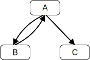

算法可以显式使用有序、逗号分隔的别名序列进行参数化，在算法步骤中可以通过这些别名引用对应位置传入的参数。可选参数用括号（[ , _name_ ]）标记，在算法步骤中与必选参数没有区别。参数列表末尾可以出现剩余参数，用前置省略号（, ..._name_）标记。剩余参数会将所有必选和可选参数之后传入的参数收集到一个 List 中。如果没有额外参数，则该 List 为空。
算法步骤可以用“Let _x_ be _someValue_”声明命名别名。这些别名类似引用，即 _x_ 和 _someValue_ 都引用相同的数据，对任一的修改都可见。若算法步骤希望避免引用行为，应显式复制右侧值：“Let _x_ be a copy of _someValue_”会创建 _someValue_ 的浅复制。
别名声明后可在后续步骤引用，但不可在声明前引用。别名可用“Set _x_ to _someOtherValue_”进行赋值。
1. [id="step-sdo-invocation-example-1"] Let _status_ be SyntaxDirectedOperation of |SomeNonTerminal|.
1. Let _someParseNode_ be the parse of some source text.
1. [id="step-sdo-invocation-example-2"] Perform SyntaxDirectedOperation of _someParseNode_.
1. [id="step-sdo-invocation-example-3"] Perform SyntaxDirectedOperation of _someParseNode_ with argument *"value"*.
除非另有说明，所有链式产生式都隐含定义了对该产生式左部非终结符可应用的所有操作的隐含定义。隐含定义即对链式产生式唯一右部非终结符以相同参数重复应用同一操作，返回结果。例如，假设某算法有如下步骤：“Return Evaluation of |Block|”且有如下产生式：
在规范角度，“is”用于比较两个值是否相等，例如“If _bool_ is *true*, then ...”；“contains”用于在列表中用相等性比较查找值，如“If _list_ contains a Record _r_ such that _r_.[[Foo]] is *true*, then ...”。规范值的规范同一性决定了这些比较结果，是规范中的公理。
在本规范中，“the string-concatenation of _A_, _B_, ...”（每个参数为字符串值、码元或码元序列）表示顺序连接每个参数的码元后得到的字符串值。
“the substring of _S_ from _inclusiveStart_ to _exclusiveEnd_”（_S_ 为字符串值或码元序列，_inclusiveStart_ 和 _exclusiveEnd_ 为整数）表示从索引 _inclusiveStart_ 到紧邻索引 _exclusiveEnd_ 之前的顺序码元组成的字符串值（当 _inclusiveStart_ = _exclusiveEnd_ 时为空字符串）。若省略 "to" 后缀，则 _exclusiveEnd_ 取 _S_ 的长度。
“the ASCII word characters”表示如下字符串值，仅包含 Unicode 基本拉丁区的所有字母和数字以及 U+005F（下划线）：
*"ABCDEFGHIJKLMNOPQRSTUVWXYZabcdefghijklmnopqrstuvwxyz0123456789_"*。
出于历史原因，在多种算法中具有特殊意义。
StringIndexOf (
_string_: a String,
_searchValue_: a String,
_fromIndex_: a non-negative integer,
): a non-negative integer or ~not-found~
属性键用于访问属性及其值。属性有两种访问方式：获取和设置，分别对应值的读取和赋值。可通过 get 和 set 访问的属性包括作为对象直接组成部分的自身属性和通过属性继承关系由其他关联对象提供的继承属性。继承属性可以是关联对象的自身属性或继承属性。对象的每个自身属性都必须有一个与该对象其他自身属性不同的键值。
在规范中，为方便记号，可用类似数组的语法访问 Data Block 的各字节。该记号将 Data Block 视为 0 起始整数索引的字节序列。例如，若 _db_ 为 5 字节 Data Block，则 _db_[2] 用于访问第 3 个字节。
可被多个 agent 并发引用的驻留于内存的数据块称为 Shared Data Block。Shared Data Block 有一个用于相等性测试的无地址身份：它不是绑定到任何进程的虚拟地址，而是与所代表的内存位置集合绑定。只有包含的内存位置集合相等，两数据块才相等，否则不等且其集合交集为空。Shared Data Block 可与 Data Block 区分。
Shared Data Block 的语义由内存模型通过 Shared Data Block 事件定义。下述抽象操作引入 Shared Data Block 事件，并作为求值语义与内存模型事件语义的接口。事件构成候选执行，内存模型对其进行筛选。完整语义参见内存模型。
Shared Data Block 事件由内存模型定义的 Record 表示。
本规范用以下抽象操作处理 Data Block 值：
CreateByteDataBlock (
_size_: 非负整数,
): 返回包含 Data Block 的正常完成或异常完成
当 ToPrimitive 未带 hint 被调用时，一般表现为 hint 为 ~number~。但对象可通过定义 %Symbol.toPrimitive% 方法来覆写此行为。本规范中只有 Date（参见 ）和 Symbol 对象（参见 ）覆写默认行为。Date 在缺少 hint 时将其视为 ~string~。
可执行代码与执行上下文 (Executable Code and Execution Contexts)
环境记录 (Environment Records)
Environment Record 是一种规范类型，用于基于 ECMAScript 代码的词法嵌套结构，将 |Identifier| 与特定变量及函数建立关联。通常一个 Environment Record 与某个特定的 ECMAScript 语法结构关联，如 |FunctionDeclaration|、|BlockStatement| 或 |TryStatement| 的 |Catch| 子句。每当这类代码被求值时，就会新建一个 Environment Record，用来记录该代码创建的标识符绑定。
每个 Environment Record 都有一个 [[OuterEnv]] 字段，其值为 *null* 或指向一个外层 Environment Record，用来建模 Environment Record 值的逻辑嵌套。一个（内层）Environment Record 的外层引用指向在逻辑上包围它的 Environment Record。外层 Environment Record 当然也可以再有自己的外层引用。一个 Environment Record 可以作为多个内层 Environment Record 的外层环境。例如，若一个 |FunctionDeclaration| 内含两个嵌套的 |FunctionDeclaration|，那么这两个嵌套函数的 Environment Record 的外层 Environment Record 都是外层函数当前求值对应的 Environment Record。
Environment Record 纯属规范机制，不需要对应到 ECMAScript 实现中的任何具体产物。ECMAScript 程序无法直接访问或操纵这些值。
Environment Record 类型层次 (The Environment Record Type Hierarchy)
可以将 Environment Record 看作是一个简单的面向对象层次结构：Environment Record 是一个抽象类，具有三个具体子类：Declarative Environment Record、Object Environment Record 和 Global Environment Record。Function Environment Record 与 Module Environment Record 是 Declarative Environment Record 的子类。
Environment Record (抽象)
Declarative Environment Record 用于定义 ECMAScript 语言语法元素（如 |FunctionDeclaration|、|VariableDeclaration|、|Catch| 子句）对标识符绑定与 ECMAScript 语言值直接关联所产生的效果。
Function Environment Record 对应一次 ECMAScript 函数对象的调用，包含该函数顶层声明的绑定；它可以建立新的 `this` 绑定，并捕获支持 `super` 方法调用所需的状态。
Module Environment Record 包含 |Module| 的顶层声明绑定，也包含该 |Module| 显式导入的绑定。其 [[OuterEnv]] 为一个 Global Environment Record。
Object Environment Record 用于定义类似 |WithStatement| 那样把标识符绑定关联到某对象属性的 ECMAScript 元素的效果。
Global Environment Record 用于 |Script| 的全局声明。它没有外层环境；其 [[OuterEnv]] 为 *null*。它可被预填充标识符绑定，并包含一个关联的全局对象，该对象的属性提供部分全局环境的标识符绑定。随着 ECMAScript 代码执行，可以向全局对象增加属性或修改初始属性。
Environment Record 抽象类包含 中定义的抽象规范方法。这些抽象方法在各具体子类上有不同的具体算法。
方法
目的
HasBinding(N)
判断 Environment Record 是否存在字符串值 _N_ 的绑定；存在返回 *true*，否则返回 *false*。
Function Environment Record 是一个 Declarative Environment Record，表示函数的顶层作用域，并且若函数不是 |ArrowFunction|，则提供 `this` 绑定。若一个非 |ArrowFunction| 函数引用 `super`，其 Function Environment Record 也包含执行 `super` 方法调用所需的状态。
Global Environment Record 表示在同一 realm 中处理的所有 ECMAScript |Script| 元素共享的最外层作用域。提供内置全局（）、全局对象属性以及所有顶层声明（，）的绑定。
Global Environment Record 在逻辑上是单一记录，但被描述为封装一个 Object Environment Record 和一个 Declarative Environment Record 的复合体。Object Environment Record 的基对象为关联 Realm Record 的全局对象。该全局对象是其 GetThisBinding 具体方法返回的值。Object 组件包含内置全局与由 |FunctionDeclaration|、|GeneratorDeclaration|、|AsyncFunctionDeclaration|、|AsyncGeneratorDeclaration|、|VariableStatement| 引入的全局代码绑定；其余声明的绑定位于 Declarative 组件。
可以直接在全局对象上创建属性，因此 Object 组件可能同时包含通过声明显式创建的绑定与作为全局对象属性隐式创建的绑定。为区分通过声明显式创建的绑定，Global Environment Record 维护使用 CreateGlobalVarBinding 与 CreateGlobalFunctionBinding 创建的名称列表。
PrivateEnvironment Record 是一种规范机制，用于基于 ECMAScript 代码中 |ClassDeclaration| 与 |ClassExpression| 的词法嵌套结构跟踪 Private Name。它们与 Environment Record 类似但不同。每个 PrivateEnvironment Record 与一个 |ClassDeclaration| 或 |ClassExpression| 关联。每次此类 class 被求值时，会创建一个新的 PrivateEnvironment Record 来记录该 class 声明的 Private Name。
每个 PrivateEnvironment Record 拥有 中定义的字段。
字段名
值类型
含义
[[OuterPrivateEnvironment]]
一个 PrivateEnvironment Record 或 *null*
最近包围的 class 的 PrivateEnvironment Record。若与此 PrivateEnvironment Record 关联的 class 未被任何其他 class 包含则为 *null*。
[[Names]]
一个 Private Name 列表
该 class 声明的 Private Name。
PrivateEnvironment Record 操作 (PrivateEnvironment Record Operations)
以下抽象操作用于在本规范中对 PrivateEnvironment Record 进行操作：
NewPrivateEnvironment (
_outerPrivateEnv_: a PrivateEnvironment Record or *null*,
): a PrivateEnvironment Record
ResolveBinding (
_name_: a String,
optional _env_: an Environment Record or *undefined*,
): either a normal completion containing a Reference Record or a throw completion
HostCallJobCallback (
_jobCallback_: a JobCallback Record,
_V_: an ECMAScript language value,
_argumentsList_: a List of ECMAScript language values,
): either a normal completion containing an ECMAScript language value or a throw completion
OrdinaryDefineOwnProperty (
_O_: an Object,
_P_: a property key,
_Desc_: a Property Descriptor,
): either a normal completion containing a Boolean or a throw completion
ValidateAndApplyPropertyDescriptor (
_O_: an Object or *undefined*,
_P_: a property key,
_extensible_: a Boolean,
_Desc_: a Property Descriptor,
_current_: a Property Descriptor or *undefined*,
): a Boolean
[[Get]] (
_P_: a property key,
_Receiver_: an ECMAScript language value,
): 一个正常完成（包含 ECMAScript 语言值）或一个抛出完成
for
一个普通对象 _O_
1. 返回 ? OrdinaryGet(_O_, _P_, _Receiver_)。
OrdinaryGet (
_O_: an Object,
_P_: a property key,
_Receiver_: an ECMAScript language value,
): either a normal completion containing an ECMAScript language value or a throw completion
[[Set]] (
_P_: a property key,
_V_: an ECMAScript language value,
_Receiver_: an ECMAScript language value,
): 一个正常完成（包含 Boolean）或一个抛出完成
for
一个普通对象 _O_
1. 返回 ? OrdinarySet(_O_, _P_, _V_, _Receiver_)。
OrdinarySet (
_O_: an Object,
_P_: a property key,
_V_: an ECMAScript language value,
_Receiver_: an ECMAScript language value,
): either a normal completion containing a Boolean or a throw completion
OrdinarySetWithOwnDescriptor (
_O_: an Object,
_P_: a property key,
_V_: an ECMAScript language value,
_Receiver_: an ECMAScript language value,
_ownDesc_: a Property Descriptor or *undefined*,
): either a normal completion containing a Boolean or a throw completion
OrdinaryCreateFromConstructor (
_constructor_: a function object,
_intrinsicDefaultProto_: a String,
optional _internalSlotsList_: a List of names of internal slots,
): either a normal completion containing an Object or a throw completion
GetPrototypeFromConstructor (
_constructor_: a function object,
_intrinsicDefaultProto_: a String,
): either a normal completion containing an Object or a throw completion
RequireInternalSlot (
_O_: an ECMAScript language value,
_internalSlot_: an internal slot name,
): either a normal completion containing ~unused~ or a throw completion
OrdinaryCallBindThis (
_F_: an ECMAScript function object,
_calleeContext_: an execution context,
_thisArgument_: an ECMAScript language value,
): ~unused~
运行时语义：EvaluateBody (
_functionObject_: an ECMAScript function object,
_argumentsList_: a List of ECMAScript language values,
): a return completion or a throw completion
FunctionBody : FunctionStatementList
1. Return ? EvaluateFunctionBody of |FunctionBody| with arguments _functionObject_ and _argumentsList_.
ConciseBody : ExpressionBody
1. Return ? EvaluateConciseBody of |ConciseBody| with arguments _functionObject_ and _argumentsList_.
GeneratorBody : FunctionBody
1. Return ? EvaluateGeneratorBody of |GeneratorBody| with arguments _functionObject_ and _argumentsList_.
AsyncGeneratorBody : FunctionBody
1. Return ? EvaluateAsyncGeneratorBody of |AsyncGeneratorBody| with arguments _functionObject_ and _argumentsList_.
AsyncFunctionBody : FunctionBody
1. Return ? EvaluateAsyncFunctionBody of |AsyncFunctionBody| with arguments _functionObject_ and _argumentsList_.
AsyncConciseBody : ExpressionBody
1. Return ? EvaluateAsyncConciseBody of |AsyncConciseBody| with arguments _functionObject_ and _argumentsList_.
Initializer :
`=` AssignmentExpression
1. Assert: _argumentsList_ is empty.
1. Assert: _functionObject_.[[ClassFieldInitializerName]] is not ~empty~.
1. If IsAnonymousFunctionDefinition(|AssignmentExpression|) is *true*, then
1. Let _value_ be ? NamedEvaluation of |Initializer| with argument _functionObject_.[[ClassFieldInitializerName]].
1. Else,
1. Let _rhs_ be ? Evaluation of |AssignmentExpression|.
1. Let _value_ be ? GetValue(_rhs_).
1. Return ReturnCompletion(_value_).
ClassStaticBlockBody : ClassStaticBlockStatementList
1. Assert: _argumentsList_ is empty.
1. Return ? EvaluateClassStaticBlockBody of |ClassStaticBlockBody| with argument _functionObject_.
OrdinaryCallEvaluateBody (
_F_: an ECMAScript function object,
_argumentsList_: a List of ECMAScript language values,
): a return completion or a throw completion
1. Return ? EvaluateBody of _F_.[[ECMAScriptCode]] with arguments _F_ and _argumentsList_.
[[Construct]] (
_argumentsList_: a List of ECMAScript language values,
_newTarget_: a constructor,
): 一个正常完成（包含 Object）或一个抛出完成
OrdinaryFunctionCreate (
_functionPrototype_: an Object,
_sourceText_: a sequence of Unicode code points,
_ParameterList_: a Parse Node,
_Body_: a Parse Node,
_thisMode_: ~lexical-this~ or ~non-lexical-this~,
_env_: an Environment Record,
_privateEnv_: a PrivateEnvironment Record or *null*,
): an ECMAScript function object
MakeConstructor (
_F_: an ECMAScript function object or a built-in function object,
optional _writablePrototype_: a Boolean,
optional _prototype_: an Object,
): ~unused~
DefineMethodProperty (
_homeObject_: an Object,
_key_: a property key or Private Name,
_closure_: a function object,
_enumerable_: a Boolean,
): either a normal completion containing either a PrivateElement or ~unused~, or an abrupt completion
FunctionDeclarationInstantiation (
_func_: an ECMAScript function object,
_argumentsList_: a List of ECMAScript language values,
): either a normal completion containing ~unused~ or a throw completion
description
_func_ 是为其建立执行上下文的函数对象。
当为求值一个 ECMAScript 函数建立执行上下文时，会创建一个新的 Function Environment Record，并在其中实例化每个形式参数的绑定。函数体内的每个声明也会被实例化。若函数形式参数不包含任何默认值初始化器，则函数体声明与参数在同一个 Environment Record 中实例化。若存在默认值参数初始化器，则为函数体声明创建第二个 Environment Record。形式参数与函数在 FunctionDeclarationInstantiation 过程中被初始化。所有其它绑定在函数体求值期间初始化。
BuiltinCallOrConstruct (
_F_: a built-in function object,
_thisArgument_: an ECMAScript language value or ~uninitialized~,
_argumentsList_: a List of ECMAScript language values,
_newTarget_: a constructor or *undefined*,
): 返回一个包含 ECMAScript 语言值的正常完成或一个抛出完成
CreateBuiltinFunction (
_behaviour_: an Abstract Closure, a set of algorithm steps, or some other definition of a function's behaviour provided in this specification,
_length_: a non-negative integer or +∞,
_name_: a property key or a Private Name,
_additionalInternalSlotsList_: a List of names of internal slots,
optional _realm_: a Realm Record,
optional _prototype_: an Object or *null*,
optional _prefix_: a String,
): 一个内置函数对象
BoundFunctionCreate (
_targetFunction_: a function object,
_boundThis_: an ECMAScript language value,
_boundArgs_: a List of ECMAScript language values,
): 返回一个包含 function object 的正常完成或一个抛出完成
CreateMappedArgumentsObject (
_func_: an Object,
_formals_: a Parse Node,
_argumentsList_: a List of ECMAScript language values,
_env_: an Environment Record,
): 一个 arguments 特异对象
静态语义：CodePointAt (
_string_: a String,
_position_: a non-negative integer,
): a Record with fields [[CodePoint]] (a code point), [[CodeUnitCount]] (a positive integer), and [[IsUnpairedSurrogate]] (a Boolean)
静态语义：ParseText (
_sourceText_: a String or a sequence of Unicode code points,
_goalSymbol_: a nonterminal in one of the ECMAScript grammars,
): a Parse Node or a non-empty List of *SyntaxError* objects
The source text of an ECMAScript |Script| or |Module| is first converted into a sequence of input elements, which are tokens, line terminators, comments, or white space. The source text is scanned from left to right, repeatedly taking the longest possible sequence of code points as the next input element.
There are several situations where the identification of lexical input elements is sensitive to the syntactic grammar context that is consuming the input elements. This requires multiple goal symbols for the lexical grammar. The |InputElementHashbangOrRegExp| goal is used at the start of a |Script| or |Module|. The |InputElementRegExpOrTemplateTail| goal is used in syntactic grammar contexts where a |RegularExpressionLiteral|, a |TemplateMiddle|, or a |TemplateTail| is permitted. The |InputElementRegExp| goal symbol is used in all syntactic grammar contexts where a |RegularExpressionLiteral| is permitted but neither a |TemplateMiddle|, nor a |TemplateTail| is permitted. The |InputElementTemplateTail| goal is used in all syntactic grammar contexts where a |TemplateMiddle| or a |TemplateTail| is permitted but a |RegularExpressionLiteral| is not permitted. In all other contexts, |InputElementDiv| is used as the lexical goal symbol.
The use of multiple lexical goals ensures that there are no lexical ambiguities that would affect automatic semicolon insertion. For example, there are no syntactic grammar contexts where both a leading division or division-assignment, and a leading |RegularExpressionLiteral| are permitted. This is not affected by semicolon insertion (see ); in examples such as the following:
a = b
/hi/g.exec(c).map(d);
where the first non-whitespace, non-comment code point after a |LineTerminator| is U+002F (SOLIDUS) and the syntactic context allows division or division-assignment, no semicolon is inserted at the |LineTerminator|. That is, the above example is interpreted in the same way as:
The Unicode format-control characters (i.e., the characters in category “Cf” in the Unicode Character Database such as LEFT-TO-RIGHT MARK or RIGHT-TO-LEFT MARK) are control codes used to control the formatting of a range of text in the absence of higher-level protocols for this (such as mark-up languages).
It is useful to allow format-control characters in source text to facilitate editing and display. All format control characters may be used within comments, and within string literals, template literals, and regular expression literals.
U+FEFF (ZERO WIDTH NO-BREAK SPACE) is a format-control character used primarily at the start of a text to mark it as Unicode and to allow detection of the text's encoding and byte order. <ZWNBSP> characters intended for this purpose can sometimes also appear after the start of a text, for example as a result of concatenating files. In ECMAScript source text <ZWNBSP> code points are treated as white space characters (see ) outside of comments, string literals, template literals, and regular expression literals.
White Space
White space code points are used to improve source text readability and to separate tokens (indivisible lexical units) from each other, but are otherwise insignificant. White space code points may occur between any two tokens and at the start or end of input. White space code points may occur within a |StringLiteral|, a |RegularExpressionLiteral|, a |Template|, or a |TemplateSubstitutionTail| where they are considered significant code points forming part of a literal value. They may also occur within a |Comment|, but cannot appear within any other kind of token.
The ECMAScript white space code points are listed in .
Code Points
Name
Abbreviation
`U+0009`
CHARACTER TABULATION
<TAB>
`U+000B`
LINE TABULATION
<VT>
`U+000C`
FORM FEED (FF)
<FF>
`U+FEFF`
ZERO WIDTH NO-BREAK SPACE
<ZWNBSP>
any code point in general category “Space_Separator”
<USP>
U+0020 (SPACE) and U+00A0 (NO-BREAK SPACE) code points are part of <USP>.
Other than for the code points listed in , ECMAScript |WhiteSpace| intentionally excludes all code points that have the Unicode “White_Space” property but which are not classified in general category “Space_Separator” (“Zs”).
Syntax
WhiteSpace ::
<TAB>
<VT>
<FF>
<ZWNBSP>
<USP>
Line Terminators
Like white space code points, line terminator code points are used to improve source text readability and to separate tokens (indivisible lexical units) from each other. However, unlike white space code points, line terminators have some influence over the behaviour of the syntactic grammar. In general, line terminators may occur between any two tokens, but there are a few places where they are forbidden by the syntactic grammar. Line terminators also affect the process of automatic semicolon insertion (). A line terminator cannot occur within any token except a |StringLiteral|, |Template|, or |TemplateSubstitutionTail|. <LF> and <CR> line terminators cannot occur within a |StringLiteral| token except as part of a |LineContinuation|.
A line terminator can occur within a |MultiLineComment| but cannot occur within a |SingleLineComment|.
Line terminators are included in the set of white space code points that are matched by the `\\s` class in regular expressions.
The ECMAScript line terminator code points are listed in .
Code Point
Unicode Name
Abbreviation
`U+000A`
LINE FEED (LF)
<LF>
`U+000D`
CARRIAGE RETURN (CR)
<CR>
`U+2028`
LINE SEPARATOR
<LS>
`U+2029`
PARAGRAPH SEPARATOR
<PS>
Only the Unicode code points in are treated as line terminators. Other new line or line breaking Unicode code points are not treated as line terminators but are treated as white space if they meet the requirements listed in . The sequence <CR><LF> is commonly used as a line terminator. It should be considered a single |SourceCharacter| for the purpose of reporting line numbers.
Comments can be either single or multi-line. Multi-line comments cannot nest.
Because a single-line comment can contain any Unicode code point except a |LineTerminator| code point, and because of the general rule that a token is always as long as possible, a single-line comment always consists of all code points from the `//` marker to the end of the line. However, the |LineTerminator| at the end of the line is not considered to be part of the single-line comment; it is recognized separately by the lexical grammar and becomes part of the stream of input elements for the syntactic grammar. This point is very important, because it implies that the presence or absence of single-line comments does not affect the process of automatic semicolon insertion (see ).
Comments behave like white space and are discarded except that, if a |MultiLineComment| contains a line terminator code point, then the entire comment is considered to be a |LineTerminator| for purposes of parsing by the syntactic grammar.
Syntax
Comment ::
MultiLineComment
SingleLineComment
MultiLineComment ::
`/*` MultiLineCommentChars? `*/`
MultiLineCommentChars ::
MultiLineNotAsteriskChar MultiLineCommentChars?
`*` PostAsteriskCommentChars?
PostAsteriskCommentChars ::
MultiLineNotForwardSlashOrAsteriskChar MultiLineCommentChars?
`*` PostAsteriskCommentChars?
MultiLineNotAsteriskChar ::
SourceCharacter but not `*`
MultiLineNotForwardSlashOrAsteriskChar ::
SourceCharacter but not one of `/` or `*`
SingleLineComment ::
`//` SingleLineCommentChars?
SingleLineCommentChars ::
SingleLineCommentChar SingleLineCommentChars?
SingleLineCommentChar ::
SourceCharacter but not LineTerminator
A number of productions in this section are given alternative definitions in section
Hashbang Comments
Hashbang Comments are location-sensitive and like other types of comments are discarded from the stream of input elements for the syntactic grammar.
The |DivPunctuator|, |RegularExpressionLiteral|, |RightBracePunctuator|, and |TemplateSubstitutionTail| productions derive additional tokens that are not included in the |CommonToken| production.
Names and Keywords
|IdentifierName| and |ReservedWord| are tokens that are interpreted according to the Default Identifier Syntax given in Unicode Standard Annex #31, Identifier and Pattern Syntax, with some small modifications. |ReservedWord| is an enumerated subset of |IdentifierName|. The syntactic grammar defines |Identifier| as an |IdentifierName| that is not a |ReservedWord|. The Unicode identifier grammar is based on character properties specified by the Unicode Standard. The Unicode code points in the specified categories in the latest version of the Unicode Standard must be treated as in those categories by all conforming ECMAScript implementations. ECMAScript implementations may recognize identifier code points defined in later editions of the Unicode Standard.
This standard specifies specific code point additions: U+0024 (DOLLAR SIGN) and U+005F (LOW LINE) are permitted anywhere in an |IdentifierName|.
The definitions of the nonterminal |UnicodeEscapeSequence| is given in .
The nonterminal |IdentifierPart| derives `_` via |UnicodeIDContinue|.
The sets of code points with Unicode properties “ID_Start” and “ID_Continue” include, respectively, the code points with Unicode properties “Other_ID_Start” and “Other_ID_Continue”.
Identifier Names
Unicode escape sequences are permitted in an |IdentifierName|, where they contribute a single Unicode code point equal to the IdentifierCodePoint of the |UnicodeEscapeSequence|. The `\\` preceding the |UnicodeEscapeSequence| does not contribute any code points. A |UnicodeEscapeSequence| cannot be used to contribute a code point to an |IdentifierName| that would otherwise be invalid. In other words, if a `\\` |UnicodeEscapeSequence| sequence were replaced by the |SourceCharacter| it contributes, the result must still be a valid |IdentifierName| that has the exact same sequence of |SourceCharacter| elements as the original |IdentifierName|. All interpretations of |IdentifierName| within this specification are based upon their actual code points regardless of whether or not an escape sequence was used to contribute any particular code point.
Two |IdentifierName|s that are canonically equivalent according to the Unicode Standard are not equal unless, after replacement of each |UnicodeEscapeSequence|, they are represented by the exact same sequence of code points.
Static Semantics: Early Errors
IdentifierStart :: `\` UnicodeEscapeSequence
It is a Syntax Error if the IdentifierCodePoint of |UnicodeEscapeSequence| is not some Unicode code point matched by the |IdentifierStartChar| lexical grammar production.
IdentifierPart :: `\` UnicodeEscapeSequence
It is a Syntax Error if the IdentifierCodePoint of |UnicodeEscapeSequence| is not some Unicode code point matched by the |IdentifierPartChar| lexical grammar production.
Static Semantics: IdentifierCodePoints ( ): a List of code points
IdentifierName :: IdentifierStart
1. Let _cp_ be the IdentifierCodePoint of |IdentifierStart|.
1. Return « _cp_ ».
IdentifierName :: IdentifierName IdentifierPart
1. Let _cps_ be the IdentifierCodePoints of the derived |IdentifierName|.
1. Let _cp_ be the IdentifierCodePoint of |IdentifierPart|.
1. Return the list-concatenation of _cps_ and « _cp_ ».
Static Semantics: IdentifierCodePoint ( ): a code point
IdentifierStart :: IdentifierStartChar
1. Return the code point matched by |IdentifierStartChar|.
IdentifierPart :: IdentifierPartChar
1. Return the code point matched by |IdentifierPartChar|.
UnicodeEscapeSequence :: `u` Hex4Digits
1. Return the code point whose numeric value is the MV of |Hex4Digits|.
UnicodeEscapeSequence :: `u{` CodePoint `}`
1. Return the code point whose numeric value is the MV of |CodePoint|.
Keywords and Reserved Words
A keyword is a token that matches |IdentifierName|, but also has a syntactic use; that is, it appears literally, in a `fixed width` font, in some syntactic production. The keywords of ECMAScript include `if`, `while`, `async`, `await`, and many others.
A reserved word is an |IdentifierName| that cannot be used as an identifier. Many keywords are reserved words, but some are not, and some are reserved only in certain contexts. `if` and `while` are reserved words. `await` is reserved only inside async functions and modules. `async` is not reserved; it can be used as a variable name or statement label without restriction.
This specification uses a combination of grammatical productions and early error rules to specify which names are valid identifiers and which are reserved words. All tokens in the |ReservedWord| list below, except for `await` and `yield`, are unconditionally reserved. Exceptions for `await` and `yield` are specified in , using parameterized syntactic productions. Lastly, several early error rules restrict the set of valid identifiers. See , , , and . In summary, there are five categories of identifier names:
Those that are always allowed as identifiers, and are not keywords, such as `Math`, `window`, `toString`, and `_`;
Those that are never allowed as identifiers, namely the |ReservedWord|s listed below except `await` and `yield`;
Those that are contextually allowed as identifiers, namely `await` and `yield`;
Those that are contextually disallowed as identifiers, in strict mode code: `let`, `static`, `implements`, `interface`, `package`, `private`, `protected`, and `public`;
Those that are always allowed as identifiers, but also appear as keywords within certain syntactic productions, at places where |Identifier| is not allowed: `as`, `async`, `from`, `get`, `meta`, `of`, `set`, and `target`.
The term conditional keyword, or contextual keyword, is sometimes used to refer to the keywords that fall in the last three categories, and thus can be used as identifiers in some contexts and as keywords in others.
Per , keywords in the grammar match literal sequences of specific |SourceCharacter| elements. A code point in a keyword cannot be expressed by a `\\` |UnicodeEscapeSequence|.
An |IdentifierName| can contain `\\` |UnicodeEscapeSequence|s, but it is not possible to declare a variable named "else" by spelling it `els\u{65}`. The early error rules in rule out identifiers with the same StringValue as a reserved word.
`enum` is not currently used as a keyword in this specification. It is a future reserved word, set aside for use as a keyword in future language extensions.
Similarly, `implements`, `interface`, `package`, `private`, `protected`, and `public` are future reserved words in strict mode code.
The names `arguments` and `eval` are not keywords, but they are subject to some restrictions in strict mode code. See , , , , , and .
It is a Syntax Error if IsStrict(this production) is *true*.
In non-strict code, this syntax is Legacy.
Static Semantics: MV
A numeric literal stands for a value of the Number type or the BigInt type.
The MV of DecimalLiteral :: DecimalIntegerLiteral `.` DecimalDigits is the MV of |DecimalIntegerLiteral| plus (the MV of |DecimalDigits| × 10-_n_), where _n_ is the number of code points in |DecimalDigits|, excluding all occurrences of |NumericLiteralSeparator|.
The MV of DecimalLiteral :: DecimalIntegerLiteral `.` ExponentPart is the MV of |DecimalIntegerLiteral| × 10_e_, where _e_ is the MV of |ExponentPart|.
The MV of DecimalLiteral :: DecimalIntegerLiteral `.` DecimalDigits ExponentPart is (the MV of |DecimalIntegerLiteral| plus (the MV of |DecimalDigits| × 10-_n_)) × 10_e_, where _n_ is the number of code points in |DecimalDigits|, excluding all occurrences of |NumericLiteralSeparator| and _e_ is the MV of |ExponentPart|.
The MV of DecimalLiteral :: `.` DecimalDigits is the MV of |DecimalDigits| × 10-_n_, where _n_ is the number of code points in |DecimalDigits|, excluding all occurrences of |NumericLiteralSeparator|.
The MV of DecimalLiteral :: `.` DecimalDigits ExponentPart is the MV of |DecimalDigits| × 10_e_ - _n_, where _n_ is the number of code points in |DecimalDigits|, excluding all occurrences of |NumericLiteralSeparator|, and _e_ is the MV of |ExponentPart|.
The MV of DecimalLiteral :: DecimalIntegerLiteral ExponentPart is the MV of |DecimalIntegerLiteral| × 10_e_, where _e_ is the MV of |ExponentPart|.
The MV of DecimalIntegerLiteral :: `0` is 0.
The MV of DecimalIntegerLiteral :: NonZeroDigit NumericLiteralSeparator? DecimalDigits is (the MV of |NonZeroDigit| × 10_n_) plus the MV of |DecimalDigits|, where _n_ is the number of code points in |DecimalDigits|, excluding all occurrences of |NumericLiteralSeparator|.
The MV of DecimalDigits :: DecimalDigits DecimalDigit is (the MV of |DecimalDigits| × 10) plus the MV of |DecimalDigit|.
The MV of DecimalDigits :: DecimalDigits NumericLiteralSeparator DecimalDigit is (the MV of |DecimalDigits| × 10) plus the MV of |DecimalDigit|.
The MV of ExponentPart :: ExponentIndicator SignedInteger is the MV of |SignedInteger|.
The MV of SignedInteger :: `-` DecimalDigits is the negative of the MV of |DecimalDigits|.
The MV of DecimalDigit :: `0` or of HexDigit :: `0` or of OctalDigit :: `0` or of LegacyOctalEscapeSequence :: `0` or of BinaryDigit :: `0` is 0.
The MV of DecimalDigit :: `1` or of NonZeroDigit :: `1` or of HexDigit :: `1` or of OctalDigit :: `1` or of BinaryDigit :: `1` is 1.
The MV of DecimalDigit :: `2` or of NonZeroDigit :: `2` or of HexDigit :: `2` or of OctalDigit :: `2` is 2.
The MV of DecimalDigit :: `3` or of NonZeroDigit :: `3` or of HexDigit :: `3` or of OctalDigit :: `3` is 3.
The MV of DecimalDigit :: `4` or of NonZeroDigit :: `4` or of HexDigit :: `4` or of OctalDigit :: `4` is 4.
The MV of DecimalDigit :: `5` or of NonZeroDigit :: `5` or of HexDigit :: `5` or of OctalDigit :: `5` is 5.
The MV of DecimalDigit :: `6` or of NonZeroDigit :: `6` or of HexDigit :: `6` or of OctalDigit :: `6` is 6.
The MV of DecimalDigit :: `7` or of NonZeroDigit :: `7` or of HexDigit :: `7` or of OctalDigit :: `7` is 7.
The MV of DecimalDigit :: `8` or of NonZeroDigit :: `8` or of NonOctalDigit :: `8` or of HexDigit :: `8` is 8.
The MV of DecimalDigit :: `9` or of NonZeroDigit :: `9` or of NonOctalDigit :: `9` or of HexDigit :: `9` is 9.
The MV of HexDigit :: `a` or of HexDigit :: `A` is 10.
The MV of HexDigit :: `b` or of HexDigit :: `B` is 11.
The MV of HexDigit :: `c` or of HexDigit :: `C` is 12.
The MV of HexDigit :: `d` or of HexDigit :: `D` is 13.
The MV of HexDigit :: `e` or of HexDigit :: `E` is 14.
The MV of HexDigit :: `f` or of HexDigit :: `F` is 15.
The MV of BinaryDigits :: BinaryDigits BinaryDigit is (the MV of |BinaryDigits| × 2) plus the MV of |BinaryDigit|.
The MV of BinaryDigits :: BinaryDigits NumericLiteralSeparator BinaryDigit is (the MV of |BinaryDigits| × 2) plus the MV of |BinaryDigit|.
The MV of OctalDigits :: OctalDigits OctalDigit is (the MV of |OctalDigits| × 8) plus the MV of |OctalDigit|.
The MV of OctalDigits :: OctalDigits NumericLiteralSeparator OctalDigit is (the MV of |OctalDigits| × 8) plus the MV of |OctalDigit|.
The MV of LegacyOctalIntegerLiteral :: LegacyOctalIntegerLiteral OctalDigit is (the MV of |LegacyOctalIntegerLiteral| times 8) plus the MV of |OctalDigit|.
The MV of NonOctalDecimalIntegerLiteral :: LegacyOctalLikeDecimalIntegerLiteral NonOctalDigit is (the MV of |LegacyOctalLikeDecimalIntegerLiteral| times 10) plus the MV of |NonOctalDigit|.
The MV of NonOctalDecimalIntegerLiteral :: NonOctalDecimalIntegerLiteral DecimalDigit is (the MV of |NonOctalDecimalIntegerLiteral| times 10) plus the MV of |DecimalDigit|.
The MV of LegacyOctalLikeDecimalIntegerLiteral :: LegacyOctalLikeDecimalIntegerLiteral OctalDigit is (the MV of |LegacyOctalLikeDecimalIntegerLiteral| times 10) plus the MV of |OctalDigit|.
The MV of HexDigits :: HexDigits HexDigit is (the MV of |HexDigits| × 16) plus the MV of |HexDigit|.
The MV of HexDigits :: HexDigits NumericLiteralSeparator HexDigit is (the MV of |HexDigits| × 16) plus the MV of |HexDigit|.
Static Semantics: NumericValue ( ): a Number or a BigInt
NumericLiteral :: DecimalLiteral
1. Return RoundMVResult(MV of |DecimalLiteral|).
NumericLiteral :: NonDecimalIntegerLiteral
1. Return 𝔽(MV of |NonDecimalIntegerLiteral|).
NumericLiteral :: LegacyOctalIntegerLiteral
1. Return 𝔽(MV of |LegacyOctalIntegerLiteral|).
NumericLiteral :: NonDecimalIntegerLiteral BigIntLiteralSuffix
1. Return the BigInt value for the MV of |NonDecimalIntegerLiteral|.
DecimalBigIntegerLiteral :: `0` BigIntLiteralSuffix
1. Return *0*ℤ.
DecimalBigIntegerLiteral :: NonZeroDigit BigIntLiteralSuffix
1. Return the BigInt value for the MV of |NonZeroDigit|.
DecimalBigIntegerLiteral ::
NonZeroDigit DecimalDigits BigIntLiteralSuffix
NonZeroDigit NumericLiteralSeparator DecimalDigits BigIntLiteralSuffix
1. Let _n_ be the number of code points in |DecimalDigits|, excluding all occurrences of |NumericLiteralSeparator|.
1. Let _mv_ be (the MV of |NonZeroDigit| × 10_n_) plus the MV of |DecimalDigits|.
1. Return ℤ(_mv_).
String Literals
A string literal is 0 or more Unicode code points enclosed in single or double quotes. Unicode code points may also be represented by an escape sequence. All code points may appear literally in a string literal except for the closing quote code points, U+005C (REVERSE SOLIDUS), U+000D (CARRIAGE RETURN), and U+000A (LINE FEED). Any code points may appear in the form of an escape sequence. String literals evaluate to ECMAScript String values. When generating these String values Unicode code points are UTF-16 encoded as defined in . Code points belonging to the Basic Multilingual Plane are encoded as a single code unit element of the string. All other code points are encoded as two code unit elements of the string.
Syntax
StringLiteral ::
`"` DoubleStringCharacters? `"`
`'` SingleStringCharacters? `'`
DoubleStringCharacters ::
DoubleStringCharacter DoubleStringCharacters?
SingleStringCharacters ::
SingleStringCharacter SingleStringCharacters?
DoubleStringCharacter ::
SourceCharacter but not one of `"` or `\` or LineTerminator
<LS>
<PS>
`\` EscapeSequence
LineContinuation
SingleStringCharacter ::
SourceCharacter but not one of `'` or `\` or LineTerminator
<LS>
<PS>
`\` EscapeSequence
LineContinuation
LineContinuation ::
`\` LineTerminatorSequence
EscapeSequence ::
CharacterEscapeSequence
`0` [lookahead ∉ DecimalDigit]
LegacyOctalEscapeSequence
NonOctalDecimalEscapeSequence
HexEscapeSequence
UnicodeEscapeSequence
CharacterEscapeSequence ::
SingleEscapeCharacter
NonEscapeCharacter
SingleEscapeCharacter :: one of
`'` `"` `\` `b` `f` `n` `r` `t` `v`
NonEscapeCharacter ::
SourceCharacter but not one of EscapeCharacter or LineTerminator
EscapeCharacter ::
SingleEscapeCharacter
DecimalDigit
`x`
`u`
LegacyOctalEscapeSequence ::
`0` [lookahead ∈ { `8`, `9` }]
NonZeroOctalDigit [lookahead ∉ OctalDigit]
ZeroToThree OctalDigit [lookahead ∉ OctalDigit]
FourToSeven OctalDigit
ZeroToThree OctalDigit OctalDigit
NonZeroOctalDigit ::
OctalDigit but not `0`
ZeroToThree :: one of
`0` `1` `2` `3`
FourToSeven :: one of
`4` `5` `6` `7`
NonOctalDecimalEscapeSequence :: one of
`8` `9`
HexEscapeSequence ::
`x` HexDigit HexDigit
UnicodeEscapeSequence ::
`u` Hex4Digits
`u{` CodePoint `}`
Hex4Digits ::
HexDigit HexDigit HexDigit HexDigit
The definition of the nonterminal |HexDigit| is given in . |SourceCharacter| is defined in .
<LF> and <CR> cannot appear in a string literal, except as part of a |LineContinuation| to produce the empty code points sequence. The proper way to include either in the String value of a string literal is to use an escape sequence such as `\\n` or `\\u000A`.
It is a Syntax Error if IsStrict(this production) is *true*.
In non-strict code, this syntax is Legacy.
It is possible for string literals to precede a Use Strict Directive that places the enclosing code in strict mode, and implementations must take care to enforce the above rules for such literals. For example, the following source text contains a Syntax Error:
function invalid() { "\7"; "use strict"; }
Static Semantics: SV ( ): a String
description
A string literal stands for a value of the String type. SV produces String values for string literals through recursive application on the various parts of the string literal. As part of this process, some Unicode code points within the string literal are interpreted as having a mathematical value, as described below or in .
The SV of StringLiteral :: `"` `"` is the empty String.
The SV of StringLiteral :: `'` `'` is the empty String.
The SV of DoubleStringCharacters :: DoubleStringCharacter DoubleStringCharacters is the string-concatenation of the SV of |DoubleStringCharacter| and the SV of |DoubleStringCharacters|.
The SV of SingleStringCharacters :: SingleStringCharacter SingleStringCharacters is the string-concatenation of the SV of |SingleStringCharacter| and the SV of |SingleStringCharacters|.
The SV of DoubleStringCharacter :: SourceCharacter but not one of `"` or `\` or LineTerminator is the result of performing UTF16EncodeCodePoint on the code point matched by |SourceCharacter|.
The SV of DoubleStringCharacter :: <LS> is the String value consisting of the code unit 0x2028 (LINE SEPARATOR).
The SV of DoubleStringCharacter :: <PS> is the String value consisting of the code unit 0x2029 (PARAGRAPH SEPARATOR).
The SV of DoubleStringCharacter :: LineContinuation is the empty String.
The SV of SingleStringCharacter :: SourceCharacter but not one of `'` or `\` or LineTerminator is the result of performing UTF16EncodeCodePoint on the code point matched by |SourceCharacter|.
The SV of SingleStringCharacter :: <LS> is the String value consisting of the code unit 0x2028 (LINE SEPARATOR).
The SV of SingleStringCharacter :: <PS> is the String value consisting of the code unit 0x2029 (PARAGRAPH SEPARATOR).
The SV of SingleStringCharacter :: LineContinuation is the empty String.
The SV of EscapeSequence :: `0` is the String value consisting of the code unit 0x0000 (NULL).
The SV of CharacterEscapeSequence :: SingleEscapeCharacter is the String value consisting of the code unit whose numeric value is determined by the |SingleEscapeCharacter| according to .
Escape Sequence
Code Unit Value
Unicode Character Name
Symbol
`\\b`
`0x0008`
BACKSPACE
<BS>
`\\t`
`0x0009`
CHARACTER TABULATION
<HT>
`\\n`
`0x000A`
LINE FEED (LF)
<LF>
`\\v`
`0x000B`
LINE TABULATION
<VT>
`\\f`
`0x000C`
FORM FEED (FF)
<FF>
`\\r`
`0x000D`
CARRIAGE RETURN (CR)
<CR>
`\\"`
`0x0022`
QUOTATION MARK
`"`
`\\'`
`0x0027`
APOSTROPHE
`'`
`\\\\`
`0x005C`
REVERSE SOLIDUS
`\\`
The SV of NonEscapeCharacter :: SourceCharacter but not one of EscapeCharacter or LineTerminator is the result of performing UTF16EncodeCodePoint on the code point matched by |SourceCharacter|.
The SV of EscapeSequence :: LegacyOctalEscapeSequence is the String value consisting of the code unit whose numeric value is the MV of |LegacyOctalEscapeSequence|.
The SV of NonOctalDecimalEscapeSequence :: `8` is the String value consisting of the code unit 0x0038 (DIGIT EIGHT).
The SV of NonOctalDecimalEscapeSequence :: `9` is the String value consisting of the code unit 0x0039 (DIGIT NINE).
The SV of HexEscapeSequence :: `x` HexDigit HexDigit is the String value consisting of the code unit whose numeric value is the MV of |HexEscapeSequence|.
The SV of Hex4Digits :: HexDigit HexDigit HexDigit HexDigit is the String value consisting of the code unit whose numeric value is the MV of |Hex4Digits|.
The SV of UnicodeEscapeSequence :: `u{` CodePoint `}` is the result of performing UTF16EncodeCodePoint on the MV of |CodePoint|.
The SV of TemplateEscapeSequence :: `0` is the String value consisting of the code unit 0x0000 (NULL).
Static Semantics: MV
The MV of LegacyOctalEscapeSequence :: ZeroToThree OctalDigit is (8 times the MV of |ZeroToThree|) plus the MV of |OctalDigit|.
The MV of LegacyOctalEscapeSequence :: FourToSeven OctalDigit is (8 times the MV of |FourToSeven|) plus the MV of |OctalDigit|.
The MV of LegacyOctalEscapeSequence :: ZeroToThree OctalDigit OctalDigit is (64 (that is, 82) times the MV of |ZeroToThree|) plus (8 times the MV of the first |OctalDigit|) plus the MV of the second |OctalDigit|.
The MV of ZeroToThree :: `0` is 0.
The MV of ZeroToThree :: `1` is 1.
The MV of ZeroToThree :: `2` is 2.
The MV of ZeroToThree :: `3` is 3.
The MV of FourToSeven :: `4` is 4.
The MV of FourToSeven :: `5` is 5.
The MV of FourToSeven :: `6` is 6.
The MV of FourToSeven :: `7` is 7.
The MV of HexEscapeSequence :: `x` HexDigit HexDigit is (16 times the MV of the first |HexDigit|) plus the MV of the second |HexDigit|.
The MV of Hex4Digits :: HexDigit HexDigit HexDigit HexDigit is (0x1000 × the MV of the first |HexDigit|) plus (0x100 × the MV of the second |HexDigit|) plus (0x10 × the MV of the third |HexDigit|) plus the MV of the fourth |HexDigit|.
Regular Expression Literals
A regular expression literal is an input element that is converted to a RegExp object (see ) each time the literal is evaluated. Two regular expression literals in a program evaluate to regular expression objects that never compare as `===` to each other even if the two literals' contents are identical. A RegExp object may also be created at runtime by `new RegExp` or calling the RegExp constructor as a function (see ).
The productions below describe the syntax for a regular expression literal and are used by the input element scanner to find the end of the regular expression literal. The source text comprising the |RegularExpressionBody| and the |RegularExpressionFlags| are subsequently parsed again using the more stringent ECMAScript Regular Expression grammar ().
An implementation may extend the ECMAScript Regular Expression grammar defined in , but it must not extend the |RegularExpressionBody| and |RegularExpressionFlags| productions defined below or the productions used by these productions.
Syntax
RegularExpressionLiteral ::
`/` RegularExpressionBody `/` RegularExpressionFlags
RegularExpressionBody ::
RegularExpressionFirstChar RegularExpressionChars
RegularExpressionChars ::
[empty]
RegularExpressionChars RegularExpressionChar
RegularExpressionFirstChar ::
RegularExpressionNonTerminator but not one of `*` or `\` or `/` or `[`
RegularExpressionBackslashSequence
RegularExpressionClass
RegularExpressionChar ::
RegularExpressionNonTerminator but not one of `\` or `/` or `[`
RegularExpressionBackslashSequence
RegularExpressionClass
RegularExpressionBackslashSequence ::
`\` RegularExpressionNonTerminator
RegularExpressionNonTerminator ::
SourceCharacter but not LineTerminator
RegularExpressionClass ::
`[` RegularExpressionClassChars `]`
RegularExpressionClassChars ::
[empty]
RegularExpressionClassChars RegularExpressionClassChar
RegularExpressionClassChar ::
RegularExpressionNonTerminator but not one of `]` or `\`
RegularExpressionBackslashSequence
RegularExpressionFlags ::
[empty]
RegularExpressionFlags IdentifierPartChar
Regular expression literals may not be empty; instead of representing an empty regular expression literal, the code unit sequence `//` starts a single-line comment. To specify an empty regular expression, use: `/(?:)/`.
Static Semantics: BodyText ( ): source text
RegularExpressionLiteral :: `/` RegularExpressionBody `/` RegularExpressionFlags
1. Return the source text that was recognized as |RegularExpressionBody|.
Static Semantics: FlagText ( ): source text
RegularExpressionLiteral :: `/` RegularExpressionBody `/` RegularExpressionFlags
1. Return the source text that was recognized as |RegularExpressionFlags|.
Template Literal Lexical Components
Syntax
Template ::
NoSubstitutionTemplate
TemplateHead
NoSubstitutionTemplate ::
``` TemplateCharacters? ```
TemplateHead ::
``` TemplateCharacters? `${`
TemplateSubstitutionTail ::
TemplateMiddle
TemplateTail
TemplateMiddle ::
`}` TemplateCharacters? `${`
TemplateTail ::
`}` TemplateCharacters? ```
TemplateCharacters ::
TemplateCharacter TemplateCharacters?
TemplateCharacter ::
`$` [lookahead != `{`]
`\` TemplateEscapeSequence
`\` NotEscapeSequence
LineContinuation
LineTerminatorSequence
SourceCharacter but not one of ``` or `\` or `$` or LineTerminator
TemplateEscapeSequence ::
CharacterEscapeSequence
`0` [lookahead ∉ DecimalDigit]
HexEscapeSequence
UnicodeEscapeSequence
NotEscapeSequence ::
`0` DecimalDigit
DecimalDigit but not `0`
`x` [lookahead ∉ HexDigit]
`x` HexDigit [lookahead ∉ HexDigit]
`u` [lookahead ∉ HexDigit] [lookahead != `{`]
`u` HexDigit [lookahead ∉ HexDigit]
`u` HexDigit HexDigit [lookahead ∉ HexDigit]
`u` HexDigit HexDigit HexDigit [lookahead ∉ HexDigit]
`u` `{` [lookahead ∉ HexDigit]
`u` `{` NotCodePoint [lookahead ∉ HexDigit]
`u` `{` CodePoint [lookahead ∉ HexDigit] [lookahead != `}`]
NotCodePoint ::
HexDigits[~Sep] [> but only if the MV of |HexDigits| > 0x10FFFF]
CodePoint ::
HexDigits[~Sep] [> but only if the MV of |HexDigits| ≤ 0x10FFFF]
|TemplateSubstitutionTail| is used by the |InputElementTemplateTail| alternative lexical goal.
Static Semantics: TV ( ): a String or *undefined*
description
A template literal component is interpreted by TV as a value of the String type. TV is used to construct the indexed components of a template object (colloquially, the template values). In TV, escape sequences are replaced by the UTF-16 code unit(s) of the Unicode code point represented by the escape sequence.
The TV of NoSubstitutionTemplate :: ``` ``` is the empty String.
The TV of TemplateHead :: ``` `${` is the empty String.
The TV of TemplateMiddle :: `}` `${` is the empty String.
The TV of TemplateTail :: `}` ``` is the empty String.
The TV of TemplateCharacters :: TemplateCharacter TemplateCharacters is *undefined* if the TV of |TemplateCharacter| is *undefined* or the TV of |TemplateCharacters| is *undefined*. Otherwise, it is the string-concatenation of the TV of |TemplateCharacter| and the TV of |TemplateCharacters|.
The TV of TemplateCharacter :: SourceCharacter but not one of ``` or `\` or `$` or LineTerminator is the result of performing UTF16EncodeCodePoint on the code point matched by |SourceCharacter|.
The TV of TemplateCharacter :: `$` is the String value consisting of the code unit 0x0024 (DOLLAR SIGN).
The TV of TemplateCharacter :: `\` TemplateEscapeSequence is the SV of |TemplateEscapeSequence|.
The TV of TemplateCharacter :: `\` NotEscapeSequence is *undefined*.
The TV of TemplateCharacter :: LineTerminatorSequence is the TRV of |LineTerminatorSequence|.
The TV of LineContinuation :: `\` LineTerminatorSequence is the empty String.
Static Semantics: TRV ( ): a String
description
A template literal component is interpreted by TRV as a value of the String type. TRV is used to construct the raw components of a template object (colloquially, the template raw values). TRV is similar to TV with the difference being that in TRV, escape sequences are interpreted as they appear in the literal.
The TRV of NoSubstitutionTemplate :: ``` ``` is the empty String.
The TRV of TemplateHead :: ``` `${` is the empty String.
The TRV of TemplateMiddle :: `}` `${` is the empty String.
The TRV of TemplateTail :: `}` ``` is the empty String.
The TRV of TemplateCharacters :: TemplateCharacter TemplateCharacters is the string-concatenation of the TRV of |TemplateCharacter| and the TRV of |TemplateCharacters|.
The TRV of TemplateCharacter :: SourceCharacter but not one of ``` or `\` or `$` or LineTerminator is the result of performing UTF16EncodeCodePoint on the code point matched by |SourceCharacter|.
The TRV of TemplateCharacter :: `$` is the String value consisting of the code unit 0x0024 (DOLLAR SIGN).
The TRV of TemplateCharacter :: `\` TemplateEscapeSequence is the string-concatenation of the code unit 0x005C (REVERSE SOLIDUS) and the TRV of |TemplateEscapeSequence|.
The TRV of TemplateCharacter :: `\` NotEscapeSequence is the string-concatenation of the code unit 0x005C (REVERSE SOLIDUS) and the TRV of |NotEscapeSequence|.
The TRV of TemplateEscapeSequence :: `0` is the String value consisting of the code unit 0x0030 (DIGIT ZERO).
The TRV of NotEscapeSequence :: `0` DecimalDigit is the string-concatenation of the code unit 0x0030 (DIGIT ZERO) and the TRV of |DecimalDigit|.
The TRV of NotEscapeSequence :: `x` [lookahead ∉ HexDigit] is the String value consisting of the code unit 0x0078 (LATIN SMALL LETTER X).
The TRV of NotEscapeSequence :: `x` HexDigit [lookahead ∉ HexDigit] is the string-concatenation of the code unit 0x0078 (LATIN SMALL LETTER X) and the TRV of |HexDigit|.
The TRV of NotEscapeSequence :: `u` [lookahead ∉ HexDigit] [lookahead != `{`] is the String value consisting of the code unit 0x0075 (LATIN SMALL LETTER U).
The TRV of NotEscapeSequence :: `u` HexDigit [lookahead ∉ HexDigit] is the string-concatenation of the code unit 0x0075 (LATIN SMALL LETTER U) and the TRV of |HexDigit|.
The TRV of NotEscapeSequence :: `u` HexDigit HexDigit [lookahead ∉ HexDigit] is the string-concatenation of the code unit 0x0075 (LATIN SMALL LETTER U), the TRV of the first |HexDigit|, and the TRV of the second |HexDigit|.
The TRV of NotEscapeSequence :: `u` HexDigit HexDigit HexDigit [lookahead ∉ HexDigit] is the string-concatenation of the code unit 0x0075 (LATIN SMALL LETTER U), the TRV of the first |HexDigit|, the TRV of the second |HexDigit|, and the TRV of the third |HexDigit|.
The TRV of NotEscapeSequence :: `u` `{` [lookahead ∉ HexDigit] is the string-concatenation of the code unit 0x0075 (LATIN SMALL LETTER U) and the code unit 0x007B (LEFT CURLY BRACKET).
The TRV of NotEscapeSequence :: `u` `{` NotCodePoint [lookahead ∉ HexDigit] is the string-concatenation of the code unit 0x0075 (LATIN SMALL LETTER U), the code unit 0x007B (LEFT CURLY BRACKET), and the TRV of |NotCodePoint|.
The TRV of NotEscapeSequence :: `u` `{` CodePoint [lookahead ∉ HexDigit] [lookahead != `}`] is the string-concatenation of the code unit 0x0075 (LATIN SMALL LETTER U), the code unit 0x007B (LEFT CURLY BRACKET), and the TRV of |CodePoint|.
The TRV of DecimalDigit :: one of `0` `1` `2` `3` `4` `5` `6` `7` `8` `9` is the result of performing UTF16EncodeCodePoint on the single code point matched by this production.
The TRV of CharacterEscapeSequence :: NonEscapeCharacter is the SV of |NonEscapeCharacter|.
The TRV of SingleEscapeCharacter :: one of `'` `"` `\` `b` `f` `n` `r` `t` `v` is the result of performing UTF16EncodeCodePoint on the single code point matched by this production.
The TRV of HexEscapeSequence :: `x` HexDigit HexDigit is the string-concatenation of the code unit 0x0078 (LATIN SMALL LETTER X), the TRV of the first |HexDigit|, and the TRV of the second |HexDigit|.
The TRV of UnicodeEscapeSequence :: `u` Hex4Digits is the string-concatenation of the code unit 0x0075 (LATIN SMALL LETTER U) and the TRV of |Hex4Digits|.
The TRV of UnicodeEscapeSequence :: `u{` CodePoint `}` is the string-concatenation of the code unit 0x0075 (LATIN SMALL LETTER U), the code unit 0x007B (LEFT CURLY BRACKET), the TRV of |CodePoint|, and the code unit 0x007D (RIGHT CURLY BRACKET).
The TRV of Hex4Digits :: HexDigit HexDigit HexDigit HexDigit is the string-concatenation of the TRV of the first |HexDigit|, the TRV of the second |HexDigit|, the TRV of the third |HexDigit|, and the TRV of the fourth |HexDigit|.
The TRV of HexDigits :: HexDigits HexDigit is the string-concatenation of the TRV of |HexDigits| and the TRV of |HexDigit|.
The TRV of HexDigit :: one of `0` `1` `2` `3` `4` `5` `6` `7` `8` `9` `a` `b` `c` `d` `e` `f` `A` `B` `C` `D` `E` `F` is the result of performing UTF16EncodeCodePoint on the single code point matched by this production.
The TRV of LineContinuation :: `\` LineTerminatorSequence is the string-concatenation of the code unit 0x005C (REVERSE SOLIDUS) and the TRV of |LineTerminatorSequence|.
The TRV of LineTerminatorSequence :: <LF> is the String value consisting of the code unit 0x000A (LINE FEED).
The TRV of LineTerminatorSequence :: <CR> is the String value consisting of the code unit 0x000A (LINE FEED).
The TRV of LineTerminatorSequence :: <LS> is the String value consisting of the code unit 0x2028 (LINE SEPARATOR).
The TRV of LineTerminatorSequence :: <PS> is the String value consisting of the code unit 0x2029 (PARAGRAPH SEPARATOR).
The TRV of LineTerminatorSequence :: <CR> <LF> is the String value consisting of the code unit 0x000A (LINE FEED).
TV excludes the code units of |LineContinuation| while TRV includes them. <CR><LF> and <CR> |LineTerminatorSequence|s are normalized to <LF> for both TV and TRV. An explicit |TemplateEscapeSequence| is needed to include a <CR> or <CR><LF> sequence.
Automatic Semicolon Insertion
Most ECMAScript statements and declarations must be terminated with a semicolon. Such semicolons may always appear explicitly in the source text. For convenience, however, such semicolons may be omitted from the source text in certain situations. These situations are described by saying that semicolons are automatically inserted into the source code token stream in those situations.
Rules of Automatic Semicolon Insertion
In the following rules, “token” means the actual recognized lexical token determined using the current lexical goal symbol as described in clause .
There are three basic rules of semicolon insertion:
When, as the source text is parsed from left to right, a token (called the offending token) is encountered that is not allowed by any production of the grammar, then a semicolon is automatically inserted before the offending token if one or more of the following conditions is true:
The offending token is separated from the previous token by at least one |LineTerminator|.
The offending token is `}`.
The previous token is `)` and the inserted semicolon would then be parsed as the terminating semicolon of a do-while statement ().
When, as the source text is parsed from left to right, the end of the input stream of tokens is encountered and the parser is unable to parse the input token stream as a single instance of the goal nonterminal, then a semicolon is automatically inserted at the end of the input stream.
When, as the source text is parsed from left to right, a token is encountered that is allowed by some production of the grammar, but the production is a restricted production and the token would be the first token for a terminal or nonterminal immediately following the annotation “[no |LineTerminator| here]” within the restricted production (and therefore such a token is called a restricted token), and the restricted token is separated from the previous token by at least one |LineTerminator|, then a semicolon is automatically inserted before the restricted token.
However, there is an additional overriding condition on the preceding rules: a semicolon is never inserted automatically if the semicolon would then be parsed as an empty statement or if that semicolon would become one of the two semicolons in the header of a `for` statement (see ).
The following are the only restricted productions in the grammar:
The practical effect of these restricted productions is as follows:
When a `++` or `--` token is encountered where the parser would treat it as a postfix operator, and at least one |LineTerminator| occurred between the preceding token and the `++` or `--` token, then a semicolon is automatically inserted before the `++` or `--` token.
When a `continue`, `break`, `return`, `throw`, or `yield` token is encountered and a |LineTerminator| is encountered before the next token, a semicolon is automatically inserted after the `continue`, `break`, `return`, `throw`, or `yield` token.
When arrow function parameter(s) are followed by a |LineTerminator| before a `=>` token, a semicolon is automatically inserted and the punctuator causes a syntax error.
When an `async` token is followed by a |LineTerminator| before a `function` or |IdentifierName| or `(` token, a semicolon is automatically inserted and the `async` token is not treated as part of the same expression or class element as the following tokens.
When an `async` token is followed by a |LineTerminator| before a `*` token, a semicolon is automatically inserted and the punctuator causes a syntax error.
The resulting practical advice to ECMAScript programmers is:
A postfix `++` or `--` operator should be on the same line as its operand.
An |Expression| in a `return` or `throw` statement or an |AssignmentExpression| in a `yield` expression should start on the same line as the `return`, `throw`, or `yield` token.
A |LabelIdentifier| in a `break` or `continue` statement should be on the same line as the `break` or `continue` token.
The end of an arrow function's parameter(s) and its `=>` should be on the same line.
The `async` token preceding an asynchronous function or method should be on the same line as the immediately following token.
Examples of Automatic Semicolon Insertion
This section is non-normative.
The source
{ 1 2 } 3
is not a valid sentence in the ECMAScript grammar, even with the automatic semicolon insertion rules. In contrast, the source
{ 1
2 } 3
is also not a valid ECMAScript sentence, but is transformed by automatic semicolon insertion into the following:
{ 1
;2 ;} 3;
which is a valid ECMAScript sentence.
The source
for (a; b
)
is not a valid ECMAScript sentence and is not altered by automatic semicolon insertion because the semicolon is needed for the header of a `for` statement. Automatic semicolon insertion never inserts one of the two semicolons in the header of a `for` statement.
The source
return
a + b
is transformed by automatic semicolon insertion into the following:
return;
a + b;
The expression `a + b` is not treated as a value to be returned by the `return` statement, because a |LineTerminator| separates it from the token `return`.
The source
a = b
++c
is transformed by automatic semicolon insertion into the following:
a = b;
++c;
The token `++` is not treated as a postfix operator applying to the variable `b`, because a |LineTerminator| occurs between `b` and `++`.
The source
if (a > b)
else c = d
is not a valid ECMAScript sentence and is not altered by automatic semicolon insertion before the `else` token, even though no production of the grammar applies at that point, because an automatically inserted semicolon would then be parsed as an empty statement.
The source
a = b + c
(d + e).print()
is not transformed by automatic semicolon insertion, because the parenthesized expression that begins the second line can be interpreted as an argument list for a function call:
a = b + c(d + e).print()
In the circumstance that an assignment statement must begin with a left parenthesis, it is a good idea for the programmer to provide an explicit semicolon at the end of the preceding statement rather than to rely on automatic semicolon insertion.
Interesting Cases of Automatic Semicolon Insertion
This section is non-normative.
ECMAScript programs can be written in a style with very few semicolons by relying on automatic semicolon insertion. As described above, semicolons are not inserted at every newline, and automatic semicolon insertion can depend on multiple tokens across line terminators.
As new syntactic features are added to ECMAScript, additional grammar productions could be added that cause lines relying on automatic semicolon insertion preceding them to change grammar productions when parsed.
For the purposes of this section, a case of automatic semicolon insertion is considered interesting if it is a place where a semicolon may or may not be inserted, depending on the source text which precedes it. The rest of this section describes a number of interesting cases of automatic semicolon insertion in this version of ECMAScript.
Interesting Cases of Automatic Semicolon Insertion in Statement Lists
In a |StatementList|, many |StatementListItem|s end in semicolons, which may be omitted using automatic semicolon insertion. As a consequence of the rules above, at the end of a line ending an expression, a semicolon is required if the following line begins with any of the following:
An opening parenthesis ((). Without a semicolon, the two lines together are treated as a |CallExpression|.
An opening square bracket ([). Without a semicolon, the two lines together are treated as property access, rather than an |ArrayLiteral| or |ArrayAssignmentPattern|.
A template literal (`). Without a semicolon, the two lines together are interpreted as a tagged Template (), with the previous expression as the |MemberExpression|.
Unary + or -. Without a semicolon, the two lines together are interpreted as a usage of the corresponding binary operator.
A RegExp literal. Without a semicolon, the two lines together may be parsed instead as the `/` |MultiplicativeOperator|, for example if the RegExp has flags.
Cases of Automatic Semicolon Insertion and “[no |LineTerminator| here]”
This section is non-normative.
ECMAScript contains grammar productions which include “[no |LineTerminator| here]”. These productions are sometimes a means to have optional operands in the grammar. Introducing a |LineTerminator| in these locations would change the grammar production of a source text by using the grammar production without the optional operand.
The rest of this section describes a number of productions using “[no |LineTerminator| here]” in this version of ECMAScript.
List of Grammar Productions with Optional Operands and “[no |LineTerminator| here]”
|UpdateExpression|.
|ContinueStatement|.
|BreakStatement|.
|ReturnStatement|.
|YieldExpression|.
Async Function Definitions () with relation to Function Definitions ()
`yield` and `await` are permitted as |BindingIdentifier| in the grammar, and prohibited with static semantics below, to prohibit automatic semicolon insertion in cases such as
let
await 0;
Static Semantics: Early Errors
BindingIdentifier : Identifier
It is a Syntax Error if IsStrict(this production) is *true* and the StringValue of |Identifier| is either *"arguments"* or *"eval"*.
It is a Syntax Error if this production has a [Yield] parameter and the StringValue of |Identifier| is *"yield"*.
It is a Syntax Error if this production has an [Await] parameter and the StringValue of |Identifier| is *"await"*.
Identifier : IdentifierName but not ReservedWord
It is a Syntax Error if IsStrict(this phrase) is *true* and the StringValue of |IdentifierName| is one of *"implements"*, *"interface"*, *"let"*, *"package"*, *"private"*, *"protected"*, *"public"*, *"static"*, or *"yield"*.
It is a Syntax Error if the goal symbol of the syntactic grammar is |Module| and the StringValue of |IdentifierName| is *"await"*.
It is a Syntax Error if the StringValue of |IdentifierName| is the StringValue of any |ReservedWord| except for `yield` or `await`.
The StringValue of |IdentifierName| normalizes any Unicode escape sequences in |IdentifierName| hence such escapes cannot be used to write an |Identifier| whose code point sequence is the same as a |ReservedWord|.
Static Semantics: StringValue ( ): a String
IdentifierName ::
IdentifierStart
IdentifierName IdentifierPart
1. Let _idTextUnescaped_ be the IdentifierCodePoints of |IdentifierName|.
1. Return CodePointsToString(_idTextUnescaped_).
IdentifierReference : `yield`
BindingIdentifier : `yield`
LabelIdentifier : `yield`
1. Return *"yield"*.
IdentifierReference : `await`
BindingIdentifier : `await`
LabelIdentifier : `await`
1. Return *"await"*.
Identifier : IdentifierName but not ReservedWord
1. Return the StringValue of |IdentifierName|.
PrivateIdentifier ::
`#` IdentifierName
1. Return the string-concatenation of 0x0023 (NUMBER SIGN) and the StringValue of |IdentifierName|.
ModuleExportName : StringLiteral
1. Return the SV of |StringLiteral|.
The result of evaluating an |IdentifierReference| is always a value of type Reference.
In non-strict code, the keyword `yield` may be used as an identifier. Evaluating the |IdentifierReference| resolves the binding of `yield` as if it was an |Identifier|. Early Error restriction ensures that such an evaluation only can occur for non-strict code.
When processing an instance of the production PrimaryExpression[Yield, Await] : CoverParenthesizedExpressionAndArrowParameterList[?Yield, ?Await]
the interpretation of |CoverParenthesizedExpressionAndArrowParameterList| is refined using the following grammar:
Literal : NullLiteral
1. Return *null*.
Literal : BooleanLiteral
1. If |BooleanLiteral| is the token `false`, return *false*.
1. If |BooleanLiteral| is the token `true`, return *true*.
Literal : NumericLiteral
1. Return the NumericValue of |NumericLiteral| as defined in .
Literal : StringLiteral
1. Return the SV of |StringLiteral| as defined in .
Array Initializer
An |ArrayLiteral| is an expression describing the initialization of an Array, using a list, of zero or more expressions each of which represents an array element, enclosed in square brackets. The elements need not be literals; they are evaluated each time the array initializer is evaluated.
Array elements may be elided at the beginning, middle or end of the element list. Whenever a comma in the element list is not preceded by an |AssignmentExpression| (i.e., a comma at the beginning or after another comma), the missing array element contributes to the length of the Array and increases the index of subsequent elements. Elided array elements are not defined. If an element is elided at the end of an array, that element does not contribute to the length of the Array.
Runtime Semantics: ArrayAccumulation (
_array_: an Array,
_nextIndex_: an integer,
): either a normal completion containing an integer or an abrupt completion
Elision : `,`
1. Let _len_ be _nextIndex_ + 1.
1. Perform ? Set(_array_, *"length"*, 𝔽(_len_), *true*).
1. NOTE: The above step throws if _len_ exceeds 232 - 1.
1. Return _len_.
Elision : Elision `,`
1. Return ? ArrayAccumulation of |Elision| with arguments _array_ and (_nextIndex_ + 1).
ElementList : Elision? AssignmentExpression
1. If |Elision| is present, then
1. Set _nextIndex_ to ? ArrayAccumulation of |Elision| with arguments _array_ and _nextIndex_.
1. Let _initResult_ be ? Evaluation of |AssignmentExpression|.
1. Let _initValue_ be ? GetValue(_initResult_).
1. Perform ! CreateDataPropertyOrThrow(_array_, ! ToString(𝔽(_nextIndex_)), _initValue_).
1. Return _nextIndex_ + 1.
ElementList : Elision? SpreadElement
1. If |Elision| is present, then
1. Set _nextIndex_ to ? ArrayAccumulation of |Elision| with arguments _array_ and _nextIndex_.
1. Return ? ArrayAccumulation of |SpreadElement| with arguments _array_ and _nextIndex_.
ElementList : ElementList `,` Elision? AssignmentExpression
1. Set _nextIndex_ to ? ArrayAccumulation of |ElementList| with arguments _array_ and _nextIndex_.
1. If |Elision| is present, then
1. Set _nextIndex_ to ? ArrayAccumulation of |Elision| with arguments _array_ and _nextIndex_.
1. Let _initResult_ be ? Evaluation of |AssignmentExpression|.
1. Let _initValue_ be ? GetValue(_initResult_).
1. Perform ! CreateDataPropertyOrThrow(_array_, ! ToString(𝔽(_nextIndex_)), _initValue_).
1. Return _nextIndex_ + 1.
ElementList : ElementList `,` Elision? SpreadElement
1. Set _nextIndex_ to ? ArrayAccumulation of |ElementList| with arguments _array_ and _nextIndex_.
1. If |Elision| is present, then
1. Set _nextIndex_ to ? ArrayAccumulation of |Elision| with arguments _array_ and _nextIndex_.
1. Return ? ArrayAccumulation of |SpreadElement| with arguments _array_ and _nextIndex_.
SpreadElement : `...` AssignmentExpression
1. Let _spreadRef_ be ? Evaluation of |AssignmentExpression|.
1. Let _spreadObj_ be ? GetValue(_spreadRef_).
1. Let _iteratorRecord_ be ? GetIterator(_spreadObj_, ~sync~).
1. Repeat,
1. Let _next_ be ? IteratorStepValue(_iteratorRecord_).
1. If _next_ is ~done~, return _nextIndex_.
1. Perform ! CreateDataPropertyOrThrow(_array_, ! ToString(𝔽(_nextIndex_)), _next_).
1. Set _nextIndex_ to _nextIndex_ + 1.
CreateDataPropertyOrThrow is used to ensure that own properties are defined for the array even if the standard built-in Array prototype object has been modified in a manner that would preclude the creation of new own properties using [[Set]].
Runtime Semantics: Evaluation
ArrayLiteral : `[` Elision? `]`
1. Let _array_ be ! ArrayCreate(0).
1. If |Elision| is present, then
1. Perform ? ArrayAccumulation of |Elision| with arguments _array_ and 0.
1. Return _array_.
ArrayLiteral : `[` ElementList `]`
1. Let _array_ be ! ArrayCreate(0).
1. Perform ? ArrayAccumulation of |ElementList| with arguments _array_ and 0.
1. Return _array_.
ArrayLiteral : `[` ElementList `,` Elision? `]`
1. Let _array_ be ! ArrayCreate(0).
1. Let _nextIndex_ be ? ArrayAccumulation of |ElementList| with arguments _array_ and 0.
1. If |Elision| is present, then
1. Perform ? ArrayAccumulation of |Elision| with arguments _array_ and _nextIndex_.
1. Return _array_.
Object Initializer
An object initializer is an expression describing the initialization of an Object, written in a form resembling a literal. It is a list of zero or more pairs of property keys and associated values, enclosed in curly brackets. The values need not be literals; they are evaluated each time the object initializer is evaluated.
In certain contexts, |ObjectLiteral| is used as a cover grammar for a more restricted secondary grammar. The |CoverInitializedName| production is necessary to fully cover these secondary grammars. However, use of this production results in an early Syntax Error in normal contexts where an actual |ObjectLiteral| is expected.
Static Semantics: Early Errors
PropertyDefinition : MethodDefinition
It is a Syntax Error if HasDirectSuper of |MethodDefinition| is *true*.
It is a Syntax Error if the PrivateBoundIdentifiers of |MethodDefinition| is not empty.
In addition to describing an actual object initializer the |ObjectLiteral| productions are also used as a cover grammar for |ObjectAssignmentPattern| and may be recognized as part of a |CoverParenthesizedExpressionAndArrowParameterList|. When |ObjectLiteral| appears in a context where |ObjectAssignmentPattern| is required the following Early Error rules are not applied. In addition, they are not applied when initially parsing a |CoverParenthesizedExpressionAndArrowParameterList| or |CoverCallExpressionAndAsyncArrowHead|.
PropertyDefinition : CoverInitializedName
It is a Syntax Error if any source text is matched by this production.
This production exists so that |ObjectLiteral| can serve as a cover grammar for |ObjectAssignmentPattern|. It cannot occur in an actual object initializer.
It is a Syntax Error if the PropertyNameList of |PropertyDefinitionList| contains any duplicate entries for *"__proto__"* and at least two of those entries were obtained from productions of the form PropertyDefinition : PropertyName `:` AssignmentExpression. This rule is not applied if this |ObjectLiteral| is contained within a |Script| that is being parsed for ParseJSON (see step of ParseJSON).
The List returned by PropertyNameList does not include property names defined using a |ComputedPropertyName|.
Static Semantics: IsComputedPropertyKey ( ): a Boolean
Static Semantics: PropertyNameList ( ): a List of Strings
PropertyDefinitionList : PropertyDefinition
1. Let _propName_ be the PropName of |PropertyDefinition|.
1. If _propName_ is ~empty~, return a new empty List.
1. Return « _propName_ ».
PropertyDefinitionList : PropertyDefinitionList `,` PropertyDefinition
1. Let _list_ be the PropertyNameList of |PropertyDefinitionList|.
1. Let _propName_ be the PropName of |PropertyDefinition|.
1. If _propName_ is ~empty~, return _list_.
1. Return the list-concatenation of _list_ and « _propName_ ».
Runtime Semantics: Evaluation
ObjectLiteral : `{` `}`
1. Return OrdinaryObjectCreate(%Object.prototype%).
ObjectLiteral :
`{` PropertyDefinitionList `}`
`{` PropertyDefinitionList `,` `}`
1. Let _obj_ be OrdinaryObjectCreate(%Object.prototype%).
1. Perform ? PropertyDefinitionEvaluation of |PropertyDefinitionList| with argument _obj_.
1. Return _obj_.
LiteralPropertyName : IdentifierName
1. Return the StringValue of |IdentifierName|.
LiteralPropertyName : StringLiteral
1. Return the SV of |StringLiteral|.
LiteralPropertyName : NumericLiteral
1. Let _nbr_ be the NumericValue of |NumericLiteral|.
1. Return ! ToString(_nbr_).
ComputedPropertyName : `[` AssignmentExpression `]`
1. Let _exprValue_ be ? Evaluation of |AssignmentExpression|.
1. Let _propName_ be ? GetValue(_exprValue_).
1. Return ? ToPropertyKey(_propName_).
Runtime Semantics: PropertyDefinitionEvaluation (
_object_: an Object,
): either a normal completion containing ~unused~ or an abrupt completion
PropertyDefinitionList : PropertyDefinitionList `,` PropertyDefinition
1. Perform ? PropertyDefinitionEvaluation of |PropertyDefinitionList| with argument _object_.
1. Perform ? PropertyDefinitionEvaluation of |PropertyDefinition| with argument _object_.
1. Return ~unused~.
PropertyDefinition : `...` AssignmentExpression
1. Let _exprValue_ be ? Evaluation of |AssignmentExpression|.
1. Let _fromValue_ be ? GetValue(_exprValue_).
1. Let _excludedNames_ be a new empty List.
1. Perform ? CopyDataProperties(_object_, _fromValue_, _excludedNames_).
1. Return ~unused~.
PropertyDefinition : IdentifierReference
1. Let _propName_ be the StringValue of |IdentifierReference|.
1. Let _exprValue_ be ? Evaluation of |IdentifierReference|.
1. Let _propValue_ be ? GetValue(_exprValue_).
1. Assert: _object_ is an ordinary, extensible object with no non-configurable properties.
1. Perform ! CreateDataPropertyOrThrow(_object_, _propName_, _propValue_).
1. Return ~unused~.
PropertyDefinition : PropertyName `:` AssignmentExpression
1. Let _propKey_ be ? Evaluation of |PropertyName|.
1. If this |PropertyDefinition| is contained within a |Script| that is being evaluated for ParseJSON (see step of ParseJSON), then
1. Let _isProtoSetter_ be *false*.
1. Else if _propKey_ is *"__proto__"* and IsComputedPropertyKey of |PropertyName| is *false*, then
1. Let _isProtoSetter_ be *true*.
1. Else,
1. Let _isProtoSetter_ be *false*.
1. If IsAnonymousFunctionDefinition(|AssignmentExpression|) is *true* and _isProtoSetter_ is *false*, then
1. Let _propValue_ be ? NamedEvaluation of |AssignmentExpression| with argument _propKey_.
1. Else,
1. Let _exprValueRef_ be ? Evaluation of |AssignmentExpression|.
1. Let _propValue_ be ? GetValue(_exprValueRef_).
1. If _isProtoSetter_ is *true*, then
1. If _propValue_ is an Object or _propValue_ is *null*, then
1. Perform ! _object_.[[SetPrototypeOf]](_propValue_).
1. Return ~unused~.
1. Assert: _object_ is an ordinary, extensible object with no non-configurable properties.
1. Perform ! CreateDataPropertyOrThrow(_object_, _propKey_, _propValue_).
1. Return ~unused~.
PropertyDefinition : MethodDefinition
1. Perform ? MethodDefinitionEvaluation of |MethodDefinition| with arguments _object_ and *true*.
1. Return ~unused~.
Function Defining Expressions
See for PrimaryExpression : FunctionExpression.
See for PrimaryExpression : GeneratorExpression.
See for PrimaryExpression : ClassExpression.
See for PrimaryExpression : AsyncFunctionExpression.
See for PrimaryExpression : AsyncGeneratorExpression.
Regular Expression Literals
Syntax
See .
Static Semantics: Early Errors
PrimaryExpression : RegularExpressionLiteral
It is a Syntax Error if IsValidRegularExpressionLiteral(|RegularExpressionLiteral|) is *false*.
Static Semantics: IsValidRegularExpressionLiteral (
_literal_: a |RegularExpressionLiteral| Parse Node,
): a Boolean
description
It determines if its argument is a valid regular expression literal.
1. Let _flags_ be the FlagText of _literal_.
1. If _flags_ contains any code points other than `d`, `g`, `i`, `m`, `s`, `u`, `v`, or `y`, or if _flags_ contains any code point more than once, return *false*.
1. If _flags_ contains `u`, let _u_ be *true*; else let _u_ be *false*.
1. If _flags_ contains `v`, let _v_ be *true*; else let _v_ be *false*.
1. Let _patternText_ be the BodyText of _literal_.
1. If _u_ is *false* and _v_ is *false*, then
1. Let _stringValue_ be CodePointsToString(_patternText_).
1. Set _patternText_ to the sequence of code points resulting from interpreting each of the 16-bit elements of _stringValue_ as a Unicode BMP code point. UTF-16 decoding is not applied to the elements.
1. Let _parseResult_ be ParsePattern(_patternText_, _u_, _v_).
1. If _parseResult_ is a Parse Node, return *true*; else return *false*.
Runtime Semantics: Evaluation
PrimaryExpression : RegularExpressionLiteral
1. Let _pattern_ be CodePointsToString(BodyText of |RegularExpressionLiteral|).
1. Let _flags_ be CodePointsToString(FlagText of |RegularExpressionLiteral|).
1. Return ! RegExpCreate(_pattern_, _flags_).
It is a Syntax Error if the [Tagged] parameter was not set and |TemplateMiddle| Contains |NotEscapeSequence|.
Static Semantics: TemplateStrings (
_raw_: a Boolean,
): a List of either Strings or *undefined*
TemplateLiteral : NoSubstitutionTemplate
1. Return « TemplateString(|NoSubstitutionTemplate|, _raw_) ».
SubstitutionTemplate : TemplateHead Expression TemplateSpans
1. Let _head_ be « TemplateString(|TemplateHead|, _raw_) ».
1. Let _tail_ be the TemplateStrings of |TemplateSpans| with argument _raw_.
1. Return the list-concatenation of _head_ and _tail_.
TemplateSpans : TemplateTail
1. Return « TemplateString(|TemplateTail|, _raw_) ».
TemplateSpans : TemplateMiddleList TemplateTail
1. Let _middle_ be the TemplateStrings of |TemplateMiddleList| with argument _raw_.
1. Let _tail_ be « TemplateString(|TemplateTail|, _raw_) ».
1. Return the list-concatenation of _middle_ and _tail_.
TemplateMiddleList : TemplateMiddle Expression
1. Return « TemplateString(|TemplateMiddle|, _raw_) ».
TemplateMiddleList : TemplateMiddleList TemplateMiddle Expression
1. Let _front_ be the TemplateStrings of |TemplateMiddleList| with argument _raw_.
1. Let _last_ be « TemplateString(|TemplateMiddle|, _raw_) ».
1. Return the list-concatenation of _front_ and _last_.
Static Semantics: TemplateString (
_templateToken_: a |NoSubstitutionTemplate| Parse Node, a |TemplateHead| Parse Node, a |TemplateMiddle| Parse Node, or a |TemplateTail| Parse Node,
_raw_: a Boolean,
): a String or *undefined*
1. If _raw_ is *true*, then
1. Let _string_ be the TRV of _templateToken_.
1. Else,
1. Let _string_ be the TV of _templateToken_.
1. Return _string_.
This operation returns *undefined* if _raw_ is *false* and _templateToken_ contains a |NotEscapeSequence|. In all other cases, it returns a String.
GetTemplateObject (
_templateLiteral_: a Parse Node,
): an Array
1. Let _realm_ be the current Realm Record.
1. Let _templateRegistry_ be _realm_.[[TemplateMap]].
1. For each element _e_ of _templateRegistry_, do
1. If _e_.[[Site]] is the same Parse Node as _templateLiteral_, then
1. Return _e_.[[Array]].
1. Let _rawStrings_ be the TemplateStrings of _templateLiteral_ with argument *true*.
1. Assert: _rawStrings_ is a List of Strings.
1. Let _cookedStrings_ be the TemplateStrings of _templateLiteral_ with argument *false*.
1. Let _count_ be the number of elements in the List _cookedStrings_.
1. Assert: _count_ ≤ 232 - 1.
1. Let _template_ be ! ArrayCreate(_count_).
1. Let _rawObj_ be ! ArrayCreate(_count_).
1. Let _index_ be 0.
1. Repeat, while _index_ < _count_,
1. Let _prop_ be ! ToString(𝔽(_index_)).
1. Let _cookedValue_ be _cookedStrings_[_index_].
1. Perform ! DefinePropertyOrThrow(_template_, _prop_, PropertyDescriptor { [[Value]]: _cookedValue_, [[Writable]]: *false*, [[Enumerable]]: *true*, [[Configurable]]: *false* }).
1. Let _rawValue_ be the String value _rawStrings_[_index_].
1. Perform ! DefinePropertyOrThrow(_rawObj_, _prop_, PropertyDescriptor { [[Value]]: _rawValue_, [[Writable]]: *false*, [[Enumerable]]: *true*, [[Configurable]]: *false* }).
1. Set _index_ to _index_ + 1.
1. Perform ! SetIntegrityLevel(_rawObj_, ~frozen~).
1. Perform ! DefinePropertyOrThrow(_template_, *"raw"*, PropertyDescriptor { [[Value]]: _rawObj_, [[Writable]]: *false*, [[Enumerable]]: *false*, [[Configurable]]: *false* }).
1. Perform ! SetIntegrityLevel(_template_, ~frozen~).
1. Append the Record { [[Site]]: _templateLiteral_, [[Array]]: _template_ } to _realm_.[[TemplateMap]].
1. Return _template_.
The creation of a template object cannot result in an abrupt completion.
Each |TemplateLiteral| in the program code of a realm is associated with a unique template object that is used in the evaluation of tagged Templates (). The template objects are frozen and the same template object is used each time a specific tagged Template is evaluated. Whether template objects are created lazily upon first evaluation of the |TemplateLiteral| or eagerly prior to first evaluation is an implementation choice that is not observable to ECMAScript code.
Future editions of this specification may define additional non-enumerable properties of template objects.
Runtime Semantics: SubstitutionEvaluation ( ): either a normal completion containing a List of ECMAScript language values or an abrupt completion
TemplateSpans : TemplateTail
1. Return a new empty List.
TemplateSpans : TemplateMiddleList TemplateTail
1. Return ? SubstitutionEvaluation of |TemplateMiddleList|.
TemplateMiddleList : TemplateMiddle Expression
1. Let _subRef_ be ? Evaluation of |Expression|.
1. Let _sub_ be ? GetValue(_subRef_).
1. Return « _sub_ ».
TemplateMiddleList : TemplateMiddleList TemplateMiddle Expression
1. Let _preceding_ be ? SubstitutionEvaluation of |TemplateMiddleList|.
1. Let _nextRef_ be ? Evaluation of |Expression|.
1. Let _next_ be ? GetValue(_nextRef_).
1. Return the list-concatenation of _preceding_ and « _next_ ».
Runtime Semantics: Evaluation
TemplateLiteral : NoSubstitutionTemplate
1. Return the TV of |NoSubstitutionTemplate| as defined in .
SubstitutionTemplate : TemplateHead Expression TemplateSpans
1. Let _head_ be the TV of |TemplateHead| as defined in .
1. Let _subRef_ be ? Evaluation of |Expression|.
1. Let _sub_ be ? GetValue(_subRef_).
1. Let _middle_ be ? ToString(_sub_).
1. Let _tail_ be ? Evaluation of |TemplateSpans|.
1. Return the string-concatenation of _head_, _middle_, and _tail_.
The string conversion semantics applied to the |Expression| value are like `String.prototype.concat` rather than the `+` operator.
TemplateSpans : TemplateTail
1. Return the TV of |TemplateTail| as defined in .
TemplateSpans : TemplateMiddleList TemplateTail
1. Let _head_ be ? Evaluation of |TemplateMiddleList|.
1. Let _tail_ be the TV of |TemplateTail| as defined in .
1. Return the string-concatenation of _head_ and _tail_.
TemplateMiddleList : TemplateMiddle Expression
1. Let _head_ be the TV of |TemplateMiddle| as defined in .
1. Let _subRef_ be ? Evaluation of |Expression|.
1. Let _sub_ be ? GetValue(_subRef_).
1. Let _middle_ be ? ToString(_sub_).
1. Return the string-concatenation of _head_ and _middle_.
The string conversion semantics applied to the |Expression| value are like `String.prototype.concat` rather than the `+` operator.
TemplateMiddleList : TemplateMiddleList TemplateMiddle Expression
1. Let _rest_ be ? Evaluation of |TemplateMiddleList|.
1. Let _middle_ be the TV of |TemplateMiddle| as defined in .
1. Let _subRef_ be ? Evaluation of |Expression|.
1. Let _sub_ be ? GetValue(_subRef_).
1. Let _last_ be ? ToString(_sub_).
1. Return the string-concatenation of _rest_, _middle_, and _last_.
The string conversion semantics applied to the |Expression| value are like `String.prototype.concat` rather than the `+` operator.
|CoverParenthesizedExpressionAndArrowParameterList| must cover a |ParenthesizedExpression|.
Runtime Semantics: Evaluation
PrimaryExpression : CoverParenthesizedExpressionAndArrowParameterList
1. Let _expr_ be the |ParenthesizedExpression| that is covered by |CoverParenthesizedExpressionAndArrowParameterList|.
1. Return ? Evaluation of _expr_.
ParenthesizedExpression : `(` Expression `)`
1. Return ? Evaluation of |Expression|. This may be of type Reference.
This algorithm does not apply GetValue to Evaluation of |Expression|. The principal motivation for this is so that operators such as `delete` and `typeof` may be applied to parenthesized expressions.
When processing an instance of the production CallExpression : CoverCallExpressionAndAsyncArrowHead
the interpretation of |CoverCallExpressionAndAsyncArrowHead| is refined using the following grammar:
where <identifier-name-string> is the StringValue of |IdentifierName|.
Runtime Semantics: Evaluation
MemberExpression : MemberExpression `[` Expression `]`
1. Let _baseReference_ be ? Evaluation of |MemberExpression|.
1. Let _baseValue_ be ? GetValue(_baseReference_).
1. Let _strict_ be IsStrict(this |MemberExpression|).
1. Return ? EvaluatePropertyAccessWithExpressionKey(_baseValue_, |Expression|, _strict_).
MemberExpression : MemberExpression `.` IdentifierName
1. Let _baseReference_ be ? Evaluation of |MemberExpression|.
1. Let _baseValue_ be ? GetValue(_baseReference_).
1. Let _strict_ be IsStrict(this |MemberExpression|).
1. Return EvaluatePropertyAccessWithIdentifierKey(_baseValue_, |IdentifierName|, _strict_).
MemberExpression : MemberExpression `.` PrivateIdentifier
1. Let _baseReference_ be ? Evaluation of |MemberExpression|.
1. Let _baseValue_ be ? GetValue(_baseReference_).
1. Let _fieldNameString_ be the StringValue of |PrivateIdentifier|.
1. Return MakePrivateReference(_baseValue_, _fieldNameString_).
CallExpression : CallExpression `[` Expression `]`
1. Let _baseReference_ be ? Evaluation of |CallExpression|.
1. Let _baseValue_ be ? GetValue(_baseReference_).
1. Let _strict_ be IsStrict(this |CallExpression|).
1. Return ? EvaluatePropertyAccessWithExpressionKey(_baseValue_, |Expression|, _strict_).
CallExpression : CallExpression `.` IdentifierName
1. Let _baseReference_ be ? Evaluation of |CallExpression|.
1. Let _baseValue_ be ? GetValue(_baseReference_).
1. Let _strict_ be IsStrict(this |CallExpression|).
1. Return EvaluatePropertyAccessWithIdentifierKey(_baseValue_, |IdentifierName|, _strict_).
CallExpression : CallExpression `.` PrivateIdentifier
1. Let _baseReference_ be ? Evaluation of |CallExpression|.
1. Let _baseValue_ be ? GetValue(_baseReference_).
1. Let _fieldNameString_ be the StringValue of |PrivateIdentifier|.
1. Return MakePrivateReference(_baseValue_, _fieldNameString_).
EvaluatePropertyAccessWithExpressionKey (
_baseValue_: an ECMAScript language value,
_expression_: an |Expression| Parse Node,
_strict_: a Boolean,
): either a normal completion containing a Reference Record or an abrupt completion
1. Let _propertyNameReference_ be ? Evaluation of _expression_.
1. Let _propertyNameValue_ be ? GetValue(_propertyNameReference_).
1. NOTE: In most cases, ToPropertyKey will be performed on _propertyNameValue_ immediately after this step. However, in the case of `a[b] = c`, it will not be performed until after evaluation of `c`.
1. Return the Reference Record { [[Base]]: _baseValue_, [[ReferencedName]]: _propertyNameValue_, [[Strict]]: _strict_, [[ThisValue]]: ~empty~ }.
EvaluatePropertyAccessWithIdentifierKey (
_baseValue_: an ECMAScript language value,
_identifierName_: an |IdentifierName| Parse Node,
_strict_: a Boolean,
): a Reference Record
1. Let _propertyNameString_ be the StringValue of _identifierName_.
1. Return the Reference Record { [[Base]]: _baseValue_, [[ReferencedName]]: _propertyNameString_, [[Strict]]: _strict_, [[ThisValue]]: ~empty~ }.
EvaluateNew (
_constructExpr_: a |NewExpression| Parse Node or a |MemberExpression| Parse Node,
_arguments_: ~empty~ or an |Arguments| Parse Node,
): either a normal completion containing an ECMAScript language value or an abrupt completion
1. Let _ref_ be ? Evaluation of _constructExpr_.
1. Let _constructor_ be ? GetValue(_ref_).
1. If _arguments_ is ~empty~, then
1. Let _argList_ be a new empty List.
1. Else,
1. Let _argList_ be ? ArgumentListEvaluation of _arguments_.
1. If IsConstructor(_constructor_) is *false*, throw a *TypeError* exception.
1. Return ? Construct(_constructor_, _argList_).
Function Calls
Runtime Semantics: Evaluation
CallExpression : CoverCallExpressionAndAsyncArrowHead
1. Let _expr_ be the |CallMemberExpression| that is covered by |CoverCallExpressionAndAsyncArrowHead|.
1. Let _memberExpr_ be the |MemberExpression| of _expr_.
1. Let _arguments_ be the |Arguments| of _expr_.
1. Let _ref_ be ? Evaluation of _memberExpr_.
1. Let _func_ be ? GetValue(_ref_).
1. If _ref_ is a Reference Record, IsPropertyReference(_ref_) is *false*, and _ref_.[[ReferencedName]] is *"eval"*, then
1. If SameValue(_func_, %eval%) is *true*, then
1. Let _argList_ be ? ArgumentListEvaluation of _arguments_.
1. If _argList_ has no elements, return *undefined*.
1. Let _evalArg_ be the first element of _argList_.
1. If IsStrict(this |CallExpression|) is *true*, let _strictCaller_ be *true*; otherwise let _strictCaller_ be *false*.
1. [id="step-callexpression-evaluation-direct-eval"] Return ? PerformEval(_evalArg_, _strictCaller_, *true*).
1. Let _thisCall_ be this |CallExpression|.
1. Let _tailCall_ be IsInTailPosition(_thisCall_).
1. Return ? EvaluateCall(_func_, _ref_, _arguments_, _tailCall_).
A |CallExpression| evaluation that executes step is a direct eval.
CallExpression : CallExpression Arguments
1. Let _ref_ be ? Evaluation of |CallExpression|.
1. Let _func_ be ? GetValue(_ref_).
1. Let _thisCall_ be this |CallExpression|.
1. Let _tailCall_ be IsInTailPosition(_thisCall_).
1. Return ? EvaluateCall(_func_, _ref_, |Arguments|, _tailCall_).
EvaluateCall (
_func_: an ECMAScript language value,
_ref_: an ECMAScript language value or a Reference Record,
_arguments_: a Parse Node,
_tailPosition_: a Boolean,
): either a normal completion containing an ECMAScript language value or an abrupt completion
1. If _ref_ is a Reference Record, then
1. If IsPropertyReference(_ref_) is *true*, then
1. Let _thisValue_ be GetThisValue(_ref_).
1. Else,
1. Let _refEnv_ be _ref_.[[Base]].
1. Assert: _refEnv_ is an Environment Record.
1. Let _thisValue_ be _refEnv_.WithBaseObject().
1. Else,
1. Let _thisValue_ be *undefined*.
1. Let _argList_ be ? ArgumentListEvaluation of _arguments_.
1. If _func_ is not an Object, throw a *TypeError* exception.
1. If IsCallable(_func_) is *false*, throw a *TypeError* exception.
1. If _tailPosition_ is *true*, perform PrepareForTailCall().
1. Return ? Call(_func_, _thisValue_, _argList_).
The `super` Keyword
Runtime Semantics: Evaluation
SuperProperty : `super` `[` Expression `]`
1. Let _env_ be GetThisEnvironment().
1. Let _actualThis_ be ? _env_.GetThisBinding().
1. Let _propertyNameReference_ be ? Evaluation of |Expression|.
1. Let _propertyNameValue_ be ? GetValue(_propertyNameReference_).
1. Let _strict_ be IsStrict(this |SuperProperty|).
1. NOTE: In most cases, ToPropertyKey will be performed on _propertyNameValue_ immediately after this step. However, in the case of `super[b] = c`, it will not be performed until after evaluation of `c`.
1. Return MakeSuperPropertyReference(_actualThis_, _propertyNameValue_, _strict_).
SuperProperty : `super` `.` IdentifierName
1. Let _env_ be GetThisEnvironment().
1. Let _actualThis_ be ? _env_.GetThisBinding().
1. Let _propertyKey_ be the StringValue of |IdentifierName|.
1. Let _strict_ be IsStrict(this |SuperProperty|).
1. Return MakeSuperPropertyReference(_actualThis_, _propertyKey_, _strict_).
SuperCall : `super` Arguments
1. Let _newTarget_ be GetNewTarget().
1. Assert: _newTarget_ is a constructor.
1. Let _func_ be GetSuperConstructor().
1. Let _argList_ be ? ArgumentListEvaluation of |Arguments|.
1. If IsConstructor(_func_) is *false*, throw a *TypeError* exception.
1. Let _result_ be ? Construct(_func_, _argList_, _newTarget_).
1. Let _thisER_ be GetThisEnvironment().
1. Assert: _thisER_ is a Function Environment Record.
1. Perform ? BindThisValue(_thisER_, _result_).
1. Let _F_ be _thisER_.[[FunctionObject]].
1. Assert: _F_ is an ECMAScript function object.
1. Perform ? InitializeInstanceElements(_result_, _F_).
1. Return _result_.
GetSuperConstructor ( ): an ECMAScript language value
1. Let _envRec_ be GetThisEnvironment().
1. Assert: _envRec_ is a Function Environment Record.
1. Let _activeFunction_ be _envRec_.[[FunctionObject]].
1. Assert: _activeFunction_ is an ECMAScript function object.
1. Let _superConstructor_ be ! _activeFunction_.[[GetPrototypeOf]]().
1. Return _superConstructor_.
MakeSuperPropertyReference (
_actualThis_: an ECMAScript language value,
_propertyKey_: an ECMAScript language value,
_strict_: a Boolean,
): a Super Reference Record
1. Let _env_ be GetThisEnvironment().
1. Assert: _env_.HasSuperBinding() is *true*.
1. Assert: _env_ is a Function Environment Record.
1. Let _baseValue_ be GetSuperBase(_env_).
1. Return the Reference Record { [[Base]]: _baseValue_, [[ReferencedName]]: _propertyKey_, [[Strict]]: _strict_, [[ThisValue]]: _actualThis_ }.
Argument Lists
The evaluation of an argument list produces a List of values.
Runtime Semantics: ArgumentListEvaluation ( ): either a normal completion containing a List of ECMAScript language values or an abrupt completion
Arguments : `(` `)`
1. Return a new empty List.
ArgumentList : AssignmentExpression
1. Let _ref_ be ? Evaluation of |AssignmentExpression|.
1. Let _arg_ be ? GetValue(_ref_).
1. Return « _arg_ ».
ArgumentList : `...` AssignmentExpression
1. Let _list_ be a new empty List.
1. Let _spreadRef_ be ? Evaluation of |AssignmentExpression|.
1. Let _spreadObj_ be ? GetValue(_spreadRef_).
1. Let _iteratorRecord_ be ? GetIterator(_spreadObj_, ~sync~).
1. Repeat,
1. Let _next_ be ? IteratorStepValue(_iteratorRecord_).
1. If _next_ is ~done~, return _list_.
1. Append _next_ to _list_.
ArgumentList : ArgumentList `,` AssignmentExpression
1. Let _precedingArgs_ be ? ArgumentListEvaluation of |ArgumentList|.
1. Let _ref_ be ? Evaluation of |AssignmentExpression|.
1. Let _arg_ be ? GetValue(_ref_).
1. Return the list-concatenation of _precedingArgs_ and « _arg_ ».
ArgumentList : ArgumentList `,` `...` AssignmentExpression
1. Let _precedingArgs_ be ? ArgumentListEvaluation of |ArgumentList|.
1. Let _spreadRef_ be ? Evaluation of |AssignmentExpression|.
1. Let _iteratorRecord_ be ? GetIterator(? GetValue(_spreadRef_), ~sync~).
1. Repeat,
1. Let _next_ be ? IteratorStepValue(_iteratorRecord_).
1. If _next_ is ~done~, return _precedingArgs_.
1. Append _next_ to _precedingArgs_.
TemplateLiteral : NoSubstitutionTemplate
1. Let _templateLiteral_ be this |TemplateLiteral|.
1. Let _siteObj_ be GetTemplateObject(_templateLiteral_).
1. Return « _siteObj_ ».
TemplateLiteral : SubstitutionTemplate
1. Let _templateLiteral_ be this |TemplateLiteral|.
1. Let _siteObj_ be GetTemplateObject(_templateLiteral_).
1. Let _remaining_ be ? ArgumentListEvaluation of |SubstitutionTemplate|.
1. Return the list-concatenation of « _siteObj_ » and _remaining_.
SubstitutionTemplate : TemplateHead Expression TemplateSpans
1. Let _firstSubRef_ be ? Evaluation of |Expression|.
1. Let _firstSub_ be ? GetValue(_firstSubRef_).
1. Let _restSub_ be ? SubstitutionEvaluation of |TemplateSpans|.
1. Assert: _restSub_ is a possibly empty List.
1. Return the list-concatenation of « _firstSub_ » and _restSub_.
Optional Chains
An optional chain is a chain of one or more property accesses and function calls, the first of which begins with the token `?.`.
Runtime Semantics: Evaluation
OptionalExpression :
MemberExpression OptionalChain
1. Let _baseReference_ be ? Evaluation of |MemberExpression|.
1. Let _baseValue_ be ? GetValue(_baseReference_).
1. If _baseValue_ is either *undefined* or *null*, then
1. Return *undefined*.
1. Return ? ChainEvaluation of |OptionalChain| with arguments _baseValue_ and _baseReference_.
OptionalExpression :
CallExpression OptionalChain
1. Let _baseReference_ be ? Evaluation of |CallExpression|.
1. Let _baseValue_ be ? GetValue(_baseReference_).
1. If _baseValue_ is either *undefined* or *null*, then
1. Return *undefined*.
1. Return ? ChainEvaluation of |OptionalChain| with arguments _baseValue_ and _baseReference_.
OptionalExpression :
OptionalExpression OptionalChain
1. Let _baseReference_ be ? Evaluation of |OptionalExpression|.
1. Let _baseValue_ be ? GetValue(_baseReference_).
1. If _baseValue_ is either *undefined* or *null*, then
1. Return *undefined*.
1. Return ? ChainEvaluation of |OptionalChain| with arguments _baseValue_ and _baseReference_.
Runtime Semantics: ChainEvaluation (
_baseValue_: an ECMAScript language value,
_baseReference_: an ECMAScript language value or a Reference Record,
): either a normal completion containing either an ECMAScript language value or a Reference Record, or an abrupt completion
OptionalChain : `?.` Arguments
1. Let _thisChain_ be this |OptionalChain|.
1. Let _tailCall_ be IsInTailPosition(_thisChain_).
1. Return ? EvaluateCall(_baseValue_, _baseReference_, |Arguments|, _tailCall_).
OptionalChain : `?.` `[` Expression `]`
1. Let _strict_ be IsStrict(this |OptionalChain|).
1. Return ? EvaluatePropertyAccessWithExpressionKey(_baseValue_, |Expression|, _strict_).
OptionalChain : `?.` IdentifierName
1. Let _strict_ be IsStrict(this |OptionalChain|).
1. Return EvaluatePropertyAccessWithIdentifierKey(_baseValue_, |IdentifierName|, _strict_).
OptionalChain : `?.` PrivateIdentifier
1. Let _fieldNameString_ be the StringValue of |PrivateIdentifier|.
1. Return MakePrivateReference(_baseValue_, _fieldNameString_).
OptionalChain : OptionalChain Arguments
1. Let _optionalChain_ be |OptionalChain|.
1. Let _newReference_ be ? ChainEvaluation of _optionalChain_ with arguments _baseValue_ and _baseReference_.
1. Let _newValue_ be ? GetValue(_newReference_).
1. Let _thisChain_ be this |OptionalChain|.
1. Let _tailCall_ be IsInTailPosition(_thisChain_).
1. Return ? EvaluateCall(_newValue_, _newReference_, |Arguments|, _tailCall_).
OptionalChain : OptionalChain `[` Expression `]`
1. Let _optionalChain_ be |OptionalChain|.
1. Let _newReference_ be ? ChainEvaluation of _optionalChain_ with arguments _baseValue_ and _baseReference_.
1. Let _newValue_ be ? GetValue(_newReference_).
1. Let _strict_ be IsStrict(this |OptionalChain|).
1. Return ? EvaluatePropertyAccessWithExpressionKey(_newValue_, |Expression|, _strict_).
OptionalChain : OptionalChain `.` IdentifierName
1. Let _optionalChain_ be |OptionalChain|.
1. Let _newReference_ be ? ChainEvaluation of _optionalChain_ with arguments _baseValue_ and _baseReference_.
1. Let _newValue_ be ? GetValue(_newReference_).
1. Let _strict_ be IsStrict(this |OptionalChain|).
1. Return EvaluatePropertyAccessWithIdentifierKey(_newValue_, |IdentifierName|, _strict_).
OptionalChain : OptionalChain `.` PrivateIdentifier
1. Let _optionalChain_ be |OptionalChain|.
1. Let _newReference_ be ? ChainEvaluation of _optionalChain_ with arguments _baseValue_ and _baseReference_.
1. Let _newValue_ be ? GetValue(_newReference_).
1. Let _fieldNameString_ be the StringValue of |PrivateIdentifier|.
1. Return MakePrivateReference(_newValue_, _fieldNameString_).
Import Calls
Runtime Semantics: Evaluation
ImportCall : `import` `(` AssignmentExpression `,`? `)`
1. Return ? EvaluateImportCall(|AssignmentExpression|).
ImportCall : `import` `(` AssignmentExpression `,` AssignmentExpression `,`? `)`
1. Return ? EvaluateImportCall(the first |AssignmentExpression|, the second |AssignmentExpression|).
EvaluateImportCall (
_specifierExpression_: a Parse Node,
optional _optionsExpression_: a Parse Node,
): either a normal completion containing a Promise or an abrupt completion
1. Let _referrer_ be GetActiveScriptOrModule().
1. If _referrer_ is *null*, set _referrer_ to the current Realm Record.
1. Let _specifierRef_ be ? Evaluation of _specifierExpression_.
1. Let _specifier_ be ? GetValue(_specifierRef_).
1. If _optionsExpression_ is present, then
1. Let _optionsRef_ be ? Evaluation of _optionsExpression_.
1. Let _options_ be ? GetValue(_optionsRef_).
1. Else,
1. Let _options_ be *undefined*.
1. Let _promiseCapability_ be ! NewPromiseCapability(%Promise%).
1. Let _specifierString_ be Completion(ToString(_specifier_)).
1. IfAbruptRejectPromise(_specifierString_, _promiseCapability_).
1. Let _attributes_ be a new empty List.
1. If _options_ is not *undefined*, then
1. If _options_ is not an Object, then
1. Perform ! Call(_promiseCapability_.[[Reject]], *undefined*, « a newly created *TypeError* object »).
1. Return _promiseCapability_.[[Promise]].
1. Let _attributesObj_ be Completion(Get(_options_, *"with"*)).
1. IfAbruptRejectPromise(_attributesObj_, _promiseCapability_).
1. If _attributesObj_ is not *undefined*, then
1. If _attributesObj_ is not an Object, then
1. Perform ! Call(_promiseCapability_.[[Reject]], *undefined*, « a newly created *TypeError* object »).
1. Return _promiseCapability_.[[Promise]].
1. Let _entries_ be Completion(EnumerableOwnProperties(_attributesObj_, ~key+value~)).
1. IfAbruptRejectPromise(_entries_, _promiseCapability_).
1. For each element _entry_ of _entries_, do
1. Let _key_ be ! Get(_entry_, *"0"*).
1. Let _value_ be ! Get(_entry_, *"1"*).
1. If _key_ is a String, then
1. If _value_ is not a String, then
1. Perform ! Call(_promiseCapability_.[[Reject]], *undefined*, « a newly created *TypeError* object »).
1. Return _promiseCapability_.[[Promise]].
1. Append the ImportAttribute Record { [[Key]]: _key_, [[Value]]: _value_ } to _attributes_.
1. If AllImportAttributesSupported(_attributes_) is *false*, then
1. Perform ! Call(_promiseCapability_.[[Reject]], *undefined*, « a newly created *TypeError* object »).
1. Return _promiseCapability_.[[Promise]].
1. Sort _attributes_ according to the lexicographic order of their [[Key]] field, treating the value of each such field as a sequence of UTF-16 code unit values. NOTE: This sorting is observable only in that hosts are prohibited from changing behaviour based on the order in which attributes are enumerated.
1. Let _moduleRequest_ be a new ModuleRequest Record { [[Specifier]]: _specifierString_, [[Attributes]]: _attributes_ }.
1. Perform HostLoadImportedModule(_referrer_, _moduleRequest_, ~empty~, _promiseCapability_).
1. Return _promiseCapability_.[[Promise]].
ContinueDynamicImport (
_promiseCapability_: a PromiseCapability Record,
_moduleCompletion_: either a normal completion containing a Module Record or a throw completion,
): ~unused~
description
It completes the process of a dynamic import originally started by an `import()` call, resolving or rejecting the promise returned by that call as appropriate.
1. If _moduleCompletion_ is an abrupt completion, then
1. Perform ! Call(_promiseCapability_.[[Reject]], *undefined*, « _moduleCompletion_.[[Value]] »).
1. Return ~unused~.
1. Let _module_ be _moduleCompletion_.[[Value]].
1. Let _loadPromise_ be _module_.LoadRequestedModules().
1. Let _rejectedClosure_ be a new Abstract Closure with parameters (_reason_) that captures _promiseCapability_ and performs the following steps when called:
1. Perform ! Call(_promiseCapability_.[[Reject]], *undefined*, « _reason_ »).
1. Return NormalCompletion(*undefined*).
1. Let _onRejected_ be CreateBuiltinFunction(_rejectedClosure_, 1, *""*, « »).
1. Let _linkAndEvaluateClosure_ be a new Abstract Closure with no parameters that captures _module_, _promiseCapability_, and _onRejected_ and performs the following steps when called:
1. Let _link_ be Completion(_module_.Link()).
1. If _link_ is an abrupt completion, then
1. Perform ! Call(_promiseCapability_.[[Reject]], *undefined*, « _link_.[[Value]] »).
1. Return NormalCompletion(*undefined*).
1. Let _evaluatePromise_ be _module_.Evaluate().
1. Let _fulfilledClosure_ be a new Abstract Closure with no parameters that captures _module_ and _promiseCapability_ and performs the following steps when called:
1. Let _namespace_ be GetModuleNamespace(_module_).
1. Perform ! Call(_promiseCapability_.[[Resolve]], *undefined*, « _namespace_ »).
1. Return NormalCompletion(*undefined*).
1. Let _onFulfilled_ be CreateBuiltinFunction(_fulfilledClosure_, 0, *""*, « »).
1. Perform PerformPromiseThen(_evaluatePromise_, _onFulfilled_, _onRejected_).
1. Return ~unused~.
1. Let _linkAndEvaluate_ be CreateBuiltinFunction(_linkAndEvaluateClosure_, 0, *""*, « »).
1. Perform PerformPromiseThen(_loadPromise_, _linkAndEvaluate_, _onRejected_).
1. Return ~unused~.
Tagged Templates
A tagged template is a function call where the arguments of the call are derived from a |TemplateLiteral| (). The actual arguments include a template object () and the values produced by evaluating the expressions embedded within the |TemplateLiteral|.
Runtime Semantics: Evaluation
MemberExpression : MemberExpression TemplateLiteral
1. Let _tagRef_ be ? Evaluation of |MemberExpression|.
1. Let _tagFunc_ be ? GetValue(_tagRef_).
1. Let _thisCall_ be this |MemberExpression|.
1. Let _tailCall_ be IsInTailPosition(_thisCall_).
1. Return ? EvaluateCall(_tagFunc_, _tagRef_, |TemplateLiteral|, _tailCall_).
CallExpression : CallExpression TemplateLiteral
1. Let _tagRef_ be ? Evaluation of |CallExpression|.
1. Let _tagFunc_ be ? GetValue(_tagRef_).
1. Let _thisCall_ be this |CallExpression|.
1. Let _tailCall_ be IsInTailPosition(_thisCall_).
1. Return ? EvaluateCall(_tagFunc_, _tagRef_, |TemplateLiteral|, _tailCall_).
Meta Properties
Runtime Semantics: Evaluation
NewTarget : `new` `.` `target`
1. Return GetNewTarget().
ImportMeta : `import` `.` `meta`
1. Let _module_ be GetActiveScriptOrModule().
1. Assert: _module_ is a Source Text Module Record.
1. Let _importMeta_ be _module_.[[ImportMeta]].
1. If _importMeta_ is ~empty~, then
1. Set _importMeta_ to OrdinaryObjectCreate(*null*).
1. Let _importMetaValues_ be HostGetImportMetaProperties(_module_).
1. For each Record { [[Key]], [[Value]] } _p_ of _importMetaValues_, do
1. Perform ! CreateDataPropertyOrThrow(_importMeta_, _p_.[[Key]], _p_.[[Value]]).
1. Perform HostFinalizeImportMeta(_importMeta_, _module_).
1. Set _module_.[[ImportMeta]] to _importMeta_.
1. Return _importMeta_.
1. Else,
1. Assert: _importMeta_ is an Object.
1. Return _importMeta_.
HostGetImportMetaProperties (
_moduleRecord_: a Module Record,
): a List of Records with fields [[Key]] (a property key) and [[Value]] (an ECMAScript language value)
description
It allows hosts to provide property keys and values for the object returned from `import.meta`.
The default implementation of HostGetImportMetaProperties is to return a new empty List.
HostFinalizeImportMeta (
_importMeta_: an Object,
_moduleRecord_: a Module Record,
): ~unused~
description
It allows hosts to perform any extraordinary operations to prepare the object returned from `import.meta`.
Most hosts will be able to simply define HostGetImportMetaProperties, and leave HostFinalizeImportMeta with its default behaviour. However, HostFinalizeImportMeta provides an "escape hatch" for hosts which need to directly manipulate the object before it is exposed to ECMAScript code.
The default implementation of HostFinalizeImportMeta is to return ~unused~.
It is an early Syntax Error if the AssignmentTargetType of |UnaryExpression| is ~invalid~.
Postfix Increment Operator
Runtime Semantics: Evaluation
UpdateExpression : LeftHandSideExpression `++`
1. Let _lhs_ be ? Evaluation of |LeftHandSideExpression|.
1. If the AssignmentTargetType of |LeftHandSideExpression| is ~web-compat~, throw a *ReferenceError* exception.
1. Let _oldValue_ be ? ToNumeric(? GetValue(_lhs_)).
1. If _oldValue_ is a Number, then
1. Let _newValue_ be Number::add(_oldValue_, *1*𝔽).
1. Else,
1. Assert: _oldValue_ is a BigInt.
1. Let _newValue_ be BigInt::add(_oldValue_, *1*ℤ).
1. Perform ? PutValue(_lhs_, _newValue_).
1. Return _oldValue_.
Postfix Decrement Operator
Runtime Semantics: Evaluation
UpdateExpression : LeftHandSideExpression `--`
1. Let _lhs_ be ? Evaluation of |LeftHandSideExpression|.
1. If the AssignmentTargetType of |LeftHandSideExpression| is ~web-compat~, throw a *ReferenceError* exception.
1. Let _oldValue_ be ? ToNumeric(? GetValue(_lhs_)).
1. If _oldValue_ is a Number, then
1. Let _newValue_ be Number::subtract(_oldValue_, *1*𝔽).
1. Else,
1. Assert: _oldValue_ is a BigInt.
1. Let _newValue_ be BigInt::subtract(_oldValue_, *1*ℤ).
1. Perform ? PutValue(_lhs_, _newValue_).
1. Return _oldValue_.
Prefix Increment Operator
Runtime Semantics: Evaluation
UpdateExpression : `++` UnaryExpression
1. Let _expr_ be ? Evaluation of |UnaryExpression|.
1. If the AssignmentTargetType of |UnaryExpression| is ~web-compat~, throw a *ReferenceError* exception.
1. Let _oldValue_ be ? ToNumeric(? GetValue(_expr_)).
1. If _oldValue_ is a Number, then
1. Let _newValue_ be Number::add(_oldValue_, *1*𝔽).
1. Else,
1. Assert: _oldValue_ is a BigInt.
1. Let _newValue_ be BigInt::add(_oldValue_, *1*ℤ).
1. Perform ? PutValue(_expr_, _newValue_).
1. Return _newValue_.
Prefix Decrement Operator
Runtime Semantics: Evaluation
UpdateExpression : `--` UnaryExpression
1. Let _expr_ be ? Evaluation of |UnaryExpression|.
1. If the AssignmentTargetType of |UnaryExpression| is ~web-compat~, throw a *ReferenceError* exception.
1. Let _oldValue_ be ? ToNumeric(? GetValue(_expr_)).
1. If _oldValue_ is a Number, then
1. Let _newValue_ be Number::subtract(_oldValue_, *1*𝔽).
1. Else,
1. Assert: _oldValue_ is a BigInt.
1. Let _newValue_ be BigInt::subtract(_oldValue_, *1*ℤ).
1. Perform ? PutValue(_expr_, _newValue_).
1. Return _newValue_.
It is a Syntax Error if IsStrict(the |UnaryExpression|) is *true* and the derived |UnaryExpression| is PrimaryExpression : IdentifierReference, MemberExpression : MemberExpression `.` PrivateIdentifier, CallExpression : CallExpression `.` PrivateIdentifier, OptionalChain : `?.` PrivateIdentifier, or OptionalChain : OptionalChain `.` PrivateIdentifier.
It is a Syntax Error if the derived |UnaryExpression| is PrimaryExpression : CoverParenthesizedExpressionAndArrowParameterList
and |CoverParenthesizedExpressionAndArrowParameterList| ultimately derives a phrase that, if used in place of |UnaryExpression|, would produce a Syntax Error according to these rules. This rule is recursively applied.
The last rule means that expressions such as `delete (((foo)))` produce early errors because of recursive application of the first rule.
Runtime Semantics: Evaluation
UnaryExpression : `delete` UnaryExpression
1. Let _ref_ be ? Evaluation of |UnaryExpression|.
1. If _ref_ is not a Reference Record, return *true*.
1. If IsUnresolvableReference(_ref_) is *true*, then
1. Assert: _ref_.[[Strict]] is *false*.
1. Return *true*.
1. If IsPropertyReference(_ref_) is *true*, then
1. Assert: IsPrivateReference(_ref_) is *false*.
1. If IsSuperReference(_ref_) is *true*, throw a *ReferenceError* exception.
1. [id="step-delete-operator-toobject"] Let _baseObj_ be ? ToObject(_ref_.[[Base]]).
1. If _ref_.[[ReferencedName]] is not a property key, then
1. Set _ref_.[[ReferencedName]] to ? ToPropertyKey(_ref_.[[ReferencedName]]).
1. Let _deleteStatus_ be ? _baseObj_.[[Delete]](_ref_.[[ReferencedName]]).
1. If _deleteStatus_ is *false* and _ref_.[[Strict]] is *true*, throw a *TypeError* exception.
1. Return _deleteStatus_.
1. Else,
1. Let _base_ be _ref_.[[Base]].
1. Assert: _base_ is an Environment Record.
1. Return ? _base_.DeleteBinding(_ref_.[[ReferencedName]]).
When a `delete` operator occurs within strict mode code, a *SyntaxError* exception is thrown if its |UnaryExpression| is a direct reference to a variable, function argument, or function name. In addition, if a `delete` operator occurs within strict mode code and the property to be deleted has the attribute { [[Configurable]]: *false* } (or otherwise cannot be deleted), a *TypeError* exception is thrown.
The object that may be created in step is not accessible outside of the above abstract operation and the ordinary object [[Delete]] internal method. An implementation might choose to avoid the actual creation of that object.
The `void` Operator
Runtime Semantics: Evaluation
UnaryExpression : `void` UnaryExpression
1. Let _expr_ be ? Evaluation of |UnaryExpression|.
1. Perform ? GetValue(_expr_).
1. Return *undefined*.
GetValue must be called even though its value is not used because it may have observable side-effects.
The `typeof` Operator
Runtime Semantics: Evaluation
UnaryExpression : `typeof` UnaryExpression
1. Let _val_ be ? Evaluation of |UnaryExpression|.
1. If _val_ is a Reference Record, then
1. If IsUnresolvableReference(_val_) is *true*, return *"undefined"*.
1. Set _val_ to ? GetValue(_val_).
1. If _val_ is *undefined*, return *"undefined"*.
1. If _val_ is *null*, return *"object"*.
1. If _val_ is a String, return *"string"*.
1. If _val_ is a Symbol, return *"symbol"*.
1. If _val_ is a Boolean, return *"boolean"*.
1. If _val_ is a Number, return *"number"*.
1. If _val_ is a BigInt, return *"bigint"*.
1. Assert: _val_ is an Object.
1. [id="step-typeof-web-compat-insertion-point", normative-optional] If the host is a web browser or otherwise supports , then
1. If _val_ has an [[IsHTMLDDA]] internal slot, return *"undefined"*.
1. If _val_ has a [[Call]] internal method, return *"function"*.
1. Return *"object"*.
Unary `+` Operator
The unary + operator converts its operand to Number type.
Runtime Semantics: Evaluation
UnaryExpression : `+` UnaryExpression
1. Let _expr_ be ? Evaluation of |UnaryExpression|.
1. Return ? ToNumber(? GetValue(_expr_)).
Unary `-` Operator
The unary `-` operator converts its operand to a numeric value and then negates it. Negating *+0*𝔽 produces *-0*𝔽, and negating *-0*𝔽 produces *+0*𝔽.
Runtime Semantics: Evaluation
UnaryExpression : `-` UnaryExpression
1. Let _expr_ be ? Evaluation of |UnaryExpression|.
1. Let _oldValue_ be ? ToNumeric(? GetValue(_expr_)).
1. If _oldValue_ is a Number, then
1. Return Number::unaryMinus(_oldValue_).
1. Else,
1. Assert: _oldValue_ is a BigInt.
1. Return BigInt::unaryMinus(_oldValue_).
Bitwise NOT Operator ( `~` )
Runtime Semantics: Evaluation
UnaryExpression : `~` UnaryExpression
1. Let _expr_ be ? Evaluation of |UnaryExpression|.
1. Let _oldValue_ be ? ToNumeric(? GetValue(_expr_)).
1. If _oldValue_ is a Number, then
1. Return Number::bitwiseNOT(_oldValue_).
1. Else,
1. Assert: _oldValue_ is a BigInt.
1. Return BigInt::bitwiseNOT(_oldValue_).
Logical NOT Operator ( `!` )
Runtime Semantics: Evaluation
UnaryExpression : `!` UnaryExpression
1. Let _expr_ be ? Evaluation of |UnaryExpression|.
1. Let _oldValue_ be ToBoolean(? GetValue(_expr_)).
1. If _oldValue_ is *true*, return *false*.
1. Return *true*.
MultiplicativeExpression[Yield, Await] :
ExponentiationExpression[?Yield, ?Await]
MultiplicativeExpression[?Yield, ?Await] MultiplicativeOperator ExponentiationExpression[?Yield, ?Await]
MultiplicativeOperator : one of
`*` `/` `%`
The `*` operator performs multiplication, producing the product of its operands.
The `/` operator performs division, producing the quotient of its operands.
The `%` operator yields the remainder of its operands from an implied division.
Runtime Semantics: Evaluation
MultiplicativeExpression : MultiplicativeExpression MultiplicativeOperator ExponentiationExpression
1. Let _opText_ be the source text matched by |MultiplicativeOperator|.
1. Return ? EvaluateStringOrNumericBinaryExpression(|MultiplicativeExpression|, _opText_, |ExponentiationExpression|).
The result of evaluating a relational operator is always of type Boolean, reflecting whether the relationship named by the operator holds between its two operands.
The [In] grammar parameter is needed to avoid confusing the `in` operator in a relational expression with the `in` operator in a `for` statement.
Runtime Semantics: Evaluation
RelationalExpression : RelationalExpression `<` ShiftExpression
1. Let _lRef_ be ? Evaluation of |RelationalExpression|.
1. Let _lVal_ be ? GetValue(_lRef_).
1. Let _rRef_ be ? Evaluation of |ShiftExpression|.
1. Let _rVal_ be ? GetValue(_rRef_).
1. Let _r_ be ? IsLessThan(_lVal_, _rVal_, *true*).
1. If _r_ is *undefined*, return *false*; otherwise return _r_.
RelationalExpression : RelationalExpression `>` ShiftExpression
1. Let _lRef_ be ? Evaluation of |RelationalExpression|.
1. Let _lVal_ be ? GetValue(_lRef_).
1. Let _rRef_ be ? Evaluation of |ShiftExpression|.
1. Let _rVal_ be ? GetValue(_rRef_).
1. Let _r_ be ? IsLessThan(_rVal_, _lVal_, *false*).
1. If _r_ is *undefined*, return *false*; otherwise return _r_.
RelationalExpression : RelationalExpression `<=` ShiftExpression
1. Let _lRef_ be ? Evaluation of |RelationalExpression|.
1. Let _lVal_ be ? GetValue(_lRef_).
1. Let _rRef_ be ? Evaluation of |ShiftExpression|.
1. Let _rVal_ be ? GetValue(_rRef_).
1. Let _r_ be ? IsLessThan(_rVal_, _lVal_, *false*).
1. If _r_ is either *true* or *undefined*, return *false*; otherwise return *true*.
RelationalExpression : RelationalExpression `>=` ShiftExpression
1. Let _lRef_ be ? Evaluation of |RelationalExpression|.
1. Let _lVal_ be ? GetValue(_lRef_).
1. Let _rRef_ be ? Evaluation of |ShiftExpression|.
1. Let _rVal_ be ? GetValue(_rRef_).
1. Let _r_ be ? IsLessThan(_lVal_, _rVal_, *true*).
1. If _r_ is either *true* or *undefined*, return *false*; otherwise return *true*.
RelationalExpression : RelationalExpression `instanceof` ShiftExpression
1. Let _lRef_ be ? Evaluation of |RelationalExpression|.
1. Let _lVal_ be ? GetValue(_lRef_).
1. Let _rRef_ be ? Evaluation of |ShiftExpression|.
1. Let _rVal_ be ? GetValue(_rRef_).
1. Return ? InstanceofOperator(_lVal_, _rVal_).
RelationalExpression : RelationalExpression `in` ShiftExpression
1. Let _lRef_ be ? Evaluation of |RelationalExpression|.
1. Let _lVal_ be ? GetValue(_lRef_).
1. Let _rRef_ be ? Evaluation of |ShiftExpression|.
1. Let _rVal_ be ? GetValue(_rRef_).
1. If _rVal_ is not an Object, throw a *TypeError* exception.
1. Return ? HasProperty(_rVal_, ? ToPropertyKey(_lVal_)).
RelationalExpression : PrivateIdentifier `in` ShiftExpression
1. Let _privateIdentifier_ be the StringValue of |PrivateIdentifier|.
1. Let _rRef_ be ? Evaluation of |ShiftExpression|.
1. Let _rVal_ be ? GetValue(_rRef_).
1. If _rVal_ is not an Object, throw a *TypeError* exception.
1. Let _privateEnv_ be the running execution context's PrivateEnvironment.
1. Assert: _privateEnv_ is not *null*.
1. Let _privateName_ be ResolvePrivateIdentifier(_privateEnv_, _privateIdentifier_).
1. If PrivateElementFind(_rVal_, _privateName_) is not ~empty~, return *true*.
1. Return *false*.
InstanceofOperator (
_V_: an ECMAScript language value,
_target_: an ECMAScript language value,
): either a normal completion containing a Boolean or a throw completion
description
It implements the generic algorithm for determining if _V_ is an instance of _target_ either by consulting _target_'s %Symbol.hasInstance% method or, if absent, determining whether the value of _target_'s *"prototype"* property is present in _V_'s prototype chain.
1. If _target_ is not an Object, throw a *TypeError* exception.
1. Let _instOfHandler_ be ? GetMethod(_target_, %Symbol.hasInstance%).
1. If _instOfHandler_ is not *undefined*, then
1. Return ToBoolean(? Call(_instOfHandler_, _target_, « _V_ »)).
1. [id="step-instanceof-check-function"] If IsCallable(_target_) is *false*, throw a *TypeError* exception.
1. [id="step-instanceof-fallback"] Return ? OrdinaryHasInstance(_target_, _V_).
Steps and provide compatibility with previous editions of ECMAScript that did not use a %Symbol.hasInstance% method to define the `instanceof` operator semantics. If an object does not define or inherit %Symbol.hasInstance% it uses the default `instanceof` semantics.
Equality Operators
The result of evaluating an equality operator is always of type Boolean, reflecting whether the relationship named by the operator holds between its two operands.
EqualityExpression : EqualityExpression `==` RelationalExpression
1. Let _lRef_ be ? Evaluation of |EqualityExpression|.
1. Let _lVal_ be ? GetValue(_lRef_).
1. Let _rRef_ be ? Evaluation of |RelationalExpression|.
1. Let _rVal_ be ? GetValue(_rRef_).
1. Return ? IsLooselyEqual(_rVal_, _lVal_).
EqualityExpression : EqualityExpression `!=` RelationalExpression
1. Let _lRef_ be ? Evaluation of |EqualityExpression|.
1. Let _lVal_ be ? GetValue(_lRef_).
1. Let _rRef_ be ? Evaluation of |RelationalExpression|.
1. Let _rVal_ be ? GetValue(_rRef_).
1. Let _r_ be ? IsLooselyEqual(_rVal_, _lVal_).
1. If _r_ is *true*, return *false*; otherwise return *true*.
EqualityExpression : EqualityExpression `===` RelationalExpression
1. Let _lRef_ be ? Evaluation of |EqualityExpression|.
1. Let _lVal_ be ? GetValue(_lRef_).
1. Let _rRef_ be ? Evaluation of |RelationalExpression|.
1. Let _rVal_ be ? GetValue(_rRef_).
1. Return IsStrictlyEqual(_rVal_, _lVal_).
EqualityExpression : EqualityExpression `!==` RelationalExpression
1. Let _lRef_ be ? Evaluation of |EqualityExpression|.
1. Let _lVal_ be ? GetValue(_lRef_).
1. Let _rRef_ be ? Evaluation of |RelationalExpression|.
1. Let _rVal_ be ? GetValue(_rRef_).
1. Let _r_ be IsStrictlyEqual(_rVal_, _lVal_).
1. If _r_ is *true*, return *false*; otherwise return *true*.
Given the above definition of equality:
String comparison can be forced by: `\`${a}\` == \`${b}\``.
Numeric comparison can be forced by: `+a == +b`.
Boolean comparison can be forced by: `!a == !b`.
The equality operators maintain the following invariants:
`A != B` is equivalent to `!(A == B)`.
`A == B` is equivalent to `B == A`, except in the order of evaluation of `A` and `B`.
The equality operator is not always transitive. For example, there might be two distinct String objects, each representing the same String value; each String object would be considered equal to the String value by the `==` operator, but the two String objects would not be equal to each other. For example:
`new String("a") == "a"` and `"a" == new String("a")` are both *true*.
`new String("a") == new String("a")` is *false*.
Comparison of Strings uses a simple equality test on sequences of code unit values. There is no attempt to use the more complex, semantically oriented definitions of character or string equality and collating order defined in the Unicode specification. Therefore Strings values that are canonically equal according to the Unicode Standard could test as unequal. In effect this algorithm assumes that both Strings are already in normalized form.
The value produced by a `&&` or `||` operator is not necessarily of type Boolean. The value produced will always be the value of one of the two operand expressions.
Runtime Semantics: Evaluation
LogicalANDExpression : LogicalANDExpression `&&` BitwiseORExpression
1. Let _lRef_ be ? Evaluation of |LogicalANDExpression|.
1. Let _lVal_ be ? GetValue(_lRef_).
1. If ToBoolean(_lVal_) is *false*, return _lVal_.
1. Let _rRef_ be ? Evaluation of |BitwiseORExpression|.
1. Return ? GetValue(_rRef_).
LogicalORExpression : LogicalORExpression `||` LogicalANDExpression
1. Let _lRef_ be ? Evaluation of |LogicalORExpression|.
1. Let _lVal_ be ? GetValue(_lRef_).
1. If ToBoolean(_lVal_) is *true*, return _lVal_.
1. Let _rRef_ be ? Evaluation of |LogicalANDExpression|.
1. Return ? GetValue(_rRef_).
CoalesceExpression : CoalesceExpressionHead `??` BitwiseORExpression
1. Let _lRef_ be ? Evaluation of |CoalesceExpressionHead|.
1. Let _lVal_ be ? GetValue(_lRef_).
1. If _lVal_ is either *undefined* or *null*, then
1. Let _rRef_ be ? Evaluation of |BitwiseORExpression|.
1. Return ? GetValue(_rRef_).
1. Else,
1. Return _lVal_.
The grammar for a |ConditionalExpression| in ECMAScript is slightly different from that in C and Java, which each allow the second subexpression to be an |Expression| but restrict the third expression to be a |ConditionalExpression|. The motivation for this difference in ECMAScript is to allow an assignment expression to be governed by either arm of a conditional and to eliminate the confusing and fairly useless case of a comma expression as the centre expression.
Runtime Semantics: Evaluation
ConditionalExpression : ShortCircuitExpression `?` AssignmentExpression `:` AssignmentExpression
1. Let _lRef_ be ? Evaluation of |ShortCircuitExpression|.
1. Let _lVal_ be ToBoolean(? GetValue(_lRef_)).
1. If _lVal_ is *true*, then
1. Let _trueRef_ be ? Evaluation of the first |AssignmentExpression|.
1. Return ? GetValue(_trueRef_).
1. Else,
1. Let _falseRef_ be ? Evaluation of the second |AssignmentExpression|.
1. Return ? GetValue(_falseRef_).
If |LeftHandSideExpression| is either an |ObjectLiteral| or an |ArrayLiteral|, |LeftHandSideExpression| must cover an |AssignmentPattern|.
If |LeftHandSideExpression| is neither an |ObjectLiteral| nor an |ArrayLiteral|, it is a Syntax Error if the AssignmentTargetType of |LeftHandSideExpression| is ~invalid~.
It is a Syntax Error if the AssignmentTargetType of |LeftHandSideExpression| is not ~simple~.
Runtime Semantics: Evaluation
AssignmentExpression : LeftHandSideExpression `=` AssignmentExpression
1. If |LeftHandSideExpression| is neither an |ObjectLiteral| nor an |ArrayLiteral|, then
1. Let _lRef_ be ? Evaluation of |LeftHandSideExpression|.
1. If the AssignmentTargetType of |LeftHandSideExpression| is ~web-compat~, throw a *ReferenceError* exception.
1. If IsAnonymousFunctionDefinition(|AssignmentExpression|) is *true* and IsIdentifierRef of |LeftHandSideExpression| is *true*, then
1. Let _lhs_ be the StringValue of |LeftHandSideExpression|.
1. Let _rVal_ be ? NamedEvaluation of |AssignmentExpression| with argument _lhs_.
1. Else,
1. Let _rRef_ be ? Evaluation of |AssignmentExpression|.
1. Let _rVal_ be ? GetValue(_rRef_).
1. [id="step-assignmentexpression-evaluation-simple-putvalue"] Perform ? PutValue(_lRef_, _rVal_).
1. Return _rVal_.
1. Let _assignmentPattern_ be the |AssignmentPattern| that is covered by |LeftHandSideExpression|.
1. Let _rRef_ be ? Evaluation of |AssignmentExpression|.
1. Let _rVal_ be ? GetValue(_rRef_).
1. Perform ? DestructuringAssignmentEvaluation of _assignmentPattern_ with argument _rVal_.
1. Return _rVal_.
AssignmentExpression : LeftHandSideExpression AssignmentOperator AssignmentExpression
1. Let _lRef_ be ? Evaluation of |LeftHandSideExpression|.
1. If the AssignmentTargetType of |LeftHandSideExpression| is ~web-compat~, throw a *ReferenceError* exception.
1. [id="step-assignmentexpression-evaluation-compound-getvalue"] Let _lVal_ be ? GetValue(_lRef_).
1. Let _rRef_ be ? Evaluation of |AssignmentExpression|.
1. Let _rVal_ be ? GetValue(_rRef_).
1. Let _assignmentOpText_ be the source text matched by |AssignmentOperator|.
1. Let _opText_ be the sequence of Unicode code points associated with _assignmentOpText_ in the following table:
_assignmentOpText_
_opText_
`**=`
`**`
`*=`
`*`
`/=`
`/`
`%=`
`%`
`+=`
`+`
`-=`
`-`
`<<=`
`<<`
`>>=`
`>>`
`>>>=`
`>>>`
`&=`
`&`
`^=`
`^`
`|=`
`|`
1. Let _r_ be ? ApplyStringOrNumericBinaryOperator(_lVal_, _opText_, _rVal_).
1. [id="step-assignmentexpression-evaluation-compound-putvalue"] Perform ? PutValue(_lRef_, _r_).
1. Return _r_.
AssignmentExpression : LeftHandSideExpression `&&=` AssignmentExpression
1. Let _lRef_ be ? Evaluation of |LeftHandSideExpression|.
1. [id="step-assignmentexpression-evaluation-lgcl-and-getvalue"] Let _lVal_ be ? GetValue(_lRef_).
1. If ToBoolean(_lVal_) is *false*, return _lVal_.
1. If IsAnonymousFunctionDefinition(|AssignmentExpression|) is *true* and IsIdentifierRef of |LeftHandSideExpression| is *true*, then
1. Let _lhs_ be the StringValue of |LeftHandSideExpression|.
1. Let _rVal_ be ? NamedEvaluation of |AssignmentExpression| with argument _lhs_.
1. Else,
1. Let _rRef_ be ? Evaluation of |AssignmentExpression|.
1. Let _rVal_ be ? GetValue(_rRef_).
1. [id="step-assignmentexpression-evaluation-lgcl-and-putvalue"] Perform ? PutValue(_lRef_, _rVal_).
1. Return _rVal_.
AssignmentExpression : LeftHandSideExpression `||=` AssignmentExpression
1. Let _lRef_ be ? Evaluation of |LeftHandSideExpression|.
1. [id="step-assignmentexpression-evaluation-lgcl-or-getvalue"] Let _lVal_ be ? GetValue(_lRef_).
1. If ToBoolean(_lVal_) is *true*, return _lVal_.
1. If IsAnonymousFunctionDefinition(|AssignmentExpression|) is *true* and IsIdentifierRef of |LeftHandSideExpression| is *true*, then
1. Let _lhs_ be the StringValue of |LeftHandSideExpression|.
1. Let _rVal_ be ? NamedEvaluation of |AssignmentExpression| with argument _lhs_.
1. Else,
1. Let _rRef_ be ? Evaluation of |AssignmentExpression|.
1. Let _rVal_ be ? GetValue(_rRef_).
1. [id="step-assignmentexpression-evaluation-lgcl-or-putvalue"] Perform ? PutValue(_lRef_, _rVal_).
1. Return _rVal_.
AssignmentExpression : LeftHandSideExpression `??=` AssignmentExpression
1. Let _lRef_ be ? Evaluation of |LeftHandSideExpression|.
1. [id="step-assignmentexpression-evaluation-lgcl-nullish-getvalue"] Let _lVal_ be ? GetValue(_lRef_).
1. If _lVal_ is neither *undefined* nor *null*, return _lVal_.
1. If IsAnonymousFunctionDefinition(|AssignmentExpression|) is *true* and IsIdentifierRef of |LeftHandSideExpression| is *true*, then
1. Let _lhs_ be the StringValue of |LeftHandSideExpression|.
1. Let _rVal_ be ? NamedEvaluation of |AssignmentExpression| with argument _lhs_.
1. Else,
1. Let _rRef_ be ? Evaluation of |AssignmentExpression|.
1. Let _rVal_ be ? GetValue(_rRef_).
1. [id="step-assignmentexpression-evaluation-lgcl-nullish-putvalue"] Perform ? PutValue(_lRef_, _rVal_).
1. Return _rVal_.
When this expression occurs within strict mode code, it is a runtime error if _lRef_ in step , , , , is an unresolvable reference. If it is, a *ReferenceError* exception is thrown. Additionally, it is a runtime error if the _lRef_ in step , , , is a reference to a data property with the attribute value { [[Writable]]: *false* }, to an accessor property with the attribute value { [[Set]]: *undefined* }, or to a non-existent property of an object for which the IsExtensible predicate returns the value *false*. In these cases a *TypeError* exception is thrown.
ApplyStringOrNumericBinaryOperator (
_lVal_: an ECMAScript language value,
_opText_: `**`, `*`, `/`, `%`, `+`, `-`, `<<`, `>>`, `>>>`, `&`, `^`, or `|`,
_rVal_: an ECMAScript language value,
): either a normal completion containing either a String, a BigInt, or a Number, or a throw completion
1. If _opText_ is `+`, then
1. [id="step-binary-op-toprimitive-lval"] Let _lPrim_ be ? ToPrimitive(_lVal_).
1. [id="step-binary-op-toprimitive-rval"] Let _rPrim_ be ? ToPrimitive(_rVal_).
1. [id="step-binary-op-string-check"] If _lPrim_ is a String or _rPrim_ is a String, then
1. Let _lStr_ be ? ToString(_lPrim_).
1. Let _rStr_ be ? ToString(_rPrim_).
1. Return the string-concatenation of _lStr_ and _rStr_.
1. Set _lVal_ to _lPrim_.
1. Set _rVal_ to _rPrim_.
1. NOTE: At this point, it must be a numeric operation.
1. Let _lNum_ be ? ToNumeric(_lVal_).
1. Let _rNum_ be ? ToNumeric(_rVal_).
1. If SameType(_lNum_, _rNum_) is *false*, throw a *TypeError* exception.
1. If _lNum_ is a BigInt, then
1. If _opText_ is `**`, return ? BigInt::exponentiate(_lNum_, _rNum_).
1. If _opText_ is `/`, return ? BigInt::divide(_lNum_, _rNum_).
1. If _opText_ is `%`, return ? BigInt::remainder(_lNum_, _rNum_).
1. If _opText_ is `>>>`, return ? BigInt::unsignedRightShift(_lNum_, _rNum_).
1. Let _operation_ be the abstract operation associated with _opText_ in the following table:
_opText_
_operation_
`*`
BigInt::multiply
`+`
BigInt::add
`-`
BigInt::subtract
`<<`
BigInt::leftShift
`>>`
BigInt::signedRightShift
`&`
BigInt::bitwiseAND
`^`
BigInt::bitwiseXOR
`|`
BigInt::bitwiseOR
1. Else,
1. Assert: _lNum_ is a Number.
1. Let _operation_ be the abstract operation associated with _opText_ in the following table:
_opText_
_operation_
`**`
Number::exponentiate
`*`
Number::multiply
`/`
Number::divide
`%`
Number::remainder
`+`
Number::add
`-`
Number::subtract
`<<`
Number::leftShift
`>>`
Number::signedRightShift
`>>>`
Number::unsignedRightShift
`&`
Number::bitwiseAND
`^`
Number::bitwiseXOR
`|`
Number::bitwiseOR
1. Return _operation_(_lNum_, _rNum_).
No hint is provided in the calls to ToPrimitive in steps and . All standard objects except Dates handle the absence of a hint as if ~number~ were given; Dates handle the absence of a hint as if ~string~ were given. Exotic objects may handle the absence of a hint in some other manner.
Step differs from step of the IsLessThan algorithm, by using the logical-or operation instead of the logical-and operation.
EvaluateStringOrNumericBinaryExpression (
_leftOperand_: a Parse Node,
_opText_: a sequence of Unicode code points,
_rightOperand_: a Parse Node,
): either a normal completion containing either a String, a BigInt, or a Number, or an abrupt completion
1. Let _lRef_ be ? Evaluation of _leftOperand_.
1. Let _lVal_ be ? GetValue(_lRef_).
1. Let _rRef_ be ? Evaluation of _rightOperand_.
1. Let _rVal_ be ? GetValue(_rRef_).
1. Return ? ApplyStringOrNumericBinaryOperator(_lVal_, _opText_, _rVal_).
Destructuring Assignment
Supplemental Syntax
In certain circumstances when processing an instance of the production AssignmentExpression : LeftHandSideExpression `=` AssignmentExpression
the interpretation of |LeftHandSideExpression| is refined using the following grammar:
If |LeftHandSideExpression| is either an |ObjectLiteral| or an |ArrayLiteral|, |LeftHandSideExpression| must cover an |AssignmentPattern|.
If |LeftHandSideExpression| is neither an |ObjectLiteral| nor an |ArrayLiteral|, it is a Syntax Error if the AssignmentTargetType of |LeftHandSideExpression| is not ~simple~.
Runtime Semantics: DestructuringAssignmentEvaluation (
_value_: an ECMAScript language value,
): either a normal completion containing ~unused~ or an abrupt completion
ObjectAssignmentPattern : `{` `}`
1. Perform ? RequireObjectCoercible(_value_).
1. Return ~unused~.
ObjectAssignmentPattern :
`{` AssignmentPropertyList `}`
`{` AssignmentPropertyList `,` `}`
1. Perform ? RequireObjectCoercible(_value_).
1. Perform ? PropertyDestructuringAssignmentEvaluation of |AssignmentPropertyList| with argument _value_.
1. Return ~unused~.
ObjectAssignmentPattern : `{` AssignmentRestProperty `}`
1. Perform ? RequireObjectCoercible(_value_).
1. Let _excludedNames_ be a new empty List.
1. Return ? RestDestructuringAssignmentEvaluation of |AssignmentRestProperty| with arguments _value_ and _excludedNames_.
ObjectAssignmentPattern : `{` AssignmentPropertyList `,` AssignmentRestProperty `}`
1. Perform ? RequireObjectCoercible(_value_).
1. Let _excludedNames_ be ? PropertyDestructuringAssignmentEvaluation of |AssignmentPropertyList| with argument _value_.
1. Return ? RestDestructuringAssignmentEvaluation of |AssignmentRestProperty| with arguments _value_ and _excludedNames_.
ArrayAssignmentPattern : `[` `]`
1. Let _iteratorRecord_ be ? GetIterator(_value_, ~sync~).
1. Return ? IteratorClose(_iteratorRecord_, NormalCompletion(~unused~)).
ArrayAssignmentPattern : `[` Elision `]`
1. Let _iteratorRecord_ be ? GetIterator(_value_, ~sync~).
1. Let _result_ be Completion(IteratorDestructuringAssignmentEvaluation of |Elision| with argument _iteratorRecord_).
1. If _iteratorRecord_.[[Done]] is *false*, return ? IteratorClose(_iteratorRecord_, _result_).
1. Return _result_.
ArrayAssignmentPattern : `[` Elision? AssignmentRestElement `]`
1. Let _iteratorRecord_ be ? GetIterator(_value_, ~sync~).
1. If |Elision| is present, then
1. Let _status_ be Completion(IteratorDestructuringAssignmentEvaluation of |Elision| with argument _iteratorRecord_).
1. If _status_ is an abrupt completion, then
1. Assert: _iteratorRecord_.[[Done]] is *true*.
1. Return ? _status_.
1. Let _result_ be Completion(IteratorDestructuringAssignmentEvaluation of |AssignmentRestElement| with argument _iteratorRecord_).
1. If _iteratorRecord_.[[Done]] is *false*, return ? IteratorClose(_iteratorRecord_, _result_).
1. Return _result_.
ArrayAssignmentPattern : `[` AssignmentElementList `]`
1. Let _iteratorRecord_ be ? GetIterator(_value_, ~sync~).
1. Let _result_ be Completion(IteratorDestructuringAssignmentEvaluation of |AssignmentElementList| with argument _iteratorRecord_).
1. If _iteratorRecord_.[[Done]] is *false*, return ? IteratorClose(_iteratorRecord_, _result_).
1. Return _result_.
ArrayAssignmentPattern : `[` AssignmentElementList `,` Elision? AssignmentRestElement? `]`
1. Let _iteratorRecord_ be ? GetIterator(_value_, ~sync~).
1. Let _status_ be Completion(IteratorDestructuringAssignmentEvaluation of |AssignmentElementList| with argument _iteratorRecord_).
1. If _status_ is an abrupt completion, then
1. If _iteratorRecord_.[[Done]] is *false*, return ? IteratorClose(_iteratorRecord_, _status_).
1. Return ? _status_.
1. If |Elision| is present, then
1. Set _status_ to Completion(IteratorDestructuringAssignmentEvaluation of |Elision| with argument _iteratorRecord_).
1. If _status_ is an abrupt completion, then
1. Assert: _iteratorRecord_.[[Done]] is *true*.
1. Return ? _status_.
1. If |AssignmentRestElement| is present, then
1. Set _status_ to Completion(IteratorDestructuringAssignmentEvaluation of |AssignmentRestElement| with argument _iteratorRecord_).
1. If _iteratorRecord_.[[Done]] is *false*, return ? IteratorClose(_iteratorRecord_, _status_).
1. Return ? _status_.
Runtime Semantics: PropertyDestructuringAssignmentEvaluation (
_value_: an ECMAScript language value,
): either a normal completion containing a List of property keys or an abrupt completion
description
It collects a list of all destructured property keys.
AssignmentPropertyList : AssignmentPropertyList `,` AssignmentProperty
1. Let _propertyNames_ be ? PropertyDestructuringAssignmentEvaluation of |AssignmentPropertyList| with argument _value_.
1. Let _nextNames_ be ? PropertyDestructuringAssignmentEvaluation of |AssignmentProperty| with argument _value_.
1. Return the list-concatenation of _propertyNames_ and _nextNames_.
AssignmentProperty : IdentifierReference Initializer?
1. Let _P_ be the StringValue of |IdentifierReference|.
1. Let _lRef_ be ? ResolveBinding(_P_).
1. Let _v_ be ? GetV(_value_, _P_).
1. If |Initializer| is present and _v_ is *undefined*, then
1. If IsAnonymousFunctionDefinition(|Initializer|) is *true*, then
1. Set _v_ to ? NamedEvaluation of |Initializer| with argument _P_.
1. Else,
1. Let _defaultValue_ be ? Evaluation of |Initializer|.
1. Set _v_ to ? GetValue(_defaultValue_).
1. Perform ? PutValue(_lRef_, _v_).
1. Return « _P_ ».
AssignmentProperty : PropertyName `:` AssignmentElement
1. Let _name_ be ? Evaluation of |PropertyName|.
1. Perform ? KeyedDestructuringAssignmentEvaluation of |AssignmentElement| with arguments _value_ and _name_.
1. Return « _name_ ».
Runtime Semantics: RestDestructuringAssignmentEvaluation (
_value_: an ECMAScript language value,
_excludedNames_: a List of property keys,
): either a normal completion containing ~unused~ or an abrupt completion
AssignmentRestProperty : `...` DestructuringAssignmentTarget
1. Let _lRef_ be ? Evaluation of |DestructuringAssignmentTarget|.
1. Let _restObj_ be OrdinaryObjectCreate(%Object.prototype%).
1. Perform ? CopyDataProperties(_restObj_, _value_, _excludedNames_).
1. Return ? PutValue(_lRef_, _restObj_).
Runtime Semantics: IteratorDestructuringAssignmentEvaluation (
_iteratorRecord_: an Iterator Record,
): either a normal completion containing ~unused~ or an abrupt completion
AssignmentElementList : AssignmentElisionElement
1. Return ? IteratorDestructuringAssignmentEvaluation of |AssignmentElisionElement| with argument _iteratorRecord_.
AssignmentElementList : AssignmentElementList `,` AssignmentElisionElement
1. Perform ? IteratorDestructuringAssignmentEvaluation of |AssignmentElementList| with argument _iteratorRecord_.
1. Return ? IteratorDestructuringAssignmentEvaluation of |AssignmentElisionElement| with argument _iteratorRecord_.
AssignmentElisionElement : AssignmentElement
1. Return ? IteratorDestructuringAssignmentEvaluation of |AssignmentElement| with argument _iteratorRecord_.
AssignmentElisionElement : Elision AssignmentElement
1. Perform ? IteratorDestructuringAssignmentEvaluation of |Elision| with argument _iteratorRecord_.
1. Return ? IteratorDestructuringAssignmentEvaluation of |AssignmentElement| with argument _iteratorRecord_.
Elision : `,`
1. If _iteratorRecord_.[[Done]] is *false*, then
1. Perform ? IteratorStep(_iteratorRecord_).
1. Return ~unused~.
Elision : Elision `,`
1. Perform ? IteratorDestructuringAssignmentEvaluation of |Elision| with argument _iteratorRecord_.
1. If _iteratorRecord_.[[Done]] is *false*, then
1. Perform ? IteratorStep(_iteratorRecord_).
1. Return ~unused~.
AssignmentElement : DestructuringAssignmentTarget Initializer?
1. If |DestructuringAssignmentTarget| is neither an |ObjectLiteral| nor an |ArrayLiteral|, then
1. Let _lRef_ be ? Evaluation of |DestructuringAssignmentTarget|.
1. Let _value_ be *undefined*.
1. If _iteratorRecord_.[[Done]] is *false*, then
1. Let _next_ be ? IteratorStepValue(_iteratorRecord_).
1. If _next_ is not ~done~, then
1. Set _value_ to _next_.
1. If |Initializer| is present and _value_ is *undefined*, then
1. If IsAnonymousFunctionDefinition(|Initializer|) is *true* and IsIdentifierRef of |DestructuringAssignmentTarget| is *true*, then
1. Let _target_ be the StringValue of |DestructuringAssignmentTarget|.
1. Let _v_ be ? NamedEvaluation of |Initializer| with argument _target_.
1. Else,
1. Let _defaultValue_ be ? Evaluation of |Initializer|.
1. Let _v_ be ? GetValue(_defaultValue_).
1. Else,
1. Let _v_ be _value_.
1. If |DestructuringAssignmentTarget| is either an |ObjectLiteral| or an |ArrayLiteral|, then
1. Let _nestedAssignmentPattern_ be the |AssignmentPattern| that is covered by |DestructuringAssignmentTarget|.
1. Return ? DestructuringAssignmentEvaluation of _nestedAssignmentPattern_ with argument _v_.
1. Return ? PutValue(_lRef_, _v_).
Left to right evaluation order is maintained by evaluating a |DestructuringAssignmentTarget| that is not a destructuring pattern prior to accessing the iterator or evaluating the |Initializer|.
AssignmentRestElement : `...` DestructuringAssignmentTarget
1. If |DestructuringAssignmentTarget| is neither an |ObjectLiteral| nor an |ArrayLiteral|, then
1. Let _lRef_ be ? Evaluation of |DestructuringAssignmentTarget|.
1. Let _A_ be ! ArrayCreate(0).
1. Let _n_ be 0.
1. Repeat, while _iteratorRecord_.[[Done]] is *false*,
1. Let _next_ be ? IteratorStepValue(_iteratorRecord_).
1. If _next_ is not ~done~, then
1. Perform ! CreateDataPropertyOrThrow(_A_, ! ToString(𝔽(_n_)), _next_).
1. Set _n_ to _n_ + 1.
1. If |DestructuringAssignmentTarget| is neither an |ObjectLiteral| nor an |ArrayLiteral|, then
1. Return ? PutValue(_lRef_, _A_).
1. Let _nestedAssignmentPattern_ be the |AssignmentPattern| that is covered by |DestructuringAssignmentTarget|.
1. Return ? DestructuringAssignmentEvaluation of _nestedAssignmentPattern_ with argument _A_.
Runtime Semantics: KeyedDestructuringAssignmentEvaluation (
_value_: an ECMAScript language value,
_propertyName_: a property key,
): either a normal completion containing ~unused~ or an abrupt completion
AssignmentElement : DestructuringAssignmentTarget Initializer?
1. If |DestructuringAssignmentTarget| is neither an |ObjectLiteral| nor an |ArrayLiteral|, then
1. Let _lRef_ be ? Evaluation of |DestructuringAssignmentTarget|.
1. Let _v_ be ? GetV(_value_, _propertyName_).
1. If |Initializer| is present and _v_ is *undefined*, then
1. If IsAnonymousFunctionDefinition(|Initializer|) is *true* and IsIdentifierRef of |DestructuringAssignmentTarget| is *true*, then
1. Let _target_ be the StringValue of |DestructuringAssignmentTarget|.
1. Let _rhsValue_ be ? NamedEvaluation of |Initializer| with argument _target_.
1. Else,
1. Let _defaultValue_ be ? Evaluation of |Initializer|.
1. Let _rhsValue_ be ? GetValue(_defaultValue_).
1. Else,
1. Let _rhsValue_ be _v_.
1. If |DestructuringAssignmentTarget| is either an |ObjectLiteral| or an |ArrayLiteral|, then
1. Let _assignmentPattern_ be the |AssignmentPattern| that is covered by |DestructuringAssignmentTarget|.
1. Return ? DestructuringAssignmentEvaluation of _assignmentPattern_ with argument _rhsValue_.
1. Return ? PutValue(_lRef_, _rhsValue_).
Expression : Expression `,` AssignmentExpression
1. Let _lRef_ be ? Evaluation of |Expression|.
1. Perform ? GetValue(_lRef_).
1. Let _rRef_ be ? Evaluation of |AssignmentExpression|.
1. Return ? GetValue(_rRef_).
GetValue must be called even though its value is not used because it may have observable side-effects.
HoistableDeclaration :
GeneratorDeclaration
AsyncFunctionDeclaration
AsyncGeneratorDeclaration
1. Return ~empty~.
HoistableDeclaration : FunctionDeclaration
1. Return ? Evaluation of |FunctionDeclaration|.
BreakableStatement :
IterationStatement
SwitchStatement
1. Let _newLabelSet_ be a new empty List.
1. Return ? LabelledEvaluation of this |BreakableStatement| with argument _newLabelSet_.
It is a Syntax Error if the LexicallyDeclaredNames of |StatementList| contains any duplicate entries, unless the host is a web browser or otherwise supports , and both of the following conditions are true:
IsStrict(this production) is *false*.
The duplicate entries are only bound by FunctionDeclarations.
It is a Syntax Error if any element of the LexicallyDeclaredNames of |StatementList| also occurs in the VarDeclaredNames of |StatementList|.
Runtime Semantics: Evaluation
Block : `{` `}`
1. Return ~empty~.
Block : `{` StatementList `}`
1. Let _oldEnv_ be the running execution context's LexicalEnvironment.
1. Let _blockEnv_ be NewDeclarativeEnvironment(_oldEnv_).
1. Perform BlockDeclarationInstantiation(|StatementList|, _blockEnv_).
1. Set the running execution context's LexicalEnvironment to _blockEnv_.
1. Let _blockValue_ be Completion(Evaluation of |StatementList|).
1. Set the running execution context's LexicalEnvironment to _oldEnv_.
1. Return ? _blockValue_.
No matter how control leaves the |Block| the LexicalEnvironment is always restored to its former state.
StatementList : StatementList StatementListItem
1. Let _sl_ be ? Evaluation of |StatementList|.
1. Let _s_ be Completion(Evaluation of |StatementListItem|).
1. Return ? UpdateEmpty(_s_, _sl_).
The value of a |StatementList| is the value of the last value-producing item in the |StatementList|. For example, the following calls to the `eval` function all return the value 1:
eval("1;;;;;")
eval("1;{}")
eval("1;var a;")
BlockDeclarationInstantiation (
_code_: a Parse Node,
_env_: a Declarative Environment Record,
): ~unused~
description
_code_ is the Parse Node corresponding to the body of the block. _env_ is the Environment Record in which bindings are to be created.
When a |Block| or |CaseBlock| is evaluated a new Declarative Environment Record is created and bindings for each block scoped variable, constant, function, or class declared in the block are instantiated in the Environment Record.
It performs the following steps when called:
1. Let _declarations_ be the LexicallyScopedDeclarations of _code_.
1. Let _privateEnv_ be the running execution context's PrivateEnvironment.
1. For each element _d_ of _declarations_, do
1. For each element _dn_ of the BoundNames of _d_, do
1. If IsConstantDeclaration of _d_ is *true*, then
1. Perform ! _env_.CreateImmutableBinding(_dn_, *true*).
1. Else,
1. [id="step-blockdeclarationinstantiation-createmutablebinding", normative-optional] If the host is a web browser or otherwise supports , then
1. If ! _env_.HasBinding(_dn_) is *false*, then
1. Perform ! _env_.CreateMutableBinding(_dn_, *false*).
1. Else,
1. Perform ! _env_.CreateMutableBinding(_dn_, *false*).
1. If _d_ is either a |FunctionDeclaration|, a |GeneratorDeclaration|, an |AsyncFunctionDeclaration|, or an |AsyncGeneratorDeclaration|, then
1. Let _fn_ be the sole element of the BoundNames of _d_.
1. Let _fo_ be InstantiateFunctionObject of _d_ with arguments _env_ and _privateEnv_.
1. [id="step-blockdeclarationinstantiation-initializebinding", normative-optional] If the host is a web browser or otherwise supports , then
1. If the binding for _fn_ in _env_ is an uninitialized binding, then
1. Perform ! _env_.InitializeBinding(_fn_, _fo_).
1. Else,
1. Assert: _d_ is a |FunctionDeclaration|.
1. Perform ! _env_.SetMutableBinding(_fn_, _fo_, *false*).
1. Else,
1. Perform ! _env_.InitializeBinding(_fn_, _fo_).
1. Return ~unused~.
Declarations and the Variable Statement
Let and Const Declarations
`let` and `const` declarations define variables that are scoped to the running execution context's LexicalEnvironment. The variables are created when their containing Environment Record is instantiated but may not be accessed in any way until the variable's |LexicalBinding| is evaluated. A variable defined by a |LexicalBinding| with an |Initializer| is assigned the value of its |Initializer|'s |AssignmentExpression| when the |LexicalBinding| is evaluated, not when the variable is created. If a |LexicalBinding| in a `let` declaration does not have an |Initializer| the variable is assigned the value *undefined* when the |LexicalBinding| is evaluated.
It is a Syntax Error if the BoundNames of |BindingList| contains *"let"*.
It is a Syntax Error if the BoundNames of |BindingList| contains any duplicate entries.
LexicalBinding : BindingIdentifier Initializer?
It is a Syntax Error if |Initializer| is not present and IsConstantDeclaration of the |LexicalDeclaration| containing this |LexicalBinding| is *true*.
Runtime Semantics: Evaluation
LexicalDeclaration : LetOrConst BindingList `;`
1. Perform ? Evaluation of |BindingList|.
1. Return ~empty~.
BindingList : BindingList `,` LexicalBinding
1. Perform ? Evaluation of |BindingList|.
1. Return ? Evaluation of |LexicalBinding|.
LexicalBinding : BindingIdentifier
1. Let _lhs_ be ! ResolveBinding(StringValue of |BindingIdentifier|).
1. Perform ! InitializeReferencedBinding(_lhs_, *undefined*).
1. Return ~empty~.
A static semantics rule ensures that this form of |LexicalBinding| never occurs in a `const` declaration.
LexicalBinding : BindingIdentifier Initializer
1. Let _bindingId_ be the StringValue of |BindingIdentifier|.
1. Let _lhs_ be ! ResolveBinding(_bindingId_).
1. If IsAnonymousFunctionDefinition(|Initializer|) is *true*, then
1. Let _value_ be ? NamedEvaluation of |Initializer| with argument _bindingId_.
1. Else,
1. Let _rhs_ be ? Evaluation of |Initializer|.
1. Let _value_ be ? GetValue(_rhs_).
1. Perform ! InitializeReferencedBinding(_lhs_, _value_).
1. Return ~empty~.
LexicalBinding : BindingPattern Initializer
1. Let _rhs_ be ? Evaluation of |Initializer|.
1. Let _value_ be ? GetValue(_rhs_).
1. Let _env_ be the running execution context's LexicalEnvironment.
1. Return ? BindingInitialization of |BindingPattern| with arguments _value_ and _env_.
Variable Statement
A `var` statement declares variables that are scoped to the running execution context's VariableEnvironment. Var variables are created when their containing Environment Record is instantiated and are initialized to *undefined* when created. Within the scope of any VariableEnvironment a common |BindingIdentifier| may appear in more than one |VariableDeclaration| but those declarations collectively define only one variable. A variable defined by a |VariableDeclaration| with an |Initializer| is assigned the value of its |Initializer|'s |AssignmentExpression| when the |VariableDeclaration| is executed, not when the variable is created.
VariableStatement : `var` VariableDeclarationList `;`
1. Perform ? Evaluation of |VariableDeclarationList|.
1. Return ~empty~.
VariableDeclarationList : VariableDeclarationList `,` VariableDeclaration
1. Perform ? Evaluation of |VariableDeclarationList|.
1. Return ? Evaluation of |VariableDeclaration|.
VariableDeclaration : BindingIdentifier
1. Return ~empty~.
VariableDeclaration : BindingIdentifier Initializer
1. Let _bindingId_ be the StringValue of |BindingIdentifier|.
1. Let _lhs_ be ? ResolveBinding(_bindingId_).
1. If IsAnonymousFunctionDefinition(|Initializer|) is *true*, then
1. Let _value_ be ? NamedEvaluation of |Initializer| with argument _bindingId_.
1. Else,
1. Let _rhs_ be ? Evaluation of |Initializer|.
1. Let _value_ be ? GetValue(_rhs_).
1. [id="step-vardecllist-evaluation-putvalue"] Perform ? PutValue(_lhs_, _value_).
1. Return ~empty~.
If a |VariableDeclaration| is nested within a with statement and the |BindingIdentifier| in the |VariableDeclaration| is the same as a property name of the binding object of the with statement's Object Environment Record, then step will assign _value_ to the property instead of assigning to the VariableEnvironment binding of the |Identifier|.
VariableDeclaration : BindingPattern Initializer
1. Let _rhs_ be ? Evaluation of |Initializer|.
1. Let _rVal_ be ? GetValue(_rhs_).
1. Return ? BindingInitialization of |BindingPattern| with arguments _rVal_ and *undefined*.
Runtime Semantics: PropertyBindingInitialization (
_value_: an ECMAScript language value,
_environment_: an Environment Record or *undefined*,
): either a normal completion containing a List of property keys or an abrupt completion
description
It collects a list of all bound property names.
BindingPropertyList : BindingPropertyList `,` BindingProperty
1. Let _boundNames_ be ? PropertyBindingInitialization of |BindingPropertyList| with arguments _value_ and _environment_.
1. Let _nextNames_ be ? PropertyBindingInitialization of |BindingProperty| with arguments _value_ and _environment_.
1. Return the list-concatenation of _boundNames_ and _nextNames_.
BindingProperty : SingleNameBinding
1. Let _name_ be the sole element of the BoundNames of |SingleNameBinding|.
1. Perform ? KeyedBindingInitialization of |SingleNameBinding| with arguments _value_, _environment_, and _name_.
1. Return « _name_ ».
BindingProperty : PropertyName `:` BindingElement
1. Let _P_ be ? Evaluation of |PropertyName|.
1. Perform ? KeyedBindingInitialization of |BindingElement| with arguments _value_, _environment_, and _P_.
1. Return « _P_ ».
Runtime Semantics: RestBindingInitialization (
_value_: an ECMAScript language value,
_environment_: an Environment Record or *undefined*,
_excludedNames_: a List of property keys,
): either a normal completion containing ~unused~ or an abrupt completion
BindingRestProperty : `...` BindingIdentifier
1. Let _lhs_ be ? ResolveBinding(StringValue of |BindingIdentifier|, _environment_).
1. Let _restObj_ be OrdinaryObjectCreate(%Object.prototype%).
1. Perform ? CopyDataProperties(_restObj_, _value_, _excludedNames_).
1. If _environment_ is *undefined*, return ? PutValue(_lhs_, _restObj_).
1. Return ? InitializeReferencedBinding(_lhs_, _restObj_).
Runtime Semantics: KeyedBindingInitialization (
_value_: an ECMAScript language value,
_environment_: an Environment Record or *undefined*,
_propertyName_: a property key,
): either a normal completion containing ~unused~ or an abrupt completion
When *undefined* is passed for _environment_ it indicates that a PutValue operation should be used to assign the initialization value. This is the case for formal parameter lists of non-strict functions. In that case the formal parameter bindings are preinitialized in order to deal with the possibility of multiple parameters with the same name.
BindingElement : BindingPattern Initializer?
1. Let _v_ be ? GetV(_value_, _propertyName_).
1. If |Initializer| is present and _v_ is *undefined*, then
1. Let _defaultValue_ be ? Evaluation of |Initializer|.
1. Set _v_ to ? GetValue(_defaultValue_).
1. Return ? BindingInitialization of |BindingPattern| with arguments _v_ and _environment_.
SingleNameBinding : BindingIdentifier Initializer?
1. Let _bindingId_ be the StringValue of |BindingIdentifier|.
1. Let _lhs_ be ? ResolveBinding(_bindingId_, _environment_).
1. Let _v_ be ? GetV(_value_, _propertyName_).
1. If |Initializer| is present and _v_ is *undefined*, then
1. If IsAnonymousFunctionDefinition(|Initializer|) is *true*, then
1. Set _v_ to ? NamedEvaluation of |Initializer| with argument _bindingId_.
1. Else,
1. Let _defaultValue_ be ? Evaluation of |Initializer|.
1. Set _v_ to ? GetValue(_defaultValue_).
1. If _environment_ is *undefined*, return ? PutValue(_lhs_, _v_).
1. Return ? InitializeReferencedBinding(_lhs_, _v_).
An |ExpressionStatement| cannot start with a U+007B (LEFT CURLY BRACKET) because that might make it ambiguous with a |Block|. An |ExpressionStatement| cannot start with the `function` or `class` keywords because that would make it ambiguous with a |FunctionDeclaration|, a |GeneratorDeclaration|, or a |ClassDeclaration|. An |ExpressionStatement| cannot start with `async function` because that would make it ambiguous with an |AsyncFunctionDeclaration| or a |AsyncGeneratorDeclaration|. An |ExpressionStatement| cannot start with the two token sequence `let [` because that would make it ambiguous with a `let` |LexicalDeclaration| whose first |LexicalBinding| was an |ArrayBindingPattern|.
Runtime Semantics: Evaluation
ExpressionStatement : Expression `;`
1. Let _exprRef_ be ? Evaluation of |Expression|.
1. Return ? GetValue(_exprRef_).
The `if` Statement
Syntax
IfStatement[Yield, Await, Return] :
`if` `(` Expression[+In, ?Yield, ?Await] `)` Statement[?Yield, ?Await, ?Return] `else` Statement[?Yield, ?Await, ?Return]
`if` `(` Expression[+In, ?Yield, ?Await] `)` Statement[?Yield, ?Await, ?Return] [lookahead != `else`]
The lookahead-restriction [lookahead ≠ `else`] resolves the classic "dangling else" problem in the usual way. That is, when the choice of associated `if` is otherwise ambiguous, the `else` is associated with the nearest (innermost) of the candidate `if`s
It is a Syntax Error if IsLabelledFunction(the first |Statement|) is *true*.
It is a Syntax Error if IsLabelledFunction(the second |Statement|) is *true*.
IfStatement : `if` `(` Expression `)` Statement
It is a Syntax Error if IsLabelledFunction(|Statement|) is *true*.
It is only necessary to apply this rule if the extension specified in is implemented.
Runtime Semantics: Evaluation
IfStatement : `if` `(` Expression `)` Statement `else` Statement
1. Let _exprRef_ be ? Evaluation of |Expression|.
1. Let _exprValue_ be ToBoolean(? GetValue(_exprRef_)).
1. If _exprValue_ is *true*, then
1. Let _stmtCompletion_ be Completion(Evaluation of the first |Statement|).
1. Else,
1. Let _stmtCompletion_ be Completion(Evaluation of the second |Statement|).
1. Return ? UpdateEmpty(_stmtCompletion_, *undefined*).
IfStatement : `if` `(` Expression `)` Statement
1. Let _exprRef_ be ? Evaluation of |Expression|.
1. Let _exprValue_ be ToBoolean(? GetValue(_exprRef_)).
1. If _exprValue_ is *false*, then
1. Return *undefined*.
1. Else,
1. Let _stmtCompletion_ be Completion(Evaluation of |Statement|).
1. Return ? UpdateEmpty(_stmtCompletion_, *undefined*).
LoopContinues (
_completion_: a Completion Record,
_labelSet_: a List of Strings,
): a Boolean
1. If _completion_ is a normal completion, return *true*.
1. If _completion_ is not a continue completion, return *false*.
1. If _completion_.[[Target]] is ~empty~, return *true*.
1. If _labelSet_ contains _completion_.[[Target]], return *true*.
1. Return *false*.
Within the |Statement| part of an |IterationStatement| a |ContinueStatement| may be used to begin a new iteration.
Runtime Semantics: LoopEvaluation (
_labelSet_: a List of Strings,
): either a normal completion containing an ECMAScript language value or an abrupt completion
IterationStatement : DoWhileStatement
1. Return ? DoWhileLoopEvaluation of |DoWhileStatement| with argument _labelSet_.
IterationStatement : WhileStatement
1. Return ? WhileLoopEvaluation of |WhileStatement| with argument _labelSet_.
IterationStatement : ForStatement
1. Return ? ForLoopEvaluation of |ForStatement| with argument _labelSet_.
IterationStatement : ForInOfStatement
1. Return ? ForInOfLoopEvaluation of |ForInOfStatement| with argument _labelSet_.
It is a Syntax Error if IsLabelledFunction(|Statement|) is *true*.
It is only necessary to apply this rule if the extension specified in is implemented.
Runtime Semantics: DoWhileLoopEvaluation (
_labelSet_: a List of Strings,
): either a normal completion containing an ECMAScript language value or an abrupt completion
DoWhileStatement : `do` Statement `while` `(` Expression `)` `;`
1. Let _V_ be *undefined*.
1. Repeat,
1. Let _stmtResult_ be Completion(Evaluation of |Statement|).
1. If LoopContinues(_stmtResult_, _labelSet_) is *false*, return ? UpdateEmpty(_stmtResult_, _V_).
1. If _stmtResult_.[[Value]] is not ~empty~, set _V_ to _stmtResult_.[[Value]].
1. Let _exprRef_ be ? Evaluation of |Expression|.
1. Let _exprValue_ be ? GetValue(_exprRef_).
1. If ToBoolean(_exprValue_) is *false*, return _V_.
It is a Syntax Error if IsLabelledFunction(|Statement|) is *true*.
It is only necessary to apply this rule if the extension specified in is implemented.
Runtime Semantics: WhileLoopEvaluation (
_labelSet_: a List of Strings,
): either a normal completion containing an ECMAScript language value or an abrupt completion
WhileStatement : `while` `(` Expression `)` Statement
1. Let _V_ be *undefined*.
1. Repeat,
1. Let _exprRef_ be ? Evaluation of |Expression|.
1. Let _exprValue_ be ? GetValue(_exprRef_).
1. If ToBoolean(_exprValue_) is *false*, return _V_.
1. Let _stmtResult_ be Completion(Evaluation of |Statement|).
1. If LoopContinues(_stmtResult_, _labelSet_) is *false*, return ? UpdateEmpty(_stmtResult_, _V_).
1. If _stmtResult_.[[Value]] is not ~empty~, set _V_ to _stmtResult_.[[Value]].
It is a Syntax Error if any element of the BoundNames of |LexicalDeclaration| also occurs in the VarDeclaredNames of |Statement|.
Runtime Semantics: ForLoopEvaluation (
_labelSet_: a List of Strings,
): either a normal completion containing an ECMAScript language value or an abrupt completion
ForStatement : `for` `(` Expression? `;` Expression? `;` Expression? `)` Statement
1. If the first |Expression| is present, then
1. Let _exprRef_ be ? Evaluation of the first |Expression|.
1. Perform ? GetValue(_exprRef_).
1. If the second |Expression| is present, let _test_ be the second |Expression|; otherwise let _test_ be ~empty~.
1. If the third |Expression| is present, let _increment_ be the third |Expression|; otherwise let _increment_ be ~empty~.
1. Return ? ForBodyEvaluation(_test_, _increment_, |Statement|, « », _labelSet_).
ForStatement : `for` `(` `var` VariableDeclarationList `;` Expression? `;` Expression? `)` Statement
1. Perform ? Evaluation of |VariableDeclarationList|.
1. If the first |Expression| is present, let _test_ be the first |Expression|; otherwise let _test_ be ~empty~.
1. If the second |Expression| is present, let _increment_ be the second |Expression|; otherwise let _increment_ be ~empty~.
1. Return ? ForBodyEvaluation(_test_, _increment_, |Statement|, « », _labelSet_).
ForStatement : `for` `(` LexicalDeclaration Expression? `;` Expression? `)` Statement
1. Let _oldEnv_ be the running execution context's LexicalEnvironment.
1. Let _loopEnv_ be NewDeclarativeEnvironment(_oldEnv_).
1. Let _isConst_ be IsConstantDeclaration of |LexicalDeclaration|.
1. Let _boundNames_ be the BoundNames of |LexicalDeclaration|.
1. For each element _dn_ of _boundNames_, do
1. If _isConst_ is *true*, then
1. Perform ! _loopEnv_.CreateImmutableBinding(_dn_, *true*).
1. Else,
1. Perform ! _loopEnv_.CreateMutableBinding(_dn_, *false*).
1. Set the running execution context's LexicalEnvironment to _loopEnv_.
1. Let _forDcl_ be Completion(Evaluation of |LexicalDeclaration|).
1. If _forDcl_ is an abrupt completion, then
1. Set the running execution context's LexicalEnvironment to _oldEnv_.
1. Return ? _forDcl_.
1. If _isConst_ is *false*, let _perIterationLets_ be _boundNames_; otherwise let _perIterationLets_ be a new empty List.
1. If the first |Expression| is present, let _test_ be the first |Expression|; otherwise let _test_ be ~empty~.
1. If the second |Expression| is present, let _increment_ be the second |Expression|; otherwise let _increment_ be ~empty~.
1. Let _bodyResult_ be Completion(ForBodyEvaluation(_test_, _increment_, |Statement|, _perIterationLets_, _labelSet_)).
1. Set the running execution context's LexicalEnvironment to _oldEnv_.
1. Return ? _bodyResult_.
ForBodyEvaluation (
_test_: an |Expression| Parse Node or ~empty~,
_increment_: an |Expression| Parse Node or ~empty~,
_stmt_: a |Statement| Parse Node,
_perIterationBindings_: a List of Strings,
_labelSet_: a List of Strings,
): either a normal completion containing an ECMAScript language value or an abrupt completion
1. Let _V_ be *undefined*.
1. Perform ? CreatePerIterationEnvironment(_perIterationBindings_).
1. Repeat,
1. If _test_ is not ~empty~, then
1. Let _testRef_ be ? Evaluation of _test_.
1. Let _testValue_ be ? GetValue(_testRef_).
1. If ToBoolean(_testValue_) is *false*, return _V_.
1. Let _result_ be Completion(Evaluation of _stmt_).
1. If LoopContinues(_result_, _labelSet_) is *false*, return ? UpdateEmpty(_result_, _V_).
1. If _result_.[[Value]] is not ~empty~, set _V_ to _result_.[[Value]].
1. Perform ? CreatePerIterationEnvironment(_perIterationBindings_).
1. If _increment_ is not ~empty~, then
1. Let _incRef_ be ? Evaluation of _increment_.
1. Perform ? GetValue(_incRef_).
CreatePerIterationEnvironment (
_perIterationBindings_: a List of Strings,
): either a normal completion containing ~unused~ or a throw completion
1. If _perIterationBindings_ has any elements, then
1. Let _lastIterationEnv_ be the running execution context's LexicalEnvironment.
1. Let _outer_ be _lastIterationEnv_.[[OuterEnv]].
1. Assert: _outer_ is not *null*.
1. Let _thisIterationEnv_ be NewDeclarativeEnvironment(_outer_).
1. For each element _bn_ of _perIterationBindings_, do
1. Perform ! _thisIterationEnv_.CreateMutableBinding(_bn_, *false*).
1. Let _lastValue_ be ? _lastIterationEnv_.GetBindingValue(_bn_, *true*).
1. Perform ! _thisIterationEnv_.InitializeBinding(_bn_, _lastValue_).
1. Set the running execution context's LexicalEnvironment to _thisIterationEnv_.
1. Return ~unused~.
The `for`-`in`, `for`-`of`, and `for`-`await`-`of` Statements
If |LeftHandSideExpression| is either an |ObjectLiteral| or an |ArrayLiteral|, |LeftHandSideExpression| must cover an |AssignmentPattern|.
If |LeftHandSideExpression| is neither an |ObjectLiteral| nor an |ArrayLiteral|, it is a Syntax Error if the AssignmentTargetType of |LeftHandSideExpression| is ~invalid~.
It is a Syntax Error if the BoundNames of |ForDeclaration| contains *"let"*.
It is a Syntax Error if any element of the BoundNames of |ForDeclaration| also occurs in the VarDeclaredNames of |Statement|.
It is a Syntax Error if the BoundNames of |ForDeclaration| contains any duplicate entries.
Static Semantics: IsDestructuring ( ): a Boolean
MemberExpression : PrimaryExpression
1. If |PrimaryExpression| is either an |ObjectLiteral| or an |ArrayLiteral|, return *true*.
1. Return *false*.
MemberExpression :
MemberExpression `[` Expression `]`
MemberExpression `.` IdentifierName
MemberExpression TemplateLiteral
SuperProperty
MetaProperty
`new` MemberExpression Arguments
MemberExpression `.` PrivateIdentifier
NewExpression :
`new` NewExpression
LeftHandSideExpression :
CallExpression
OptionalExpression
1. Return *false*.
ForDeclaration : LetOrConst ForBinding
1. Return IsDestructuring of |ForBinding|.
ForBinding : BindingIdentifier
1. Return *false*.
ForBinding : BindingPattern
1. Return *true*.
This section is extended by Annex .
Runtime Semantics: ForDeclarationBindingInitialization (
_value_: an ECMAScript language value,
_environment_: an Environment Record or *undefined*,
): either a normal completion containing ~unused~ or an abrupt completion
*undefined* is passed for _environment_ to indicate that a PutValue operation should be used to assign the initialization value. This is the case for `var` statements and the formal parameter lists of some non-strict functions (see ). In those cases a lexical binding is hoisted and preinitialized prior to evaluation of its initializer.
ForDeclaration : LetOrConst ForBinding
1. Return ? BindingInitialization of |ForBinding| with arguments _value_ and _environment_.
ForDeclaration : LetOrConst ForBinding
1. For each element _name_ of the BoundNames of |ForBinding|, do
1. If IsConstantDeclaration of |LetOrConst| is *true*, then
1. Perform ! _environment_.CreateImmutableBinding(_name_, *true*).
1. Else,
1. Perform ! _environment_.CreateMutableBinding(_name_, *false*).
1. Return ~unused~.
Runtime Semantics: ForInOfLoopEvaluation (
_labelSet_: a List of Strings,
): either a normal completion containing an ECMAScript language value or an abrupt completion
ForIn/OfHeadEvaluation (
_uninitializedBoundNames_: a List of Strings,
_expr_: an |Expression| Parse Node or an |AssignmentExpression| Parse Node,
_iterationKind_: ~enumerate~, ~iterate~, or ~async-iterate~,
): either a normal completion containing an Iterator Record or an abrupt completion
1. Let _oldEnv_ be the running execution context's LexicalEnvironment.
1. If _uninitializedBoundNames_ is not empty, then
1. Assert: _uninitializedBoundNames_ has no duplicate entries.
1. Let _newEnv_ be NewDeclarativeEnvironment(_oldEnv_).
1. For each String _name_ of _uninitializedBoundNames_, do
1. Perform ! _newEnv_.CreateMutableBinding(_name_, *false*).
1. Set the running execution context's LexicalEnvironment to _newEnv_.
1. Let _exprRef_ be Completion(Evaluation of _expr_).
1. Set the running execution context's LexicalEnvironment to _oldEnv_.
1. Let _exprValue_ be ? GetValue(? _exprRef_).
1. If _iterationKind_ is ~enumerate~, then
1. If _exprValue_ is either *undefined* or *null*, then
1. Return Completion Record { [[Type]]: ~break~, [[Value]]: ~empty~, [[Target]]: ~empty~ }.
1. Let _obj_ be ! ToObject(_exprValue_).
1. Let _iterator_ be EnumerateObjectProperties(_obj_).
1. Let _nextMethod_ be ! GetV(_iterator_, *"next"*).
1. Return the Iterator Record { [[Iterator]]: _iterator_, [[NextMethod]]: _nextMethod_, [[Done]]: *false* }.
1. Else,
1. Assert: _iterationKind_ is either ~iterate~ or ~async-iterate~.
1. If _iterationKind_ is ~async-iterate~, let _iteratorKind_ be ~async~.
1. Else, let _iteratorKind_ be ~sync~.
1. Return ? GetIterator(_exprValue_, _iteratorKind_).
ForIn/OfBodyEvaluation (
_lhs_: a Parse Node,
_stmt_: a |Statement| Parse Node,
_iteratorRecord_: an Iterator Record,
_iterationKind_: ~enumerate~ or ~iterate~,
_lhsKind_: ~assignment~, ~var-binding~, or ~lexical-binding~,
_labelSet_: a List of Strings,
optional _iteratorKind_: ~sync~ or ~async~,
): either a normal completion containing an ECMAScript language value or an abrupt completion
1. If _iteratorKind_ is not present, set _iteratorKind_ to ~sync~.
1. Let _oldEnv_ be the running execution context's LexicalEnvironment.
1. Let _V_ be *undefined*.
1. Let _destructuring_ be IsDestructuring of _lhs_.
1. If _destructuring_ is *true* and _lhsKind_ is ~assignment~, then
1. Assert: _lhs_ is a |LeftHandSideExpression|.
1. Let _assignmentPattern_ be the |AssignmentPattern| that is covered by _lhs_.
1. Repeat,
1. Let _nextResult_ be ? Call(_iteratorRecord_.[[NextMethod]], _iteratorRecord_.[[Iterator]]).
1. If _iteratorKind_ is ~async~, set _nextResult_ to ? Await(_nextResult_).
1. If _nextResult_ is not an Object, throw a *TypeError* exception.
1. Let _done_ be ? IteratorComplete(_nextResult_).
1. If _done_ is *true*, return _V_.
1. Let _nextValue_ be ? IteratorValue(_nextResult_).
1. If _lhsKind_ is either ~assignment~ or ~var-binding~, then
1. If _destructuring_ is *true*, then
1. If _lhsKind_ is ~assignment~, then
1. Let _status_ be Completion(DestructuringAssignmentEvaluation of _assignmentPattern_ with argument _nextValue_).
1. Else,
1. Assert: _lhsKind_ is ~var-binding~.
1. Assert: _lhs_ is a |ForBinding|.
1. Let _status_ be Completion(BindingInitialization of _lhs_ with arguments _nextValue_ and *undefined*).
1. Else,
1. Let _lhsRef_ be Completion(Evaluation of _lhs_). (It may be evaluated repeatedly.)
1. If _lhsKind_ is ~assignment~ and the AssignmentTargetType of _lhs_ is ~web-compat~, throw a *ReferenceError* exception.
1. If _lhsRef_ is an abrupt completion, then
1. Let _status_ be _lhsRef_.
1. Else,
1. Let _status_ be Completion(PutValue(_lhsRef_.[[Value]], _nextValue_)).
1. Else,
1. Assert: _lhsKind_ is ~lexical-binding~.
1. Assert: _lhs_ is a |ForDeclaration|.
1. Let _iterationEnv_ be NewDeclarativeEnvironment(_oldEnv_).
1. Perform ForDeclarationBindingInstantiation of _lhs_ with argument _iterationEnv_.
1. Set the running execution context's LexicalEnvironment to _iterationEnv_.
1. If _destructuring_ is *true*, then
1. Let _status_ be Completion(ForDeclarationBindingInitialization of _lhs_ with arguments _nextValue_ and _iterationEnv_).
1. Else,
1. Assert: _lhs_ binds a single name.
1. Let _lhsName_ be the sole element of the BoundNames of _lhs_.
1. Let _lhsRef_ be ! ResolveBinding(_lhsName_).
1. Let _status_ be Completion(InitializeReferencedBinding(_lhsRef_, _nextValue_)).
1. If _status_ is an abrupt completion, then
1. Set the running execution context's LexicalEnvironment to _oldEnv_.
1. If _iteratorKind_ is ~async~, return ? AsyncIteratorClose(_iteratorRecord_, _status_).
1. If _iterationKind_ is ~enumerate~, then
1. Return ? _status_.
1. Else,
1. Assert: _iterationKind_ is ~iterate~.
1. Return ? IteratorClose(_iteratorRecord_, _status_).
1. Let _result_ be Completion(Evaluation of _stmt_).
1. Set the running execution context's LexicalEnvironment to _oldEnv_.
1. If LoopContinues(_result_, _labelSet_) is *false*, then
1. If _iterationKind_ is ~enumerate~, then
1. Return ? UpdateEmpty(_result_, _V_).
1. Else,
1. Assert: _iterationKind_ is ~iterate~.
1. Set _status_ to Completion(UpdateEmpty(_result_, _V_)).
1. If _iteratorKind_ is ~async~, return ? AsyncIteratorClose(_iteratorRecord_, _status_).
1. Return ? IteratorClose(_iteratorRecord_, _status_).
1. If _result_.[[Value]] is not ~empty~, set _V_ to _result_.[[Value]].
Runtime Semantics: Evaluation
BindingIdentifier :
Identifier
`yield`
`await`
1. Let _bindingId_ be the StringValue of |BindingIdentifier|.
1. Return ? ResolveBinding(_bindingId_).
EnumerateObjectProperties (
_O_: an Object,
): an iterator object
1. Return an iterator object whose `next` method iterates over all the String-valued keys of enumerable properties of _O_. The iterator object is never directly accessible to ECMAScript code. The mechanics and order of enumerating the properties is not specified but must conform to the rules specified below.
The iterator's `throw` and `return` methods are *null* and are never invoked. The iterator's `next` method processes object properties to determine whether the property key should be returned as an iterator value. Returned property keys do not include keys that are Symbols. Properties of the target object may be deleted during enumeration. A property that is deleted before it is processed by the iterator's `next` method is ignored. If new properties are added to the target object during enumeration, the newly added properties are not guaranteed to be processed in the active enumeration. A property name will be returned by the iterator's `next` method at most once in any enumeration.
Enumerating the properties of the target object includes enumerating properties of its prototype, and the prototype of the prototype, and so on, recursively; but a property of a prototype is not processed if it has the same name as a property that has already been processed by the iterator's `next` method. The values of [[Enumerable]] attributes are not considered when determining if a property of a prototype object has already been processed. The enumerable property names of prototype objects must be obtained by invoking EnumerateObjectProperties passing the prototype object as the argument. EnumerateObjectProperties must obtain the own property keys of the target object by calling its [[OwnPropertyKeys]] internal method. Property attributes of the target object must be obtained by calling its [[GetOwnProperty]] internal method.
In addition, if neither _O_ nor any object in its prototype chain is a Proxy exotic object, TypedArray, module namespace exotic object, or implementation provided exotic object, then the iterator must behave as would the iterator given by CreateForInIterator(_O_) until one of the following occurs:
the value of the [[Prototype]] internal slot of _O_ or an object in its prototype chain changes,
a property is removed from _O_ or an object in its prototype chain,
a property is added to an object in _O_'s prototype chain, or
the value of the [[Enumerable]] attribute of a property of _O_ or an object in its prototype chain changes.
ECMAScript implementations are not required to implement the algorithm in directly. They may choose any implementation whose behaviour will not deviate from that algorithm unless one of the constraints in the previous paragraph is violated.
The following is an informative definition of an ECMAScript generator function that conforms to these rules:
function* EnumerateObjectProperties(obj) {
const visited = new Set();
for (const key of Reflect.ownKeys(obj)) {
if (typeof key === "symbol") continue;
const desc = Reflect.getOwnPropertyDescriptor(obj, key);
if (desc) {
visited.add(key);
if (desc.enumerable) yield key;
}
}
const proto = Reflect.getPrototypeOf(obj);
if (proto === null) return;
for (const protoKey of EnumerateObjectProperties(proto)) {
if (!visited.has(protoKey)) yield protoKey;
}
}
The list of exotic objects for which implementations are not required to match CreateForInIterator was chosen because implementations historically differed in behaviour for those cases, and agreed in all others.
For-In Iterator Objects
A For-In Iterator is an object that represents a specific iteration over some specific object. For-In Iterator objects are never directly accessible to ECMAScript code; they exist solely to illustrate the behaviour of EnumerateObjectProperties.
CreateForInIterator (
_object_: an Object,
): a For-In Iterator
description
It is used to create a For-In Iterator object which iterates over the own and inherited enumerable string properties of _object_ in a specific order.
1. Let _iterator_ be OrdinaryObjectCreate(%ForInIteratorPrototype%, « [[Object]], [[ObjectWasVisited]], [[VisitedKeys]], [[RemainingKeys]] »).
1. Set _iterator_.[[Object]] to _object_.
1. Set _iterator_.[[ObjectWasVisited]] to *false*.
1. Set _iterator_.[[VisitedKeys]] to a new empty List.
1. Set _iterator_.[[RemainingKeys]] to a new empty List.
1. Return _iterator_.
The %ForInIteratorPrototype% Object
The %ForInIteratorPrototype% object:
has properties that are inherited by all For-In Iterator objects.
is an ordinary object.
has a [[Prototype]] internal slot whose value is %Iterator.prototype%.
is never directly accessible to ECMAScript code.
has the following properties:
%ForInIteratorPrototype%.next ( )
1. Let _O_ be the *this* value.
1. Assert: _O_ is an Object.
1. Assert: _O_ has all of the internal slots of a For-In Iterator instance ().
1. Let _object_ be _O_.[[Object]].
1. Repeat,
1. If _O_.[[ObjectWasVisited]] is *false*, then
1. Let _keys_ be ? _object_.[[OwnPropertyKeys]]().
1. For each element _key_ of _keys_, do
1. If _key_ is a String, then
1. Append _key_ to _O_.[[RemainingKeys]].
1. Set _O_.[[ObjectWasVisited]] to *true*.
1. Repeat, while _O_.[[RemainingKeys]] is not empty,
1. Let _r_ be the first element of _O_.[[RemainingKeys]].
1. Remove the first element from _O_.[[RemainingKeys]].
1. If _O_.[[VisitedKeys]] does not contain _r_, then
1. Let _desc_ be ? _object_.[[GetOwnProperty]](_r_).
1. If _desc_ is not *undefined*, then
1. Append _r_ to _O_.[[VisitedKeys]].
1. If _desc_.[[Enumerable]] is *true*, return CreateIteratorResultObject(_r_, *false*).
1. Set _object_ to ? _object_.[[GetPrototypeOf]]().
1. Set _O_.[[Object]] to _object_.
1. Set _O_.[[ObjectWasVisited]] to *false*.
1. If _object_ is *null*, return CreateIteratorResultObject(*undefined*, *true*).
Properties of For-In Iterator Instances
For-In Iterator instances are ordinary objects that inherit properties from the %ForInIteratorPrototype% intrinsic object. For-In Iterator instances are initially created with the internal slots listed in .
Internal Slot
Type
Description
[[Object]]
an Object
The Object value whose properties are being iterated.
[[ObjectWasVisited]]
a Boolean
*true* if the iterator has invoked [[OwnPropertyKeys]] on [[Object]], *false* otherwise.
[[VisitedKeys]]
a List of Strings
The values that have been emitted by this iterator thus far.
[[RemainingKeys]]
a List of Strings
The values remaining to be emitted for the current object, before iterating the properties of its prototype (if its prototype is not *null*).
It is a Syntax Error if this |ContinueStatement| is not nested, directly or indirectly (but not crossing function or `static` initialization block boundaries), within an |IterationStatement|.
Runtime Semantics: Evaluation
ContinueStatement : `continue` `;`
1. Return Completion Record { [[Type]]: ~continue~, [[Value]]: ~empty~, [[Target]]: ~empty~ }.
ContinueStatement : `continue` LabelIdentifier `;`
1. Let _label_ be the StringValue of |LabelIdentifier|.
1. Return Completion Record { [[Type]]: ~continue~, [[Value]]: ~empty~, [[Target]]: _label_ }.
It is a Syntax Error if this |BreakStatement| is not nested, directly or indirectly (but not crossing function or `static` initialization block boundaries), within an |IterationStatement| or a |SwitchStatement|.
Runtime Semantics: Evaluation
BreakStatement : `break` `;`
1. Return Completion Record { [[Type]]: ~break~, [[Value]]: ~empty~, [[Target]]: ~empty~ }.
BreakStatement : `break` LabelIdentifier `;`
1. Let _label_ be the StringValue of |LabelIdentifier|.
1. Return Completion Record { [[Type]]: ~break~, [[Value]]: ~empty~, [[Target]]: _label_ }.
A `return` statement causes a function to cease execution and, in most cases, returns a value to the caller. If |Expression| is omitted, the return value is *undefined*. Otherwise, the return value is the value of |Expression|. A `return` statement may not actually return a value to the caller depending on surrounding context. For example, in a `try` block, a `return` statement's Completion Record may be replaced with another Completion Record during evaluation of the `finally` block.
Runtime Semantics: Evaluation
ReturnStatement : `return` `;`
1. Return ReturnCompletion(*undefined*).
ReturnStatement : `return` Expression `;`
1. Let _exprRef_ be ? Evaluation of |Expression|.
1. Let _exprValue_ be ? GetValue(_exprRef_).
1. If GetGeneratorKind() is ~async~, set _exprValue_ to ? Await(_exprValue_).
1. Return ReturnCompletion(_exprValue_).
The `with` Statement
Use of the Legacy `with` statement is discouraged in new ECMAScript code. Consider alternatives that are permitted in both strict mode code and non-strict code, such as destructuring assignment.
The `with` statement adds an Object Environment Record for a computed object to the lexical environment of the running execution context. It then executes a statement using this augmented lexical environment. Finally, it restores the original lexical environment.
It is a Syntax Error if IsStrict(this production) is *true*.
It is a Syntax Error if IsLabelledFunction(|Statement|) is *true*.
It is only necessary to apply the second rule if the extension specified in is implemented.
Runtime Semantics: Evaluation
WithStatement : `with` `(` Expression `)` Statement
1. Let _val_ be ? Evaluation of |Expression|.
1. Let _obj_ be ? ToObject(? GetValue(_val_)).
1. Let _oldEnv_ be the running execution context's LexicalEnvironment.
1. Let _newEnv_ be NewObjectEnvironment(_obj_, *true*, _oldEnv_).
1. Set the running execution context's LexicalEnvironment to _newEnv_.
1. Let _C_ be Completion(Evaluation of |Statement|).
1. Set the running execution context's LexicalEnvironment to _oldEnv_.
1. Return ? UpdateEmpty(_C_, *undefined*).
No matter how control leaves the embedded |Statement|, whether normally or by some form of abrupt completion or exception, the LexicalEnvironment is always restored to its former state.
It is a Syntax Error if the LexicallyDeclaredNames of |CaseBlock| contains any duplicate entries, unless the host is a web browser or otherwise supports , and both of the following conditions are true:
IsStrict(this production) is *false*.
The duplicate entries are only bound by FunctionDeclarations.
It is a Syntax Error if any element of the LexicallyDeclaredNames of |CaseBlock| also occurs in the VarDeclaredNames of |CaseBlock|.
Runtime Semantics: CaseBlockEvaluation (
_input_: an ECMAScript language value,
): either a normal completion containing an ECMAScript language value or an abrupt completion
CaseBlock : `{` `}`
1. Return *undefined*.
CaseBlock : `{` CaseClauses `}`
1. Let _V_ be *undefined*.
1. Let _A_ be the List of |CaseClause| items in |CaseClauses|, in source text order.
1. Let _found_ be *false*.
1. For each |CaseClause| _C_ of _A_, do
1. If _found_ is *false*, then
1. Set _found_ to ? CaseClauseIsSelected(_C_, _input_).
1. If _found_ is *true*, then
1. Let _R_ be Completion(Evaluation of _C_).
1. If _R_.[[Value]] is not ~empty~, set _V_ to _R_.[[Value]].
1. If _R_ is an abrupt completion, return ? UpdateEmpty(_R_, _V_).
1. Return _V_.
CaseBlock : `{` CaseClauses? DefaultClause CaseClauses? `}`
1. Let _V_ be *undefined*.
1. If the first |CaseClauses| is present, then
1. Let _A_ be the List of |CaseClause| items in the first |CaseClauses|, in source text order.
1. Else,
1. Let _A_ be a new empty List.
1. Let _found_ be *false*.
1. For each |CaseClause| _C_ of _A_, do
1. If _found_ is *false*, then
1. Set _found_ to ? CaseClauseIsSelected(_C_, _input_).
1. If _found_ is *true*, then
1. Let _R_ be Completion(Evaluation of _C_).
1. If _R_.[[Value]] is not ~empty~, set _V_ to _R_.[[Value]].
1. If _R_ is an abrupt completion, return ? UpdateEmpty(_R_, _V_).
1. Let _foundInB_ be *false*.
1. If the second |CaseClauses| is present, then
1. Let _B_ be the List of |CaseClause| items in the second |CaseClauses|, in source text order.
1. Else,
1. Let _B_ be a new empty List.
1. If _found_ is *false*, then
1. For each |CaseClause| _C_ of _B_, do
1. If _foundInB_ is *false*, then
1. Set _foundInB_ to ? CaseClauseIsSelected(_C_, _input_).
1. If _foundInB_ is *true*, then
1. Let _R_ be Completion(Evaluation of |CaseClause| _C_).
1. If _R_.[[Value]] is not ~empty~, set _V_ to _R_.[[Value]].
1. If _R_ is an abrupt completion, return ? UpdateEmpty(_R_, _V_).
1. If _foundInB_ is *true*, return _V_.
1. Let _defaultR_ be Completion(Evaluation of |DefaultClause|).
1. If _defaultR_.[[Value]] is not ~empty~, set _V_ to _defaultR_.[[Value]].
1. If _defaultR_ is an abrupt completion, return ? UpdateEmpty(_defaultR_, _V_).
1. NOTE: The following is another complete iteration of the second |CaseClauses|.
1. For each |CaseClause| _C_ of _B_, do
1. Let _R_ be Completion(Evaluation of |CaseClause| _C_).
1. If _R_.[[Value]] is not ~empty~, set _V_ to _R_.[[Value]].
1. If _R_ is an abrupt completion, return ? UpdateEmpty(_R_, _V_).
1. Return _V_.
CaseClauseIsSelected (
_C_: a |CaseClause| Parse Node,
_input_: an ECMAScript language value,
): either a normal completion containing a Boolean or an abrupt completion
description
It determines whether _C_ matches _input_.
1. Assert: _C_ is an instance of the production CaseClause : `case` Expression `:` StatementList?.
1. Let _exprRef_ be ? Evaluation of the |Expression| of _C_.
1. Let _clauseSelector_ be ? GetValue(_exprRef_).
1. Return IsStrictlyEqual(_input_, _clauseSelector_).
This operation does not execute _C_'s |StatementList| (if any). The |CaseBlock| algorithm uses its return value to determine which |StatementList| to start executing.
Runtime Semantics: Evaluation
SwitchStatement : `switch` `(` Expression `)` CaseBlock
1. Let _exprRef_ be ? Evaluation of |Expression|.
1. Let _switchValue_ be ? GetValue(_exprRef_).
1. Let _oldEnv_ be the running execution context's LexicalEnvironment.
1. Let _blockEnv_ be NewDeclarativeEnvironment(_oldEnv_).
1. Perform BlockDeclarationInstantiation(|CaseBlock|, _blockEnv_).
1. Set the running execution context's LexicalEnvironment to _blockEnv_.
1. Let _R_ be Completion(CaseBlockEvaluation of |CaseBlock| with argument _switchValue_).
1. Set the running execution context's LexicalEnvironment to _oldEnv_.
1. Return _R_.
No matter how control leaves the |SwitchStatement| the LexicalEnvironment is always restored to its former state.
A |Statement| may be prefixed by a label. Labelled statements are only used in conjunction with labelled `break` and `continue` statements. ECMAScript has no `goto` statement. A |Statement| can be part of a |LabelledStatement|, which itself can be part of a |LabelledStatement|, and so on. The labels introduced this way are collectively referred to as the “current label set” when describing the semantics of individual statements.
Static Semantics: Early Errors
LabelledItem : FunctionDeclaration
It is a Syntax Error if any source text is matched by this production, unless that source text is non-strict code and the host is a web browser or otherwise supports .
Static Semantics: IsLabelledFunction (
_stmt_: a |Statement| Parse Node,
): a Boolean
1. If _stmt_ is not a |LabelledStatement|, return *false*.
1. Let _item_ be the |LabelledItem| of _stmt_.
1. If _item_ is LabelledItem : FunctionDeclaration, return *true*.
1. Let _subStmt_ be the |Statement| of _item_.
1. Return IsLabelledFunction(_subStmt_).
Runtime Semantics: Evaluation
LabelledStatement : LabelIdentifier `:` LabelledItem
1. Return ? LabelledEvaluation of this |LabelledStatement| with argument « ».
Runtime Semantics: LabelledEvaluation (
_labelSet_: a List of Strings,
): either a normal completion containing either an ECMAScript language value or ~empty~, or an abrupt completion
BreakableStatement : IterationStatement
1. Let _stmtResult_ be Completion(LoopEvaluation of |IterationStatement| with argument _labelSet_).
1. If _stmtResult_ is a break completion, then
1. If _stmtResult_.[[Target]] is ~empty~, then
1. If _stmtResult_.[[Value]] is ~empty~, set _stmtResult_ to NormalCompletion(*undefined*).
1. Else, set _stmtResult_ to NormalCompletion(_stmtResult_.[[Value]]).
1. Return ? _stmtResult_.
BreakableStatement : SwitchStatement
1. Let _stmtResult_ be Completion(Evaluation of |SwitchStatement|).
1. If _stmtResult_ is a break completion, then
1. If _stmtResult_.[[Target]] is ~empty~, then
1. If _stmtResult_.[[Value]] is ~empty~, set _stmtResult_ to NormalCompletion(*undefined*).
1. Else, set _stmtResult_ to NormalCompletion(_stmtResult_.[[Value]]).
1. Return ? _stmtResult_.
A |BreakableStatement| is one that can be exited via an unlabelled |BreakStatement|.
LabelledStatement : LabelIdentifier `:` LabelledItem
1. Let _label_ be the StringValue of |LabelIdentifier|.
1. Let _newLabelSet_ be the list-concatenation of _labelSet_ and « _label_ ».
1. Let _stmtResult_ be Completion(LabelledEvaluation of |LabelledItem| with argument _newLabelSet_).
1. If _stmtResult_ is a break completion and _stmtResult_.[[Target]] is _label_, then
1. Set _stmtResult_ to NormalCompletion(_stmtResult_.[[Value]]).
1. Return ? _stmtResult_.
LabelledItem : FunctionDeclaration
1. Return ? Evaluation of |FunctionDeclaration|.
Statement :
BlockStatement
VariableStatement
EmptyStatement
ExpressionStatement
IfStatement
ContinueStatement
BreakStatement
ReturnStatement
WithStatement
ThrowStatement
TryStatement
DebuggerStatement
1. Return ? Evaluation of |Statement|.
The only two productions of |Statement| which have special semantics for LabelledEvaluation are |BreakableStatement| and |LabelledStatement|.
ThrowStatement : `throw` Expression `;`
1. Let _exprRef_ be ? Evaluation of |Expression|.
1. Let _exprValue_ be ? GetValue(_exprRef_).
1. Return ThrowCompletion(_exprValue_).
The `try` statement encloses a block of code in which an exceptional condition can occur, such as a runtime error or a `throw` statement. The `catch` clause provides the exception-handling code. When a catch clause catches an exception, its |CatchParameter| is bound to that exception.
Static Semantics: Early Errors
Catch : `catch` `(` CatchParameter `)` Block
It is a Syntax Error if the BoundNames of |CatchParameter| contains any duplicate elements.
It is a Syntax Error if any element of the BoundNames of |CatchParameter| also occurs in the LexicallyDeclaredNames of |Block|.
It is a Syntax Error if any element of the BoundNames of |CatchParameter| also occurs in the VarDeclaredNames of |Block|, unless |CatchParameter| is CatchParameter : BindingIdentifier and the host is a web browser or otherwise supports .
Runtime Semantics: CatchClauseEvaluation (
_thrownValue_: an ECMAScript language value,
): either a normal completion containing either an ECMAScript language value or ~empty~, or an abrupt completion
Catch : `catch` `(` CatchParameter `)` Block
1. Let _oldEnv_ be the running execution context's LexicalEnvironment.
1. Let _catchEnv_ be NewDeclarativeEnvironment(_oldEnv_).
1. For each element _argName_ of the BoundNames of |CatchParameter|, do
1. Perform ! _catchEnv_.CreateMutableBinding(_argName_, *false*).
1. Set the running execution context's LexicalEnvironment to _catchEnv_.
1. Let _status_ be Completion(BindingInitialization of |CatchParameter| with arguments _thrownValue_ and _catchEnv_).
1. If _status_ is an abrupt completion, then
1. Set the running execution context's LexicalEnvironment to _oldEnv_.
1. Return ? _status_.
1. Let _B_ be Completion(Evaluation of |Block|).
1. Set the running execution context's LexicalEnvironment to _oldEnv_.
1. Return ? _B_.
Catch : `catch` Block
1. Return ? Evaluation of |Block|.
No matter how control leaves the |Block| the LexicalEnvironment is always restored to its former state.
Runtime Semantics: Evaluation
TryStatement : `try` Block Catch
1. Let _B_ be Completion(Evaluation of |Block|).
1. If _B_ is a throw completion, let _C_ be Completion(CatchClauseEvaluation of |Catch| with argument _B_.[[Value]]).
1. Else, let _C_ be _B_.
1. Return ? UpdateEmpty(_C_, *undefined*).
TryStatement : `try` Block Finally
1. Let _B_ be Completion(Evaluation of |Block|).
1. Let _F_ be Completion(Evaluation of |Finally|).
1. If _F_ is a normal completion, set _F_ to _B_.
1. Return ? UpdateEmpty(_F_, *undefined*).
TryStatement : `try` Block Catch Finally
1. Let _B_ be Completion(Evaluation of |Block|).
1. If _B_ is a throw completion, let _C_ be Completion(CatchClauseEvaluation of |Catch| with argument _B_.[[Value]]).
1. Else, let _C_ be _B_.
1. Let _F_ be Completion(Evaluation of |Finally|).
1. If _F_ is a normal completion, set _F_ to _C_.
1. Return ? UpdateEmpty(_F_, *undefined*).
The `debugger` Statement
Syntax
DebuggerStatement :
`debugger` `;`
Runtime Semantics: Evaluation
Evaluating a |DebuggerStatement| may allow an implementation to cause a breakpoint when run under a debugger. If a debugger is not present or active this statement has no observable effect.
DebuggerStatement : `debugger` `;`
1. If an implementation-defined debugging facility is available and enabled, then
1. Perform an implementation-defined debugging action.
1. Return a new implementation-defined Completion Record.
1. Else,
1. Return ~empty~.
ECMAScript Language: Functions and Classes
Various ECMAScript language elements cause the creation of ECMAScript function objects (). Evaluation of such functions starts with the execution of their [[Call]] internal method ().
It is a Syntax Error if the BoundNames of |FormalParameters| contains any duplicate elements.
FormalParameters : FormalParameterList
It is a Syntax Error if IsSimpleParameterList of |FormalParameterList| is *false* and the BoundNames of |FormalParameterList| contains any duplicate elements.
Multiple occurrences of the same |BindingIdentifier| in a |FormalParameterList| is only allowed for functions which have simple parameter lists and which are not defined in strict mode code.
Static Semantics: ContainsExpression ( ): a Boolean
ObjectBindingPattern :
`{` `}`
`{` BindingRestProperty `}`
1. Return *false*.
ObjectBindingPattern : `{` BindingPropertyList `,` BindingRestProperty `}`
1. Return ContainsExpression of |BindingPropertyList|.
ArrayBindingPattern : `[` Elision? `]`
1. Return *false*.
ArrayBindingPattern : `[` Elision? BindingRestElement `]`
1. Return ContainsExpression of |BindingRestElement|.
ArrayBindingPattern : `[` BindingElementList `,` Elision? `]`
1. Return ContainsExpression of |BindingElementList|.
ArrayBindingPattern : `[` BindingElementList `,` Elision? BindingRestElement `]`
1. Let _has_ be ContainsExpression of |BindingElementList|.
1. If _has_ is *true*, return *true*.
1. Return ContainsExpression of |BindingRestElement|.
BindingPropertyList : BindingPropertyList `,` BindingProperty
1. Let _has_ be ContainsExpression of |BindingPropertyList|.
1. If _has_ is *true*, return *true*.
1. Return ContainsExpression of |BindingProperty|.
BindingElementList : BindingElementList `,` BindingElisionElement
1. Let _has_ be ContainsExpression of |BindingElementList|.
1. If _has_ is *true*, return *true*.
1. Return ContainsExpression of |BindingElisionElement|.
BindingElisionElement : Elision? BindingElement
1. Return ContainsExpression of |BindingElement|.
BindingProperty : PropertyName `:` BindingElement
1. Let _has_ be IsComputedPropertyKey of |PropertyName|.
1. If _has_ is *true*, return *true*.
1. Return ContainsExpression of |BindingElement|.
BindingElement : BindingPattern Initializer
1. Return *true*.
SingleNameBinding : BindingIdentifier
1. Return *false*.
SingleNameBinding : BindingIdentifier Initializer
1. Return *true*.
BindingRestElement : `...` BindingIdentifier
1. Return *false*.
BindingRestElement : `...` BindingPattern
1. Return ContainsExpression of |BindingPattern|.
FormalParameters : [empty]
1. Return *false*.
FormalParameters : FormalParameterList `,` FunctionRestParameter
1. If ContainsExpression of |FormalParameterList| is *true*, return *true*.
1. Return ContainsExpression of |FunctionRestParameter|.
FormalParameterList : FormalParameterList `,` FormalParameter
1. If ContainsExpression of |FormalParameterList| is *true*, return *true*.
1. Return ContainsExpression of |FormalParameter|.
ArrowParameters : BindingIdentifier
1. Return *false*.
ArrowParameters : CoverParenthesizedExpressionAndArrowParameterList
1. Let _formals_ be the |ArrowFormalParameters| that is covered by |CoverParenthesizedExpressionAndArrowParameterList|.
1. Return ContainsExpression of _formals_.
AsyncArrowBindingIdentifier : BindingIdentifier
1. Return *false*.
Static Semantics: IsSimpleParameterList ( ): a Boolean
BindingElement : BindingPattern
1. Return *false*.
BindingElement : BindingPattern Initializer
1. Return *false*.
SingleNameBinding : BindingIdentifier
1. Return *true*.
SingleNameBinding : BindingIdentifier Initializer
1. Return *false*.
FormalParameters : [empty]
1. Return *true*.
FormalParameters : FunctionRestParameter
1. Return *false*.
FormalParameters : FormalParameterList `,` FunctionRestParameter
1. Return *false*.
FormalParameterList : FormalParameterList `,` FormalParameter
1. If IsSimpleParameterList of |FormalParameterList| is *false*, return *false*.
1. Return IsSimpleParameterList of |FormalParameter|.
FormalParameter : BindingElement
1. Return IsSimpleParameterList of |BindingElement|.
ArrowParameters : BindingIdentifier
1. Return *true*.
ArrowParameters : CoverParenthesizedExpressionAndArrowParameterList
1. Let _formals_ be the |ArrowFormalParameters| that is covered by |CoverParenthesizedExpressionAndArrowParameterList|.
1. Return IsSimpleParameterList of _formals_.
AsyncArrowBindingIdentifier : BindingIdentifier
1. Return *true*.
CoverCallExpressionAndAsyncArrowHead : MemberExpression Arguments
1. Let _head_ be the |AsyncArrowHead| that is covered by |CoverCallExpressionAndAsyncArrowHead|.
1. Return IsSimpleParameterList of _head_.
Static Semantics: ExpectedArgumentCount ( ): a non-negative integer
FormalParameters :
[empty]
FunctionRestParameter
1. Return 0.
FormalParameters : FormalParameterList `,` FunctionRestParameter
1. Return the ExpectedArgumentCount of |FormalParameterList|.
The ExpectedArgumentCount of a |FormalParameterList| is the number of |FormalParameters| to the left of either the rest parameter or the first |FormalParameter| with an Initializer. A |FormalParameter| without an initializer is allowed after the first parameter with an initializer but such parameters are considered to be optional with *undefined* as their default value.
FormalParameterList : FormalParameter
1. If HasInitializer of |FormalParameter| is *true*, return 0.
1. Return 1.
FormalParameterList : FormalParameterList `,` FormalParameter
1. Let _count_ be the ExpectedArgumentCount of |FormalParameterList|.
1. If HasInitializer of |FormalParameterList| is *true* or HasInitializer of |FormalParameter| is *true*, return _count_.
1. Return _count_ + 1.
ArrowParameters : BindingIdentifier
1. Return 1.
ArrowParameters : CoverParenthesizedExpressionAndArrowParameterList
1. Let _formals_ be the |ArrowFormalParameters| that is covered by |CoverParenthesizedExpressionAndArrowParameterList|.
1. Return the ExpectedArgumentCount of _formals_.
PropertySetParameterList : FormalParameter
1. If HasInitializer of |FormalParameter| is *true*, return 0.
1. Return 1.
AsyncArrowBindingIdentifier : BindingIdentifier
1. Return 1.
If IsStrict(|FormalParameters|) is *true*, the Early Error rules for UniqueFormalParameters : FormalParameters are applied.
If |BindingIdentifier| is present and IsStrict(|BindingIdentifier|) is *true*, it is a Syntax Error if the StringValue of |BindingIdentifier| is either *"eval"* or *"arguments"*.
It is a Syntax Error if FunctionBodyContainsUseStrict of |FunctionBody| is *true* and IsSimpleParameterList of |FormalParameters| is *false*.
It is a Syntax Error if any element of the BoundNames of |FormalParameters| also occurs in the LexicallyDeclaredNames of |FunctionBody|.
It is a Syntax Error if |FormalParameters| Contains |SuperProperty| is *true*.
It is a Syntax Error if |FunctionBody| Contains |SuperProperty| is *true*.
It is a Syntax Error if |FormalParameters| Contains |SuperCall| is *true*.
It is a Syntax Error if |FunctionBody| Contains |SuperCall| is *true*.
The LexicallyDeclaredNames of a |FunctionBody| does not include identifiers bound using var or function declarations.
FunctionBody : FunctionStatementList
It is a Syntax Error if the LexicallyDeclaredNames of |FunctionStatementList| contains any duplicate entries.
It is a Syntax Error if any element of the LexicallyDeclaredNames of |FunctionStatementList| also occurs in the VarDeclaredNames of |FunctionStatementList|.
It is a Syntax Error if ContainsDuplicateLabels of |FunctionStatementList| with argument « » is *true*.
It is a Syntax Error if ContainsUndefinedBreakTarget of |FunctionStatementList| with argument « » is *true*.
It is a Syntax Error if ContainsUndefinedContinueTarget of |FunctionStatementList| with arguments « » and « » is *true*.
Static Semantics: FunctionBodyContainsUseStrict ( ): a Boolean
FunctionBody : FunctionStatementList
1. If the Directive Prologue of |FunctionBody| contains a Use Strict Directive, return *true*; otherwise return *false*.
Runtime Semantics: EvaluateFunctionBody (
_functionObject_: an ECMAScript function object,
_argumentsList_: a List of ECMAScript language values,
): a return completion or a throw completion
FunctionBody : FunctionStatementList
1. Perform ? FunctionDeclarationInstantiation(_functionObject_, _argumentsList_).
1. Perform ? Evaluation of |FunctionStatementList|.
1. NOTE: If the previous step resulted in a normal completion, then evaluation finished by proceeding past the end of the |FunctionStatementList|.
1. Return ReturnCompletion(*undefined*).
Runtime Semantics: InstantiateOrdinaryFunctionObject (
_env_: an Environment Record,
_privateEnv_: a PrivateEnvironment Record or *null*,
): an ECMAScript function object
FunctionDeclaration : `function` BindingIdentifier `(` FormalParameters `)` `{` FunctionBody `}`
1. Let _name_ be the StringValue of |BindingIdentifier|.
1. Let _sourceText_ be the source text matched by |FunctionDeclaration|.
1. Let _F_ be OrdinaryFunctionCreate(%Function.prototype%, _sourceText_, |FormalParameters|, |FunctionBody|, ~non-lexical-this~, _env_, _privateEnv_).
1. Perform SetFunctionName(_F_, _name_).
1. Perform MakeConstructor(_F_).
1. Return _F_.
FunctionDeclaration : `function` `(` FormalParameters `)` `{` FunctionBody `}`
1. Let _sourceText_ be the source text matched by |FunctionDeclaration|.
1. Let _F_ be OrdinaryFunctionCreate(%Function.prototype%, _sourceText_, |FormalParameters|, |FunctionBody|, ~non-lexical-this~, _env_, _privateEnv_).
1. Perform SetFunctionName(_F_, *"default"*).
1. Perform MakeConstructor(_F_).
1. Return _F_.
An anonymous |FunctionDeclaration| can only occur as part of an `export default` declaration, and its function code is therefore always strict mode code.
Runtime Semantics: InstantiateOrdinaryFunctionExpression (
optional _name_: a property key or a Private Name,
): an ECMAScript function object
FunctionExpression : `function` `(` FormalParameters `)` `{` FunctionBody `}`
1. If _name_ is not present, set _name_ to *""*.
1. Let _env_ be the LexicalEnvironment of the running execution context.
1. Let _privateEnv_ be the running execution context's PrivateEnvironment.
1. Let _sourceText_ be the source text matched by |FunctionExpression|.
1. Let _closure_ be OrdinaryFunctionCreate(%Function.prototype%, _sourceText_, |FormalParameters|, |FunctionBody|, ~non-lexical-this~, _env_, _privateEnv_).
1. Perform SetFunctionName(_closure_, _name_).
1. Perform MakeConstructor(_closure_).
1. Return _closure_.
FunctionExpression : `function` BindingIdentifier `(` FormalParameters `)` `{` FunctionBody `}`
1. Assert: _name_ is not present.
1. Set _name_ to the StringValue of |BindingIdentifier|.
1. Let _outerEnv_ be the running execution context's LexicalEnvironment.
1. Let _funcEnv_ be NewDeclarativeEnvironment(_outerEnv_).
1. Perform ! _funcEnv_.CreateImmutableBinding(_name_, *false*).
1. Let _privateEnv_ be the running execution context's PrivateEnvironment.
1. Let _sourceText_ be the source text matched by |FunctionExpression|.
1. Let _closure_ be OrdinaryFunctionCreate(%Function.prototype%, _sourceText_, |FormalParameters|, |FunctionBody|, ~non-lexical-this~, _funcEnv_, _privateEnv_).
1. Perform SetFunctionName(_closure_, _name_).
1. Perform MakeConstructor(_closure_).
1. Perform ! _funcEnv_.InitializeBinding(_name_, _closure_).
1. Return _closure_.
The |BindingIdentifier| in a |FunctionExpression| can be referenced from inside the |FunctionExpression|'s |FunctionBody| to allow the function to call itself recursively. However, unlike in a |FunctionDeclaration|, the |BindingIdentifier| in a |FunctionExpression| cannot be referenced from and does not affect the scope enclosing the |FunctionExpression|.
An alternative semantics is provided by at step of FunctionDeclarationInstantiation, step of GlobalDeclarationInstantiation, and step of EvalDeclarationInstantiation.
A *"prototype"* property is automatically created for every function defined using a |FunctionDeclaration| or |FunctionExpression|, to allow for the possibility that the function will be used as a constructor.
When processing an instance of the production ArrowParameters[Yield, Await] : CoverParenthesizedExpressionAndArrowParameterList[?Yield, ?Await]
the interpretation of |CoverParenthesizedExpressionAndArrowParameterList| is refined using the following grammar:
Runtime Semantics: EvaluateConciseBody (
_functionObject_: an ECMAScript function object,
_argumentsList_: a List of ECMAScript language values,
): a return completion or a throw completion
Runtime Semantics: InstantiateArrowFunctionExpression (
optional _name_: a property key or a Private Name,
): an ECMAScript function object
ArrowFunction : ArrowParameters `=>` ConciseBody
1. If _name_ is not present, set _name_ to *""*.
1. Let _env_ be the LexicalEnvironment of the running execution context.
1. Let _privateEnv_ be the running execution context's PrivateEnvironment.
1. Let _sourceText_ be the source text matched by |ArrowFunction|.
1. [id="step-arrowfunction-evaluation-functioncreate"] Let _closure_ be OrdinaryFunctionCreate(%Function.prototype%, _sourceText_, |ArrowParameters|, |ConciseBody|, ~lexical-this~, _env_, _privateEnv_).
1. Perform SetFunctionName(_closure_, _name_).
1. Return _closure_.
An |ArrowFunction| does not define local bindings for `arguments`, `super`, `this`, or `new.target`. Any reference to `arguments`, `super`, `this`, or `new.target` within an |ArrowFunction| must resolve to a binding in a lexically enclosing environment. Typically this will be the Function Environment of an immediately enclosing function. Even though an |ArrowFunction| may contain references to `super`, the function object created in step is not made into a method by performing MakeMethod. An |ArrowFunction| that references `super` is always contained within a non-|ArrowFunction| and the necessary state to implement `super` is accessible via the _env_ that is captured by the function object of the |ArrowFunction|.
Runtime Semantics: Evaluation
ArrowFunction : ArrowParameters `=>` ConciseBody
1. Return InstantiateArrowFunctionExpression of |ArrowFunction|.
ExpressionBody : AssignmentExpression
1. Let _exprRef_ be ? Evaluation of |AssignmentExpression|.
1. Let _exprValue_ be ? GetValue(_exprRef_).
1. Return ReturnCompletion(_exprValue_).
Runtime Semantics: DefineMethod (
_object_: an Object,
optional _functionPrototype_: an Object,
): either a normal completion containing a Record with fields [[Key]] (a property key) and [[Closure]] (an ECMAScript function object) or an abrupt completion
MethodDefinition : ClassElementName `(` UniqueFormalParameters `)` `{` FunctionBody `}`
1. Let _propKey_ be ? Evaluation of |ClassElementName|.
1. Let _env_ be the running execution context's LexicalEnvironment.
1. Let _privateEnv_ be the running execution context's PrivateEnvironment.
1. If _functionPrototype_ is present, then
1. Let _prototype_ be _functionPrototype_.
1. Else,
1. Let _prototype_ be %Function.prototype%.
1. Let _sourceText_ be the source text matched by |MethodDefinition|.
1. Let _closure_ be OrdinaryFunctionCreate(_prototype_, _sourceText_, |UniqueFormalParameters|, |FunctionBody|, ~non-lexical-this~, _env_, _privateEnv_).
1. Perform MakeMethod(_closure_, _object_).
1. Return the Record { [[Key]]: _propKey_, [[Closure]]: _closure_ }.
Runtime Semantics: MethodDefinitionEvaluation (
_object_: an Object,
_enumerable_: a Boolean,
): either a normal completion containing either a PrivateElement or ~unused~, or an abrupt completion
MethodDefinition : ClassElementName `(` UniqueFormalParameters `)` `{` FunctionBody `}`
1. Let _methodDef_ be ? DefineMethod of |MethodDefinition| with argument _object_.
1. Perform SetFunctionName(_methodDef_.[[Closure]], _methodDef_.[[Key]]).
1. Return ? DefineMethodProperty(_object_, _methodDef_.[[Key]], _methodDef_.[[Closure]], _enumerable_).
MethodDefinition : `get` ClassElementName `(` `)` `{` FunctionBody `}`
1. Let _propKey_ be ? Evaluation of |ClassElementName|.
1. Let _env_ be the running execution context's LexicalEnvironment.
1. Let _privateEnv_ be the running execution context's PrivateEnvironment.
1. Let _sourceText_ be the source text matched by |MethodDefinition|.
1. Let _formalParameterList_ be an instance of the production FormalParameters : [empty].
1. Let _closure_ be OrdinaryFunctionCreate(%Function.prototype%, _sourceText_, _formalParameterList_, |FunctionBody|, ~non-lexical-this~, _env_, _privateEnv_).
1. Perform MakeMethod(_closure_, _object_).
1. Perform SetFunctionName(_closure_, _propKey_, *"get"*).
1. If _propKey_ is a Private Name, then
1. Return PrivateElement { [[Key]]: _propKey_, [[Kind]]: ~accessor~, [[Get]]: _closure_, [[Set]]: *undefined* }.
1. Else,
1. Let _desc_ be the PropertyDescriptor { [[Get]]: _closure_, [[Enumerable]]: _enumerable_, [[Configurable]]: *true* }.
1. Perform ? DefinePropertyOrThrow(_object_, _propKey_, _desc_).
1. Return ~unused~.
MethodDefinition : `set` ClassElementName `(` PropertySetParameterList `)` `{` FunctionBody `}`
1. Let _propKey_ be ? Evaluation of |ClassElementName|.
1. Let _env_ be the running execution context's LexicalEnvironment.
1. Let _privateEnv_ be the running execution context's PrivateEnvironment.
1. Let _sourceText_ be the source text matched by |MethodDefinition|.
1. Let _closure_ be OrdinaryFunctionCreate(%Function.prototype%, _sourceText_, |PropertySetParameterList|, |FunctionBody|, ~non-lexical-this~, _env_, _privateEnv_).
1. Perform MakeMethod(_closure_, _object_).
1. Perform SetFunctionName(_closure_, _propKey_, *"set"*).
1. If _propKey_ is a Private Name, then
1. Return PrivateElement { [[Key]]: _propKey_, [[Kind]]: ~accessor~, [[Get]]: *undefined*, [[Set]]: _closure_ }.
1. Else,
1. Let _desc_ be the PropertyDescriptor { [[Set]]: _closure_, [[Enumerable]]: _enumerable_, [[Configurable]]: *true* }.
1. Perform ? DefinePropertyOrThrow(_object_, _propKey_, _desc_).
1. Return ~unused~.
GeneratorMethod : `*` ClassElementName `(` UniqueFormalParameters `)` `{` GeneratorBody `}`
1. Let _propKey_ be ? Evaluation of |ClassElementName|.
1. Let _env_ be the running execution context's LexicalEnvironment.
1. Let _privateEnv_ be the running execution context's PrivateEnvironment.
1. Let _sourceText_ be the source text matched by |GeneratorMethod|.
1. Let _closure_ be OrdinaryFunctionCreate(%GeneratorFunction.prototype%, _sourceText_, |UniqueFormalParameters|, |GeneratorBody|, ~non-lexical-this~, _env_, _privateEnv_).
1. Perform MakeMethod(_closure_, _object_).
1. Perform SetFunctionName(_closure_, _propKey_).
1. Let _prototype_ be OrdinaryObjectCreate(%GeneratorPrototype%).
1. Perform ! DefinePropertyOrThrow(_closure_, *"prototype"*, PropertyDescriptor { [[Value]]: _prototype_, [[Writable]]: *true*, [[Enumerable]]: *false*, [[Configurable]]: *false* }).
1. Return ? DefineMethodProperty(_object_, _propKey_, _closure_, _enumerable_).
AsyncGeneratorMethod : `async` `*` ClassElementName `(` UniqueFormalParameters `)` `{` AsyncGeneratorBody `}`
1. Let _propKey_ be ? Evaluation of |ClassElementName|.
1. Let _env_ be the running execution context's LexicalEnvironment.
1. Let _privateEnv_ be the running execution context's PrivateEnvironment.
1. Let _sourceText_ be the source text matched by |AsyncGeneratorMethod|.
1. Let _closure_ be OrdinaryFunctionCreate(%AsyncGeneratorFunction.prototype%, _sourceText_, |UniqueFormalParameters|, |AsyncGeneratorBody|, ~non-lexical-this~, _env_, _privateEnv_).
1. Perform MakeMethod(_closure_, _object_).
1. Perform SetFunctionName(_closure_, _propKey_).
1. Let _prototype_ be OrdinaryObjectCreate(%AsyncGeneratorPrototype%).
1. Perform ! DefinePropertyOrThrow(_closure_, *"prototype"*, PropertyDescriptor { [[Value]]: _prototype_, [[Writable]]: *true*, [[Enumerable]]: *false*, [[Configurable]]: *false* }).
1. Return ? DefineMethodProperty(_object_, _propKey_, _closure_, _enumerable_).
AsyncMethod : `async` ClassElementName `(` UniqueFormalParameters `)` `{` AsyncFunctionBody `}`
1. Let _propKey_ be ? Evaluation of |ClassElementName|.
1. Let _env_ be the LexicalEnvironment of the running execution context.
1. Let _privateEnv_ be the running execution context's PrivateEnvironment.
1. Let _sourceText_ be the source text matched by |AsyncMethod|.
1. Let _closure_ be OrdinaryFunctionCreate(%AsyncFunction.prototype%, _sourceText_, |UniqueFormalParameters|, |AsyncFunctionBody|, ~non-lexical-this~, _env_, _privateEnv_).
1. Perform MakeMethod(_closure_, _object_).
1. Perform SetFunctionName(_closure_, _propKey_).
1. Return ? DefineMethodProperty(_object_, _propKey_, _closure_, _enumerable_).
The syntactic context immediately following `yield` requires use of the |InputElementRegExpOrTemplateTail| lexical goal.
|YieldExpression| cannot be used within the |FormalParameters| of a generator function because any expressions that are part of |FormalParameters| are evaluated before the resulting Generator is in a resumable state.
Abstract operations relating to Generators are defined in .
If IsStrict(|FormalParameters|) is *true*, the Early Error rules for UniqueFormalParameters : FormalParameters are applied.
If |BindingIdentifier| is present and IsStrict(|BindingIdentifier|) is *true*, it is a Syntax Error if the StringValue of |BindingIdentifier| is either *"eval"* or *"arguments"*.
It is a Syntax Error if FunctionBodyContainsUseStrict of |GeneratorBody| is *true* and IsSimpleParameterList of |FormalParameters| is *false*.
It is a Syntax Error if any element of the BoundNames of |FormalParameters| also occurs in the LexicallyDeclaredNames of |GeneratorBody|.
It is a Syntax Error if |FormalParameters| Contains |YieldExpression| is *true*.
It is a Syntax Error if |FormalParameters| Contains |SuperProperty| is *true*.
It is a Syntax Error if |GeneratorBody| Contains |SuperProperty| is *true*.
It is a Syntax Error if |FormalParameters| Contains |SuperCall| is *true*.
It is a Syntax Error if |GeneratorBody| Contains |SuperCall| is *true*.
Runtime Semantics: EvaluateGeneratorBody (
_functionObject_: an ECMAScript function object,
_argumentsList_: a List of ECMAScript language values,
): a throw completion or a return completion
GeneratorBody : FunctionBody
1. Perform ? FunctionDeclarationInstantiation(_functionObject_, _argumentsList_).
1. Let _G_ be ? OrdinaryCreateFromConstructor(_functionObject_, *"%GeneratorPrototype%"*, « [[GeneratorState]], [[GeneratorContext]], [[GeneratorBrand]] »).
1. Set _G_.[[GeneratorBrand]] to ~empty~.
1. Set _G_.[[GeneratorState]] to ~suspended-start~.
1. Perform GeneratorStart(_G_, |FunctionBody|).
1. Return ReturnCompletion(_G_).
Runtime Semantics: InstantiateGeneratorFunctionObject (
_env_: an Environment Record,
_privateEnv_: a PrivateEnvironment Record or *null*,
): an ECMAScript function object
GeneratorDeclaration : `function` `*` BindingIdentifier `(` FormalParameters `)` `{` GeneratorBody `}`
1. Let _name_ be the StringValue of |BindingIdentifier|.
1. Let _sourceText_ be the source text matched by |GeneratorDeclaration|.
1. Let _F_ be OrdinaryFunctionCreate(%GeneratorFunction.prototype%, _sourceText_, |FormalParameters|, |GeneratorBody|, ~non-lexical-this~, _env_, _privateEnv_).
1. Perform SetFunctionName(_F_, _name_).
1. Let _prototype_ be OrdinaryObjectCreate(%GeneratorPrototype%).
1. Perform ! DefinePropertyOrThrow(_F_, *"prototype"*, PropertyDescriptor { [[Value]]: _prototype_, [[Writable]]: *true*, [[Enumerable]]: *false*, [[Configurable]]: *false* }).
1. Return _F_.
GeneratorDeclaration : `function` `*` `(` FormalParameters `)` `{` GeneratorBody `}`
1. Let _sourceText_ be the source text matched by |GeneratorDeclaration|.
1. Let _F_ be OrdinaryFunctionCreate(%GeneratorFunction.prototype%, _sourceText_, |FormalParameters|, |GeneratorBody|, ~non-lexical-this~, _env_, _privateEnv_).
1. Perform SetFunctionName(_F_, *"default"*).
1. Let _prototype_ be OrdinaryObjectCreate(%GeneratorPrototype%).
1. Perform ! DefinePropertyOrThrow(_F_, *"prototype"*, PropertyDescriptor { [[Value]]: _prototype_, [[Writable]]: *true*, [[Enumerable]]: *false*, [[Configurable]]: *false* }).
1. Return _F_.
An anonymous |GeneratorDeclaration| can only occur as part of an `export default` declaration, and its function code is therefore always strict mode code.
Runtime Semantics: InstantiateGeneratorFunctionExpression (
optional _name_: a property key or a Private Name,
): an ECMAScript function object
GeneratorExpression : `function` `*` `(` FormalParameters `)` `{` GeneratorBody `}`
1. If _name_ is not present, set _name_ to *""*.
1. Let _env_ be the LexicalEnvironment of the running execution context.
1. Let _privateEnv_ be the running execution context's PrivateEnvironment.
1. Let _sourceText_ be the source text matched by |GeneratorExpression|.
1. Let _closure_ be OrdinaryFunctionCreate(%GeneratorFunction.prototype%, _sourceText_, |FormalParameters|, |GeneratorBody|, ~non-lexical-this~, _env_, _privateEnv_).
1. Perform SetFunctionName(_closure_, _name_).
1. Let _prototype_ be OrdinaryObjectCreate(%GeneratorPrototype%).
1. Perform ! DefinePropertyOrThrow(_closure_, *"prototype"*, PropertyDescriptor { [[Value]]: _prototype_, [[Writable]]: *true*, [[Enumerable]]: *false*, [[Configurable]]: *false* }).
1. Return _closure_.
GeneratorExpression : `function` `*` BindingIdentifier `(` FormalParameters `)` `{` GeneratorBody `}`
1. Assert: _name_ is not present.
1. Set _name_ to the StringValue of |BindingIdentifier|.
1. Let _outerEnv_ be the running execution context's LexicalEnvironment.
1. Let _funcEnv_ be NewDeclarativeEnvironment(_outerEnv_).
1. Perform ! _funcEnv_.CreateImmutableBinding(_name_, *false*).
1. Let _privateEnv_ be the running execution context's PrivateEnvironment.
1. Let _sourceText_ be the source text matched by |GeneratorExpression|.
1. Let _closure_ be OrdinaryFunctionCreate(%GeneratorFunction.prototype%, _sourceText_, |FormalParameters|, |GeneratorBody|, ~non-lexical-this~, _funcEnv_, _privateEnv_).
1. Perform SetFunctionName(_closure_, _name_).
1. Let _prototype_ be OrdinaryObjectCreate(%GeneratorPrototype%).
1. Perform ! DefinePropertyOrThrow(_closure_, *"prototype"*, PropertyDescriptor { [[Value]]: _prototype_, [[Writable]]: *true*, [[Enumerable]]: *false*, [[Configurable]]: *false* }).
1. Perform ! _funcEnv_.InitializeBinding(_name_, _closure_).
1. Return _closure_.
The |BindingIdentifier| in a |GeneratorExpression| can be referenced from inside the |GeneratorExpression|'s |FunctionBody| to allow the generator code to call itself recursively. However, unlike in a |GeneratorDeclaration|, the |BindingIdentifier| in a |GeneratorExpression| cannot be referenced from and does not affect the scope enclosing the |GeneratorExpression|.
Runtime Semantics: Evaluation
GeneratorExpression : `function` `*` BindingIdentifier? `(` FormalParameters `)` `{` GeneratorBody `}`
1. Return InstantiateGeneratorFunctionExpression of |GeneratorExpression|.
YieldExpression : `yield`
1. Return ? Yield(*undefined*).
YieldExpression : `yield` AssignmentExpression
1. Let _exprRef_ be ? Evaluation of |AssignmentExpression|.
1. Let _value_ be ? GetValue(_exprRef_).
1. Return ? Yield(_value_).
YieldExpression : `yield` `*` AssignmentExpression
1. Let _generatorKind_ be GetGeneratorKind().
1. Assert: _generatorKind_ is either ~sync~ or ~async~.
1. Let _exprRef_ be ? Evaluation of |AssignmentExpression|.
1. Let _value_ be ? GetValue(_exprRef_).
1. Let _iteratorRecord_ be ? GetIterator(_value_, _generatorKind_).
1. Let _iterator_ be _iteratorRecord_.[[Iterator]].
1. Let _received_ be NormalCompletion(*undefined*).
1. Repeat,
1. If _received_ is a normal completion, then
1. Let _innerResult_ be ? Call(_iteratorRecord_.[[NextMethod]], _iteratorRecord_.[[Iterator]], « _received_.[[Value]] »).
1. If _generatorKind_ is ~async~, set _innerResult_ to ? Await(_innerResult_).
1. If _innerResult_ is not an Object, throw a *TypeError* exception.
1. Let _done_ be ? IteratorComplete(_innerResult_).
1. If _done_ is *true*, then
1. Return ? IteratorValue(_innerResult_).
1. If _generatorKind_ is ~async~, set _received_ to Completion(AsyncGeneratorYield(? IteratorValue(_innerResult_))).
1. Else, set _received_ to Completion(GeneratorYield(_innerResult_)).
1. Else if _received_ is a throw completion, then
1. Let _throw_ be ? GetMethod(_iterator_, *"throw"*).
1. If _throw_ is not *undefined*, then
1. Let _innerResult_ be ? Call(_throw_, _iterator_, « _received_.[[Value]] »).
1. If _generatorKind_ is ~async~, set _innerResult_ to ? Await(_innerResult_).
1. NOTE: Exceptions from the inner iterator `throw` method are propagated. Normal completions from an inner `throw` method are processed similarly to an inner `next`.
1. If _innerResult_ is not an Object, throw a *TypeError* exception.
1. Let _done_ be ? IteratorComplete(_innerResult_).
1. If _done_ is *true*, then
1. Return ? IteratorValue(_innerResult_).
1. If _generatorKind_ is ~async~, set _received_ to Completion(AsyncGeneratorYield(? IteratorValue(_innerResult_))).
1. Else, set _received_ to Completion(GeneratorYield(_innerResult_)).
1. Else,
1. NOTE: If _iterator_ does not have a `throw` method, this throw is going to terminate the `yield*` loop. But first we need to give _iterator_ a chance to clean up.
1. Let _closeCompletion_ be NormalCompletion(~empty~).
1. If _generatorKind_ is ~async~, perform ? AsyncIteratorClose(_iteratorRecord_, _closeCompletion_).
1. Else, perform ? IteratorClose(_iteratorRecord_, _closeCompletion_).
1. NOTE: The next step throws a *TypeError* to indicate that there was a `yield*` protocol violation: _iterator_ does not have a `throw` method.
1. Throw a *TypeError* exception.
1. Else,
1. Assert: _received_ is a return completion.
1. Let _return_ be ? GetMethod(_iterator_, *"return"*).
1. If _return_ is *undefined*, then
1. Set _value_ to _received_.[[Value]].
1. If _generatorKind_ is ~async~, then
1. Set _value_ to ? Await(_value_).
1. Return ReturnCompletion(_value_).
1. Let _innerReturnResult_ be ? Call(_return_, _iterator_, « _received_.[[Value]] »).
1. If _generatorKind_ is ~async~, set _innerReturnResult_ to ? Await(_innerReturnResult_).
1. If _innerReturnResult_ is not an Object, throw a *TypeError* exception.
1. Let _done_ be ? IteratorComplete(_innerReturnResult_).
1. If _done_ is *true*, then
1. Set _value_ to ? IteratorValue(_innerReturnResult_).
1. Return ReturnCompletion(_value_).
1. If _generatorKind_ is ~async~, set _received_ to Completion(AsyncGeneratorYield(? IteratorValue(_innerReturnResult_))).
1. Else, set _received_ to Completion(GeneratorYield(_innerReturnResult_)).
|YieldExpression| and |AwaitExpression| cannot be used within the |FormalParameters| of an async generator function because any expressions that are part of |FormalParameters| are evaluated before the resulting AsyncGenerator is in a resumable state.
Abstract operations relating to AsyncGenerators are defined in .
It is a Syntax Error if HasDirectSuper of |AsyncGeneratorMethod| is *true*.
It is a Syntax Error if |UniqueFormalParameters| Contains |YieldExpression| is *true*.
It is a Syntax Error if |UniqueFormalParameters| Contains |AwaitExpression| is *true*.
It is a Syntax Error if FunctionBodyContainsUseStrict of |AsyncGeneratorBody| is *true* and IsSimpleParameterList of |UniqueFormalParameters| is *false*.
It is a Syntax Error if any element of the BoundNames of |UniqueFormalParameters| also occurs in the LexicallyDeclaredNames of |AsyncGeneratorBody|.
If IsStrict(|FormalParameters|) is *true*, the Early Error rules for UniqueFormalParameters : FormalParameters are applied.
If |BindingIdentifier| is present and IsStrict(|BindingIdentifier|) is *true*, it is a Syntax Error if the StringValue of |BindingIdentifier| is either *"eval"* or *"arguments"*.
It is a Syntax Error if FunctionBodyContainsUseStrict of |AsyncGeneratorBody| is *true* and IsSimpleParameterList of |FormalParameters| is *false*.
It is a Syntax Error if any element of the BoundNames of |FormalParameters| also occurs in the LexicallyDeclaredNames of |AsyncGeneratorBody|.
It is a Syntax Error if |FormalParameters| Contains |YieldExpression| is *true*.
It is a Syntax Error if |FormalParameters| Contains |AwaitExpression| is *true*.
It is a Syntax Error if |FormalParameters| Contains |SuperProperty| is *true*.
It is a Syntax Error if |AsyncGeneratorBody| Contains |SuperProperty| is *true*.
It is a Syntax Error if |FormalParameters| Contains |SuperCall| is *true*.
It is a Syntax Error if |AsyncGeneratorBody| Contains |SuperCall| is *true*.
Runtime Semantics: EvaluateAsyncGeneratorBody (
_functionObject_: an ECMAScript function object,
_argumentsList_: a List of ECMAScript language values,
): a throw completion or a return completion
AsyncGeneratorBody : FunctionBody
1. Perform ? FunctionDeclarationInstantiation(_functionObject_, _argumentsList_).
1. Let _generator_ be ? OrdinaryCreateFromConstructor(_functionObject_, *"%AsyncGeneratorPrototype%"*, « [[AsyncGeneratorState]], [[AsyncGeneratorContext]], [[AsyncGeneratorQueue]], [[GeneratorBrand]] »).
1. Set _generator_.[[GeneratorBrand]] to ~empty~.
1. Set _generator_.[[AsyncGeneratorState]] to ~suspended-start~.
1. Perform AsyncGeneratorStart(_generator_, |FunctionBody|).
1. Return ReturnCompletion(_generator_).
Runtime Semantics: InstantiateAsyncGeneratorFunctionObject (
_env_: an Environment Record,
_privateEnv_: a PrivateEnvironment Record or *null*,
): an ECMAScript function object
AsyncGeneratorDeclaration : `async` `function` `*` BindingIdentifier `(` FormalParameters `)` `{` AsyncGeneratorBody `}`
1. Let _name_ be the StringValue of |BindingIdentifier|.
1. Let _sourceText_ be the source text matched by |AsyncGeneratorDeclaration|.
1. Let _F_ be OrdinaryFunctionCreate(%AsyncGeneratorFunction.prototype%, _sourceText_, |FormalParameters|, |AsyncGeneratorBody|, ~non-lexical-this~, _env_, _privateEnv_).
1. Perform SetFunctionName(_F_, _name_).
1. Let _prototype_ be OrdinaryObjectCreate(%AsyncGeneratorPrototype%).
1. Perform ! DefinePropertyOrThrow(_F_, *"prototype"*, PropertyDescriptor { [[Value]]: _prototype_, [[Writable]]: *true*, [[Enumerable]]: *false*, [[Configurable]]: *false* }).
1. Return _F_.
AsyncGeneratorDeclaration : `async` `function` `*` `(` FormalParameters `)` `{` AsyncGeneratorBody `}`
1. Let _sourceText_ be the source text matched by |AsyncGeneratorDeclaration|.
1. Let _F_ be OrdinaryFunctionCreate(%AsyncGeneratorFunction.prototype%, _sourceText_, |FormalParameters|, |AsyncGeneratorBody|, ~non-lexical-this~, _env_, _privateEnv_).
1. Perform SetFunctionName(_F_, *"default"*).
1. Let _prototype_ be OrdinaryObjectCreate(%AsyncGeneratorPrototype%).
1. Perform ! DefinePropertyOrThrow(_F_, *"prototype"*, PropertyDescriptor { [[Value]]: _prototype_, [[Writable]]: *true*, [[Enumerable]]: *false*, [[Configurable]]: *false* }).
1. Return _F_.
An anonymous |AsyncGeneratorDeclaration| can only occur as part of an `export default` declaration.
Runtime Semantics: InstantiateAsyncGeneratorFunctionExpression (
optional _name_: a property key or a Private Name,
): an ECMAScript function object
AsyncGeneratorExpression : `async` `function` `*` `(` FormalParameters `)` `{` AsyncGeneratorBody `}`
1. If _name_ is not present, set _name_ to *""*.
1. Let _env_ be the LexicalEnvironment of the running execution context.
1. Let _privateEnv_ be the running execution context's PrivateEnvironment.
1. Let _sourceText_ be the source text matched by |AsyncGeneratorExpression|.
1. Let _closure_ be OrdinaryFunctionCreate(%AsyncGeneratorFunction.prototype%, _sourceText_, |FormalParameters|, |AsyncGeneratorBody|, ~non-lexical-this~, _env_, _privateEnv_).
1. Perform SetFunctionName(_closure_, _name_).
1. Let _prototype_ be OrdinaryObjectCreate(%AsyncGeneratorPrototype%).
1. Perform ! DefinePropertyOrThrow(_closure_, *"prototype"*, PropertyDescriptor { [[Value]]: _prototype_, [[Writable]]: *true*, [[Enumerable]]: *false*, [[Configurable]]: *false* }).
1. Return _closure_.
AsyncGeneratorExpression : `async` `function` `*` BindingIdentifier `(` FormalParameters `)` `{` AsyncGeneratorBody `}`
1. Assert: _name_ is not present.
1. Set _name_ to the StringValue of |BindingIdentifier|.
1. Let _outerEnv_ be the running execution context's LexicalEnvironment.
1. Let _funcEnv_ be NewDeclarativeEnvironment(_outerEnv_).
1. Perform ! _funcEnv_.CreateImmutableBinding(_name_, *false*).
1. Let _privateEnv_ be the running execution context's PrivateEnvironment.
1. Let _sourceText_ be the source text matched by |AsyncGeneratorExpression|.
1. Let _closure_ be OrdinaryFunctionCreate(%AsyncGeneratorFunction.prototype%, _sourceText_, |FormalParameters|, |AsyncGeneratorBody|, ~non-lexical-this~, _funcEnv_, _privateEnv_).
1. Perform SetFunctionName(_closure_, _name_).
1. Let _prototype_ be OrdinaryObjectCreate(%AsyncGeneratorPrototype%).
1. Perform ! DefinePropertyOrThrow(_closure_, *"prototype"*, PropertyDescriptor { [[Value]]: _prototype_, [[Writable]]: *true*, [[Enumerable]]: *false*, [[Configurable]]: *false* }).
1. Perform ! _funcEnv_.InitializeBinding(_name_, _closure_).
1. Return _closure_.
The |BindingIdentifier| in an |AsyncGeneratorExpression| can be referenced from inside the |AsyncGeneratorExpression|'s |AsyncGeneratorBody| to allow the generator code to call itself recursively. However, unlike in an |AsyncGeneratorDeclaration|, the |BindingIdentifier| in an |AsyncGeneratorExpression| cannot be referenced from and does not affect the scope enclosing the |AsyncGeneratorExpression|.
It is a Syntax Error if |ClassHeritage| is not present and the following algorithm returns *true*:
1. Let _constructor_ be the ConstructorMethod of |ClassBody|.
1. If _constructor_ is ~empty~, return *false*.
1. Return HasDirectSuper of _constructor_.
ClassBody : ClassElementList
It is a Syntax Error if the PrototypePropertyNameList of |ClassElementList| contains more than one occurrence of *"constructor"*.
It is a Syntax Error if the PrivateBoundIdentifiers of |ClassElementList| contains any duplicate entries, unless the name is used once for a getter and once for a setter and in no other entries, and the getter and setter are either both static or both non-static.
ClassElement : MethodDefinition
It is a Syntax Error if the PropName of |MethodDefinition| is not *"constructor"* and HasDirectSuper of |MethodDefinition| is *true*.
It is a Syntax Error if the PropName of |MethodDefinition| is *"constructor"* and SpecialMethod of |MethodDefinition| is *true*.
ClassElement : `static` MethodDefinition
It is a Syntax Error if HasDirectSuper of |MethodDefinition| is *true*.
It is a Syntax Error if the PropName of |MethodDefinition| is *"prototype"*.
ClassElement : FieldDefinition `;`
It is a Syntax Error if the PropName of |FieldDefinition| is *"constructor"*.
ClassElement : `static` FieldDefinition `;`
It is a Syntax Error if the PropName of |FieldDefinition| is either *"prototype"* or *"constructor"*.
FieldDefinition :
ClassElementName Initializer?
It is a Syntax Error if |Initializer| is present and ContainsArguments of |Initializer| is *true*.
It is a Syntax Error if |Initializer| is present and |Initializer| Contains |SuperCall| is *true*.
ClassElementName : PrivateIdentifier
It is a Syntax Error if the StringValue of |PrivateIdentifier| is *"#constructor"*.
It is a Syntax Error if the LexicallyDeclaredNames of |ClassStaticBlockStatementList| contains any duplicate entries.
It is a Syntax Error if any element of the LexicallyDeclaredNames of |ClassStaticBlockStatementList| also occurs in the VarDeclaredNames of |ClassStaticBlockStatementList|.
It is a Syntax Error if ContainsDuplicateLabels of |ClassStaticBlockStatementList| with argument « » is *true*.
It is a Syntax Error if ContainsUndefinedBreakTarget of |ClassStaticBlockStatementList| with argument « » is *true*.
It is a Syntax Error if ContainsUndefinedContinueTarget of |ClassStaticBlockStatementList| with arguments « » and « » is *true*.
It is a Syntax Error if ContainsArguments of |ClassStaticBlockStatementList| is *true*.
It is a Syntax Error if |ClassStaticBlockStatementList| Contains |SuperCall| is *true*.
It is a Syntax Error if |ClassStaticBlockStatementList| Contains `await` is *true*.
Static Semantics: ClassElementKind ( ): ~constructor-method~, ~non-constructor-method~, or ~empty~
ClassElement : MethodDefinition
1. If the PropName of |MethodDefinition| is *"constructor"*, return ~constructor-method~.
1. Return ~non-constructor-method~.
ClassElement :
`static` MethodDefinition
FieldDefinition `;`
`static` FieldDefinition `;`
1. Return ~non-constructor-method~.
ClassElement : ClassStaticBlock
1. Return ~non-constructor-method~.
ClassElement : `;`
1. Return ~empty~.
Static Semantics: ConstructorMethod ( ): a |ClassElement| Parse Node or ~empty~
ClassElementList : ClassElement
1. If the ClassElementKind of |ClassElement| is ~constructor-method~, return |ClassElement|.
1. Return ~empty~.
ClassElementList : ClassElementList ClassElement
1. Let _head_ be the ConstructorMethod of |ClassElementList|.
1. If _head_ is not ~empty~, return _head_.
1. If the ClassElementKind of |ClassElement| is ~constructor-method~, return |ClassElement|.
1. Return ~empty~.
Early Error rules ensure that there is only one method definition named *"constructor"* and that it is not an accessor property or generator definition.
Static Semantics: NonConstructorElements ( ): a List of |ClassElement| Parse Nodes
ClassElementList : ClassElement
1. If the ClassElementKind of |ClassElement| is ~non-constructor-method~, then
1. Return « |ClassElement| ».
1. Return a new empty List.
ClassElementList : ClassElementList ClassElement
1. Let _list_ be the NonConstructorElements of |ClassElementList|.
1. If the ClassElementKind of |ClassElement| is ~non-constructor-method~, then
1. Append |ClassElement| to the end of _list_.
1. Return _list_.
Static Semantics: PrototypePropertyNameList ( ): a List of property keys
ClassElementList : ClassElement
1. Let _propName_ be the PropName of |ClassElement|.
1. If _propName_ is ~empty~, return a new empty List.
1. If IsStatic of |ClassElement| is *true*, return a new empty List.
1. Return « _propName_ ».
ClassElementList : ClassElementList ClassElement
1. Let _list_ be the PrototypePropertyNameList of |ClassElementList|.
1. Let _propName_ be the PropName of |ClassElement|.
1. If _propName_ is ~empty~, return _list_.
1. If IsStatic of |ClassElement| is *true*, return _list_.
1. Return the list-concatenation of _list_ and « _propName_ ».
Static Semantics: AllPrivateIdentifiersValid (
_names_: a List of Strings,
): a Boolean
Every grammar production alternative in this specification which is not listed below implicitly has the following default definition of AllPrivateIdentifiersValid:
1. For each child node _child_ of this Parse Node, do
1. If _child_ is an instance of a nonterminal, then
1. If AllPrivateIdentifiersValid of _child_ with argument _names_ is *false*, return *false*.
1. Return *true*.
MemberExpression : MemberExpression `.` PrivateIdentifier
1. If _names_ contains the StringValue of |PrivateIdentifier|, then
1. Return AllPrivateIdentifiersValid of |MemberExpression| with argument _names_.
1. Return *false*.
CallExpression : CallExpression `.` PrivateIdentifier
1. If _names_ contains the StringValue of |PrivateIdentifier|, then
1. Return AllPrivateIdentifiersValid of |CallExpression| with argument _names_.
1. Return *false*.
OptionalChain : `?.` PrivateIdentifier
1. If _names_ contains the StringValue of |PrivateIdentifier|, return *true*.
1. Return *false*.
OptionalChain : OptionalChain `.` PrivateIdentifier
1. If _names_ contains the StringValue of |PrivateIdentifier|, then
1. Return AllPrivateIdentifiersValid of |OptionalChain| with argument _names_.
1. Return *false*.
ClassBody : ClassElementList
1. Let _newNames_ be the list-concatenation of _names_ and the PrivateBoundIdentifiers of |ClassBody|.
1. Return AllPrivateIdentifiersValid of |ClassElementList| with argument _newNames_.
RelationalExpression : PrivateIdentifier `in` ShiftExpression
1. If _names_ contains the StringValue of |PrivateIdentifier|, then
1. Return AllPrivateIdentifiersValid of |ShiftExpression| with argument _names_.
1. Return *false*.
Static Semantics: PrivateBoundIdentifiers ( ): a List of Strings
FieldDefinition : ClassElementName Initializer?
1. Return the PrivateBoundIdentifiers of |ClassElementName|.
ClassElementName : PrivateIdentifier
1. Return a List whose sole element is the StringValue of |PrivateIdentifier|.
ClassElementName :
PropertyName
ClassElement :
ClassStaticBlock
`;`
1. Return a new empty List.
ClassElementList : ClassElementList ClassElement
1. Let _names1_ be the PrivateBoundIdentifiers of |ClassElementList|.
1. Let _names2_ be the PrivateBoundIdentifiers of |ClassElement|.
1. Return the list-concatenation of _names1_ and _names2_.
MethodDefinition :
ClassElementName `(` UniqueFormalParameters `)` `{` FunctionBody `}`
`get` ClassElementName `(` `)` `{` FunctionBody `}`
`set` ClassElementName `(` PropertySetParameterList `)` `{` FunctionBody `}`
GeneratorMethod :
`*` ClassElementName `(` UniqueFormalParameters `)` `{` GeneratorBody `}`
AsyncMethod :
`async` ClassElementName `(` UniqueFormalParameters `)` `{` AsyncFunctionBody `}`
AsyncGeneratorMethod :
`async` `*` ClassElementName `(` UniqueFormalParameters `)` `{` AsyncGeneratorBody `}`
1. Return the PrivateBoundIdentifiers of |ClassElementName|.
Static Semantics: ContainsArguments ( ): a Boolean
Every grammar production alternative in this specification which is not listed below implicitly has the following default definition of ContainsArguments:
Runtime Semantics: ClassFieldDefinitionEvaluation (
_homeObject_: an Object,
): either a normal completion containing a ClassFieldDefinition Record or an abrupt completion
FieldDefinition : ClassElementName Initializer?
1. Let _name_ be ? Evaluation of |ClassElementName|.
1. If |Initializer| is present, then
1. Let _formalParameterList_ be an instance of the production FormalParameters : [empty].
1. Let _env_ be the LexicalEnvironment of the running execution context.
1. Let _privateEnv_ be the running execution context's PrivateEnvironment.
1. Let _sourceText_ be the empty sequence of Unicode code points.
1. Let _initializer_ be OrdinaryFunctionCreate(%Function.prototype%, _sourceText_, _formalParameterList_, |Initializer|, ~non-lexical-this~, _env_, _privateEnv_).
1. Perform MakeMethod(_initializer_, _homeObject_).
1. Set _initializer_.[[ClassFieldInitializerName]] to _name_.
1. Else,
1. Let _initializer_ be ~empty~.
1. Return the ClassFieldDefinition Record { [[Name]]: _name_, [[Initializer]]: _initializer_ }.
The function created for _initializer_ is never directly accessible to ECMAScript code.
Runtime Semantics: ClassStaticBlockDefinitionEvaluation (
_homeObject_: an Object,
): a ClassStaticBlockDefinition Record
ClassStaticBlock : `static` `{` ClassStaticBlockBody `}`
1. Let _lex_ be the running execution context's LexicalEnvironment.
1. Let _privateEnv_ be the running execution context's PrivateEnvironment.
1. Let _sourceText_ be the empty sequence of Unicode code points.
1. Let _formalParameters_ be an instance of the production FormalParameters : [empty].
1. [id="step-synthetic-class-static-block-fn"] Let _bodyFunction_ be OrdinaryFunctionCreate(%Function.prototype%, _sourceText_, _formalParameters_, |ClassStaticBlockBody|, ~non-lexical-this~, _lex_, _privateEnv_).
1. Perform MakeMethod(_bodyFunction_, _homeObject_).
1. Return the ClassStaticBlockDefinition Record { [[BodyFunction]]: _bodyFunction_ }.
The function _bodyFunction_ is never directly accessible to ECMAScript code.
Runtime Semantics: EvaluateClassStaticBlockBody (
_functionObject_: an ECMAScript function object,
): a return completion or a throw completion
ClassStaticBlockBody : ClassStaticBlockStatementList
1. Assert: _functionObject_ is a synthetic function created by ClassStaticBlockDefinitionEvaluation step .
1. Perform ! FunctionDeclarationInstantiation(_functionObject_, « »).
1. Perform ? Evaluation of |ClassStaticBlockStatementList|.
1. Return ReturnCompletion(*undefined*).
Runtime Semantics: ClassElementEvaluation (
_object_: an Object,
): either a normal completion containing either a ClassFieldDefinition Record, a ClassStaticBlockDefinition Record, a PrivateElement, or ~unused~, or an abrupt completion
ClassElement :
FieldDefinition `;`
`static` FieldDefinition `;`
1. Return ? ClassFieldDefinitionEvaluation of |FieldDefinition| with argument _object_.
ClassElement :
MethodDefinition
`static` MethodDefinition
1. Return ? MethodDefinitionEvaluation of |MethodDefinition| with arguments _object_ and *false*.
ClassElement : ClassStaticBlock
1. Return the ClassStaticBlockDefinitionEvaluation of |ClassStaticBlock| with argument _object_.
ClassElement : `;`
1. Return ~unused~.
Runtime Semantics: ClassDefinitionEvaluation (
_classBinding_: a String or *undefined*,
_className_: a property key or a Private Name,
_sourceText_: ECMAScript source text,
): either a normal completion containing a function object or an abrupt completion
For ease of specification, private methods and accessors are included alongside private fields in the [[PrivateElements]] slot of class instances. However, any given object has either all or none of the private methods and accessors defined by a given class. This feature has been designed so that implementations may choose to implement private methods and accessors using a strategy which does not require tracking each method or accessor individually.
For example, an implementation could directly associate instance private methods with their corresponding Private Name and track, for each object, which class constructors have run with that object as their `this` value. Looking up an instance private method on an object then consists of checking that the class constructor which defines the method has been used to initialize the object, then returning the method associated with the Private Name.
This differs from private fields: because field initializers can throw during class instantiation, an individual object may have some proper subset of the private fields of a given class, and so private fields must in general be tracked individually.
ClassTail : ClassHeritage? `{` ClassBody? `}`
1. Let _env_ be the LexicalEnvironment of the running execution context.
1. Let _classEnv_ be NewDeclarativeEnvironment(_env_).
1. If _classBinding_ is not *undefined*, then
1. Perform ! _classEnv_.CreateImmutableBinding(_classBinding_, *true*).
1. Let _outerPrivateEnvironment_ be the running execution context's PrivateEnvironment.
1. Let _classPrivateEnvironment_ be NewPrivateEnvironment(_outerPrivateEnvironment_).
1. If |ClassBody| is present, then
1. For each String _dn_ of the PrivateBoundIdentifiers of |ClassBody|, do
1. If _classPrivateEnvironment_.[[Names]] contains a Private Name _pn_ such that _pn_.[[Description]] is _dn_, then
1. Assert: This is only possible for getter/setter pairs.
1. Else,
1. Let _name_ be a new Private Name whose [[Description]] is _dn_.
1. Append _name_ to _classPrivateEnvironment_.[[Names]].
1. If |ClassHeritage| is not present, then
1. Let _protoParent_ be %Object.prototype%.
1. Let _constructorParent_ be %Function.prototype%.
1. Else,
1. Set the running execution context's LexicalEnvironment to _classEnv_.
1. NOTE: The running execution context's PrivateEnvironment is _outerPrivateEnvironment_ when evaluating |ClassHeritage|.
1. Let _superclassRef_ be Completion(Evaluation of |ClassHeritage|).
1. Set the running execution context's LexicalEnvironment to _env_.
1. Let _superclass_ be ? GetValue(? _superclassRef_).
1. If _superclass_ is *null*, then
1. Let _protoParent_ be *null*.
1. Let _constructorParent_ be %Function.prototype%.
1. Else if IsConstructor(_superclass_) is *false*, then
1. Throw a *TypeError* exception.
1. Else,
1. Let _protoParent_ be ? Get(_superclass_, *"prototype"*).
1. If _protoParent_ is not an Object and _protoParent_ is not *null*, throw a *TypeError* exception.
1. Let _constructorParent_ be _superclass_.
1. Let _proto_ be OrdinaryObjectCreate(_protoParent_).
1. If |ClassBody| is not present, let _constructor_ be ~empty~.
1. Else, let _constructor_ be the ConstructorMethod of |ClassBody|.
1. Set the running execution context's LexicalEnvironment to _classEnv_.
1. Set the running execution context's PrivateEnvironment to _classPrivateEnvironment_.
1. If _constructor_ is ~empty~, then
1. Let _defaultConstructor_ be a new Abstract Closure with no parameters that captures nothing and performs the following steps when called:
1. Let _args_ be the List of arguments that was passed to this function by [[Call]] or [[Construct]].
1. If NewTarget is *undefined*, throw a *TypeError* exception.
1. Let _F_ be the active function object.
1. If _F_.[[ConstructorKind]] is ~derived~, then
1. NOTE: This branch behaves similarly to `constructor(...args) { super(...args); }`. The most notable distinction is that while the aforementioned ECMAScript source text observably calls the %Symbol.iterator% method on `%Array.prototype%`, this function does not.
1. Let _func_ be ! _F_.[[GetPrototypeOf]]().
1. If IsConstructor(_func_) is *false*, throw a *TypeError* exception.
1. Let _result_ be ? Construct(_func_, _args_, NewTarget).
1. Else,
1. NOTE: This branch behaves similarly to `constructor() {}`.
1. Let _result_ be ? OrdinaryCreateFromConstructor(NewTarget, *"%Object.prototype%"*).
1. Perform ? InitializeInstanceElements(_result_, _F_).
1. Return NormalCompletion(_result_).
1. Let _F_ be CreateBuiltinFunction(_defaultConstructor_, 0, _className_, « [[ConstructorKind]], [[SourceText]] », the current Realm Record, _constructorParent_).
1. Else,
1. Let _constructorInfo_ be ! DefineMethod of _constructor_ with arguments _proto_ and _constructorParent_.
1. Let _F_ be _constructorInfo_.[[Closure]].
1. Perform MakeClassConstructor(_F_).
1. Perform SetFunctionName(_F_, _className_).
1. Set _F_.[[SourceText]] to _sourceText_.
1. Perform MakeConstructor(_F_, *false*, _proto_).
1. If |ClassHeritage| is present, set _F_.[[ConstructorKind]] to ~derived~.
1. Perform ! DefineMethodProperty(_proto_, *"constructor"*, _F_, *false*).
1. If |ClassBody| is not present, let _elements_ be a new empty List.
1. Else, let _elements_ be the NonConstructorElements of |ClassBody|.
1. Let _instancePrivateMethods_ be a new empty List.
1. Let _staticPrivateMethods_ be a new empty List.
1. Let _instanceFields_ be a new empty List.
1. Let _staticElements_ be a new empty List.
1. For each |ClassElement| _e_ of _elements_, do
1. If IsStatic of _e_ is *false*, then
1. Let _element_ be Completion(ClassElementEvaluation of _e_ with argument _proto_).
1. Else,
1. Let _element_ be Completion(ClassElementEvaluation of _e_ with argument _F_).
1. If _element_ is an abrupt completion, then
1. Set the running execution context's LexicalEnvironment to _env_.
1. Set the running execution context's PrivateEnvironment to _outerPrivateEnvironment_.
1. Return ? _element_.
1. Set _element_ to ! _element_.
1. If _element_ is a PrivateElement, then
1. Assert: _element_.[[Kind]] is either ~method~ or ~accessor~.
1. If IsStatic of _e_ is *false*, let _container_ be _instancePrivateMethods_.
1. Else, let _container_ be _staticPrivateMethods_.
1. If _container_ contains a PrivateElement _pe_ such that _pe_.[[Key]] is _element_.[[Key]], then
1. Assert: _element_.[[Kind]] and _pe_.[[Kind]] are both ~accessor~.
1. If _element_.[[Get]] is *undefined*, then
1. Let _combined_ be PrivateElement { [[Key]]: _element_.[[Key]], [[Kind]]: ~accessor~, [[Get]]: _pe_.[[Get]], [[Set]]: _element_.[[Set]] }.
1. Else,
1. Let _combined_ be PrivateElement { [[Key]]: _element_.[[Key]], [[Kind]]: ~accessor~, [[Get]]: _element_.[[Get]], [[Set]]: _pe_.[[Set]] }.
1. Replace _pe_ in _container_ with _combined_.
1. Else,
1. Append _element_ to _container_.
1. Else if _element_ is a ClassFieldDefinition Record, then
1. If IsStatic of _e_ is *false*, append _element_ to _instanceFields_.
1. Else, append _element_ to _staticElements_.
1. Else if _element_ is a ClassStaticBlockDefinition Record, then
1. Append _element_ to _staticElements_.
1. Set the running execution context's LexicalEnvironment to _env_.
1. If _classBinding_ is not *undefined*, then
1. Perform ! _classEnv_.InitializeBinding(_classBinding_, _F_).
1. Set _F_.[[PrivateMethods]] to _instancePrivateMethods_.
1. Set _F_.[[Fields]] to _instanceFields_.
1. For each PrivateElement _method_ of _staticPrivateMethods_, do
1. Perform ! PrivateMethodOrAccessorAdd(_F_, _method_).
1. For each element _elementRecord_ of _staticElements_, do
1. If _elementRecord_ is a ClassFieldDefinition Record, then
1. Let _result_ be Completion(DefineField(_F_, _elementRecord_)).
1. Else,
1. Assert: _elementRecord_ is a ClassStaticBlockDefinition Record.
1. Let _result_ be Completion(Call(_elementRecord_.[[BodyFunction]], _F_)).
1. If _result_ is an abrupt completion, then
1. Set the running execution context's PrivateEnvironment to _outerPrivateEnvironment_.
1. Return ? _result_.
1. Set the running execution context's PrivateEnvironment to _outerPrivateEnvironment_.
1. Return _F_.
Runtime Semantics: BindingClassDeclarationEvaluation ( ): either a normal completion containing a function object or an abrupt completion
ClassDeclaration : `class` BindingIdentifier ClassTail
1. Let _className_ be the StringValue of |BindingIdentifier|.
1. Let _sourceText_ be the source text matched by |ClassDeclaration|.
1. Let _value_ be ? ClassDefinitionEvaluation of |ClassTail| with arguments _className_, _className_, and _sourceText_.
1. Let _env_ be the running execution context's LexicalEnvironment.
1. Perform ? InitializeBoundName(_className_, _value_, _env_).
1. Return _value_.
ClassDeclaration : `class` ClassTail
1. Let _sourceText_ be the source text matched by |ClassDeclaration|.
1. Return ? ClassDefinitionEvaluation of |ClassTail| with arguments *undefined*, *"default"*, and _sourceText_.
ClassDeclaration : `class` ClassTail only occurs as part of an |ExportDeclaration| and establishing its binding is handled as part of the evaluation action for that production. See .
Runtime Semantics: Evaluation
ClassDeclaration : `class` BindingIdentifier ClassTail
1. Perform ? BindingClassDeclarationEvaluation of this |ClassDeclaration|.
1. Return ~empty~.
ClassDeclaration : `class` ClassTail only occurs as part of an |ExportDeclaration| and is never directly evaluated.
ClassExpression : `class` ClassTail
1. Let _sourceText_ be the source text matched by |ClassExpression|.
1. Return ? ClassDefinitionEvaluation of |ClassTail| with arguments *undefined*, *""*, and _sourceText_.
ClassExpression : `class` BindingIdentifier ClassTail
1. Let _className_ be the StringValue of |BindingIdentifier|.
1. Let _sourceText_ be the source text matched by |ClassExpression|.
1. Return ? ClassDefinitionEvaluation of |ClassTail| with arguments _className_, _className_, and _sourceText_.
ClassElementName : PrivateIdentifier
1. Let _privateIdentifier_ be the StringValue of |PrivateIdentifier|.
1. Let _privateEnvRec_ be the running execution context's PrivateEnvironment.
1. Let _names_ be _privateEnvRec_.[[Names]].
1. Assert: Exactly one element of _names_ is a Private Name whose [[Description]] is _privateIdentifier_.
1. Let _privateName_ be the Private Name in _names_ whose [[Description]] is _privateIdentifier_.
1. Return _privateName_.
ClassStaticBlockStatementList : [empty]
1. Return *undefined*.
`await` is parsed as a keyword of an |AwaitExpression| when the [Await] parameter is present. The [Await] parameter is present in the top level of the following contexts, although the parameter may be absent in some contexts depending on the nonterminals, such as |FunctionBody|:
In an |AsyncFunctionBody|.
In the |FormalParameters| of an |AsyncFunctionDeclaration|, |AsyncFunctionExpression|, |AsyncGeneratorDeclaration|, or |AsyncGeneratorExpression|. |AwaitExpression| in this position is a Syntax error via static semantics.
In a |Module|.
When |Script| is the syntactic goal symbol, `await` may be parsed as an identifier when the [Await] parameter is absent. This includes the following contexts:
Anywhere outside of an |AsyncFunctionBody| or |FormalParameters| of an |AsyncFunctionDeclaration|, |AsyncFunctionExpression|, |AsyncGeneratorDeclaration|, or |AsyncGeneratorExpression|.
In the |BindingIdentifier| of a |FunctionExpression|, |GeneratorExpression|, or |AsyncGeneratorExpression|.
Unlike |YieldExpression|, it is a Syntax Error to omit the operand of an |AwaitExpression|. You must await something.
It is a Syntax Error if FunctionBodyContainsUseStrict of |AsyncFunctionBody| is *true* and IsSimpleParameterList of |UniqueFormalParameters| is *false*.
It is a Syntax Error if HasDirectSuper of |AsyncMethod| is *true*.
It is a Syntax Error if |UniqueFormalParameters| Contains |AwaitExpression| is *true*.
It is a Syntax Error if any element of the BoundNames of |UniqueFormalParameters| also occurs in the LexicallyDeclaredNames of |AsyncFunctionBody|.
It is a Syntax Error if FunctionBodyContainsUseStrict of |AsyncFunctionBody| is *true* and IsSimpleParameterList of |FormalParameters| is *false*.
It is a Syntax Error if |FormalParameters| Contains |AwaitExpression| is *true*.
If IsStrict(|FormalParameters|) is *true*, the Early Error rules for UniqueFormalParameters : FormalParameters are applied.
If |BindingIdentifier| is present and IsStrict(|BindingIdentifier|) is *true*, it is a Syntax Error if the StringValue of |BindingIdentifier| is either *"eval"* or *"arguments"*.
It is a Syntax Error if any element of the BoundNames of |FormalParameters| also occurs in the LexicallyDeclaredNames of |AsyncFunctionBody|.
It is a Syntax Error if |FormalParameters| Contains |SuperProperty| is *true*.
It is a Syntax Error if |AsyncFunctionBody| Contains |SuperProperty| is *true*.
It is a Syntax Error if |FormalParameters| Contains |SuperCall| is *true*.
It is a Syntax Error if |AsyncFunctionBody| Contains |SuperCall| is *true*.
Runtime Semantics: InstantiateAsyncFunctionObject (
_env_: an Environment Record,
_privateEnv_: a PrivateEnvironment Record or *null*,
): an ECMAScript function object
AsyncFunctionDeclaration : `async` `function` BindingIdentifier `(` FormalParameters `)` `{` AsyncFunctionBody `}`
1. Let _name_ be the StringValue of |BindingIdentifier|.
1. Let _sourceText_ be the source text matched by |AsyncFunctionDeclaration|.
1. Let _F_ be OrdinaryFunctionCreate(%AsyncFunction.prototype%, _sourceText_, |FormalParameters|, |AsyncFunctionBody|, ~non-lexical-this~, _env_, _privateEnv_).
1. Perform SetFunctionName(_F_, _name_).
1. Return _F_.
AsyncFunctionDeclaration : `async` `function` `(` FormalParameters `)` `{` AsyncFunctionBody `}`
1. Let _sourceText_ be the source text matched by |AsyncFunctionDeclaration|.
1. Let _F_ be OrdinaryFunctionCreate(%AsyncFunction.prototype%, _sourceText_, |FormalParameters|, |AsyncFunctionBody|, ~non-lexical-this~, _env_, _privateEnv_).
1. Perform SetFunctionName(_F_, *"default"*).
1. Return _F_.
Runtime Semantics: InstantiateAsyncFunctionExpression (
optional _name_: a property key or a Private Name,
): an ECMAScript function object
AsyncFunctionExpression : `async` `function` `(` FormalParameters `)` `{` AsyncFunctionBody `}`
1. If _name_ is not present, set _name_ to *""*.
1. Let _env_ be the LexicalEnvironment of the running execution context.
1. Let _privateEnv_ be the running execution context's PrivateEnvironment.
1. Let _sourceText_ be the source text matched by |AsyncFunctionExpression|.
1. Let _closure_ be OrdinaryFunctionCreate(%AsyncFunction.prototype%, _sourceText_, |FormalParameters|, |AsyncFunctionBody|, ~non-lexical-this~, _env_, _privateEnv_).
1. Perform SetFunctionName(_closure_, _name_).
1. Return _closure_.
AsyncFunctionExpression : `async` `function` BindingIdentifier `(` FormalParameters `)` `{` AsyncFunctionBody `}`
1. Assert: _name_ is not present.
1. Set _name_ to the StringValue of |BindingIdentifier|.
1. Let _outerEnv_ be the LexicalEnvironment of the running execution context.
1. Let _funcEnv_ be NewDeclarativeEnvironment(_outerEnv_).
1. Perform ! _funcEnv_.CreateImmutableBinding(_name_, *false*).
1. Let _privateEnv_ be the running execution context's PrivateEnvironment.
1. Let _sourceText_ be the source text matched by |AsyncFunctionExpression|.
1. Let _closure_ be OrdinaryFunctionCreate(%AsyncFunction.prototype%, _sourceText_, |FormalParameters|, |AsyncFunctionBody|, ~non-lexical-this~, _funcEnv_, _privateEnv_).
1. Perform SetFunctionName(_closure_, _name_).
1. Perform ! _funcEnv_.InitializeBinding(_name_, _closure_).
1. Return _closure_.
The |BindingIdentifier| in an |AsyncFunctionExpression| can be referenced from inside the |AsyncFunctionExpression|'s |AsyncFunctionBody| to allow the function to call itself recursively. However, unlike in a |FunctionDeclaration|, the |BindingIdentifier| in a |AsyncFunctionExpression| cannot be referenced from and does not affect the scope enclosing the |AsyncFunctionExpression|.
Runtime Semantics: EvaluateAsyncFunctionBody (
_functionObject_: an ECMAScript function object,
_argumentsList_: a List of ECMAScript language values,
): a return completion
AsyncFunctionBody : FunctionBody
1. Let _promiseCapability_ be ! NewPromiseCapability(%Promise%).
1. Let _completion_ be Completion(FunctionDeclarationInstantiation(_functionObject_, _argumentsList_)).
1. If _completion_ is an abrupt completion, then
1. Perform ! Call(_promiseCapability_.[[Reject]], *undefined*, « _completion_.[[Value]] »).
1. Else,
1. Perform AsyncFunctionStart(_promiseCapability_, |FunctionBody|).
1. Return ReturnCompletion(_promiseCapability_.[[Promise]]).
Runtime Semantics: Evaluation
AsyncFunctionExpression :
`async` `function` BindingIdentifier? `(` FormalParameters `)` `{` AsyncFunctionBody `}`
1. Return InstantiateAsyncFunctionExpression of |AsyncFunctionExpression|.
AwaitExpression : `await` UnaryExpression
1. Let _exprRef_ be ? Evaluation of |UnaryExpression|.
1. Let _value_ be ? GetValue(_exprRef_).
1. Return ? Await(_value_).
When processing an instance of the production AsyncArrowFunction : CoverCallExpressionAndAsyncArrowHead `=>` AsyncConciseBody
the interpretation of |CoverCallExpressionAndAsyncArrowHead| is refined using the following grammar:
It is a Syntax Error if any element of the BoundNames of |AsyncArrowBindingIdentifier| also occurs in the LexicallyDeclaredNames of |AsyncConciseBody|.
|CoverCallExpressionAndAsyncArrowHead| must cover an |AsyncArrowHead|.
It is a Syntax Error if |CoverCallExpressionAndAsyncArrowHead| Contains |YieldExpression| is *true*.
It is a Syntax Error if |CoverCallExpressionAndAsyncArrowHead| Contains |AwaitExpression| is *true*.
It is a Syntax Error if any element of the BoundNames of |CoverCallExpressionAndAsyncArrowHead| also occurs in the LexicallyDeclaredNames of |AsyncConciseBody|.
It is a Syntax Error if AsyncConciseBodyContainsUseStrict of |AsyncConciseBody| is *true* and IsSimpleParameterList of |CoverCallExpressionAndAsyncArrowHead| is *false*.
Static Semantics: AsyncConciseBodyContainsUseStrict ( ): a Boolean
Runtime Semantics: EvaluateAsyncConciseBody (
_functionObject_: an ECMAScript function object,
_argumentsList_: a List of ECMAScript language values,
): a return completion
AsyncConciseBody : ExpressionBody
1. Let _promiseCapability_ be ! NewPromiseCapability(%Promise%).
1. Let _completion_ be Completion(FunctionDeclarationInstantiation(_functionObject_, _argumentsList_)).
1. If _completion_ is an abrupt completion, then
1. Perform ! Call(_promiseCapability_.[[Reject]], *undefined*, « _completion_.[[Value]] »).
1. Else,
1. Perform AsyncFunctionStart(_promiseCapability_, |ExpressionBody|).
1. Return ReturnCompletion(_promiseCapability_.[[Promise]]).
Runtime Semantics: InstantiateAsyncArrowFunctionExpression (
optional _name_: a property key or a Private Name,
): an ECMAScript function object
AsyncArrowFunction : `async` AsyncArrowBindingIdentifier `=>` AsyncConciseBody
1. If _name_ is not present, set _name_ to *""*.
1. Let _env_ be the LexicalEnvironment of the running execution context.
1. Let _privateEnv_ be the running execution context's PrivateEnvironment.
1. Let _sourceText_ be the source text matched by |AsyncArrowFunction|.
1. Let _parameters_ be |AsyncArrowBindingIdentifier|.
1. Let _closure_ be OrdinaryFunctionCreate(%AsyncFunction.prototype%, _sourceText_, _parameters_, |AsyncConciseBody|, ~lexical-this~, _env_, _privateEnv_).
1. Perform SetFunctionName(_closure_, _name_).
1. Return _closure_.
AsyncArrowFunction : CoverCallExpressionAndAsyncArrowHead `=>` AsyncConciseBody
1. If _name_ is not present, set _name_ to *""*.
1. Let _env_ be the LexicalEnvironment of the running execution context.
1. Let _privateEnv_ be the running execution context's PrivateEnvironment.
1. Let _sourceText_ be the source text matched by |AsyncArrowFunction|.
1. Let _head_ be the |AsyncArrowHead| that is covered by |CoverCallExpressionAndAsyncArrowHead|.
1. Let _parameters_ be the |ArrowFormalParameters| of _head_.
1. Let _closure_ be OrdinaryFunctionCreate(%AsyncFunction.prototype%, _sourceText_, _parameters_, |AsyncConciseBody|, ~lexical-this~, _env_, _privateEnv_).
1. Perform SetFunctionName(_closure_, _name_).
1. Return _closure_.
Static Semantics: IsInTailPosition (
_call_: a |CallExpression| Parse Node, a |MemberExpression| Parse Node, or an |OptionalChain| Parse Node,
): a Boolean
1. If IsStrict(_call_) is *false*, return *false*.
1. If _call_ is not contained within a |FunctionBody|, a |ConciseBody|, or an |AsyncConciseBody|, return *false*.
1. Let _body_ be the |FunctionBody|, |ConciseBody|, or |AsyncConciseBody| that most closely contains _call_.
1. If _body_ is the |FunctionBody| of a |GeneratorBody|, return *false*.
1. If _body_ is the |FunctionBody| of an |AsyncFunctionBody|, return *false*.
1. If _body_ is the |FunctionBody| of an |AsyncGeneratorBody|, return *false*.
1. If _body_ is an |AsyncConciseBody|, return *false*.
1. Return the result of HasCallInTailPosition of _body_ with argument _call_.
Tail Position calls are only defined in strict mode code because of a common non-standard language extension (see ) that enables observation of the chain of caller contexts.
Static Semantics: HasCallInTailPosition (
_call_: a |CallExpression| Parse Node, a |MemberExpression| Parse Node, or an |OptionalChain| Parse Node,
): a Boolean
_call_ is a Parse Node that represents a specific range of source text. When the following algorithms compare _call_ to another Parse Node, it is a test of whether they represent the same source text.
A potential tail position call that is immediately followed by return GetValue of the call result is also a possible tail position call. A function call cannot return a Reference Record, so such a GetValue operation will always return the same value as the actual function call result.
StatementList : StatementList StatementListItem
1. Let _has_ be HasCallInTailPosition of |StatementList| with argument _call_.
1. If _has_ is *true*, return *true*.
1. Return HasCallInTailPosition of |StatementListItem| with argument _call_.
FunctionStatementList :
[empty]
StatementListItem :
Declaration
Statement :
VariableStatement
EmptyStatement
ExpressionStatement
ContinueStatement
BreakStatement
ThrowStatement
DebuggerStatement
Block :
`{` `}`
ReturnStatement :
`return` `;`
LabelledItem :
FunctionDeclaration
ForInOfStatement :
`for` `(` LeftHandSideExpression `of` AssignmentExpression `)` Statement
`for` `(` `var` ForBinding `of` AssignmentExpression `)` Statement
`for` `(` ForDeclaration `of` AssignmentExpression `)` Statement
CaseBlock :
`{` `}`
1. Return *false*.
IfStatement : `if` `(` Expression `)` Statement `else` Statement
1. Let _has_ be HasCallInTailPosition of the first |Statement| with argument _call_.
1. If _has_ is *true*, return *true*.
1. Return HasCallInTailPosition of the second |Statement| with argument _call_.
IfStatement :
`if` `(` Expression `)` Statement
DoWhileStatement :
`do` Statement `while` `(` Expression `)` `;`
WhileStatement :
`while` `(` Expression `)` Statement
ForStatement :
`for` `(` Expression? `;` Expression? `;` Expression? `)` Statement
`for` `(` `var` VariableDeclarationList `;` Expression? `;` Expression? `)` Statement
`for` `(` LexicalDeclaration Expression? `;` Expression? `)` Statement
ForInOfStatement :
`for` `(` LeftHandSideExpression `in` Expression `)` Statement
`for` `(` `var` ForBinding `in` Expression `)` Statement
`for` `(` ForDeclaration `in` Expression `)` Statement
WithStatement :
`with` `(` Expression `)` Statement
1. Return HasCallInTailPosition of |Statement| with argument _call_.
LabelledStatement :
LabelIdentifier `:` LabelledItem
1. Return HasCallInTailPosition of |LabelledItem| with argument _call_.
ReturnStatement : `return` Expression `;`
1. Return HasCallInTailPosition of |Expression| with argument _call_.
SwitchStatement : `switch` `(` Expression `)` CaseBlock
1. Return HasCallInTailPosition of |CaseBlock| with argument _call_.
CaseBlock : `{` CaseClauses? DefaultClause CaseClauses? `}`
1. Let _has_ be *false*.
1. If the first |CaseClauses| is present, set _has_ to HasCallInTailPosition of the first |CaseClauses| with argument _call_.
1. If _has_ is *true*, return *true*.
1. Set _has_ to HasCallInTailPosition of |DefaultClause| with argument _call_.
1. If _has_ is *true*, return *true*.
1. If the second |CaseClauses| is present, set _has_ to HasCallInTailPosition of the second |CaseClauses| with argument _call_.
1. Return _has_.
CaseClauses : CaseClauses CaseClause
1. Let _has_ be HasCallInTailPosition of |CaseClauses| with argument _call_.
1. If _has_ is *true*, return *true*.
1. Return HasCallInTailPosition of |CaseClause| with argument _call_.
CaseClause : `case` Expression `:` StatementList?
DefaultClause : `default` `:` StatementList?
1. If |StatementList| is present, return HasCallInTailPosition of |StatementList| with argument _call_.
1. Return *false*.
TryStatement : `try` Block Catch
1. Return HasCallInTailPosition of |Catch| with argument _call_.
TryStatement :
`try` Block Finally
`try` Block Catch Finally
1. Return HasCallInTailPosition of |Finally| with argument _call_.
Catch : `catch` `(` CatchParameter `)` Block
1. Return HasCallInTailPosition of |Block| with argument _call_.
AssignmentExpression :
YieldExpression
ArrowFunction
AsyncArrowFunction
LeftHandSideExpression `=` AssignmentExpression
LeftHandSideExpression AssignmentOperator AssignmentExpression
LeftHandSideExpression `&&=` AssignmentExpression
LeftHandSideExpression `||=` AssignmentExpression
LeftHandSideExpression `??=` AssignmentExpression
BitwiseANDExpression :
BitwiseANDExpression `&` EqualityExpression
BitwiseXORExpression :
BitwiseXORExpression `^` BitwiseANDExpression
BitwiseORExpression :
BitwiseORExpression `|` BitwiseXORExpression
EqualityExpression :
EqualityExpression `==` RelationalExpression
EqualityExpression `!=` RelationalExpression
EqualityExpression `===` RelationalExpression
EqualityExpression `!==` RelationalExpression
RelationalExpression :
RelationalExpression `<` ShiftExpression
RelationalExpression `>` ShiftExpression
RelationalExpression `<=` ShiftExpression
RelationalExpression `>=` ShiftExpression
RelationalExpression `instanceof` ShiftExpression
RelationalExpression `in` ShiftExpression
PrivateIdentifier `in` ShiftExpression
ShiftExpression :
ShiftExpression `<<` AdditiveExpression
ShiftExpression `>>` AdditiveExpression
ShiftExpression `>>>` AdditiveExpression
AdditiveExpression :
AdditiveExpression `+` MultiplicativeExpression
AdditiveExpression `-` MultiplicativeExpression
MultiplicativeExpression :
MultiplicativeExpression MultiplicativeOperator ExponentiationExpression
ExponentiationExpression :
UpdateExpression `**` ExponentiationExpression
UpdateExpression :
LeftHandSideExpression `++`
LeftHandSideExpression `--`
`++` UnaryExpression
`--` UnaryExpression
UnaryExpression :
`delete` UnaryExpression
`void` UnaryExpression
`typeof` UnaryExpression
`+` UnaryExpression
`-` UnaryExpression
`~` UnaryExpression
`!` UnaryExpression
AwaitExpression
CallExpression :
SuperCall
ImportCall
CallExpression `[` Expression `]`
CallExpression `.` IdentifierName
CallExpression `.` PrivateIdentifier
NewExpression :
`new` NewExpression
MemberExpression :
MemberExpression `[` Expression `]`
MemberExpression `.` IdentifierName
SuperProperty
MetaProperty
`new` MemberExpression Arguments
MemberExpression `.` PrivateIdentifier
PrimaryExpression :
`this`
IdentifierReference
Literal
ArrayLiteral
ObjectLiteral
FunctionExpression
ClassExpression
GeneratorExpression
AsyncFunctionExpression
AsyncGeneratorExpression
RegularExpressionLiteral
TemplateLiteral
1. Return *false*.
Expression :
AssignmentExpression
Expression `,` AssignmentExpression
1. Return HasCallInTailPosition of |AssignmentExpression| with argument _call_.
ConditionalExpression : ShortCircuitExpression `?` AssignmentExpression `:` AssignmentExpression
1. Let _has_ be HasCallInTailPosition of the first |AssignmentExpression| with argument _call_.
1. If _has_ is *true*, return *true*.
1. Return HasCallInTailPosition of the second |AssignmentExpression| with argument _call_.
LogicalANDExpression : LogicalANDExpression `&&` BitwiseORExpression
1. Return HasCallInTailPosition of |BitwiseORExpression| with argument _call_.
LogicalORExpression : LogicalORExpression `||` LogicalANDExpression
1. Return HasCallInTailPosition of |LogicalANDExpression| with argument _call_.
CoalesceExpression : CoalesceExpressionHead `??` BitwiseORExpression
1. Return HasCallInTailPosition of |BitwiseORExpression| with argument _call_.
CallExpression :
CoverCallExpressionAndAsyncArrowHead
CallExpression Arguments
CallExpression TemplateLiteral
1. If this |CallExpression| is _call_, return *true*.
1. Return *false*.
OptionalExpression :
MemberExpression OptionalChain
CallExpression OptionalChain
OptionalExpression OptionalChain
1. Return HasCallInTailPosition of |OptionalChain| with argument _call_.
OptionalChain :
`?.` `[` Expression `]`
`?.` IdentifierName
`?.` PrivateIdentifier
OptionalChain `[` Expression `]`
OptionalChain `.` IdentifierName
OptionalChain `.` PrivateIdentifier
1. Return *false*.
OptionalChain :
`?.` Arguments
OptionalChain Arguments
1. If this |OptionalChain| is _call_, return *true*.
1. Return *false*.
MemberExpression :
MemberExpression TemplateLiteral
1. If this |MemberExpression| is _call_, return *true*.
1. Return *false*.
PrimaryExpression : CoverParenthesizedExpressionAndArrowParameterList
1. Let _expr_ be the |ParenthesizedExpression| that is covered by |CoverParenthesizedExpressionAndArrowParameterList|.
1. Return HasCallInTailPosition of _expr_ with argument _call_.
ParenthesizedExpression :
`(` Expression `)`
1. Return HasCallInTailPosition of |Expression| with argument _call_.
PrepareForTailCall ( ): ~unused~
1. Assert: The current execution context will not subsequently be used for the evaluation of any ECMAScript code or built-in functions. The invocation of Call subsequent to the invocation of this abstract operation will create and push a new execution context before performing any such evaluation.
1. Discard all resources associated with the current execution context.
1. Return ~unused~.
A tail position call must either release any transient internal resources associated with the currently executing function execution context before invoking the target function or reuse those resources in support of the target function.
For example, a tail position call should only grow an implementation's activation record stack by the amount that the size of the target function's activation record exceeds the size of the calling function's activation record. If the target function's activation record is smaller, then the total size of the stack should decrease.
It is a Syntax Error if the LexicallyDeclaredNames of |ScriptBody| contains any duplicate entries.
It is a Syntax Error if any element of the LexicallyDeclaredNames of |ScriptBody| also occurs in the VarDeclaredNames of |ScriptBody|.
ScriptBody : StatementList
It is a Syntax Error if |StatementList| Contains `super` unless the source text containing `super` is eval code that is being processed by a direct eval. Additional early error rules for `super` within direct eval are defined in .
It is a Syntax Error if |StatementList| Contains |NewTarget| unless the source text containing |NewTarget| is eval code that is being processed by a direct eval. Additional early error rules for |NewTarget| in direct eval are defined in .
It is a Syntax Error if ContainsDuplicateLabels of |StatementList| with argument « » is *true*.
It is a Syntax Error if ContainsUndefinedBreakTarget of |StatementList| with argument « » is *true*.
It is a Syntax Error if ContainsUndefinedContinueTarget of |StatementList| with arguments « » and « » is *true*.
It is a Syntax Error if AllPrivateIdentifiersValid of |StatementList| with argument « » is *false* unless the source text containing |ScriptBody| is eval code that is being processed by a direct eval.
Static Semantics: ScriptIsStrict ( ): a Boolean
Script : ScriptBody?
1. If |ScriptBody| is present and the Directive Prologue of |ScriptBody| contains a Use Strict Directive, return *true*; otherwise return *false*.
Runtime Semantics: Evaluation
Script : [empty]
1. Return *undefined*.
Script Records
A Script Record encapsulates information about a script being evaluated. Each script record contains the fields listed in .
Field Name
Value Type
Meaning
[[Realm]]
a Realm Record
The realm within which this script was created.
[[ECMAScriptCode]]
a |Script| Parse Node
The result of parsing the source text of this script.
[[LoadedModules]]
a List of LoadedModuleRequest Records
A map from the specifier strings imported by this script to the resolved Module Record. The list does not contain two different Records _r1_ and _r2_ such that ModuleRequestsEqual(_r1_, _r2_) is *true*.
[[HostDefined]]
anything (default value is ~empty~)
Field reserved for use by host environments that need to associate additional information with a script.
ParseScript (
_sourceText_: ECMAScript source text,
_realm_: a Realm Record,
_hostDefined_: anything,
): a Script Record or a non-empty List of *SyntaxError* objects
description
It creates a Script Record based upon the result of parsing _sourceText_ as a |Script|.
1. Let _script_ be ParseText(_sourceText_, |Script|).
1. If _script_ is a List of errors, return _script_.
1. Return Script Record { [[Realm]]: _realm_, [[ECMAScriptCode]]: _script_, [[LoadedModules]]: « », [[HostDefined]]: _hostDefined_ }.
An implementation may parse script source text and analyse it for Early Error conditions prior to evaluation of ParseScript for that script source text. However, the reporting of any errors must be deferred until the point where this specification actually performs ParseScript upon that source text.
ScriptEvaluation (
_scriptRecord_: a Script Record,
): either a normal completion containing an ECMAScript language value or an abrupt completion
1. Let _globalEnv_ be _scriptRecord_.[[Realm]].[[GlobalEnv]].
1. Let _scriptContext_ be a new ECMAScript code execution context.
1. Set the Function of _scriptContext_ to *null*.
1. Set the Realm of _scriptContext_ to _scriptRecord_.[[Realm]].
1. Set the ScriptOrModule of _scriptContext_ to _scriptRecord_.
1. Set the VariableEnvironment of _scriptContext_ to _globalEnv_.
1. Set the LexicalEnvironment of _scriptContext_ to _globalEnv_.
1. Set the PrivateEnvironment of _scriptContext_ to *null*.
1. Suspend the running execution context.
1. Push _scriptContext_ onto the execution context stack; _scriptContext_ is now the running execution context.
1. Let _script_ be _scriptRecord_.[[ECMAScriptCode]].
1. Let _result_ be Completion(GlobalDeclarationInstantiation(_script_, _globalEnv_)).
1. If _result_ is a normal completion, then
1. Set _result_ to Completion(Evaluation of _script_).
1. If _result_ is a normal completion and _result_.[[Value]] is ~empty~, then
1. Set _result_ to NormalCompletion(*undefined*).
1. Suspend _scriptContext_ and remove it from the execution context stack.
1. Assert: The execution context stack is not empty.
1. Resume the context that is now on the top of the execution context stack as the running execution context.
1. Return ? _result_.
GlobalDeclarationInstantiation (
_script_: a |Script| Parse Node,
_env_: a Global Environment Record,
): either a normal completion containing ~unused~ or a throw completion
description
_script_ is the |Script| for which the execution context is being established. _env_ is the global environment in which bindings are to be created.
When an execution context is established for evaluating scripts, declarations are instantiated in the current global environment. Each global binding declared in the code is instantiated.
It performs the following steps when called:
1. Let _lexNames_ be the LexicallyDeclaredNames of _script_.
1. Let _varNames_ be the VarDeclaredNames of _script_.
1. For each element _name_ of _lexNames_, do
1. If HasLexicalDeclaration(_env_, _name_) is *true*, throw a *SyntaxError* exception.
1. Let _hasRestrictedGlobal_ be ? HasRestrictedGlobalProperty(_env_, _name_).
1. NOTE: Global `var` and `function` bindings (except those that are introduced by non-strict direct eval) are non-configurable and are therefore restricted global properties.
1. If _hasRestrictedGlobal_ is *true*, throw a *SyntaxError* exception.
1. For each element _name_ of _varNames_, do
1. If HasLexicalDeclaration(_env_, _name_) is *true*, throw a *SyntaxError* exception.
1. Let _varDeclarations_ be the VarScopedDeclarations of _script_.
1. Let _functionsToInitialize_ be a new empty List.
1. Let _declaredFunctionNames_ be a new empty List.
1. For each element _d_ of _varDeclarations_, in reverse List order, do
1. If _d_ is not either a |VariableDeclaration|, a |ForBinding|, or a |BindingIdentifier|, then
1. Assert: _d_ is either a |FunctionDeclaration|, a |GeneratorDeclaration|, an |AsyncFunctionDeclaration|, or an |AsyncGeneratorDeclaration|.
1. NOTE: If there are multiple function declarations for the same name, the last declaration is used.
1. Let _fn_ be the sole element of the BoundNames of _d_.
1. If _declaredFunctionNames_ does not contain _fn_, then
1. Let _fnDefinable_ be ? CanDeclareGlobalFunction(_env_, _fn_).
1. If _fnDefinable_ is *false*, throw a *TypeError* exception.
1. Append _fn_ to _declaredFunctionNames_.
1. Insert _d_ as the first element of _functionsToInitialize_.
1. Let _declaredVarNames_ be a new empty List.
1. For each element _d_ of _varDeclarations_, do
1. If _d_ is either a |VariableDeclaration|, a |ForBinding|, or a |BindingIdentifier|, then
1. For each String _vn_ of the BoundNames of _d_, do
1. If _declaredFunctionNames_ does not contain _vn_, then
1. Let _vnDefinable_ be ? CanDeclareGlobalVar(_env_, _vn_).
1. If _vnDefinable_ is *false*, throw a *TypeError* exception.
1. If _declaredVarNames_ does not contain _vn_, then
1. Append _vn_ to _declaredVarNames_.
1. NOTE: No abnormal terminations occur after this algorithm step if the global object is an ordinary object. However, if the global object is a Proxy exotic object it may exhibit behaviours that cause abnormal terminations in some of the following steps.
1. [id="step-globaldeclarationinstantiation-web-compat-insertion-point", normative-optional] If the host is a web browser or otherwise supports , then
1. Let _strict_ be ScriptIsStrict of _script_.
1. If _strict_ is *false*, then
1. Let _declaredFunctionOrVarNames_ be the list-concatenation of _declaredFunctionNames_ and _declaredVarNames_.
1. For each |FunctionDeclaration| _f_ that is directly contained in the |StatementList| of any |Block|, |CaseClause|, or |DefaultClause| _x_ such that _script_ Contains _x_ is *true*, do
1. Let _F_ be the StringValue of the |BindingIdentifier| of _f_.
1. If replacing the |FunctionDeclaration| _f_ with a |VariableStatement| that has _F_ as a |BindingIdentifier| would not produce any Early Errors for _script_, then
1. If HasLexicalDeclaration(_env_, _F_) is *false*, then
1. Let _fnDefinable_ be ? CanDeclareGlobalVar(_env_, _F_).
1. If _fnDefinable_ is *true*, then
1. NOTE: A var binding for _F_ is only instantiated here if it is neither a VarDeclaredName nor the name of another |FunctionDeclaration|.
1. If _declaredFunctionOrVarNames_ does not contain _F_, then
1. Perform ? CreateGlobalVarBinding(_env_, _F_, *false*).
1. Append _F_ to _declaredFunctionOrVarNames_.
1. [id="step-globaldeclarationinstantiation-alt-funcdecl-eval"] When the |FunctionDeclaration| _f_ is evaluated, perform the following steps in place of the |FunctionDeclaration| Evaluation algorithm provided in :
1. Let _gEnv_ be the running execution context's VariableEnvironment.
1. Let _bEnv_ be the running execution context's LexicalEnvironment.
1. Let _fObj_ be ! _bEnv_.GetBindingValue(_F_, *false*).
1. Perform ? _gEnv_.SetMutableBinding(_F_, _fObj_, *false*).
1. Return ~unused~.
1. Let _lexDeclarations_ be the LexicallyScopedDeclarations of _script_.
1. Let _privateEnv_ be *null*.
1. For each element _d_ of _lexDeclarations_, do
1. NOTE: Lexically declared names are only instantiated here but not initialized.
1. For each element _dn_ of the BoundNames of _d_, do
1. If IsConstantDeclaration of _d_ is *true*, then
1. Perform ? _env_.CreateImmutableBinding(_dn_, *true*).
1. Else,
1. Perform ? _env_.CreateMutableBinding(_dn_, *false*).
1. For each Parse Node _f_ of _functionsToInitialize_, do
1. Let _fn_ be the sole element of the BoundNames of _f_.
1. Let _fo_ be InstantiateFunctionObject of _f_ with arguments _env_ and _privateEnv_.
1. Perform ? CreateGlobalFunctionBinding(_env_, _fn_, _fo_, *false*).
1. For each String _vn_ of _declaredVarNames_, do
1. Perform ? CreateGlobalVarBinding(_env_, _vn_, *false*).
1. Return ~unused~.
Early errors specified in prevent name conflicts between function/var declarations and let/const/class declarations as well as redeclaration of let/const/class bindings for declaration contained within a single |Script|. However, such conflicts and redeclarations that span more than one |Script| are detected as runtime errors during GlobalDeclarationInstantiation. If any such errors are detected, no bindings are instantiated for the script. However, if the global object is defined using Proxy exotic objects then the runtime tests for conflicting declarations may be unreliable resulting in an abrupt completion and some global declarations not being instantiated. If this occurs, the code for the |Script| is not evaluated.
Unlike explicit var or function declarations, properties that are directly created on the global object result in global bindings that may be shadowed by let/const/class declarations.
It is a Syntax Error if the LexicallyDeclaredNames of |ModuleItemList| contains any duplicate entries.
It is a Syntax Error if any element of the LexicallyDeclaredNames of |ModuleItemList| also occurs in the VarDeclaredNames of |ModuleItemList|.
It is a Syntax Error if the ExportedNames of |ModuleItemList| contains any duplicate entries.
It is a Syntax Error if any element of the ExportedBindings of |ModuleItemList| does not also occur in either the VarDeclaredNames of |ModuleItemList|, or the LexicallyDeclaredNames of |ModuleItemList|.
It is a Syntax Error if |ModuleItemList| Contains `super`.
It is a Syntax Error if |ModuleItemList| Contains |NewTarget|.
It is a Syntax Error if ContainsDuplicateLabels of |ModuleItemList| with argument « » is *true*.
It is a Syntax Error if ContainsUndefinedBreakTarget of |ModuleItemList| with argument « » is *true*.
It is a Syntax Error if ContainsUndefinedContinueTarget of |ModuleItemList| with arguments « » and « » is *true*.
It is a Syntax Error if AllPrivateIdentifiersValid of |ModuleItemList| with argument « » is *false*.
The duplicate ExportedNames rule implies that multiple `export default` |ExportDeclaration| items within a |ModuleBody| is a Syntax Error. Additional error conditions relating to conflicting or duplicate declarations are checked during module linking prior to evaluation of a |Module|. If any such errors are detected the |Module| is not evaluated.
ModuleExportName : StringLiteral
It is a Syntax Error if IsStringWellFormedUnicode(SV of |StringLiteral|) is *false*.
Static Semantics: ImportedLocalNames (
_importEntries_: a List of ImportEntry Records,
): a List of Strings
description
It creates a List of all of the local name bindings defined by _importEntries_.
1. Let _localNames_ be a new empty List.
1. For each ImportEntry Record _i_ of _importEntries_, do
1. Append _i_.[[LocalName]] to _localNames_.
1. Return _localNames_.
ModuleRequest Records
A ModuleRequest Record represents the request to import a module with given import attributes. It consists of the following fields:
Field Name
Value Type
Meaning
[[Specifier]]
a String
The module specifier
[[Attributes]]
a List of ImportAttribute Records
The import attributes
A LoadedModuleRequest Record represents the request to import a module together with the resulting Module Record. It consists of the same fields defined in table , with the addition of [[Module]]:
Field Name
Value Type
Meaning
[[Specifier]]
a String
The module specifier
[[Attributes]]
a List of ImportAttribute Records
The import attributes
[[Module]]
a Module Record
The loaded module corresponding to this module request
An ImportAttribute Record consists of the following fields:
Field Name
Value Type
Meaning
[[Key]]
a String
The attribute key
[[Value]]
a String
The attribute value
ModuleRequestsEqual (
_left_: a ModuleRequest Record or a LoadedModuleRequest Record,
_right_: a ModuleRequest Record or a LoadedModuleRequest Record,
): a Boolean
description
1. If _left_.[[Specifier]] is not _right_.[[Specifier]], return *false*.
1. Let _leftAttrs_ be _left_.[[Attributes]].
1. Let _rightAttrs_ be _right_.[[Attributes]].
1. Let _leftAttrsCount_ be the number of elements in _leftAttrs_.
1. Let _rightAttrsCount_ be the number of elements in _rightAttrs_.
1. If _leftAttrsCount_ ≠ _rightAttrsCount_, return *false*.
1. For each ImportAttribute Record _l_ of _leftAttrs_, do
1. If _rightAttrs_ does not contain an ImportAttribute Record _r_ such that _l_.[[Key]] is _r_.[[Key]] and _l_.[[Value]] is _r_.[[Value]], return *false*.
1. Return *true*.
Static Semantics: ModuleRequests ( ): a List of ModuleRequest Records
Module : [empty]
1. Return a new empty List.
ModuleItemList : ModuleItem
1. Return the ModuleRequests of |ModuleItem|.
ModuleItemList : ModuleItemList ModuleItem
1. Let _requests_ be the ModuleRequests of |ModuleItemList|.
1. Let _additionalRequests_ be the ModuleRequests of |ModuleItem|.
1. For each ModuleRequest Record _mr_ of _additionalRequests_, do
1. If _requests_ does not contain a ModuleRequest Record _mr2_ such that ModuleRequestsEqual(_mr_, _mr2_) is *true*, then
1. Append _mr_ to _requests_.
1. Return _requests_.
ModuleItem : StatementListItem
1. Return a new empty List.
ImportDeclaration : `import` ImportClause FromClause `;`
1. Let _specifier_ be the SV of |FromClause|.
1. Return a List whose sole element is the ModuleRequest Record { [[Specifier]]: _specifier_, [[Attributes]]: « » }.
ImportDeclaration : `import` ImportClause FromClause WithClause `;`
1. Let _specifier_ be the SV of |FromClause|.
1. Let _attributes_ be WithClauseToAttributes of |WithClause|.
1. Return a List whose sole element is the ModuleRequest Record { [[Specifier]]: _specifier_, [[Attributes]]: _attributes_ }.
ImportDeclaration : `import` ModuleSpecifier `;`
1. Let _specifier_ be the SV of |ModuleSpecifier|.
1. Return a List whose sole element is the ModuleRequest Record { [[Specifier]]: _specifier_, [[Attributes]]: « » }.
ImportDeclaration : `import` ModuleSpecifier WithClause `;`
1. Let _specifier_ be the SV of |ModuleSpecifier|.
1. Let _attributes_ be WithClauseToAttributes of |WithClause|.
1. Return a List whose sole element is the ModuleRequest Record { [[Specifier]]: _specifier_, [[Attributes]]: _attributes_ }.
ExportDeclaration : `export` ExportFromClause FromClause `;`
1. Let _specifier_ be the SV of |FromClause|.
1. Return a List whose sole element is the ModuleRequest Record { [[Specifier]]: _specifier_, [[Attributes]]: « » }.
ExportDeclaration : `export` ExportFromClause FromClause WithClause `;`
1. Let _specifier_ be the SV of |FromClause|.
1. Let _attributes_ be WithClauseToAttributes of |WithClause|.
1. Return a List whose sole element is the ModuleRequest Record { [[Specifier]]: _specifier_, [[Attributes]]: _attributes_ }.
ExportDeclaration :
`export` NamedExports `;`
`export` VariableStatement
`export` Declaration
`export` `default` HoistableDeclaration
`export` `default` ClassDeclaration
`export` `default` AssignmentExpression `;`
1. Return a new empty List.
Abstract Module Records
A Module Record encapsulates structural information about the imports and exports of a single module. This information is used to link the imports and exports of sets of connected modules. A Module Record includes four fields that are only used when evaluating a module.
For specification purposes Module Record values are values of the Record specification type and can be thought of as existing in a simple object-oriented hierarchy where Module Record is an abstract class with both abstract and concrete subclasses. This specification defines the abstract subclass named Cyclic Module Record and its concrete subclass named Source Text Module Record. Other specifications and implementations may define additional Module Record subclasses corresponding to alternative module definition facilities that they defined.
Module Record defines the fields listed in . All Module Definition subclasses include at least those fields. Module Record also defines the abstract method list in . All Module definition subclasses must provide concrete implementations of these abstract methods.
Field Name
Value Type
Meaning
[[Realm]]
a Realm Record
The Realm within which this module was created.
[[Environment]]
a Module Environment Record or ~empty~
The Environment Record containing the top level bindings for this module. This field is set when the module is linked.
[[Namespace]]
an Object or ~empty~
The Module Namespace Object () if one has been created for this module.
[[HostDefined]]
anything (default value is *undefined*)
Field reserved for use by host environments that need to associate additional information with a module.
Method
Purpose
LoadRequestedModules([_hostDefined_])
Prepares the module for linking by recursively loading all its dependencies, and returns a promise.
GetExportedNames([_exportStarSet_])
Return a list of all names that are either directly or indirectly exported from this module.
LoadRequestedModules must have completed successfully prior to invoking this method.
ResolveExport(_exportName_ [, _resolveSet_])
Return the binding of a name exported by this module. Bindings are represented by a ResolvedBinding Record, of the form { [[Module]]: Module Record, [[BindingName]]: String | ~namespace~ }. If the export is a Module Namespace Object without a direct binding in any module, [[BindingName]] will be set to ~namespace~. Return *null* if the name cannot be resolved, or ~ambiguous~ if multiple bindings were found.
Each time this operation is called with a specific _exportName_, _resolveSet_ pair as arguments it must return the same result.
LoadRequestedModules must have completed successfully prior to invoking this method.
Link()
Prepare the module for evaluation by transitively resolving all module dependencies and creating a Module Environment Record.
LoadRequestedModules must have completed successfully prior to invoking this method.
Evaluate()
Returns a promise for the evaluation of this module and its dependencies, resolving on successful evaluation or if it has already been evaluated successfully, and rejecting for an evaluation error or if it has already been evaluated unsuccessfully. If the promise is rejected, hosts are expected to handle the promise rejection and rethrow the evaluation error.
Link must have completed successfully prior to invoking this method.
EvaluateModuleSync (
_module_: a Module Record,
): either a normal completion containing ~unused~ or a throw completion
description
It synchronously evaluates _module_, provided that the caller guarantees that _module_'s evaluation will return an already settled promise.
1. Assert: _module_ is not a Cyclic Module Record.
1. Let _promise_ be _module_.Evaluate().
1. Assert: _promise_.[[PromiseState]] is either ~fulfilled~ or ~rejected~.
1. If _promise_.[[PromiseState]] is ~rejected~, then
1. If _promise_.[[PromiseIsHandled]] is *false*, perform HostPromiseRejectionTracker(_promise_, *"handle"*).
1. Set _promise_.[[PromiseIsHandled]] to *true*.
1. Return ThrowCompletion(_promise_.[[PromiseResult]]).
1. Return ~unused~.
Cyclic Module Records
A Cyclic Module Record is used to represent information about a module that can participate in dependency cycles with other modules that are subclasses of the Cyclic Module Record type. Module Records that are not subclasses of the Cyclic Module Record type must not participate in dependency cycles with Source Text Module Records.
In addition to the fields defined in Cyclic Module Records have the additional fields listed in
Field Name
Value Type
Meaning
[[Status]]
~new~, ~unlinked~, ~linking~, ~linked~, ~evaluating~, ~evaluating-async~, or ~evaluated~
Initially ~new~. Transitions to ~unlinked~, ~linking~, ~linked~, ~evaluating~, possibly ~evaluating-async~, ~evaluated~ (in that order) as the module progresses throughout its lifecycle. ~evaluating-async~ indicates this module is queued to execute on completion of its asynchronous dependencies or it is a module whose [[HasTLA]] field is *true* that has been executed and is pending top-level completion.
[[EvaluationError]]
a throw completion or ~empty~
A throw completion representing the exception that occurred during evaluation. *undefined* if no exception occurred or if [[Status]] is not ~evaluated~.
[[DFSAncestorIndex]]
an integer or ~empty~
Auxiliary field used during Link and Evaluate only. If [[Status]] is either ~linking~ or ~evaluating~, this is either the module's depth-first traversal index or that of an "earlier" module in the same strongly connected component.
[[RequestedModules]]
a List of ModuleRequest Records
A List of the ModuleRequest Records associated with the imports in this module. The List is in source text occurrence order of the imports.
[[LoadedModules]]
a List of LoadedModuleRequest Records
A map from the specifier strings used by the module represented by this record to request the importation of a module with the relative import attributes to the resolved Module Record. The list does not contain two different Records _r1_ and _r2_ such that ModuleRequestsEqual(_r1_, _r2_) is *true*.
[[CycleRoot]]
a Cyclic Module Record or ~empty~
The first visited module of the cycle, the root DFS ancestor of the strongly connected component. For a module not in a cycle, this would be the module itself. Once Evaluate has completed, a module's [[DFSAncestorIndex]] is the depth-first traversal index of its [[CycleRoot]].
[[HasTLA]]
a Boolean
Whether this module is individually asynchronous (for example, if it's a Source Text Module Record containing a top-level await). Having an asynchronous dependency does not mean this field is *true*. This field must not change after the module is parsed.
[[AsyncEvaluationOrder]]
~unset~, an integer, or ~done~
This field is initially set to ~unset~, and remains ~unset~ for fully synchronous modules. For modules that are either themselves asynchronous or have an asynchronous dependency, it is set to an integer that determines the order in which execution of pending modules is queued by . Once the pending module is executed, the field is set to ~done~.
[[TopLevelCapability]]
a PromiseCapability Record or ~empty~
If this module is the [[CycleRoot]] of some cycle, and Evaluate() was called on some module in that cycle, this field contains the PromiseCapability Record for that entire evaluation. It is used to settle the Promise object that is returned from the Evaluate() abstract method. This field will be ~empty~ for any dependencies of that module, unless a top-level Evaluate() has been initiated for some of those dependencies.
[[AsyncParentModules]]
a List of Cyclic Module Records
If this module or a dependency has [[HasTLA]] *true*, and execution is in progress, this tracks the parent importers of this module for the top-level execution job. These parent modules will not start executing before this module has successfully completed execution.
[[PendingAsyncDependencies]]
an integer or ~empty~
If this module has any asynchronous dependencies, this tracks the number of asynchronous dependency modules remaining to execute for this module. A module with asynchronous dependencies will be executed when this field reaches 0 and there are no execution errors.
In addition to the methods defined in Cyclic Module Records have the additional methods listed in
Method
Purpose
InitializeEnvironment()
Initialize the Environment Record of the module, including resolving all imported bindings, and create the module's execution context.
ExecuteModule([_promiseCapability_])
Evaluate the module's code within its execution context. If this module has *true* in [[HasTLA]], then a PromiseCapability Record is passed as an argument, and the method is expected to resolve or reject the given capability. In this case, the method must not throw an exception, but instead reject the PromiseCapability Record if necessary.
A GraphLoadingState Record is a Record that contains information about the loading process of a module graph. It's used to continue loading after a call to HostLoadImportedModule. Each GraphLoadingState Record has the fields defined in :
Field Name
Value Type
Meaning
[[PromiseCapability]]
a PromiseCapability Record
The promise to resolve when the loading process finishes.
[[IsLoading]]
a Boolean
It is true if the loading process has not finished yet, neither successfully nor with an error.
[[PendingModulesCount]]
a non-negative integer
It tracks the number of pending HostLoadImportedModule calls.
[[Visited]]
a List of Cyclic Module Records
It is a list of the Cyclic Module Records that have been already loaded by the current loading process, to avoid infinite loops with circular dependencies.
[[HostDefined]]
anything (default value is ~empty~)
It contains host-defined data to pass from the LoadRequestedModules caller to HostLoadImportedModule.
Implementation of Module Record Abstract Methods
The following are the concrete methods for Cyclic Module Record that implement the corresponding Module Record abstract methods defined in .
LoadRequestedModules (
optional _hostDefined_: anything,
): a Promise
for
a Cyclic Module Record _module_
description
It populates the [[LoadedModules]] of all the Module Records in the dependency graph of _module_ (most of the work is done by the auxiliary function InnerModuleLoading). It takes an optional _hostDefined_ parameter that is passed to the HostLoadImportedModule hook.
1. If _hostDefined_ is not present, let _hostDefined_ be ~empty~.
1. Let _pc_ be ! NewPromiseCapability(%Promise%).
1. Let _state_ be the GraphLoadingState Record { [[IsLoading]]: *true*, [[PendingModulesCount]]: 1, [[Visited]]: « », [[PromiseCapability]]: _pc_, [[HostDefined]]: _hostDefined_ }.
1. Perform InnerModuleLoading(_state_, _module_).
1. Return _pc_.[[Promise]].
The _hostDefined_ parameter can be used to pass additional information necessary to fetch the imported modules. It is used, for example, by HTML to set the correct fetch destination for <link rel="preload" as="..."> tags.
import() expressions never set the _hostDefined_ parameter.
InnerModuleLoading (
_state_: a GraphLoadingState Record,
_module_: a Module Record,
): ~unused~
description
It is used by LoadRequestedModules to recursively perform the actual loading process for _module_'s dependency graph.
1. Assert: _state_.[[IsLoading]] is *true*.
1. If _module_ is a Cyclic Module Record, _module_.[[Status]] is ~new~, and _state_.[[Visited]] does not contain _module_, then
1. Append _module_ to _state_.[[Visited]].
1. Let _requestedModulesCount_ be the number of elements in _module_.[[RequestedModules]].
1. Set _state_.[[PendingModulesCount]] to _state_.[[PendingModulesCount]] + _requestedModulesCount_.
1. For each ModuleRequest Record _request_ of _module_.[[RequestedModules]], do
1. If AllImportAttributesSupported(_request_.[[Attributes]]) is *false*, then
1. Let _error_ be ThrowCompletion(a newly created *SyntaxError* object).
1. Perform ContinueModuleLoading(_state_, _error_).
1. Else if _module_.[[LoadedModules]] contains a LoadedModuleRequest Record _record_ such that ModuleRequestsEqual(_record_, _request_) is *true*, then
1. Perform InnerModuleLoading(_state_, _record_.[[Module]]).
1. Else,
1. Perform HostLoadImportedModule(_module_, _request_, _state_.[[HostDefined]], _state_).
1. NOTE: HostLoadImportedModule will call FinishLoadingImportedModule, which re-enters the graph loading process through ContinueModuleLoading.
1. If _state_.[[IsLoading]] is *false*, return ~unused~.
1. Assert: _state_.[[PendingModulesCount]] ≥ 1.
1. Set _state_.[[PendingModulesCount]] to _state_.[[PendingModulesCount]] - 1.
1. If _state_.[[PendingModulesCount]] = 0, then
1. Set _state_.[[IsLoading]] to *false*.
1. For each Cyclic Module Record _loaded_ of _state_.[[Visited]], do
1. If _loaded_.[[Status]] is ~new~, set _loaded_.[[Status]] to ~unlinked~.
1. Perform ! Call(_state_.[[PromiseCapability]].[[Resolve]], *undefined*, « *undefined* »).
1. Return ~unused~.
ContinueModuleLoading (
_state_: a GraphLoadingState Record,
_moduleCompletion_: either a normal completion containing a Module Record or a throw completion,
): ~unused~
description
It is used to re-enter the loading process after a call to HostLoadImportedModule.
1. If _state_.[[IsLoading]] is *false*, return ~unused~.
1. If _moduleCompletion_ is a normal completion, then
1. Perform InnerModuleLoading(_state_, _moduleCompletion_.[[Value]]).
1. Else,
1. Set _state_.[[IsLoading]] to *false*.
1. Perform ! Call(_state_.[[PromiseCapability]].[[Reject]], *undefined*, « _moduleCompletion_.[[Value]] »).
1. Return ~unused~.
Link ( ): either a normal completion containing ~unused~ or a throw completion
for
a Cyclic Module Record _module_
description
On success, Link transitions this module's [[Status]] from ~unlinked~ to ~linked~. On failure, an exception is thrown and this module's [[Status]] remains ~unlinked~. (Most of the work is done by the auxiliary function InnerModuleLinking.)
1. Assert: _module_.[[Status]] is one of ~unlinked~, ~linked~, ~evaluating-async~, or ~evaluated~.
1. Let _stack_ be a new empty List.
1. Let _result_ be Completion(InnerModuleLinking(_module_, _stack_, 0)).
1. If _result_ is an abrupt completion, then
1. For each Cyclic Module Record _m_ of _stack_, do
1. Assert: _m_.[[Status]] is ~linking~.
1. Set _m_.[[Status]] to ~unlinked~.
1. Assert: _module_.[[Status]] is ~unlinked~.
1. Return ? _result_.
1. Assert: _module_.[[Status]] is one of ~linked~, ~evaluating-async~, or ~evaluated~.
1. Assert: _stack_ is empty.
1. Return ~unused~.
InnerModuleLinking (
_module_: a Module Record,
_stack_: a List of Cyclic Module Records,
_index_: a non-negative integer,
): either a normal completion containing a non-negative integer or a throw completion
description
It is used by Link to perform the actual linking process for _module_, as well as recursively on all other modules in the dependency graph. The _stack_ and _index_ parameters, as well as a module's [[DFSAncestorIndex]] field, keep track of the depth-first search (DFS) traversal. In particular, [[DFSAncestorIndex]] is used to discover strongly connected components (SCCs), such that all modules in an SCC transition to ~linked~ together.
1. If _module_ is not a Cyclic Module Record, then
1. Perform ? _module_.Link().
1. Return _index_.
1. If _module_.[[Status]] is one of ~linking~, ~linked~, ~evaluating-async~, or ~evaluated~, then
1. Return _index_.
1. Assert: _module_.[[Status]] is ~unlinked~.
1. Set _module_.[[Status]] to ~linking~.
1. Let _moduleIndex_ be _index_.
1. Set _module_.[[DFSAncestorIndex]] to _index_.
1. Set _index_ to _index_ + 1.
1. Append _module_ to _stack_.
1. For each ModuleRequest Record _request_ of _module_.[[RequestedModules]], do
1. Let _requiredModule_ be GetImportedModule(_module_, _request_).
1. Set _index_ to ? InnerModuleLinking(_requiredModule_, _stack_, _index_).
1. If _requiredModule_ is a Cyclic Module Record, then
1. Assert: _requiredModule_.[[Status]] is one of ~linking~, ~linked~, ~evaluating-async~, or ~evaluated~.
1. Assert: _requiredModule_.[[Status]] is ~linking~ if and only if _stack_ contains _requiredModule_.
1. If _requiredModule_.[[Status]] is ~linking~, then
1. Set _module_.[[DFSAncestorIndex]] to min(_module_.[[DFSAncestorIndex]], _requiredModule_.[[DFSAncestorIndex]]).
1. Perform ? _module_.InitializeEnvironment().
1. Assert: _module_ occurs exactly once in _stack_.
1. Assert: _module_.[[DFSAncestorIndex]] ≤ _moduleIndex_.
1. If _module_.[[DFSAncestorIndex]] = _moduleIndex_, then
1. Let _done_ be *false*.
1. Repeat, while _done_ is *false*,
1. Let _requiredModule_ be the last element of _stack_.
1. Remove the last element of _stack_.
1. Assert: _requiredModule_ is a Cyclic Module Record.
1. Set _requiredModule_.[[Status]] to ~linked~.
1. If _requiredModule_ and _module_ are the same Module Record, set _done_ to *true*.
1. Return _index_.
Evaluate ( ): a Promise
for
a Cyclic Module Record _module_
description
Evaluate transitions this module's [[Status]] from ~linked~ to either ~evaluating-async~ or ~evaluated~. The first time it is called on a module in a given strongly connected component, Evaluate creates and returns a Promise which resolves when the module has finished evaluating. This Promise is stored in the [[TopLevelCapability]] field of the [[CycleRoot]] for the component. Future invocations of Evaluate on any module in the component return the same Promise. (Most of the work is done by the auxiliary function InnerModuleEvaluation.)
1. Assert: This call to Evaluate is not happening at the same time as another call to Evaluate within the surrounding agent.
1. Assert: _module_.[[Status]] is one of ~linked~, ~evaluating-async~, or ~evaluated~.
1. If _module_.[[Status]] is either ~evaluating-async~ or ~evaluated~, set _module_ to _module_.[[CycleRoot]].
1. If _module_.[[TopLevelCapability]] is not ~empty~, then
1. Return _module_.[[TopLevelCapability]].[[Promise]].
1. Let _stack_ be a new empty List.
1. Let _capability_ be ! NewPromiseCapability(%Promise%).
1. Set _module_.[[TopLevelCapability]] to _capability_.
1. Let _result_ be Completion(InnerModuleEvaluation(_module_, _stack_, 0)).
1. If _result_ is an abrupt completion, then
1. For each Cyclic Module Record _m_ of _stack_, do
1. Assert: _m_.[[Status]] is ~evaluating~.
1. Assert: _m_.[[AsyncEvaluationOrder]] is ~unset~.
1. Set _m_.[[Status]] to ~evaluated~.
1. Set _m_.[[EvaluationError]] to _result_.
1. Assert: _module_.[[Status]] is ~evaluated~.
1. Assert: _module_.[[EvaluationError]] and _result_ are the same Completion Record.
1. Perform ! Call(_capability_.[[Reject]], *undefined*, « _result_.[[Value]] »).
1. Else,
1. Assert: _module_.[[Status]] is either ~evaluating-async~ or ~evaluated~.
1. Assert: _module_.[[EvaluationError]] is ~empty~.
1. If _module_.[[Status]] is ~evaluated~, then
1. NOTE: This implies that evaluation of _module_ completed synchronously.
1. Assert: _module_.[[AsyncEvaluationOrder]] is ~unset~.
1. Perform ! Call(_capability_.[[Resolve]], *undefined*, « *undefined* »).
1. Assert: _stack_ is empty.
1. Return _capability_.[[Promise]].
InnerModuleEvaluation (
_module_: a Module Record,
_stack_: a List of Cyclic Module Records,
_index_: a non-negative integer,
): either a normal completion containing a non-negative integer or a throw completion
description
It is used by Evaluate to perform the actual evaluation process for _module_, as well as recursively on all other modules in the dependency graph. The _stack_ and _index_ parameters, as well as _module_'s [[DFSAncestorIndex]] field, are used the same way as in InnerModuleLinking.
1. If _module_ is not a Cyclic Module Record, then
1. Perform ? EvaluateModuleSync(_module_).
1. Return _index_.
1. If _module_.[[Status]] is either ~evaluating-async~ or ~evaluated~, then
1. If _module_.[[EvaluationError]] is ~empty~, return _index_.
1. Otherwise, return ? _module_.[[EvaluationError]].
1. If _module_.[[Status]] is ~evaluating~, return _index_.
1. Assert: _module_.[[Status]] is ~linked~.
1. Set _module_.[[Status]] to ~evaluating~.
1. Let _moduleIndex_ be _index_.
1. Set _module_.[[DFSAncestorIndex]] to _index_.
1. Set _module_.[[PendingAsyncDependencies]] to 0.
1. Set _index_ to _index_ + 1.
1. Append _module_ to _stack_.
1. For each ModuleRequest Record _request_ of _module_.[[RequestedModules]], do
1. Let _requiredModule_ be GetImportedModule(_module_, _request_).
1. Set _index_ to ? InnerModuleEvaluation(_requiredModule_, _stack_, _index_).
1. If _requiredModule_ is a Cyclic Module Record, then
1. Assert: _requiredModule_.[[Status]] is one of ~evaluating~, ~evaluating-async~, or ~evaluated~.
1. Assert: _requiredModule_.[[Status]] is ~evaluating~ if and only if _stack_ contains _requiredModule_.
1. If _requiredModule_.[[Status]] is ~evaluating~, then
1. Set _module_.[[DFSAncestorIndex]] to min(_module_.[[DFSAncestorIndex]], _requiredModule_.[[DFSAncestorIndex]]).
1. Else,
1. Set _requiredModule_ to _requiredModule_.[[CycleRoot]].
1. Assert: _requiredModule_.[[Status]] is either ~evaluating-async~ or ~evaluated~.
1. If _requiredModule_.[[EvaluationError]] is not ~empty~, return ? _requiredModule_.[[EvaluationError]].
1. If _requiredModule_.[[AsyncEvaluationOrder]] is an integer, then
1. Set _module_.[[PendingAsyncDependencies]] to _module_.[[PendingAsyncDependencies]] + 1.
1. Append _module_ to _requiredModule_.[[AsyncParentModules]].
1. If _module_.[[PendingAsyncDependencies]] > 0 or _module_.[[HasTLA]] is *true*, then
1. Assert: _module_.[[AsyncEvaluationOrder]] is ~unset~.
1. Set _module_.[[AsyncEvaluationOrder]] to IncrementModuleAsyncEvaluationCount().
1. If _module_.[[PendingAsyncDependencies]] = 0, perform ExecuteAsyncModule(_module_).
1. Else,
1. Perform ? _module_.ExecuteModule().
1. Assert: _module_ occurs exactly once in _stack_.
1. Assert: _module_.[[DFSAncestorIndex]] ≤ _moduleIndex_.
1. If _module_.[[DFSAncestorIndex]] = _moduleIndex_, then
1. Let _done_ be *false*.
1. Repeat, while _done_ is *false*,
1. Let _requiredModule_ be the last element of _stack_.
1. Remove the last element of _stack_.
1. Assert: _requiredModule_ is a Cyclic Module Record.
1. Assert: _requiredModule_.[[AsyncEvaluationOrder]] is either an integer or ~unset~.
1. If _requiredModule_.[[AsyncEvaluationOrder]] is ~unset~, set _requiredModule_.[[Status]] to ~evaluated~.
1. Otherwise, set _requiredModule_.[[Status]] to ~evaluating-async~.
1. If _requiredModule_ and _module_ are the same Module Record, set _done_ to *true*.
1. Set _requiredModule_.[[CycleRoot]] to _module_.
1. Return _index_.
A module is ~evaluating~ while it is being traversed by InnerModuleEvaluation. A module is ~evaluated~ on execution completion or ~evaluating-async~ during execution if its [[HasTLA]] field is *true* or if it has asynchronous dependencies.
Any modules depending on a module of an asynchronous cycle when that cycle is not ~evaluating~ will instead depend on the execution of the root of the cycle via [[CycleRoot]]. This ensures that the cycle state can be treated as a single strongly connected component through its root module state.
ExecuteAsyncModule (
_module_: a Cyclic Module Record,
): ~unused~
1. Assert: _module_.[[Status]] is either ~evaluating~ or ~evaluating-async~.
1. Assert: _module_.[[HasTLA]] is *true*.
1. Let _capability_ be ! NewPromiseCapability(%Promise%).
1. Let _fulfilledClosure_ be a new Abstract Closure with no parameters that captures _module_ and performs the following steps when called:
1. Perform AsyncModuleExecutionFulfilled(_module_).
1. Return NormalCompletion(*undefined*).
1. Let _onFulfilled_ be CreateBuiltinFunction(_fulfilledClosure_, 0, *""*, « »).
1. Let _rejectedClosure_ be a new Abstract Closure with parameters (_error_) that captures _module_ and performs the following steps when called:
1. Perform AsyncModuleExecutionRejected(_module_, _error_).
1. Return NormalCompletion(*undefined*).
1. Let _onRejected_ be CreateBuiltinFunction(_rejectedClosure_, 0, *""*, « »).
1. Perform PerformPromiseThen(_capability_.[[Promise]], _onFulfilled_, _onRejected_).
1. Perform ! _module_.ExecuteModule(_capability_).
1. Return ~unused~.
GatherAvailableAncestors (
_module_: a Cyclic Module Record,
_execList_: a List of Cyclic Module Records,
): ~unused~
1. For each Cyclic Module Record _m_ of _module_.[[AsyncParentModules]], do
1. If _execList_ does not contain _m_ and _m_.[[CycleRoot]].[[EvaluationError]] is ~empty~, then
1. Assert: _m_.[[Status]] is ~evaluating-async~.
1. Assert: _m_.[[EvaluationError]] is ~empty~.
1. Assert: _m_.[[AsyncEvaluationOrder]] is an integer.
1. Assert: _m_.[[PendingAsyncDependencies]] > 0.
1. Set _m_.[[PendingAsyncDependencies]] to _m_.[[PendingAsyncDependencies]] - 1.
1. If _m_.[[PendingAsyncDependencies]] = 0, then
1. Append _m_ to _execList_.
1. If _m_.[[HasTLA]] is *false*, perform GatherAvailableAncestors(_m_, _execList_).
1. Return ~unused~.
When an asynchronous execution for a root _module_ is fulfilled, this function determines the list of modules which are able to synchronously execute together on this completion, populating them in _execList_.
AsyncModuleExecutionFulfilled (
_module_: a Cyclic Module Record,
): ~unused~
1. If _module_.[[Status]] is ~evaluated~, then
1. Assert: _module_.[[EvaluationError]] is not ~empty~.
1. Return ~unused~.
1. Assert: _module_.[[Status]] is ~evaluating-async~.
1. Assert: _module_.[[AsyncEvaluationOrder]] is an integer.
1. Assert: _module_.[[EvaluationError]] is ~empty~.
1. Set _module_.[[AsyncEvaluationOrder]] to ~done~.
1. Set _module_.[[Status]] to ~evaluated~.
1. If _module_.[[TopLevelCapability]] is not ~empty~, then
1. Assert: _module_.[[CycleRoot]] and _module_ are the same Module Record.
1. Perform ! Call(_module_.[[TopLevelCapability]].[[Resolve]], *undefined*, « *undefined* »).
1. Let _execList_ be a new empty List.
1. Perform GatherAvailableAncestors(_module_, _execList_).
1. Assert: All elements of _execList_ have their [[AsyncEvaluationOrder]] field set to an integer, [[PendingAsyncDependencies]] field set to 0, and [[EvaluationError]] field set to ~empty~.
1. Let _sortedExecList_ be a List whose elements are the elements of _execList_, sorted by their [[AsyncEvaluationOrder]] field in ascending order.
1. For each Cyclic Module Record _m_ of _sortedExecList_, do
1. If _m_.[[Status]] is ~evaluated~, then
1. Assert: _m_.[[EvaluationError]] is not ~empty~.
1. Else if _m_.[[HasTLA]] is *true*, then
1. Perform ExecuteAsyncModule(_m_).
1. Else,
1. Let _result_ be _m_.ExecuteModule().
1. If _result_ is an abrupt completion, then
1. Perform AsyncModuleExecutionRejected(_m_, _result_.[[Value]]).
1. Else,
1. Set _m_.[[AsyncEvaluationOrder]] to ~done~.
1. Set _m_.[[Status]] to ~evaluated~.
1. If _m_.[[TopLevelCapability]] is not ~empty~, then
1. Assert: _m_.[[CycleRoot]] and _m_ are the same Module Record.
1. Perform ! Call(_m_.[[TopLevelCapability]].[[Resolve]], *undefined*, « *undefined* »).
1. Return ~unused~.
AsyncModuleExecutionRejected (
_module_: a Cyclic Module Record,
_error_: an ECMAScript language value,
): ~unused~
1. If _module_.[[Status]] is ~evaluated~, then
1. Assert: _module_.[[EvaluationError]] is not ~empty~.
1. Return ~unused~.
1. Assert: _module_.[[Status]] is ~evaluating-async~.
1. Assert: _module_.[[AsyncEvaluationOrder]] is an integer.
1. Assert: _module_.[[EvaluationError]] is ~empty~.
1. Set _module_.[[EvaluationError]] to ThrowCompletion(_error_).
1. Set _module_.[[Status]] to ~evaluated~.
1. Set _module_.[[AsyncEvaluationOrder]] to ~done~.
1. NOTE: _module_.[[AsyncEvaluationOrder]] is set to ~done~ for symmetry with AsyncModuleExecutionFulfilled. In InnerModuleEvaluation, the value of a module's [[AsyncEvaluationOrder]] internal slot is unused when its [[EvaluationError]] internal slot is not ~empty~.
1. For each Cyclic Module Record _m_ of _module_.[[AsyncParentModules]], do
1. Perform AsyncModuleExecutionRejected(_m_, _error_).
1. If _module_.[[TopLevelCapability]] is not ~empty~, then
1. Assert: _module_.[[CycleRoot]] and _module_ are the same Module Record.
1. Perform ! Call(_module_.[[TopLevelCapability]].[[Reject]], *undefined*, « _error_ »).
1. Return ~unused~.
Example Cyclic Module Record Graphs
This non-normative section gives a series of examples of the linking and evaluation of a few common module graphs, with a specific focus on how errors can occur.
First consider the following simple module graph:
Let's first assume that there are no error conditions. When a host first calls _A_.LoadRequestedModules(), this will complete successfully by assumption, and recursively load the dependencies of _B_ and _C_ as well (respectively, _C_ and none), and then set _A_.[[Status]] = _B_.[[Status]] = _C_.[[Status]] = ~unlinked~. Then, when the host calls _A_.Link(), it will complete successfully (again by assumption) such that _A_.[[Status]] = _B_.[[Status]] = _C_.[[Status]] = ~linked~. These preparatory steps can be performed at any time. Later, when the host is ready to incur any possible side effects of the modules, it can call _A_.Evaluate(), which will complete successfully, returning a Promise resolving to *undefined* (again by assumption), recursively having evaluated first _C_ and then _B_. Each module's [[Status]] at this point will be ~evaluated~.
Consider then cases involving linking errors, after a successful call to _A_.LoadRequestedModules(). If InnerModuleLinking of _C_ succeeds but, thereafter, fails for _B_, for example because it imports something that _C_ does not provide, then the original _A_.Link() will fail, and both _A_ and _B_'s [[Status]] remain ~unlinked~. _C_'s [[Status]] has become ~linked~, though.
Finally, consider a case involving evaluation errors after a successful call to Link(). If InnerModuleEvaluation of _C_ succeeds but, thereafter, fails for _B_, for example because _B_ contains code that throws an exception, then the original _A_.Evaluate() will fail, returning a rejected Promise. The resulting exception will be recorded in both _A_ and _B_'s [[EvaluationError]] fields, and their [[Status]] will become ~evaluated~. _C_ will also become ~evaluated~ but, in contrast to _A_ and _B_, will remain without an [[EvaluationError]], as it successfully completed evaluation. Storing the exception ensures that any time a host tries to reuse _A_ or _B_ by calling their Evaluate() method, it will encounter the same exception. (Hosts are not required to reuse Cyclic Module Records; similarly, hosts are not required to expose the exception objects thrown by these methods. However, the specification enables such uses.)
Now consider a different type of error condition:
In this scenario, module _A_ declares a dependency on some other module, but no Module Record exists for that module, i.e. HostLoadImportedModule calls FinishLoadingImportedModule with an exception when asked for it. This could occur for a variety of reasons, such as the corresponding resource not existing, or the resource existing but ParseModule returning some errors when trying to parse the resulting source text. Hosts can choose to expose the cause of failure via the completion they pass to FinishLoadingImportedModule. In any case, this exception causes a loading failure, which results in _A_'s [[Status]] remaining ~new~.
The difference here between loading, linking and evaluation errors is due to the following characteristic:
Evaluation must be only performed once, as it can cause side effects; it is thus important to remember whether evaluation has already been performed, even if unsuccessfully. (In the error case, it makes sense to also remember the exception because otherwise subsequent Evaluate() calls would have to synthesize a new one.)
Linking, on the other hand, is side-effect-free, and thus even if it fails, it can be retried at a later time with no issues.
Loading closely interacts with the host, and it may be desirable for some of them to allow users to retry failed loads (for example, if the failure is caused by temporarily bad network conditions).
Now, consider a module graph with a cycle:

Here we assume that the entry point is module _A_, so that the host proceeds by calling _A_.LoadRequestedModules(), which performs InnerModuleLoading on _A_. This in turn calls InnerModuleLoading on _B_ and _C_. Because of the cycle, this again triggers InnerModuleLoading on _A_, but at this point it is a no-op since _A_'s dependencies loading has already been triggered during this LoadRequestedModules process. When all the modules in the graph have been successfully loaded, their [[Status]] transitions from ~new~ to ~unlinked~ at the same time.
Then the host proceeds by calling _A_.Link(), which performs InnerModuleLinking on _A_. This in turn calls InnerModuleLinking on _B_. Because of the cycle, this again triggers InnerModuleLinking on _A_, but at this point it is a no-op since _A_.[[Status]] is already ~linking~. _B_.[[Status]] itself remains ~linking~ when control gets back to _A_ and InnerModuleLinking is triggered on _C_. After this returns with _C_.[[Status]] being ~linked~, both _A_ and _B_ transition from ~linking~ to ~linked~ together; this is by design, since they form a strongly connected component. It's possible to transition the status of modules in the same SCC at the same time because during this phase the module graph is traversed with a depth-first search.
An analogous story occurs for the evaluation phase of a cyclic module graph, in the success case.
Now consider a case where _A_ has a linking error; for example, it tries to import a binding from _C_ that does not exist. In that case, the above steps still occur, including the early return from the second call to InnerModuleLinking on _A_. However, once we unwind back to the original InnerModuleLinking on _A_, it fails during InitializeEnvironment, namely right after _C_.ResolveExport(). The thrown *SyntaxError* exception propagates up to _A_.Link, which resets all modules that are currently on its _stack_ (these are always exactly the modules that are still ~linking~). Hence both _A_ and _B_ become ~unlinked~. Note that _C_ is left as ~linked~.
Alternatively, consider a case where _A_ has an evaluation error; for example, its source code throws an exception. In that case, the evaluation-time analogue of the above steps still occurs, including the early return from the second call to InnerModuleEvaluation on _A_. However, once we unwind back to the original InnerModuleEvaluation on _A_, it fails by assumption. The exception thrown propagates up to _A_.Evaluate(), which records the error in all modules that are currently on its _stack_ (i.e., the modules that are still ~evaluating~) as well as via [[AsyncParentModules]], which form a chain for modules which contain or depend on top-level `await` through the whole dependency graph through the AsyncModuleExecutionRejected algorithm. Hence both _A_ and _B_ become ~evaluated~ and the exception is recorded in both _A_ and _B_'s [[EvaluationError]] fields, while _C_ is left as ~evaluated~ with no [[EvaluationError]].
Lastly, consider a module graph with a cycle, where all modules complete asynchronously:
Loading and linking happen as before, and all modules end up with [[Status]] set to ~linked~.
Calling _A_.Evaluate() calls InnerModuleEvaluation on _A_, _B_, and _D_, which all transition to ~evaluating~. Then InnerModuleEvaluation is called on _A_ again, which is a no-op because it is already ~evaluating~. At this point, _D_.[[PendingAsyncDependencies]] is 0, so ExecuteAsyncModule(_D_) is called and we call _D_.ExecuteModule with a new PromiseCapability tracking the asynchronous execution of _D_. We unwind back to the InnerModuleEvaluation on _B_, setting _B_.[[PendingAsyncDependencies]] to 1 and _B_.[[AsyncEvaluationOrder]] to 1. We unwind back to the original InnerModuleEvaluation on _A_, setting _A_.[[PendingAsyncDependencies]] to 1. In the next iteration of the loop over _A_'s dependencies, we call InnerModuleEvaluation on _C_ and thus on _D_ (again a no-op) and _E_. As _E_ has no dependencies and is not part of a cycle, we call ExecuteAsyncModule(_E_) in the same manner as _D_ and _E_ is immediately removed from the stack. We unwind once more to the InnerModuleEvaluation on _C_, setting _C_.[[AsyncEvaluationOrder]] to 3. Now we finish the loop over _A_'s dependencies, set _A_.[[AsyncEvaluationOrder]] to 4, and remove the entire strongly connected component from the stack, transitioning all of the modules to ~evaluating-async~ at once. At this point, the fields of the modules are as given in .
Field
Module
_A_
_B_
_C_
_D_
_E_
[[DFSAncestorIndex]]
0
0
0
0
4
[[Status]]
~evaluating-async~
~evaluating-async~
~evaluating-async~
~evaluating-async~
~evaluating-async~
[[AsyncEvaluationOrder]]
4
1
3
0
2
[[AsyncParentModules]]
« »
« _A_ »
« _A_ »
« _B_, _C_ »
« _C_ »
[[PendingAsyncDependencies]]
2 (_B_ and _C_)
1 (_D_)
2 (_D_ and _E_)
0
0
Let us assume that _E_ finishes executing first. When that happens, AsyncModuleExecutionFulfilled is called, _E_.[[Status]] is set to ~evaluated~ and _C_.[[PendingAsyncDependencies]] is decremented to become 1. The fields of the updated modules are as given in .
Field
Module
_C_
_E_
[[DFSAncestorIndex]]
0
4
[[Status]]
~evaluating-async~
~evaluated~
[[AsyncEvaluationOrder]]
3
~done~
[[AsyncParentModules]]
« _A_ »
« _C_ »
[[PendingAsyncDependencies]]
1 (_D_)
0
_D_ is next to finish (as it was the only module that was still executing). When that happens, AsyncModuleExecutionFulfilled is called again and _D_.[[Status]] is set to ~evaluated~. Its ancestors available for execution are _B_ (whose [[AsyncEvaluationOrder]] is 1) and _C_ (whose [[AsyncEvaluationOrder]] is 3), thus _B_ will be handled first: _B_.[[PendingAsyncDependencies]] is decremented to become 0, ExecuteAsyncModule is called on _B_, and it starts executing. _C_.[[PendingAsyncDependencies]] is also decremented to become 0, and _C_ starts executing (potentially in parallel to _B_ if _B_ contains an `await`). The fields of the updated modules are as given in .
Field
Module
_B_
_C_
_D_
[[DFSAncestorIndex]]
0
0
0
[[Status]]
~evaluating-async~
~evaluating-async~
~evaluated~
[[AsyncEvaluationOrder]]
1
3
~done~
[[AsyncParentModules]]
« _A_ »
« _A_ »
« _B_, _C_ »
[[PendingAsyncDependencies]]
0
0
0
Let us assume that _C_ finishes executing next. When that happens, AsyncModuleExecutionFulfilled is called again, _C_.[[Status]] is set to ~evaluated~ and _A_.[[PendingAsyncDependencies]] is decremented to become 1. The fields of the updated modules are as given in .
Field
Module
_A_
_C_
[[DFSAncestorIndex]]
0
0
[[Status]]
~evaluating-async~
~evaluated~
[[AsyncEvaluationOrder]]
4
~done~
[[AsyncParentModules]]
« »
« _A_ »
[[PendingAsyncDependencies]]
1 (_B_)
0
Then, _B_ finishes executing. When that happens, AsyncModuleExecutionFulfilled is called again and _B_.[[Status]] is set to ~evaluated~. _A_.[[PendingAsyncDependencies]] is decremented to become 0, so ExecuteAsyncModule is called and it starts executing. The fields of the updated modules are as given in .
Field
Module
_A_
_B_
[[DFSAncestorIndex]]
0
0
[[Status]]
~evaluating-async~
~evaluated~
[[AsyncEvaluationOrder]]
4
~done~
[[AsyncParentModules]]
« »
« _A_ »
[[PendingAsyncDependencies]]
0
0
Finally, _A_ finishes executing. When that happens, AsyncModuleExecutionFulfilled is called again and _A_.[[Status]] is set to ~evaluated~. At this point, the Promise in _A_.[[TopLevelCapability]] (which was returned from _A_.Evaluate()) is resolved, and this concludes the handling of this module graph. The fields of the updated module are as given in .
Field
Module
_A_
[[DFSAncestorIndex]]
0
[[Status]]
~evaluated~
[[AsyncEvaluationOrder]]
~done~
[[AsyncParentModules]]
« »
[[PendingAsyncDependencies]]
0
Alternatively, consider a failure case where _C_ fails execution and returns an error before _B_ has finished executing. When that happens, AsyncModuleExecutionRejected is called, which sets _C_.[[Status]] to ~evaluated~ and _C_.[[EvaluationError]] to the error. It then propagates this error to all of the AsyncParentModules by performing AsyncModuleExecutionRejected on each of them. The fields of the updated modules are as given in .
Field
Module
_A_
_C_
[[DFSAncestorIndex]]
0
0
[[Status]]
~evaluated~
~evaluated~
[[AsyncEvaluationOrder]]
~done~
~done~
[[AsyncParentModules]]
« »
« _A_ »
[[PendingAsyncDependencies]]
1 (_B_)
0
[[EvaluationError]]
~empty~
_C_'s evaluation error
_A_ will be rejected with the same error as _C_ since _C_ will call AsyncModuleExecutionRejected on _A_ with _C_'s error. _A_.[[Status]] is set to ~evaluated~. At this point the Promise in _A_.[[TopLevelCapability]] (which was returned from _A_.Evaluate()) is rejected. The fields of the updated module are as given in .
Field
Module
_A_
[[DFSAncestorIndex]]
0
[[Status]]
~evaluated~
[[AsyncEvaluationOrder]]
~done~
[[AsyncParentModules]]
« »
[[PendingAsyncDependencies]]
0
[[EvaluationError]]
_C_'s Evaluation Error
Then, _B_ finishes executing without an error. When that happens, AsyncModuleExecutionFulfilled is called again and _B_.[[Status]] is set to ~evaluated~. GatherAvailableAncestors is called on _B_. However, _A_.[[CycleRoot]] is _A_ which has an evaluation error, so it will not be added to the returned _sortedExecList_ and AsyncModuleExecutionFulfilled will return without further processing. Any future importer of _B_ will resolve the rejection of _B_.[[CycleRoot]].[[EvaluationError]] from the evaluation error from _C_ that was set on the cycle root _A_. The fields of the updated modules are as given in .
Field
Module
_A_
_B_
[[DFSAncestorIndex]]
0
0
[[Status]]
~evaluated~
~evaluated~
[[AsyncEvaluationOrder]]
4
1
[[AsyncParentModules]]
« »
« _A_ »
[[PendingAsyncDependencies]]
0
0
[[EvaluationError]]
_C_'s Evaluation Error
~empty~
Source Text Module Records
A Source Text Module Record is used to represent information about a module that was defined from ECMAScript source text () that was parsed using the goal symbol |Module|. Its fields contain digested information about the names that are imported and exported by the module, and its concrete methods use these digests to link and evaluate the module.
A Source Text Module Record can exist in a module graph with other subclasses of the abstract Module Record type, and can participate in cycles with other subclasses of the Cyclic Module Record type.
In addition to the fields defined in , Source Text Module Records have the additional fields listed in . Each of these fields is initially set in ParseModule.
Field Name
Value Type
Meaning
[[ECMAScriptCode]]
a Parse Node
The result of parsing the source text of this module using |Module| as the goal symbol.
[[Context]]
an ECMAScript code execution context or ~empty~
The execution context associated with this module. It is ~empty~ until the module's environment has been initialized.
[[ImportMeta]]
an Object or ~empty~
An object exposed through the `import.meta` meta property. It is ~empty~ until it is accessed by ECMAScript code.
[[ImportEntries]]
a List of ImportEntry Records
A List of ImportEntry records derived from the code of this module.
[[LocalExportEntries]]
a List of ExportEntry Records
A List of ExportEntry records derived from the code of this module that correspond to declarations that occur within the module.
[[IndirectExportEntries]]
a List of ExportEntry Records
A List of ExportEntry records derived from the code of this module that correspond to reexported imports that occur within the module or exports from `export * as namespace` declarations.
[[StarExportEntries]]
a List of ExportEntry Records
A List of ExportEntry records derived from the code of this module that correspond to `export *` declarations that occur within the module, not including `export * as namespace` declarations.
An ImportEntry Record is a Record that digests information about a single declarative import. Each ImportEntry Record has the fields defined in :
Field Name
Value Type
Meaning
[[ModuleRequest]]
a ModuleRequest Record
ModuleRequest Record representing the |ModuleSpecifier| and import attributes of the |ImportDeclaration|.
[[ImportName]]
a String or ~namespace-object~
The name under which the desired binding is exported by the module identified by [[ModuleRequest]]. The value ~namespace-object~ indicates that the import request is for the target module's namespace object.
[[LocalName]]
a String
The name that is used to locally access the imported value from within the importing module.
gives examples of ImportEntry records fields used to represent the syntactic import forms:
Import Statement Form
[[ModuleRequest]]
[[ImportName]]
[[LocalName]]
`import v from "mod";`
*"mod"*
*"default"*
*"v"*
`import * as ns from "mod";`
*"mod"*
~namespace-object~
*"ns"*
`import {x} from "mod";`
*"mod"*
*"x"*
*"x"*
`import {x as v} from "mod";`
*"mod"*
*"x"*
*"v"*
`import "mod";`
An ImportEntry Record is not created.
An ExportEntry Record is a Record that digests information about a single declarative export. Each ExportEntry Record has the fields defined in :
Field Name
Value Type
Meaning
[[ExportName]]
a String or *null*
The name used to export this binding by this module.
[[ModuleRequest]]
a ModuleRequest Record or *null*
The ModuleRequest Record representing the |ModuleSpecifier| and import attributes of the |ExportDeclaration|. *null* if the |ExportDeclaration| does not have a |ModuleSpecifier|.
[[ImportName]]
a String, *null*, ~all~, or ~all-but-default~
The name under which the desired binding is exported by the module identified by [[ModuleRequest]]. *null* if the |ExportDeclaration| does not have a |ModuleSpecifier|. ~all~ is used for `export * as ns from "mod"` declarations. ~all-but-default~ is used for `export * from "mod"` declarations.
[[LocalName]]
a String or *null*
The name that is used to locally access the exported value from within the importing module. *null* if the exported value is not locally accessible from within the module.
gives examples of the ExportEntry record fields used to represent the syntactic export forms:
Export Statement Form
[[ExportName]]
[[ModuleRequest]]
[[ImportName]]
[[LocalName]]
`export var v;`
*"v"*
*null*
*null*
*"v"*
`export default function f() {}`
*"default"*
*null*
*null*
*"f"*
`export default function () {}`
*"default"*
*null*
*null*
*"\*default\*"*
`export default 42;`
*"default"*
*null*
*null*
*"\*default\*"*
`export {x};`
*"x"*
*null*
*null*
*"x"*
`export {v as x};`
*"x"*
*null*
*null*
*"v"*
`export {x} from "mod";`
*"x"*
*"mod"*
*"x"*
*null*
`export {v as x} from "mod";`
*"x"*
*"mod"*
*"v"*
*null*
`export * from "mod";`
*null*
*"mod"*
~all-but-default~
*null*
`export * as ns from "mod";`
*"ns"*
*"mod"*
~all~
*null*
The following definitions specify the required concrete methods and other abstract operations for Source Text Module Records
ParseModule (
_sourceText_: ECMAScript source text,
_realm_: a Realm Record,
_hostDefined_: anything,
): a Source Text Module Record or a non-empty List of *SyntaxError* objects
description
It creates a Source Text Module Record based upon the result of parsing _sourceText_ as a |Module|.
1. Let _body_ be ParseText(_sourceText_, |Module|).
1. If _body_ is a List of errors, return _body_.
1. Let _requestedModules_ be the ModuleRequests of _body_.
1. Let _importEntries_ be the ImportEntries of _body_.
1. Let _importedBoundNames_ be ImportedLocalNames(_importEntries_).
1. Let _indirectExportEntries_ be a new empty List.
1. Let _localExportEntries_ be a new empty List.
1. Let _starExportEntries_ be a new empty List.
1. Let _exportEntries_ be the ExportEntries of _body_.
1. For each ExportEntry Record _ee_ of _exportEntries_, do
1. If _ee_.[[ModuleRequest]] is *null*, then
1. If _importedBoundNames_ does not contain _ee_.[[LocalName]], then
1. Append _ee_ to _localExportEntries_.
1. Else,
1. Let _ie_ be the element of _importEntries_ whose [[LocalName]] is _ee_.[[LocalName]].
1. If _ie_.[[ImportName]] is ~namespace-object~, then
1. NOTE: This is a re-export of an imported module namespace object.
1. Append _ee_ to _localExportEntries_.
1. Else,
1. NOTE: This is a re-export of a single name.
1. Append the ExportEntry Record { [[ModuleRequest]]: _ie_.[[ModuleRequest]], [[ImportName]]: _ie_.[[ImportName]], [[LocalName]]: *null*, [[ExportName]]: _ee_.[[ExportName]] } to _indirectExportEntries_.
1. Else if _ee_.[[ImportName]] is ~all-but-default~, then
1. Assert: _ee_.[[ExportName]] is *null*.
1. Append _ee_ to _starExportEntries_.
1. Else,
1. Append _ee_ to _indirectExportEntries_.
1. Let _async_ be _body_ Contains `await`.
1. Return Source Text Module Record { [[Realm]]: _realm_, [[Environment]]: ~empty~, [[Namespace]]: ~empty~, [[CycleRoot]]: ~empty~, [[HasTLA]]: _async_, [[AsyncEvaluationOrder]]: ~unset~, [[TopLevelCapability]]: ~empty~, [[AsyncParentModules]]: « », [[PendingAsyncDependencies]]: ~empty~, [[Status]]: ~new~, [[EvaluationError]]: ~empty~, [[HostDefined]]: _hostDefined_, [[ECMAScriptCode]]: _body_, [[Context]]: ~empty~, [[ImportMeta]]: ~empty~, [[RequestedModules]]: _requestedModules_, [[LoadedModules]]: « », [[ImportEntries]]: _importEntries_, [[LocalExportEntries]]: _localExportEntries_, [[IndirectExportEntries]]: _indirectExportEntries_, [[StarExportEntries]]: _starExportEntries_, [[DFSAncestorIndex]]: ~empty~ }.
An implementation may parse module source text and analyse it for Early Error conditions prior to the evaluation of ParseModule for that module source text. However, the reporting of any errors must be deferred until the point where this specification actually performs ParseModule upon that source text.
Implementation of Module Record Abstract Methods
The following are the concrete methods for Source Text Module Record that implement the corresponding Module Record abstract methods defined in .
GetExportedNames (
optional _exportStarSet_: a List of Source Text Module Records,
): a List of Strings
for
a Source Text Module Record _module_
1. Assert: _module_.[[Status]] is not ~new~.
1. If _exportStarSet_ is not present, set _exportStarSet_ to a new empty List.
1. If _exportStarSet_ contains _module_, then
1. Assert: We've reached the starting point of an `export *` circularity.
1. Return a new empty List.
1. Append _module_ to _exportStarSet_.
1. Let _exportedNames_ be a new empty List.
1. For each ExportEntry Record _e_ of _module_.[[LocalExportEntries]], do
1. Assert: _module_ provides the direct binding for this export.
1. Assert: _e_.[[ExportName]] is not *null*.
1. Append _e_.[[ExportName]] to _exportedNames_.
1. For each ExportEntry Record _e_ of _module_.[[IndirectExportEntries]], do
1. Assert: _module_ imports a specific binding for this export.
1. Assert: _e_.[[ExportName]] is not *null*.
1. Append _e_.[[ExportName]] to _exportedNames_.
1. For each ExportEntry Record _e_ of _module_.[[StarExportEntries]], do
1. Assert: _e_.[[ModuleRequest]] is not *null*.
1. Let _requestedModule_ be GetImportedModule(_module_, _e_.[[ModuleRequest]]).
1. Let _starNames_ be _requestedModule_.GetExportedNames(_exportStarSet_).
1. For each element _n_ of _starNames_, do
1. If _n_ is not *"default"*, then
1. If _exportedNames_ does not contain _n_, then
1. Append _n_ to _exportedNames_.
1. Return _exportedNames_.
GetExportedNames does not filter out or throw an exception for names that have ambiguous star export bindings.
ResolveExport (
_exportName_: a String,
optional _resolveSet_: a List of Records with fields [[Module]] (a Module Record) and [[ExportName]] (a String),
): a ResolvedBinding Record, *null*, or ~ambiguous~
for
a Source Text Module Record _module_
description
ResolveExport attempts to resolve an imported binding to the actual defining module and local binding name. The defining module may be the module represented by the Module Record this method was invoked on or some other module that is imported by that module. The parameter _resolveSet_ is used to detect unresolved circular import/export paths. If a pair consisting of specific Module Record and _exportName_ is reached that is already in _resolveSet_, an import circularity has been encountered. Before recursively calling ResolveExport, a pair consisting of _module_ and _exportName_ is added to _resolveSet_.
If a defining module is found, a ResolvedBinding Record { [[Module]], [[BindingName]] } is returned. This record identifies the resolved binding of the originally requested export, unless this is the export of a namespace with no local binding. In this case, [[BindingName]] will be set to ~namespace~. If no definition was found or the request is found to be circular, *null* is returned. If the request is found to be ambiguous, ~ambiguous~ is returned.
1. Assert: _module_.[[Status]] is not ~new~.
1. If _resolveSet_ is not present, set _resolveSet_ to a new empty List.
1. For each Record { [[Module]], [[ExportName]] } _r_ of _resolveSet_, do
1. If _module_ and _r_.[[Module]] are the same Module Record and _exportName_ is _r_.[[ExportName]], then
1. Assert: This is a circular import request.
1. Return *null*.
1. Append the Record { [[Module]]: _module_, [[ExportName]]: _exportName_ } to _resolveSet_.
1. For each ExportEntry Record _e_ of _module_.[[LocalExportEntries]], do
1. If _e_.[[ExportName]] is _exportName_, then
1. Assert: _module_ provides the direct binding for this export.
1. Return ResolvedBinding Record { [[Module]]: _module_, [[BindingName]]: _e_.[[LocalName]] }.
1. For each ExportEntry Record _e_ of _module_.[[IndirectExportEntries]], do
1. If _e_.[[ExportName]] is _exportName_, then
1. Assert: _e_.[[ModuleRequest]] is not *null*.
1. Let _importedModule_ be GetImportedModule(_module_, _e_.[[ModuleRequest]]).
1. If _e_.[[ImportName]] is ~all~, then
1. Assert: _module_ does not provide the direct binding for this export.
1. Return ResolvedBinding Record { [[Module]]: _importedModule_, [[BindingName]]: ~namespace~ }.
1. Else,
1. Assert: _module_ imports a specific binding for this export.
1. Assert: _e_.[[ImportName]] is a String.
1. Return _importedModule_.ResolveExport(_e_.[[ImportName]], _resolveSet_).
1. If _exportName_ is *"default"*, then
1. Assert: A `default` export was not explicitly defined by this module.
1. Return *null*.
1. NOTE: A `default` export cannot be provided by an `export * from "mod"` declaration.
1. Let _starResolution_ be *null*.
1. For each ExportEntry Record _e_ of _module_.[[StarExportEntries]], do
1. Assert: _e_.[[ModuleRequest]] is not *null*.
1. Let _importedModule_ be GetImportedModule(_module_, _e_.[[ModuleRequest]]).
1. Let _resolution_ be _importedModule_.ResolveExport(_exportName_, _resolveSet_).
1. If _resolution_ is ~ambiguous~, return ~ambiguous~.
1. If _resolution_ is not *null*, then
1. Assert: _resolution_ is a ResolvedBinding Record.
1. If _starResolution_ is *null*, then
1. Set _starResolution_ to _resolution_.
1. Else,
1. Assert: There is more than one `*` import that includes the requested name.
1. If _resolution_.[[Module]] and _starResolution_.[[Module]] are not the same Module Record, return ~ambiguous~.
1. If _resolution_.[[BindingName]] is not _starResolution_.[[BindingName]] and either _resolution_.[[BindingName]] or _starResolution_.[[BindingName]] is ~namespace~, return ~ambiguous~.
1. If _resolution_.[[BindingName]] is a String, _starResolution_.[[BindingName]] is a String, and _resolution_.[[BindingName]] is not _starResolution_.[[BindingName]], return ~ambiguous~.
1. Return _starResolution_.
Implementation of Cyclic Module Record Abstract Methods
The following are the concrete methods for Source Text Module Record that implement the corresponding Cyclic Module Record abstract methods defined in .
InitializeEnvironment ( ): either a normal completion containing ~unused~ or a throw completion
for
a Source Text Module Record _module_
1. For each ExportEntry Record _e_ of _module_.[[IndirectExportEntries]], do
1. Assert: _e_.[[ExportName]] is not *null*.
1. Let _resolution_ be _module_.ResolveExport(_e_.[[ExportName]]).
1. If _resolution_ is either *null* or ~ambiguous~, throw a *SyntaxError* exception.
1. Assert: _resolution_ is a ResolvedBinding Record.
1. Assert: All named exports from _module_ are resolvable.
1. Let _realm_ be _module_.[[Realm]].
1. Assert: _realm_ is not *undefined*.
1. Let _env_ be NewModuleEnvironment(_realm_.[[GlobalEnv]]).
1. Set _module_.[[Environment]] to _env_.
1. For each ImportEntry Record _in_ of _module_.[[ImportEntries]], do
1. Let _importedModule_ be GetImportedModule(_module_, _in_.[[ModuleRequest]]).
1. If _in_.[[ImportName]] is ~namespace-object~, then
1. Let _namespace_ be GetModuleNamespace(_importedModule_).
1. Perform ! _env_.CreateImmutableBinding(_in_.[[LocalName]], *true*).
1. Perform ! _env_.InitializeBinding(_in_.[[LocalName]], _namespace_).
1. Else,
1. Let _resolution_ be _importedModule_.ResolveExport(_in_.[[ImportName]]).
1. If _resolution_ is either *null* or ~ambiguous~, throw a *SyntaxError* exception.
1. If _resolution_.[[BindingName]] is ~namespace~, then
1. Let _namespace_ be GetModuleNamespace(_resolution_.[[Module]]).
1. Perform ! _env_.CreateImmutableBinding(_in_.[[LocalName]], *true*).
1. Perform ! _env_.InitializeBinding(_in_.[[LocalName]], _namespace_).
1. Else,
1. Perform CreateImportBinding(_env_, _in_.[[LocalName]], _resolution_.[[Module]], _resolution_.[[BindingName]]).
1. Let _moduleContext_ be a new ECMAScript code execution context.
1. Set the Function of _moduleContext_ to *null*.
1. Assert: _module_.[[Realm]] is not *undefined*.
1. Set the Realm of _moduleContext_ to _module_.[[Realm]].
1. Set the ScriptOrModule of _moduleContext_ to _module_.
1. Set the VariableEnvironment of _moduleContext_ to _module_.[[Environment]].
1. Set the LexicalEnvironment of _moduleContext_ to _module_.[[Environment]].
1. Set the PrivateEnvironment of _moduleContext_ to *null*.
1. Set _module_.[[Context]] to _moduleContext_.
1. Push _moduleContext_ onto the execution context stack; _moduleContext_ is now the running execution context.
1. Let _code_ be _module_.[[ECMAScriptCode]].
1. Let _varDeclarations_ be the VarScopedDeclarations of _code_.
1. Let _declaredVarNames_ be a new empty List.
1. For each element _d_ of _varDeclarations_, do
1. For each element _dn_ of the BoundNames of _d_, do
1. If _declaredVarNames_ does not contain _dn_, then
1. Perform ! _env_.CreateMutableBinding(_dn_, *false*).
1. Perform ! _env_.InitializeBinding(_dn_, *undefined*).
1. Append _dn_ to _declaredVarNames_.
1. Let _lexDeclarations_ be the LexicallyScopedDeclarations of _code_.
1. Let _privateEnv_ be *null*.
1. For each element _d_ of _lexDeclarations_, do
1. For each element _dn_ of the BoundNames of _d_, do
1. If IsConstantDeclaration of _d_ is *true*, then
1. Perform ! _env_.CreateImmutableBinding(_dn_, *true*).
1. Else,
1. Perform ! _env_.CreateMutableBinding(_dn_, *false*).
1. If _d_ is either a |FunctionDeclaration|, a |GeneratorDeclaration|, an |AsyncFunctionDeclaration|, or an |AsyncGeneratorDeclaration|, then
1. Let _fo_ be InstantiateFunctionObject of _d_ with arguments _env_ and _privateEnv_.
1. Perform ! _env_.InitializeBinding(_dn_, _fo_).
1. Remove _moduleContext_ from the execution context stack.
1. Return ~unused~.
ExecuteModule (
optional _capability_: a PromiseCapability Record,
): either a normal completion containing ~unused~ or a throw completion
for
a Source Text Module Record _module_
1. Let _moduleContext_ be a new ECMAScript code execution context.
1. Set the Function of _moduleContext_ to *null*.
1. Set the Realm of _moduleContext_ to _module_.[[Realm]].
1. Set the ScriptOrModule of _moduleContext_ to _module_.
1. Assert: _module_ has been linked and declarations in its module environment have been instantiated.
1. Set the VariableEnvironment of _moduleContext_ to _module_.[[Environment]].
1. Set the LexicalEnvironment of _moduleContext_ to _module_.[[Environment]].
1. Suspend the running execution context.
1. If _module_.[[HasTLA]] is *false*, then
1. Assert: _capability_ is not present.
1. Push _moduleContext_ onto the execution context stack; _moduleContext_ is now the running execution context.
1. Let _result_ be Completion(Evaluation of _module_.[[ECMAScriptCode]]).
1. Suspend _moduleContext_ and remove it from the execution context stack.
1. Resume the context that is now on the top of the execution context stack as the running execution context.
1. If _result_ is an abrupt completion, then
1. Return ? _result_.
1. Else,
1. Assert: _capability_ is a PromiseCapability Record.
1. Perform AsyncBlockStart(_capability_, _module_.[[ECMAScriptCode]], _moduleContext_).
1. Return ~unused~.
Synthetic Module Records
A Synthetic Module Record is used to represent information about a module that is defined by specifications. Its exported names are statically defined at creation, while their corresponding values can change over time using SetSyntheticModuleExport. It has no imports or dependencies.
A Synthetic Module Record could be used for defining a variety of module types: for example, JSON modules or CSS modules.
In addition to the fields defined in Synthetic Module Records have the additional fields listed in .
Field Name
Value Type
Meaning
[[ExportNames]]
a List of Strings
The names of the exports of the module. This list does not contain duplicates.
[[EvaluationSteps]]
an Abstract Closure
The initialization logic to perform upon evaluation of the module, taking the Synthetic Module Record as its sole argument. It must not modify [[ExportNames]]. It may return an abrupt completion.
CreateDefaultExportSyntheticModule (
_defaultExport_: an ECMAScript language value,
): a Synthetic Module Record
description
It creates a Synthetic Module Record whose default export is _defaultExport_.
1. Let _realm_ be the current Realm Record.
1. Let _setDefaultExport_ be a new Abstract Closure with parameters (_module_) that captures _defaultExport_ and performs the following steps when called:
1. Perform SetSyntheticModuleExport(_module_, *"default"*, _defaultExport_).
1. Return NormalCompletion(~unused~).
1. Return the Synthetic Module Record { [[Realm]]: _realm_, [[Environment]]: ~empty~, [[Namespace]]: ~empty~, [[HostDefined]]: *undefined*, [[ExportNames]]: « *"default"* », [[EvaluationSteps]]: _setDefaultExport_ }.
ParseJSONModule (
_source_: a String,
): either a normal completion containing a Synthetic Module Record, or a throw completion
description
1. Let _json_ be ? ParseJSON(_source_).
1. Return CreateDefaultExportSyntheticModule(_json_).
SetSyntheticModuleExport (
_module_: a Synthetic Module Record,
_exportName_: a String,
_exportValue_: an ECMAScript language value,
): ~unused~
description
It can be used to set or change the exported value for an existing export of a Synthetic Module Record.
1. Assert: _module_.[[ExportNames]] contains _exportName_.
1. Let _envRec_ be _module_.[[Environment]].
1. Assert: _envRec_ is not ~empty~.
1. Perform _envRec_.SetMutableBinding(_exportName_, _exportValue_, *true*).
1. Return ~unused~.
Implementation of Module Record Abstract Methods
The following are the concrete methods for Synthetic Module Record that implement the corresponding Module Record abstract methods defined in .
LoadRequestedModules ( ): a Promise
for
a Synthetic Module Record _module_
1. Return ! PromiseResolve(%Promise%, *undefined*).
Synthetic Module Records have no dependencies.
GetExportedNames ( ): a List of Strings
for
a Synthetic Module Record _module_
1. Return _module_.[[ExportNames]].
ResolveExport (
_exportName_: a String,
): a ResolvedBinding Record or *null*
for
a Synthetic Module Record _module_
1. If _module_.[[ExportNames]] does not contain _exportName_, return *null*.
1. Return ResolvedBinding Record { [[Module]]: _module_, [[BindingName]]: _exportName_ }.
Link ( ): a normal completion containing ~unused~
for
a Synthetic Module Record _module_
1. Let _realm_ be _module_.[[Realm]].
1. Let _env_ be NewModuleEnvironment(_realm_.[[GlobalEnv]]).
1. Set _module_.[[Environment]] to _env_.
1. For each String _exportName_ of _module_.[[ExportNames]], do
1. Perform ! _env_.CreateMutableBinding(_exportName_, *false*).
1. Perform ! _env_.InitializeBinding(_exportName_, *undefined*).
1. Return NormalCompletion(~unused~).
Evaluate ( ): a Promise
for
a Synthetic Module Record _module_
1. Let _moduleContext_ be a new ECMAScript code execution context.
1. Set the Function of _moduleContext_ to *null*.
1. Set the Realm of _moduleContext_ to _module_.[[Realm]].
1. Set the ScriptOrModule of _moduleContext_ to _module_.
1. Set the VariableEnvironment of _moduleContext_ to _module_.[[Environment]].
1. Set the LexicalEnvironment of _moduleContext_ to _module_.[[Environment]].
1. Suspend the running execution context.
1. Push _moduleContext_ onto the execution context stack; _moduleContext_ is now the running execution context.
1. Let _steps_ be _module_.[[EvaluationSteps]].
1. Let _result_ be Completion(_steps_(_module_)).
1. Suspend _moduleContext_ and remove it from the execution context stack.
1. Resume the context that is now on the top of the execution context stack as the running execution context.
1. Let _pc_ be ! NewPromiseCapability(%Promise%).
1. IfAbruptRejectPromise(_result_, _pc_).
1. Perform ! Call(_pc_.[[Resolve]], *undefined*, « *undefined* »).
1. Return _pc_.[[Promise]].
GetImportedModule (
_referrer_: a Cyclic Module Record,
_request_: a ModuleRequest Record,
): a Module Record
description
1. [declared="r"] Let _records_ be a List consisting of each LoadedModuleRequest Record _r_ of _referrer_.[[LoadedModules]] such that ModuleRequestsEqual(_r_, _request_) is *true*.
1. Assert: _records_ has exactly one element, since LoadRequestedModules has completed successfully on _referrer_ prior to invoking this abstract operation.
1. Let _record_ be the sole element of _records_.
1. Return _record_.[[Module]].
HostLoadImportedModule (
_referrer_: a Script Record, a Cyclic Module Record, or a Realm Record,
_moduleRequest_: a ModuleRequest Record,
_hostDefined_: anything,
_payload_: a GraphLoadingState Record or a PromiseCapability Record,
): ~unused~
description
An example of when _referrer_ can be a Realm Record is in a web browser host. There, if a user clicks on a control given by
there will be no active script or module at the time the `import()` expression runs. More generally, this can happen in any situation where the host pushes execution contexts with *null* ScriptOrModule components onto the execution context stack.
An implementation of HostLoadImportedModule must conform to the following requirements:
The host environment must perform FinishLoadingImportedModule(_referrer_, _moduleRequest_, _payload_, _result_), where _result_ is either a normal completion containing the loaded Module Record or a throw completion, either synchronously or asynchronously.
If this operation is called multiple times with two (_referrer_, _moduleRequest_) pairs such that:
the first _referrer_ is the same as the second _referrer_;
ModuleRequestsEqual(the first _moduleRequest_, the second _moduleRequest_) is *true*;
and it performs FinishLoadingImportedModule(_referrer_, _moduleRequest_, _payload_, _result_) where _result_ is a normal completion, then it must perform FinishLoadingImportedModule(_referrer_, _moduleRequest_, _payload_, _result_) with the same _result_ each time.
If _moduleRequest_.[[Attributes]] has an entry _entry_ such that _entry_.[[Key]] is *"type"* and _entry_.[[Value]] is *"json"*, when the host environment performs FinishLoadingImportedModule(_referrer_, _moduleRequest_, _payload_, _result_), _result_ must either be the Completion Record returned by an invocation of ParseJSONModule or a throw completion.
The operation must treat _payload_ as an opaque value to be passed through to FinishLoadingImportedModule.
The actual process performed is host-defined, but typically consists of performing whatever I/O operations are necessary to load the appropriate Module Record. Multiple different (_referrer_, _moduleRequest_.[[Specifier]], _moduleRequest_.[[Attributes]]) triples may map to the same Module Record instance. The actual mapping semantics is host-defined but typically a normalization process is applied to _specifier_ as part of the mapping process. A typical normalization process would include actions such as expansion of relative and abbreviated path specifiers.
The above text requires that hosts support JSON modules when imported with `type: "json"` (and HostLoadImportedModule completes normally), but it does not prohibit hosts from supporting JSON modules when imported without `type: "json"`.
FinishLoadingImportedModule (
_referrer_: a Script Record, a Cyclic Module Record, or a Realm Record,
_moduleRequest_: a ModuleRequest Record,
_payload_: a GraphLoadingState Record or a PromiseCapability Record,
_result_: either a normal completion containing a Module Record or a throw completion,
): ~unused~
description
1. If _result_ is a normal completion, then
1. If _referrer_.[[LoadedModules]] contains a LoadedModuleRequest Record _record_ such that ModuleRequestsEqual(_record_, _moduleRequest_) is *true*, then
1. Assert: _record_.[[Module]] and _result_.[[Value]] are the same Module Record.
1. Else,
1. Append the LoadedModuleRequest Record { [[Specifier]]: _moduleRequest_.[[Specifier]], [[Attributes]]: _moduleRequest_.[[Attributes]], [[Module]]: _result_.[[Value]] } to _referrer_.[[LoadedModules]].
1. If _payload_ is a GraphLoadingState Record, then
1. Perform ContinueModuleLoading(_payload_, _result_).
1. Else,
1. Perform ContinueDynamicImport(_payload_, _result_).
1. Return ~unused~.
AllImportAttributesSupported (
_attributes_: a List of ImportAttribute Records,
): a Boolean
description
1. Let _supported_ be HostGetSupportedImportAttributes().
1. For each ImportAttribute Record _attribute_ of _attributes_, do
1. If _supported_ does not contain _attribute_.[[Key]], return *false*.
1. Return *true*.
HostGetSupportedImportAttributes ( ): a List of Strings
description
It allows host environments to specify which import attributes they support. Only attributes with supported keys will be provided to the host.
An implementation of HostGetSupportedImportAttributes must conform to the following requirements:
It must return a List of Strings, each indicating a supported attribute.
Each time this operation is called, it must return the same List with the same contents in the same order.
The default implementation of HostGetSupportedImportAttributes is to return a new empty List.
The purpose of requiring the host to specify its supported import attributes, rather than passing all attributes to the host and letting it then choose which ones it wants to handle, is to ensure that unsupported attributes are handled in a consistent way across different hosts.
GetModuleNamespace (
_module_: an instance of a concrete subclass of Module Record,
): a Module Namespace Object
description
It retrieves the Module Namespace Object representing _module_'s exports, lazily creating it the first time it was requested, and storing it in _module_.[[Namespace]] for future retrieval.
1. Assert: If _module_ is a Cyclic Module Record, then _module_.[[Status]] is not ~new~ or ~unlinked~.
1. Let _namespace_ be _module_.[[Namespace]].
1. If _namespace_ is ~empty~, then
1. Let _exportedNames_ be _module_.GetExportedNames().
1. Let _unambiguousNames_ be a new empty List.
1. For each element _name_ of _exportedNames_, do
1. Let _resolution_ be _module_.ResolveExport(_name_).
1. If _resolution_ is a ResolvedBinding Record, append _name_ to _unambiguousNames_.
1. Set _namespace_ to ModuleNamespaceCreate(_module_, _unambiguousNames_).
1. Return _namespace_.
GetModuleNamespace never throws. Instead, unresolvable names are simply excluded from the namespace at this point. They will lead to a real linking error later unless they are all ambiguous star exports that are not explicitly requested anywhere.
Runtime Semantics: Evaluation
Module : [empty]
1. Return *undefined*.
ModuleBody : ModuleItemList
1. Let _result_ be Completion(Evaluation of |ModuleItemList|).
1. If _result_ is a normal completion and _result_.[[Value]] is ~empty~, then
1. Return *undefined*.
1. Return ? _result_.
ModuleItemList : ModuleItemList ModuleItem
1. Let _sl_ be ? Evaluation of |ModuleItemList|.
1. Let _s_ be Completion(Evaluation of |ModuleItem|).
1. Return ? UpdateEmpty(_s_, _sl_).
The value of a |ModuleItemList| is the value of the last value-producing item in the |ModuleItemList|.
It is a Syntax Error if the BoundNames of |ImportDeclaration| contains any duplicate entries.
WithClause : `with` `{` WithEntries `,`? `}`
It is a Syntax Error if WithClauseToAttributes of |WithClause| has two different entries _a_ and _b_ such that _a_.[[Key]] is _b_.[[Key]].
Static Semantics: ImportEntries ( ): a List of ImportEntry Records
Module : [empty]
1. Return a new empty List.
ModuleItemList : ModuleItemList ModuleItem
1. Let _entries1_ be the ImportEntries of |ModuleItemList|.
1. Let _entries2_ be the ImportEntries of |ModuleItem|.
1. Return the list-concatenation of _entries1_ and _entries2_.
ModuleItem :
ExportDeclaration
StatementListItem
1. Return a new empty List.
ImportDeclaration : `import` ImportClause FromClause WithClause? `;`
1. Let _module_ be the sole element of the ModuleRequests of |ImportDeclaration|.
1. Return the ImportEntriesForModule of |ImportClause| with argument _module_.
ImportDeclaration : `import` ModuleSpecifier WithClause? `;`
1. Return a new empty List.
Static Semantics: ImportEntriesForModule (
_module_: a ModuleRequest Record,
): a List of ImportEntry Records
ImportClause : ImportedDefaultBinding `,` NameSpaceImport
1. Let _entries1_ be the ImportEntriesForModule of |ImportedDefaultBinding| with argument _module_.
1. Let _entries2_ be the ImportEntriesForModule of |NameSpaceImport| with argument _module_.
1. Return the list-concatenation of _entries1_ and _entries2_.
ImportClause : ImportedDefaultBinding `,` NamedImports
1. Let _entries1_ be the ImportEntriesForModule of |ImportedDefaultBinding| with argument _module_.
1. Let _entries2_ be the ImportEntriesForModule of |NamedImports| with argument _module_.
1. Return the list-concatenation of _entries1_ and _entries2_.
ImportedDefaultBinding : ImportedBinding
1. Let _localName_ be the sole element of the BoundNames of |ImportedBinding|.
1. Let _defaultEntry_ be the ImportEntry Record { [[ModuleRequest]]: _module_, [[ImportName]]: *"default"*, [[LocalName]]: _localName_ }.
1. Return « _defaultEntry_ ».
NameSpaceImport : `*` `as` ImportedBinding
1. Let _localName_ be the StringValue of |ImportedBinding|.
1. Let _entry_ be the ImportEntry Record { [[ModuleRequest]]: _module_, [[ImportName]]: ~namespace-object~, [[LocalName]]: _localName_ }.
1. Return « _entry_ ».
NamedImports : `{` `}`
1. Return a new empty List.
ImportsList : ImportsList `,` ImportSpecifier
1. Let _specs1_ be the ImportEntriesForModule of |ImportsList| with argument _module_.
1. Let _specs2_ be the ImportEntriesForModule of |ImportSpecifier| with argument _module_.
1. Return the list-concatenation of _specs1_ and _specs2_.
ImportSpecifier : ImportedBinding
1. Let _localName_ be the sole element of the BoundNames of |ImportedBinding|.
1. Let _entry_ be the ImportEntry Record { [[ModuleRequest]]: _module_, [[ImportName]]: _localName_, [[LocalName]]: _localName_ }.
1. Return « _entry_ ».
ImportSpecifier : ModuleExportName `as` ImportedBinding
1. Let _importName_ be the StringValue of |ModuleExportName|.
1. Let _localName_ be the StringValue of |ImportedBinding|.
1. Let _entry_ be the ImportEntry Record { [[ModuleRequest]]: _module_, [[ImportName]]: _importName_, [[LocalName]]: _localName_ }.
1. Return « _entry_ ».
Static Semantics: WithClauseToAttributes ( ): a List of ImportAttribute Records
WithClause : `with` `{` `}`
1. Return a new empty List.
WithClause : `with` `{` WithEntries `,`? `}`
1. Let _attributes_ be WithClauseToAttributes of |WithEntries|.
1. Sort _attributes_ according to the lexicographic order of their [[Key]] field, treating the value of each such field as a sequence of UTF-16 code unit values. NOTE: This sorting is observable only in that hosts are prohibited from changing behaviour based on the order in which attributes are enumerated.
1. Return _attributes_.
WithEntries : AttributeKey `:` StringLiteral
1. Let _key_ be the PropName of |AttributeKey|.
1. Let _entry_ be the ImportAttribute Record { [[Key]]: _key_, [[Value]]: the SV of |StringLiteral| }.
1. Return « _entry_ ».
WithEntries : AttributeKey `:` StringLiteral `,` WithEntries
1. Let _key_ be the PropName of |AttributeKey|.
1. Let _entry_ be the ImportAttribute Record { [[Key]]: _key_, [[Value]]: the SV of |StringLiteral| }.
1. Let _rest_ be WithClauseToAttributes of |WithEntries|.
1. Return the list-concatenation of « _entry_ » and _rest_.
It is a Syntax Error if the ReferencedBindings of |NamedExports| contains any |StringLiteral|s.
For each |IdentifierName| _n_ in the ReferencedBindings of |NamedExports|: It is a Syntax Error if the StringValue of _n_ is a |ReservedWord| or the StringValue of _n_ is one of *"implements"*, *"interface"*, *"let"*, *"package"*, *"private"*, *"protected"*, *"public"*, or *"static"*.
The above rule means that each ReferencedBindings of |NamedExports| is treated as an |IdentifierReference|.
Static Semantics: ExportedBindings ( ): a List of Strings
ExportedBindings are the locally bound names that are explicitly associated with a |Module|'s ExportedNames.
ModuleItemList : ModuleItemList ModuleItem
1. Let _names1_ be the ExportedBindings of |ModuleItemList|.
1. Let _names2_ be the ExportedBindings of |ModuleItem|.
1. Return the list-concatenation of _names1_ and _names2_.
ModuleItem :
ImportDeclaration
StatementListItem
1. Return a new empty List.
ExportDeclaration : `export` ExportFromClause FromClause WithClause? `;`
1. Return a new empty List.
ExportDeclaration : `export` NamedExports `;`
1. Return the ExportedBindings of |NamedExports|.
ExportDeclaration : `export` VariableStatement
1. Return the BoundNames of |VariableStatement|.
ExportDeclaration : `export` Declaration
1. Return the BoundNames of |Declaration|.
ExportDeclaration :
`export` `default` HoistableDeclaration
`export` `default` ClassDeclaration
`export` `default` AssignmentExpression `;`
1. Return the BoundNames of this |ExportDeclaration|.
NamedExports : `{` `}`
1. Return a new empty List.
ExportsList : ExportsList `,` ExportSpecifier
1. Let _names1_ be the ExportedBindings of |ExportsList|.
1. Let _names2_ be the ExportedBindings of |ExportSpecifier|.
1. Return the list-concatenation of _names1_ and _names2_.
ExportSpecifier : ModuleExportName
1. Return a List whose sole element is the StringValue of |ModuleExportName|.
ExportSpecifier : ModuleExportName `as` ModuleExportName
1. Return a List whose sole element is the StringValue of the first |ModuleExportName|.
Static Semantics: ExportedNames ( ): a List of Strings
ExportedNames are the externally visible names that a |Module| explicitly maps to one of its local name bindings.
ModuleItemList : ModuleItemList ModuleItem
1. Let _names1_ be the ExportedNames of |ModuleItemList|.
1. Let _names2_ be the ExportedNames of |ModuleItem|.
1. Return the list-concatenation of _names1_ and _names2_.
ModuleItem : ExportDeclaration
1. Return the ExportedNames of |ExportDeclaration|.
ModuleItem :
ImportDeclaration
StatementListItem
1. Return a new empty List.
ExportDeclaration : `export` ExportFromClause FromClause WithClause? `;`
1. Return the ExportedNames of |ExportFromClause|.
ExportFromClause : `*`
1. Return a new empty List.
ExportFromClause : `*` `as` ModuleExportName
1. Return a List whose sole element is the StringValue of |ModuleExportName|.
ExportFromClause : NamedExports
1. Return the ExportedNames of |NamedExports|.
ExportDeclaration : `export` VariableStatement
1. Return the BoundNames of |VariableStatement|.
ExportDeclaration : `export` Declaration
1. Return the BoundNames of |Declaration|.
ExportDeclaration :
`export` `default` HoistableDeclaration
`export` `default` ClassDeclaration
`export` `default` AssignmentExpression `;`
1. Return « *"default"* ».
NamedExports : `{` `}`
1. Return a new empty List.
ExportsList : ExportsList `,` ExportSpecifier
1. Let _names1_ be the ExportedNames of |ExportsList|.
1. Let _names2_ be the ExportedNames of |ExportSpecifier|.
1. Return the list-concatenation of _names1_ and _names2_.
ExportSpecifier : ModuleExportName
1. Return a List whose sole element is the StringValue of |ModuleExportName|.
ExportSpecifier : ModuleExportName `as` ModuleExportName
1. Return a List whose sole element is the StringValue of the second |ModuleExportName|.
Static Semantics: ExportEntries ( ): a List of ExportEntry Records
Module : [empty]
1. Return a new empty List.
ModuleItemList : ModuleItemList ModuleItem
1. Let _entries1_ be the ExportEntries of |ModuleItemList|.
1. Let _entries2_ be the ExportEntries of |ModuleItem|.
1. Return the list-concatenation of _entries1_ and _entries2_.
ModuleItem :
ImportDeclaration
StatementListItem
1. Return a new empty List.
ExportDeclaration : `export` ExportFromClause FromClause WithClause? `;`
1. Let _module_ be the sole element of the ModuleRequests of |ExportDeclaration|.
1. Return the ExportEntriesForModule of |ExportFromClause| with argument _module_.
ExportDeclaration : `export` NamedExports `;`
1. Return the ExportEntriesForModule of |NamedExports| with argument *null*.
ExportDeclaration : `export` VariableStatement
1. Let _entries_ be a new empty List.
1. Let _names_ be the BoundNames of |VariableStatement|.
1. For each element _name_ of _names_, do
1. Append the ExportEntry Record { [[ModuleRequest]]: *null*, [[ImportName]]: *null*, [[LocalName]]: _name_, [[ExportName]]: _name_ } to _entries_.
1. Return _entries_.
ExportDeclaration : `export` Declaration
1. Let _entries_ be a new empty List.
1. Let _names_ be the BoundNames of |Declaration|.
1. For each element _name_ of _names_, do
1. Append the ExportEntry Record { [[ModuleRequest]]: *null*, [[ImportName]]: *null*, [[LocalName]]: _name_, [[ExportName]]: _name_ } to _entries_.
1. Return _entries_.
ExportDeclaration : `export` `default` HoistableDeclaration
1. Let _names_ be the BoundNames of |HoistableDeclaration|.
1. Let _localName_ be the sole element of _names_.
1. Return a List whose sole element is a new ExportEntry Record { [[ModuleRequest]]: *null*, [[ImportName]]: *null*, [[LocalName]]: _localName_, [[ExportName]]: *"default"* }.
ExportDeclaration : `export` `default` ClassDeclaration
1. Let _names_ be the BoundNames of |ClassDeclaration|.
1. Let _localName_ be the sole element of _names_.
1. Return a List whose sole element is a new ExportEntry Record { [[ModuleRequest]]: *null*, [[ImportName]]: *null*, [[LocalName]]: _localName_, [[ExportName]]: *"default"* }.
ExportDeclaration : `export` `default` AssignmentExpression `;`
1. Let _entry_ be the ExportEntry Record { [[ModuleRequest]]: *null*, [[ImportName]]: *null*, [[LocalName]]: *"\*default\*"*, [[ExportName]]: *"default"* }.
1. Return « _entry_ ».
*"\*default\*"* is used within this specification as a synthetic name for anonymous default export values. See this note for more details.
Static Semantics: ExportEntriesForModule (
_module_: a ModuleRequest Record or *null*,
): a List of ExportEntry Records
ExportFromClause : `*`
1. Let _entry_ be the ExportEntry Record { [[ModuleRequest]]: _module_, [[ImportName]]: ~all-but-default~, [[LocalName]]: *null*, [[ExportName]]: *null* }.
1. Return « _entry_ ».
ExportFromClause : `*` `as` ModuleExportName
1. Let _exportName_ be the StringValue of |ModuleExportName|.
1. Let _entry_ be the ExportEntry Record { [[ModuleRequest]]: _module_, [[ImportName]]: ~all~, [[LocalName]]: *null*, [[ExportName]]: _exportName_ }.
1. Return « _entry_ ».
NamedExports : `{` `}`
1. Return a new empty List.
ExportsList : ExportsList `,` ExportSpecifier
1. Let _specs1_ be the ExportEntriesForModule of |ExportsList| with argument _module_.
1. Let _specs2_ be the ExportEntriesForModule of |ExportSpecifier| with argument _module_.
1. Return the list-concatenation of _specs1_ and _specs2_.
ExportSpecifier : ModuleExportName
1. Let _sourceName_ be the StringValue of |ModuleExportName|.
1. If _module_ is *null*, then
1. Let _localName_ be _sourceName_.
1. Let _importName_ be *null*.
1. Else,
1. Let _localName_ be *null*.
1. Let _importName_ be _sourceName_.
1. Return a List whose sole element is a new ExportEntry Record { [[ModuleRequest]]: _module_, [[ImportName]]: _importName_, [[LocalName]]: _localName_, [[ExportName]]: _sourceName_ }.
ExportSpecifier : ModuleExportName `as` ModuleExportName
1. Let _sourceName_ be the StringValue of the first |ModuleExportName|.
1. Let _exportName_ be the StringValue of the second |ModuleExportName|.
1. If _module_ is *null*, then
1. Let _localName_ be _sourceName_.
1. Let _importName_ be *null*.
1. Else,
1. Let _localName_ be *null*.
1. Let _importName_ be _sourceName_.
1. Return a List whose sole element is a new ExportEntry Record { [[ModuleRequest]]: _module_, [[ImportName]]: _importName_, [[LocalName]]: _localName_, [[ExportName]]: _exportName_ }.
Static Semantics: ReferencedBindings ( ): a List of Parse Nodes
NamedExports : `{` `}`
1. Return a new empty List.
ExportsList : ExportsList `,` ExportSpecifier
1. Let _names1_ be the ReferencedBindings of |ExportsList|.
1. Let _names2_ be the ReferencedBindings of |ExportSpecifier|.
1. Return the list-concatenation of _names1_ and _names2_.
ExportSpecifier : ModuleExportName `as` ModuleExportName
1. Return the ReferencedBindings of the first |ModuleExportName|.
ModuleExportName : IdentifierName
1. Return a List whose sole element is the |IdentifierName|.
ModuleExportName : StringLiteral
1. Return a List whose sole element is the |StringLiteral|.
Runtime Semantics: Evaluation
ExportDeclaration :
`export` ExportFromClause FromClause WithClause? `;`
`export` NamedExports `;`
1. Return ~empty~.
ExportDeclaration : `export` VariableStatement
1. Return ? Evaluation of |VariableStatement|.
ExportDeclaration : `export` Declaration
1. Return ? Evaluation of |Declaration|.
ExportDeclaration : `export` `default` HoistableDeclaration
1. Return ? Evaluation of |HoistableDeclaration|.
ExportDeclaration : `export` `default` ClassDeclaration
1. Let _value_ be ? BindingClassDeclarationEvaluation of |ClassDeclaration|.
1. Let _className_ be the sole element of the BoundNames of |ClassDeclaration|.
1. If _className_ is *"\*default\*"*, then
1. Let _env_ be the running execution context's LexicalEnvironment.
1. Perform ? InitializeBoundName(*"\*default\*"*, _value_, _env_).
1. Return ~empty~.
ExportDeclaration : `export` `default` AssignmentExpression `;`
1. If IsAnonymousFunctionDefinition(|AssignmentExpression|) is *true*, then
1. Let _value_ be ? NamedEvaluation of |AssignmentExpression| with argument *"default"*.
1. Else,
1. Let _rhs_ be ? Evaluation of |AssignmentExpression|.
1. Let _value_ be ? GetValue(_rhs_).
1. Let _env_ be the running execution context's LexicalEnvironment.
1. Perform ? InitializeBoundName(*"\*default\*"*, _value_, _env_).
1. Return ~empty~.
Error Handling and Language Extensions
An implementation must report most errors at the time the relevant ECMAScript language construct is evaluated. An early error is an error that can be detected and reported prior to the evaluation of any construct in the |Script| containing the error. The presence of an early error prevents the evaluation of the construct. An implementation must report early errors in a |Script| as part of parsing that |Script| in ParseScript. Early errors in a |Module| are reported at the point when the |Module| would be evaluated and the |Module| is never initialized. Early errors in eval code are reported at the time `eval` is called and prevent evaluation of the eval code. All errors that are not early errors are runtime errors.
An implementation must report as an early error any occurrence of a condition that is listed in a “Static Semantics: Early Errors” subclause of this specification.
An implementation shall not treat other kinds of errors as early errors even if the compiler can prove that a construct cannot execute without error under any circumstances. An implementation may issue an early warning in such a case, but it should not report the error until the relevant construct is actually executed.
An implementation shall report all errors as specified, except for the following:
Except as restricted in , a host or implementation may extend |Script| syntax, |Module| syntax, and regular expression pattern or flag syntax. To permit this, all operations (such as calling `eval`, using a regular expression literal, or using the Function or RegExp constructor) that are allowed to throw *SyntaxError* are permitted to exhibit host-defined behaviour instead of throwing *SyntaxError* when they encounter a host-defined extension to the script syntax or regular expression pattern or flag syntax.
Except as restricted in , a host or implementation may provide additional types, values, objects, properties, and functions beyond those described in this specification. This may cause constructs (such as looking up a variable in the global scope) to have host-defined behaviour instead of throwing an error (such as *ReferenceError*).
Forbidden Extensions
An implementation must not extend this specification in the following ways:
ECMAScript function objects defined using syntactic constructors in strict mode code must not be created with own properties named *"caller"* or *"arguments"*. Such own properties also must not be created for function objects defined using an |ArrowFunction|, |MethodDefinition|, |GeneratorDeclaration|, |GeneratorExpression|, |AsyncGeneratorDeclaration|, |AsyncGeneratorExpression|, |ClassDeclaration|, |ClassExpression|, |AsyncFunctionDeclaration|, |AsyncFunctionExpression|, or |AsyncArrowFunction| regardless of whether the definition is contained in strict mode code. Built-in functions, strict functions created using the Function constructor, generator functions created using the Generator constructor, async functions created using the AsyncFunction constructor, and functions created using the `bind` method also must not be created with such own properties.
If an implementation extends any function object with an own property named *"caller"* the value of that property, as observed using [[Get]] or [[GetOwnProperty]], must not be a strict function object. If it is an accessor property, the function that is the value of the property's [[Get]] attribute must never return a strict function when called.
Neither mapped nor unmapped arguments objects may be created with an own property named *"caller"*.
The behaviour of built-in methods which are specified in ECMA-402, such as those named `toLocaleString`, must not be extended except as specified in ECMA-402.
The RegExp pattern grammars in and must not be extended to recognize any of the source characters A-Z or a-z as |IdentityEscape[+UnicodeMode]| when the [UnicodeMode] grammar parameter is present.
The Syntactic Grammar must not be extended in any manner that allows the token `:` to immediately follow source text that is matched by the |BindingIdentifier| nonterminal symbol.
When processing strict mode code, an implementation must not relax the early error rules of .
|TemplateEscapeSequence| must not be extended to include |LegacyOctalEscapeSequence| or |NonOctalDecimalEscapeSequence| as defined in .
When processing strict mode code, the extensions defined in , , , and must not be supported.
When parsing for the |Module| goal symbol, the lexical grammar extensions defined in must not be supported.
|ImportCall| must not be extended.
ECMAScript Standard Built-in Objects
There are certain built-in objects available whenever an ECMAScript |Script| or |Module| begins execution. One, the global object, is part of the global environment of the executing program. Others are accessible as initial properties of the global object or indirectly as properties of accessible built-in objects.
Unless specified otherwise, a built-in object that is callable as a function is a built-in function object with the characteristics described in . Unless specified otherwise, the [[Extensible]] internal slot of a built-in object initially has the value *true*. Every built-in function object has a [[Realm]] internal slot whose value is the Realm Record of the realm for which the object was initially created.
Many built-in objects are functions: they can be invoked with arguments. Some of them furthermore are constructors: they are functions intended for use with the `new` operator. For each built-in function, this specification describes the arguments required by that function and the properties of that function object. For each built-in constructor, this specification furthermore describes properties of the prototype object of that constructor and properties of specific object instances returned by a `new` expression that invokes that constructor.
Unless otherwise specified in the description of a particular function, if a built-in function or constructor is given fewer arguments than the function is specified to require, the function or constructor shall behave exactly as if it had been given sufficient additional arguments, each such argument being the *undefined* value. Such missing arguments are considered to be “not present” and may be identified in that manner by specification algorithms. In the description of a particular function, the terms “*this* value” and “NewTarget” have the meanings given in .
Unless otherwise specified in the description of a particular function, if a built-in function or constructor described is given more arguments than the function is specified to allow, the extra arguments are evaluated by the call and then ignored by the function. However, an implementation may define implementation specific behaviour relating to such arguments as long as the behaviour is not the throwing of a *TypeError* exception that is predicated simply on the presence of an extra argument.
Implementations that add additional capabilities to the set of built-in functions are encouraged to do so by adding new functions rather than adding new parameters to existing functions.
Unless otherwise specified every built-in function and every built-in constructor has the Function prototype object, which is the initial value of the expression `Function.prototype` (), as the value of its [[Prototype]] internal slot.
Unless otherwise specified every built-in prototype object has the Object prototype object, which is the initial value of the expression `Object.prototype` (), as the value of its [[Prototype]] internal slot, except the Object prototype object itself.
If this specification defines a built-in constructor's behaviour via algorithm steps, then that is its behaviour for the purposes of both [[Call]] and [[Construct]]. If such an algorithm needs to distinguish the two cases, it checks whether NewTarget is *undefined*, which indicates a [[Call]] invocation.
Built-in function objects that are not identified as constructors do not implement the [[Construct]] internal method unless otherwise specified in the description of a particular function.
Built-in function objects that are not constructors do not have a *"prototype"* property unless otherwise specified in the description of a particular function.
Each built-in function defined in this specification is created by calling the CreateBuiltinFunction abstract operation (). The values of the _length_ and _name_ parameters are the initial values of the *"length"* and *"name"* properties as discussed below. The values of the _prefix_ parameter are similarly discussed below.
Every built-in function object, including constructors, has a *"length"* property whose value is a non-negative integral Number. Unless otherwise specified, this value is the number of required parameters shown in the subclause heading for the function description. Optional parameters and rest parameters are not included in the parameter count.
For example, the function object that is the initial value of the *"map"* property of the Array prototype object is described under the subclause heading «Array.prototype.map (callback [ , thisArg])» which shows the two named arguments callback and thisArg, the latter being optional; therefore the value of the *"length"* property of that function object is *1*𝔽.
Unless otherwise specified, the *"length"* property of a built-in function object has the attributes { [[Writable]]: *false*, [[Enumerable]]: *false*, [[Configurable]]: *true* }.
Every built-in function object, including constructors, has a *"name"* property whose value is a String. Unless otherwise specified, this value is the name that is given to the function in this specification. Functions that are identified as anonymous functions use the empty String as the value of the *"name"* property. For functions that are specified as properties of objects, the name value is the property name string used to access the function. Functions that are specified as get or set accessor functions of built-in properties have *"get"* or *"set"* (respectively) passed to the _prefix_ parameter when calling CreateBuiltinFunction.
The value of the *"name"* property is explicitly specified for each built-in functions whose property key is a Symbol value. If such an explicitly specified value starts with the prefix *"get "* or *"set "* and the function for which it is specified is a get or set accessor function of a built-in property, the value without the prefix is passed to the _name_ parameter, and the value *"get"* or *"set"* (respectively) is passed to the _prefix_ parameter when calling CreateBuiltinFunction.
Unless otherwise specified, the *"name"* property of a built-in function object has the attributes { [[Writable]]: *false*, [[Enumerable]]: *false*, [[Configurable]]: *true* }.
Every other data property described in clauses through and in Annex has the attributes { [[Writable]]: *true*, [[Enumerable]]: *false*, [[Configurable]]: *true* } unless otherwise specified.
Every accessor property described in clauses through and in Annex has the attributes { [[Enumerable]]: *false*, [[Configurable]]: *true* } unless otherwise specified. If only a get accessor function is described, the set accessor function is the default value, *undefined*. If only a set accessor is described the get accessor is the default value, *undefined*.
The Global Object
The global object:
is created before control enters any execution context.
does not have a [[Construct]] internal method; it cannot be used as a constructor with the `new` operator.
does not have a [[Call]] internal method; it cannot be invoked as a function.
has a [[Prototype]] internal slot whose value is host-defined.
may have host-defined properties in addition to the properties defined in this specification. This may include a property whose value is the global object itself.
Value Properties of the Global Object
globalThis
The initial value of the *"globalThis"* property of the global object in a Realm Record _realm_ is _realm_.[[GlobalEnv]].[[GlobalThisValue]].
This property has the attributes { [[Writable]]: *true*, [[Enumerable]]: *false*, [[Configurable]]: *true* }.
Infinity
The value of `Infinity` is *+∞*𝔽 (see ). This property has the attributes { [[Writable]]: *false*, [[Enumerable]]: *false*, [[Configurable]]: *false* }.
NaN
The value of `NaN` is *NaN* (see ). This property has the attributes { [[Writable]]: *false*, [[Enumerable]]: *false*, [[Configurable]]: *false* }.
undefined
The value of `undefined` is *undefined* (see ). This property has the attributes { [[Writable]]: *false*, [[Enumerable]]: *false*, [[Configurable]]: *false* }.
Function Properties of the Global Object
eval ( _x_ )
This function is the %eval% intrinsic object.
It performs the following steps when called:
1. Return ? PerformEval(_x_, *false*, *false*).
PerformEval (
_x_: an ECMAScript language value,
_strictCaller_: a Boolean,
_direct_: a Boolean,
): either a normal completion containing an ECMAScript language value or a throw completion
1. Assert: If _direct_ is *false*, then _strictCaller_ is also *false*.
1. If _x_ is not a String, return _x_.
1. Let _evalRealm_ be the current Realm Record.
1. NOTE: In the case of a direct eval, _evalRealm_ is the realm of both the caller of `eval` and of the `eval` function itself.
1. Perform ? HostEnsureCanCompileStrings(_evalRealm_, « », _x_, _direct_).
1. Let _inFunction_ be *false*.
1. Let _inMethod_ be *false*.
1. Let _inDerivedConstructor_ be *false*.
1. Let _inClassFieldInitializer_ be *false*.
1. If _direct_ is *true*, then
1. Let _thisEnvRec_ be GetThisEnvironment().
1. If _thisEnvRec_ is a Function Environment Record, then
1. Let _F_ be _thisEnvRec_.[[FunctionObject]].
1. Set _inFunction_ to *true*.
1. Set _inMethod_ to _thisEnvRec_.HasSuperBinding().
1. If _F_.[[ConstructorKind]] is ~derived~, set _inDerivedConstructor_ to *true*.
1. Let _classFieldInitializerName_ be _F_.[[ClassFieldInitializerName]].
1. If _classFieldInitializerName_ is not ~empty~, set _inClassFieldInitializer_ to *true*.
1. Perform the following substeps in an implementation-defined order, possibly interleaving parsing and error detection:
1. Let _script_ be ParseText(_x_, |Script|).
1. If _script_ is a List of errors, throw a *SyntaxError* exception.
1. If _script_ Contains |ScriptBody| is *false*, return *undefined*.
1. Let _body_ be the |ScriptBody| of _script_.
1. If _inFunction_ is *false* and _body_ Contains |NewTarget|, throw a *SyntaxError* exception.
1. If _inMethod_ is *false* and _body_ Contains |SuperProperty|, throw a *SyntaxError* exception.
1. If _inDerivedConstructor_ is *false* and _body_ Contains |SuperCall|, throw a *SyntaxError* exception.
1. If _inClassFieldInitializer_ is *true* and ContainsArguments of _body_ is *true*, throw a *SyntaxError* exception.
1. If _strictCaller_ is *true*, let _strictEval_ be *true*.
1. Else, let _strictEval_ be ScriptIsStrict of _script_.
1. Let _runningContext_ be the running execution context.
1. NOTE: If _direct_ is *true*, _runningContext_ will be the execution context that performed the direct eval. If _direct_ is *false*, _runningContext_ will be the execution context for the invocation of the `eval` function.
1. If _direct_ is *true*, then
1. Let _lexEnv_ be NewDeclarativeEnvironment(_runningContext_'s LexicalEnvironment).
1. Let _varEnv_ be _runningContext_'s VariableEnvironment.
1. Let _privateEnv_ be _runningContext_'s PrivateEnvironment.
1. Else,
1. Let _lexEnv_ be NewDeclarativeEnvironment(_evalRealm_.[[GlobalEnv]]).
1. Let _varEnv_ be _evalRealm_.[[GlobalEnv]].
1. Let _privateEnv_ be *null*.
1. If _strictEval_ is *true*, set _varEnv_ to _lexEnv_.
1. If _runningContext_ is not already suspended, suspend _runningContext_.
1. Let _evalContext_ be a new ECMAScript code execution context.
1. Set _evalContext_'s Function to *null*.
1. Set _evalContext_'s Realm to _evalRealm_.
1. Set _evalContext_'s ScriptOrModule to _runningContext_'s ScriptOrModule.
1. Set _evalContext_'s VariableEnvironment to _varEnv_.
1. Set _evalContext_'s LexicalEnvironment to _lexEnv_.
1. Set _evalContext_'s PrivateEnvironment to _privateEnv_.
1. Push _evalContext_ onto the execution context stack; _evalContext_ is now the running execution context.
1. Let _result_ be Completion(EvalDeclarationInstantiation(_body_, _varEnv_, _lexEnv_, _privateEnv_, _strictEval_)).
1. If _result_ is a normal completion, then
1. Set _result_ to Completion(Evaluation of _body_).
1. If _result_ is a normal completion and _result_.[[Value]] is ~empty~, then
1. Set _result_ to NormalCompletion(*undefined*).
1. Suspend _evalContext_ and remove it from the execution context stack.
1. Resume the context that is now on the top of the execution context stack as the running execution context.
1. Return ? _result_.
The eval code cannot instantiate variable or function bindings in the variable environment of the calling context that invoked the eval if either the code of the calling context or the eval code is strict mode code. Instead such bindings are instantiated in a new VariableEnvironment that is only accessible to the eval code. Bindings introduced by `let`, `const`, or `class` declarations are always instantiated in a new LexicalEnvironment.
HostEnsureCanCompileStrings (
_calleeRealm_: a Realm Record,
_parameterStrings_: a List of Strings,
_bodyString_: a String,
_direct_: a Boolean,
): either a normal completion containing ~unused~ or a throw completion
description
It allows host environments to block certain ECMAScript functions which allow developers to interpret and evaluate strings as ECMAScript code.
_parameterStrings_ represents the strings that, when using one of the function constructors, will be concatenated together to build the parameters list. _bodyString_ represents the function body or the string passed to an `eval` call.
_direct_ signifies whether the evaluation is a direct eval.
The default implementation of HostEnsureCanCompileStrings is to return NormalCompletion(~unused~).
EvalDeclarationInstantiation (
_body_: a |ScriptBody| Parse Node,
_varEnv_: an Environment Record,
_lexEnv_: a Declarative Environment Record,
_privateEnv_: a PrivateEnvironment Record or *null*,
_strict_: a Boolean,
): either a normal completion containing ~unused~ or a throw completion
1. Let _varNames_ be the VarDeclaredNames of _body_.
1. Let _varDeclarations_ be the VarScopedDeclarations of _body_.
1. If _strict_ is *false*, then
1. If _varEnv_ is a Global Environment Record, then
1. For each element _name_ of _varNames_, do
1. If HasLexicalDeclaration(_varEnv_, _name_) is *true*, throw a *SyntaxError* exception.
1. NOTE: `eval` will not create a global var declaration that would be shadowed by a global lexical declaration.
1. Let _thisEnv_ be _lexEnv_.
1. Assert: The following loop will terminate.
1. Repeat, while _thisEnv_ and _varEnv_ are not the same Environment Record,
1. If _thisEnv_ is not an Object Environment Record, then
1. NOTE: The environment of with statements cannot contain any lexical declaration so it doesn't need to be checked for var/let hoisting conflicts.
1. For each element _name_ of _varNames_, do
1. If ! _thisEnv_.HasBinding(_name_) is *true*, then
1. [id="step-evaldeclarationinstantiation-throw-duplicate-binding", normative-optional] If the host is a web browser or otherwise supports , then
1. If _thisEnv_ is not the Environment Record for a |Catch| clause, throw a *SyntaxError* exception.
1. Else,
1. Throw a *SyntaxError* exception.
1. NOTE: A direct eval will not hoist var declaration over a like-named lexical declaration.
1. Set _thisEnv_ to _thisEnv_.[[OuterEnv]].
1. Let _privateIdentifiers_ be a new empty List.
1. Let _pointer_ be _privateEnv_.
1. Repeat, while _pointer_ is not *null*,
1. For each Private Name _binding_ of _pointer_.[[Names]], do
1. If _privateIdentifiers_ does not contain _binding_.[[Description]], append _binding_.[[Description]] to _privateIdentifiers_.
1. Set _pointer_ to _pointer_.[[OuterPrivateEnvironment]].
1. If AllPrivateIdentifiersValid of _body_ with argument _privateIdentifiers_ is *false*, throw a *SyntaxError* exception.
1. Let _functionsToInitialize_ be a new empty List.
1. Let _declaredFunctionNames_ be a new empty List.
1. For each element _d_ of _varDeclarations_, in reverse List order, do
1. If _d_ is not either a |VariableDeclaration|, a |ForBinding|, or a |BindingIdentifier|, then
1. Assert: _d_ is either a |FunctionDeclaration|, a |GeneratorDeclaration|, an |AsyncFunctionDeclaration|, or an |AsyncGeneratorDeclaration|.
1. NOTE: If there are multiple function declarations for the same name, the last declaration is used.
1. Let _fn_ be the sole element of the BoundNames of _d_.
1. If _declaredFunctionNames_ does not contain _fn_, then
1. If _varEnv_ is a Global Environment Record, then
1. Let _fnDefinable_ be ? CanDeclareGlobalFunction(_varEnv_, _fn_).
1. If _fnDefinable_ is *false*, throw a *TypeError* exception.
1. Append _fn_ to _declaredFunctionNames_.
1. Insert _d_ as the first element of _functionsToInitialize_.
1. Let _declaredVarNames_ be a new empty List.
1. For each element _d_ of _varDeclarations_, do
1. If _d_ is either a |VariableDeclaration|, a |ForBinding|, or a |BindingIdentifier|, then
1. For each String _vn_ of the BoundNames of _d_, do
1. If _declaredFunctionNames_ does not contain _vn_, then
1. If _varEnv_ is a Global Environment Record, then
1. Let _vnDefinable_ be ? CanDeclareGlobalVar(_varEnv_, _vn_).
1. If _vnDefinable_ is *false*, throw a *TypeError* exception.
1. If _declaredVarNames_ does not contain _vn_, then
1. Append _vn_ to _declaredVarNames_.
1. [id="step-evaldeclarationinstantiation-web-compat-insertion-point", normative-optional] If _strict_ is *false* and the host is a web browser or otherwise supports , then
1. Let _declaredFunctionOrVarNames_ be the list-concatenation of _declaredFunctionNames_ and _declaredVarNames_.
1. For each |FunctionDeclaration| _f_ that is directly contained in the |StatementList| of any |Block|, |CaseClause|, or |DefaultClause| _x_ such that _body_ Contains _x_ is *true*, do
1. Let _F_ be the StringValue of the |BindingIdentifier| of _f_.
1. If replacing the |FunctionDeclaration| _f_ with a |VariableStatement| that has _F_ as a |BindingIdentifier| would not produce any Early Errors for _body_, then
1. Let _bindingExists_ be *false*.
1. Set _thisEnv_ to _lexEnv_.
1. Assert: The following loop will terminate.
1. Repeat, while _thisEnv_ is not _varEnv_,
1. If _thisEnv_ is not an Object Environment Record, then
1. If ! _thisEnv_.HasBinding(_F_) is *true*, then
1. [id="step-evaldeclarationinstantiation-web-compat-bindingexists", normative-optional] If the host is a web browser or otherwise supports , then
1. If _thisEnv_ is not the Environment Record for a |Catch| clause, set _bindingExists_ to *true*.
1. Else,
1. Set _bindingExists_ to *true*.
1. Set _thisEnv_ to _thisEnv_.[[OuterEnv]].
1. If _bindingExists_ is *false* and _varEnv_ is a Global Environment Record, then
1. If HasLexicalDeclaration(_varEnv_, _F_) is *false*, then
1. Let _fnDefinable_ be ? CanDeclareGlobalVar(_varEnv_, _F_).
1. Else,
1. Let _fnDefinable_ be *false*.
1. Else,
1. Let _fnDefinable_ be *true*.
1. If _bindingExists_ is *false* and _fnDefinable_ is *true*, then
1. If _declaredFunctionOrVarNames_ does not contain _F_, then
1. If _varEnv_ is a Global Environment Record, then
1. Perform ? CreateGlobalVarBinding(_varEnv_, _F_, *true*).
1. Else,
1. Set _bindingExists_ to ! _varEnv_.HasBinding(_F_).
1. If _bindingExists_ is *false*, then
1. Perform ! _varEnv_.CreateMutableBinding(_F_, *true*).
1. Perform ! _varEnv_.InitializeBinding(_F_, *undefined*).
1. Append _F_ to _declaredFunctionOrVarNames_.
1. [id="step-evaldeclarationinstantiation-alt-funcdecl-eval"] When the |FunctionDeclaration| _f_ is evaluated, perform the following steps in place of the |FunctionDeclaration| Evaluation algorithm provided in :
1. Let _gEnv_ be the running execution context's VariableEnvironment.
1. Let _bEnv_ be the running execution context's LexicalEnvironment.
1. Let _fObj_ be ! _bEnv_.GetBindingValue(_F_, *false*).
1. Perform ? _gEnv_.SetMutableBinding(_F_, _fObj_, *false*).
1. Return ~unused~.
1. [id="step-evaldeclarationinstantiation-post-validation"] NOTE: No abnormal terminations occur after this algorithm step unless _varEnv_ is a Global Environment Record and the global object is a Proxy exotic object.
1. Let _lexDeclarations_ be the LexicallyScopedDeclarations of _body_.
1. For each element _d_ of _lexDeclarations_, do
1. NOTE: Lexically declared names are only instantiated here but not initialized.
1. For each element _dn_ of the BoundNames of _d_, do
1. If IsConstantDeclaration of _d_ is *true*, then
1. Perform ? _lexEnv_.CreateImmutableBinding(_dn_, *true*).
1. Else,
1. Perform ? _lexEnv_.CreateMutableBinding(_dn_, *false*).
1. For each Parse Node _f_ of _functionsToInitialize_, do
1. Let _fn_ be the sole element of the BoundNames of _f_.
1. Let _fo_ be InstantiateFunctionObject of _f_ with arguments _lexEnv_ and _privateEnv_.
1. If _varEnv_ is a Global Environment Record, then
1. Perform ? CreateGlobalFunctionBinding(_varEnv_, _fn_, _fo_, *true*).
1. Else,
1. Let _bindingExists_ be ! _varEnv_.HasBinding(_fn_).
1. If _bindingExists_ is *false*, then
1. NOTE: The following invocation cannot return an abrupt completion because of the validation preceding step .
1. Perform ! _varEnv_.CreateMutableBinding(_fn_, *true*).
1. Perform ! _varEnv_.InitializeBinding(_fn_, _fo_).
1. Else,
1. Perform ! _varEnv_.SetMutableBinding(_fn_, _fo_, *false*).
1. For each String _vn_ of _declaredVarNames_, do
1. If _varEnv_ is a Global Environment Record, then
1. Perform ? CreateGlobalVarBinding(_varEnv_, _vn_, *true*).
1. Else,
1. Let _bindingExists_ be ! _varEnv_.HasBinding(_vn_).
1. If _bindingExists_ is *false*, then
1. NOTE: The following invocation cannot return an abrupt completion because of the validation preceding step .
1. Perform ! _varEnv_.CreateMutableBinding(_vn_, *true*).
1. Perform ! _varEnv_.InitializeBinding(_vn_, *undefined*).
1. Return ~unused~.
isFinite ( _number_ )
This function is the %isFinite% intrinsic object.
It performs the following steps when called:
1. Let _num_ be ? ToNumber(_number_).
1. If _num_ is not finite, return *false*.
1. Otherwise, return *true*.
isNaN ( _number_ )
This function is the %isNaN% intrinsic object.
It performs the following steps when called:
1. Let _num_ be ? ToNumber(_number_).
1. If _num_ is *NaN*, return *true*.
1. Otherwise, return *false*.
A reliable way for ECMAScript code to test if a value `X` is *NaN* is an expression of the form `X !== X`. The result will be *true* if and only if `X` is *NaN*.
parseFloat ( _string_ )
This function produces a Number value dictated by interpretation of the contents of the _string_ argument as a decimal literal.
It is the %parseFloat% intrinsic object.
It performs the following steps when called:
1. Let _inputString_ be ? ToString(_string_).
1. Let _trimmedString_ be ! TrimString(_inputString_, ~start~).
1. Let _trimmed_ be StringToCodePoints(_trimmedString_).
1. Let _trimmedPrefix_ be the longest prefix of _trimmed_ that satisfies the syntax of a |StrDecimalLiteral|, which might be _trimmed_ itself. If there is no such prefix, return *NaN*.
1. Let _parsedNumber_ be ParseText(_trimmedPrefix_, |StrDecimalLiteral|).
1. Assert: _parsedNumber_ is a Parse Node.
1. Return the StringNumericValue of _parsedNumber_.
This function may interpret only a leading portion of _string_ as a Number value; it ignores any code units that cannot be interpreted as part of the notation of a decimal literal, and no indication is given that any such code units were ignored.
parseInt ( _string_, _radix_ )
This function produces an integral Number dictated by interpretation of the contents of _string_ according to the specified _radix_. Leading white space in _string_ is ignored. If _radix_ coerces to 0 (such as when it is *undefined*), it is assumed to be 10 except when the number representation begins with *"0x"* or *"0X"*, in which case it is assumed to be 16. If _radix_ is 16, the number representation may optionally begin with *"0x"* or *"0X"*.
It is the %parseInt% intrinsic object.
It performs the following steps when called:
1. Let _inputString_ be ? ToString(_string_).
1. Let _S_ be ! TrimString(_inputString_, ~start~).
1. Let _sign_ be 1.
1. If _S_ is not empty and the first code unit of _S_ is the code unit 0x002D (HYPHEN-MINUS), set _sign_ to -1.
1. If _S_ is not empty and the first code unit of _S_ is either the code unit 0x002B (PLUS SIGN) or the code unit 0x002D (HYPHEN-MINUS), set _S_ to the substring of _S_ from index 1.
1. Let _R_ be ℝ(? ToInt32(_radix_)).
1. Let _stripPrefix_ be *true*.
1. If _R_ ≠ 0, then
1. If _R_ < 2 or _R_ > 36, return *NaN*.
1. If _R_ ≠ 16, set _stripPrefix_ to *false*.
1. Else,
1. Set _R_ to 10.
1. If _stripPrefix_ is *true*, then
1. If the length of _S_ is at least 2 and the first two code units of _S_ are either *"0x"* or *"0X"*, then
1. Set _S_ to the substring of _S_ from index 2.
1. Set _R_ to 16.
1. If _S_ contains a code unit that is not a radix-_R_ digit, let _end_ be the index within _S_ of the first such code unit; otherwise let _end_ be the length of _S_.
1. Let _Z_ be the substring of _S_ from 0 to _end_.
1. If _Z_ is empty, return *NaN*.
1. Let _mathInt_ be the integer value that is represented by _Z_ in radix-_R_ notation, using the letters A through Z and a through z for digits with values 10 through 35. (However, if _R_ = 10 and _Z_ contains more than 20 significant digits, every significant digit after the 20th may be replaced by a 0 digit, at the option of the implementation; and if _R_ is not one of 2, 4, 8, 10, 16, or 32, then _mathInt_ may be an implementation-approximated integer representing the integer value denoted by _Z_ in radix-_R_ notation.)
1. If _mathInt_ = 0, then
1. If _sign_ = -1, return *-0*𝔽.
1. Return *+0*𝔽.
1. Return 𝔽(_sign_ × _mathInt_).
This function may interpret only a leading portion of _string_ as an integer value; it ignores any code units that cannot be interpreted as part of the notation of an integer, and no indication is given that any such code units were ignored.
URI Handling Functions
Uniform Resource Identifiers, or URIs, are Strings that identify resources (e.g. web pages or files) and transport protocols by which to access them (e.g. HTTP or FTP) on the Internet. The ECMAScript language itself does not provide any support for using URIs except for functions that encode and decode URIs as described in this section. `encodeURI` and `decodeURI` are intended to work with complete URIs; they assume that any reserved characters are intended to have special meaning (e.g., as delimiters) and so are not encoded. `encodeURIComponent` and `decodeURIComponent` are intended to work with the individual components of a URI; they assume that any reserved characters represent text and must be encoded to avoid special meaning when the component is part of a complete URI.
The set of reserved characters is based upon RFC 2396 and does not reflect changes introduced by the more recent RFC 3986.
Many implementations of ECMAScript provide additional functions and methods that manipulate web pages; these functions are beyond the scope of this standard.
decodeURI ( _encodedURI_ )
This function computes a new version of a URI in which each escape sequence and UTF-8 encoding of the sort that might be introduced by the `encodeURI` function is replaced with the UTF-16 encoding of the code point that it represents. Escape sequences that could not have been introduced by `encodeURI` are not replaced.
It is the %decodeURI% intrinsic object.
It performs the following steps when called:
1. Let _uriString_ be ? ToString(_encodedURI_).
1. Let _preserveEscapeSet_ be *";/?:@&=+$,#"*.
1. Return ? Decode(_uriString_, _preserveEscapeSet_).
decodeURIComponent ( _encodedURIComponent_ )
This function computes a new version of a URI in which each escape sequence and UTF-8 encoding of the sort that might be introduced by the `encodeURIComponent` function is replaced with the UTF-16 encoding of the code point that it represents.
It is the %decodeURIComponent% intrinsic object.
It performs the following steps when called:
1. Let _componentString_ be ? ToString(_encodedURIComponent_).
1. Let _preserveEscapeSet_ be the empty String.
1. Return ? Decode(_componentString_, _preserveEscapeSet_).
encodeURI ( _uri_ )
This function computes a new version of a UTF-16 encoded () URI in which each instance of certain code points is replaced by one, two, three, or four escape sequences representing the UTF-8 encoding of the code point.
It is the %encodeURI% intrinsic object.
It performs the following steps when called:
1. Let _uriString_ be ? ToString(_uri_).
1. Let _extraUnescaped_ be *";/?:@&=+$,#"*.
1. Return ? Encode(_uriString_, _extraUnescaped_).
encodeURIComponent ( _uriComponent_ )
This function computes a new version of a UTF-16 encoded () URI in which each instance of certain code points is replaced by one, two, three, or four escape sequences representing the UTF-8 encoding of the code point.
It is the %encodeURIComponent% intrinsic object.
It performs the following steps when called:
1. Let _componentString_ be ? ToString(_uriComponent_).
1. Let _extraUnescaped_ be the empty String.
1. Return ? Encode(_componentString_, _extraUnescaped_).
Encode (
_string_: a String,
_extraUnescaped_: a String,
): either a normal completion containing a String or a throw completion
description
It performs URI encoding and escaping, interpreting _string_ as a sequence of UTF-16 encoded code points as described in . If a character is identified as unreserved in RFC 2396 or appears in _extraUnescaped_, it is not escaped.
1. Let _len_ be the length of _string_.
1. Let _R_ be the empty String.
1. Let _alwaysUnescaped_ be the string-concatenation of the ASCII word characters and *"-.!~\*'()"*.
1. Let _unescapedSet_ be the string-concatenation of _alwaysUnescaped_ and _extraUnescaped_.
1. Let _k_ be 0.
1. Repeat, while _k_ < _len_,
1. Let _C_ be the code unit at index _k_ within _string_.
1. If _unescapedSet_ contains _C_, then
1. Set _k_ to _k_ + 1.
1. Set _R_ to the string-concatenation of _R_ and _C_.
1. Else,
1. Let _cp_ be CodePointAt(_string_, _k_).
1. If _cp_.[[IsUnpairedSurrogate]] is *true*, throw a *URIError* exception.
1. Set _k_ to _k_ + _cp_.[[CodeUnitCount]].
1. Let _Octets_ be the List of octets resulting by applying the UTF-8 transformation to _cp_.[[CodePoint]].
1. For each element _octet_ of _Octets_, do
1. Let _hex_ be the String representation of _octet_, formatted as an uppercase hexadecimal number.
1. Set _R_ to the string-concatenation of _R_, *"%"*, and StringPad(_hex_, 2, *"0"*, ~start~).
1. Return _R_.
Because percent-encoding is used to represent individual octets, a single code point may be expressed as multiple consecutive escape sequences (one for each of its 8-bit UTF-8 code units).
Decode (
_string_: a String,
_preserveEscapeSet_: a String,
): either a normal completion containing a String or a throw completion
description
It performs URI unescaping and decoding, preserving any escape sequences that correspond to Basic Latin characters in _preserveEscapeSet_.
1. Let _len_ be the length of _string_.
1. Let _R_ be the empty String.
1. Let _k_ be 0.
1. Repeat, while _k_ < _len_,
1. Let _C_ be the code unit at index _k_ within _string_.
1. Let _S_ be _C_.
1. If _C_ is the code unit 0x0025 (PERCENT SIGN), then
1. If _k_ + 3 > _len_, throw a *URIError* exception.
1. Let _escape_ be the substring of _string_ from _k_ to _k_ + 3.
1. Let _B_ be ParseHexOctet(_string_, _k_ + 1).
1. If _B_ is not an integer, throw a *URIError* exception.
1. Set _k_ to _k_ + 2.
1. Let _n_ be the number of leading 1 bits in _B_.
1. If _n_ = 0, then
1. Let _asciiChar_ be the code unit whose numeric value is _B_.
1. If _preserveEscapeSet_ contains _asciiChar_, set _S_ to _escape_; otherwise set _S_ to _asciiChar_.
1. Else,
1. If _n_ = 1 or _n_ > 4, throw a *URIError* exception.
1. Let _Octets_ be « _B_ ».
1. Let _j_ be 1.
1. Repeat, while _j_ < _n_,
1. Set _k_ to _k_ + 1.
1. If _k_ + 3 > _len_, throw a *URIError* exception.
1. If the code unit at index _k_ within _string_ is not the code unit 0x0025 (PERCENT SIGN), throw a *URIError* exception.
1. Let _continuationByte_ be ParseHexOctet(_string_, _k_ + 1).
1. If _continuationByte_ is not an integer, throw a *URIError* exception.
1. Append _continuationByte_ to _Octets_.
1. Set _k_ to _k_ + 2.
1. Set _j_ to _j_ + 1.
1. Assert: The length of _Octets_ is _n_.
1. If _Octets_ does not contain a valid UTF-8 encoding of a Unicode code point, throw a *URIError* exception.
1. Let _V_ be the code point obtained by applying the UTF-8 transformation to _Octets_, that is, from a List of octets into a 21-bit value.
1. Set _S_ to UTF16EncodeCodePoint(_V_).
1. Set _R_ to the string-concatenation of _R_ and _S_.
1. Set _k_ to _k_ + 1.
1. Return _R_.
RFC 3629 prohibits the decoding of invalid UTF-8 octet sequences. For example, the invalid sequence 0xC0 0x80 must not decode into the code unit 0x0000. Implementations of the Decode algorithm are required to throw a *URIError* when encountering such invalid sequences.
ParseHexOctet (
_string_: a String,
_position_: a non-negative integer,
): either a non-negative integer or a non-empty List of *SyntaxError* objects
description
It parses a sequence of two hexadecimal characters at the specified _position_ in _string_ into an unsigned 8-bit integer.
1. Let _len_ be the length of _string_.
1. Assert: _position_ + 2 ≤ _len_.
1. Let _hexDigits_ be the substring of _string_ from _position_ to _position_ + 2.
1. Let _parseResult_ be ParseText(_hexDigits_, |HexDigits[~Sep]|).
1. If _parseResult_ is not a Parse Node, return _parseResult_.
1. Let _n_ be the MV of _parseResult_.
1. Assert: _n_ is in the inclusive interval from 0 to 255.
1. Return _n_.
Constructor Properties of the Global Object
AggregateError ( . . . )
See .
Array ( . . . )
See .
ArrayBuffer ( . . . )
See .
BigInt ( . . . )
See .
BigInt64Array ( . . . )
See .
BigUint64Array ( . . . )
See .
Boolean ( . . . )
See .
DataView ( . . . )
See .
Date ( . . . )
See .
Error ( . . . )
See .
EvalError ( . . . )
See .
FinalizationRegistry ( . . . )
See .
Float16Array ( . . . )
See .
Float32Array ( . . . )
See .
Float64Array ( . . . )
See .
Function ( . . . )
See .
Int8Array ( . . . )
See .
Int16Array ( . . . )
See .
Int32Array ( . . . )
See .
Iterator ( . . . )
See .
Map ( . . . )
See .
Number ( . . . )
See .
Object ( . . . )
See .
Promise ( . . . )
See .
Proxy ( . . . )
See .
RangeError ( . . . )
See .
ReferenceError ( . . . )
See .
RegExp ( . . . )
See .
Set ( . . . )
See .
SharedArrayBuffer ( . . . )
See .
String ( . . . )
See .
Symbol ( . . . )
See .
SyntaxError ( . . . )
See .
TypeError ( . . . )
See .
Uint8Array ( . . . )
See .
Uint8ClampedArray ( . . . )
See .
Uint16Array ( . . . )
See .
Uint32Array ( . . . )
See .
URIError ( . . . )
See .
WeakMap ( . . . )
See .
WeakRef ( . . . )
See .
WeakSet ( . . . )
See .
Other Properties of the Global Object
Atomics
See .
JSON
See .
Math
See .
Reflect
See .
Fundamental Objects
Object Objects
The Object Constructor
The Object constructor:
is %Object%.
is the initial value of the *"Object"* property of the global object.
creates a new ordinary object when called as a constructor.
performs a type conversion when called as a function rather than as a constructor.
may be used as the value of an `extends` clause of a class definition.
Object ( [ _value_ ] )
This function performs the following steps when called:
1. If NewTarget is neither *undefined* nor the active function object, then
1. Return ? OrdinaryCreateFromConstructor(NewTarget, *"%Object.prototype%"*).
1. If _value_ is either *undefined* or *null*, return OrdinaryObjectCreate(%Object.prototype%).
1. Return ! ToObject(_value_).
Properties of the Object Constructor
The Object constructor:
has a [[Prototype]] internal slot whose value is %Function.prototype%.
has a *"length"* property whose value is *1*𝔽.
has the following additional properties:
Object.assign ( _target_, ..._sources_ )
This function copies the values of all of the enumerable own properties from one or more source objects to a _target_ object.
It performs the following steps when called:
1. Let _to_ be ? ToObject(_target_).
1. If only one argument was passed, return _to_.
1. For each element _nextSource_ of _sources_, do
1. If _nextSource_ is neither *undefined* nor *null*, then
1. Let _from_ be ! ToObject(_nextSource_).
1. Let _keys_ be ? _from_.[[OwnPropertyKeys]]().
1. For each element _nextKey_ of _keys_, do
1. Let _desc_ be ? _from_.[[GetOwnProperty]](_nextKey_).
1. If _desc_ is not *undefined* and _desc_.[[Enumerable]] is *true*, then
1. Let _propValue_ be ? Get(_from_, _nextKey_).
1. Perform ? Set(_to_, _nextKey_, _propValue_, *true*).
1. Return _to_.
The *"length"* property of this function is *2*𝔽.
Object.create ( _O_, _Properties_ )
This function creates a new object with a specified prototype.
It performs the following steps when called:
1. If _O_ is not an Object and _O_ is not *null*, throw a *TypeError* exception.
1. Let _obj_ be OrdinaryObjectCreate(_O_).
1. If _Properties_ is not *undefined*, then
1. Return ? ObjectDefineProperties(_obj_, _Properties_).
1. Return _obj_.
Object.defineProperties ( _O_, _Properties_ )
This function adds own properties and/or updates the attributes of existing own properties of an object.
It performs the following steps when called:
1. If _O_ is not an Object, throw a *TypeError* exception.
1. Return ? ObjectDefineProperties(_O_, _Properties_).
ObjectDefineProperties (
_O_: an Object,
_Properties_: an ECMAScript language value,
): either a normal completion containing an Object or a throw completion
1. Let _props_ be ? ToObject(_Properties_).
1. Let _keys_ be ? _props_.[[OwnPropertyKeys]]().
1. Let _descriptors_ be a new empty List.
1. For each element _nextKey_ of _keys_, do
1. Let _propDesc_ be ? _props_.[[GetOwnProperty]](_nextKey_).
1. If _propDesc_ is not *undefined* and _propDesc_.[[Enumerable]] is *true*, then
1. Let _descObj_ be ? Get(_props_, _nextKey_).
1. Let _desc_ be ? ToPropertyDescriptor(_descObj_).
1. Append the Record { [[Key]]: _nextKey_, [[Descriptor]]: _desc_ } to _descriptors_.
1. For each element _property_ of _descriptors_, do
1. Perform ? DefinePropertyOrThrow(_O_, _property_.[[Key]], _property_.[[Descriptor]]).
1. Return _O_.
Object.defineProperty ( _O_, _P_, _Attributes_ )
This function adds an own property and/or updates the attributes of an existing own property of an object.
It performs the following steps when called:
1. If _O_ is not an Object, throw a *TypeError* exception.
1. Let _key_ be ? ToPropertyKey(_P_).
1. Let _desc_ be ? ToPropertyDescriptor(_Attributes_).
1. Perform ? DefinePropertyOrThrow(_O_, _key_, _desc_).
1. Return _O_.
Object.entries ( _O_ )
This function performs the following steps when called:
1. Let _obj_ be ? ToObject(_O_).
1. Let _entryList_ be ? EnumerableOwnProperties(_obj_, ~key+value~).
1. Return CreateArrayFromList(_entryList_).
Object.freeze ( _O_ )
This function performs the following steps when called:
1. If _O_ is not an Object, return _O_.
1. Let _status_ be ? SetIntegrityLevel(_O_, ~frozen~).
1. If _status_ is *false*, throw a *TypeError* exception.
1. Return _O_.
Object.fromEntries ( _iterable_ )
This function performs the following steps when called:
1. Perform ? RequireObjectCoercible(_iterable_).
1. Let _obj_ be OrdinaryObjectCreate(%Object.prototype%).
1. Assert: _obj_ is an extensible ordinary object with no own properties.
1. Let _closure_ be a new Abstract Closure with parameters (_key_, _value_) that captures _obj_ and performs the following steps when called:
1. Let _propertyKey_ be ? ToPropertyKey(_key_).
1. Perform ! CreateDataPropertyOrThrow(_obj_, _propertyKey_, _value_).
1. Return NormalCompletion(*undefined*).
1. Let _adder_ be CreateBuiltinFunction(_closure_, 2, *""*, « »).
1. Return ? AddEntriesFromIterable(_obj_, _iterable_, _adder_).
The function created for _adder_ is never directly accessible to ECMAScript code.
Object.getOwnPropertyDescriptor ( _O_, _P_ )
This function performs the following steps when called:
1. Let _obj_ be ? ToObject(_O_).
1. Let _key_ be ? ToPropertyKey(_P_).
1. Let _desc_ be ? _obj_.[[GetOwnProperty]](_key_).
1. Return FromPropertyDescriptor(_desc_).
Object.getOwnPropertyDescriptors ( _O_ )
This function performs the following steps when called:
1. Let _obj_ be ? ToObject(_O_).
1. Let _ownKeys_ be ? _obj_.[[OwnPropertyKeys]]().
1. Let _descriptors_ be OrdinaryObjectCreate(%Object.prototype%).
1. For each element _key_ of _ownKeys_, do
1. Let _desc_ be ? _obj_.[[GetOwnProperty]](_key_).
1. Let _descriptor_ be FromPropertyDescriptor(_desc_).
1. If _descriptor_ is not *undefined*, perform ! CreateDataPropertyOrThrow(_descriptors_, _key_, _descriptor_).
1. Return _descriptors_.
Object.getOwnPropertyNames ( _O_ )
This function performs the following steps when called:
GetOwnPropertyKeys (
_O_: an ECMAScript language value,
_type_: ~string~ or ~symbol~,
): either a normal completion containing a List of property keys or a throw completion
1. Let _obj_ be ? ToObject(_O_).
1. Let _keys_ be ? _obj_.[[OwnPropertyKeys]]().
1. Let _nameList_ be a new empty List.
1. For each element _nextKey_ of _keys_, do
1. If _nextKey_ is a Symbol and _type_ is ~symbol~, or if _nextKey_ is a String and _type_ is ~string~, then
1. Append _nextKey_ to _nameList_.
1. Return _nameList_.
Object.getPrototypeOf ( _O_ )
This function performs the following steps when called:
1. Let _obj_ be ? ToObject(_O_).
1. Return ? _obj_.[[GetPrototypeOf]]().
Object.groupBy ( _items_, _callback_ )
_callback_ should be a function that accepts two arguments. `groupBy` calls _callback_ once for each element in _items_, in ascending order, and constructs a new object. Each value returned by _callback_ is coerced to a property key. For each such property key, the result object has a property whose key is that property key and whose value is an array containing all the elements for which the _callback_ return value coerced to that key.
_callback_ is called with two arguments: the value of the element and the index of the element.
The return value of `groupBy` is an object that does not inherit from %Object.prototype%.
This function performs the following steps when called:
1. Let _groups_ be ? GroupBy(_items_, _callback_, ~property~).
1. Let _obj_ be OrdinaryObjectCreate(*null*).
1. For each Record { [[Key]], [[Elements]] } _g_ of _groups_, do
1. Let _elements_ be CreateArrayFromList(_g_.[[Elements]]).
1. Perform ! CreateDataPropertyOrThrow(_obj_, _g_.[[Key]], _elements_).
1. Return _obj_.
Object.hasOwn ( _O_, _P_ )
This function performs the following steps when called:
1. Let _obj_ be ? ToObject(_O_).
1. Let _key_ be ? ToPropertyKey(_P_).
1. Return ? HasOwnProperty(_obj_, _key_).
Object.is ( _value1_, _value2_ )
This function performs the following steps when called:
1. Return SameValue(_value1_, _value2_).
Object.isExtensible ( _O_ )
This function performs the following steps when called:
1. If _O_ is not an Object, return *false*.
1. Return ? IsExtensible(_O_).
Object.isFrozen ( _O_ )
This function performs the following steps when called:
1. If _O_ is not an Object, return *true*.
1. Return ? TestIntegrityLevel(_O_, ~frozen~).
Object.isSealed ( _O_ )
This function performs the following steps when called:
1. If _O_ is not an Object, return *true*.
1. Return ? TestIntegrityLevel(_O_, ~sealed~).
Object.keys ( _O_ )
This function performs the following steps when called:
1. Let _obj_ be ? ToObject(_O_).
1. Let _keyList_ be ? EnumerableOwnProperties(_obj_, ~key~).
1. Return CreateArrayFromList(_keyList_).
Object.preventExtensions ( _O_ )
This function performs the following steps when called:
1. If _O_ is not an Object, return _O_.
1. Let _status_ be ? _O_.[[PreventExtensions]]().
1. If _status_ is *false*, throw a *TypeError* exception.
1. Return _O_.
Object.prototype
The initial value of `Object.prototype` is the Object prototype object.
This property has the attributes { [[Writable]]: *false*, [[Enumerable]]: *false*, [[Configurable]]: *false* }.
Object.seal ( _O_ )
This function performs the following steps when called:
1. If _O_ is not an Object, return _O_.
1. Let _status_ be ? SetIntegrityLevel(_O_, ~sealed~).
1. If _status_ is *false*, throw a *TypeError* exception.
1. Return _O_.
Object.setPrototypeOf ( _O_, _proto_ )
This function performs the following steps when called:
1. Perform ? RequireObjectCoercible(_O_).
1. If _proto_ is not an Object and _proto_ is not *null*, throw a *TypeError* exception.
1. If _O_ is not an Object, return _O_.
1. Let _status_ be ? _O_.[[SetPrototypeOf]](_proto_).
1. If _status_ is *false*, throw a *TypeError* exception.
1. Return _O_.
Object.values ( _O_ )
This function performs the following steps when called:
1. Let _obj_ be ? ToObject(_O_).
1. Let _valueList_ be ? EnumerableOwnProperties(_obj_, ~value~).
1. Return CreateArrayFromList(_valueList_).
Properties of the Object Prototype Object
The Object prototype object:
is %Object.prototype%.
has an [[Extensible]] internal slot whose value is *true*.
has the internal methods defined for ordinary objects, except for the [[SetPrototypeOf]] method, which is as defined in . (Thus, it is an immutable prototype exotic object.)
has a [[Prototype]] internal slot whose value is *null*.
Object.prototype.constructor
The initial value of `Object.prototype.constructor` is %Object%.
Object.prototype.hasOwnProperty ( _V_ )
This method performs the following steps when called:
1. [id="step-hasownproperty-topropertykey"] Let _P_ be ? ToPropertyKey(_V_).
1. [id="step-hasownproperty-toobject"] Let _O_ be ? ToObject(*this* value).
1. Return ? HasOwnProperty(_O_, _P_).
The ordering of steps and is chosen to ensure that any exception that would have been thrown by step in previous editions of this specification will continue to be thrown even if the *this* value is *undefined* or *null*.
Object.prototype.isPrototypeOf ( _V_ )
This method performs the following steps when called:
1. [id="step-isprototypeof-check-object"] If _V_ is not an Object, return *false*.
1. [id="step-isprototypeof-toobject"] Let _O_ be ? ToObject(*this* value).
1. Repeat,
1. Set _V_ to ? _V_.[[GetPrototypeOf]]().
1. If _V_ is *null*, return *false*.
1. If SameValue(_O_, _V_) is *true*, return *true*.
The ordering of steps and preserves the behaviour specified by previous editions of this specification for the case where _V_ is not an object and the *this* value is *undefined* or *null*.
Object.prototype.propertyIsEnumerable ( _V_ )
This method performs the following steps when called:
1. [id="step-propertyisenumerable-topropertykey"] Let _P_ be ? ToPropertyKey(_V_).
1. [id="step-propertyisenumerable-toobject"] Let _O_ be ? ToObject(*this* value).
1. Let _desc_ be ? _O_.[[GetOwnProperty]](_P_).
1. If _desc_ is *undefined*, return *false*.
1. Return _desc_.[[Enumerable]].
This method does not consider objects in the prototype chain.
The ordering of steps and is chosen to ensure that any exception that would have been thrown by step in previous editions of this specification will continue to be thrown even if the *this* value is *undefined* or *null*.
This method performs the following steps when called:
1. Let _O_ be the *this* value.
1. Return ? Invoke(_O_, *"toString"*).
The optional parameters to this method are not used but are intended to correspond to the parameter pattern used by ECMA-402 `toLocaleString` methods. Implementations that do not include ECMA-402 support must not use those parameter positions for other purposes.
This method provides a generic `toLocaleString` implementation for objects that have no locale-sensitive `toString` behaviour. `Array`, `Number`, `Date`, and %TypedArray% provide their own locale-sensitive `toLocaleString` methods.
ECMA-402 intentionally does not provide an alternative to this default implementation.
Object.prototype.toString ( )
This method performs the following steps when called:
1. If the *this* value is *undefined*, return *"[object Undefined]"*.
1. If the *this* value is *null*, return *"[object Null]"*.
1. Let _O_ be ! ToObject(*this* value).
1. Let _isArray_ be ? IsArray(_O_).
1. If _isArray_ is *true*, let _builtinTag_ be *"Array"*.
1. Else if _O_ has a [[ParameterMap]] internal slot, let _builtinTag_ be *"Arguments"*.
1. Else if _O_ has a [[Call]] internal method, let _builtinTag_ be *"Function"*.
1. Else if _O_ has an [[ErrorData]] internal slot, let _builtinTag_ be *"Error"*.
1. Else if _O_ has a [[BooleanData]] internal slot, let _builtinTag_ be *"Boolean"*.
1. Else if _O_ has a [[NumberData]] internal slot, let _builtinTag_ be *"Number"*.
1. Else if _O_ has a [[StringData]] internal slot, let _builtinTag_ be *"String"*.
1. Else if _O_ has a [[DateValue]] internal slot, let _builtinTag_ be *"Date"*.
1. Else if _O_ has a [[RegExpMatcher]] internal slot, let _builtinTag_ be *"RegExp"*.
1. Else, let _builtinTag_ be *"Object"*.
1. Let _tag_ be ? Get(_O_, %Symbol.toStringTag%).
1. If _tag_ is not a String, set _tag_ to _builtinTag_.
1. Return the string-concatenation of *"[object "*, _tag_, and *"]"*.
Historically, this method was occasionally used to access the String value of the [[Class]] internal slot that was used in previous editions of this specification as a nominal type tag for various built-in objects. The above definition of `toString` preserves compatibility for legacy code that uses `toString` as a test for those specific kinds of built-in objects. It does not provide a reliable type testing mechanism for other kinds of built-in or program defined objects. In addition, programs can use %Symbol.toStringTag% in ways that will invalidate the reliability of such legacy type tests.
Object.prototype.valueOf ( )
This method performs the following steps when called:
1. Return ? ToObject(*this* value).
Object.prototype.__proto__
`Object.prototype.__proto__` is an accessor property with attributes { [[Enumerable]]: *false*, [[Configurable]]: *true* }. The [[Get]] and [[Set]] attributes are defined as follows:
get Object.prototype.__proto__
The value of the [[Get]] attribute is a built-in function that requires no arguments. It performs the following steps when called:
1. Let _O_ be ? ToObject(*this* value).
1. Return ? _O_.[[GetPrototypeOf]]().
set Object.prototype.__proto__
The value of the [[Set]] attribute is a built-in function that takes an argument _proto_. It performs the following steps when called:
1. Let _O_ be the *this* value.
1. Perform ? RequireObjectCoercible(_O_).
1. If _proto_ is not an Object and _proto_ is not *null*, return *undefined*.
1. If _O_ is not an Object, return *undefined*.
1. Let _status_ be ? _O_.[[SetPrototypeOf]](_proto_).
1. If _status_ is *false*, throw a *TypeError* exception.
1. Return *undefined*.
This method performs the following steps when called:
1. Let _O_ be ? ToObject(*this* value).
1. If IsCallable(_getter_) is *false*, throw a *TypeError* exception.
1. Let _desc_ be PropertyDescriptor { [[Get]]: _getter_, [[Enumerable]]: *true*, [[Configurable]]: *true* }.
1. Let _key_ be ? ToPropertyKey(_P_).
1. Perform ? DefinePropertyOrThrow(_O_, _key_, _desc_).
1. Return *undefined*.
This method performs the following steps when called:
1. Let _O_ be ? ToObject(*this* value).
1. If IsCallable(_setter_) is *false*, throw a *TypeError* exception.
1. Let _desc_ be PropertyDescriptor { [[Set]]: _setter_, [[Enumerable]]: *true*, [[Configurable]]: *true* }.
1. Let _key_ be ? ToPropertyKey(_P_).
1. Perform ? DefinePropertyOrThrow(_O_, _key_, _desc_).
1. Return *undefined*.
Object.prototype.__lookupGetter__ ( _P_ )
This method performs the following steps when called:
1. Let _O_ be ? ToObject(*this* value).
1. Let _key_ be ? ToPropertyKey(_P_).
1. Repeat,
1. Let _desc_ be ? _O_.[[GetOwnProperty]](_key_).
1. If _desc_ is not *undefined*, then
1. If IsAccessorDescriptor(_desc_) is *true*, return _desc_.[[Get]].
1. Return *undefined*.
1. Set _O_ to ? _O_.[[GetPrototypeOf]]().
1. If _O_ is *null*, return *undefined*.
Object.prototype.__lookupSetter__ ( _P_ )
This method performs the following steps when called:
1. Let _O_ be ? ToObject(*this* value).
1. Let _key_ be ? ToPropertyKey(_P_).
1. Repeat,
1. Let _desc_ be ? _O_.[[GetOwnProperty]](_key_).
1. If _desc_ is not *undefined*, then
1. If IsAccessorDescriptor(_desc_) is *true*, return _desc_.[[Set]].
1. Return *undefined*.
1. Set _O_ to ? _O_.[[GetPrototypeOf]]().
1. If _O_ is *null*, return *undefined*.
Properties of Object Instances
Object instances have no special properties beyond those inherited from the Object prototype object.
Function Objects
The Function Constructor
The Function constructor:
is %Function%.
is the initial value of the *"Function"* property of the global object.
creates and initializes a new function object when called as a function rather than as a constructor. Thus the function call `Function(…)` is equivalent to the object creation expression `new Function(…)` with the same arguments.
may be used as the value of an `extends` clause of a class definition. Subclass constructors that intend to inherit the specified Function behaviour must include a `super` call to the Function constructor to create and initialize a subclass instance with the internal slots necessary for built-in function behaviour. All ECMAScript syntactic forms for defining function objects create instances of Function. There is no syntactic means to create instances of Function subclasses except for the built-in GeneratorFunction, AsyncFunction, and AsyncGeneratorFunction subclasses.
Function ( ..._parameterArgs_, _bodyArg_ )
The last argument (if any) specifies the body (executable code) of a function; any preceding arguments specify formal parameters.
This function performs the following steps when called:
1. Let _C_ be the active function object.
1. If _bodyArg_ is not present, set _bodyArg_ to the empty String.
1. Return ? CreateDynamicFunction(_C_, NewTarget, ~normal~, _parameterArgs_, _bodyArg_).
It is permissible but not necessary to have one argument for each formal parameter to be specified. For example, all three of the following expressions produce the same result:
new Function("a", "b", "c", "return a+b+c")
new Function("a, b, c", "return a+b+c")
new Function("a,b", "c", "return a+b+c")
CreateDynamicFunction (
_constructor_: a constructor,
_newTarget_: a constructor or *undefined*,
_kind_: ~normal~, ~generator~, ~async~, or ~async-generator~,
_parameterArgs_: a List of ECMAScript language values,
_bodyArg_: an ECMAScript language value,
): either a normal completion containing an ECMAScript function object or a throw completion
description
_constructor_ is the constructor function that is performing this action. _newTarget_ is the constructor that `new` was initially applied to. _parameterArgs_ and _bodyArg_ reflect the argument values that were passed to _constructor_.
1. If _newTarget_ is *undefined*, set _newTarget_ to _constructor_.
1. If _kind_ is ~normal~, then
1. Let _prefix_ be *"function"*.
1. Let _exprSym_ be the grammar symbol |FunctionExpression|.
1. Let _bodySym_ be the grammar symbol |FunctionBody[~Yield, ~Await]|.
1. Let _parameterSym_ be the grammar symbol |FormalParameters[~Yield, ~Await]|.
1. Let _fallbackProto_ be *"%Function.prototype%"*.
1. Else if _kind_ is ~generator~, then
1. Let _prefix_ be *"function\*"*.
1. Let _exprSym_ be the grammar symbol |GeneratorExpression|.
1. Let _bodySym_ be the grammar symbol |GeneratorBody|.
1. Let _parameterSym_ be the grammar symbol |FormalParameters[+Yield, ~Await]|.
1. Let _fallbackProto_ be *"%GeneratorFunction.prototype%"*.
1. Else if _kind_ is ~async~, then
1. Let _prefix_ be *"async function"*.
1. Let _exprSym_ be the grammar symbol |AsyncFunctionExpression|.
1. Let _bodySym_ be the grammar symbol |AsyncFunctionBody|.
1. Let _parameterSym_ be the grammar symbol |FormalParameters[~Yield, +Await]|.
1. Let _fallbackProto_ be *"%AsyncFunction.prototype%"*.
1. Else,
1. Assert: _kind_ is ~async-generator~.
1. Let _prefix_ be *"async function\*"*.
1. Let _exprSym_ be the grammar symbol |AsyncGeneratorExpression|.
1. Let _bodySym_ be the grammar symbol |AsyncGeneratorBody|.
1. Let _parameterSym_ be the grammar symbol |FormalParameters[+Yield, +Await]|.
1. Let _fallbackProto_ be *"%AsyncGeneratorFunction.prototype%"*.
1. Let _argCount_ be the number of elements in _parameterArgs_.
1. Let _parameterStrings_ be a new empty List.
1. For each element _arg_ of _parameterArgs_, do
1. Append ? ToString(_arg_) to _parameterStrings_.
1. Let _bodyString_ be ? ToString(_bodyArg_).
1. Let _currentRealm_ be the current Realm Record.
1. Perform ? HostEnsureCanCompileStrings(_currentRealm_, _parameterStrings_, _bodyString_, *false*).
1. Let _P_ be the empty String.
1. If _argCount_ > 0, then
1. Set _P_ to _parameterStrings_[0].
1. Let _k_ be 1.
1. Repeat, while _k_ < _argCount_,
1. Let _nextArgString_ be _parameterStrings_[_k_].
1. Set _P_ to the string-concatenation of _P_, *","* (a comma), and _nextArgString_.
1. Set _k_ to _k_ + 1.
1. Let _bodyParseString_ be the string-concatenation of 0x000A (LINE FEED), _bodyString_, and 0x000A (LINE FEED).
1. Let _sourceString_ be the string-concatenation of _prefix_, *" anonymous("*, _P_, 0x000A (LINE FEED), *") {"*, _bodyParseString_, and *"}"*.
1. Let _sourceText_ be StringToCodePoints(_sourceString_).
1. Let _parameters_ be ParseText(_P_, _parameterSym_).
1. If _parameters_ is a List of errors, throw a *SyntaxError* exception.
1. Let _body_ be ParseText(_bodyParseString_, _bodySym_).
1. If _body_ is a List of errors, throw a *SyntaxError* exception.
1. NOTE: The parameters and body are parsed separately to ensure that each is valid alone. For example, `new Function("/*", "*/ ) {")` does not evaluate to a function.
1. NOTE: If this step is reached, _sourceText_ must have the syntax of _exprSym_ (although the reverse implication does not hold). The purpose of the next two steps is to enforce any Early Error rules which apply to _exprSym_ directly.
1. Let _expr_ be ParseText(_sourceText_, _exprSym_).
1. If _expr_ is a List of errors, throw a *SyntaxError* exception.
1. Let _proto_ be ? GetPrototypeFromConstructor(_newTarget_, _fallbackProto_).
1. Let _env_ be _currentRealm_.[[GlobalEnv]].
1. Let _privateEnv_ be *null*.
1. Let _F_ be OrdinaryFunctionCreate(_proto_, _sourceText_, _parameters_, _body_, ~non-lexical-this~, _env_, _privateEnv_).
1. Perform SetFunctionName(_F_, *"anonymous"*).
1. If _kind_ is ~generator~, then
1. Let _prototype_ be OrdinaryObjectCreate(%GeneratorPrototype%).
1. Perform ! DefinePropertyOrThrow(_F_, *"prototype"*, PropertyDescriptor { [[Value]]: _prototype_, [[Writable]]: *true*, [[Enumerable]]: *false*, [[Configurable]]: *false* }).
1. Else if _kind_ is ~async-generator~, then
1. Let _prototype_ be OrdinaryObjectCreate(%AsyncGeneratorPrototype%).
1. Perform ! DefinePropertyOrThrow(_F_, *"prototype"*, PropertyDescriptor { [[Value]]: _prototype_, [[Writable]]: *true*, [[Enumerable]]: *false*, [[Configurable]]: *false* }).
1. Else if _kind_ is ~normal~, then
1. Perform MakeConstructor(_F_).
1. NOTE: Functions whose _kind_ is ~async~ are not constructable and do not have a [[Construct]] internal method or a *"prototype"* property.
1. Return _F_.
CreateDynamicFunction defines a *"prototype"* property on any function it creates whose _kind_ is not ~async~ to provide for the possibility that the function will be used as a constructor.
Properties of the Function Constructor
The Function constructor:
is itself a built-in function object.
has a [[Prototype]] internal slot whose value is %Function.prototype%.
has a *"length"* property whose value is *1*𝔽.
has the following properties:
Function.prototype
The value of `Function.prototype` is the Function prototype object.
This property has the attributes { [[Writable]]: *false*, [[Enumerable]]: *false*, [[Configurable]]: *false* }.
Properties of the Function Prototype Object
The Function prototype object:
is %Function.prototype%.
is itself a built-in function object.
accepts any arguments and returns *undefined* when invoked.
does not have a [[Construct]] internal method; it cannot be used as a constructor with the `new` operator.
has a [[Prototype]] internal slot whose value is %Object.prototype%.
does not have a *"prototype"* property.
has a *"length"* property whose value is *+0*𝔽.
has a *"name"* property whose value is the empty String.
The Function prototype object is specified to be a function object to ensure compatibility with ECMAScript code that was created prior to the ECMAScript 2015 specification.
This method performs the following steps when called:
1. Let _func_ be the *this* value.
1. If IsCallable(_func_) is *false*, throw a *TypeError* exception.
1. If _argArray_ is either *undefined* or *null*, then
1. Perform PrepareForTailCall().
1. Return ? Call(_func_, _thisArg_).
1. Let _argList_ be ? CreateListFromArrayLike(_argArray_).
1. Perform PrepareForTailCall().
1. [id="step-function-proto-apply-call"] Return ? Call(_func_, _thisArg_, _argList_).
The _thisArg_ value is passed without modification as the *this* value. This is a change from Edition 3, where an *undefined* or *null* _thisArg_ is replaced with the global object and ToObject is applied to all other values and that result is passed as the *this* value. Even though the _thisArg_ is passed without modification, non-strict functions still perform these transformations upon entry to the function.
If _func_ is either an arrow function or a bound function exotic object, then the _thisArg_ will be ignored by the function [[Call]] in step .
Function.prototype.bind ( _thisArg_, ..._args_ )
This method performs the following steps when called:
1. Let _Target_ be the *this* value.
1. If IsCallable(_Target_) is *false*, throw a *TypeError* exception.
1. Let _F_ be ? BoundFunctionCreate(_Target_, _thisArg_, _args_).
1. Let _L_ be 0.
1. Let _targetHasLength_ be ? HasOwnProperty(_Target_, *"length"*).
1. If _targetHasLength_ is *true*, then
1. Let _targetLen_ be ? Get(_Target_, *"length"*).
1. If _targetLen_ is a Number, then
1. If _targetLen_ is *+∞*𝔽, then
1. Set _L_ to +∞.
1. Else if _targetLen_ is *-∞*𝔽, then
1. Set _L_ to 0.
1. Else,
1. Let _targetLenAsInt_ be ! ToIntegerOrInfinity(_targetLen_).
1. Assert: _targetLenAsInt_ is finite.
1. Let _argCount_ be the number of elements in _args_.
1. Set _L_ to max(_targetLenAsInt_ - _argCount_, 0).
1. Perform SetFunctionLength(_F_, _L_).
1. Let _targetName_ be ? Get(_Target_, *"name"*).
1. If _targetName_ is not a String, set _targetName_ to the empty String.
1. Perform SetFunctionName(_F_, _targetName_, *"bound"*).
1. Return _F_.
Function objects created using `Function.prototype.bind` are exotic objects. They also do not have a *"prototype"* property.
If _Target_ is either an arrow function or a bound function exotic object, then the _thisArg_ passed to this method will not be used by subsequent calls to _F_.
Function.prototype.call ( _thisArg_, ..._args_ )
This method performs the following steps when called:
1. Let _func_ be the *this* value.
1. If IsCallable(_func_) is *false*, throw a *TypeError* exception.
1. Perform PrepareForTailCall().
1. [id="step-function-proto-call-call"] Return ? Call(_func_, _thisArg_, _args_).
The _thisArg_ value is passed without modification as the *this* value. This is a change from Edition 3, where an *undefined* or *null* _thisArg_ is replaced with the global object and ToObject is applied to all other values and that result is passed as the *this* value. Even though the _thisArg_ is passed without modification, non-strict functions still perform these transformations upon entry to the function.
If _func_ is either an arrow function or a bound function exotic object, then the _thisArg_ will be ignored by the function [[Call]] in step .
Function.prototype.constructor
The initial value of `Function.prototype.constructor` is %Function%.
Function.prototype.toString ( )
This method performs the following steps when called:
1. Let _func_ be the *this* value.
1. If _func_ is an Object, _func_ has a [[SourceText]] internal slot, _func_.[[SourceText]] is a sequence of Unicode code points, and HostHasSourceTextAvailable(_func_) is *true*, then
1. Return CodePointsToString(_func_.[[SourceText]]).
1. If _func_ is a built-in function object, return an implementation-defined String source code representation of _func_. The representation must have the syntax of a |NativeFunction|. Additionally, if _func_ has an [[InitialName]] internal slot and _func_.[[InitialName]] is a String, the portion of the returned String that would be matched by |NativeFunctionAccessor?| |PropertyName| must be _func_.[[InitialName]].
1. If _func_ is an Object and IsCallable(_func_) is *true*, return an implementation-defined String source code representation of _func_. The representation must have the syntax of a |NativeFunction|.
1. Throw a *TypeError* exception.
NativeFunction :
`function` NativeFunctionAccessor? PropertyName[~Yield, ~Await]? `(` FormalParameters[~Yield, ~Await] `)` `{` `[` `native` `code` `]` `}`
NativeFunctionAccessor :
`get`
`set`
This method performs the following steps when called:
1. Let _F_ be the *this* value.
1. Return ? OrdinaryHasInstance(_F_, _V_).
This property has the attributes { [[Writable]]: *false*, [[Enumerable]]: *false*, [[Configurable]]: *false* }.
This is the default implementation of `%Symbol.hasInstance%` that most functions inherit. `%Symbol.hasInstance%` is called by the `instanceof` operator to determine whether a value is an instance of a specific constructor. An expression such as
v instanceof F
evaluates as
F[%Symbol.hasInstance%](v)
A constructor function can control which objects are recognized as its instances by `instanceof` by exposing a different `%Symbol.hasInstance%` method on the function.
This property is non-writable and non-configurable to prevent tampering that could be used to globally expose the target function of a bound function.
The value of the *"name"* property of this method is *"[Symbol.hasInstance]"*.
Function Instances
Every Function instance is an ECMAScript function object and has the internal slots listed in . Function objects created using the `Function.prototype.bind` method () have the internal slots listed in .
Function instances have the following properties:
length
The value of the *"length"* property is an integral Number that indicates the typical number of arguments expected by the function. However, the language permits the function to be invoked with some other number of arguments. The behaviour of a function when invoked on a number of arguments other than the number specified by its *"length"* property depends on the function. This property has the attributes { [[Writable]]: *false*, [[Enumerable]]: *false*, [[Configurable]]: *true* }.
name
The value of the *"name"* property is a String that is descriptive of the function. The name has no semantic significance but is typically a variable or property name that is used to refer to the function at its point of definition in ECMAScript source text. This property has the attributes { [[Writable]]: *false*, [[Enumerable]]: *false*, [[Configurable]]: *true* }.
Anonymous function objects that do not have a contextual name associated with them by this specification use the empty String as the value of the *"name"* property.
prototype
Function instances that can be used as a constructor have a *"prototype"* property. Whenever such a Function instance is created another ordinary object is also created and is the initial value of the function's *"prototype"* property. Unless otherwise specified, the value of the *"prototype"* property is used to initialize the [[Prototype]] internal slot of the object created when that function is invoked as a constructor.
This property has the attributes { [[Writable]]: *true*, [[Enumerable]]: *false*, [[Configurable]]: *false* }.
Function objects created using `Function.prototype.bind`, or by evaluating a |MethodDefinition| (that is not a |GeneratorMethod| or |AsyncGeneratorMethod|) or an |ArrowFunction| do not have a *"prototype"* property.
HostHasSourceTextAvailable (
_func_: a function object,
): a Boolean
description
It allows host environments to prevent the source text from being provided for _func_.
An implementation of HostHasSourceTextAvailable must conform to the following requirements:
It must be deterministic with respect to its parameters. Each time it is called with a specific _func_ as its argument, it must return the same result.
The default implementation of HostHasSourceTextAvailable is to return *true*.
Boolean Objects
The Boolean Constructor
The Boolean constructor:
is %Boolean%.
is the initial value of the *"Boolean"* property of the global object.
creates and initializes a new Boolean object when called as a constructor.
performs a type conversion when called as a function rather than as a constructor.
may be used as the value of an `extends` clause of a class definition. Subclass constructors that intend to inherit the specified Boolean behaviour must include a `super` call to the Boolean constructor to create and initialize the subclass instance with a [[BooleanData]] internal slot.
Boolean ( _value_ )
This function performs the following steps when called:
1. Let _b_ be ToBoolean(_value_).
1. If NewTarget is *undefined*, return _b_.
1. Let _O_ be ? OrdinaryCreateFromConstructor(NewTarget, *"%Boolean.prototype%"*, « [[BooleanData]] »).
1. Set _O_.[[BooleanData]] to _b_.
1. Return _O_.
Properties of the Boolean Constructor
The Boolean constructor:
has a [[Prototype]] internal slot whose value is %Function.prototype%.
has the following properties:
Boolean.prototype
The initial value of `Boolean.prototype` is the Boolean prototype object.
This property has the attributes { [[Writable]]: *false*, [[Enumerable]]: *false*, [[Configurable]]: *false* }.
Properties of the Boolean Prototype Object
The Boolean prototype object:
is %Boolean.prototype%.
is an ordinary object.
is itself a Boolean object; it has a [[BooleanData]] internal slot with the value *false*.
has a [[Prototype]] internal slot whose value is %Object.prototype%.
Boolean.prototype.constructor
The initial value of `Boolean.prototype.constructor` is %Boolean%.
Boolean.prototype.toString ( )
This method performs the following steps when called:
1. Let _b_ be ? ThisBooleanValue(*this* value).
1. If _b_ is *true*, return *"true"*; else return *"false"*.
Boolean.prototype.valueOf ( )
This method performs the following steps when called:
1. Return ? ThisBooleanValue(*this* value).
ThisBooleanValue (
_value_: an ECMAScript language value,
): either a normal completion containing a Boolean or a throw completion
1. If _value_ is a Boolean, return _value_.
1. If _value_ is an Object and _value_ has a [[BooleanData]] internal slot, then
1. Let _b_ be _value_.[[BooleanData]].
1. Assert: _b_ is a Boolean.
1. Return _b_.
1. Throw a *TypeError* exception.
Properties of Boolean Instances
Boolean instances are ordinary objects that inherit properties from the Boolean prototype object. Boolean instances have a [[BooleanData]] internal slot. The [[BooleanData]] internal slot is the Boolean value represented by this Boolean object.
Symbol Objects
The Symbol Constructor
The Symbol constructor:
is %Symbol%.
is the initial value of the *"Symbol"* property of the global object.
returns a new Symbol value when called as a function.
is not intended to be used with the `new` operator.
is not intended to be subclassed.
may be used as the value of an `extends` clause of a class definition but a `super` call to it will cause an exception.
Symbol ( [ _description_ ] )
This function performs the following steps when called:
1. If NewTarget is not *undefined*, throw a *TypeError* exception.
1. If _description_ is *undefined*, let _descString_ be *undefined*.
1. Else, let _descString_ be ? ToString(_description_).
1. Return a new Symbol whose [[Description]] is _descString_.
Properties of the Symbol Constructor
The Symbol constructor:
has a [[Prototype]] internal slot whose value is %Function.prototype%.
has the following properties:
Symbol.asyncIterator
The initial value of `Symbol.asyncIterator` is the well-known symbol %Symbol.asyncIterator% ().
This property has the attributes { [[Writable]]: *false*, [[Enumerable]]: *false*, [[Configurable]]: *false* }.
Symbol.for ( _key_ )
This function performs the following steps when called:
1. Let _stringKey_ be ? ToString(_key_).
1. For each element _e_ of the GlobalSymbolRegistry List, do
1. If _e_.[[Key]] is _stringKey_, return _e_.[[Symbol]].
1. Assert: The GlobalSymbolRegistry List does not currently contain an entry for _stringKey_.
1. Let _newSymbol_ be a new Symbol whose [[Description]] is _stringKey_.
1. Append the GlobalSymbolRegistry Record { [[Key]]: _stringKey_, [[Symbol]]: _newSymbol_ } to the GlobalSymbolRegistry List.
1. Return _newSymbol_.
The GlobalSymbolRegistry List is an append-only List that is globally available. It is shared by all realms. Prior to the evaluation of any ECMAScript code, it is initialized as a new empty List. Elements of the GlobalSymbolRegistry List are Records with the structure defined in .
Field Name
Value
Usage
[[Key]]
a String
A string key used to globally identify a Symbol.
[[Symbol]]
a Symbol
A symbol that can be retrieved from any realm.
Symbol.hasInstance
The initial value of `Symbol.hasInstance` is the well-known symbol %Symbol.hasInstance% ().
This property has the attributes { [[Writable]]: *false*, [[Enumerable]]: *false*, [[Configurable]]: *false* }.
Symbol.isConcatSpreadable
The initial value of `Symbol.isConcatSpreadable` is the well-known symbol %Symbol.isConcatSpreadable% ().
This property has the attributes { [[Writable]]: *false*, [[Enumerable]]: *false*, [[Configurable]]: *false* }.
Symbol.iterator
The initial value of `Symbol.iterator` is the well-known symbol %Symbol.iterator% ().
This property has the attributes { [[Writable]]: *false*, [[Enumerable]]: *false*, [[Configurable]]: *false* }.
Symbol.keyFor ( _sym_ )
This function performs the following steps when called:
1. If _sym_ is not a Symbol, throw a *TypeError* exception.
1. Return KeyForSymbol(_sym_).
Symbol.match
The initial value of `Symbol.match` is the well-known symbol %Symbol.match% ().
This property has the attributes { [[Writable]]: *false*, [[Enumerable]]: *false*, [[Configurable]]: *false* }.
Symbol.matchAll
The initial value of `Symbol.matchAll` is the well-known symbol %Symbol.matchAll% ().
This property has the attributes { [[Writable]]: *false*, [[Enumerable]]: *false*, [[Configurable]]: *false* }.
Symbol.prototype
The initial value of `Symbol.prototype` is the Symbol prototype object.
This property has the attributes { [[Writable]]: *false*, [[Enumerable]]: *false*, [[Configurable]]: *false* }.
Symbol.replace
The initial value of `Symbol.replace` is the well-known symbol %Symbol.replace% ().
This property has the attributes { [[Writable]]: *false*, [[Enumerable]]: *false*, [[Configurable]]: *false* }.
Symbol.search
The initial value of `Symbol.search` is the well-known symbol %Symbol.search% ().
This property has the attributes { [[Writable]]: *false*, [[Enumerable]]: *false*, [[Configurable]]: *false* }.
Symbol.species
The initial value of `Symbol.species` is the well-known symbol %Symbol.species% ().
This property has the attributes { [[Writable]]: *false*, [[Enumerable]]: *false*, [[Configurable]]: *false* }.
Symbol.split
The initial value of `Symbol.split` is the well-known symbol %Symbol.split% ().
This property has the attributes { [[Writable]]: *false*, [[Enumerable]]: *false*, [[Configurable]]: *false* }.
Symbol.toPrimitive
The initial value of `Symbol.toPrimitive` is the well-known symbol %Symbol.toPrimitive% ().
This property has the attributes { [[Writable]]: *false*, [[Enumerable]]: *false*, [[Configurable]]: *false* }.
Symbol.toStringTag
The initial value of `Symbol.toStringTag` is the well-known symbol %Symbol.toStringTag% ().
This property has the attributes { [[Writable]]: *false*, [[Enumerable]]: *false*, [[Configurable]]: *false* }.
Symbol.unscopables
The initial value of `Symbol.unscopables` is the well-known symbol %Symbol.unscopables% ().
This property has the attributes { [[Writable]]: *false*, [[Enumerable]]: *false*, [[Configurable]]: *false* }.
Properties of the Symbol Prototype Object
The Symbol prototype object:
is %Symbol.prototype%.
is an ordinary object.
is not a Symbol instance and does not have a [[SymbolData]] internal slot.
has a [[Prototype]] internal slot whose value is %Object.prototype%.
Symbol.prototype.constructor
The initial value of `Symbol.prototype.constructor` is %Symbol%.
get Symbol.prototype.description
`Symbol.prototype.description` is an accessor property whose set accessor function is *undefined*. Its get accessor function performs the following steps when called:
1. Let _s_ be the *this* value.
1. Let _sym_ be ? ThisSymbolValue(_s_).
1. Return _sym_.[[Description]].
Symbol.prototype.toString ( )
This method performs the following steps when called:
1. Let _sym_ be ? ThisSymbolValue(*this* value).
1. Return SymbolDescriptiveString(_sym_).
SymbolDescriptiveString (
_sym_: a Symbol,
): a String
1. Let _desc_ be _sym_.[[Description]].
1. If _desc_ is *undefined*, set _desc_ to the empty String.
1. Assert: _desc_ is a String.
1. Return the string-concatenation of *"Symbol("*, _desc_, and *")"*.
Symbol.prototype.valueOf ( )
This method performs the following steps when called:
1. Return ? ThisSymbolValue(*this* value).
ThisSymbolValue (
_value_: an ECMAScript language value,
): either a normal completion containing a Symbol or a throw completion
1. If _value_ is a Symbol, return _value_.
1. If _value_ is an Object and _value_ has a [[SymbolData]] internal slot, then
1. Let _s_ be _value_.[[SymbolData]].
1. Assert: _s_ is a Symbol.
1. Return _s_.
1. Throw a *TypeError* exception.
This method is called by ECMAScript language operators to convert a Symbol object to a primitive value.
It performs the following steps when called:
1. Return ? ThisSymbolValue(*this* value).
The argument is ignored.
This property has the attributes { [[Writable]]: *false*, [[Enumerable]]: *false*, [[Configurable]]: *true* }.
The value of the *"name"* property of this method is *"[Symbol.toPrimitive]"*.
Symbol.prototype [ %Symbol.toStringTag% ]
The initial value of the %Symbol.toStringTag% property is the String value *"Symbol"*.
This property has the attributes { [[Writable]]: *false*, [[Enumerable]]: *false*, [[Configurable]]: *true* }.
Properties of Symbol Instances
Symbol instances are ordinary objects that inherit properties from the Symbol prototype object. Symbol instances have a [[SymbolData]] internal slot. The [[SymbolData]] internal slot is the Symbol value represented by this Symbol object.
Abstract Operations for Symbols
KeyForSymbol (
_sym_: a Symbol,
): a String or *undefined*
description
If _sym_ is in the GlobalSymbolRegistry List, the String used to register _sym_ will be returned.
1. For each element _e_ of the GlobalSymbolRegistry List, do
1. If SameValue(_e_.[[Symbol]], _sym_) is *true*, return _e_.[[Key]].
1. Assert: The GlobalSymbolRegistry List does not currently contain an entry for _sym_.
1. Return *undefined*.
Error Objects
Instances of Error objects are thrown as exceptions when runtime errors occur. The Error objects may also serve as base objects for user-defined exception classes.
When an ECMAScript implementation detects a runtime error, it throws a new instance of one of the _NativeError_ objects defined in or a new instance of the AggregateError object defined in .
The Error Constructor
The Error constructor:
is %Error%.
is the initial value of the *"Error"* property of the global object.
creates and initializes a new Error object when called as a function rather than as a constructor. Thus the function call `Error(…)` is equivalent to the object creation expression `new Error(…)` with the same arguments.
may be used as the value of an `extends` clause of a class definition. Subclass constructors that intend to inherit the specified Error behaviour must include a `super` call to the Error constructor to create and initialize subclass instances with an [[ErrorData]] internal slot.
Error ( _message_ [ , _options_ ] )
This function performs the following steps when called:
1. If NewTarget is *undefined*, let _newTarget_ be the active function object; else let _newTarget_ be NewTarget.
1. Let _O_ be ? OrdinaryCreateFromConstructor(_newTarget_, *"%Error.prototype%"*, « [[ErrorData]] »).
1. If _message_ is not *undefined*, then
1. Let _msg_ be ? ToString(_message_).
1. Perform CreateNonEnumerableDataPropertyOrThrow(_O_, *"message"*, _msg_).
1. Perform ? InstallErrorCause(_O_, _options_).
1. Return _O_.
Properties of the Error Constructor
The Error constructor:
has a [[Prototype]] internal slot whose value is %Function.prototype%.
has the following properties:
Error.isError ( _arg_ )
This function performs the following steps when called:
1. If _arg_ is not an Object, return *false*.
1. If _arg_ does not have an [[ErrorData]] internal slot, return *false*.
1. Return *true*.
Error.prototype
The initial value of `Error.prototype` is the Error prototype object.
This property has the attributes { [[Writable]]: *false*, [[Enumerable]]: *false*, [[Configurable]]: *false* }.
Properties of the Error Prototype Object
The Error prototype object:
is %Error.prototype%.
is an ordinary object.
is not an Error instance and does not have an [[ErrorData]] internal slot.
has a [[Prototype]] internal slot whose value is %Object.prototype%.
Error.prototype.constructor
The initial value of `Error.prototype.constructor` is %Error%.
Error.prototype.message
The initial value of `Error.prototype.message` is the empty String.
Error.prototype.name
The initial value of `Error.prototype.name` is *"Error"*.
Error.prototype.toString ( )
This method performs the following steps when called:
1. Let _O_ be the *this* value.
1. If _O_ is not an Object, throw a *TypeError* exception.
1. Let _name_ be ? Get(_O_, *"name"*).
1. If _name_ is *undefined*, set _name_ to *"Error"*; otherwise set _name_ to ? ToString(_name_).
1. Let _msg_ be ? Get(_O_, *"message"*).
1. If _msg_ is *undefined*, set _msg_ to the empty String; otherwise set _msg_ to ? ToString(_msg_).
1. If _name_ is the empty String, return _msg_.
1. If _msg_ is the empty String, return _name_.
1. Return the string-concatenation of _name_, the code unit 0x003A (COLON), the code unit 0x0020 (SPACE), and _msg_.
Properties of Error Instances
Error instances are ordinary objects that inherit properties from the Error prototype object and have an [[ErrorData]] internal slot whose value is *undefined*. The only specified use of [[ErrorData]] is to identify Error, AggregateError, and _NativeError_ instances as Error objects within `Object.prototype.toString` and `Error.isError`.
Native Error Types Used in This Standard
A new instance of one of the _NativeError_ objects below or of the AggregateError object is thrown when a runtime error is detected. All _NativeError_ objects share the same structure, as described in .
EvalError
The EvalError constructor is %EvalError%.
This exception is not currently used within this specification. This object remains for compatibility with previous editions of this specification.
RangeError
The RangeError constructor is %RangeError%.
Indicates a value that is not in the set or range of allowable values.
ReferenceError
The ReferenceError constructor is %ReferenceError%.
Indicate that an invalid reference has been detected.
SyntaxError
The SyntaxError constructor is %SyntaxError%.
Indicates that a parsing error has occurred.
TypeError
The TypeError constructor is %TypeError%.
TypeError is used to indicate an unsuccessful operation when none of the other _NativeError_ objects are an appropriate indication of the failure cause.
URIError
The URIError constructor is %URIError%.
Indicates that one of the global URI handling functions was used in a way that is incompatible with its definition.
_NativeError_ Object Structure
Each of these objects has the structure described below, differing only in the name used as the constructor name and in the *"name"* property of the prototype object.
For each error object, references to _NativeError_ in the definition should be replaced with the appropriate error object name from .
The _NativeError_ Constructors
Each _NativeError_ constructor:
creates and initializes a new _NativeError_ object when called as a function rather than as a constructor. A call of the object as a function is equivalent to calling it as a constructor with the same arguments. Thus the function call NativeError(…) is equivalent to the object creation expression new NativeError(…) with the same arguments.
may be used as the value of an `extends` clause of a class definition. Subclass constructors that intend to inherit the specified _NativeError_ behaviour must include a `super` call to the _NativeError_ constructor to create and initialize subclass instances with an [[ErrorData]] internal slot.
_NativeError_ ( _message_ [ , _options_ ] )
Each _NativeError_ function performs the following steps when called:
1. If NewTarget is *undefined*, let _newTarget_ be the active function object; else let _newTarget_ be NewTarget.
1. [id="step-nativeerror-ordinarycreatefromconstructor"] Let _O_ be ? OrdinaryCreateFromConstructor(_newTarget_, "%NativeError.prototype%", « [[ErrorData]] »).
1. If _message_ is not *undefined*, then
1. Let _msg_ be ? ToString(_message_).
1. Perform CreateNonEnumerableDataPropertyOrThrow(_O_, *"message"*, _msg_).
1. Perform ? InstallErrorCause(_O_, _options_).
1. Return _O_.
The actual value of the string passed in step is either *"%EvalError.prototype%"*, *"%RangeError.prototype%"*, *"%ReferenceError.prototype%"*, *"%SyntaxError.prototype%"*, *"%TypeError.prototype%"*, or *"%URIError.prototype%"* corresponding to which _NativeError_ constructor is being defined.
Properties of the _NativeError_ Constructors
Each _NativeError_ constructor:
has a [[Prototype]] internal slot whose value is %Error%.
has a *"name"* property whose value is the String value "NativeError".
has the following properties:
_NativeError_.prototype
The initial value of NativeError.prototype is a _NativeError_ prototype object (). Each _NativeError_ constructor has a distinct prototype object.
This property has the attributes { [[Writable]]: *false*, [[Enumerable]]: *false*, [[Configurable]]: *false* }.
Properties of the _NativeError_ Prototype Objects
Each _NativeError_ prototype object:
is an ordinary object.
is not an Error instance and does not have an [[ErrorData]] internal slot.
has a [[Prototype]] internal slot whose value is %Error.prototype%.
_NativeError_.prototype.constructor
The initial value of the *"constructor"* property of the prototype for a given _NativeError_ constructor is the constructor itself.
_NativeError_.prototype.message
The initial value of the *"message"* property of the prototype for a given _NativeError_ constructor is the empty String.
_NativeError_.prototype.name
The initial value of the *"name"* property of the prototype for a given _NativeError_ constructor is the String value consisting of the name of the constructor (the name used instead of _NativeError_).
Properties of _NativeError_ Instances
_NativeError_ instances are ordinary objects that inherit properties from their _NativeError_ prototype object and have an [[ErrorData]] internal slot whose value is *undefined*. The only specified use of [[ErrorData]] is by `Object.prototype.toString` () and `Error.isError` () to identify Error, AggregateError, or _NativeError_ instances.
AggregateError Objects
The AggregateError Constructor
The AggregateError constructor:
is %AggregateError%.
is the initial value of the *"AggregateError"* property of the global object.
creates and initializes a new AggregateError object when called as a function rather than as a constructor. Thus the function call `AggregateError(…)` is equivalent to the object creation expression `new AggregateError(…)` with the same arguments.
may be used as the value of an `extends` clause of a class definition. Subclass constructors that intend to inherit the specified AggregateError behaviour must include a `super` call to the AggregateError constructor to create and initialize subclass instances with an [[ErrorData]] internal slot.
This function performs the following steps when called:
1. If NewTarget is *undefined*, let _newTarget_ be the active function object; else let _newTarget_ be NewTarget.
1. Let _O_ be ? OrdinaryCreateFromConstructor(_newTarget_, *"%AggregateError.prototype%"*, « [[ErrorData]] »).
1. If _message_ is not *undefined*, then
1. Let _msg_ be ? ToString(_message_).
1. Perform CreateNonEnumerableDataPropertyOrThrow(_O_, *"message"*, _msg_).
1. Perform ? InstallErrorCause(_O_, _options_).
1. Let _errorsList_ be ? IteratorToList(? GetIterator(_errors_, ~sync~)).
1. Perform ! DefinePropertyOrThrow(_O_, *"errors"*, PropertyDescriptor { [[Configurable]]: *true*, [[Enumerable]]: *false*, [[Writable]]: *true*, [[Value]]: CreateArrayFromList(_errorsList_) }).
1. Return _O_.
Properties of the AggregateError Constructor
The AggregateError constructor:
has a [[Prototype]] internal slot whose value is %Error%.
has the following properties:
AggregateError.prototype
The initial value of `AggregateError.prototype` is %AggregateError.prototype%.
This property has the attributes { [[Writable]]: *false*, [[Enumerable]]: *false*, [[Configurable]]: *false* }.
Properties of the AggregateError Prototype Object
The AggregateError prototype object:
is %AggregateError.prototype%.
is an ordinary object.
is not an Error instance or an AggregateError instance and does not have an [[ErrorData]] internal slot.
has a [[Prototype]] internal slot whose value is %Error.prototype%.
AggregateError.prototype.constructor
The initial value of `AggregateError.prototype.constructor` is %AggregateError%.
AggregateError.prototype.message
The initial value of `AggregateError.prototype.message` is the empty String.
AggregateError.prototype.name
The initial value of `AggregateError.prototype.name` is *"AggregateError"*.
Properties of AggregateError Instances
AggregateError instances are ordinary objects that inherit properties from their AggregateError prototype object and have an [[ErrorData]] internal slot whose value is *undefined*. The only specified use of [[ErrorData]] is by `Object.prototype.toString` () and `Error.isError` () to identify Error, AggregateError, or _NativeError_ instances.
Abstract Operations for Error Objects
InstallErrorCause (
_O_: an Object,
_options_: an ECMAScript language value,
): either a normal completion containing ~unused~ or a throw completion
description
It is used to create a *"cause"* property on _O_ when a *"cause"* property is present on _options_.
1. If _options_ is an Object and ? HasProperty(_options_, *"cause"*) is *true*, then
1. Let _cause_ be ? Get(_options_, *"cause"*).
1. Perform CreateNonEnumerableDataPropertyOrThrow(_O_, *"cause"*, _cause_).
1. Return ~unused~.
Numbers and Dates
Number Objects
The Number Constructor
The Number constructor:
is %Number%.
is the initial value of the *"Number"* property of the global object.
creates and initializes a new Number object when called as a constructor.
performs a type conversion when called as a function rather than as a constructor.
may be used as the value of an `extends` clause of a class definition. Subclass constructors that intend to inherit the specified Number behaviour must include a `super` call to the Number constructor to create and initialize the subclass instance with a [[NumberData]] internal slot.
Number ( _value_ )
This function performs the following steps when called:
1. If _value_ is present, then
1. Let _prim_ be ? ToNumeric(_value_).
1. If _prim_ is a BigInt, let _n_ be 𝔽(ℝ(_prim_)).
1. Otherwise, let _n_ be _prim_.
1. Else,
1. Let _n_ be *+0*𝔽.
1. If NewTarget is *undefined*, return _n_.
1. Let _O_ be ? OrdinaryCreateFromConstructor(NewTarget, *"%Number.prototype%"*, « [[NumberData]] »).
1. Set _O_.[[NumberData]] to _n_.
1. Return _O_.
Properties of the Number Constructor
The Number constructor:
has a [[Prototype]] internal slot whose value is %Function.prototype%.
has the following properties:
Number.EPSILON
The value of `Number.EPSILON` is the Number value for the magnitude of the difference between 1 and the smallest value greater than 1 that is representable as a Number value, which is approximately 2.2204460492503130808472633361816 × 10-16.
This property has the attributes { [[Writable]]: *false*, [[Enumerable]]: *false*, [[Configurable]]: *false* }.
Number.isFinite ( _number_ )
This function performs the following steps when called:
1. If _number_ is not a Number, return *false*.
1. If _number_ is not finite, return *false*.
1. Otherwise, return *true*.
Number.isInteger ( _number_ )
This function performs the following steps when called:
1. If _number_ is an integral Number, return *true*.
1. Return *false*.
Number.isNaN ( _number_ )
This function performs the following steps when called:
1. If _number_ is not a Number, return *false*.
1. If _number_ is *NaN*, return *true*.
1. Otherwise, return *false*.
This function differs from the global isNaN function () in that it does not convert its argument to a Number before determining whether it is *NaN*.
Number.isSafeInteger ( _number_ )
An integer _n_ is a "safe integer" if and only if the Number value for _n_ is not the Number value for any other integer.
This function performs the following steps when called:
1. If _number_ is an integral Number, then
1. If abs(ℝ(_number_)) ≤ 253 - 1, return *true*.
1. Return *false*.
Number.MAX_SAFE_INTEGER
Due to rounding behaviour necessitated by precision limitations of IEEE 754-2019, the Number value for every integer greater than `Number.MAX_SAFE_INTEGER` is shared with at least one other integer. Such large-magnitude integers are therefore not safe, and are not guaranteed to be exactly representable as Number values or even to be distinguishable from each other. For example, both `9007199254740992` and `9007199254740993` evaluate to the Number value *9007199254740992*𝔽.
The value of `Number.MAX_SAFE_INTEGER` is *9007199254740991*𝔽 (𝔽(253 - 1)).
This property has the attributes { [[Writable]]: *false*, [[Enumerable]]: *false*, [[Configurable]]: *false* }.
Number.MAX_VALUE
The value of `Number.MAX_VALUE` is the largest positive finite value of the Number type, which is approximately 1.7976931348623157 × 10308.
This property has the attributes { [[Writable]]: *false*, [[Enumerable]]: *false*, [[Configurable]]: *false* }.
Number.MIN_SAFE_INTEGER
Due to rounding behaviour necessitated by precision limitations of IEEE 754-2019, the Number value for every integer less than `Number.MIN_SAFE_INTEGER` is shared with at least one other integer. Such large-magnitude integers are therefore not safe, and are not guaranteed to be exactly representable as Number values or even to be distinguishable from each other. For example, both `-9007199254740992` and `-9007199254740993` evaluate to the Number value *-9007199254740992*𝔽.
The value of `Number.MIN_SAFE_INTEGER` is *-9007199254740991*𝔽 (𝔽(-(253 - 1))).
This property has the attributes { [[Writable]]: *false*, [[Enumerable]]: *false*, [[Configurable]]: *false* }.
Number.MIN_VALUE
The value of `Number.MIN_VALUE` is the smallest positive value of the Number type, which is approximately 5 × 10-324.
In the IEEE 754-2019 double precision binary representation, the smallest possible value is a denormalized number. If an implementation does not support denormalized values, the value of `Number.MIN_VALUE` must be the smallest non-zero positive value that can actually be represented by the implementation.
This property has the attributes { [[Writable]]: *false*, [[Enumerable]]: *false*, [[Configurable]]: *false* }.
Number.NaN
The value of `Number.NaN` is *NaN*.
This property has the attributes { [[Writable]]: *false*, [[Enumerable]]: *false*, [[Configurable]]: *false* }.
Number.NEGATIVE_INFINITY
The value of `Number.NEGATIVE_INFINITY` is *-∞*𝔽.
This property has the attributes { [[Writable]]: *false*, [[Enumerable]]: *false*, [[Configurable]]: *false* }.
Number.parseFloat ( _string_ )
The initial value of the *"parseFloat"* property is %parseFloat%.
Number.parseInt ( _string_, _radix_ )
The initial value of the *"parseInt"* property is %parseInt%.
Number.POSITIVE_INFINITY
The value of `Number.POSITIVE_INFINITY` is *+∞*𝔽.
This property has the attributes { [[Writable]]: *false*, [[Enumerable]]: *false*, [[Configurable]]: *false* }.
Number.prototype
The initial value of `Number.prototype` is the Number prototype object.
This property has the attributes { [[Writable]]: *false*, [[Enumerable]]: *false*, [[Configurable]]: *false* }.
Properties of the Number Prototype Object
The Number prototype object:
is %Number.prototype%.
is an ordinary object.
is itself a Number object; it has a [[NumberData]] internal slot with the value *+0*𝔽.
has a [[Prototype]] internal slot whose value is %Object.prototype%.
Unless explicitly stated otherwise, the methods of the Number prototype object defined below are not generic and the *this* value passed to them must be either a Number value or an object that has a [[NumberData]] internal slot that has been initialized to a Number value.
The phrase “this Number value” within the specification of a method refers to the result returned by calling the abstract operation ThisNumberValue with the *this* value of the method invocation passed as the argument.
Number.prototype.constructor
The initial value of `Number.prototype.constructor` is %Number%.
This method returns a String containing this Number value represented in decimal exponential notation with one digit before the significand's decimal point and _fractionDigits_ digits after the significand's decimal point. If _fractionDigits_ is *undefined*, it includes as many significand digits as necessary to uniquely specify the Number (just like in ToString except that in this case the Number is always output in exponential notation).
It performs the following steps when called:
1. Let _x_ be ? ThisNumberValue(*this* value).
1. Let _f_ be ? ToIntegerOrInfinity(_fractionDigits_).
1. Assert: If _fractionDigits_ is *undefined*, then _f_ is 0.
1. If _x_ is not finite, return Number::toString(_x_, 10).
1. If _f_ < 0 or _f_ > 100, throw a *RangeError* exception.
1. Set _x_ to ℝ(_x_).
1. Let _s_ be the empty String.
1. If _x_ < 0, then
1. Set _s_ to *"-"*.
1. Set _x_ to -_x_.
1. If _x_ = 0, then
1. Let _m_ be the String value consisting of _f_ + 1 occurrences of the code unit 0x0030 (DIGIT ZERO).
1. Let _e_ be 0.
1. Else,
1. If _fractionDigits_ is not *undefined*, then
1. Let _e_ and _n_ be integers such that 10_f_ ≤ _n_ < 10_f_ + 1 and for which _n_ × 10_e_ - _f_ - _x_ is as close to zero as possible. If there are two such sets of _e_ and _n_, pick the _e_ and _n_ for which _n_ × 10_e_ - _f_ is larger.
1. Else,
1. [id="step-number-proto-toexponential-intermediate-values"] Let _e_, _n_, and _ff_ be integers such that _ff_ ≥ 0, 10_ff_ ≤ _n_ < 10_ff_ + 1, 𝔽(_n_ × 10_e_ - _ff_) is 𝔽(_x_), and _ff_ is as small as possible. Note that the decimal representation of _n_ has _ff_ + 1 digits, _n_ is not divisible by 10, and the least significant digit of _n_ is not necessarily uniquely determined by these criteria.
1. Set _f_ to _ff_.
1. Let _m_ be the String value consisting of the digits of the decimal representation of _n_ (in order, with no leading zeroes).
1. If _f_ ≠ 0, then
1. Let _a_ be the first code unit of _m_.
1. Let _b_ be the other _f_ code units of _m_.
1. Set _m_ to the string-concatenation of _a_, *"."*, and _b_.
1. If _e_ = 0, then
1. Let _c_ be *"+"*.
1. Let _d_ be *"0"*.
1. Else,
1. If _e_ > 0, then
1. Let _c_ be *"+"*.
1. Else,
1. Assert: _e_ < 0.
1. Let _c_ be *"-"*.
1. Set _e_ to -_e_.
1. Let _d_ be the String value consisting of the digits of the decimal representation of _e_ (in order, with no leading zeroes).
1. Set _m_ to the string-concatenation of _m_, *"e"*, _c_, and _d_.
1. Return the string-concatenation of _s_ and _m_.
For implementations that provide more accurate conversions than required by the rules above, it is recommended that the following alternative version of step be used as a guideline:
1. Let _e_, _n_, and _f_ be integers such that _f_ ≥ 0, 10_f_ ≤ _n_ < 10_f_ + 1, 𝔽(_n_ × 10_e_ - _f_) is 𝔽(_x_), and _f_ is as small as possible. If there are multiple possibilities for _n_, choose the value of _n_ for which 𝔽(_n_ × 10_e_ - _f_) is closest in value to 𝔽(_x_). If there are two such possible values of _n_, choose the one that is even.
Number.prototype.toFixed ( _fractionDigits_ )
This method returns a String containing this Number value represented in decimal fixed-point notation with _fractionDigits_ digits after the decimal point. If _fractionDigits_ is *undefined*, 0 is assumed.
It performs the following steps when called:
1. Let _x_ be ? ThisNumberValue(*this* value).
1. Let _f_ be ? ToIntegerOrInfinity(_fractionDigits_).
1. Assert: If _fractionDigits_ is *undefined*, then _f_ is 0.
1. If _f_ is not finite, throw a *RangeError* exception.
1. If _f_ < 0 or _f_ > 100, throw a *RangeError* exception.
1. If _x_ is not finite, return Number::toString(_x_, 10).
1. Set _x_ to ℝ(_x_).
1. Let _s_ be the empty String.
1. If _x_ < 0, then
1. Set _s_ to *"-"*.
1. Set _x_ to -_x_.
1. If _x_ ≥ 1021, then
1. Let _m_ be ! ToString(𝔽(_x_)).
1. Else,
1. Let _n_ be an integer for which _n_ / 10_f_ - _x_ is as close to zero as possible. If there are two such _n_, pick the larger _n_.
1. If _n_ = 0, let _m_ be *"0"*; otherwise let _m_ be the String value consisting of the digits of the decimal representation of _n_ (in order, with no leading zeroes).
1. If _f_ ≠ 0, then
1. Let _k_ be the length of _m_.
1. If _k_ ≤ _f_, then
1. Let _z_ be the String value consisting of _f_ + 1 - _k_ occurrences of the code unit 0x0030 (DIGIT ZERO).
1. Set _m_ to the string-concatenation of _z_ and _m_.
1. Set _k_ to _f_ + 1.
1. Let _a_ be the first _k_ - _f_ code units of _m_.
1. Let _b_ be the other _f_ code units of _m_.
1. Set _m_ to the string-concatenation of _a_, *"."*, and _b_.
1. Return the string-concatenation of _s_ and _m_.
The output of `toFixed` may be more precise than `toString` for some values because toString only prints enough significant digits to distinguish the number from adjacent Number values. For example,
`(1000000000000000128).toString()` returns *"1000000000000000100"*, while
`(1000000000000000128).toFixed(0)` returns *"1000000000000000128"*.
An ECMAScript implementation that includes the ECMA-402 Internationalization API must implement this method as specified in the ECMA-402 specification. If an ECMAScript implementation does not include the ECMA-402 API the following specification of this method is used:
This method produces a String value that represents this Number value formatted according to the conventions of the host environment's current locale. This method is implementation-defined, and it is permissible, but not encouraged, for it to return the same thing as `toString`.
The meanings of the optional parameters to this method are defined in the ECMA-402 specification; implementations that do not include ECMA-402 support must not use those parameter positions for anything else.
Number.prototype.toPrecision ( _precision_ )
This method returns a String containing this Number value represented either in decimal exponential notation with one digit before the significand's decimal point and _precision_ - 1 digits after the significand's decimal point or in decimal fixed notation with _precision_ significant digits. If _precision_ is *undefined*, it calls ToString instead.
It performs the following steps when called:
1. Let _x_ be ? ThisNumberValue(*this* value).
1. If _precision_ is *undefined*, return ! ToString(_x_).
1. Let _p_ be ? ToIntegerOrInfinity(_precision_).
1. If _x_ is not finite, return Number::toString(_x_, 10).
1. If _p_ < 1 or _p_ > 100, throw a *RangeError* exception.
1. Set _x_ to ℝ(_x_).
1. Let _s_ be the empty String.
1. If _x_ < 0, then
1. Set _s_ to the code unit 0x002D (HYPHEN-MINUS).
1. Set _x_ to -_x_.
1. If _x_ = 0, then
1. Let _m_ be the String value consisting of _p_ occurrences of the code unit 0x0030 (DIGIT ZERO).
1. Let _e_ be 0.
1. Else,
1. Let _e_ and _n_ be integers such that 10_p_ - 1 ≤ _n_ < 10_p_ and for which _n_ × 10_e_ - _p_ + 1 - _x_ is as close to zero as possible. If there are two such sets of _e_ and _n_, pick the _e_ and _n_ for which _n_ × 10_e_ - _p_ + 1 is larger.
1. Let _m_ be the String value consisting of the digits of the decimal representation of _n_ (in order, with no leading zeroes).
1. If _e_ < -6 or _e_ ≥ _p_, then
1. Assert: _e_ ≠ 0.
1. If _p_ ≠ 1, then
1. Let _a_ be the first code unit of _m_.
1. Let _b_ be the other _p_ - 1 code units of _m_.
1. Set _m_ to the string-concatenation of _a_, *"."*, and _b_.
1. If _e_ > 0, then
1. Let _c_ be the code unit 0x002B (PLUS SIGN).
1. Else,
1. Assert: _e_ < 0.
1. Let _c_ be the code unit 0x002D (HYPHEN-MINUS).
1. Set _e_ to -_e_.
1. Let _d_ be the String value consisting of the digits of the decimal representation of _e_ (in order, with no leading zeroes).
1. Return the string-concatenation of _s_, _m_, the code unit 0x0065 (LATIN SMALL LETTER E), _c_, and _d_.
1. If _e_ = _p_ - 1, return the string-concatenation of _s_ and _m_.
1. If _e_ ≥ 0, then
1. Set _m_ to the string-concatenation of the first _e_ + 1 code units of _m_, the code unit 0x002E (FULL STOP), and the remaining _p_ - (_e_ + 1) code units of _m_.
1. Else,
1. Set _m_ to the string-concatenation of the code unit 0x0030 (DIGIT ZERO), the code unit 0x002E (FULL STOP), -(_e_ + 1) occurrences of the code unit 0x0030 (DIGIT ZERO), and the String _m_.
1. Return the string-concatenation of _s_ and _m_.
Number.prototype.toString ( [ _radix_ ] )
The optional _radix_ should be an integral Number value in the inclusive interval from *2*𝔽 to *36*𝔽. If _radix_ is *undefined* then *10*𝔽 is used as the value of _radix_.
This method performs the following steps when called:
1. Let _x_ be ? ThisNumberValue(*this* value).
1. If _radix_ is *undefined*, let _radixMV_ be 10.
1. Else, let _radixMV_ be ? ToIntegerOrInfinity(_radix_).
1. If _radixMV_ is not in the inclusive interval from 2 to 36, throw a *RangeError* exception.
1. Return Number::toString(_x_, _radixMV_).
This method is not generic; it throws a *TypeError* exception if its *this* value is not a Number or a Number object. Therefore, it cannot be transferred to other kinds of objects for use as a method.
The *"length"* property of this method is *1*𝔽.
Number.prototype.valueOf ( )
1. Return ? ThisNumberValue(*this* value).
ThisNumberValue (
_value_: an ECMAScript language value,
): either a normal completion containing a Number or a throw completion
1. If _value_ is a Number, return _value_.
1. If _value_ is an Object and _value_ has a [[NumberData]] internal slot, then
1. Let _n_ be _value_.[[NumberData]].
1. Assert: _n_ is a Number.
1. Return _n_.
1. Throw a *TypeError* exception.
Properties of Number Instances
Number instances are ordinary objects that inherit properties from the Number prototype object. Number instances also have a [[NumberData]] internal slot. The [[NumberData]] internal slot is the Number value represented by this Number object.
BigInt Objects
The BigInt Constructor
The BigInt constructor:
is %BigInt%.
is the initial value of the *"BigInt"* property of the global object.
performs a type conversion when called as a function rather than as a constructor.
is not intended to be used with the `new` operator or to be subclassed. It may be used as the value of an `extends` clause of a class definition but a `super` call to the BigInt constructor will cause an exception.
BigInt ( _value_ )
This function performs the following steps when called:
1. If NewTarget is not *undefined*, throw a *TypeError* exception.
1. Let _prim_ be ? ToPrimitive(_value_, ~number~).
1. If _prim_ is a Number, return ? NumberToBigInt(_prim_).
1. Otherwise, return ? ToBigInt(_prim_).
NumberToBigInt (
_number_: a Number,
): either a normal completion containing a BigInt or a throw completion
1. If _number_ is not an integral Number, throw a *RangeError* exception.
1. Return ℤ(ℝ(_number_)).
Properties of the BigInt Constructor
The BigInt constructor:
has a [[Prototype]] internal slot whose value is %Function.prototype%.
has the following properties:
BigInt.asIntN ( _bits_, _bigint_ )
This function performs the following steps when called:
1. Set _bits_ to ? ToIndex(_bits_).
1. Set _bigint_ to ? ToBigInt(_bigint_).
1. Let _mod_ be ℝ(_bigint_) modulo 2_bits_.
1. If _mod_ ≥ 2_bits_ - 1, return ℤ(_mod_ - 2_bits_); otherwise return ℤ(_mod_).
BigInt.asUintN ( _bits_, _bigint_ )
This function performs the following steps when called:
1. Set _bits_ to ? ToIndex(_bits_).
1. Set _bigint_ to ? ToBigInt(_bigint_).
1. Return ℤ(ℝ(_bigint_) modulo 2_bits_).
BigInt.prototype
The initial value of `BigInt.prototype` is the BigInt prototype object.
This property has the attributes { [[Writable]]: *false*, [[Enumerable]]: *false*, [[Configurable]]: *false* }.
Properties of the BigInt Prototype Object
The BigInt prototype object:
is %BigInt.prototype%.
is an ordinary object.
is not a BigInt object; it does not have a [[BigIntData]] internal slot.
has a [[Prototype]] internal slot whose value is %Object.prototype%.
The phrase “this BigInt value” within the specification of a method refers to the result returned by calling the abstract operation ThisBigIntValue with the *this* value of the method invocation passed as the argument.
BigInt.prototype.constructor
The initial value of `BigInt.prototype.constructor` is %BigInt%.
An ECMAScript implementation that includes the ECMA-402 Internationalization API must implement this method as specified in the ECMA-402 specification. If an ECMAScript implementation does not include the ECMA-402 API the following specification of this method is used:
This method produces a String value that represents this BigInt value formatted according to the conventions of the host environment's current locale. This method is implementation-defined, and it is permissible, but not encouraged, for it to return the same thing as `toString`.
The meanings of the optional parameters to this method are defined in the ECMA-402 specification; implementations that do not include ECMA-402 support must not use those parameter positions for anything else.
BigInt.prototype.toString ( [ _radix_ ] )
The optional _radix_ should be an integral Number value in the inclusive interval from *2*𝔽 to *36*𝔽. If _radix_ is *undefined* then *10*𝔽 is used as the value of _radix_.
This method performs the following steps when called:
1. Let _x_ be ? ThisBigIntValue(*this* value).
1. If _radix_ is *undefined*, let _radixMV_ be 10.
1. Else, let _radixMV_ be ? ToIntegerOrInfinity(_radix_).
1. If _radixMV_ is not in the inclusive interval from 2 to 36, throw a *RangeError* exception.
1. Return BigInt::toString(_x_, _radixMV_).
This method is not generic; it throws a *TypeError* exception if its *this* value is not a BigInt or a BigInt object. Therefore, it cannot be transferred to other kinds of objects for use as a method.
BigInt.prototype.valueOf ( )
1. Return ? ThisBigIntValue(*this* value).
ThisBigIntValue (
_value_: an ECMAScript language value,
): either a normal completion containing a BigInt or a throw completion
1. If _value_ is a BigInt, return _value_.
1. If _value_ is an Object and _value_ has a [[BigIntData]] internal slot, then
1. Assert: _value_.[[BigIntData]] is a BigInt.
1. Return _value_.[[BigIntData]].
1. Throw a *TypeError* exception.
BigInt.prototype [ %Symbol.toStringTag% ]
The initial value of the %Symbol.toStringTag% property is the String value *"BigInt"*.
This property has the attributes { [[Writable]]: *false*, [[Enumerable]]: *false*, [[Configurable]]: *true* }.
Properties of BigInt Instances
BigInt instances are ordinary objects that inherit properties from the BigInt prototype object. BigInt instances also have a [[BigIntData]] internal slot. The [[BigIntData]] internal slot is the BigInt value represented by this BigInt object.
The Math Object
The Math object:
is %Math%.
is the initial value of the *"Math"* property of the global object.
is an ordinary object.
has a [[Prototype]] internal slot whose value is %Object.prototype%.
is not a function object.
does not have a [[Construct]] internal method; it cannot be used as a constructor with the `new` operator.
does not have a [[Call]] internal method; it cannot be invoked as a function.
In this specification, the phrase “the Number value for _x_” has a technical meaning defined in .
Value Properties of the Math Object
Math.E
The Number value for e, the base of the natural logarithms, which is approximately 2.7182818284590452354.
This property has the attributes { [[Writable]]: *false*, [[Enumerable]]: *false*, [[Configurable]]: *false* }.
Math.LN10
The Number value for the natural logarithm of 10, which is approximately 2.302585092994046.
This property has the attributes { [[Writable]]: *false*, [[Enumerable]]: *false*, [[Configurable]]: *false* }.
Math.LN2
The Number value for the natural logarithm of 2, which is approximately 0.6931471805599453.
This property has the attributes { [[Writable]]: *false*, [[Enumerable]]: *false*, [[Configurable]]: *false* }.
Math.LOG10E
The Number value for the base-10 logarithm of e, the base of the natural logarithms; this value is approximately 0.4342944819032518.
This property has the attributes { [[Writable]]: *false*, [[Enumerable]]: *false*, [[Configurable]]: *false* }.
The value of `Math.LOG10E` is approximately the reciprocal of the value of `Math.LN10`.
Math.LOG2E
The Number value for the base-2 logarithm of e, the base of the natural logarithms; this value is approximately 1.4426950408889634.
This property has the attributes { [[Writable]]: *false*, [[Enumerable]]: *false*, [[Configurable]]: *false* }.
The value of `Math.LOG2E` is approximately the reciprocal of the value of `Math.LN2`.
Math.PI
The Number value for π, the ratio of the circumference of a circle to its diameter, which is approximately 3.1415926535897932.
This property has the attributes { [[Writable]]: *false*, [[Enumerable]]: *false*, [[Configurable]]: *false* }.
Math.SQRT1_2
The Number value for the square root of ½, which is approximately 0.7071067811865476.
This property has the attributes { [[Writable]]: *false*, [[Enumerable]]: *false*, [[Configurable]]: *false* }.
The value of `Math.SQRT1_2` is approximately the reciprocal of the value of `Math.SQRT2`.
Math.SQRT2
The Number value for the square root of 2, which is approximately 1.4142135623730951.
This property has the attributes { [[Writable]]: *false*, [[Enumerable]]: *false*, [[Configurable]]: *false* }.
Math [ %Symbol.toStringTag% ]
The initial value of the %Symbol.toStringTag% property is the String value *"Math"*.
This property has the attributes { [[Writable]]: *false*, [[Enumerable]]: *false*, [[Configurable]]: *true* }.
Function Properties of the Math Object
The behaviour of the functions `acos`, `acosh`, `asin`, `asinh`, `atan`, `atanh`, `atan2`, `cbrt`, `cos`, `cosh`, `exp`, `expm1`, `hypot`, `log`, `log1p`, `log2`, `log10`, `pow`, `random`, `sin`, `sinh`, `tan`, and `tanh` is not precisely specified here except to require specific results for certain argument values that represent boundary cases of interest. For other argument values, these functions are intended to compute approximations to the results of familiar mathematical functions, but some latitude is allowed in the choice of approximation algorithms. The general intent is that an implementer should be able to use the same mathematical library for ECMAScript on a given hardware platform that is available to C programmers on that platform.
Although the choice of algorithms is left to the implementation, it is recommended (but not specified by this standard) that implementations use the approximation algorithms for IEEE 754-2019 arithmetic contained in `fdlibm`, the freely distributable mathematical library from Sun Microsystems (http://www.netlib.org/fdlibm).
Math.abs ( _x_ )
This function returns the absolute value of _x_; the result has the same magnitude as _x_ but has positive sign.
It performs the following steps when called:
1. Let _n_ be ? ToNumber(_x_).
1. If _n_ is *NaN*, return *NaN*.
1. If _n_ is *-0*𝔽, return *+0*𝔽.
1. If _n_ is *-∞*𝔽, return *+∞*𝔽.
1. If _n_ < *-0*𝔽, return -_n_.
1. Return _n_.
Math.acos ( _x_ )
This function returns the inverse cosine of _x_. The result is expressed in radians and is in the inclusive interval from *+0*𝔽 to 𝔽(π).
It performs the following steps when called:
1. Let _n_ be ? ToNumber(_x_).
1. If _n_ is *NaN*, _n_ > *1*𝔽, or _n_ < *-1*𝔽, return *NaN*.
1. If _n_ is *1*𝔽, return *+0*𝔽.
1. Return an implementation-approximated Number value representing the inverse cosine of ℝ(_n_).
Math.acosh ( _x_ )
This function returns the inverse hyperbolic cosine of _x_.
It performs the following steps when called:
1. Let _n_ be ? ToNumber(_x_).
1. If _n_ is either *NaN* or *+∞*𝔽, return _n_.
1. If _n_ is *1*𝔽, return *+0*𝔽.
1. If _n_ < *1*𝔽, return *NaN*.
1. Return an implementation-approximated Number value representing the inverse hyperbolic cosine of ℝ(_n_).
Math.asin ( _x_ )
This function returns the inverse sine of _x_. The result is expressed in radians and is in the inclusive interval from 𝔽(-π / 2) to 𝔽(π / 2).
It performs the following steps when called:
1. Let _n_ be ? ToNumber(_x_).
1. If _n_ is one of *NaN*, *+0*𝔽, or *-0*𝔽, return _n_.
1. If _n_ > *1*𝔽 or _n_ < *-1*𝔽, return *NaN*.
1. Return an implementation-approximated Number value representing the inverse sine of ℝ(_n_).
Math.asinh ( _x_ )
This function returns the inverse hyperbolic sine of _x_.
It performs the following steps when called:
1. Let _n_ be ? ToNumber(_x_).
1. If _n_ is not finite or _n_ is either *+0*𝔽 or *-0*𝔽, return _n_.
1. Return an implementation-approximated Number value representing the inverse hyperbolic sine of ℝ(_n_).
Math.atan ( _x_ )
This function returns the inverse tangent of _x_. The result is expressed in radians and is in the inclusive interval from 𝔽(-π / 2) to 𝔽(π / 2).
It performs the following steps when called:
1. Let _n_ be ? ToNumber(_x_).
1. If _n_ is one of *NaN*, *+0*𝔽, or *-0*𝔽, return _n_.
1. If _n_ is *+∞*𝔽, return an implementation-approximated Number value representing π / 2.
1. If _n_ is *-∞*𝔽, return an implementation-approximated Number value representing -π / 2.
1. Return an implementation-approximated Number value representing the inverse tangent of ℝ(_n_).
Math.atanh ( _x_ )
This function returns the inverse hyperbolic tangent of _x_.
It performs the following steps when called:
1. Let _n_ be ? ToNumber(_x_).
1. If _n_ is one of *NaN*, *+0*𝔽, or *-0*𝔽, return _n_.
1. If _n_ > *1*𝔽 or _n_ < *-1*𝔽, return *NaN*.
1. If _n_ is *1*𝔽, return *+∞*𝔽.
1. If _n_ is *-1*𝔽, return *-∞*𝔽.
1. Return an implementation-approximated Number value representing the inverse hyperbolic tangent of ℝ(_n_).
Math.atan2 ( _y_, _x_ )
This function returns the inverse tangent of the quotient _y_ / _x_ of the arguments _y_ and _x_, where the signs of _y_ and _x_ are used to determine the quadrant of the result. Note that it is intentional and traditional for the two-argument inverse tangent function that the argument named _y_ be first and the argument named _x_ be second. The result is expressed in radians and is in the inclusive interval from -π to +π.
It performs the following steps when called:
1. Let _ny_ be ? ToNumber(_y_).
1. Let _nx_ be ? ToNumber(_x_).
1. If _ny_ is *NaN* or _nx_ is *NaN*, return *NaN*.
1. If _ny_ is *+∞*𝔽, then
1. If _nx_ is *+∞*𝔽, return an implementation-approximated Number value representing π / 4.
1. If _nx_ is *-∞*𝔽, return an implementation-approximated Number value representing 3π / 4.
1. Return an implementation-approximated Number value representing π / 2.
1. If _ny_ is *-∞*𝔽, then
1. If _nx_ is *+∞*𝔽, return an implementation-approximated Number value representing -π / 4.
1. If _nx_ is *-∞*𝔽, return an implementation-approximated Number value representing -3π / 4.
1. Return an implementation-approximated Number value representing -π / 2.
1. If _ny_ is *+0*𝔽, then
1. If _nx_ > *+0*𝔽 or _nx_ is *+0*𝔽, return *+0*𝔽.
1. Return an implementation-approximated Number value representing π.
1. If _ny_ is *-0*𝔽, then
1. If _nx_ > *+0*𝔽 or _nx_ is *+0*𝔽, return *-0*𝔽.
1. Return an implementation-approximated Number value representing -π.
1. Assert: _ny_ is finite and is neither *+0*𝔽 nor *-0*𝔽.
1. If _ny_ > *+0*𝔽, then
1. If _nx_ is *+∞*𝔽, return *+0*𝔽.
1. If _nx_ is *-∞*𝔽, return an implementation-approximated Number value representing π.
1. If _nx_ is either *+0*𝔽 or *-0*𝔽, return an implementation-approximated Number value representing π / 2.
1. If _ny_ < *-0*𝔽, then
1. If _nx_ is *+∞*𝔽, return *-0*𝔽.
1. If _nx_ is *-∞*𝔽, return an implementation-approximated Number value representing -π.
1. If _nx_ is either *+0*𝔽 or *-0*𝔽, return an implementation-approximated Number value representing -π / 2.
1. Assert: _nx_ is finite and is neither *+0*𝔽 nor *-0*𝔽.
1. Let _r_ be the inverse tangent of abs(ℝ(_ny_) / ℝ(_nx_)).
1. If _nx_ < *-0*𝔽, then
1. If _ny_ > *+0*𝔽, set _r_ to π - _r_.
1. Else, set _r_ to -π + _r_.
1. Else,
1. If _ny_ < *-0*𝔽, set _r_ to -_r_.
1. Return an implementation-approximated Number value representing _r_.
Math.cbrt ( _x_ )
This function returns the cube root of _x_.
It performs the following steps when called:
1. Let _n_ be ? ToNumber(_x_).
1. If _n_ is not finite or _n_ is either *+0*𝔽 or *-0*𝔽, return _n_.
1. Return an implementation-approximated Number value representing the cube root of ℝ(_n_).
Math.ceil ( _x_ )
This function returns the smallest (closest to -∞) integral Number value that is not less than _x_. If _x_ is already an integral Number, the result is _x_.
It performs the following steps when called:
1. Let _n_ be ? ToNumber(_x_).
1. If _n_ is not finite or _n_ is either *+0*𝔽 or *-0*𝔽, return _n_.
1. If _n_ < *-0*𝔽 and _n_ > *-1*𝔽, return *-0*𝔽.
1. If _n_ is an integral Number, return _n_.
1. Return the smallest (closest to -∞) integral Number value that is not less than _n_.
The value of `Math.ceil(x)` is the same as the value of `-Math.floor(-x)`.
Math.clz32 ( _x_ )
This function performs the following steps when called:
1. Let _n_ be ? ToUint32(_x_).
1. Let _p_ be the number of leading zero bits in the unsigned 32-bit binary representation of _n_.
1. Return 𝔽(_p_).
If _n_ is either *+0*𝔽 or *-0*𝔽, this method returns *32*𝔽. If the most significant bit of the 32-bit binary encoding of _n_ is 1, this method returns *+0*𝔽.
Math.cos ( _x_ )
This function returns the cosine of _x_. The argument is expressed in radians.
It performs the following steps when called:
1. Let _n_ be ? ToNumber(_x_).
1. If _n_ is not finite, return *NaN*.
1. If _n_ is either *+0*𝔽 or *-0*𝔽, return *1*𝔽.
1. Return an implementation-approximated Number value representing the cosine of ℝ(_n_).
Math.cosh ( _x_ )
This function returns the hyperbolic cosine of _x_.
It performs the following steps when called:
1. Let _n_ be ? ToNumber(_x_).
1. If _n_ is *NaN*, return *NaN*.
1. If _n_ is either *+∞*𝔽 or *-∞*𝔽, return *+∞*𝔽.
1. If _n_ is either *+0*𝔽 or *-0*𝔽, return *1*𝔽.
1. Return an implementation-approximated Number value representing the hyperbolic cosine of ℝ(_n_).
The value of `Math.cosh(x)` is the same as the value of `(Math.exp(x) + Math.exp(-x)) / 2`.
Math.exp ( _x_ )
This function returns the exponential function of _x_ (_e_ raised to the power of _x_, where _e_ is the base of the natural logarithms).
It performs the following steps when called:
1. Let _n_ be ? ToNumber(_x_).
1. If _n_ is either *NaN* or *+∞*𝔽, return _n_.
1. If _n_ is either *+0*𝔽 or *-0*𝔽, return *1*𝔽.
1. If _n_ is *-∞*𝔽, return *+0*𝔽.
1. Return an implementation-approximated Number value representing the exponential function of ℝ(_n_).
Math.expm1 ( _x_ )
This function returns the result of subtracting 1 from the exponential function of _x_ (_e_ raised to the power of _x_, where _e_ is the base of the natural logarithms). The result is computed in a way that is accurate even when the value of _x_ is close to 0.
It performs the following steps when called:
1. Let _n_ be ? ToNumber(_x_).
1. If _n_ is one of *NaN*, *+0*𝔽, *-0*𝔽, or *+∞*𝔽, return _n_.
1. If _n_ is *-∞*𝔽, return *-1*𝔽.
1. Let _exp_ be the exponential function of ℝ(_n_).
1. Return an implementation-approximated Number value representing _exp_ - 1.
Math.floor ( _x_ )
This function returns the greatest (closest to +∞) integral Number value that is not greater than _x_. If _x_ is already an integral Number, the result is _x_.
It performs the following steps when called:
1. Let _n_ be ? ToNumber(_x_).
1. If _n_ is not finite or _n_ is either *+0*𝔽 or *-0*𝔽, return _n_.
1. If _n_ < *1*𝔽 and _n_ > *+0*𝔽, return *+0*𝔽.
1. If _n_ is an integral Number, return _n_.
1. Return the greatest (closest to +∞) integral Number value that is not greater than _n_.
The value of `Math.floor(x)` is the same as the value of `-Math.ceil(-x)`.
Math.fround ( _x_ )
This function performs the following steps when called:
1. Let _n_ be ? ToNumber(_x_).
1. If _n_ is *NaN*, return *NaN*.
1. If _n_ is one of *+0*𝔽, *-0*𝔽, *+∞*𝔽, or *-∞*𝔽, return _n_.
1. Let _n32_ be the result of converting _n_ to IEEE 754-2019 binary32 format using roundTiesToEven mode.
1. Let _n64_ be the result of converting _n32_ to IEEE 754-2019 binary64 format.
1. Return the ECMAScript Number value corresponding to _n64_.
Math.f16round ( _x_ )
This function performs the following steps when called:
1. Let _n_ be ? ToNumber(_x_).
1. If _n_ is *NaN*, return *NaN*.
1. If _n_ is one of *+0*𝔽, *-0*𝔽, *+∞*𝔽, or *-∞*𝔽, return _n_.
1. Let _n16_ be the result of converting _n_ to IEEE 754-2019 binary16 format using roundTiesToEven mode.
1. Let _n64_ be the result of converting _n16_ to IEEE 754-2019 binary64 format.
1. Return the ECMAScript Number value corresponding to _n64_.
This operation is not the same as casting to binary32 and then to binary16 because of the possibility of double-rounding: consider the number _k_ = *1.00048828125000022204*𝔽, for example, for which Math.f16round(_k_) is *1.0009765625*𝔽, but Math.f16round(Math.fround(_k_)) is *1*𝔽.
Not all platforms provide native support for casting from binary64 to binary16. There are various libraries which can provide this, including the MIT-licensed half library. Alternatively, it is possible to first cast from binary64 to binary32 under roundTiesToEven and then check whether the result could lead to incorrect double-rounding. The cases which could can be handled explicitly by adjusting the mantissa of the binary32 value so that it is the value which would be produced by performing the initial cast under roundTiesToOdd. Casting the adjusted value to binary16 under roundTiesToEven then produces the correct value.
Math.hypot ( ..._args_ )
Given zero or more arguments, this function returns the square root of the sum of squares of its arguments.
It performs the following steps when called:
1. Let _coerced_ be a new empty List.
1. For each element _arg_ of _args_, do
1. Let _n_ be ? ToNumber(_arg_).
1. Append _n_ to _coerced_.
1. For each element _number_ of _coerced_, do
1. If _number_ is either *+∞*𝔽 or *-∞*𝔽, return *+∞*𝔽.
1. Let _onlyZero_ be *true*.
1. For each element _number_ of _coerced_, do
1. If _number_ is *NaN*, return *NaN*.
1. If _number_ is neither *+0*𝔽 nor *-0*𝔽, set _onlyZero_ to *false*.
1. If _onlyZero_ is *true*, return *+0*𝔽.
1. Return an implementation-approximated Number value representing the square root of the sum of squares of the mathematical values of the elements of _coerced_.
The *"length"* property of this function is *2*𝔽.
Implementations should take care to avoid the loss of precision from overflows and underflows that are prone to occur in naive implementations when this function is called with two or more arguments.
Math.imul ( _x_, _y_ )
This function performs the following steps when called:
1. Let _a_ be ℝ(? ToUint32(_x_)).
1. Let _b_ be ℝ(? ToUint32(_y_)).
1. Let _product_ be (_a_ × _b_) modulo 232.
1. If _product_ ≥ 231, return 𝔽(_product_ - 232); otherwise return 𝔽(_product_).
Math.log ( _x_ )
This function returns the natural logarithm of _x_.
It performs the following steps when called:
1. Let _n_ be ? ToNumber(_x_).
1. If _n_ is either *NaN* or *+∞*𝔽, return _n_.
1. If _n_ is *1*𝔽, return *+0*𝔽.
1. If _n_ is either *+0*𝔽 or *-0*𝔽, return *-∞*𝔽.
1. If _n_ < *-0*𝔽, return *NaN*.
1. Return an implementation-approximated Number value representing the natural logarithm of ℝ(_n_).
Math.log1p ( _x_ )
This function returns the natural logarithm of 1 + _x_. The result is computed in a way that is accurate even when the value of x is close to zero.
It performs the following steps when called:
1. Let _n_ be ? ToNumber(_x_).
1. If _n_ is one of *NaN*, *+0*𝔽, *-0*𝔽, or *+∞*𝔽, return _n_.
1. If _n_ is *-1*𝔽, return *-∞*𝔽.
1. If _n_ < *-1*𝔽, return *NaN*.
1. Return an implementation-approximated Number value representing the natural logarithm of 1 + ℝ(_n_).
Math.log10 ( _x_ )
This function returns the base 10 logarithm of _x_.
It performs the following steps when called:
1. Let _n_ be ? ToNumber(_x_).
1. If _n_ is either *NaN* or *+∞*𝔽, return _n_.
1. If _n_ is *1*𝔽, return *+0*𝔽.
1. If _n_ is either *+0*𝔽 or *-0*𝔽, return *-∞*𝔽.
1. If _n_ < *-0*𝔽, return *NaN*.
1. Return an implementation-approximated Number value representing the base 10 logarithm of ℝ(_n_).
Math.log2 ( _x_ )
This function returns the base 2 logarithm of _x_.
It performs the following steps when called:
1. Let _n_ be ? ToNumber(_x_).
1. If _n_ is either *NaN* or *+∞*𝔽, return _n_.
1. If _n_ is *1*𝔽, return *+0*𝔽.
1. If _n_ is either *+0*𝔽 or *-0*𝔽, return *-∞*𝔽.
1. If _n_ < *-0*𝔽, return *NaN*.
1. Return an implementation-approximated Number value representing the base 2 logarithm of ℝ(_n_).
Math.max ( ..._args_ )
Given zero or more arguments, this function calls ToNumber on each of the arguments and returns the largest of the resulting values.
It performs the following steps when called:
1. Let _coerced_ be a new empty List.
1. For each element _arg_ of _args_, do
1. Let _n_ be ? ToNumber(_arg_).
1. Append _n_ to _coerced_.
1. Let _highest_ be *-∞*𝔽.
1. For each element _number_ of _coerced_, do
1. If _number_ is *NaN*, return *NaN*.
1. If _number_ is *+0*𝔽 and _highest_ is *-0*𝔽, set _highest_ to *+0*𝔽.
1. If _number_ > _highest_, set _highest_ to _number_.
1. Return _highest_.
The comparison of values to determine the largest value is done using the IsLessThan algorithm except that *+0*𝔽 is considered to be larger than *-0*𝔽.
The *"length"* property of this function is *2*𝔽.
Math.min ( ..._args_ )
Given zero or more arguments, this function calls ToNumber on each of the arguments and returns the smallest of the resulting values.
It performs the following steps when called:
1. Let _coerced_ be a new empty List.
1. For each element _arg_ of _args_, do
1. Let _n_ be ? ToNumber(_arg_).
1. Append _n_ to _coerced_.
1. Let _lowest_ be *+∞*𝔽.
1. For each element _number_ of _coerced_, do
1. If _number_ is *NaN*, return *NaN*.
1. If _number_ is *-0*𝔽 and _lowest_ is *+0*𝔽, set _lowest_ to *-0*𝔽.
1. If _number_ < _lowest_, set _lowest_ to _number_.
1. Return _lowest_.
The comparison of values to determine the largest value is done using the IsLessThan algorithm except that *+0*𝔽 is considered to be larger than *-0*𝔽.
The *"length"* property of this function is *2*𝔽.
Math.pow ( _base_, _exponent_ )
This function performs the following steps when called:
1. Set _base_ to ? ToNumber(_base_).
1. Set _exponent_ to ? ToNumber(_exponent_).
1. Return Number::exponentiate(_base_, _exponent_).
Math.random ( )
This function returns a Number value with positive sign, greater than or equal to *+0*𝔽 but strictly less than *1*𝔽, chosen randomly or pseudo randomly with approximately uniform distribution over that range, using an implementation-defined algorithm or strategy.
Each `Math.random` function created for distinct realms must produce a distinct sequence of values from successive calls.
Math.round ( _x_ )
This function returns the Number value that is closest to _x_ and is integral. If two integral Numbers are equally close to _x_, then the result is the Number value that is closer to +∞. If _x_ is already integral, the result is _x_.
It performs the following steps when called:
1. Let _n_ be ? ToNumber(_x_).
1. If _n_ is not finite or _n_ is an integral Number, return _n_.
1. If _n_ < *0.5*𝔽 and _n_ > *+0*𝔽, return *+0*𝔽.
1. If _n_ < *-0*𝔽 and _n_ ≥ *-0.5*𝔽, return *-0*𝔽.
1. Return the integral Number closest to _n_, preferring the Number closer to +∞ in the case of a tie.
`Math.round(3.5)` returns 4, but `Math.round(-3.5)` returns -3.
The value of `Math.round(x)` is not always the same as the value of `Math.floor(x + 0.5)`. When `x` is *-0*𝔽 or `x` is less than *-0*𝔽 but greater than or equal to *-0.5*𝔽, `Math.round(x)` returns *-0*𝔽, but `Math.floor(x + 0.5)` returns *+0*𝔽. `Math.round(x)` may also differ from the value of `Math.floor(x + 0.5)`because of internal rounding when computing `x + 0.5`.
Math.sign ( _x_ )
This function returns the sign of _x_, indicating whether _x_ is positive, negative, or zero.
It performs the following steps when called:
1. Let _n_ be ? ToNumber(_x_).
1. If _n_ is one of *NaN*, *+0*𝔽, or *-0*𝔽, return _n_.
1. If _n_ < *-0*𝔽, return *-1*𝔽.
1. Return *1*𝔽.
Math.sin ( _x_ )
This function returns the sine of _x_. The argument is expressed in radians.
It performs the following steps when called:
1. Let _n_ be ? ToNumber(_x_).
1. If _n_ is one of *NaN*, *+0*𝔽, or *-0*𝔽, return _n_.
1. If _n_ is either *+∞*𝔽 or *-∞*𝔽, return *NaN*.
1. Return an implementation-approximated Number value representing the sine of ℝ(_n_).
Math.sinh ( _x_ )
This function returns the hyperbolic sine of _x_.
It performs the following steps when called:
1. Let _n_ be ? ToNumber(_x_).
1. If _n_ is not finite or _n_ is either *+0*𝔽 or *-0*𝔽, return _n_.
1. Return an implementation-approximated Number value representing the hyperbolic sine of ℝ(_n_).
The value of `Math.sinh(x)` is the same as the value of `(Math.exp(x) - Math.exp(-x)) / 2`.
Math.sqrt ( _x_ )
This function returns the square root of _x_.
It performs the following steps when called:
1. Let _n_ be ? ToNumber(_x_).
1. If _n_ is one of *NaN*, *+0*𝔽, *-0*𝔽, or *+∞*𝔽, return _n_.
1. If _n_ < *-0*𝔽, return *NaN*.
1. Return 𝔽(the square root of ℝ(_n_)).
Math.sumPrecise ( _items_ )
Given an iterable of Numbers, this function sums each value in the iterable and returns their sum. If any value is not a Number it throws a *TypeError* exception.
It performs the following steps when called:
1. Perform ? RequireObjectCoercible(_items_).
1. Let _iteratorRecord_ be ? GetIterator(_items_, ~sync~).
1. Let _state_ be ~minus-zero~.
1. Let _sum_ be 0.
1. Let _count_ be 0.
1. Let _next_ be ~not-started~.
1. Repeat, while _next_ is not ~done~,
1. Set _next_ to ? IteratorStepValue(_iteratorRecord_).
1. If _next_ is not ~done~, then
1. If _count_ ≥ 253 - 1, then
1. NOTE: This step is not expected to be reached in practice and is included only so that implementations may rely on inputs being "reasonably sized" without violating this specification.
1. Let _error_ be ThrowCompletion(a newly created *RangeError* object).
1. Return ? IteratorClose(_iteratorRecord_, _error_).
1. If _next_ is not a Number, then
1. Let _error_ be ThrowCompletion(a newly created *TypeError* object).
1. Return ? IteratorClose(_iteratorRecord_, _error_).
1. Let _n_ be _next_.
1. If _state_ is not ~not-a-number~, then
1. If _n_ is *NaN*, then
1. Set _state_ to ~not-a-number~.
1. Else if _n_ is *+∞*𝔽, then
1. If _state_ is ~minus-infinity~, set _state_ to ~not-a-number~.
1. Else, set _state_ to ~plus-infinity~.
1. Else if _n_ is *-∞*𝔽, then
1. If _state_ is ~plus-infinity~, set _state_ to ~not-a-number~.
1. Else, set _state_ to ~minus-infinity~.
1. Else if _n_ is not *-0*𝔽 and _state_ is either ~minus-zero~ or ~finite~, then
1. Set _state_ to ~finite~.
1. Set _sum_ to _sum_ + ℝ(_n_).
1. Set _count_ to _count_ + 1.
1. If _state_ is ~not-a-number~, return *NaN*.
1. If _state_ is ~plus-infinity~, return *+∞*𝔽.
1. If _state_ is ~minus-infinity~, return *-∞*𝔽.
1. If _state_ is ~minus-zero~, return *-0*𝔽.
1. Return 𝔽(_sum_).
The value of _sum_ can be computed without arbitrary-precision arithmetic by a variety of algorithms. One such is the "Grow-Expansion" algorithm given in Adaptive Precision Floating-Point Arithmetic and Fast Robust Geometric Predicates by Jonathan Richard Shewchuk. A more recent algorithm is given in "Fast exact summation using small and large superaccumulators", code for which is available at https://gitlab.com/radfordneal/xsum.
Math.tan ( _x_ )
This function returns the tangent of _x_. The argument is expressed in radians.
It performs the following steps when called:
1. Let _n_ be ? ToNumber(_x_).
1. If _n_ is one of *NaN*, *+0*𝔽, or *-0*𝔽, return _n_.
1. If _n_ is either *+∞*𝔽 or *-∞*𝔽, return *NaN*.
1. Return an implementation-approximated Number value representing the tangent of ℝ(_n_).
Math.tanh ( _x_ )
This function returns the hyperbolic tangent of _x_.
It performs the following steps when called:
1. Let _n_ be ? ToNumber(_x_).
1. If _n_ is one of *NaN*, *+0*𝔽, or *-0*𝔽, return _n_.
1. If _n_ is *+∞*𝔽, return *1*𝔽.
1. If _n_ is *-∞*𝔽, return *-1*𝔽.
1. Return an implementation-approximated Number value representing the hyperbolic tangent of ℝ(_n_).
The value of `Math.tanh(x)` is the same as the value of `(Math.exp(x) - Math.exp(-x)) / (Math.exp(x) + Math.exp(-x))`.
Math.trunc ( _x_ )
This function returns the integral part of the number _x_, removing any fractional digits. If _x_ is already integral, the result is _x_.
It performs the following steps when called:
1. Let _n_ be ? ToNumber(_x_).
1. If _n_ is not finite or _n_ is either *+0*𝔽 or *-0*𝔽, return _n_.
1. If _n_ < *1*𝔽 and _n_ > *+0*𝔽, return *+0*𝔽.
1. If _n_ < *-0*𝔽 and _n_ > *-1*𝔽, return *-0*𝔽.
1. Return the integral Number nearest _n_ in the direction of *+0*𝔽.
Date Objects
Overview of Date Objects and Definitions of Abstract Operations
The following abstract operations operate on time values (defined in ). Note that, in every case, if any argument to one of these functions is *NaN*, the result will be *NaN*.
Time Values and Time Range
Time measurement in ECMAScript is analogous to time measurement in POSIX, in particular sharing definition in terms of the proleptic Gregorian calendar, an epoch of midnight at the beginning of 1 January 1970 UTC, and an accounting of every day as comprising exactly 86,400 seconds (each of which is 1000 milliseconds long).
An ECMAScript time value is a Number, either a finite integral Number representing an instant in time to millisecond precision or *NaN* representing no specific instant. A time value that is a multiple of 24 × 60 × 60 × 1000 = 86,400,000 (i.e., is 86,400,000 × _d_ for some integer _d_) represents the instant at the start of the UTC day that follows the epoch by _d_ whole UTC days (preceding the epoch for negative _d_). Every other finite time value _t_ is defined relative to the greatest preceding time value _s_ that is such a multiple, and represents the instant that occurs within the same UTC day as _s_ but follows it by (_t_ - _s_) milliseconds.
Time values do not account for UTC leap seconds—there are no time values representing instants within positive leap seconds, and there are time values representing instants removed from the UTC timeline by negative leap seconds. However, the definition of time values nonetheless yields piecewise alignment with UTC, with discontinuities only at leap second boundaries and zero difference outside of leap seconds.
A Number can exactly represent all integers from -9,007,199,254,740,992 to 9,007,199,254,740,992 ( and ). A time value supports a slightly smaller range of -8,640,000,000,000,000 to 8,640,000,000,000,000 milliseconds. This yields a supported time value range of exactly -100,000,000 days to 100,000,000 days relative to midnight at the beginning of 1 January 1970 UTC.
The exact moment of midnight at the beginning of 1 January 1970 UTC is represented by the time value *+0*𝔽.
In the proleptic Gregorian calendar, leap years are precisely those which are both divisible by 4 and either divisible by 400 or not divisible by 100.
The 400 year cycle of the proleptic Gregorian calendar contains 97 leap years. This yields an average of 365.2425 days per year, which is 31,556,952,000 milliseconds. Therefore, the maximum range a Number could represent exactly with millisecond precision is approximately -285,426 to 285,426 years relative to 1970. The smaller range supported by a time value as specified in this section is approximately -273,790 to 273,790 years relative to 1970.
Time-related Constants
These constants are referenced by algorithms in the following sections.
Day (
_t_: a finite time value,
): an integral Number
description
It returns the day number of the day in which _t_ falls.
1. Return 𝔽(floor(ℝ(_t_ / msPerDay))).
TimeWithinDay (
_t_: a finite time value,
): an integral Number in the interval from *+0*𝔽 (inclusive) to msPerDay (exclusive)
description
It returns the number of milliseconds since the start of the day in which _t_ falls.
1. Return 𝔽(ℝ(_t_) modulo ℝ(msPerDay)).
DaysInYear (
_y_: an integral Number,
): *365*𝔽 or *366*𝔽
description
It returns the number of days in year _y_. Leap years have 366 days; all other years have 365.
1. Let _ry_ be ℝ(_y_).
1. If (_ry_ modulo 400) = 0, return *366*𝔽.
1. If (_ry_ modulo 100) = 0, return *365*𝔽.
1. If (_ry_ modulo 4) = 0, return *366*𝔽.
1. Return *365*𝔽.
DayFromYear (
_y_: an integral Number,
): an integral Number
description
It returns the day number of the first day of year _y_.
1. Let _ry_ be ℝ(_y_).
1. [declared="numYears1,numYears4,numYears100,numYears400"] NOTE: In the following steps, _numYears1_, _numYears4_, _numYears100_, and _numYears400_ represent the number of years divisible by 1, 4, 100, and 400, respectively, that occur between the epoch and the start of year _y_. The number is negative if _y_ is before the epoch.
1. Let _numYears1_ be (_ry_ - 1970).
1. Let _numYears4_ be floor((_ry_ - 1969) / 4).
1. Let _numYears100_ be floor((_ry_ - 1901) / 100).
1. Let _numYears400_ be floor((_ry_ - 1601) / 400).
1. Return 𝔽(365 × _numYears1_ + _numYears4_ - _numYears100_ + _numYears400_).
TimeFromYear (
_y_: an integral Number,
): a time value
description
It returns the time value of the start of year _y_.
1. Return msPerDay × DayFromYear(_y_).
YearFromTime (
_t_: a finite time value,
): an integral Number
description
It returns the year in which _t_ falls.
1. [declared="y"] Return the largest integral Number _y_ (closest to +∞) such that TimeFromYear(_y_) ≤ _t_.
DayWithinYear (
_t_: a finite time value,
): an integral Number in the inclusive interval from *+0*𝔽 to *365*𝔽
InLeapYear (
_t_: a finite time value,
): *+0*𝔽 or *1*𝔽
description
It returns *1*𝔽 if _t_ is within a leap year and *+0*𝔽 otherwise.
1. If DaysInYear(YearFromTime(_t_)) is *366*𝔽, return *1*𝔽; else return *+0*𝔽.
MonthFromTime (
_t_: a finite time value,
): an integral Number in the inclusive interval from *+0*𝔽 to *11*𝔽
description
It returns a Number identifying the month in which _t_ falls. A month value of *+0*𝔽 specifies January; *1*𝔽 specifies February; *2*𝔽 specifies March; *3*𝔽 specifies April; *4*𝔽 specifies May; *5*𝔽 specifies June; *6*𝔽 specifies July; *7*𝔽 specifies August; *8*𝔽 specifies September; *9*𝔽 specifies October; *10*𝔽 specifies November; and *11*𝔽 specifies December. Note that MonthFromTime(*+0*𝔽) = *+0*𝔽, corresponding to Thursday, 1 January 1970.
1. Let _inLeapYear_ be InLeapYear(_t_).
1. Let _dayWithinYear_ be DayWithinYear(_t_).
1. If _dayWithinYear_ < *31*𝔽, return *+0*𝔽.
1. If _dayWithinYear_ < *59*𝔽 + _inLeapYear_, return *1*𝔽.
1. If _dayWithinYear_ < *90*𝔽 + _inLeapYear_, return *2*𝔽.
1. If _dayWithinYear_ < *120*𝔽 + _inLeapYear_, return *3*𝔽.
1. If _dayWithinYear_ < *151*𝔽 + _inLeapYear_, return *4*𝔽.
1. If _dayWithinYear_ < *181*𝔽 + _inLeapYear_, return *5*𝔽.
1. If _dayWithinYear_ < *212*𝔽 + _inLeapYear_, return *6*𝔽.
1. If _dayWithinYear_ < *243*𝔽 + _inLeapYear_, return *7*𝔽.
1. If _dayWithinYear_ < *273*𝔽 + _inLeapYear_, return *8*𝔽.
1. If _dayWithinYear_ < *304*𝔽 + _inLeapYear_, return *9*𝔽.
1. If _dayWithinYear_ < *334*𝔽 + _inLeapYear_, return *10*𝔽.
1. Assert: _dayWithinYear_ < *365*𝔽 + _inLeapYear_.
1. Return *11*𝔽.
DateFromTime (
_t_: a finite time value,
): an integral Number in the inclusive interval from *1*𝔽 to *31*𝔽
description
It returns the day of the month in which _t_ falls.
1. Let _inLeapYear_ be InLeapYear(_t_).
1. Let _dayWithinYear_ be DayWithinYear(_t_).
1. Let _month_ be MonthFromTime(_t_).
1. If _month_ is *+0*𝔽, return _dayWithinYear_ + *1*𝔽.
1. If _month_ is *1*𝔽, return _dayWithinYear_ - *30*𝔽.
1. If _month_ is *2*𝔽, return _dayWithinYear_ - *58*𝔽 - _inLeapYear_.
1. If _month_ is *3*𝔽, return _dayWithinYear_ - *89*𝔽 - _inLeapYear_.
1. If _month_ is *4*𝔽, return _dayWithinYear_ - *119*𝔽 - _inLeapYear_.
1. If _month_ is *5*𝔽, return _dayWithinYear_ - *150*𝔽 - _inLeapYear_.
1. If _month_ is *6*𝔽, return _dayWithinYear_ - *180*𝔽 - _inLeapYear_.
1. If _month_ is *7*𝔽, return _dayWithinYear_ - *211*𝔽 - _inLeapYear_.
1. If _month_ is *8*𝔽, return _dayWithinYear_ - *242*𝔽 - _inLeapYear_.
1. If _month_ is *9*𝔽, return _dayWithinYear_ - *272*𝔽 - _inLeapYear_.
1. If _month_ is *10*𝔽, return _dayWithinYear_ - *303*𝔽 - _inLeapYear_.
1. Assert: _month_ is *11*𝔽.
1. Return _dayWithinYear_ - *333*𝔽 - _inLeapYear_.
WeekDay (
_t_: a finite time value,
): an integral Number in the inclusive interval from *+0*𝔽 to *6*𝔽
description
It returns a Number identifying the day of the week in which _t_ falls. A weekday value of *+0*𝔽 specifies Sunday; *1*𝔽 specifies Monday; *2*𝔽 specifies Tuesday; *3*𝔽 specifies Wednesday; *4*𝔽 specifies Thursday; *5*𝔽 specifies Friday; and *6*𝔽 specifies Saturday. Note that WeekDay(*+0*𝔽) = *4*𝔽, corresponding to Thursday, 1 January 1970.
1. Return 𝔽(ℝ(Day(_t_) + *4*𝔽) modulo 7).
HourFromTime (
_t_: a finite time value,
): an integral Number in the inclusive interval from *+0*𝔽 to *23*𝔽
description
It returns the hour of the day in which _t_ falls.
msFromTime (
_t_: a finite time value,
): an integral Number in the inclusive interval from *+0*𝔽 to *999*𝔽
description
It returns the millisecond of the second in which _t_ falls.
1. Return 𝔽(ℝ(_t_) modulo ℝ(msPerSecond)).
GetUTCEpochNanoseconds (
_year_: an integer,
_month_: an integer in the inclusive interval from 1 to 12,
_day_: an integer in the inclusive interval from 1 to 31,
_hour_: an integer in the inclusive interval from 0 to 23,
_minute_: an integer in the inclusive interval from 0 to 59,
_second_: an integer in the inclusive interval from 0 to 59,
_millisecond_: an integer in the inclusive interval from 0 to 999,
_microsecond_: an integer in the inclusive interval from 0 to 999,
_nanosecond_: an integer in the inclusive interval from 0 to 999,
): a BigInt
description
The returned value represents a number of nanoseconds since the epoch that corresponds to the given ISO 8601 calendar date and wall-clock time in UTC.
1. Let _date_ be MakeDay(𝔽(_year_), 𝔽(_month_ - 1), 𝔽(_day_)).
1. Let _time_ be MakeTime(𝔽(_hour_), 𝔽(_minute_), 𝔽(_second_), 𝔽(_millisecond_)).
1. Let _ms_ be MakeDate(_date_, _time_).
1. Assert: _ms_ is an integral Number.
1. Return ℤ(ℝ(_ms_) × 106 + _microsecond_ × 103 + _nanosecond_).
Time Zone Identifiers
Time zones in ECMAScript are represented by time zone identifiers, which are Strings composed entirely of code units in the inclusive interval from 0x0000 to 0x007F.
Time zones supported by an ECMAScript implementation may be available named time zones, represented by the [[Identifier]] field of the Time Zone Identifier Records returned by AvailableNamedTimeZoneIdentifiers, or offset time zones, represented by Strings for which IsTimeZoneOffsetString returns *true*.
A primary time zone identifier is the preferred identifier for an available named time zone.
A non-primary time zone identifier is an identifier for an available named time zone that is not a primary time zone identifier.
An available named time zone identifier is either a primary time zone identifier or a non-primary time zone identifier.
Each available named time zone identifier is associated with exactly one available named time zone.
Each available named time zone is associated with exactly one primary time zone identifier and zero or more non-primary time zone identifiers.
ECMAScript implementations must support an available named time zone with the identifier *"UTC"*, which must be the primary time zone identifier for the UTC time zone.
In addition, implementations may support any number of other available named time zones.
Implementations that follow the requirements for time zones as described in the ECMA-402 Internationalization API specification are called time zone aware.
Time zone aware implementations must support available named time zones corresponding to the Zone and Link names of the IANA Time Zone Database, and only such names.
In time zone aware implementations, a primary time zone identifier is a Zone name, and a non-primary time zone identifier is a Link name, respectively, in the IANA Time Zone Database except as specifically overridden by AvailableNamedTimeZoneIdentifiers as specified in the ECMA-402 specification.
Implementations that do not support the entire IANA Time Zone Database are still recommended to use IANA Time Zone Database names as identifiers to represent time zones.
GetNamedTimeZoneEpochNanoseconds (
_timeZoneIdentifier_: a String,
_year_: an integer,
_month_: an integer in the inclusive interval from 1 to 12,
_day_: an integer in the inclusive interval from 1 to 31,
_hour_: an integer in the inclusive interval from 0 to 23,
_minute_: an integer in the inclusive interval from 0 to 59,
_second_: an integer in the inclusive interval from 0 to 59,
_millisecond_: an integer in the inclusive interval from 0 to 999,
_microsecond_: an integer in the inclusive interval from 0 to 999,
_nanosecond_: an integer in the inclusive interval from 0 to 999,
): a List of BigInts
description
Each value in the returned List represents a number of nanoseconds since the epoch that corresponds to the given ISO 8601 calendar date and wall-clock time in the named time zone identified by _timeZoneIdentifier_.
When the input represents a local time occurring more than once because of a negative time zone transition (e.g. when daylight saving time ends or the time zone offset is decreased due to a time zone rule change), the returned List will have more than one element and will be sorted by ascending numerical value.
When the input represents a local time skipped because of a positive time zone transition (e.g. when daylight saving time begins or the time zone offset is increased due to a time zone rule change), the returned List will be empty.
Otherwise, the returned List will have one element.
The default implementation of GetNamedTimeZoneEpochNanoseconds, to be used for ECMAScript implementations that do not include local political rules for any time zones, performs the following steps when called:
1. Assert: _timeZoneIdentifier_ is *"UTC"*.
1. Let _epochNanoseconds_ be GetUTCEpochNanoseconds(_year_, _month_, _day_, _hour_, _minute_, _second_, _millisecond_, _microsecond_, _nanosecond_).
1. Return « _epochNanoseconds_ ».
It is required for time zone aware implementations (and recommended for all others) to use the time zone information of the IANA Time Zone Database https://www.iana.org/time-zones/.
1:30 AM on 5 November 2017 in America/New_York is repeated twice, so GetNamedTimeZoneEpochNanoseconds(*"America/New_York"*, 2017, 11, 5, 1, 30, 0, 0, 0, 0) would return a List of length 2 in which the first element represents 05:30 UTC (corresponding with 01:30 US Eastern Daylight Time at UTC offset -04:00) and the second element represents 06:30 UTC (corresponding with 01:30 US Eastern Standard Time at UTC offset -05:00).
2:30 AM on 12 March 2017 in America/New_York does not exist, so GetNamedTimeZoneEpochNanoseconds(*"America/New_York"*, 2017, 3, 12, 2, 30, 0, 0, 0, 0) would return an empty List.
GetNamedTimeZoneOffsetNanoseconds (
_timeZoneIdentifier_: a String,
_epochNanoseconds_: a BigInt,
): an integer
The returned integer represents the offset from UTC of the named time zone identified by _timeZoneIdentifier_, at the instant corresponding with _epochNanoseconds_ relative to the epoch, both in nanoseconds.
The default implementation of GetNamedTimeZoneOffsetNanoseconds, to be used for ECMAScript implementations that do not include local political rules for any time zones, performs the following steps when called:
1. Assert: _timeZoneIdentifier_ is *"UTC"*.
1. Return 0.
Time zone offset values may be positive or negative.
Time Zone Identifier Record
A Time Zone Identifier Record is a Record used to describe an available named time zone identifier and its corresponding primary time zone identifier.
Time Zone Identifier Records have the fields listed in .
Field Name
Value
Meaning
[[Identifier]]
a String
An available named time zone identifier that is supported by the implementation.
[[PrimaryIdentifier]]
a String
The primary time zone identifier that [[Identifier]] resolves to.
If [[Identifier]] is a primary time zone identifier, then [[Identifier]] is [[PrimaryIdentifier]].
AvailableNamedTimeZoneIdentifiers ( ): a List of Time Zone Identifier Records
description
Its result describes all available named time zone identifiers in this implementation, as well as the primary time zone identifier corresponding to each available named time zone identifier.
The List is ordered according to the [[Identifier]] field of each Time Zone Identifier Record.
Time zone aware implementations, including all implementations that implement the ECMA-402 Internationalization API, must implement the AvailableNamedTimeZoneIdentifiers abstract operation as specified in the ECMA-402 specification.
For implementations that are not time zone aware, AvailableNamedTimeZoneIdentifiers performs the following steps when called:
1. If the implementation does not include local political rules for any time zones, then
1. Return « the Time Zone Identifier Record { [[Identifier]]: *"UTC"*, [[PrimaryIdentifier]]: *"UTC"* } ».
1. Let _identifiers_ be the List of unique available named time zone identifiers, sorted according to lexicographic code unit order.
1. Let _result_ be a new empty List.
1. For each element _identifier_ of _identifiers_, do
1. Let _primary_ be _identifier_.
1. If _identifier_ is a non-primary time zone identifier in this implementation and _identifier_ is not *"UTC"*, then
1. Set _primary_ to the primary time zone identifier associated with _identifier_.
1. NOTE: An implementation may need to resolve _identifier_ iteratively to obtain the primary time zone identifier.
1. Let _record_ be the Time Zone Identifier Record { [[Identifier]]: _identifier_, [[PrimaryIdentifier]]: _primary_ }.
1. Append _record_ to _result_.
1. Assert: _result_ contains a Time Zone Identifier Record _r_ such that _r_.[[Identifier]] is *"UTC"* and _r_.[[PrimaryIdentifier]] is *"UTC"*.
1. Return _result_.
SystemTimeZoneIdentifier ( ): a String
description
It returns a String representing the host environment's current time zone, which is either a String representing a UTC offset for which IsTimeZoneOffsetString returns *true*, or a primary time zone identifier.
1. If the implementation only supports the UTC time zone, return *"UTC"*.
1. Let _systemTimeZoneString_ be the String representing the host environment's current time zone, either a primary time zone identifier or an offset time zone identifier.
1. Return _systemTimeZoneString_.
To ensure the level of functionality that implementations commonly provide in the methods of the Date object, it is recommended that SystemTimeZoneIdentifier return an IANA time zone name corresponding to the host environment's time zone setting, if such a thing exists.
GetNamedTimeZoneEpochNanoseconds and GetNamedTimeZoneOffsetNanoseconds must reflect the local political rules for standard time and daylight saving time in that time zone, if such rules exist.
For example, if the host environment is a browser on a system where the user has chosen US Eastern Time as their time zone, SystemTimeZoneIdentifier returns *"America/New_York"*.
LocalTime (
_t_: a finite time value,
): an integral Number
description
It converts _t_ from UTC to local time.
The local political rules for standard time and daylight saving time in effect at _t_ should be used to determine the result in the way specified in this section.
1. Let _systemTimeZoneIdentifier_ be SystemTimeZoneIdentifier().
1. If IsTimeZoneOffsetString(_systemTimeZoneIdentifier_) is *true*, then
1. Let _offsetNs_ be ParseTimeZoneOffsetString(_systemTimeZoneIdentifier_).
1. Else,
1. Let _offsetNs_ be GetNamedTimeZoneOffsetNanoseconds(_systemTimeZoneIdentifier_, ℤ(ℝ(_t_) × 106)).
1. Let _offsetMs_ be truncate(_offsetNs_ / 106).
1. Return _t_ + 𝔽(_offsetMs_).
If political rules for the local time _t_ are not available within the implementation, the result is _t_ because SystemTimeZoneIdentifier returns *"UTC"* and GetNamedTimeZoneOffsetNanoseconds returns 0.
It is required for time zone aware implementations (and recommended for all others) to use the time zone information of the IANA Time Zone Database https://www.iana.org/time-zones/.
Two different input time values _t_UTC are converted to the same local time tlocal at a negative time zone transition when there are repeated times (e.g. the daylight saving time ends or the time zone adjustment is decreased.).
LocalTime(UTC(_t_local)) is not necessarily always equal to _t_local. Correspondingly, UTC(LocalTime(_t_UTC)) is not necessarily always equal to _t_UTC.
UTC (
_t_: a Number,
): a time value
description
It converts _t_ from local time to a UTC time value.
The local political rules for standard time and daylight saving time in effect at _t_ should be used to determine the result in the way specified in this section.
1. If _t_ is not finite, return *NaN*.
1. Let _systemTimeZoneIdentifier_ be SystemTimeZoneIdentifier().
1. If IsTimeZoneOffsetString(_systemTimeZoneIdentifier_) is *true*, then
1. Let _offsetNs_ be ParseTimeZoneOffsetString(_systemTimeZoneIdentifier_).
1. Else,
1. Let _possibleInstants_ be GetNamedTimeZoneEpochNanoseconds(_systemTimeZoneIdentifier_, ℝ(YearFromTime(_t_)), ℝ(MonthFromTime(_t_)) + 1, ℝ(DateFromTime(_t_)), ℝ(HourFromTime(_t_)), ℝ(MinFromTime(_t_)), ℝ(SecFromTime(_t_)), ℝ(msFromTime(_t_)), 0, 0).
1. NOTE: The following steps ensure that when _t_ represents local time repeating multiple times at a negative time zone transition (e.g. when the daylight saving time ends or the time zone offset is decreased due to a time zone rule change) or skipped local time at a positive time zone transition (e.g. when the daylight saving time starts or the time zone offset is increased due to a time zone rule change), _t_ is interpreted using the time zone offset before the transition.
1. If _possibleInstants_ is not empty, then
1. Let _disambiguatedInstant_ be _possibleInstants_[0].
1. Else,
1. NOTE: _t_ represents a local time skipped at a positive time zone transition (e.g. due to daylight saving time starting or a time zone rule change increasing the UTC offset).
1. [declared="tBefore"] Let _possibleInstantsBefore_ be GetNamedTimeZoneEpochNanoseconds(_systemTimeZoneIdentifier_, ℝ(YearFromTime(_tBefore_)), ℝ(MonthFromTime(_tBefore_)) + 1, ℝ(DateFromTime(_tBefore_)), ℝ(HourFromTime(_tBefore_)), ℝ(MinFromTime(_tBefore_)), ℝ(SecFromTime(_tBefore_)), ℝ(msFromTime(_tBefore_)), 0, 0), where _tBefore_ is the largest integral Number < _t_ for which _possibleInstantsBefore_ is not empty (i.e., _tBefore_ represents the last local time before the transition).
1. Let _disambiguatedInstant_ be the last element of _possibleInstantsBefore_.
1. Let _offsetNs_ be GetNamedTimeZoneOffsetNanoseconds(_systemTimeZoneIdentifier_, _disambiguatedInstant_).
1. Let _offsetMs_ be truncate(_offsetNs_ / 106).
1. Return _t_ - 𝔽(_offsetMs_).
Input _t_ is nominally a time value but may be any Number value.
The algorithm must not limit _t_ to the time value range, so that inputs corresponding with a boundary of the time value range can be supported regardless of local UTC offset.
For example, the maximum time value is 8.64 × 1015, corresponding with *"+275760-09-13T00:00:00Z"*.
In an environment where the local time zone offset is ahead of UTC by 1 hour at that instant, it is represented by the larger input of 8.64 × 1015 + 3.6 × 106, corresponding with *"+275760-09-13T01:00:00+01:00"*.
If political rules for the local time _t_ are not available within the implementation, the result is _t_ because SystemTimeZoneIdentifier returns *"UTC"* and GetNamedTimeZoneOffsetNanoseconds returns 0.
It is required for time zone aware implementations (and recommended for all others) to use the time zone information of the IANA Time Zone Database https://www.iana.org/time-zones/.
1:30 AM on 5 November 2017 in America/New_York is repeated twice (fall backward), but it must be interpreted as 1:30 AM UTC-04 instead of 1:30 AM UTC-05.
In UTC(TimeClip(MakeDate(MakeDay(2017, 10, 5), MakeTime(1, 30, 0, 0)))), the value of _offsetMs_ is -4 × msPerHour.
2:30 AM on 12 March 2017 in America/New_York does not exist, but it must be interpreted as 2:30 AM UTC-05 (equivalent to 3:30 AM UTC-04).
In UTC(TimeClip(MakeDate(MakeDay(2017, 2, 12), MakeTime(2, 30, 0, 0)))), the value of _offsetMs_ is -5 × msPerHour.
UTC(LocalTime(_t_UTC)) is not necessarily always equal to _t_UTC. Correspondingly, LocalTime(UTC(_t_local)) is not necessarily always equal to _t_local.
MakeTime (
_hour_: a Number,
_min_: a Number,
_sec_: a Number,
_ms_: a Number,
): a Number
description
It calculates a number of milliseconds.
1. If _hour_ is not finite, _min_ is not finite, _sec_ is not finite, or _ms_ is not finite, return *NaN*.
1. Let _h_ be 𝔽(! ToIntegerOrInfinity(_hour_)).
1. Let _m_ be 𝔽(! ToIntegerOrInfinity(_min_)).
1. Let _s_ be 𝔽(! ToIntegerOrInfinity(_sec_)).
1. Let _milli_ be 𝔽(! ToIntegerOrInfinity(_ms_)).
1. Return ((_h_ × msPerHour + _m_ × msPerMinute) + _s_ × msPerSecond) + _milli_.
The arithmetic in MakeTime is floating-point arithmetic, which is not associative, so the operations must be performed in the correct order.
MakeDay (
_year_: a Number,
_month_: a Number,
_date_: a Number,
): a Number
description
It calculates a number of days.
1. If _year_ is not finite, _month_ is not finite, or _date_ is not finite, return *NaN*.
1. Let _y_ be 𝔽(! ToIntegerOrInfinity(_year_)).
1. Let _m_ be 𝔽(! ToIntegerOrInfinity(_month_)).
1. Let _dt_ be 𝔽(! ToIntegerOrInfinity(_date_)).
1. Let _ym_ be _y_ + 𝔽(floor(ℝ(_m_) / 12)).
1. If _ym_ is not finite, return *NaN*.
1. Let _mn_ be 𝔽(ℝ(_m_) modulo 12).
1. Find a finite time value _t_ such that YearFromTime(_t_) is _ym_, MonthFromTime(_t_) is _mn_, and DateFromTime(_t_) is *1*𝔽; but if this is not possible (because some argument is out of range), return *NaN*.
1. Return Day(_t_) + _dt_ - *1*𝔽.
MakeDate (
_day_: a Number,
_time_: a Number,
): a Number
description
It calculates a number of milliseconds.
1. If _day_ is not finite or _time_ is not finite, return *NaN*.
1. Let _tv_ be _day_ × msPerDay + _time_.
1. If _tv_ is not finite, return *NaN*.
1. Return _tv_.
MakeFullYear (
_year_: a Number,
): an integral Number or *NaN*
description
It returns the full year associated with the integer part of _year_, interpreting any value in the inclusive interval from 0 to 99 as a count of years since the start of 1900. For alignment with the proleptic Gregorian calendar, "full year" is defined as the signed count of complete years since the start of year 0 (1 B.C.).
1. If _year_ is *NaN*, return *NaN*.
1. Let _truncated_ be ! ToIntegerOrInfinity(_year_).
1. If _truncated_ is in the inclusive interval from 0 to 99, return *1900*𝔽 + 𝔽(_truncated_).
1. Return 𝔽(_truncated_).
TimeClip (
_time_: a Number,
): a Number
description
It calculates a number of milliseconds.
1. If _time_ is not finite, return *NaN*.
1. If abs(ℝ(_time_)) > 8.64 × 1015, return *NaN*.
1. Return 𝔽(! ToIntegerOrInfinity(_time_)).
Date Time String Format
ECMAScript defines a string interchange format for date-times based upon a simplification of the ISO 8601 calendar date extended format. The format is as follows: `YYYY-MM-DDTHH:mm:ss.sssZ`
Where the elements are as follows:
`YYYY`
is the year in the proleptic Gregorian calendar as four decimal digits from 0000 to 9999, or as an expanded year of *"+"* or *"-"* followed by six decimal digits.
`-`
*"-"* (hyphen) appears literally twice in the string.
`MM`
is the month of the year as two decimal digits from 01 (January) to 12 (December).
`DD`
is the day of the month as two decimal digits from 01 to 31.
`T`
*"T"* appears literally in the string, to indicate the beginning of the time element.
`HH`
is the number of complete hours that have passed since midnight as two decimal digits from 00 to 24.
`:`
*":"* (colon) appears literally twice in the string.
`mm`
is the number of complete minutes since the start of the hour as two decimal digits from 00 to 59.
`ss`
is the number of complete seconds since the start of the minute as two decimal digits from 00 to 59.
`.`
*"."* (dot) appears literally in the string.
`sss`
is the number of complete milliseconds since the start of the second as three decimal digits.
`Z`
is the UTC offset representation specified as *"Z"* (for UTC with no offset) or as either *"+"* or *"-"* followed by a time expression `HH:mm` (a subset of the time zone offset string format for indicating local time ahead of or behind UTC, respectively)
This format includes date-only forms:
YYYY
YYYY-MM
YYYY-MM-DD
It also includes “date-time” forms that consist of one of the above date-only forms immediately followed by one of the following time forms with an optional UTC offset representation appended:
THH:mm
THH:mm:ss
THH:mm:ss.sss
A string containing out-of-bounds or nonconforming elements is not a valid instance of this format.
As every day both starts and ends with midnight, the two notations `00:00` and `24:00` are available to distinguish the two midnights that can be associated with one date. This means that the following two notations refer to exactly the same point in time: `1995-02-04T24:00` and `1995-02-05T00:00`. This interpretation of the latter form as "end of a calendar day" is consistent with ISO 8601, even though that specification reserves it for describing time intervals and does not permit it within representations of single points in time.
There exists no international standard that specifies abbreviations for civil time zones like CET, EST, etc. and sometimes the same abbreviation is even used for two very different time zones. For this reason, both ISO 8601 and this format specify numeric representations of time zone offsets.
Expanded Years
Covering the full time value range of approximately 273,790 years forward or backward from 1 January 1970 () requires representing years before 0 or after 9999. ISO 8601 permits expansion of the year representation, but only by mutual agreement of the partners in information interchange. In the simplified ECMAScript format, such an expanded year representation shall have 6 digits and is always prefixed with a + or - sign. The year 0 is considered positive and must be prefixed with a + sign. The representation of the year 0 as -000000 is invalid. Strings matching the Date Time String Format with expanded years representing instants in time outside the range of a time value are treated as unrecognizable by `Date.parse` and cause that function to return *NaN* without falling back to implementation-specific behaviour or heuristics.
Examples of date-time values with expanded years:
-271821-04-20T00:00:00Z
271822 B.C.
-000001-01-01T00:00:00Z
2 B.C.
+000000-01-01T00:00:00Z
1 B.C.
+000001-01-01T00:00:00Z
1 A.D.
+001970-01-01T00:00:00Z
1970 A.D.
+002009-12-15T00:00:00Z
2009 A.D.
+275760-09-13T00:00:00Z
275760 A.D.
Time Zone Offset String Format
ECMAScript defines a string interchange format for UTC offsets, derived from ISO 8601.
The format is described by the following grammar.
IsTimeZoneOffsetString (
_offsetString_: a String,
): a Boolean
description
The return value indicates whether _offsetString_ conforms to the grammar given by |UTCOffset|.
1. Let _parseResult_ be ParseText(_offsetString_, |UTCOffset|).
1. If _parseResult_ is a List of errors, return *false*.
1. Return *true*.
ParseTimeZoneOffsetString (
_offsetString_: a String,
): an integer
description
The return value is the UTC offset, as a number of nanoseconds, that corresponds to the String _offsetString_.
1. Let _parseResult_ be ParseText(_offsetString_, |UTCOffset|).
1. Assert: _parseResult_ is not a List of errors.
1. Assert: _parseResult_ contains a |ASCIISign| Parse Node.
1. Let _parsedSign_ be the source text matched by the |ASCIISign| Parse Node contained within _parseResult_.
1. If _parsedSign_ is the single code point U+002D (HYPHEN-MINUS), then
1. Let _sign_ be -1.
1. Else,
1. Let _sign_ be 1.
1. NOTE: Applications of StringToNumber below do not lose precision, since each of the parsed values is guaranteed to be a sufficiently short string of decimal digits.
1. Assert: _parseResult_ contains an |Hour| Parse Node.
1. Let _parsedHours_ be the source text matched by the |Hour| Parse Node contained within _parseResult_.
1. Let _hours_ be ℝ(StringToNumber(CodePointsToString(_parsedHours_))).
1. If _parseResult_ does not contain a |MinuteSecond| Parse Node, then
1. Let _minutes_ be 0.
1. Else,
1. Let _parsedMinutes_ be the source text matched by the first |MinuteSecond| Parse Node contained within _parseResult_.
1. Let _minutes_ be ℝ(StringToNumber(CodePointsToString(_parsedMinutes_))).
1. If _parseResult_ does not contain two |MinuteSecond| Parse Nodes, then
1. Let _seconds_ be 0.
1. Else,
1. Let _parsedSeconds_ be the source text matched by the second |MinuteSecond| Parse Node contained within _parseResult_.
1. Let _seconds_ be ℝ(StringToNumber(CodePointsToString(_parsedSeconds_))).
1. If _parseResult_ does not contain a |TemporalDecimalFraction| Parse Node, then
1. Let _nanoseconds_ be 0.
1. Else,
1. Let _parsedFraction_ be the source text matched by the |TemporalDecimalFraction| Parse Node contained within _parseResult_.
1. Let _fraction_ be the string-concatenation of CodePointsToString(_parsedFraction_) and *"000000000"*.
1. Let _nanosecondsString_ be the substring of _fraction_ from 1 to 10.
1. Let _nanoseconds_ be ℝ(StringToNumber(_nanosecondsString_)).
1. Return _sign_ × (((_hours_ × 60 + _minutes_) × 60 + _seconds_) × 109 + _nanoseconds_).
The Date Constructor
The Date constructor:
is %Date%.
is the initial value of the *"Date"* property of the global object.
creates and initializes a new Date when called as a constructor.
returns a String representing the current time (UTC) when called as a function rather than as a constructor.
is a function whose behaviour differs based upon the number and types of its arguments.
may be used as the value of an `extends` clause of a class definition. Subclass constructors that intend to inherit the specified Date behaviour must include a `super` call to the Date constructor to create and initialize the subclass instance with a [[DateValue]] internal slot.
Date ( ..._values_ )
This function performs the following steps when called:
1. If NewTarget is *undefined*, then
1. Let _now_ be the time value (UTC) identifying the current time.
1. Return ToDateString(_now_).
1. Let _numberOfArgs_ be the number of elements in _values_.
1. If _numberOfArgs_ = 0, then
1. Let _dv_ be the time value (UTC) identifying the current time.
1. Else if _numberOfArgs_ = 1, then
1. Let _value_ be _values_[0].
1. If _value_ is an Object and _value_ has a [[DateValue]] internal slot, then
1. Let _tv_ be _value_.[[DateValue]].
1. Else,
1. Let _v_ be ? ToPrimitive(_value_).
1. If _v_ is a String, then
1. Assert: The next step never returns an abrupt completion because _v_ is a String.
1. Let _tv_ be the result of parsing _v_ as a date, in exactly the same manner as for the `parse` method ().
1. Else,
1. Let _tv_ be ? ToNumber(_v_).
1. Let _dv_ be TimeClip(_tv_).
1. Else,
1. Assert: _numberOfArgs_ ≥ 2.
1. Let _y_ be ? ToNumber(_values_[0]).
1. Let _m_ be ? ToNumber(_values_[1]).
1. If _numberOfArgs_ > 2, let _dt_ be ? ToNumber(_values_[2]); else let _dt_ be *1*𝔽.
1. If _numberOfArgs_ > 3, let _h_ be ? ToNumber(_values_[3]); else let _h_ be *+0*𝔽.
1. If _numberOfArgs_ > 4, let _min_ be ? ToNumber(_values_[4]); else let _min_ be *+0*𝔽.
1. If _numberOfArgs_ > 5, let _s_ be ? ToNumber(_values_[5]); else let _s_ be *+0*𝔽.
1. If _numberOfArgs_ > 6, let _milli_ be ? ToNumber(_values_[6]); else let _milli_ be *+0*𝔽.
1. Let _yr_ be MakeFullYear(_y_).
1. Let _finalDate_ be MakeDate(MakeDay(_yr_, _m_, _dt_), MakeTime(_h_, _min_, _s_, _milli_)).
1. Let _dv_ be TimeClip(UTC(_finalDate_)).
1. Let _O_ be ? OrdinaryCreateFromConstructor(NewTarget, *"%Date.prototype%"*, « [[DateValue]] »).
1. Set _O_.[[DateValue]] to _dv_.
1. Return _O_.
Properties of the Date Constructor
The Date constructor:
has a [[Prototype]] internal slot whose value is %Function.prototype%.
has a *"length"* property whose value is *7*𝔽.
has the following properties:
Date.now ( )
This function returns the time value designating the UTC date and time of the occurrence of the call to it.
Date.parse ( _string_ )
This function applies the ToString operator to its argument. If ToString results in an abrupt completion the Completion Record is immediately returned. Otherwise, this function interprets the resulting String as a date and time; it returns a Number, the UTC time value corresponding to the date and time. The String may be interpreted as a local time, a UTC time, or a time in some other time zone, depending on the contents of the String. The function first attempts to parse the String according to the format described in Date Time String Format (), including expanded years. If the String does not conform to that format the function may fall back to any implementation-specific heuristics or implementation-specific date formats. Strings that are unrecognizable or contain out-of-bounds format element values shall cause this function to return *NaN*.
If the String conforms to the Date Time String Format, substitute values take the place of absent format elements. When the `MM` or `DD` elements are absent, *"01"* is used. When the `HH`, `mm`, or `ss` elements are absent, *"00"* is used. When the `sss` element is absent, *"000"* is used. When the UTC offset representation is absent, date-only forms are interpreted as a UTC time and date-time forms are interpreted as a local time.
If `x` is any Date whose milliseconds amount is zero within a particular implementation of ECMAScript, then all of the following expressions should produce the same numeric value in that implementation, if all the properties referenced have their initial values:
is not required to produce the same Number value as the preceding three expressions and, in general, the value produced by this function is implementation-defined when given any String value that does not conform to the Date Time String Format () and that could not be produced in that implementation by the `toString` or `toUTCString` method.
Date.prototype
The initial value of `Date.prototype` is the Date prototype object.
This property has the attributes { [[Writable]]: *false*, [[Enumerable]]: *false*, [[Configurable]]: *false* }.
This function performs the following steps when called:
1. Let _y_ be ? ToNumber(_year_).
1. If _month_ is present, let _m_ be ? ToNumber(_month_); else let _m_ be *+0*𝔽.
1. If _date_ is present, let _dt_ be ? ToNumber(_date_); else let _dt_ be *1*𝔽.
1. If _hours_ is present, let _h_ be ? ToNumber(_hours_); else let _h_ be *+0*𝔽.
1. If _minutes_ is present, let _min_ be ? ToNumber(_minutes_); else let _min_ be *+0*𝔽.
1. If _seconds_ is present, let _s_ be ? ToNumber(_seconds_); else let _s_ be *+0*𝔽.
1. If _ms_ is present, let _milli_ be ? ToNumber(_ms_); else let _milli_ be *+0*𝔽.
1. Let _yr_ be MakeFullYear(_y_).
1. Return TimeClip(MakeDate(MakeDay(_yr_, _m_, _dt_), MakeTime(_h_, _min_, _s_, _milli_))).
The *"length"* property of this function is *7*𝔽.
This function differs from the Date constructor in two ways: it returns a time value as a Number, rather than creating a Date, and it interprets the arguments in UTC rather than as local time.
Properties of the Date Prototype Object
The Date prototype object:
is %Date.prototype%.
is itself an ordinary object.
is not a Date instance and does not have a [[DateValue]] internal slot.
has a [[Prototype]] internal slot whose value is %Object.prototype%.
Unless explicitly defined otherwise, the methods of the Date prototype object defined below are not generic and the *this* value passed to them must be an object that has a [[DateValue]] internal slot that has been initialized to a time value.
Date.prototype.constructor
The initial value of `Date.prototype.constructor` is %Date%.
Date.prototype.getDate ( )
This method performs the following steps when called:
1. Let _dateObject_ be the *this* value.
1. Perform ? RequireInternalSlot(_dateObject_, [[DateValue]]).
1. Let _t_ be _dateObject_.[[DateValue]].
1. If _t_ is *NaN*, return *NaN*.
1. Return DateFromTime(LocalTime(_t_)).
Date.prototype.getDay ( )
This method performs the following steps when called:
1. Let _dateObject_ be the *this* value.
1. Perform ? RequireInternalSlot(_dateObject_, [[DateValue]]).
1. Let _t_ be _dateObject_.[[DateValue]].
1. If _t_ is *NaN*, return *NaN*.
1. Return WeekDay(LocalTime(_t_)).
Date.prototype.getFullYear ( )
This method performs the following steps when called:
1. Let _dateObject_ be the *this* value.
1. Perform ? RequireInternalSlot(_dateObject_, [[DateValue]]).
1. Let _t_ be _dateObject_.[[DateValue]].
1. If _t_ is *NaN*, return *NaN*.
1. Return YearFromTime(LocalTime(_t_)).
Date.prototype.getHours ( )
This method performs the following steps when called:
1. Let _dateObject_ be the *this* value.
1. Perform ? RequireInternalSlot(_dateObject_, [[DateValue]]).
1. Let _t_ be _dateObject_.[[DateValue]].
1. If _t_ is *NaN*, return *NaN*.
1. Return HourFromTime(LocalTime(_t_)).
Date.prototype.getMilliseconds ( )
This method performs the following steps when called:
1. Let _dateObject_ be the *this* value.
1. Perform ? RequireInternalSlot(_dateObject_, [[DateValue]]).
1. Let _t_ be _dateObject_.[[DateValue]].
1. If _t_ is *NaN*, return *NaN*.
1. Return msFromTime(LocalTime(_t_)).
Date.prototype.getMinutes ( )
This method performs the following steps when called:
1. Let _dateObject_ be the *this* value.
1. Perform ? RequireInternalSlot(_dateObject_, [[DateValue]]).
1. Let _t_ be _dateObject_.[[DateValue]].
1. If _t_ is *NaN*, return *NaN*.
1. Return MinFromTime(LocalTime(_t_)).
Date.prototype.getMonth ( )
This method performs the following steps when called:
1. Let _dateObject_ be the *this* value.
1. Perform ? RequireInternalSlot(_dateObject_, [[DateValue]]).
1. Let _t_ be _dateObject_.[[DateValue]].
1. If _t_ is *NaN*, return *NaN*.
1. Return MonthFromTime(LocalTime(_t_)).
Date.prototype.getSeconds ( )
This method performs the following steps when called:
1. Let _dateObject_ be the *this* value.
1. Perform ? RequireInternalSlot(_dateObject_, [[DateValue]]).
1. Let _t_ be _dateObject_.[[DateValue]].
1. If _t_ is *NaN*, return *NaN*.
1. Return SecFromTime(LocalTime(_t_)).
Date.prototype.getTime ( )
This method performs the following steps when called:
1. Let _dateObject_ be the *this* value.
1. Perform ? RequireInternalSlot(_dateObject_, [[DateValue]]).
1. Return _dateObject_.[[DateValue]].
Date.prototype.getTimezoneOffset ( )
This method performs the following steps when called:
1. Let _dateObject_ be the *this* value.
1. Perform ? RequireInternalSlot(_dateObject_, [[DateValue]]).
1. Let _t_ be _dateObject_.[[DateValue]].
1. If _t_ is *NaN*, return *NaN*.
1. Return (_t_ - LocalTime(_t_)) / msPerMinute.
Date.prototype.getUTCDate ( )
This method performs the following steps when called:
1. Let _dateObject_ be the *this* value.
1. Perform ? RequireInternalSlot(_dateObject_, [[DateValue]]).
1. Let _t_ be _dateObject_.[[DateValue]].
1. If _t_ is *NaN*, return *NaN*.
1. Return DateFromTime(_t_).
Date.prototype.getUTCDay ( )
This method performs the following steps when called:
1. Let _dateObject_ be the *this* value.
1. Perform ? RequireInternalSlot(_dateObject_, [[DateValue]]).
1. Let _t_ be _dateObject_.[[DateValue]].
1. If _t_ is *NaN*, return *NaN*.
1. Return WeekDay(_t_).
Date.prototype.getUTCFullYear ( )
This method performs the following steps when called:
1. Let _dateObject_ be the *this* value.
1. Perform ? RequireInternalSlot(_dateObject_, [[DateValue]]).
1. Let _t_ be _dateObject_.[[DateValue]].
1. If _t_ is *NaN*, return *NaN*.
1. Return YearFromTime(_t_).
Date.prototype.getUTCHours ( )
This method performs the following steps when called:
1. Let _dateObject_ be the *this* value.
1. Perform ? RequireInternalSlot(_dateObject_, [[DateValue]]).
1. Let _t_ be _dateObject_.[[DateValue]].
1. If _t_ is *NaN*, return *NaN*.
1. Return HourFromTime(_t_).
Date.prototype.getUTCMilliseconds ( )
This method performs the following steps when called:
1. Let _dateObject_ be the *this* value.
1. Perform ? RequireInternalSlot(_dateObject_, [[DateValue]]).
1. Let _t_ be _dateObject_.[[DateValue]].
1. If _t_ is *NaN*, return *NaN*.
1. Return msFromTime(_t_).
Date.prototype.getUTCMinutes ( )
This method performs the following steps when called:
1. Let _dateObject_ be the *this* value.
1. Perform ? RequireInternalSlot(_dateObject_, [[DateValue]]).
1. Let _t_ be _dateObject_.[[DateValue]].
1. If _t_ is *NaN*, return *NaN*.
1. Return MinFromTime(_t_).
Date.prototype.getUTCMonth ( )
This method performs the following steps when called:
1. Let _dateObject_ be the *this* value.
1. Perform ? RequireInternalSlot(_dateObject_, [[DateValue]]).
1. Let _t_ be _dateObject_.[[DateValue]].
1. If _t_ is *NaN*, return *NaN*.
1. Return MonthFromTime(_t_).
Date.prototype.getUTCSeconds ( )
This method performs the following steps when called:
1. Let _dateObject_ be the *this* value.
1. Perform ? RequireInternalSlot(_dateObject_, [[DateValue]]).
1. Let _t_ be _dateObject_.[[DateValue]].
1. If _t_ is *NaN*, return *NaN*.
1. Return SecFromTime(_t_).
Date.prototype.setDate ( _date_ )
This method performs the following steps when called:
1. Let _dateObject_ be the *this* value.
1. Perform ? RequireInternalSlot(_dateObject_, [[DateValue]]).
1. Let _t_ be _dateObject_.[[DateValue]].
1. Let _dt_ be ? ToNumber(_date_).
1. If _t_ is *NaN*, return *NaN*.
1. Set _t_ to LocalTime(_t_).
1. Let _newDate_ be MakeDate(MakeDay(YearFromTime(_t_), MonthFromTime(_t_), _dt_), TimeWithinDay(_t_)).
1. Let _u_ be TimeClip(UTC(_newDate_)).
1. Set _dateObject_.[[DateValue]] to _u_.
1. Return _u_.
This method performs the following steps when called:
1. Let _dateObject_ be the *this* value.
1. Perform ? RequireInternalSlot(_dateObject_, [[DateValue]]).
1. Let _t_ be _dateObject_.[[DateValue]].
1. Let _y_ be ? ToNumber(_year_).
1. If _t_ is *NaN*, set _t_ to *+0*𝔽; otherwise set _t_ to LocalTime(_t_).
1. If _month_ is not present, let _m_ be MonthFromTime(_t_); otherwise let _m_ be ? ToNumber(_month_).
1. If _date_ is not present, let _dt_ be DateFromTime(_t_); otherwise let _dt_ be ? ToNumber(_date_).
1. Let _newDate_ be MakeDate(MakeDay(_y_, _m_, _dt_), TimeWithinDay(_t_)).
1. Let _u_ be TimeClip(UTC(_newDate_)).
1. Set _dateObject_.[[DateValue]] to _u_.
1. Return _u_.
The *"length"* property of this method is *3*𝔽.
If _month_ is not present, this method behaves as if _month_ was present with the value `getMonth()`. If _date_ is not present, it behaves as if _date_ was present with the value `getDate()`.
This method performs the following steps when called:
1. Let _dateObject_ be the *this* value.
1. Perform ? RequireInternalSlot(_dateObject_, [[DateValue]]).
1. Let _t_ be _dateObject_.[[DateValue]].
1. Let _h_ be ? ToNumber(_hour_).
1. If _min_ is present, let _m_ be ? ToNumber(_min_).
1. If _sec_ is present, let _s_ be ? ToNumber(_sec_).
1. If _ms_ is present, let _milli_ be ? ToNumber(_ms_).
1. If _t_ is *NaN*, return *NaN*.
1. Set _t_ to LocalTime(_t_).
1. If _min_ is not present, let _m_ be MinFromTime(_t_).
1. If _sec_ is not present, let _s_ be SecFromTime(_t_).
1. If _ms_ is not present, let _milli_ be msFromTime(_t_).
1. Let _date_ be MakeDate(Day(_t_), MakeTime(_h_, _m_, _s_, _milli_)).
1. Let _u_ be TimeClip(UTC(_date_)).
1. Set _dateObject_.[[DateValue]] to _u_.
1. Return _u_.
The *"length"* property of this method is *4*𝔽.
If _min_ is not present, this method behaves as if _min_ was present with the value `getMinutes()`. If _sec_ is not present, it behaves as if _sec_ was present with the value `getSeconds()`. If _ms_ is not present, it behaves as if _ms_ was present with the value `getMilliseconds()`.
Date.prototype.setMilliseconds ( _ms_ )
This method performs the following steps when called:
1. Let _dateObject_ be the *this* value.
1. Perform ? RequireInternalSlot(_dateObject_, [[DateValue]]).
1. Let _t_ be _dateObject_.[[DateValue]].
1. Set _ms_ to ? ToNumber(_ms_).
1. If _t_ is *NaN*, return *NaN*.
1. Set _t_ to LocalTime(_t_).
1. Let _time_ be MakeTime(HourFromTime(_t_), MinFromTime(_t_), SecFromTime(_t_), _ms_).
1. Let _u_ be TimeClip(UTC(MakeDate(Day(_t_), _time_))).
1. Set _dateObject_.[[DateValue]] to _u_.
1. Return _u_.
This method performs the following steps when called:
1. Let _dateObject_ be the *this* value.
1. Perform ? RequireInternalSlot(_dateObject_, [[DateValue]]).
1. Let _t_ be _dateObject_.[[DateValue]].
1. Let _m_ be ? ToNumber(_min_).
1. If _sec_ is present, let _s_ be ? ToNumber(_sec_).
1. If _ms_ is present, let _milli_ be ? ToNumber(_ms_).
1. If _t_ is *NaN*, return *NaN*.
1. Set _t_ to LocalTime(_t_).
1. If _sec_ is not present, let _s_ be SecFromTime(_t_).
1. If _ms_ is not present, let _milli_ be msFromTime(_t_).
1. Let _date_ be MakeDate(Day(_t_), MakeTime(HourFromTime(_t_), _m_, _s_, _milli_)).
1. Let _u_ be TimeClip(UTC(_date_)).
1. Set _dateObject_.[[DateValue]] to _u_.
1. Return _u_.
The *"length"* property of this method is *3*𝔽.
If _sec_ is not present, this method behaves as if _sec_ was present with the value `getSeconds()`. If _ms_ is not present, this behaves as if _ms_ was present with the value `getMilliseconds()`.
Date.prototype.setMonth ( _month_ [ , _date_ ] )
This method performs the following steps when called:
1. Let _dateObject_ be the *this* value.
1. Perform ? RequireInternalSlot(_dateObject_, [[DateValue]]).
1. Let _t_ be _dateObject_.[[DateValue]].
1. Let _m_ be ? ToNumber(_month_).
1. If _date_ is present, let _dt_ be ? ToNumber(_date_).
1. If _t_ is *NaN*, return *NaN*.
1. Set _t_ to LocalTime(_t_).
1. If _date_ is not present, let _dt_ be DateFromTime(_t_).
1. Let _newDate_ be MakeDate(MakeDay(YearFromTime(_t_), _m_, _dt_), TimeWithinDay(_t_)).
1. Let _u_ be TimeClip(UTC(_newDate_)).
1. Set _dateObject_.[[DateValue]] to _u_.
1. Return _u_.
The *"length"* property of this method is *2*𝔽.
If _date_ is not present, this method behaves as if _date_ was present with the value `getDate()`.
Date.prototype.setSeconds ( _sec_ [ , _ms_ ] )
This method performs the following steps when called:
1. Let _dateObject_ be the *this* value.
1. Perform ? RequireInternalSlot(_dateObject_, [[DateValue]]).
1. Let _t_ be _dateObject_.[[DateValue]].
1. Let _s_ be ? ToNumber(_sec_).
1. If _ms_ is present, let _milli_ be ? ToNumber(_ms_).
1. If _t_ is *NaN*, return *NaN*.
1. Set _t_ to LocalTime(_t_).
1. If _ms_ is not present, let _milli_ be msFromTime(_t_).
1. Let _date_ be MakeDate(Day(_t_), MakeTime(HourFromTime(_t_), MinFromTime(_t_), _s_, _milli_)).
1. Let _u_ be TimeClip(UTC(_date_)).
1. Set _dateObject_.[[DateValue]] to _u_.
1. Return _u_.
The *"length"* property of this method is *2*𝔽.
If _ms_ is not present, this method behaves as if _ms_ was present with the value `getMilliseconds()`.
Date.prototype.setTime ( _time_ )
This method performs the following steps when called:
1. Let _dateObject_ be the *this* value.
1. Perform ? RequireInternalSlot(_dateObject_, [[DateValue]]).
1. Let _t_ be ? ToNumber(_time_).
1. Let _v_ be TimeClip(_t_).
1. Set _dateObject_.[[DateValue]] to _v_.
1. Return _v_.
Date.prototype.setUTCDate ( _date_ )
This method performs the following steps when called:
1. Let _dateObject_ be the *this* value.
1. Perform ? RequireInternalSlot(_dateObject_, [[DateValue]]).
1. Let _t_ be _dateObject_.[[DateValue]].
1. Let _dt_ be ? ToNumber(_date_).
1. If _t_ is *NaN*, return *NaN*.
1. Let _newDate_ be MakeDate(MakeDay(YearFromTime(_t_), MonthFromTime(_t_), _dt_), TimeWithinDay(_t_)).
1. Let _v_ be TimeClip(_newDate_).
1. Set _dateObject_.[[DateValue]] to _v_.
1. Return _v_.
This method performs the following steps when called:
1. Let _dateObject_ be the *this* value.
1. Perform ? RequireInternalSlot(_dateObject_, [[DateValue]]).
1. Let _t_ be _dateObject_.[[DateValue]].
1. If _t_ is *NaN*, set _t_ to *+0*𝔽.
1. Let _y_ be ? ToNumber(_year_).
1. If _month_ is not present, let _m_ be MonthFromTime(_t_); otherwise let _m_ be ? ToNumber(_month_).
1. If _date_ is not present, let _dt_ be DateFromTime(_t_); otherwise let _dt_ be ? ToNumber(_date_).
1. Let _newDate_ be MakeDate(MakeDay(_y_, _m_, _dt_), TimeWithinDay(_t_)).
1. Let _v_ be TimeClip(_newDate_).
1. Set _dateObject_.[[DateValue]] to _v_.
1. Return _v_.
The *"length"* property of this method is *3*𝔽.
If _month_ is not present, this method behaves as if _month_ was present with the value `getUTCMonth()`. If _date_ is not present, it behaves as if _date_ was present with the value `getUTCDate()`.
This method performs the following steps when called:
1. Let _dateObject_ be the *this* value.
1. Perform ? RequireInternalSlot(_dateObject_, [[DateValue]]).
1. Let _t_ be _dateObject_.[[DateValue]].
1. Let _h_ be ? ToNumber(_hour_).
1. If _min_ is present, let _m_ be ? ToNumber(_min_).
1. If _sec_ is present, let _s_ be ? ToNumber(_sec_).
1. If _ms_ is present, let _milli_ be ? ToNumber(_ms_).
1. If _t_ is *NaN*, return *NaN*.
1. If _min_ is not present, let _m_ be MinFromTime(_t_).
1. If _sec_ is not present, let _s_ be SecFromTime(_t_).
1. If _ms_ is not present, let _milli_ be msFromTime(_t_).
1. Let _date_ be MakeDate(Day(_t_), MakeTime(_h_, _m_, _s_, _milli_)).
1. Let _v_ be TimeClip(_date_).
1. Set _dateObject_.[[DateValue]] to _v_.
1. Return _v_.
The *"length"* property of this method is *4*𝔽.
If _min_ is not present, this method behaves as if _min_ was present with the value `getUTCMinutes()`. If _sec_ is not present, it behaves as if _sec_ was present with the value `getUTCSeconds()`. If _ms_ is not present, it behaves as if _ms_ was present with the value `getUTCMilliseconds()`.
Date.prototype.setUTCMilliseconds ( _ms_ )
This method performs the following steps when called:
1. Let _dateObject_ be the *this* value.
1. Perform ? RequireInternalSlot(_dateObject_, [[DateValue]]).
1. Let _t_ be _dateObject_.[[DateValue]].
1. Set _ms_ to ? ToNumber(_ms_).
1. If _t_ is *NaN*, return *NaN*.
1. Let _time_ be MakeTime(HourFromTime(_t_), MinFromTime(_t_), SecFromTime(_t_), _ms_).
1. Let _v_ be TimeClip(MakeDate(Day(_t_), _time_)).
1. Set _dateObject_.[[DateValue]] to _v_.
1. Return _v_.
This method performs the following steps when called:
1. Let _dateObject_ be the *this* value.
1. Perform ? RequireInternalSlot(_dateObject_, [[DateValue]]).
1. Let _t_ be _dateObject_.[[DateValue]].
1. Let _m_ be ? ToNumber(_min_).
1. If _sec_ is present, let _s_ be ? ToNumber(_sec_).
1. If _ms_ is present, let _milli_ be ? ToNumber(_ms_).
1. If _t_ is *NaN*, return *NaN*.
1. If _sec_ is not present, let _s_ be SecFromTime(_t_).
1. If _ms_ is not present, let _milli_ be msFromTime(_t_).
1. Let _date_ be MakeDate(Day(_t_), MakeTime(HourFromTime(_t_), _m_, _s_, _milli_)).
1. Let _v_ be TimeClip(_date_).
1. Set _dateObject_.[[DateValue]] to _v_.
1. Return _v_.
The *"length"* property of this method is *3*𝔽.
If _sec_ is not present, this method behaves as if _sec_ was present with the value `getUTCSeconds()`. If _ms_ is not present, it behaves as if _ms_ was present with the value return by `getUTCMilliseconds()`.
This method performs the following steps when called:
1. Let _dateObject_ be the *this* value.
1. Perform ? RequireInternalSlot(_dateObject_, [[DateValue]]).
1. Let _t_ be _dateObject_.[[DateValue]].
1. Let _m_ be ? ToNumber(_month_).
1. If _date_ is present, let _dt_ be ? ToNumber(_date_).
1. If _t_ is *NaN*, return *NaN*.
1. If _date_ is not present, let _dt_ be DateFromTime(_t_).
1. Let _newDate_ be MakeDate(MakeDay(YearFromTime(_t_), _m_, _dt_), TimeWithinDay(_t_)).
1. Let _v_ be TimeClip(_newDate_).
1. Set _dateObject_.[[DateValue]] to _v_.
1. Return _v_.
The *"length"* property of this method is *2*𝔽.
If _date_ is not present, this method behaves as if _date_ was present with the value `getUTCDate()`.
Date.prototype.setUTCSeconds ( _sec_ [ , _ms_ ] )
This method performs the following steps when called:
1. Let _dateObject_ be the *this* value.
1. Perform ? RequireInternalSlot(_dateObject_, [[DateValue]]).
1. Let _t_ be _dateObject_.[[DateValue]].
1. Let _s_ be ? ToNumber(_sec_).
1. If _ms_ is present, let _milli_ be ? ToNumber(_ms_).
1. If _t_ is *NaN*, return *NaN*.
1. If _ms_ is not present, let _milli_ be msFromTime(_t_).
1. Let _date_ be MakeDate(Day(_t_), MakeTime(HourFromTime(_t_), MinFromTime(_t_), _s_, _milli_)).
1. Let _v_ be TimeClip(_date_).
1. Set _dateObject_.[[DateValue]] to _v_.
1. Return _v_.
The *"length"* property of this method is *2*𝔽.
If _ms_ is not present, this method behaves as if _ms_ was present with the value `getUTCMilliseconds()`.
Date.prototype.toDateString ( )
This method performs the following steps when called:
1. Let _dateObject_ be the *this* value.
1. Perform ? RequireInternalSlot(_dateObject_, [[DateValue]]).
1. Let _tv_ be _dateObject_.[[DateValue]].
1. If _tv_ is *NaN*, return *"Invalid Date"*.
1. Let _t_ be LocalTime(_tv_).
1. Return DateString(_t_).
Date.prototype.toISOString ( )
This method performs the following steps when called:
1. Let _dateObject_ be the *this* value.
1. Perform ? RequireInternalSlot(_dateObject_, [[DateValue]]).
1. Let _tv_ be _dateObject_.[[DateValue]].
1. If _tv_ is *NaN*, throw a *RangeError* exception.
1. Assert: _tv_ is an integral Number.
1. If _tv_ corresponds with a year that cannot be represented in the Date Time String Format, throw a *RangeError* exception.
1. Return a String representation of _tv_ in the Date Time String Format on the UTC time scale, including all format elements and the UTC offset representation *"Z"*.
Date.prototype.toJSON ( _key_ )
This method provides a String representation of a Date for use by `JSON.stringify` ().
It performs the following steps when called:
1. Let _O_ be ? ToObject(*this* value).
1. Let _tv_ be ? ToPrimitive(_O_, ~number~).
1. If _tv_ is a Number and _tv_ is not finite, return *null*.
1. Return ? Invoke(_O_, *"toISOString"*).
The argument is ignored.
This method is intentionally generic; it does not require that its *this* value be a Date. Therefore, it can be transferred to other kinds of objects for use as a method. However, it does require that any such object have a `toISOString` method.
An ECMAScript implementation that includes the ECMA-402 Internationalization API must implement this method as specified in the ECMA-402 specification. If an ECMAScript implementation does not include the ECMA-402 API the following specification of this method is used:
This method returns a String value. The contents of the String are implementation-defined, but are intended to represent the “date” portion of the Date in the current time zone in a convenient, human-readable form that corresponds to the conventions of the host environment's current locale.
The meaning of the optional parameters to this method are defined in the ECMA-402 specification; implementations that do not include ECMA-402 support must not use those parameter positions for anything else.
An ECMAScript implementation that includes the ECMA-402 Internationalization API must implement this method as specified in the ECMA-402 specification. If an ECMAScript implementation does not include the ECMA-402 API the following specification of this method is used:
This method returns a String value. The contents of the String are implementation-defined, but are intended to represent the Date in the current time zone in a convenient, human-readable form that corresponds to the conventions of the host environment's current locale.
The meaning of the optional parameters to this method are defined in the ECMA-402 specification; implementations that do not include ECMA-402 support must not use those parameter positions for anything else.
An ECMAScript implementation that includes the ECMA-402 Internationalization API must implement this method as specified in the ECMA-402 specification. If an ECMAScript implementation does not include the ECMA-402 API the following specification of this method is used:
This method returns a String value. The contents of the String are implementation-defined, but are intended to represent the “time” portion of the Date in the current time zone in a convenient, human-readable form that corresponds to the conventions of the host environment's current locale.
The meaning of the optional parameters to this method are defined in the ECMA-402 specification; implementations that do not include ECMA-402 support must not use those parameter positions for anything else.
Date.prototype.toString ( )
This method performs the following steps when called:
1. Let _dateObject_ be the *this* value.
1. Perform ? RequireInternalSlot(_dateObject_, [[DateValue]]).
1. Let _tv_ be _dateObject_.[[DateValue]].
1. Return ToDateString(_tv_).
For any Date `d` such that `d.[[DateValue]]` is evenly divisible by 1000, the result of `Date.parse(d.toString())` = `d.valueOf()`. See .
This method is not generic; it throws a *TypeError* exception if its *this* value is not a Date. Therefore, it cannot be transferred to other kinds of objects for use as a method.
TimeString (
_tv_: a Number, but not *NaN*,
): a String
1. Let _hour_ be ToZeroPaddedDecimalString(ℝ(HourFromTime(_tv_)), 2).
1. Let _minute_ be ToZeroPaddedDecimalString(ℝ(MinFromTime(_tv_)), 2).
1. Let _second_ be ToZeroPaddedDecimalString(ℝ(SecFromTime(_tv_)), 2).
1. Return the string-concatenation of _hour_, *":"*, _minute_, *":"*, _second_, the code unit 0x0020 (SPACE), and *"GMT"*.
DateString (
_tv_: a Number, but not *NaN*,
): a String
1. Let _weekday_ be the Name of the entry in with the Number WeekDay(_tv_).
1. Let _month_ be the Name of the entry in with the Number MonthFromTime(_tv_).
1. Let _day_ be ToZeroPaddedDecimalString(ℝ(DateFromTime(_tv_)), 2).
1. Let _yv_ be YearFromTime(_tv_).
1. If _yv_ is *+0*𝔽 or _yv_ > *+0*𝔽, let _yearSign_ be the empty String; otherwise let _yearSign_ be *"-"*.
1. Let _paddedYear_ be ToZeroPaddedDecimalString(abs(ℝ(_yv_)), 4).
1. Return the string-concatenation of _weekday_, the code unit 0x0020 (SPACE), _month_, the code unit 0x0020 (SPACE), _day_, the code unit 0x0020 (SPACE), _yearSign_, and _paddedYear_.
Number
Name
*+0*𝔽
*"Sun"*
*1*𝔽
*"Mon"*
*2*𝔽
*"Tue"*
*3*𝔽
*"Wed"*
*4*𝔽
*"Thu"*
*5*𝔽
*"Fri"*
*6*𝔽
*"Sat"*
Number
Name
*+0*𝔽
*"Jan"*
*1*𝔽
*"Feb"*
*2*𝔽
*"Mar"*
*3*𝔽
*"Apr"*
*4*𝔽
*"May"*
*5*𝔽
*"Jun"*
*6*𝔽
*"Jul"*
*7*𝔽
*"Aug"*
*8*𝔽
*"Sep"*
*9*𝔽
*"Oct"*
*10*𝔽
*"Nov"*
*11*𝔽
*"Dec"*
TimeZoneString (
_tv_: an integral Number,
): a String
1. Let _systemTimeZoneIdentifier_ be SystemTimeZoneIdentifier().
1. If IsTimeZoneOffsetString(_systemTimeZoneIdentifier_) is *true*, then
1. Let _offsetNs_ be ParseTimeZoneOffsetString(_systemTimeZoneIdentifier_).
1. Else,
1. Let _offsetNs_ be GetNamedTimeZoneOffsetNanoseconds(_systemTimeZoneIdentifier_, ℤ(ℝ(_tv_) × 106)).
1. Let _offset_ be 𝔽(truncate(_offsetNs_ / 106)).
1. If _offset_ is *+0*𝔽 or _offset_ > *+0*𝔽, then
1. Let _offsetSign_ be *"+"*.
1. Let _absOffset_ be _offset_.
1. Else,
1. Let _offsetSign_ be *"-"*.
1. Let _absOffset_ be -_offset_.
1. Let _offsetMin_ be ToZeroPaddedDecimalString(ℝ(MinFromTime(_absOffset_)), 2).
1. Let _offsetHour_ be ToZeroPaddedDecimalString(ℝ(HourFromTime(_absOffset_)), 2).
1. Let _tzName_ be an implementation-defined string that is either the empty String or the string-concatenation of the code unit 0x0020 (SPACE), the code unit 0x0028 (LEFT PARENTHESIS), an implementation-defined timezone name, and the code unit 0x0029 (RIGHT PARENTHESIS).
1. Return the string-concatenation of _offsetSign_, _offsetHour_, _offsetMin_, and _tzName_.
ToDateString (
_tv_: an integral Number or *NaN*,
): a String
1. If _tv_ is *NaN*, return *"Invalid Date"*.
1. Let _t_ be LocalTime(_tv_).
1. Return the string-concatenation of DateString(_t_), the code unit 0x0020 (SPACE), TimeString(_t_), and TimeZoneString(_tv_).
Date.prototype.toTimeString ( )
This method performs the following steps when called:
1. Let _dateObject_ be the *this* value.
1. Perform ? RequireInternalSlot(_dateObject_, [[DateValue]]).
1. Let _tv_ be _dateObject_.[[DateValue]].
1. If _tv_ is *NaN*, return *"Invalid Date"*.
1. Let _t_ be LocalTime(_tv_).
1. Return the string-concatenation of TimeString(_t_) and TimeZoneString(_tv_).
Date.prototype.toUTCString ( )
This method returns a String value representing the instant in time corresponding to the *this* value. The format of the String is based upon "HTTP-date" from RFC 7231, generalized to support the full range of times supported by ECMAScript Dates.
It performs the following steps when called:
1. Let _dateObject_ be the *this* value.
1. Perform ? RequireInternalSlot(_dateObject_, [[DateValue]]).
1. Let _tv_ be _dateObject_.[[DateValue]].
1. If _tv_ is *NaN*, return *"Invalid Date"*.
1. Let _weekday_ be the Name of the entry in with the Number WeekDay(_tv_).
1. Let _month_ be the Name of the entry in with the Number MonthFromTime(_tv_).
1. Let _day_ be ToZeroPaddedDecimalString(ℝ(DateFromTime(_tv_)), 2).
1. Let _yv_ be YearFromTime(_tv_).
1. If _yv_ is *+0*𝔽 or _yv_ > *+0*𝔽, let _yearSign_ be the empty String; otherwise let _yearSign_ be *"-"*.
1. Let _paddedYear_ be ToZeroPaddedDecimalString(abs(ℝ(_yv_)), 4).
1. Return the string-concatenation of _weekday_, *","*, the code unit 0x0020 (SPACE), _day_, the code unit 0x0020 (SPACE), _month_, the code unit 0x0020 (SPACE), _yearSign_, _paddedYear_, the code unit 0x0020 (SPACE), and TimeString(_tv_).
Date.prototype.valueOf ( )
This method performs the following steps when called:
1. Let _dateObject_ be the *this* value.
1. Perform ? RequireInternalSlot(_dateObject_, [[DateValue]]).
1. Return _dateObject_.[[DateValue]].
This method is called by ECMAScript language operators to convert a Date to a primitive value. The allowed values for _hint_ are *"default"*, *"number"*, and *"string"*. Dates are unique among built-in ECMAScript object in that they treat *"default"* as being equivalent to *"string"*, All other built-in ECMAScript objects treat *"default"* as being equivalent to *"number"*.
It performs the following steps when called:
1. Let _O_ be the *this* value.
1. If _O_ is not an Object, throw a *TypeError* exception.
1. If _hint_ is either *"string"* or *"default"*, then
1. Let _tryFirst_ be ~string~.
1. Else if _hint_ is *"number"*, then
1. Let _tryFirst_ be ~number~.
1. Else,
1. Throw a *TypeError* exception.
1. Return ? OrdinaryToPrimitive(_O_, _tryFirst_).
This property has the attributes { [[Writable]]: *false*, [[Enumerable]]: *false*, [[Configurable]]: *true* }.
The value of the *"name"* property of this method is *"[Symbol.toPrimitive]"*.
Properties of Date Instances
Date instances are ordinary objects that inherit properties from the Date prototype object. Date instances also have a [[DateValue]] internal slot. The [[DateValue]] internal slot is the time value represented by this Date.
Text Processing
String Objects
The String Constructor
The String constructor:
is %String%.
is the initial value of the *"String"* property of the global object.
creates and initializes a new String object when called as a constructor.
performs a type conversion when called as a function rather than as a constructor.
may be used as the value of an `extends` clause of a class definition. Subclass constructors that intend to inherit the specified String behaviour must include a `super` call to the String constructor to create and initialize the subclass instance with a [[StringData]] internal slot.
String ( _value_ )
This function performs the following steps when called:
1. If _value_ is not present, then
1. Let _s_ be the empty String.
1. Else,
1. If NewTarget is *undefined* and _value_ is a Symbol, return SymbolDescriptiveString(_value_).
1. Let _s_ be ? ToString(_value_).
1. If NewTarget is *undefined*, return _s_.
1. Return StringCreate(_s_, ? GetPrototypeFromConstructor(NewTarget, *"%String.prototype%"*)).
Properties of the String Constructor
The String constructor:
has a [[Prototype]] internal slot whose value is %Function.prototype%.
has the following properties:
String.fromCharCode ( ..._codeUnits_ )
This function may be called with any number of arguments which form the rest parameter _codeUnits_.
It performs the following steps when called:
1. Let _result_ be the empty String.
1. For each element _next_ of _codeUnits_, do
1. Let _nextCU_ be the code unit whose numeric value is ℝ(? ToUint16(_next_)).
1. Set _result_ to the string-concatenation of _result_ and _nextCU_.
1. Return _result_.
The *"length"* property of this function is *1*𝔽.
String.fromCodePoint ( ..._codePoints_ )
This function may be called with any number of arguments which form the rest parameter _codePoints_.
It performs the following steps when called:
1. Let _result_ be the empty String.
1. For each element _next_ of _codePoints_, do
1. Let _nextCP_ be ? ToNumber(_next_).
1. If _nextCP_ is not an integral Number, throw a *RangeError* exception.
1. If ℝ(_nextCP_) < 0 or ℝ(_nextCP_) > 0x10FFFF, throw a *RangeError* exception.
1. Set _result_ to the string-concatenation of _result_ and UTF16EncodeCodePoint(ℝ(_nextCP_)).
1. Assert: If _codePoints_ is empty, then _result_ is the empty String.
1. Return _result_.
The *"length"* property of this function is *1*𝔽.
String.prototype
The initial value of `String.prototype` is the String prototype object.
This property has the attributes { [[Writable]]: *false*, [[Enumerable]]: *false*, [[Configurable]]: *false* }.
String.raw ( _template_, ..._substitutions_ )
This function may be called with a variable number of arguments. The first argument is _template_ and the remainder of the arguments form the List _substitutions_.
It performs the following steps when called:
1. Let _substitutionCount_ be the number of elements in _substitutions_.
1. Let _cooked_ be ? ToObject(_template_).
1. Let _literals_ be ? ToObject(? Get(_cooked_, *"raw"*)).
1. Let _literalCount_ be ? LengthOfArrayLike(_literals_).
1. If _literalCount_ ≤ 0, return the empty String.
1. Let _R_ be the empty String.
1. Let _nextIndex_ be 0.
1. Repeat,
1. Let _nextLiteralVal_ be ? Get(_literals_, ! ToString(𝔽(_nextIndex_))).
1. Let _nextLiteral_ be ? ToString(_nextLiteralVal_).
1. Set _R_ to the string-concatenation of _R_ and _nextLiteral_.
1. If _nextIndex_ + 1 = _literalCount_, return _R_.
1. If _nextIndex_ < _substitutionCount_, then
1. Let _nextSubVal_ be _substitutions_[_nextIndex_].
1. Let _nextSub_ be ? ToString(_nextSubVal_).
1. Set _R_ to the string-concatenation of _R_ and _nextSub_.
1. Set _nextIndex_ to _nextIndex_ + 1.
This function is intended for use as a tag function of a Tagged Template (). When called as such, the first argument will be a well formed template object and the rest parameter will contain the substitution values.
Properties of the String Prototype Object
The String prototype object:
is %String.prototype%.
is a String exotic object and has the internal methods specified for such objects.
has a [[StringData]] internal slot whose value is the empty String.
has a *"length"* property whose initial value is *+0*𝔽 and whose attributes are { [[Writable]]: *false*, [[Enumerable]]: *false*, [[Configurable]]: *false* }.
has a [[Prototype]] internal slot whose value is %Object.prototype%.
Unless explicitly stated otherwise, the methods of the String prototype object defined below are not generic and the *this* value passed to them must be either a String value or an object that has a [[StringData]] internal slot that has been initialized to a String value.
String.prototype.at ( _index_ )
1. Let _O_ be the *this* value.
1. Perform ? RequireObjectCoercible(_O_).
1. Let _S_ be ? ToString(_O_).
1. Let _len_ be the length of _S_.
1. Let _relativeIndex_ be ? ToIntegerOrInfinity(_index_).
1. If _relativeIndex_ ≥ 0, then
1. Let _k_ be _relativeIndex_.
1. Else,
1. Let _k_ be _len_ + _relativeIndex_.
1. If _k_ < 0 or _k_ ≥ _len_, return *undefined*.
1. Return the substring of _S_ from _k_ to _k_ + 1.
String.prototype.charAt ( _pos_ )
This method returns a single element String containing the code unit at index _pos_ within the String value resulting from converting this object to a String. If there is no element at that index, the result is the empty String. The result is a String value, not a String object.
If `pos` is an integral Number, then the result of `x.charAt(pos)` is equivalent to the result of `x.substring(pos, pos + 1)`.
This method performs the following steps when called:
1. Let _O_ be the *this* value.
1. Perform ? RequireObjectCoercible(_O_).
1. Let _S_ be ? ToString(_O_).
1. Let _position_ be ? ToIntegerOrInfinity(_pos_).
1. Let _size_ be the length of _S_.
1. If _position_ < 0 or _position_ ≥ _size_, return the empty String.
1. Return the substring of _S_ from _position_ to _position_ + 1.
This method is intentionally generic; it does not require that its *this* value be a String object. Therefore, it can be transferred to other kinds of objects for use as a method.
String.prototype.charCodeAt ( _pos_ )
This method returns a Number (a non-negative integral Number less than 216) that is the numeric value of the code unit at index _pos_ within the String resulting from converting this object to a String. If there is no element at that index, the result is *NaN*.
This method performs the following steps when called:
1. Let _O_ be the *this* value.
1. Perform ? RequireObjectCoercible(_O_).
1. Let _S_ be ? ToString(_O_).
1. Let _position_ be ? ToIntegerOrInfinity(_pos_).
1. Let _size_ be the length of _S_.
1. If _position_ < 0 or _position_ ≥ _size_, return *NaN*.
1. Return the Number value for the numeric value of the code unit at index _position_ within the String _S_.
This method is intentionally generic; it does not require that its *this* value be a String object. Therefore it can be transferred to other kinds of objects for use as a method.
String.prototype.codePointAt ( _pos_ )
This method returns a non-negative integral Number less than or equal to *0x10FFFF*𝔽 that is the numeric value of the UTF-16 encoded code point () starting at the string element at index _pos_ within the String resulting from converting this object to a String. If there is no element at that index, the result is *undefined*. If a valid UTF-16 surrogate pair does not begin at _pos_, the result is the code unit at _pos_.
This method performs the following steps when called:
1. Let _O_ be the *this* value.
1. Perform ? RequireObjectCoercible(_O_).
1. Let _S_ be ? ToString(_O_).
1. Let _position_ be ? ToIntegerOrInfinity(_pos_).
1. Let _size_ be the length of _S_.
1. If _position_ < 0 or _position_ ≥ _size_, return *undefined*.
1. Let _cp_ be CodePointAt(_S_, _position_).
1. Return 𝔽(_cp_.[[CodePoint]]).
This method is intentionally generic; it does not require that its *this* value be a String object. Therefore it can be transferred to other kinds of objects for use as a method.
String.prototype.concat ( ..._args_ )
When this method is called it returns the String value consisting of the code units of the *this* value (converted to a String) followed by the code units of each of the arguments converted to a String. The result is a String value, not a String object.
This method performs the following steps when called:
1. Let _O_ be the *this* value.
1. Perform ? RequireObjectCoercible(_O_).
1. Let _S_ be ? ToString(_O_).
1. Let _R_ be _S_.
1. For each element _next_ of _args_, do
1. Let _nextString_ be ? ToString(_next_).
1. Set _R_ to the string-concatenation of _R_ and _nextString_.
1. Return _R_.
The *"length"* property of this method is *1*𝔽.
This method is intentionally generic; it does not require that its *this* value be a String object. Therefore it can be transferred to other kinds of objects for use as a method.
String.prototype.constructor
The initial value of `String.prototype.constructor` is %String%.
This method performs the following steps when called:
1. Let _O_ be the *this* value.
1. Perform ? RequireObjectCoercible(_O_).
1. Let _S_ be ? ToString(_O_).
1. Let _isRegExp_ be ? IsRegExp(_searchString_).
1. If _isRegExp_ is *true*, throw a *TypeError* exception.
1. Let _searchStr_ be ? ToString(_searchString_).
1. Let _len_ be the length of _S_.
1. If _endPosition_ is *undefined*, let _pos_ be _len_; else let _pos_ be ? ToIntegerOrInfinity(_endPosition_).
1. Let _end_ be the result of clamping _pos_ between 0 and _len_.
1. Let _searchLength_ be the length of _searchStr_.
1. If _searchLength_ = 0, return *true*.
1. Let _start_ be _end_ - _searchLength_.
1. If _start_ < 0, return *false*.
1. Let _substring_ be the substring of _S_ from _start_ to _end_.
1. If _substring_ is _searchStr_, return *true*.
1. Return *false*.
This method returns *true* if the sequence of code units of _searchString_ converted to a String is the same as the corresponding code units of this object (converted to a String) starting at _endPosition_ - length(this). Otherwise it returns *false*.
Throwing an exception if the first argument is a RegExp is specified in order to allow future editions to define extensions that allow such argument values.
This method is intentionally generic; it does not require that its *this* value be a String object. Therefore, it can be transferred to other kinds of objects for use as a method.
This method performs the following steps when called:
1. Let _O_ be the *this* value.
1. Perform ? RequireObjectCoercible(_O_).
1. Let _S_ be ? ToString(_O_).
1. Let _isRegExp_ be ? IsRegExp(_searchString_).
1. If _isRegExp_ is *true*, throw a *TypeError* exception.
1. Let _searchStr_ be ? ToString(_searchString_).
1. Let _pos_ be ? ToIntegerOrInfinity(_position_).
1. Assert: If _position_ is *undefined*, then _pos_ is 0.
1. Let _len_ be the length of _S_.
1. Let _start_ be the result of clamping _pos_ between 0 and _len_.
1. Let _index_ be StringIndexOf(_S_, _searchStr_, _start_).
1. If _index_ is ~not-found~, return *false*.
1. Return *true*.
If _searchString_ appears as a substring of the result of converting this object to a String, at one or more indices that are greater than or equal to _position_, this function returns *true*; otherwise, it returns *false*. If _position_ is *undefined*, 0 is assumed, so as to search all of the String.
Throwing an exception if the first argument is a RegExp is specified in order to allow future editions to define extensions that allow such argument values.
This method is intentionally generic; it does not require that its *this* value be a String object. Therefore, it can be transferred to other kinds of objects for use as a method.
If _searchString_ appears as a substring of the result of converting this object to a String, at one or more indices that are greater than or equal to _position_, then the smallest such index is returned; otherwise, *-1*𝔽 is returned. If _position_ is *undefined*, *+0*𝔽 is assumed, so as to search all of the String.
This method performs the following steps when called:
1. Let _O_ be the *this* value.
1. Perform ? RequireObjectCoercible(_O_).
1. Let _S_ be ? ToString(_O_).
1. Let _searchStr_ be ? ToString(_searchString_).
1. Let _pos_ be ? ToIntegerOrInfinity(_position_).
1. Assert: If _position_ is *undefined*, then _pos_ is 0.
1. Let _len_ be the length of _S_.
1. Let _start_ be the result of clamping _pos_ between 0 and _len_.
1. Let _result_ be StringIndexOf(_S_, _searchStr_, _start_).
1. If _result_ is ~not-found~, return *-1*𝔽.
1. Return 𝔽(_result_).
This method is intentionally generic; it does not require that its *this* value be a String object. Therefore, it can be transferred to other kinds of objects for use as a method.
String.prototype.isWellFormed ( )
This method performs the following steps when called:
1. Let _O_ be the *this* value.
1. Perform ? RequireObjectCoercible(_O_).
1. Let _S_ be ? ToString(_O_).
1. Return IsStringWellFormedUnicode(_S_).
If _searchString_ appears as a substring of the result of converting this object to a String at one or more indices that are smaller than or equal to _position_, then the greatest such index is returned; otherwise, *-1*𝔽 is returned. If _position_ is *undefined*, the length of the String value is assumed, so as to search all of the String.
This method performs the following steps when called:
1. Let _O_ be the *this* value.
1. Perform ? RequireObjectCoercible(_O_).
1. Let _S_ be ? ToString(_O_).
1. Let _searchStr_ be ? ToString(_searchString_).
1. Let _numPos_ be ? ToNumber(_position_).
1. Assert: If _position_ is *undefined*, then _numPos_ is *NaN*.
1. If _numPos_ is *NaN*, let _pos_ be +∞; otherwise let _pos_ be ! ToIntegerOrInfinity(_numPos_).
1. Let _len_ be the length of _S_.
1. Let _searchLen_ be the length of _searchStr_.
1. Let _start_ be the result of clamping _pos_ between 0 and _len_ - _searchLen_.
1. Let _result_ be StringLastIndexOf(_S_, _searchStr_, _start_).
1. If _result_ is ~not-found~, return *-1*𝔽.
1. Return 𝔽(_result_).
This method is intentionally generic; it does not require that its *this* value be a String object. Therefore, it can be transferred to other kinds of objects for use as a method.
An ECMAScript implementation that includes the ECMA-402 Internationalization API must implement this method as specified in the ECMA-402 specification. If an ECMAScript implementation does not include the ECMA-402 API the following specification of this method is used:
This method returns a Number other than *NaN* representing the result of an implementation-defined locale-sensitive String comparison of the *this* value (converted to a String _S_) with _that_ (converted to a String _thatValue_). The result is intended to correspond with a sort order of String values according to conventions of the host environment's current locale, and will be negative when _S_ is ordered before _thatValue_, positive when _S_ is ordered after _thatValue_, and zero in all other cases (representing no relative ordering between _S_ and _thatValue_).
Before performing the comparisons, this method performs the following steps to prepare the Strings:
1. Let _O_ be the *this* value.
1. Perform ? RequireObjectCoercible(_O_).
1. Let _S_ be ? ToString(_O_).
1. Let _thatValue_ be ? ToString(_that_).
The meaning of the optional second and third parameters to this method are defined in the ECMA-402 specification; implementations that do not include ECMA-402 support must not assign any other interpretation to those parameter positions.
The actual return values are implementation-defined to permit encoding additional information in them, but this method, when considered as a method of two arguments, is required to be a consistent comparator defining a total ordering on the set of all Strings. This method is also required to recognize and honour canonical equivalence according to the Unicode Standard, including returning *+0*𝔽 when comparing distinguishable Strings that are canonically equivalent.
This method itself is not directly suitable as an argument to `Array.prototype.sort` because the latter requires a function of two arguments.
This method may rely on whatever language- and/or locale-sensitive comparison functionality is available to the ECMAScript environment from the host environment, and is intended to compare according to the conventions of the host environment's current locale. However, regardless of comparison capabilities, this method must recognize and honour canonical equivalence according to the Unicode Standard—for example, the following comparisons must all return *+0*𝔽:
// Å ANGSTROM SIGN vs.
// Å LATIN CAPITAL LETTER A + COMBINING RING ABOVE
"\u212B".localeCompare("A\u030A")
// Ω OHM SIGN vs.
// Ω GREEK CAPITAL LETTER OMEGA
"\u2126".localeCompare("\u03A9")
// ṩ LATIN SMALL LETTER S WITH DOT BELOW AND DOT ABOVE vs.
// ṩ LATIN SMALL LETTER S + COMBINING DOT ABOVE + COMBINING DOT BELOW
"\u1E69".localeCompare("s\u0307\u0323")
// ḍ̇ LATIN SMALL LETTER D WITH DOT ABOVE + COMBINING DOT BELOW vs.
// ḍ̇ LATIN SMALL LETTER D WITH DOT BELOW + COMBINING DOT ABOVE
"\u1E0B\u0323".localeCompare("\u1E0D\u0307")
// 가 HANGUL CHOSEONG KIYEOK + HANGUL JUNGSEONG A vs.
// 가 HANGUL SYLLABLE GA
"\u1100\u1161".localeCompare("\uAC00")
It is recommended that this method should not honour Unicode compatibility equivalents or compatibility decompositions as defined in the Unicode Standard, chapter 3, section 3.7.
This method is intentionally generic; it does not require that its *this* value be a String object. Therefore, it can be transferred to other kinds of objects for use as a method.
String.prototype.match ( _regexp_ )
This method performs the following steps when called:
1. Let _O_ be the *this* value.
1. Perform ? RequireObjectCoercible(_O_).
1. If _regexp_ is neither *undefined* nor *null*, then
1. Let _matcher_ be ? GetMethod(_regexp_, %Symbol.match%).
1. If _matcher_ is not *undefined*, then
1. Return ? Call(_matcher_, _regexp_, « _O_ »).
1. Let _S_ be ? ToString(_O_).
1. Let _rx_ be ? RegExpCreate(_regexp_, *undefined*).
1. Return ? Invoke(_rx_, %Symbol.match%, « _S_ »).
This method is intentionally generic; it does not require that its *this* value be a String object. Therefore, it can be transferred to other kinds of objects for use as a method.
String.prototype.matchAll ( _regexp_ )
This method performs a regular expression match of the String representing the *this* value against _regexp_ and returns an iterator that yields match results. Each match result is an Array containing the matched portion of the String as the first element, followed by the portions matched by any capturing groups. If the regular expression never matches, the returned iterator does not yield any match results.
It performs the following steps when called:
1. Let _O_ be the *this* value.
1. Perform ? RequireObjectCoercible(_O_).
1. If _regexp_ is neither *undefined* nor *null*, then
1. Let _isRegExp_ be ? IsRegExp(_regexp_).
1. If _isRegExp_ is *true*, then
1. Let _flags_ be ? Get(_regexp_, *"flags"*).
1. Perform ? RequireObjectCoercible(_flags_).
1. If ? ToString(_flags_) does not contain *"g"*, throw a *TypeError* exception.
1. Let _matcher_ be ? GetMethod(_regexp_, %Symbol.matchAll%).
1. If _matcher_ is not *undefined*, then
1. Return ? Call(_matcher_, _regexp_, « _O_ »).
1. Let _S_ be ? ToString(_O_).
1. Let _rx_ be ? RegExpCreate(_regexp_, *"g"*).
1. Return ? Invoke(_rx_, %Symbol.matchAll%, « _S_ »).
This method is intentionally generic, it does not require that its *this* value be a String object. Therefore, it can be transferred to other kinds of objects for use as a method.Similarly to `String.prototype.split`, `String.prototype.matchAll` is designed to typically act without mutating its inputs.
String.prototype.normalize ( [ _form_ ] )
This method performs the following steps when called:
1. Let _O_ be the *this* value.
1. Perform ? RequireObjectCoercible(_O_).
1. Let _S_ be ? ToString(_O_).
1. If _form_ is *undefined*, let _f_ be *"NFC"*.
1. Else, let _f_ be ? ToString(_form_).
1. If _f_ is not one of *"NFC"*, *"NFD"*, *"NFKC"*, or *"NFKD"*, throw a *RangeError* exception.
1. Let _ns_ be the String value that is the result of normalizing _S_ into the normalization form named by _f_ as specified in the latest Unicode Standard, Normalization Forms.
1. Return _ns_.
This method is intentionally generic; it does not require that its *this* value be a String object. Therefore it can be transferred to other kinds of objects for use as a method.
This method performs the following steps when called:
1. Let _O_ be the *this* value.
1. Perform ? RequireObjectCoercible(_O_).
1. Return ? StringPaddingBuiltinsImpl(_O_, _maxLength_, _fillString_, ~start~).
StringPaddingBuiltinsImpl (
_O_: an ECMAScript language value,
_maxLength_: an ECMAScript language value,
_fillString_: an ECMAScript language value,
_placement_: ~start~ or ~end~,
): either a normal completion containing a String or a throw completion
1. Let _S_ be ? ToString(_O_).
1. Let _intMaxLength_ be ℝ(? ToLength(_maxLength_)).
1. Let _stringLength_ be the length of _S_.
1. If _intMaxLength_ ≤ _stringLength_, return _S_.
1. If _fillString_ is *undefined*, set _fillString_ to the String value consisting solely of the code unit 0x0020 (SPACE).
1. Else, set _fillString_ to ? ToString(_fillString_).
1. Return StringPad(_S_, _intMaxLength_, _fillString_, _placement_).
StringPad (
_S_: a String,
_maxLength_: a non-negative integer,
_fillString_: a String,
_placement_: ~start~ or ~end~,
): a String
1. Let _stringLength_ be the length of _S_.
1. If _maxLength_ ≤ _stringLength_, return _S_.
1. If _fillString_ is the empty String, return _S_.
1. Let _fillLen_ be _maxLength_ - _stringLength_.
1. Let _truncatedStringFiller_ be the String value consisting of repeated concatenations of _fillString_ truncated to length _fillLen_.
1. If _placement_ is ~start~, return the string-concatenation of _truncatedStringFiller_ and _S_.
1. Else, return the string-concatenation of _S_ and _truncatedStringFiller_.
The argument _maxLength_ will be clamped such that it can be no smaller than the length of _S_.
The argument _fillString_ defaults to *" "* (the String value consisting of the code unit 0x0020 SPACE).
ToZeroPaddedDecimalString (
_n_: a non-negative integer,
_minLength_: a non-negative integer,
): a String
1. Let _S_ be the String representation of _n_, formatted as a decimal number.
1. Return StringPad(_S_, _minLength_, *"0"*, ~start~).
String.prototype.repeat ( _count_ )
This method performs the following steps when called:
1. Let _O_ be the *this* value.
1. Perform ? RequireObjectCoercible(_O_).
1. Let _S_ be ? ToString(_O_).
1. Let _n_ be ? ToIntegerOrInfinity(_count_).
1. If _n_ < 0 or _n_ = +∞, throw a *RangeError* exception.
1. If _n_ = 0, return the empty String.
1. Return the String value that is made from _n_ copies of _S_ appended together.
This method creates the String value consisting of the code units of the *this* value (converted to String) repeated _count_ times.
This method is intentionally generic; it does not require that its *this* value be a String object. Therefore, it can be transferred to other kinds of objects for use as a method.
This method performs the following steps when called:
1. Let _O_ be the *this* value.
1. Perform ? RequireObjectCoercible(_O_).
1. If _searchValue_ is neither *undefined* nor *null*, then
1. Let _replacer_ be ? GetMethod(_searchValue_, %Symbol.replace%).
1. If _replacer_ is not *undefined*, then
1. Return ? Call(_replacer_, _searchValue_, « _O_, _replaceValue_ »).
1. Let _string_ be ? ToString(_O_).
1. Let _searchString_ be ? ToString(_searchValue_).
1. Let _functionalReplace_ be IsCallable(_replaceValue_).
1. If _functionalReplace_ is *false*, then
1. Set _replaceValue_ to ? ToString(_replaceValue_).
1. Let _searchLength_ be the length of _searchString_.
1. Let _position_ be StringIndexOf(_string_, _searchString_, 0).
1. If _position_ is ~not-found~, return _string_.
1. Let _preceding_ be the substring of _string_ from 0 to _position_.
1. Let _following_ be the substring of _string_ from _position_ + _searchLength_.
1. If _functionalReplace_ is *true*, then
1. Let _replacement_ be ? ToString(? Call(_replaceValue_, *undefined*, « _searchString_, 𝔽(_position_), _string_ »)).
1. Else,
1. Assert: _replaceValue_ is a String.
1. Let _captures_ be a new empty List.
1. Let _replacement_ be ! GetSubstitution(_searchString_, _string_, _position_, _captures_, *undefined*, _replaceValue_).
1. Return the string-concatenation of _preceding_, _replacement_, and _following_.
This method is intentionally generic; it does not require that its *this* value be a String object. Therefore, it can be transferred to other kinds of objects for use as a method.
GetSubstitution (
_matched_: a String,
_str_: a String,
_position_: a non-negative integer,
_captures_: a List of either Strings or *undefined*,
_namedCaptures_: an Object or *undefined*,
_replacementTemplate_: a String,
): either a normal completion containing a String or a throw completion
description
For the purposes of this abstract operation, a decimal digit is a code unit in the inclusive interval from 0x0030 (DIGIT ZERO) to 0x0039 (DIGIT NINE).
1. Let _stringLength_ be the length of _str_.
1. Assert: _position_ ≤ _stringLength_.
1. Let _result_ be the empty String.
1. Let _templateRemainder_ be _replacementTemplate_.
1. Repeat, while _templateRemainder_ is not the empty String,
1. [declared="ref,refReplacement"] NOTE: The following steps isolate _ref_ (a prefix of _templateRemainder_), determine _refReplacement_ (its replacement), and then append that replacement to _result_.
1. If _templateRemainder_ starts with *"$$"*, then
1. Let _ref_ be *"$$"*.
1. Let _refReplacement_ be *"$"*.
1. Else if _templateRemainder_ starts with *"$`"*, then
1. Let _ref_ be *"$`"*.
1. Let _refReplacement_ be the substring of _str_ from 0 to _position_.
1. Else if _templateRemainder_ starts with *"$&"*, then
1. Let _ref_ be *"$&"*.
1. Let _refReplacement_ be _matched_.
1. Else if _templateRemainder_ starts with *"$'"* (0x0024 (DOLLAR SIGN) followed by 0x0027 (APOSTROPHE)), then
1. Let _ref_ be *"$'"*.
1. Let _matchLength_ be the length of _matched_.
1. Let _tailPos_ be _position_ + _matchLength_.
1. Let _refReplacement_ be the substring of _str_ from min(_tailPos_, _stringLength_).
1. NOTE: _tailPos_ can exceed _stringLength_ only if this abstract operation was invoked by a call to the intrinsic %Symbol.replace% method of %RegExp.prototype% on an object whose *"exec"* property is not the intrinsic %RegExp.prototype.exec%.
1. Else if _templateRemainder_ starts with *"$"* followed by 1 or more decimal digits, then
1. If _templateRemainder_ starts with *"$"* followed by 2 or more decimal digits, let _digitCount_ be 2; otherwise let _digitCount_ be 1.
1. Let _digits_ be the substring of _templateRemainder_ from 1 to 1 + _digitCount_.
1. Let _index_ be ℝ(StringToNumber(_digits_)).
1. Assert: 0 ≤ _index_ ≤ 99.
1. Let _captureLen_ be the number of elements in _captures_.
1. If _index_ > _captureLen_ and _digitCount_ = 2, then
1. NOTE: When a two-digit replacement pattern specifies an index exceeding the count of capturing groups, it is treated as a one-digit replacement pattern followed by a literal digit.
1. Set _digitCount_ to 1.
1. Set _digits_ to the substring of _digits_ from 0 to 1.
1. Set _index_ to ℝ(StringToNumber(_digits_)).
1. Let _ref_ be the substring of _templateRemainder_ from 0 to 1 + _digitCount_.
1. If 1 ≤ _index_ ≤ _captureLen_, then
1. Let _capture_ be _captures_[_index_ - 1].
1. If _capture_ is *undefined*, then
1. Let _refReplacement_ be the empty String.
1. Else,
1. Let _refReplacement_ be _capture_.
1. Else,
1. Let _refReplacement_ be _ref_.
1. Else if _templateRemainder_ starts with *"$<"*, then
1. Let _gtPos_ be StringIndexOf(_templateRemainder_, *">"*, 0).
1. If _gtPos_ is ~not-found~ or _namedCaptures_ is *undefined*, then
1. Let _ref_ be *"$<"*.
1. Let _refReplacement_ be _ref_.
1. Else,
1. Let _ref_ be the substring of _templateRemainder_ from 0 to _gtPos_ + 1.
1. Let _groupName_ be the substring of _templateRemainder_ from 2 to _gtPos_.
1. Assert: _namedCaptures_ is an Object.
1. Let _capture_ be ? Get(_namedCaptures_, _groupName_).
1. If _capture_ is *undefined*, then
1. Let _refReplacement_ be the empty String.
1. Else,
1. Let _refReplacement_ be ? ToString(_capture_).
1. Else,
1. Let _ref_ be the substring of _templateRemainder_ from 0 to 1.
1. Let _refReplacement_ be _ref_.
1. Let _refLength_ be the length of _ref_.
1. Set _templateRemainder_ to the substring of _templateRemainder_ from _refLength_.
1. Set _result_ to the string-concatenation of _result_ and _refReplacement_.
1. Return _result_.
This method performs the following steps when called:
1. Let _O_ be the *this* value.
1. Perform ? RequireObjectCoercible(_O_).
1. If _searchValue_ is neither *undefined* nor *null*, then
1. Let _isRegExp_ be ? IsRegExp(_searchValue_).
1. If _isRegExp_ is *true*, then
1. Let _flags_ be ? Get(_searchValue_, *"flags"*).
1. Perform ? RequireObjectCoercible(_flags_).
1. If ? ToString(_flags_) does not contain *"g"*, throw a *TypeError* exception.
1. Let _replacer_ be ? GetMethod(_searchValue_, %Symbol.replace%).
1. If _replacer_ is not *undefined*, then
1. Return ? Call(_replacer_, _searchValue_, « _O_, _replaceValue_ »).
1. Let _string_ be ? ToString(_O_).
1. Let _searchString_ be ? ToString(_searchValue_).
1. Let _functionalReplace_ be IsCallable(_replaceValue_).
1. If _functionalReplace_ is *false*, then
1. Set _replaceValue_ to ? ToString(_replaceValue_).
1. Let _searchLength_ be the length of _searchString_.
1. Let _advanceBy_ be max(1, _searchLength_).
1. Let _matchPositions_ be a new empty List.
1. Let _position_ be StringIndexOf(_string_, _searchString_, 0).
1. Repeat, while _position_ is not ~not-found~,
1. Append _position_ to _matchPositions_.
1. Set _position_ to StringIndexOf(_string_, _searchString_, _position_ + _advanceBy_).
1. Let _endOfLastMatch_ be 0.
1. Let _result_ be the empty String.
1. For each element _p_ of _matchPositions_, do
1. Let _preserved_ be the substring of _string_ from _endOfLastMatch_ to _p_.
1. If _functionalReplace_ is *true*, then
1. Let _replacement_ be ? ToString(? Call(_replaceValue_, *undefined*, « _searchString_, 𝔽(_p_), _string_ »)).
1. Else,
1. Assert: _replaceValue_ is a String.
1. Let _captures_ be a new empty List.
1. Let _replacement_ be ! GetSubstitution(_searchString_, _string_, _p_, _captures_, *undefined*, _replaceValue_).
1. Set _result_ to the string-concatenation of _result_, _preserved_, and _replacement_.
1. Set _endOfLastMatch_ to _p_ + _searchLength_.
1. If _endOfLastMatch_ < the length of _string_, then
1. Set _result_ to the string-concatenation of _result_ and the substring of _string_ from _endOfLastMatch_.
1. Return _result_.
String.prototype.search ( _regexp_ )
This method performs the following steps when called:
1. Let _O_ be the *this* value.
1. Perform ? RequireObjectCoercible(_O_).
1. If _regexp_ is neither *undefined* nor *null*, then
1. Let _searcher_ be ? GetMethod(_regexp_, %Symbol.search%).
1. If _searcher_ is not *undefined*, then
1. Return ? Call(_searcher_, _regexp_, « _O_ »).
1. Let _string_ be ? ToString(_O_).
1. Let _rx_ be ? RegExpCreate(_regexp_, *undefined*).
1. Return ? Invoke(_rx_, %Symbol.search%, « _string_ »).
This method is intentionally generic; it does not require that its *this* value be a String object. Therefore, it can be transferred to other kinds of objects for use as a method.
String.prototype.slice ( _start_, _end_ )
This method returns a substring of the result of converting this object to a String, starting from index _start_ and running to, but not including, index _end_ (or through the end of the String if _end_ is *undefined*). If _start_ is negative, it is treated as _sourceLength_ + _start_ where _sourceLength_ is the length of the String. If _end_ is negative, it is treated as _sourceLength_ + _end_ where _sourceLength_ is the length of the String. The result is a String value, not a String object.
It performs the following steps when called:
1. Let _O_ be the *this* value.
1. Perform ? RequireObjectCoercible(_O_).
1. Let _S_ be ? ToString(_O_).
1. Let _len_ be the length of _S_.
1. Let _intStart_ be ? ToIntegerOrInfinity(_start_).
1. If _intStart_ = -∞, let _from_ be 0.
1. Else if _intStart_ < 0, let _from_ be max(_len_ + _intStart_, 0).
1. Else, let _from_ be min(_intStart_, _len_).
1. If _end_ is *undefined*, let _intEnd_ be _len_; else let _intEnd_ be ? ToIntegerOrInfinity(_end_).
1. If _intEnd_ = -∞, let _to_ be 0.
1. Else if _intEnd_ < 0, let _to_ be max(_len_ + _intEnd_, 0).
1. Else, let _to_ be min(_intEnd_, _len_).
1. If _from_ ≥ _to_, return the empty String.
1. Return the substring of _S_ from _from_ to _to_.
This method is intentionally generic; it does not require that its *this* value be a String object. Therefore it can be transferred to other kinds of objects for use as a method.
String.prototype.split ( _separator_, _limit_ )
This method returns an Array into which substrings of the result of converting this object to a String have been stored. The substrings are determined by searching from left to right for occurrences of _separator_; these occurrences are not part of any String in the returned array, but serve to divide up the String value. The value of _separator_ may be a String of any length or it may be an object, such as a RegExp, that has a %Symbol.split% method.
It performs the following steps when called:
1. Let _O_ be the *this* value.
1. Perform ? RequireObjectCoercible(_O_).
1. If _separator_ is neither *undefined* nor *null*, then
1. Let _splitter_ be ? GetMethod(_separator_, %Symbol.split%).
1. If _splitter_ is not *undefined*, then
1. Return ? Call(_splitter_, _separator_, « _O_, _limit_ »).
1. Let _S_ be ? ToString(_O_).
1. If _limit_ is *undefined*, let _lim_ be 232 - 1; else let _lim_ be ℝ(? ToUint32(_limit_)).
1. Let _R_ be ? ToString(_separator_).
1. If _lim_ = 0, then
1. Return CreateArrayFromList(« »).
1. If _separator_ is *undefined*, then
1. Return CreateArrayFromList(« _S_ »).
1. Let _separatorLength_ be the length of _R_.
1. If _separatorLength_ = 0, then
1. Let _strLen_ be the length of _S_.
1. Let _outLen_ be the result of clamping _lim_ between 0 and _strLen_.
1. Let _head_ be the substring of _S_ from 0 to _outLen_.
1. Let _codeUnits_ be a List consisting of the sequence of code units that are the elements of _head_.
1. Return CreateArrayFromList(_codeUnits_).
1. If _S_ is the empty String, return CreateArrayFromList(« _S_ »).
1. Let _substrings_ be a new empty List.
1. Let _i_ be 0.
1. Let _j_ be StringIndexOf(_S_, _R_, 0).
1. Repeat, while _j_ is not ~not-found~,
1. Let _T_ be the substring of _S_ from _i_ to _j_.
1. Append _T_ to _substrings_.
1. If the number of elements in _substrings_ is _lim_, return CreateArrayFromList(_substrings_).
1. Set _i_ to _j_ + _separatorLength_.
1. Set _j_ to StringIndexOf(_S_, _R_, _i_).
1. Let _T_ be the substring of _S_ from _i_.
1. Append _T_ to _substrings_.
1. Return CreateArrayFromList(_substrings_).
The value of _separator_ may be an empty String. In this case, _separator_ does not match the empty substring at the beginning or end of the input String, nor does it match the empty substring at the end of the previous separator match. If _separator_ is the empty String, the String is split up into individual code unit elements; the length of the result array equals the length of the String, and each substring contains one code unit.
If the *this* value is (or converts to) the empty String, the result depends on whether _separator_ can match the empty String. If it can, the result array contains no elements. Otherwise, the result array contains one element, which is the empty String.
If _separator_ is *undefined*, then the result array contains just one String, which is the *this* value (converted to a String). If _limit_ is not *undefined*, then the output array is truncated so that it contains no more than _limit_ elements.
This method is intentionally generic; it does not require that its *this* value be a String object. Therefore, it can be transferred to other kinds of objects for use as a method.
This method performs the following steps when called:
1. Let _O_ be the *this* value.
1. Perform ? RequireObjectCoercible(_O_).
1. Let _S_ be ? ToString(_O_).
1. Let _isRegExp_ be ? IsRegExp(_searchString_).
1. If _isRegExp_ is *true*, throw a *TypeError* exception.
1. Let _searchStr_ be ? ToString(_searchString_).
1. Let _len_ be the length of _S_.
1. If _position_ is *undefined*, let _pos_ be 0; else let _pos_ be ? ToIntegerOrInfinity(_position_).
1. Let _start_ be the result of clamping _pos_ between 0 and _len_.
1. Let _searchLength_ be the length of _searchStr_.
1. If _searchLength_ = 0, return *true*.
1. Let _end_ be _start_ + _searchLength_.
1. If _end_ > _len_, return *false*.
1. Let _substring_ be the substring of _S_ from _start_ to _end_.
1. If _substring_ is _searchStr_, return *true*.
1. Return *false*.
This method returns *true* if the sequence of code units of _searchString_ converted to a String is the same as the corresponding code units of this object (converted to a String) starting at index _position_. Otherwise it returns *false*.
Throwing an exception if the first argument is a RegExp is specified in order to allow future editions to define extensions that allow such argument values.
This method is intentionally generic; it does not require that its *this* value be a String object. Therefore, it can be transferred to other kinds of objects for use as a method.
String.prototype.substring ( _start_, _end_ )
This method returns a substring of the result of converting this object to a String, starting from index _start_ and running to, but not including, index _end_ of the String (or through the end of the String if _end_ is *undefined*). The result is a String value, not a String object.
If either argument is *NaN* or negative, it is replaced with zero; if either argument is strictly greater than the length of the String, it is replaced with the length of the String.
If _start_ is strictly greater than _end_, they are swapped.
It performs the following steps when called:
1. Let _O_ be the *this* value.
1. Perform ? RequireObjectCoercible(_O_).
1. Let _S_ be ? ToString(_O_).
1. Let _len_ be the length of _S_.
1. Let _intStart_ be ? ToIntegerOrInfinity(_start_).
1. If _end_ is *undefined*, let _intEnd_ be _len_; else let _intEnd_ be ? ToIntegerOrInfinity(_end_).
1. Let _finalStart_ be the result of clamping _intStart_ between 0 and _len_.
1. Let _finalEnd_ be the result of clamping _intEnd_ between 0 and _len_.
1. Let _from_ be min(_finalStart_, _finalEnd_).
1. Let _to_ be max(_finalStart_, _finalEnd_).
1. Return the substring of _S_ from _from_ to _to_.
This method is intentionally generic; it does not require that its *this* value be a String object. Therefore, it can be transferred to other kinds of objects for use as a method.
An ECMAScript implementation that includes the ECMA-402 Internationalization API must implement this method as specified in the ECMA-402 specification. If an ECMAScript implementation does not include the ECMA-402 API the following specification of this method is used:
This method interprets a String value as a sequence of UTF-16 encoded code points, as described in .
It works exactly the same as `toLowerCase` except that it is intended to yield a locale-sensitive result corresponding with conventions of the host environment's current locale. There will only be a difference in the few cases (such as Turkish) where the rules for that language conflict with the regular Unicode case mappings.
The meaning of the optional parameters to this method are defined in the ECMA-402 specification; implementations that do not include ECMA-402 support must not use those parameter positions for anything else.
This method is intentionally generic; it does not require that its *this* value be a String object. Therefore, it can be transferred to other kinds of objects for use as a method.
An ECMAScript implementation that includes the ECMA-402 Internationalization API must implement this method as specified in the ECMA-402 specification. If an ECMAScript implementation does not include the ECMA-402 API the following specification of this method is used:
This method interprets a String value as a sequence of UTF-16 encoded code points, as described in .
It works exactly the same as `toUpperCase` except that it is intended to yield a locale-sensitive result corresponding with conventions of the host environment's current locale. There will only be a difference in the few cases (such as Turkish) where the rules for that language conflict with the regular Unicode case mappings.
The meaning of the optional parameters to this method are defined in the ECMA-402 specification; implementations that do not include ECMA-402 support must not use those parameter positions for anything else.
This method is intentionally generic; it does not require that its *this* value be a String object. Therefore, it can be transferred to other kinds of objects for use as a method.
String.prototype.toLowerCase ( )
This method interprets a String value as a sequence of UTF-16 encoded code points, as described in .
It performs the following steps when called:
1. Let _O_ be the *this* value.
1. Perform ? RequireObjectCoercible(_O_).
1. Let _S_ be ? ToString(_O_).
1. Let _sText_ be StringToCodePoints(_S_).
1. Let _lowerText_ be toLowercase(_sText_), according to the Unicode Default Case Conversion algorithm.
1. Let _L_ be CodePointsToString(_lowerText_).
1. Return _L_.
The result must be derived according to the locale-insensitive case mappings in the Unicode Character Database (this explicitly includes not only the file UnicodeData.txt, but also all locale-insensitive mappings in the file SpecialCasing.txt that accompanies it).
The case mapping of some code points may produce multiple code points. In this case the result String may not be the same length as the source String. Because both `toUpperCase` and `toLowerCase` have context-sensitive behaviour, the methods are not symmetrical. In other words, `s.toUpperCase().toLowerCase()` is not necessarily equal to `s.toLowerCase()`.
This method is intentionally generic; it does not require that its *this* value be a String object. Therefore, it can be transferred to other kinds of objects for use as a method.
String.prototype.toString ( )
This method performs the following steps when called:
1. Return ? ThisStringValue(*this* value).
For a String object, this method happens to return the same thing as the `valueOf` method.
String.prototype.toUpperCase ( )
This method interprets a String value as a sequence of UTF-16 encoded code points, as described in .
It behaves in exactly the same way as `String.prototype.toLowerCase`, except that the String is mapped using the toUppercase algorithm of the Unicode Default Case Conversion.
This method is intentionally generic; it does not require that its *this* value be a String object. Therefore, it can be transferred to other kinds of objects for use as a method.
String.prototype.toWellFormed ( )
This method returns a String representation of this object with all leading surrogates and trailing surrogates that are not part of a surrogate pair replaced with U+FFFD (REPLACEMENT CHARACTER).
It performs the following steps when called:
1. Let _O_ be the *this* value.
1. Perform ? RequireObjectCoercible(_O_).
1. Let _S_ be ? ToString(_O_).
1. Let _strLen_ be the length of _S_.
1. Let _k_ be 0.
1. Let _result_ be the empty String.
1. Repeat, while _k_ < _strLen_,
1. Let _cp_ be CodePointAt(_S_, _k_).
1. If _cp_.[[IsUnpairedSurrogate]] is *true*, then
1. Set _result_ to the string-concatenation of _result_ and 0xFFFD (REPLACEMENT CHARACTER).
1. Else,
1. Set _result_ to the string-concatenation of _result_ and UTF16EncodeCodePoint(_cp_.[[CodePoint]]).
1. Set _k_ to _k_ + _cp_.[[CodeUnitCount]].
1. Return _result_.
String.prototype.trim ( )
This method interprets a String value as a sequence of UTF-16 encoded code points, as described in .
It performs the following steps when called:
1. Let _S_ be the *this* value.
1. Return ? TrimString(_S_, ~start+end~).
This method is intentionally generic; it does not require that its *this* value be a String object. Therefore, it can be transferred to other kinds of objects for use as a method.
TrimString (
_string_: an ECMAScript language value,
_where_: ~start~, ~end~, or ~start+end~,
): either a normal completion containing a String or a throw completion
description
It interprets _string_ as a sequence of UTF-16 encoded code points, as described in .
1. Perform ? RequireObjectCoercible(_string_).
1. Let _S_ be ? ToString(_string_).
1. If _where_ is ~start~, then
1. Let _T_ be the String value that is a copy of _S_ with leading white space removed.
1. Else if _where_ is ~end~, then
1. Let _T_ be the String value that is a copy of _S_ with trailing white space removed.
1. Else,
1. Assert: _where_ is ~start+end~.
1. Let _T_ be the String value that is a copy of _S_ with both leading and trailing white space removed.
1. Return _T_.
The definition of white space is the union of |WhiteSpace| and |LineTerminator|. When determining whether a Unicode code point is in Unicode general category “Space_Separator” (“Zs”), code unit sequences are interpreted as UTF-16 encoded code point sequences as specified in .
String.prototype.trimEnd ( )
This method interprets a String value as a sequence of UTF-16 encoded code points, as described in .
It performs the following steps when called:
1. Let _S_ be the *this* value.
1. Return ? TrimString(_S_, ~end~).
This method is intentionally generic; it does not require that its *this* value be a String object. Therefore, it can be transferred to other kinds of objects for use as a method.
String.prototype.trimStart ( )
This method interprets a String value as a sequence of UTF-16 encoded code points, as described in .
It performs the following steps when called:
1. Let _S_ be the *this* value.
1. Return ? TrimString(_S_, ~start~).
This method is intentionally generic; it does not require that its *this* value be a String object. Therefore, it can be transferred to other kinds of objects for use as a method.
String.prototype.valueOf ( )
This method performs the following steps when called:
1. Return ? ThisStringValue(*this* value).
ThisStringValue (
_value_: an ECMAScript language value,
): either a normal completion containing a String or a throw completion
1. If _value_ is a String, return _value_.
1. If _value_ is an Object and _value_ has a [[StringData]] internal slot, then
1. Let _s_ be _value_.[[StringData]].
1. Assert: _s_ is a String.
1. Return _s_.
1. Throw a *TypeError* exception.
String.prototype [ %Symbol.iterator% ] ( )
This method returns an iterator object that iterates over the code points of a String value, returning each code point as a String value.
It performs the following steps when called:
1. Let _O_ be the *this* value.
1. Perform ? RequireObjectCoercible(_O_).
1. Let _s_ be ? ToString(_O_).
1. Let _closure_ be a new Abstract Closure with no parameters that captures _s_ and performs the following steps when called:
1. Let _len_ be the length of _s_.
1. Let _position_ be 0.
1. Repeat, while _position_ < _len_,
1. Let _cp_ be CodePointAt(_s_, _position_).
1. Let _nextIndex_ be _position_ + _cp_.[[CodeUnitCount]].
1. Let _resultString_ be the substring of _s_ from _position_ to _nextIndex_.
1. Set _position_ to _nextIndex_.
1. Perform ? GeneratorYield(CreateIteratorResultObject(_resultString_, *false*)).
1. Return NormalCompletion(~unused~).
1. Return CreateIteratorFromClosure(_closure_, *"%StringIteratorPrototype%"*, %StringIteratorPrototype%).
The value of the *"name"* property of this method is *"[Symbol.iterator]"*.
Properties of String Instances
String instances are String exotic objects and have the internal methods specified for such objects. String instances inherit properties from the String prototype object. String instances also have a [[StringData]] internal slot. The [[StringData]] internal slot is the String value represented by this String object.
String instances have a *"length"* property, and a set of enumerable properties with integer-indexed names.
length
The number of elements in the String value represented by this String object.
Once a String object is initialized, this property is unchanging. It has the attributes { [[Writable]]: *false*, [[Enumerable]]: *false*, [[Configurable]]: *false* }.
String Iterator Objects
A String Iterator is an object that represents a specific iteration over some specific String instance object. There is not a named constructor for String Iterator objects. Instead, String Iterator objects are created by calling certain methods of String instance objects.
The %StringIteratorPrototype% Object
The %StringIteratorPrototype% object:
has properties that are inherited by all String Iterator objects.
is an ordinary object.
has a [[Prototype]] internal slot whose value is %Iterator.prototype%.
The initial value of the %Symbol.toStringTag% property is the String value *"String Iterator"*.
This property has the attributes { [[Writable]]: *false*, [[Enumerable]]: *false*, [[Configurable]]: *true* }.
RegExp (Regular Expression) Objects
A RegExp object contains a regular expression and the associated flags.
The form and functionality of regular expressions is modelled after the regular expression facility in the Perl 5 programming language.
Patterns
The RegExp constructor applies the following grammar to the input pattern String. An error occurs if the grammar cannot interpret the String as an expansion of |Pattern|.
Each `\\u` |HexTrailSurrogate| for which the choice of associated `u` |HexLeadSurrogate| is ambiguous shall be associated with the nearest possible `u` |HexLeadSurrogate| that would otherwise have no corresponding `\\u` |HexTrailSurrogate|.
HexLeadSurrogate ::
Hex4Digits [> but only if the MV of |Hex4Digits| is in the inclusive interval from 0xD800 to 0xDBFF]
HexTrailSurrogate ::
Hex4Digits [> but only if the MV of |Hex4Digits| is in the inclusive interval from 0xDC00 to 0xDFFF]
HexNonSurrogate ::
Hex4Digits [> but only if the MV of |Hex4Digits| is not in the inclusive interval from 0xD800 to 0xDFFF]
IdentityEscape[UnicodeMode] ::
[+UnicodeMode] SyntaxCharacter
[+UnicodeMode] `/`
[~UnicodeMode] SourceCharacter but not UnicodeIDContinue
DecimalEscape ::
NonZeroDigit DecimalDigits[~Sep]? [lookahead ∉ DecimalDigit]
CharacterClassEscape[UnicodeMode] ::
`d`
`D`
`s`
`S`
`w`
`W`
[+UnicodeMode] `p{` UnicodePropertyValueExpression `}`
[+UnicodeMode] `P{` UnicodePropertyValueExpression `}`
UnicodePropertyValueExpression ::
UnicodePropertyName `=` UnicodePropertyValue
LoneUnicodePropertyNameOrValue
UnicodePropertyName ::
UnicodePropertyNameCharacters
UnicodePropertyNameCharacters ::
UnicodePropertyNameCharacter UnicodePropertyNameCharacters?
UnicodePropertyValue ::
UnicodePropertyValueCharacters
LoneUnicodePropertyNameOrValue ::
UnicodePropertyValueCharacters
UnicodePropertyValueCharacters ::
UnicodePropertyValueCharacter UnicodePropertyValueCharacters?
UnicodePropertyValueCharacter ::
UnicodePropertyNameCharacter
DecimalDigit
UnicodePropertyNameCharacter ::
AsciiLetter
`_`
CharacterClass[UnicodeMode, UnicodeSetsMode] ::
`[` [lookahead != `^`] ClassContents[?UnicodeMode, ?UnicodeSetsMode] `]`
`[^` ClassContents[?UnicodeMode, ?UnicodeSetsMode] `]`
ClassContents[UnicodeMode, UnicodeSetsMode] ::
[empty]
[~UnicodeSetsMode] NonemptyClassRanges[?UnicodeMode]
[+UnicodeSetsMode] ClassSetExpression
NonemptyClassRanges[UnicodeMode] ::
ClassAtom[?UnicodeMode]
ClassAtom[?UnicodeMode] NonemptyClassRangesNoDash[?UnicodeMode]
ClassAtom[?UnicodeMode] `-` ClassAtom[?UnicodeMode] ClassContents[?UnicodeMode, ~UnicodeSetsMode]
NonemptyClassRangesNoDash[UnicodeMode] ::
ClassAtom[?UnicodeMode]
ClassAtomNoDash[?UnicodeMode] NonemptyClassRangesNoDash[?UnicodeMode]
ClassAtomNoDash[?UnicodeMode] `-` ClassAtom[?UnicodeMode] ClassContents[?UnicodeMode, ~UnicodeSetsMode]
ClassAtom[UnicodeMode] ::
`-`
ClassAtomNoDash[?UnicodeMode]
ClassAtomNoDash[UnicodeMode] ::
SourceCharacter but not one of `\` or `]` or `-`
`\` ClassEscape[?UnicodeMode]
ClassEscape[UnicodeMode] ::
`b`
[+UnicodeMode] `-`
CharacterClassEscape[?UnicodeMode]
CharacterEscape[?UnicodeMode]
ClassSetExpression ::
ClassUnion
ClassIntersection
ClassSubtraction
ClassUnion ::
ClassSetRange ClassUnion?
ClassSetOperand ClassUnion?
ClassIntersection ::
ClassSetOperand `&&` [lookahead != `&`] ClassSetOperand
ClassIntersection `&&` [lookahead != `&`] ClassSetOperand
ClassSubtraction ::
ClassSetOperand `--` ClassSetOperand
ClassSubtraction `--` ClassSetOperand
ClassSetRange ::
ClassSetCharacter `-` ClassSetCharacter
ClassSetOperand ::
NestedClass
ClassStringDisjunction
ClassSetCharacter
NestedClass ::
`[` [lookahead != `^`] ClassContents[+UnicodeMode, +UnicodeSetsMode] `]`
`[^` ClassContents[+UnicodeMode, +UnicodeSetsMode] `]`
`\` CharacterClassEscape[+UnicodeMode]
The first two lines here are equivalent to CharacterClass.
A number of productions in this section are given alternative definitions in section .
Static Semantics: Early Errors
This section is amended in .
Pattern :: Disjunction
It is a Syntax Error if CountLeftCapturingParensWithin(|Pattern|) ≥ 232 - 1.
It is a Syntax Error if |Pattern| contains two distinct |GroupSpecifier|s _x_ and _y_ such that the CapturingGroupName of _x_ is the CapturingGroupName of _y_ and such that MightBothParticipate(_x_, _y_) is *true*.
It is a Syntax Error if the MV of the first |DecimalDigits| is strictly greater than the MV of the second |DecimalDigits|.
Atom :: `(?` RegularExpressionModifiers `:` Disjunction `)`
It is a Syntax Error if the source text matched by |RegularExpressionModifiers| contains the same code point more than once.
Atom :: `(?` RegularExpressionModifiers `-` RegularExpressionModifiers `:` Disjunction `)`
It is a Syntax Error if the source text matched by the first |RegularExpressionModifiers| and the source text matched by the second |RegularExpressionModifiers| are both empty.
It is a Syntax Error if the source text matched by the first |RegularExpressionModifiers| contains the same code point more than once.
It is a Syntax Error if the source text matched by the second |RegularExpressionModifiers| contains the same code point more than once.
It is a Syntax Error if any code point in the source text matched by the first |RegularExpressionModifiers| is also contained in the source text matched by the second |RegularExpressionModifiers|.
AtomEscape :: `k` GroupName
It is a Syntax Error if GroupSpecifiersThatMatch(|GroupName|) is empty.
AtomEscape :: DecimalEscape
It is a Syntax Error if the CapturingGroupNumber of |DecimalEscape| is strictly greater than CountLeftCapturingParensWithin(the |Pattern| containing |AtomEscape|).
It is a Syntax Error if IsCharacterClass of the first |ClassAtom| is *true* or IsCharacterClass of the second |ClassAtom| is *true*.
It is a Syntax Error if IsCharacterClass of the first |ClassAtom| is *false*, IsCharacterClass of the second |ClassAtom| is *false*, and the CharacterValue of the first |ClassAtom| is strictly greater than the CharacterValue of the second |ClassAtom|.
It is a Syntax Error if IsCharacterClass of |ClassAtomNoDash| is *true* or IsCharacterClass of |ClassAtom| is *true*.
It is a Syntax Error if IsCharacterClass of |ClassAtomNoDash| is *false*, IsCharacterClass of |ClassAtom| is *false*, and the CharacterValue of |ClassAtomNoDash| is strictly greater than the CharacterValue of |ClassAtom|.
It is a Syntax Error if the CharacterValue of |RegExpUnicodeEscapeSequence| is not the numeric value of some code point matched by the |IdentifierStartChar| lexical grammar production.
It is a Syntax Error if the CharacterValue of |RegExpUnicodeEscapeSequence| is not the numeric value of some code point matched by the |IdentifierPartChar| lexical grammar production.
It is a Syntax Error if the source text matched by |UnicodePropertyName| is not a Unicode property name or property alias listed in the “Property name and aliases” column of .
It is a Syntax Error if the source text matched by |UnicodePropertyValue| is not a property value or property value alias for the Unicode property or property alias given by the source text matched by |UnicodePropertyName| listed in PropertyValueAliases.txt.
It is a Syntax Error if the source text matched by |LoneUnicodePropertyNameOrValue| is not a Unicode property value or property value alias for the General_Category (gc) property listed in PropertyValueAliases.txt, nor a binary property or binary property alias listed in the “Property name and aliases” column of , nor a binary property of strings listed in the “Property name” column of .
It is a Syntax Error if the enclosing |Pattern| does not have a [UnicodeSetsMode] parameter and the source text matched by |LoneUnicodePropertyNameOrValue| is a binary property of strings listed in the “Property name” column of .
It is a Syntax Error if the CharacterValue of the first |ClassSetCharacter| is strictly greater than the CharacterValue of the second |ClassSetCharacter|.
Static Semantics: CountLeftCapturingParensWithin (
_node_: a Parse Node,
): a non-negative integer
description
It returns the number of left-capturing parentheses in _node_. A left-capturing parenthesis is any `(` pattern character that is matched by the `(` terminal of the Atom :: `(` GroupSpecifier? Disjunction `)` production.
This section is amended in .
1. Assert: _node_ is an instance of a production in the RegExp Pattern grammar.
1. Return the number of Atom :: `(` GroupSpecifier? Disjunction `)` Parse Nodes contained within _node_.
Static Semantics: CountLeftCapturingParensBefore (
_node_: a Parse Node,
): a non-negative integer
description
It returns the number of left-capturing parentheses within the enclosing pattern that occur to the left of _node_.
This section is amended in .
1. Assert: _node_ is an instance of a production in the RegExp Pattern grammar.
1. Let _pattern_ be the |Pattern| containing _node_.
1. Return the number of Atom :: `(` GroupSpecifier? Disjunction `)` Parse Nodes contained within _pattern_ that either occur before _node_ or contain _node_.
Static Semantics: MightBothParticipate (
_x_: a Parse Node,
_y_: a Parse Node,
): a Boolean
1. Assert: _x_ and _y_ have the same enclosing |Pattern|.
1. If the enclosing |Pattern| contains a Disjunction :: Alternative `|` Disjunction Parse Node such that either _x_ is contained within the |Alternative| and _y_ is contained within the derived |Disjunction|, or _x_ is contained within the derived |Disjunction| and _y_ is contained within the |Alternative|, return *false*.
1. Return *true*.
Static Semantics: CapturingGroupNumber ( ): a positive integer
This section is amended in .
DecimalEscape :: NonZeroDigit
1. Return the MV of |NonZeroDigit|.
DecimalEscape :: NonZeroDigit DecimalDigits
1. Let _n_ be the number of code points in |DecimalDigits|.
1. Return (the MV of |NonZeroDigit| × 10_n_ plus the MV of |DecimalDigits|).
The definitions of “the MV of |NonZeroDigit|” and “the MV of |DecimalDigits|” are in .
Static Semantics: IsCharacterClass ( ): a Boolean
This section is amended in .
ClassAtom ::
`-`
ClassAtomNoDash ::
SourceCharacter but not one of `\` or `]` or `-`
ClassEscape ::
`b`
`-`
CharacterEscape
1. Return *false*.
ClassEscape :: CharacterClassEscape
1. Return *true*.
Static Semantics: CharacterValue ( ): a non-negative integer
This section is amended in .
ClassAtom :: `-`
1. Return the numeric value of U+002D (HYPHEN-MINUS).
ClassAtomNoDash :: SourceCharacter but not one of `\` or `]` or `-`
1. Let _ch_ be the code point matched by |SourceCharacter|.
1. Return the numeric value of _ch_.
ClassEscape :: `b`
1. Return the numeric value of U+0008 (BACKSPACE).
ClassEscape :: `-`
1. Return the numeric value of U+002D (HYPHEN-MINUS).
CharacterEscape :: ControlEscape
1. Return the numeric value according to .
ControlEscape
Numeric Value
Code Point
Unicode Name
Symbol
`t`
9
`U+0009`
CHARACTER TABULATION
<HT>
`n`
10
`U+000A`
LINE FEED (LF)
<LF>
`v`
11
`U+000B`
LINE TABULATION
<VT>
`f`
12
`U+000C`
FORM FEED (FF)
<FF>
`r`
13
`U+000D`
CARRIAGE RETURN (CR)
<CR>
CharacterEscape :: `c` AsciiLetter
1. Let _ch_ be the code point matched by |AsciiLetter|.
1. Let _i_ be the numeric value of _ch_.
1. Return the remainder of dividing _i_ by 32.
CharacterEscape :: `0` [lookahead ∉ DecimalDigit]
1. Return the numeric value of U+0000 (NULL).
`\\0` represents the <NUL> character and cannot be followed by a decimal digit.
CharacterEscape :: HexEscapeSequence
1. Return the MV of |HexEscapeSequence|.
RegExpUnicodeEscapeSequence :: `u` HexLeadSurrogate `\u` HexTrailSurrogate
1. Let _lead_ be the CharacterValue of |HexLeadSurrogate|.
1. Let _trail_ be the CharacterValue of |HexTrailSurrogate|.
1. Let _cp_ be UTF16SurrogatePairToCodePoint(_lead_, _trail_).
1. Return the numeric value of _cp_.
RegExpUnicodeEscapeSequence :: `u` Hex4Digits
1. Return the MV of |Hex4Digits|.
RegExpUnicodeEscapeSequence :: `u{` CodePoint `}`
1. Return the MV of |CodePoint|.
HexLeadSurrogate :: Hex4Digits
HexTrailSurrogate :: Hex4Digits
HexNonSurrogate :: Hex4Digits
1. Return the MV of |Hex4Digits|.
CharacterEscape :: IdentityEscape
1. Let _ch_ be the code point matched by |IdentityEscape|.
1. Return the numeric value of _ch_.
ClassSetCharacter :: SourceCharacter but not ClassSetSyntaxCharacter
1. Let _ch_ be the code point matched by |SourceCharacter|.
1. Return the numeric value of _ch_.
ClassSetCharacter :: `\` ClassSetReservedPunctuator
1. Let _ch_ be the code point matched by |ClassSetReservedPunctuator|.
1. Return the numeric value of _ch_.
ClassSetCharacter :: `\b`
1. Return the numeric value of U+0008 (BACKSPACE).
Static Semantics: MayContainStrings ( ): a Boolean
CharacterClassEscape ::
`d`
`D`
`s`
`S`
`w`
`W`
`P{` UnicodePropertyValueExpression `}`
UnicodePropertyValueExpression ::
UnicodePropertyName `=` UnicodePropertyValue
NestedClass ::
`[^` ClassContents `]`
ClassContents ::
[empty]
NonemptyClassRanges
ClassSetOperand ::
ClassSetCharacter
1. Return *false*.
UnicodePropertyValueExpression :: LoneUnicodePropertyNameOrValue
1. If the source text matched by |LoneUnicodePropertyNameOrValue| is a binary property of strings listed in the “Property name” column of , return *true*.
1. Return *false*.
ClassUnion :: ClassSetRange ClassUnion?
1. If the |ClassUnion| is present, return MayContainStrings of the |ClassUnion|.
1. Return *false*.
ClassUnion :: ClassSetOperand ClassUnion?
1. If MayContainStrings of the |ClassSetOperand| is *true*, return *true*.
1. If |ClassUnion| is present, return MayContainStrings of the |ClassUnion|.
1. Return *false*.
ClassIntersection :: ClassSetOperand `&&` ClassSetOperand
1. If MayContainStrings of the first |ClassSetOperand| is *false*, return *false*.
1. If MayContainStrings of the second |ClassSetOperand| is *false*, return *false*.
1. Return *true*.
ClassIntersection :: ClassIntersection `&&` ClassSetOperand
1. If MayContainStrings of the |ClassIntersection| is *false*, return *false*.
1. If MayContainStrings of the |ClassSetOperand| is *false*, return *false*.
1. Return *true*.
ClassSubtraction :: ClassSetOperand `--` ClassSetOperand
1. Return MayContainStrings of the first |ClassSetOperand|.
ClassSubtraction :: ClassSubtraction `--` ClassSetOperand
1. Return MayContainStrings of the |ClassSubtraction|.
ClassStringDisjunctionContents :: ClassString `|` ClassStringDisjunctionContents
1. If MayContainStrings of the |ClassString| is *true*, return *true*.
1. Return MayContainStrings of the |ClassStringDisjunctionContents|.
ClassString :: [empty]
1. Return *true*.
ClassString :: NonEmptyClassString
1. Return MayContainStrings of the |NonEmptyClassString|.
NonEmptyClassString :: ClassSetCharacter NonEmptyClassString?
1. If |NonEmptyClassString| is present, return *true*.
1. Return *false*.
Static Semantics: GroupSpecifiersThatMatch (
_thisGroupName_: a |GroupName| Parse Node,
): a List of |GroupSpecifier| Parse Nodes
1. Let _name_ be the CapturingGroupName of _thisGroupName_.
1. Let _pattern_ be the |Pattern| containing _thisGroupName_.
1. Let _result_ be a new empty List.
1. For each |GroupSpecifier| _gs_ that _pattern_ contains, do
1. If the CapturingGroupName of _gs_ is _name_, then
1. Append _gs_ to _result_.
1. Return _result_.
Static Semantics: CapturingGroupName ( ): a String
GroupName :: `<` RegExpIdentifierName `>`
1. Let _idTextUnescaped_ be the RegExpIdentifierCodePoints of |RegExpIdentifierName|.
1. Return CodePointsToString(_idTextUnescaped_).
Static Semantics: RegExpIdentifierCodePoints ( ): a List of code points
RegExpIdentifierName :: RegExpIdentifierStart
1. Let _cp_ be the RegExpIdentifierCodePoint of |RegExpIdentifierStart|.
1. Return « _cp_ ».
RegExpIdentifierName :: RegExpIdentifierName RegExpIdentifierPart
1. Let _cps_ be the RegExpIdentifierCodePoints of the derived |RegExpIdentifierName|.
1. Let _cp_ be the RegExpIdentifierCodePoint of |RegExpIdentifierPart|.
1. Return the list-concatenation of _cps_ and « _cp_ ».
Static Semantics: RegExpIdentifierCodePoint ( ): a code point
RegExpIdentifierStart :: IdentifierStartChar
1. Return the code point matched by |IdentifierStartChar|.
RegExpIdentifierPart :: IdentifierPartChar
1. Return the code point matched by |IdentifierPartChar|.
RegExpIdentifierStart :: `\` RegExpUnicodeEscapeSequence
RegExpIdentifierPart :: `\` RegExpUnicodeEscapeSequence
1. Return the code point whose numeric value is the CharacterValue of |RegExpUnicodeEscapeSequence|.
RegExpIdentifierStart :: UnicodeLeadSurrogate UnicodeTrailSurrogate
RegExpIdentifierPart :: UnicodeLeadSurrogate UnicodeTrailSurrogate
1. Let _lead_ be the code unit whose numeric value is the numeric value of the code point matched by |UnicodeLeadSurrogate|.
1. Let _trail_ be the code unit whose numeric value is the numeric value of the code point matched by |UnicodeTrailSurrogate|.
1. Return UTF16SurrogatePairToCodePoint(_lead_, _trail_).
Pattern Semantics
A regular expression pattern is converted into an Abstract Closure using the process described below. An implementation is encouraged to use more efficient algorithms than the ones listed below, as long as the results are the same. The Abstract Closure is used as the value of a RegExp object's [[RegExpMatcher]] internal slot.
A |Pattern| is a BMP pattern if its associated flags contain neither a `u` nor a `v`. Otherwise, it is a Unicode pattern. A BMP pattern matches against a String interpreted as consisting of a sequence of 16-bit values that are Unicode code points in the range of the Basic Multilingual Plane. A Unicode pattern matches against a String interpreted as consisting of Unicode code points encoded using UTF-16. In the context of describing the behaviour of a BMP pattern “character” means a single 16-bit Unicode BMP code point. In the context of describing the behaviour of a Unicode pattern “character” means a UTF-16 encoded code point (). In either context, “character value” means the numeric value of the corresponding non-encoded code point.
The syntax and semantics of |Pattern| is defined as if the source text for the |Pattern| was a List of |SourceCharacter| values where each |SourceCharacter| corresponds to a Unicode code point. If a BMP pattern contains a non-BMP |SourceCharacter| the entire pattern is encoded using UTF-16 and the individual code units of that encoding are used as the elements of the List.
For example, consider a pattern expressed in source text as the single non-BMP character U+1D11E (MUSICAL SYMBOL G CLEF). Interpreted as a Unicode pattern, it would be a single element (character) List consisting of the single code point U+1D11E. However, interpreted as a BMP pattern, it is first UTF-16 encoded to produce a two element List consisting of the code units 0xD834 and 0xDD1E.
Patterns are passed to the RegExp constructor as ECMAScript String values in which non-BMP characters are UTF-16 encoded. For example, the single character MUSICAL SYMBOL G CLEF pattern, expressed as a String value, is a String of length 2 whose elements were the code units 0xD834 and 0xDD1E. So no further translation of the string would be necessary to process it as a BMP pattern consisting of two pattern characters. However, to process it as a Unicode pattern UTF16SurrogatePairToCodePoint must be used in producing a List whose sole element is a single pattern character, the code point U+1D11E.
An implementation may not actually perform such translations to or from UTF-16, but the semantics of this specification requires that the result of pattern matching be as if such translations were performed.
Notation
The descriptions below use the following internal data structures:
A CharSetElement is one of the two following entities:
If _rer_.[[UnicodeSets]] is *false*, then a CharSetElement is a character in the sense of the Pattern Semantics above.
If _rer_.[[UnicodeSets]] is *true*, then a CharSetElement is a sequence whose elements are characters in the sense of the Pattern Semantics above. This includes the empty sequence, sequences of one character, and sequences of more than one character. For convenience, when working with CharSetElements of this kind, an individual character is treated interchangeably with a sequence of one character.
A CharSet is a mathematical set of CharSetElements.
A CaptureRange is a Record { [[StartIndex]], [[EndIndex]] } that represents the range of characters included in a capture, where [[StartIndex]] is an integer representing the start index (inclusive) of the range within _Input_, and [[EndIndex]] is an integer representing the end index (exclusive) of the range within _Input_. For any CaptureRange, these indices must satisfy the invariant that [[StartIndex]] ≤ [[EndIndex]].
A MatchState is a Record { [[Input]], [[EndIndex]], [[Captures]] } where [[Input]] is a List of characters representing the String being matched, [[EndIndex]] is an integer, and [[Captures]] is a List of values, one for each left-capturing parenthesis in the pattern. MatchStates are used to represent partial match states in the regular expression matching algorithms. The [[EndIndex]] is one plus the index of the last input character matched so far by the pattern, while [[Captures]] holds the results of capturing parentheses. The _n_th element of [[Captures]] is either a CaptureRange representing the range of characters captured by the _n_th set of capturing parentheses, or *undefined* if the _n_th set of capturing parentheses hasn't been reached yet. Due to backtracking, many MatchStates may be in use at any time during the matching process.
A MatcherContinuation is an Abstract Closure that takes one MatchState argument and returns either a MatchState or ~failure~. The MatcherContinuation attempts to match the remaining portion (specified by the closure's captured values) of the pattern against _Input_, starting at the intermediate state given by its MatchState argument. If the match succeeds, the MatcherContinuation returns the final MatchState that it reached; if the match fails, the MatcherContinuation returns ~failure~.
A Matcher is an Abstract Closure that takes two arguments—a MatchState and a MatcherContinuation—and returns either a MatchState or ~failure~. A Matcher attempts to match a middle subpattern (specified by the closure's captured values) of the pattern against the MatchState's [[Input]], starting at the intermediate state given by its MatchState argument. The MatcherContinuation argument should be a closure that matches the rest of the pattern. After matching the subpattern of a pattern to obtain a new MatchState, the Matcher then calls MatcherContinuation on that new MatchState to test if the rest of the pattern can match as well. If it can, the Matcher returns the MatchState returned by MatcherContinuation; if not, the Matcher may try different choices at its choice points, repeatedly calling MatcherContinuation until it either succeeds or all possibilities have been exhausted.
RegExp Records
A RegExp Record is a Record value used to store information about a RegExp that is needed during compilation and possibly during matching.
It has the following fields:
Field Name
Value
Meaning
[[IgnoreCase]]
a Boolean
indicates whether *"i"* appears in the RegExp's flags
[[Multiline]]
a Boolean
indicates whether *"m"* appears in the RegExp's flags
[[DotAll]]
a Boolean
indicates whether *"s"* appears in the RegExp's flags
[[Unicode]]
a Boolean
indicates whether *"u"* appears in the RegExp's flags
[[UnicodeSets]]
a Boolean
indicates whether *"v"* appears in the RegExp's flags
[[CapturingGroupsCount]]
a non-negative integer
the number of left-capturing parentheses in the RegExp's pattern
Runtime Semantics: CompilePattern (
_rer_: a RegExp Record,
): an Abstract Closure that takes a List of characters and a non-negative integer and returns either a MatchState or ~failure~
Pattern :: Disjunction
1. Let _m_ be CompileSubpattern of |Disjunction| with arguments _rer_ and ~forward~.
1. Return a new Abstract Closure with parameters (_Input_, _index_) that captures _rer_ and _m_ and performs the following steps when called:
1. Assert: _Input_ is a List of characters.
1. Assert: 0 ≤ _index_ ≤ the number of elements in _Input_.
1. Let _c_ be a new MatcherContinuation with parameters (_y_) that captures nothing and performs the following steps when called:
1. Assert: _y_ is a MatchState.
1. Return _y_.
1. Let _cap_ be a List of _rer_.[[CapturingGroupsCount]] *undefined* values, indexed 1 through _rer_.[[CapturingGroupsCount]].
1. Let _x_ be the MatchState { [[Input]]: _Input_, [[EndIndex]]: _index_, [[Captures]]: _cap_ }.
1. Return _m_(_x_, _c_).
A Pattern compiles to an Abstract Closure value. RegExpBuiltinExec can then apply this procedure to a List of characters and an offset within that List to determine whether the pattern would match starting at exactly that offset within the List, and, if it does match, what the values of the capturing parentheses would be. The algorithms in are designed so that compiling a pattern may throw a *SyntaxError* exception; on the other hand, once the pattern is successfully compiled, applying the resulting Abstract Closure to find a match in a List of characters cannot throw an exception (except for any implementation-defined exceptions that can occur anywhere such as out-of-memory).
Runtime Semantics: CompileSubpattern (
_rer_: a RegExp Record,
_direction_: ~forward~ or ~backward~,
): a Matcher
This section is amended in .
Disjunction :: Alternative `|` Disjunction
1. Let _m1_ be CompileSubpattern of |Alternative| with arguments _rer_ and _direction_.
1. Let _m2_ be CompileSubpattern of |Disjunction| with arguments _rer_ and _direction_.
1. Return MatchTwoAlternatives(_m1_, _m2_).
The `|` regular expression operator separates two alternatives. The pattern first tries to match the left |Alternative| (followed by the sequel of the regular expression); if it fails, it tries to match the right |Disjunction| (followed by the sequel of the regular expression). If the left |Alternative|, the right |Disjunction|, and the sequel all have choice points, all choices in the sequel are tried before moving on to the next choice in the left |Alternative|. If choices in the left |Alternative| are exhausted, the right |Disjunction| is tried instead of the left |Alternative|. Any capturing parentheses inside a portion of the pattern skipped by `|` produce *undefined* values instead of Strings. Thus, for example,
/a|ab/.exec("abc")
returns the result *"a"* and not *"ab"*. Moreover,
The order in which the two alternatives are tried is independent of the value of _direction_.
Alternative :: [empty]
1. Return EmptyMatcher().
Alternative :: Alternative Term
1. Let _m1_ be CompileSubpattern of |Alternative| with arguments _rer_ and _direction_.
1. Let _m2_ be CompileSubpattern of |Term| with arguments _rer_ and _direction_.
1. Return MatchSequence(_m1_, _m2_, _direction_).
Consecutive |Term|s try to simultaneously match consecutive portions of _Input_. When _direction_ is ~forward~, if the left |Alternative|, the right |Term|, and the sequel of the regular expression all have choice points, all choices in the sequel are tried before moving on to the next choice in the right |Term|, and all choices in the right |Term| are tried before moving on to the next choice in the left |Alternative|. When _direction_ is ~backward~, the evaluation order of |Alternative| and |Term| are reversed.
Term :: Assertion
1. Return CompileAssertion of |Assertion| with argument _rer_.
The resulting Matcher is independent of _direction_.
Term :: Atom
1. Return CompileAtom of |Atom| with arguments _rer_ and _direction_.
Term :: Atom Quantifier
1. Let _m_ be CompileAtom of |Atom| with arguments _rer_ and _direction_.
1. Let _q_ be CompileQuantifier of |Quantifier|.
1. Assert: _q_.[[Min]] ≤ _q_.[[Max]].
1. Let _parenIndex_ be CountLeftCapturingParensBefore(|Term|).
1. Let _parenCount_ be CountLeftCapturingParensWithin(|Atom|).
1. Return a new Matcher with parameters (_x_, _c_) that captures _m_, _q_, _parenIndex_, and _parenCount_ and performs the following steps when called:
1. Assert: _x_ is a MatchState.
1. Assert: _c_ is a MatcherContinuation.
1. Return RepeatMatcher(_m_, _q_.[[Min]], _q_.[[Max]], _q_.[[Greedy]], _x_, _c_, _parenIndex_, _parenCount_).
RepeatMatcher (
_m_: a Matcher,
_min_: a non-negative integer,
_max_: a non-negative integer or +∞,
_greedy_: a Boolean,
_x_: a MatchState,
_c_: a MatcherContinuation,
_parenIndex_: a non-negative integer,
_parenCount_: a non-negative integer,
): either a MatchState or ~failure~
1. If _max_ = 0, return _c_(_x_).
1. Let _d_ be a new MatcherContinuation with parameters (_y_) that captures _m_, _min_, _max_, _greedy_, _x_, _c_, _parenIndex_, and _parenCount_ and performs the following steps when called:
1. Assert: _y_ is a MatchState.
1. [id="step-repeatmatcher-done"] If _min_ = 0 and _y_.[[EndIndex]] = _x_.[[EndIndex]], return ~failure~.
1. If _min_ = 0, let _min2_ be 0; otherwise let _min2_ be _min_ - 1.
1. If _max_ = +∞, let _max2_ be +∞; otherwise let _max2_ be _max_ - 1.
1. Return RepeatMatcher(_m_, _min2_, _max2_, _greedy_, _y_, _c_, _parenIndex_, _parenCount_).
1. Let _cap_ be a copy of _x_.[[Captures]].
1. [id="step-repeatmatcher-clear-captures"] For each integer _k_ in the inclusive interval from _parenIndex_ + 1 to _parenIndex_ + _parenCount_, set _cap_[_k_] to *undefined*.
1. Let _Input_ be _x_.[[Input]].
1. Let _e_ be _x_.[[EndIndex]].
1. Let _xr_ be the MatchState { [[Input]]: _Input_, [[EndIndex]]: _e_, [[Captures]]: _cap_ }.
1. If _min_ ≠ 0, return _m_(_xr_, _d_).
1. If _greedy_ is *false*, then
1. Let _z_ be _c_(_x_).
1. If _z_ is not ~failure~, return _z_.
1. Return _m_(_xr_, _d_).
1. Let _z_ be _m_(_xr_, _d_).
1. If _z_ is not ~failure~, return _z_.
1. Return _c_(_x_).
An |Atom| followed by a |Quantifier| is repeated the number of times specified by the |Quantifier|. A |Quantifier| can be non-greedy, in which case the |Atom| pattern is repeated as few times as possible while still matching the sequel, or it can be greedy, in which case the |Atom| pattern is repeated as many times as possible while still matching the sequel. The |Atom| pattern is repeated rather than the input character sequence that it matches, so different repetitions of the |Atom| can match different input substrings.
If the |Atom| and the sequel of the regular expression all have choice points, the |Atom| is first matched as many (or as few, if non-greedy) times as possible. All choices in the sequel are tried before moving on to the next choice in the last repetition of |Atom|. All choices in the last (nth) repetition of |Atom| are tried before moving on to the next choice in the next-to-last (n - 1)st repetition of |Atom|; at which point it may turn out that more or fewer repetitions of |Atom| are now possible; these are exhausted (again, starting with either as few or as many as possible) before moving on to the next choice in the (n - 1)st repetition of |Atom| and so on.
Compare
/a[a-z]{2,4}/.exec("abcdefghi")
which returns *"abcde"* with
/a[a-z]{2,4}?/.exec("abcdefghi")
which returns *"abc"*.
Consider also
/(aa|aabaac|ba|b|c)*/.exec("aabaac")
which, by the choice point ordering above, returns the array
["aaba", "ba"]
and not any of:
["aabaac", "aabaac"]
["aabaac", "c"]
The above ordering of choice points can be used to write a regular expression that calculates the greatest common divisor of two numbers (represented in unary notation). The following example calculates the gcd of 10 and 15:
which returns the gcd in unary notation *"aaaaa"*.
Step of the RepeatMatcher clears |Atom|'s captures each time |Atom| is repeated. We can see its behaviour in the regular expression
/(z)((a+)?(b+)?(c))*/.exec("zaacbbbcac")
which returns the array
["zaacbbbcac", "z", "ac", "a", undefined, "c"]
and not
["zaacbbbcac", "z", "ac", "a", "bbb", "c"]
because each iteration of the outermost `*` clears all captured Strings contained in the quantified |Atom|, which in this case includes capture Strings numbered 2, 3, 4, and 5.
Step of the RepeatMatcher states that once the minimum number of repetitions has been satisfied, any more expansions of |Atom| that match the empty character sequence are not considered for further repetitions. This prevents the regular expression engine from falling into an infinite loop on patterns such as:
/(a*)*/.exec("b")
or the slightly more complicated:
/(a*)b\1+/.exec("baaaac")
which returns the array
["b", ""]
EmptyMatcher ( ): a Matcher
1. Return a new Matcher with parameters (_x_, _c_) that captures nothing and performs the following steps when called:
1. Assert: _x_ is a MatchState.
1. Assert: _c_ is a MatcherContinuation.
1. Return _c_(_x_).
MatchTwoAlternatives (
_m1_: a Matcher,
_m2_: a Matcher,
): a Matcher
1. Return a new Matcher with parameters (_x_, _c_) that captures _m1_ and _m2_ and performs the following steps when called:
1. Assert: _x_ is a MatchState.
1. Assert: _c_ is a MatcherContinuation.
1. Let _r_ be _m1_(_x_, _c_).
1. If _r_ is not ~failure~, return _r_.
1. Return _m2_(_x_, _c_).
MatchSequence (
_m1_: a Matcher,
_m2_: a Matcher,
_direction_: ~forward~ or ~backward~,
): a Matcher
1. If _direction_ is ~forward~, then
1. Return a new Matcher with parameters (_x_, _c_) that captures _m1_ and _m2_ and performs the following steps when called:
1. Assert: _x_ is a MatchState.
1. Assert: _c_ is a MatcherContinuation.
1. Let _d_ be a new MatcherContinuation with parameters (_y_) that captures _c_ and _m2_ and performs the following steps when called:
1. Assert: _y_ is a MatchState.
1. Return _m2_(_y_, _c_).
1. Return _m1_(_x_, _d_).
1. Else,
1. Assert: _direction_ is ~backward~.
1. Return a new Matcher with parameters (_x_, _c_) that captures _m1_ and _m2_ and performs the following steps when called:
1. Assert: _x_ is a MatchState.
1. Assert: _c_ is a MatcherContinuation.
1. Let _d_ be a new MatcherContinuation with parameters (_y_) that captures _c_ and _m1_ and performs the following steps when called:
1. Assert: _y_ is a MatchState.
1. Return _m1_(_y_, _c_).
1. Return _m2_(_x_, _d_).
Runtime Semantics: CompileAssertion (
_rer_: a RegExp Record,
): a Matcher
This section is amended in .
Assertion :: `^`
1. Return a new Matcher with parameters (_x_, _c_) that captures _rer_ and performs the following steps when called:
1. Assert: _x_ is a MatchState.
1. Assert: _c_ is a MatcherContinuation.
1. Let _Input_ be _x_.[[Input]].
1. Let _e_ be _x_.[[EndIndex]].
1. If _e_ = 0, or if _rer_.[[Multiline]] is *true* and the character _Input_[_e_ - 1] is matched by |LineTerminator|, then
1. Return _c_(_x_).
1. Return ~failure~.
Even when the `y` flag is used with a pattern, `^` always matches only at the beginning of _Input_, or (if _rer_.[[Multiline]] is *true*) at the beginning of a line.
Assertion :: `$`
1. Return a new Matcher with parameters (_x_, _c_) that captures _rer_ and performs the following steps when called:
1. Assert: _x_ is a MatchState.
1. Assert: _c_ is a MatcherContinuation.
1. Let _Input_ be _x_.[[Input]].
1. Let _e_ be _x_.[[EndIndex]].
1. Let _InputLength_ be the number of elements in _Input_.
1. If _e_ = _InputLength_, or if _rer_.[[Multiline]] is *true* and the character _Input_[_e_] is matched by |LineTerminator|, then
1. Return _c_(_x_).
1. Return ~failure~.
Assertion :: `\b`
1. Return a new Matcher with parameters (_x_, _c_) that captures _rer_ and performs the following steps when called:
1. Assert: _x_ is a MatchState.
1. Assert: _c_ is a MatcherContinuation.
1. Let _Input_ be _x_.[[Input]].
1. Let _e_ be _x_.[[EndIndex]].
1. Let _a_ be IsWordChar(_rer_, _Input_, _e_ - 1).
1. Let _b_ be IsWordChar(_rer_, _Input_, _e_).
1. If _a_ is *true* and _b_ is *false*, or if _a_ is *false* and _b_ is *true*, return _c_(_x_).
1. Return ~failure~.
Assertion :: `\B`
1. Return a new Matcher with parameters (_x_, _c_) that captures _rer_ and performs the following steps when called:
1. Assert: _x_ is a MatchState.
1. Assert: _c_ is a MatcherContinuation.
1. Let _Input_ be _x_.[[Input]].
1. Let _e_ be _x_.[[EndIndex]].
1. Let _a_ be IsWordChar(_rer_, _Input_, _e_ - 1).
1. Let _b_ be IsWordChar(_rer_, _Input_, _e_).
1. If _a_ is *true* and _b_ is *true*, or if _a_ is *false* and _b_ is *false*, return _c_(_x_).
1. Return ~failure~.
Assertion :: `(?=` Disjunction `)`
1. Let _m_ be CompileSubpattern of |Disjunction| with arguments _rer_ and ~forward~.
1. Return a new Matcher with parameters (_x_, _c_) that captures _m_ and performs the following steps when called:
1. Assert: _x_ is a MatchState.
1. Assert: _c_ is a MatcherContinuation.
1. Let _d_ be a new MatcherContinuation with parameters (_y_) that captures nothing and performs the following steps when called:
1. Assert: _y_ is a MatchState.
1. Return _y_.
1. Let _r_ be _m_(_x_, _d_).
1. If _r_ is ~failure~, return ~failure~.
1. Assert: _r_ is a MatchState.
1. Let _cap_ be _r_.[[Captures]].
1. Let _Input_ be _x_.[[Input]].
1. Let _xe_ be _x_.[[EndIndex]].
1. Let _z_ be the MatchState { [[Input]]: _Input_, [[EndIndex]]: _xe_, [[Captures]]: _cap_ }.
1. Return _c_(_z_).
The form `(?=` |Disjunction| `)` specifies a zero-width positive lookahead. In order for it to succeed, the pattern inside |Disjunction| must match at the current position, but the current position is not advanced before matching the sequel. If |Disjunction| can match at the current position in several ways, only the first one is tried. Unlike other regular expression operators, there is no backtracking into a `(?=` form (this unusual behaviour is inherited from Perl). This only matters when the |Disjunction| contains capturing parentheses and the sequel of the pattern contains backreferences to those captures.
For example,
/(?=(a+))/.exec("baaabac")
matches the empty String immediately after the first `b` and therefore returns the array:
["", "aaa"]
To illustrate the lack of backtracking into the lookahead, consider:
/(?=(a+))a*b\1/.exec("baaabac")
This expression returns
["aba", "a"]
and not:
["aaaba", "a"]
Assertion :: `(?!` Disjunction `)`
1. Let _m_ be CompileSubpattern of |Disjunction| with arguments _rer_ and ~forward~.
1. Return a new Matcher with parameters (_x_, _c_) that captures _m_ and performs the following steps when called:
1. Assert: _x_ is a MatchState.
1. Assert: _c_ is a MatcherContinuation.
1. Let _d_ be a new MatcherContinuation with parameters (_y_) that captures nothing and performs the following steps when called:
1. Assert: _y_ is a MatchState.
1. Return _y_.
1. Let _r_ be _m_(_x_, _d_).
1. If _r_ is not ~failure~, return ~failure~.
1. Return _c_(_x_).
The form `(?!` |Disjunction| `)` specifies a zero-width negative lookahead. In order for it to succeed, the pattern inside |Disjunction| must fail to match at the current position. The current position is not advanced before matching the sequel. |Disjunction| can contain capturing parentheses, but backreferences to them only make sense from within |Disjunction| itself. Backreferences to these capturing parentheses from elsewhere in the pattern always return *undefined* because the negative lookahead must fail for the pattern to succeed. For example,
/(.*?)a(?!(a+)b\2c)\2(.*)/.exec("baaabaac")
looks for an `a` not immediately followed by some positive number n of `a`'s, a `b`, another n `a`'s (specified by the first `\\2`) and a `c`. The second `\\2` is outside the negative lookahead, so it matches against *undefined* and therefore always succeeds. The whole expression returns the array:
["baaabaac", "ba", undefined, "abaac"]
Assertion :: `(?<=` Disjunction `)`
1. Let _m_ be CompileSubpattern of |Disjunction| with arguments _rer_ and ~backward~.
1. Return a new Matcher with parameters (_x_, _c_) that captures _m_ and performs the following steps when called:
1. Assert: _x_ is a MatchState.
1. Assert: _c_ is a MatcherContinuation.
1. Let _d_ be a new MatcherContinuation with parameters (_y_) that captures nothing and performs the following steps when called:
1. Assert: _y_ is a MatchState.
1. Return _y_.
1. Let _r_ be _m_(_x_, _d_).
1. If _r_ is ~failure~, return ~failure~.
1. Assert: _r_ is a MatchState.
1. Let _cap_ be _r_.[[Captures]].
1. Let _Input_ be _x_.[[Input]].
1. Let _xe_ be _x_.[[EndIndex]].
1. Let _z_ be the MatchState { [[Input]]: _Input_, [[EndIndex]]: _xe_, [[Captures]]: _cap_ }.
1. Return _c_(_z_).
Assertion :: `(?<!` Disjunction `)`
1. Let _m_ be CompileSubpattern of |Disjunction| with arguments _rer_ and ~backward~.
1. Return a new Matcher with parameters (_x_, _c_) that captures _m_ and performs the following steps when called:
1. Assert: _x_ is a MatchState.
1. Assert: _c_ is a MatcherContinuation.
1. Let _d_ be a new MatcherContinuation with parameters (_y_) that captures nothing and performs the following steps when called:
1. Assert: _y_ is a MatchState.
1. Return _y_.
1. Let _r_ be _m_(_x_, _d_).
1. If _r_ is not ~failure~, return ~failure~.
1. Return _c_(_x_).
IsWordChar (
_rer_: a RegExp Record,
_Input_: a List of characters,
_e_: an integer,
): a Boolean
1. Let _InputLength_ be the number of elements in _Input_.
1. If _e_ = -1 or _e_ = _InputLength_, return *false*.
1. Let _c_ be the character _Input_[_e_].
1. If WordCharacters(_rer_) contains _c_, return *true*.
1. Return *false*.
Runtime Semantics: CompileQuantifier ( ): a Record with fields [[Min]] (a non-negative integer), [[Max]] (a non-negative integer or +∞), and [[Greedy]] (a Boolean)
Quantifier :: QuantifierPrefix
1. Let _qp_ be CompileQuantifierPrefix of |QuantifierPrefix|.
1. Return the Record { [[Min]]: _qp_.[[Min]], [[Max]]: _qp_.[[Max]], [[Greedy]]: *true* }.
Quantifier :: QuantifierPrefix `?`
1. Let _qp_ be CompileQuantifierPrefix of |QuantifierPrefix|.
1. Return the Record { [[Min]]: _qp_.[[Min]], [[Max]]: _qp_.[[Max]], [[Greedy]]: *false* }.
Runtime Semantics: CompileQuantifierPrefix ( ): a Record with fields [[Min]] (a non-negative integer) and [[Max]] (a non-negative integer or +∞)
QuantifierPrefix :: `*`
1. Return the Record { [[Min]]: 0, [[Max]]: +∞ }.
QuantifierPrefix :: `+`
1. Return the Record { [[Min]]: 1, [[Max]]: +∞ }.
QuantifierPrefix :: `?`
1. Return the Record { [[Min]]: 0, [[Max]]: 1 }.
QuantifierPrefix :: `{` DecimalDigits `}`
1. Let _i_ be the MV of |DecimalDigits| (see ).
1. Return the Record { [[Min]]: _i_, [[Max]]: _i_ }.
QuantifierPrefix :: `{` DecimalDigits `,}`
1. Let _i_ be the MV of |DecimalDigits|.
1. Return the Record { [[Min]]: _i_, [[Max]]: +∞ }.
QuantifierPrefix :: `{` DecimalDigits `,` DecimalDigits `}`
1. Let _i_ be the MV of the first |DecimalDigits|.
1. Let _j_ be the MV of the second |DecimalDigits|.
1. Return the Record { [[Min]]: _i_, [[Max]]: _j_ }.
Runtime Semantics: CompileAtom (
_rer_: a RegExp Record,
_direction_: ~forward~ or ~backward~,
): a Matcher
This section is amended in .
Atom :: PatternCharacter
1. Let _ch_ be the character matched by |PatternCharacter|.
1. Let _A_ be a one-element CharSet containing the character _ch_.
1. Return CharacterSetMatcher(_rer_, _A_, *false*, _direction_).
Atom :: `.`
1. Let _A_ be AllCharacters(_rer_).
1. If _rer_.[[DotAll]] is not *true*, then
1. Remove from _A_ all characters corresponding to a code point on the right-hand side of the |LineTerminator| production.
1. Return CharacterSetMatcher(_rer_, _A_, *false*, _direction_).
Atom :: CharacterClass
1. Let _cc_ be CompileCharacterClass of |CharacterClass| with argument _rer_.
1. Let _cs_ be _cc_.[[CharSet]].
1. If _rer_.[[UnicodeSets]] is *false*, or if every CharSetElement of _cs_ consists of a single character (including if _cs_ is empty), return CharacterSetMatcher(_rer_, _cs_, _cc_.[[Invert]], _direction_).
1. Assert: _cc_.[[Invert]] is *false*.
1. Let _lm_ be an empty List of Matchers.
1. For each CharSetElement _s_ in _cs_ containing more than 1 character, iterating in descending order of length, do
1. Let _cs2_ be a one-element CharSet containing the last code point of _s_.
1. Let _m2_ be CharacterSetMatcher(_rer_, _cs2_, *false*, _direction_).
1. For each code point _c1_ in _s_, iterating backwards from its second-to-last code point, do
1. Let _cs1_ be a one-element CharSet containing _c1_.
1. Let _m1_ be CharacterSetMatcher(_rer_, _cs1_, *false*, _direction_).
1. Set _m2_ to MatchSequence(_m1_, _m2_, _direction_).
1. Append _m2_ to _lm_.
1. Let _singles_ be the CharSet containing every CharSetElement of _cs_ that consists of a single character.
1. Append CharacterSetMatcher(_rer_, _singles_, *false*, _direction_) to _lm_.
1. If _cs_ contains the empty sequence of characters, append EmptyMatcher() to _lm_.
1. Let _m2_ be the last Matcher in _lm_.
1. For each Matcher _m1_ of _lm_, iterating backwards from its second-to-last element, do
1. Set _m2_ to MatchTwoAlternatives(_m1_, _m2_).
1. Return _m2_.
Atom :: `(` GroupSpecifier? Disjunction `)`
1. Let _m_ be CompileSubpattern of |Disjunction| with arguments _rer_ and _direction_.
1. Let _parenIndex_ be CountLeftCapturingParensBefore(|Atom|).
1. Return a new Matcher with parameters (_x_, _c_) that captures _direction_, _m_, and _parenIndex_ and performs the following steps when called:
1. Assert: _x_ is a MatchState.
1. Assert: _c_ is a MatcherContinuation.
1. Let _d_ be a new MatcherContinuation with parameters (_y_) that captures _x_, _c_, _direction_, and _parenIndex_ and performs the following steps when called:
1. Assert: _y_ is a MatchState.
1. Let _cap_ be a copy of _y_.[[Captures]].
1. Let _Input_ be _x_.[[Input]].
1. Let _xe_ be _x_.[[EndIndex]].
1. Let _ye_ be _y_.[[EndIndex]].
1. If _direction_ is ~forward~, then
1. Assert: _xe_ ≤ _ye_.
1. Let _r_ be the CaptureRange { [[StartIndex]]: _xe_, [[EndIndex]]: _ye_ }.
1. Else,
1. Assert: _direction_ is ~backward~.
1. Assert: _ye_ ≤ _xe_.
1. Let _r_ be the CaptureRange { [[StartIndex]]: _ye_, [[EndIndex]]: _xe_ }.
1. Set _cap_[_parenIndex_ + 1] to _r_.
1. Let _z_ be the MatchState { [[Input]]: _Input_, [[EndIndex]]: _ye_, [[Captures]]: _cap_ }.
1. Return _c_(_z_).
1. Return _m_(_x_, _d_).
Parentheses of the form `(` |Disjunction| `)` serve both to group the components of the |Disjunction| pattern together and to save the result of the match. The result can be used either in a backreference (`\\` followed by a non-zero decimal number), referenced in a replace String, or returned as part of an array from the regular expression matching Abstract Closure. To inhibit the capturing behaviour of parentheses, use the form `(?:` |Disjunction| `)` instead.
Atom :: `(?` RegularExpressionModifiers `:` Disjunction `)`
1. Let _addModifiers_ be the source text matched by |RegularExpressionModifiers|.
1. Let _removeModifiers_ be the empty String.
1. Let _modifiedRer_ be UpdateModifiers(_rer_, CodePointsToString(_addModifiers_), _removeModifiers_).
1. Return CompileSubpattern of |Disjunction| with arguments _modifiedRer_ and _direction_.
Atom :: `(?` RegularExpressionModifiers `-` RegularExpressionModifiers `:` Disjunction `)`
1. Let _addModifiers_ be the source text matched by the first |RegularExpressionModifiers|.
1. Let _removeModifiers_ be the source text matched by the second |RegularExpressionModifiers|.
1. Let _modifiedRer_ be UpdateModifiers(_rer_, CodePointsToString(_addModifiers_), CodePointsToString(_removeModifiers_)).
1. Return CompileSubpattern of |Disjunction| with arguments _modifiedRer_ and _direction_.
AtomEscape :: DecimalEscape
1. Let _n_ be the CapturingGroupNumber of |DecimalEscape|.
1. Assert: _n_ ≤ _rer_.[[CapturingGroupsCount]].
1. Return BackreferenceMatcher(_rer_, « _n_ », _direction_).
An escape sequence of the form `\\` followed by a non-zero decimal number _n_ matches the result of the _n_th set of capturing parentheses (). It is an error if the regular expression has fewer than _n_ capturing parentheses. If the regular expression has _n_ or more capturing parentheses but the _n_th one is *undefined* because it has not captured anything, then the backreference always succeeds.
AtomEscape :: CharacterEscape
1. Let _cv_ be the CharacterValue of |CharacterEscape|.
1. Let _ch_ be the character whose character value is _cv_.
1. Let _A_ be a one-element CharSet containing the character _ch_.
1. Return CharacterSetMatcher(_rer_, _A_, *false*, _direction_).
AtomEscape :: CharacterClassEscape
1. Let _cs_ be CompileToCharSet of |CharacterClassEscape| with argument _rer_.
1. If _rer_.[[UnicodeSets]] is *false*, or if every CharSetElement of _cs_ consists of a single character (including if _cs_ is empty), return CharacterSetMatcher(_rer_, _cs_, *false*, _direction_).
1. Let _lm_ be an empty List of Matchers.
1. For each CharSetElement _s_ in _cs_ containing more than 1 character, iterating in descending order of length, do
1. Let _cs2_ be a one-element CharSet containing the last code point of _s_.
1. Let _m2_ be CharacterSetMatcher(_rer_, _cs2_, *false*, _direction_).
1. For each code point _c1_ in _s_, iterating backwards from its second-to-last code point, do
1. Let _cs1_ be a one-element CharSet containing _c1_.
1. Let _m1_ be CharacterSetMatcher(_rer_, _cs1_, *false*, _direction_).
1. Set _m2_ to MatchSequence(_m1_, _m2_, _direction_).
1. Append _m2_ to _lm_.
1. Let _singles_ be the CharSet containing every CharSetElement of _cs_ that consists of a single character.
1. Append CharacterSetMatcher(_rer_, _singles_, *false*, _direction_) to _lm_.
1. If _cs_ contains the empty sequence of characters, append EmptyMatcher() to _lm_.
1. Let _m2_ be the last Matcher in _lm_.
1. For each Matcher _m1_ of _lm_, iterating backwards from its second-to-last element, do
1. Set _m2_ to MatchTwoAlternatives(_m1_, _m2_).
1. Return _m2_.
AtomEscape :: `k` GroupName
1. Let _matchingGroupSpecifiers_ be GroupSpecifiersThatMatch(|GroupName|).
1. Let _parenIndices_ be a new empty List.
1. For each |GroupSpecifier| _groupSpecifier_ of _matchingGroupSpecifiers_, do
1. Let _parenIndex_ be CountLeftCapturingParensBefore(_groupSpecifier_).
1. Append _parenIndex_ to _parenIndices_.
1. Return BackreferenceMatcher(_rer_, _parenIndices_, _direction_).
CharacterSetMatcher (
_rer_: a RegExp Record,
_A_: a CharSet,
_invert_: a Boolean,
_direction_: ~forward~ or ~backward~,
): a Matcher
1. If _rer_.[[UnicodeSets]] is *true*, then
1. Assert: _invert_ is *false*.
1. Assert: Every CharSetElement of _A_ consists of a single character.
1. Return a new Matcher with parameters (_x_, _c_) that captures _rer_, _A_, _invert_, and _direction_ and performs the following steps when called:
1. Assert: _x_ is a MatchState.
1. Assert: _c_ is a MatcherContinuation.
1. Let _Input_ be _x_.[[Input]].
1. Let _e_ be _x_.[[EndIndex]].
1. If _direction_ is ~forward~, let _f_ be _e_ + 1.
1. Else, let _f_ be _e_ - 1.
1. Let _InputLength_ be the number of elements in _Input_.
1. If _f_ < 0 or _f_ > _InputLength_, return ~failure~.
1. Let _index_ be min(_e_, _f_).
1. Let _ch_ be the character _Input_[_index_].
1. Let _cc_ be Canonicalize(_rer_, _ch_).
1. If there exists a CharSetElement in _A_ containing exactly one character _a_ such that Canonicalize(_rer_, _a_) is _cc_, let _found_ be *true*; otherwise let _found_ be *false*.
1. If _invert_ is *false* and _found_ is *false*, return ~failure~.
1. If _invert_ is *true* and _found_ is *true*, return ~failure~.
1. Let _cap_ be _x_.[[Captures]].
1. Let _y_ be the MatchState { [[Input]]: _Input_, [[EndIndex]]: _f_, [[Captures]]: _cap_ }.
1. Return _c_(_y_).
BackreferenceMatcher (
_rer_: a RegExp Record,
_ns_: a List of positive integers,
_direction_: ~forward~ or ~backward~,
): a Matcher
1. Return a new Matcher with parameters (_x_, _c_) that captures _rer_, _ns_, and _direction_ and performs the following steps when called:
1. Assert: _x_ is a MatchState.
1. Assert: _c_ is a MatcherContinuation.
1. Let _Input_ be _x_.[[Input]].
1. Let _cap_ be _x_.[[Captures]].
1. Let _r_ be *undefined*.
1. For each integer _n_ of _ns_, do
1. If _cap_[_n_] is not *undefined*, then
1. Assert: _r_ is *undefined*.
1. Set _r_ to _cap_[_n_].
1. If _r_ is *undefined*, return _c_(_x_).
1. Let _e_ be _x_.[[EndIndex]].
1. Let _rs_ be _r_.[[StartIndex]].
1. Let _re_ be _r_.[[EndIndex]].
1. Let _len_ be _re_ - _rs_.
1. If _direction_ is ~forward~, let _f_ be _e_ + _len_.
1. Else, let _f_ be _e_ - _len_.
1. Let _InputLength_ be the number of elements in _Input_.
1. If _f_ < 0 or _f_ > _InputLength_, return ~failure~.
1. Let _g_ be min(_e_, _f_).
1. If there exists an integer _i_ in the interval from 0 (inclusive) to _len_ (exclusive) such that Canonicalize(_rer_, _Input_[_rs_ + _i_]) is not Canonicalize(_rer_, _Input_[_g_ + _i_]), return ~failure~.
1. Let _y_ be the MatchState { [[Input]]: _Input_, [[EndIndex]]: _f_, [[Captures]]: _cap_ }.
1. Return _c_(_y_).
Canonicalize (
_rer_: a RegExp Record,
_ch_: a character,
): a character
1. If HasEitherUnicodeFlag(_rer_) is *true* and _rer_.[[IgnoreCase]] is *true*, then
1. If the file CaseFolding.txt of the Unicode Character Database provides a simple or common case folding mapping for _ch_, return the result of applying that mapping to _ch_.
1. Return _ch_.
1. If _rer_.[[IgnoreCase]] is *false*, return _ch_.
1. Assert: _ch_ is a UTF-16 code unit.
1. Let _cp_ be the code point whose numeric value is the numeric value of _ch_.
1. Let _u_ be toUppercase(« _cp_ »), according to the Unicode Default Case Conversion algorithm.
1. Let _uStr_ be CodePointsToString(_u_).
1. If the length of _uStr_ ≠ 1, return _ch_.
1. Let _cu_ be _uStr_'s single code unit element.
1. If the numeric value of _ch_ ≥ 128 and the numeric value of _cu_ < 128, return _ch_.
1. Return _cu_.
In case-insignificant matches when HasEitherUnicodeFlag(_rer_) is *true*, all characters are implicitly case-folded using the simple mapping provided by the Unicode Standard immediately before they are compared. The simple mapping always maps to a single code point, so it does not map, for example, `ß` (U+00DF LATIN SMALL LETTER SHARP S) to `ss` or `SS`. It may however map code points outside the Basic Latin block to code points within it—for example, `ſ` (U+017F LATIN SMALL LETTER LONG S) case-folds to `s` (U+0073 LATIN SMALL LETTER S) and `K` (U+212A KELVIN SIGN) case-folds to `k` (U+006B LATIN SMALL LETTER K). Strings containing those code points are matched by regular expressions such as `/[a-z]/ui`.
In case-insignificant matches when HasEitherUnicodeFlag(_rer_) is *false*, the mapping is based on Unicode Default Case Conversion algorithm toUppercase rather than toCasefold, which results in some subtle differences. For example, `Ω` (U+2126 OHM SIGN) is mapped by toUppercase to itself but by toCasefold to `ω` (U+03C9 GREEK SMALL LETTER OMEGA) along with `Ω` (U+03A9 GREEK CAPITAL LETTER OMEGA), so *"\u2126"* is matched by `/[ω]/ui` and `/[\u03A9]/ui` but not by `/[ω]/i` or `/[\u03A9]/i`. Also, no code point outside the Basic Latin block is mapped to a code point within it, so strings such as *"\u017F ſ"* and *"\u212A K"* are not matched by `/[a-z]/i`.
UpdateModifiers (
_rer_: a RegExp Record,
_add_: a String,
_remove_: a String,
): a RegExp Record
1. Assert: _add_ and _remove_ have no elements in common.
1. Let _ignoreCase_ be _rer_.[[IgnoreCase]].
1. Let _multiline_ be _rer_.[[Multiline]].
1. Let _dotAll_ be _rer_.[[DotAll]].
1. Let _unicode_ be _rer_.[[Unicode]].
1. Let _unicodeSets_ be _rer_.[[UnicodeSets]].
1. Let _capturingGroupsCount_ be _rer_.[[CapturingGroupsCount]].
1. If _remove_ contains *"i"*, set _ignoreCase_ to *false*.
1. Else if _add_ contains *"i"*, set _ignoreCase_ to *true*.
1. If _remove_ contains *"m"*, set _multiline_ to *false*.
1. Else if _add_ contains *"m"*, set _multiline_ to *true*.
1. If _remove_ contains *"s"*, set _dotAll_ to *false*.
1. Else if _add_ contains *"s"*, set _dotAll_ to *true*.
1. Return the RegExp Record { [[IgnoreCase]]: _ignoreCase_, [[Multiline]]: _multiline_, [[DotAll]]: _dotAll_, [[Unicode]]: _unicode_, [[UnicodeSets]]: _unicodeSets_, [[CapturingGroupsCount]]: _capturingGroupsCount_ }.
Runtime Semantics: CompileCharacterClass (
_rer_: a RegExp Record,
): a Record with fields [[CharSet]] (a CharSet) and [[Invert]] (a Boolean)
CharacterClass :: `[` ClassContents `]`
1. Let _A_ be CompileToCharSet of |ClassContents| with argument _rer_.
1. Return the Record { [[CharSet]]: _A_, [[Invert]]: *false* }.
CharacterClass :: `[^` ClassContents `]`
1. Let _A_ be CompileToCharSet of |ClassContents| with argument _rer_.
1. If _rer_.[[UnicodeSets]] is *true*, then
1. Return the Record { [[CharSet]]: CharacterComplement(_rer_, _A_), [[Invert]]: *false* }.
1. Return the Record { [[CharSet]]: _A_, [[Invert]]: *true* }.
Runtime Semantics: CompileToCharSet (
_rer_: a RegExp Record,
): a CharSet
This section is amended in .
ClassContents :: [empty]
1. Return the empty CharSet.
NonemptyClassRanges :: ClassAtom NonemptyClassRangesNoDash
1. Let _A_ be CompileToCharSet of |ClassAtom| with argument _rer_.
1. Let _B_ be CompileToCharSet of |NonemptyClassRangesNoDash| with argument _rer_.
1. Return the union of CharSets _A_ and _B_.
NonemptyClassRanges :: ClassAtom `-` ClassAtom ClassContents
1. Let _A_ be CompileToCharSet of the first |ClassAtom| with argument _rer_.
1. Let _B_ be CompileToCharSet of the second |ClassAtom| with argument _rer_.
1. Let _C_ be CompileToCharSet of |ClassContents| with argument _rer_.
1. Let _D_ be CharacterRange(_A_, _B_).
1. Return the union of _D_ and _C_.
NonemptyClassRangesNoDash :: ClassAtomNoDash NonemptyClassRangesNoDash
1. Let _A_ be CompileToCharSet of |ClassAtomNoDash| with argument _rer_.
1. Let _B_ be CompileToCharSet of |NonemptyClassRangesNoDash| with argument _rer_.
1. Return the union of CharSets _A_ and _B_.
NonemptyClassRangesNoDash :: ClassAtomNoDash `-` ClassAtom ClassContents
1. Let _A_ be CompileToCharSet of |ClassAtomNoDash| with argument _rer_.
1. Let _B_ be CompileToCharSet of |ClassAtom| with argument _rer_.
1. Let _C_ be CompileToCharSet of |ClassContents| with argument _rer_.
1. Let _D_ be CharacterRange(_A_, _B_).
1. Return the union of _D_ and _C_.
|ClassContents| can expand into a single |ClassAtom| and/or ranges of two |ClassAtom| separated by dashes. In the latter case the |ClassContents| includes all characters between the first |ClassAtom| and the second |ClassAtom|, inclusive; an error occurs if either |ClassAtom| does not represent a single character (for example, if one is \w) or if the first |ClassAtom|'s character value is strictly greater than the second |ClassAtom|'s character value.
Even if the pattern ignores case, the case of the two ends of a range is significant in determining which characters belong to the range. Thus, for example, the pattern `/[E-F]/i` matches only the letters `E`, `F`, `e`, and `f`, while the pattern `/[E-f]/i` matches all uppercase and lowercase letters in the Unicode Basic Latin block as well as the symbols `[`, `\\`, `]`, `^`, `_`, and `.
A `-` character can be treated literally or it can denote a range. It is treated literally if it is the first or last character of |ClassContents|, the beginning or end limit of a range specification, or immediately follows a range specification.
ClassAtom :: `-`
1. Return the CharSet containing the single character `-` U+002D (HYPHEN-MINUS).
ClassAtomNoDash :: SourceCharacter but not one of `\` or `]` or `-`
1. Return the CharSet containing the character matched by |SourceCharacter|.
ClassEscape ::
`b`
`-`
CharacterEscape
1. Let _cv_ be the CharacterValue of this |ClassEscape|.
1. Let _c_ be the character whose character value is _cv_.
1. Return the CharSet containing the single character _c_.
A |ClassAtom| can use any of the escape sequences that are allowed in the rest of the regular expression except for `\\b`, `\\B`, and backreferences. Inside a |CharacterClass|, `\\b` means the backspace character, while `\\B` and backreferences raise errors. Using a backreference inside a |ClassAtom| causes an error.
CharacterClassEscape :: `d`
1. Return the ten-element CharSet containing the characters `0`, `1`, `2`, `3`, `4`, `5`, `6`, `7`, `8`, and `9`.
CharacterClassEscape :: `D`
1. Let _S_ be the CharSet returned by CharacterClassEscape :: `d`.
1. Return CharacterComplement(_rer_, _S_).
CharacterClassEscape :: `s`
1. Return the CharSet containing all characters corresponding to a code point on the right-hand side of the |WhiteSpace| or |LineTerminator| productions.
CharacterClassEscape :: `S`
1. Let _S_ be the CharSet returned by CharacterClassEscape :: `s`.
1. Return CharacterComplement(_rer_, _S_).
CharacterClassEscape :: `w`
1. Return MaybeSimpleCaseFolding(_rer_, WordCharacters(_rer_)).
CharacterClassEscape :: `W`
1. Let _S_ be the CharSet returned by CharacterClassEscape :: `w`.
1. Return CharacterComplement(_rer_, _S_).
CharacterClassEscape :: `p{` UnicodePropertyValueExpression `}`
1. Return CompileToCharSet of |UnicodePropertyValueExpression| with argument _rer_.
CharacterClassEscape :: `P{` UnicodePropertyValueExpression `}`
1. Let _S_ be CompileToCharSet of |UnicodePropertyValueExpression| with argument _rer_.
1. Assert: _S_ contains only single code points.
1. Return CharacterComplement(_rer_, _S_).
UnicodePropertyValueExpression :: UnicodePropertyName `=` UnicodePropertyValue
1. Let _ps_ be the source text matched by |UnicodePropertyName|.
1. Let _p_ be UnicodeMatchProperty(_rer_, _ps_).
1. Assert: _p_ is a Unicode property name or property alias listed in the “Property name and aliases” column of .
1. Let _vs_ be the source text matched by |UnicodePropertyValue|.
1. Let _v_ be UnicodeMatchPropertyValue(_p_, _vs_).
1. Let _A_ be the CharSet containing all Unicode code points whose character database definition includes the property _p_ with value _v_.
1. Return MaybeSimpleCaseFolding(_rer_, _A_).
UnicodePropertyValueExpression :: LoneUnicodePropertyNameOrValue
1. Let _s_ be the source text matched by |LoneUnicodePropertyNameOrValue|.
1. If UnicodeMatchPropertyValue(`General_Category`, _s_) is a Unicode property value or property value alias for the General_Category (gc) property listed in PropertyValueAliases.txt, then
1. Return the CharSet containing all Unicode code points whose character database definition includes the property “General_Category” with value _s_.
1. Let _p_ be UnicodeMatchProperty(_rer_, _s_).
1. Assert: _p_ is a binary Unicode property or binary property alias listed in the “Property name and aliases” column of , or a binary Unicode property of strings listed in the “Property name” column of .
1. Let _A_ be the CharSet containing all CharSetElements whose character database definition includes the property _p_ with value “True”.
1. Return MaybeSimpleCaseFolding(_rer_, _A_).
ClassUnion :: ClassSetRange ClassUnion?
1. Let _A_ be CompileToCharSet of |ClassSetRange| with argument _rer_.
1. If |ClassUnion| is present, then
1. Let _B_ be CompileToCharSet of |ClassUnion| with argument _rer_.
1. Return the union of CharSets _A_ and _B_.
1. Return _A_.
ClassUnion :: ClassSetOperand ClassUnion?
1. Let _A_ be CompileToCharSet of |ClassSetOperand| with argument _rer_.
1. If |ClassUnion| is present, then
1. Let _B_ be CompileToCharSet of |ClassUnion| with argument _rer_.
1. Return the union of CharSets _A_ and _B_.
1. Return _A_.
ClassIntersection :: ClassSetOperand `&&` ClassSetOperand
1. Let _A_ be CompileToCharSet of the first |ClassSetOperand| with argument _rer_.
1. Let _B_ be CompileToCharSet of the second |ClassSetOperand| with argument _rer_.
1. Return the intersection of CharSets _A_ and _B_.
ClassIntersection :: ClassIntersection `&&` ClassSetOperand
1. Let _A_ be CompileToCharSet of the |ClassIntersection| with argument _rer_.
1. Let _B_ be CompileToCharSet of the |ClassSetOperand| with argument _rer_.
1. Return the intersection of CharSets _A_ and _B_.
ClassSubtraction :: ClassSetOperand `--` ClassSetOperand
1. Let _A_ be CompileToCharSet of the first |ClassSetOperand| with argument _rer_.
1. Let _B_ be CompileToCharSet of the second |ClassSetOperand| with argument _rer_.
1. Return the CharSet containing the CharSetElements of _A_ which are not also CharSetElements of _B_.
ClassSubtraction :: ClassSubtraction `--` ClassSetOperand
1. Let _A_ be CompileToCharSet of the |ClassSubtraction| with argument _rer_.
1. Let _B_ be CompileToCharSet of the |ClassSetOperand| with argument _rer_.
1. Return the CharSet containing the CharSetElements of _A_ which are not also CharSetElements of _B_.
ClassSetRange :: ClassSetCharacter `-` ClassSetCharacter
1. Let _A_ be CompileToCharSet of the first |ClassSetCharacter| with argument _rer_.
1. Let _B_ be CompileToCharSet of the second |ClassSetCharacter| with argument _rer_.
1. Return MaybeSimpleCaseFolding(_rer_, CharacterRange(_A_, _B_)).
The result will often consist of two or more ranges. When UnicodeSets is *true* and IgnoreCase is *true*, then MaybeSimpleCaseFolding(_rer_, [Ā-č]) will include only the odd-numbered code points of that range.
ClassSetOperand :: ClassSetCharacter
1. Let _A_ be CompileToCharSet of |ClassSetCharacter| with argument _rer_.
1. Return MaybeSimpleCaseFolding(_rer_, _A_).
ClassSetOperand :: ClassStringDisjunction
1. Let _A_ be CompileToCharSet of |ClassStringDisjunction| with argument _rer_.
1. Return MaybeSimpleCaseFolding(_rer_, _A_).
ClassSetOperand :: NestedClass
1. Return CompileToCharSet of |NestedClass| with argument _rer_.
NestedClass :: `[` ClassContents `]`
1. Return CompileToCharSet of |ClassContents| with argument _rer_.
NestedClass :: `[^` ClassContents `]`
1. Let _A_ be CompileToCharSet of |ClassContents| with argument _rer_.
1. Return CharacterComplement(_rer_, _A_).
NestedClass :: `\` CharacterClassEscape
1. Return CompileToCharSet of |CharacterClassEscape| with argument _rer_.
ClassStringDisjunction :: `\q{` ClassStringDisjunctionContents `}`
1. Return CompileToCharSet of |ClassStringDisjunctionContents| with argument _rer_.
ClassStringDisjunctionContents :: ClassString
1. Let _s_ be CompileClassSetString of |ClassString| with argument _rer_.
1. Return the CharSet containing the one string _s_.
ClassStringDisjunctionContents :: ClassString `|` ClassStringDisjunctionContents
1. Let _s_ be CompileClassSetString of |ClassString| with argument _rer_.
1. Let _A_ be the CharSet containing the one string _s_.
1. Let _B_ be CompileToCharSet of |ClassStringDisjunctionContents| with argument _rer_.
1. Return the union of CharSets _A_ and _B_.
ClassSetCharacter ::
SourceCharacter but not ClassSetSyntaxCharacter
`\` CharacterEscape
`\` ClassSetReservedPunctuator
1. Let _cv_ be the CharacterValue of this |ClassSetCharacter|.
1. Let _c_ be the character whose character value is _cv_.
1. Return the CharSet containing the single character _c_.
ClassSetCharacter :: `\b`
1. Return the CharSet containing the single character U+0008 (BACKSPACE).
CharacterRange (
_A_: a CharSet,
_B_: a CharSet,
): a CharSet
1. Assert: _A_ and _B_ each contain exactly one character.
1. Let _a_ be the one character in CharSet _A_.
1. Let _b_ be the one character in CharSet _B_.
1. Let _i_ be the character value of character _a_.
1. Let _j_ be the character value of character _b_.
1. Assert: _i_ ≤ _j_.
1. Return the CharSet containing all characters with a character value in the inclusive interval from _i_ to _j_.
HasEitherUnicodeFlag (
_rer_: a RegExp Record,
): a Boolean
1. If _rer_.[[Unicode]] is *true* or _rer_.[[UnicodeSets]] is *true*, then
1. Return *true*.
1. Return *false*.
WordCharacters (
_rer_: a RegExp Record,
): a CharSet
description
Returns a CharSet containing the characters considered "word characters" for the purposes of `\\b`, `\\B`, `\\w`, and `\\W`
1. Let _basicWordChars_ be the CharSet containing every character in the ASCII word characters.
1. Let _extraWordChars_ be the CharSet containing all characters _c_ such that _c_ is not in _basicWordChars_ but Canonicalize(_rer_, _c_) is in _basicWordChars_.
1. Assert: _extraWordChars_ is empty unless HasEitherUnicodeFlag(_rer_) is *true* and _rer_.[[IgnoreCase]] is *true*.
1. Return the union of _basicWordChars_ and _extraWordChars_.
AllCharacters (
_rer_: a RegExp Record,
): a CharSet
description
Returns the set of “all characters” according to the regular expression flags.
1. If _rer_.[[UnicodeSets]] is *true* and _rer_.[[IgnoreCase]] is *true*, then
1. [declared="c"] Return the CharSet containing all Unicode code points _c_ that do not have a Simple Case Folding mapping (that is, scf(_c_)=_c_).
1. Else if HasEitherUnicodeFlag(_rer_) is *true*, then
1. Return the CharSet containing all code point values.
1. Else,
1. Return the CharSet containing all code unit values.
MaybeSimpleCaseFolding (
_rer_: a RegExp Record,
_A_: a CharSet,
): a CharSet
description
If _rer_.[[UnicodeSets]] is *false* or _rer_.[[IgnoreCase]] is *false*, it returns _A_. Otherwise, it uses the Simple Case Folding (scf(_cp_)) definitions in the file CaseFolding.txt of the Unicode Character Database (each of which maps a single code point to another single code point) to map each CharSetElement of _A_ character-by-character into a canonical form and returns the resulting CharSet.
1. If _rer_.[[UnicodeSets]] is *false* or _rer_.[[IgnoreCase]] is *false*, return _A_.
1. Let _B_ be a new empty CharSet.
1. For each CharSetElement _s_ of _A_, do
1. Let _t_ be an empty sequence of characters.
1. For each single code point _cp_ in _s_, do
1. Append scf(_cp_) to _t_.
1. Add _t_ to _B_.
1. Return _B_.
CharacterComplement (
_rer_: a RegExp Record,
_S_: a CharSet,
): a CharSet
1. Let _A_ be AllCharacters(_rer_).
1. Return the CharSet containing the CharSetElements of _A_ which are not also CharSetElements of _S_.
UnicodeMatchProperty (
_rer_: a RegExp Record,
_p_: ECMAScript source text,
): a Unicode property name
1. If _rer_.[[UnicodeSets]] is *true* and _p_ is a Unicode property name listed in the “Property name” column of , then
1. Return the List of Unicode code points _p_.
1. Assert: _p_ is a Unicode property name or property alias listed in the “Property name and aliases” column of or .
1. Let _c_ be the canonical property name of _p_ as given in the “Canonical property name” column of the corresponding row.
1. Return the List of Unicode code points _c_.
Implementations must support the Unicode property names and aliases listed in , , and . To ensure interoperability, implementations must not support any other property names or aliases.
For example, `Script_Extensions` (property name) and `scx` (property alias) are valid, but `script_extensions` or `Scx` aren't.
The listed properties form a superset of what UTS18 RL1.2 requires.
The spellings of entries in these tables (including casing) match the spellings used in the file PropertyAliases.txt in the Unicode Character Database. The precise spellings in that file are guaranteed to be stable.
UnicodeMatchPropertyValue (
_p_: ECMAScript source text,
_v_: ECMAScript source text,
): a Unicode property value
1. Assert: _p_ is a canonical, unaliased Unicode property name listed in the “Canonical property name” column of .
1. Assert: _v_ is a property value or property value alias for the Unicode property _p_ listed in PropertyValueAliases.txt.
1. Let _value_ be the canonical property value of _v_ as given in the “Canonical property value” column of the corresponding row.
1. Return the List of Unicode code points _value_.
Implementations must support the Unicode property values and property value aliases listed in PropertyValueAliases.txt for the properties listed in . To ensure interoperability, implementations must not support any other property values or property value aliases.
For example, `Xpeo` and `Old_Persian` are valid `Script_Extensions` values, but `xpeo` and `Old Persian` aren't.
Runtime Semantics: CompileClassSetString (
_rer_: a RegExp Record,
): a sequence of characters
ClassString :: [empty]
1. Return an empty sequence of characters.
ClassString :: NonEmptyClassString
1. Return CompileClassSetString of |NonEmptyClassString| with argument _rer_.
NonEmptyClassString :: ClassSetCharacter NonEmptyClassString?
1. Let _cs_ be CompileToCharSet of |ClassSetCharacter| with argument _rer_.
1. Let _s1_ be the sequence of characters that is the single CharSetElement of _cs_.
1. If |NonEmptyClassString| is present, then
1. Let _s2_ be CompileClassSetString of |NonEmptyClassString| with argument _rer_.
1. Return the concatenation of _s1_ and _s2_.
1. Return _s1_.
Abstract Operations for RegExp Creation
RegExpCreate (
_P_: an ECMAScript language value,
_F_: a String or *undefined*,
): either a normal completion containing an Object or a throw completion
1. Let _obj_ be ! RegExpAlloc(%RegExp%).
1. Return ? RegExpInitialize(_obj_, _P_, _F_).
RegExpAlloc (
_newTarget_: a constructor,
): either a normal completion containing an Object or a throw completion
RegExpInitialize (
_obj_: an Object,
_pattern_: an ECMAScript language value,
_flags_: an ECMAScript language value,
): either a normal completion containing an Object or a throw completion
1. If _pattern_ is *undefined*, let _P_ be the empty String.
1. Else, let _P_ be ? ToString(_pattern_).
1. If _flags_ is *undefined*, let _F_ be the empty String.
1. Else, let _F_ be ? ToString(_flags_).
1. If _F_ contains any code unit other than *"d"*, *"g"*, *"i"*, *"m"*, *"s"*, *"u"*, *"v"*, or *"y"*, or if _F_ contains any code unit more than once, throw a *SyntaxError* exception.
1. If _F_ contains *"i"*, let _i_ be *true*; else let _i_ be *false*.
1. If _F_ contains *"m"*, let _m_ be *true*; else let _m_ be *false*.
1. If _F_ contains *"s"*, let _s_ be *true*; else let _s_ be *false*.
1. If _F_ contains *"u"*, let _u_ be *true*; else let _u_ be *false*.
1. If _F_ contains *"v"*, let _v_ be *true*; else let _v_ be *false*.
1. If _u_ is *true* or _v_ is *true*, then
1. Let _patternText_ be StringToCodePoints(_P_).
1. Else,
1. Let _patternText_ be the result of interpreting each of _P_'s 16-bit elements as a Unicode BMP code point. UTF-16 decoding is not applied to the elements.
1. Let _parseResult_ be ParsePattern(_patternText_, _u_, _v_).
1. If _parseResult_ is a non-empty List of *SyntaxError* objects, throw a *SyntaxError* exception.
1. Assert: _parseResult_ is a |Pattern| Parse Node.
1. Set _obj_.[[OriginalSource]] to _P_.
1. Set _obj_.[[OriginalFlags]] to _F_.
1. Let _capturingGroupsCount_ be CountLeftCapturingParensWithin(_parseResult_).
1. Let _rer_ be the RegExp Record { [[IgnoreCase]]: _i_, [[Multiline]]: _m_, [[DotAll]]: _s_, [[Unicode]]: _u_, [[UnicodeSets]]: _v_, [[CapturingGroupsCount]]: _capturingGroupsCount_ }.
1. Set _obj_.[[RegExpRecord]] to _rer_.
1. Set _obj_.[[RegExpMatcher]] to CompilePattern of _parseResult_ with argument _rer_.
1. Perform ? Set(_obj_, *"lastIndex"*, *+0*𝔽, *true*).
1. Return _obj_.
Static Semantics: ParsePattern (
_patternText_: a sequence of Unicode code points,
_u_: a Boolean,
_v_: a Boolean,
): a Parse Node or a non-empty List of *SyntaxError* objects
This section is amended in .
1. If _v_ is *true* and _u_ is *true*, then
1. Let _parseResult_ be a List containing one or more *SyntaxError* objects.
1. Else if _v_ is *true*, then
1. Let _parseResult_ be ParseText(_patternText_, |Pattern[+UnicodeMode, +UnicodeSetsMode, +NamedCaptureGroups]|).
1. Else if _u_ is *true*, then
1. Let _parseResult_ be ParseText(_patternText_, |Pattern[+UnicodeMode, ~UnicodeSetsMode, +NamedCaptureGroups]|).
1. Else,
1. Let _parseResult_ be ParseText(_patternText_, |Pattern[~UnicodeMode, ~UnicodeSetsMode, +NamedCaptureGroups]|).
1. Return _parseResult_.
The RegExp Constructor
The RegExp constructor:
is %RegExp%.
is the initial value of the *"RegExp"* property of the global object.
creates and initializes a new RegExp object when called as a constructor.
when called as a function rather than as a constructor, returns either a new RegExp object, or the argument itself if the only argument is a RegExp object.
may be used as the value of an `extends` clause of a class definition. Subclass constructors that intend to inherit the specified RegExp behaviour must include a `super` call to the RegExp constructor to create and initialize subclass instances with the necessary internal slots.
RegExp ( _pattern_, _flags_ )
This function performs the following steps when called:
1. Let _patternIsRegExp_ be ? IsRegExp(_pattern_).
1. If NewTarget is *undefined*, then
1. Let _newTarget_ be the active function object.
1. If _patternIsRegExp_ is *true* and _flags_ is *undefined*, then
1. Let _patternConstructor_ be ? Get(_pattern_, *"constructor"*).
1. If SameValue(_newTarget_, _patternConstructor_) is *true*, return _pattern_.
1. Else,
1. Let _newTarget_ be NewTarget.
1. If _pattern_ is an Object and _pattern_ has a [[RegExpMatcher]] internal slot, then
1. Let _P_ be _pattern_.[[OriginalSource]].
1. If _flags_ is *undefined*, let _F_ be _pattern_.[[OriginalFlags]].
1. Else, let _F_ be _flags_.
1. Else if _patternIsRegExp_ is *true*, then
1. Let _P_ be ? Get(_pattern_, *"source"*).
1. If _flags_ is *undefined*, then
1. Let _F_ be ? Get(_pattern_, *"flags"*).
1. Else,
1. Let _F_ be _flags_.
1. Else,
1. Let _P_ be _pattern_.
1. Let _F_ be _flags_.
1. Let _O_ be ? RegExpAlloc(_newTarget_).
1. Return ? RegExpInitialize(_O_, _P_, _F_).
If pattern is supplied using a |StringLiteral|, the usual escape sequence substitutions are performed before the String is processed by this function. If pattern must contain an escape sequence to be recognized by this function, any U+005C (REVERSE SOLIDUS) code points must be escaped within the |StringLiteral| to prevent them being removed when the contents of the |StringLiteral| are formed.
Properties of the RegExp Constructor
The RegExp constructor:
has a [[Prototype]] internal slot whose value is %Function.prototype%.
has the following properties:
RegExp.escape ( _S_ )
This function returns a copy of _S_ in which characters that are potentially special in a regular expression |Pattern| have been replaced by equivalent escape sequences.
It performs the following steps when called:
1. If _S_ is not a String, throw a *TypeError* exception.
1. Let _escaped_ be the empty String.
1. Let _cpList_ be StringToCodePoints(_S_).
1. For each code point _cp_ of _cpList_, do
1. If _escaped_ is the empty String and _cp_ is matched by either |DecimalDigit| or |AsciiLetter|, then
1. NOTE: Escaping a leading digit ensures that output corresponds with pattern text which may be used after a `\0` character escape or a |DecimalEscape| such as `\1` and still match _S_ rather than be interpreted as an extension of the preceding escape sequence. Escaping a leading ASCII letter does the same for the context after `\c`.
1. Let _numericValue_ be the numeric value of _cp_.
1. Let _hex_ be Number::toString(𝔽(_numericValue_), 16).
1. Assert: The length of _hex_ is 2.
1. Set _escaped_ to the string-concatenation of the code unit 0x005C (REVERSE SOLIDUS), *"x"*, and _hex_.
1. Else,
1. Set _escaped_ to the string-concatenation of _escaped_ and EncodeForRegExpEscape(_cp_).
1. Return _escaped_.
Despite having similar names, EscapeRegExpPattern and `RegExp.escape` do not perform similar actions. The former escapes a pattern for representation as a string, while this function escapes a string for representation inside a pattern.
EncodeForRegExpEscape (
_cp_: a code point,
): a String
description
It returns a String representing a |Pattern| for matching _cp_. If _cp_ is white space or an ASCII punctuator, the returned value is an escape sequence. Otherwise, the returned value is a String representation of _cp_ itself.
1. If _cp_ is matched by |SyntaxCharacter| or _cp_ is U+002F (SOLIDUS), then
1. Return the string-concatenation of 0x005C (REVERSE SOLIDUS) and UTF16EncodeCodePoint(_cp_).
1. Else if _cp_ is a code point listed in the “Code Point” column of , then
1. Return the string-concatenation of 0x005C (REVERSE SOLIDUS) and the string in the “ControlEscape” column of the row whose “Code Point” column contains _cp_.
1. Let _otherPunctuators_ be the string-concatenation of *",-=<>#&!%:;@~'`"* and the code unit 0x0022 (QUOTATION MARK).
1. Let _toEscape_ be StringToCodePoints(_otherPunctuators_).
1. If _toEscape_ contains _cp_, _cp_ is matched by either |WhiteSpace| or |LineTerminator|, or _cp_ has the same numeric value as a leading surrogate or trailing surrogate, then
1. Let _cpNum_ be the numeric value of _cp_.
1. If _cpNum_ ≤ 0xFF, then
1. Let _hex_ be Number::toString(𝔽(_cpNum_), 16).
1. Return the string-concatenation of the code unit 0x005C (REVERSE SOLIDUS), *"x"*, and StringPad(_hex_, 2, *"0"*, ~start~).
1. Let _escaped_ be the empty String.
1. Let _codeUnits_ be UTF16EncodeCodePoint(_cp_).
1. For each code unit _cu_ of _codeUnits_, do
1. Set _escaped_ to the string-concatenation of _escaped_ and UnicodeEscape(_cu_).
1. Return _escaped_.
1. Return UTF16EncodeCodePoint(_cp_).
RegExp.prototype
The initial value of `RegExp.prototype` is the RegExp prototype object.
This property has the attributes { [[Writable]]: *false*, [[Enumerable]]: *false*, [[Configurable]]: *false* }.
get RegExp [ %Symbol.species% ]
`RegExp[%Symbol.species%]` is an accessor property whose set accessor function is *undefined*. Its get accessor function performs the following steps when called:
1. Return the *this* value.
The value of the *"name"* property of this function is *"get [Symbol.species]"*.
RegExp prototype methods normally use their *this* value's constructor to create a derived object. However, a subclass constructor may over-ride that default behaviour by redefining its %Symbol.species% property.
Properties of the RegExp Prototype Object
The RegExp prototype object:
is %RegExp.prototype%.
is an ordinary object.
is not a RegExp instance and does not have a [[RegExpMatcher]] internal slot or any of the other internal slots of RegExp instance objects.
has a [[Prototype]] internal slot whose value is %Object.prototype%.
The RegExp prototype object does not have a *"valueOf"* property of its own; however, it inherits the *"valueOf"* property from the Object prototype object.
RegExp.prototype.constructor
The initial value of `RegExp.prototype.constructor` is %RegExp%.
RegExp.prototype.exec ( _string_ )
This method searches _string_ for an occurrence of the regular expression pattern and returns an Array containing the results of the match, or *null* if _string_ did not match.
It performs the following steps when called:
1. Let _R_ be the *this* value.
1. Perform ? RequireInternalSlot(_R_, [[RegExpMatcher]]).
1. Let _S_ be ? ToString(_string_).
1. Return ? RegExpBuiltinExec(_R_, _S_).
get RegExp.prototype.dotAll
`RegExp.prototype.dotAll` is an accessor property whose set accessor function is *undefined*. Its get accessor function performs the following steps when called:
1. Let _R_ be the *this* value.
1. Let _cu_ be the code unit 0x0073 (LATIN SMALL LETTER S).
1. Return ? RegExpHasFlag(_R_, _cu_).
get RegExp.prototype.flags
`RegExp.prototype.flags` is an accessor property whose set accessor function is *undefined*. Its get accessor function performs the following steps when called:
1. Let _R_ be the *this* value.
1. If _R_ is not an Object, throw a *TypeError* exception.
1. Let _codeUnits_ be a new empty List.
1. Let _hasIndices_ be ToBoolean(? Get(_R_, *"hasIndices"*)).
1. If _hasIndices_ is *true*, append the code unit 0x0064 (LATIN SMALL LETTER D) to _codeUnits_.
1. Let _global_ be ToBoolean(? Get(_R_, *"global"*)).
1. If _global_ is *true*, append the code unit 0x0067 (LATIN SMALL LETTER G) to _codeUnits_.
1. Let _ignoreCase_ be ToBoolean(? Get(_R_, *"ignoreCase"*)).
1. If _ignoreCase_ is *true*, append the code unit 0x0069 (LATIN SMALL LETTER I) to _codeUnits_.
1. Let _multiline_ be ToBoolean(? Get(_R_, *"multiline"*)).
1. If _multiline_ is *true*, append the code unit 0x006D (LATIN SMALL LETTER M) to _codeUnits_.
1. Let _dotAll_ be ToBoolean(? Get(_R_, *"dotAll"*)).
1. If _dotAll_ is *true*, append the code unit 0x0073 (LATIN SMALL LETTER S) to _codeUnits_.
1. Let _unicode_ be ToBoolean(? Get(_R_, *"unicode"*)).
1. If _unicode_ is *true*, append the code unit 0x0075 (LATIN SMALL LETTER U) to _codeUnits_.
1. Let _unicodeSets_ be ToBoolean(? Get(_R_, *"unicodeSets"*)).
1. If _unicodeSets_ is *true*, append the code unit 0x0076 (LATIN SMALL LETTER V) to _codeUnits_.
1. Let _sticky_ be ToBoolean(? Get(_R_, *"sticky"*)).
1. If _sticky_ is *true*, append the code unit 0x0079 (LATIN SMALL LETTER Y) to _codeUnits_.
1. Return the String value whose code units are the elements of the List _codeUnits_. If _codeUnits_ has no elements, the empty String is returned.
RegExpHasFlag (
_R_: an ECMAScript language value,
_codeUnit_: a code unit,
): either a normal completion containing either a Boolean or *undefined*, or a throw completion
1. If _R_ is not an Object, throw a *TypeError* exception.
1. If _R_ does not have an [[OriginalFlags]] internal slot, then
1. If SameValue(_R_, %RegExp.prototype%) is *true*, return *undefined*.
1. Otherwise, throw a *TypeError* exception.
1. Let _flags_ be _R_.[[OriginalFlags]].
1. If _flags_ contains _codeUnit_, return *true*.
1. Return *false*.
get RegExp.prototype.global
`RegExp.prototype.global` is an accessor property whose set accessor function is *undefined*. Its get accessor function performs the following steps when called:
1. Let _R_ be the *this* value.
1. Let _cu_ be the code unit 0x0067 (LATIN SMALL LETTER G).
1. Return ? RegExpHasFlag(_R_, _cu_).
get RegExp.prototype.hasIndices
`RegExp.prototype.hasIndices` is an accessor property whose set accessor function is *undefined*. Its get accessor function performs the following steps when called:
1. Let _R_ be the *this* value.
1. Let _cu_ be the code unit 0x0064 (LATIN SMALL LETTER D).
1. Return ? RegExpHasFlag(_R_, _cu_).
get RegExp.prototype.ignoreCase
`RegExp.prototype.ignoreCase` is an accessor property whose set accessor function is *undefined*. Its get accessor function performs the following steps when called:
1. Let _R_ be the *this* value.
1. Let _cu_ be the code unit 0x0069 (LATIN SMALL LETTER I).
1. Return ? RegExpHasFlag(_R_, _cu_).
RegExp.prototype [ %Symbol.match% ] ( _string_ )
This method performs the following steps when called:
1. Let _rx_ be the *this* value.
1. If _rx_ is not an Object, throw a *TypeError* exception.
1. Let _S_ be ? ToString(_string_).
1. Let _flags_ be ? ToString(? Get(_rx_, *"flags"*)).
1. If _flags_ does not contain *"g"*, then
1. Return ? RegExpExec(_rx_, _S_).
1. Else,
1. If _flags_ contains *"u"* or _flags_ contains *"v"*, let _fullUnicode_ be *true*; otherwise let _fullUnicode_ be *false*.
1. Perform ? Set(_rx_, *"lastIndex"*, *+0*𝔽, *true*).
1. Let _A_ be ! ArrayCreate(0).
1. Let _n_ be 0.
1. Repeat,
1. Let _result_ be ? RegExpExec(_rx_, _S_).
1. If _result_ is *null*, then
1. If _n_ = 0, return *null*.
1. Return _A_.
1. Else,
1. Let _matchStr_ be ? ToString(? Get(_result_, *"0"*)).
1. Perform ! CreateDataPropertyOrThrow(_A_, ! ToString(𝔽(_n_)), _matchStr_).
1. If _matchStr_ is the empty String, then
1. Let _thisIndex_ be ℝ(? ToLength(? Get(_rx_, *"lastIndex"*))).
1. Let _nextIndex_ be AdvanceStringIndex(_S_, _thisIndex_, _fullUnicode_).
1. Perform ? Set(_rx_, *"lastIndex"*, 𝔽(_nextIndex_), *true*).
1. Set _n_ to _n_ + 1.
The value of the *"name"* property of this method is *"[Symbol.match]"*.
The %Symbol.match% property is used by the IsRegExp abstract operation to identify objects that have the basic behaviour of regular expressions. The absence of a %Symbol.match% property or the existence of such a property whose value does not Boolean coerce to *true* indicates that the object is not intended to be used as a regular expression object.
This method performs the following steps when called:
1. Let _R_ be the *this* value.
1. If _R_ is not an Object, throw a *TypeError* exception.
1. Let _S_ be ? ToString(_string_).
1. Let _C_ be ? SpeciesConstructor(_R_, %RegExp%).
1. Let _flags_ be ? ToString(? Get(_R_, *"flags"*)).
1. Let _matcher_ be ? Construct(_C_, « _R_, _flags_ »).
1. Let _lastIndex_ be ? ToLength(? Get(_R_, *"lastIndex"*)).
1. Perform ? Set(_matcher_, *"lastIndex"*, _lastIndex_, *true*).
1. If _flags_ contains *"g"*, let _global_ be *true*.
1. Else, let _global_ be *false*.
1. If _flags_ contains *"u"* or _flags_ contains *"v"*, let _fullUnicode_ be *true*.
1. Else, let _fullUnicode_ be *false*.
1. Return CreateRegExpStringIterator(_matcher_, _S_, _global_, _fullUnicode_).
The value of the *"name"* property of this method is *"[Symbol.matchAll]"*.
get RegExp.prototype.multiline
`RegExp.prototype.multiline` is an accessor property whose set accessor function is *undefined*. Its get accessor function performs the following steps when called:
1. Let _R_ be the *this* value.
1. Let _cu_ be the code unit 0x006D (LATIN SMALL LETTER M).
1. Return ? RegExpHasFlag(_R_, _cu_).
This method performs the following steps when called:
1. Let _rx_ be the *this* value.
1. If _rx_ is not an Object, throw a *TypeError* exception.
1. Let _S_ be ? ToString(_string_).
1. Let _lengthS_ be the length of _S_.
1. Let _functionalReplace_ be IsCallable(_replaceValue_).
1. If _functionalReplace_ is *false*, then
1. Set _replaceValue_ to ? ToString(_replaceValue_).
1. Let _flags_ be ? ToString(? Get(_rx_, *"flags"*)).
1. If _flags_ contains *"g"*, let _global_ be *true*; otherwise let _global_ be *false*.
1. If _global_ is *true*, then
1. Perform ? Set(_rx_, *"lastIndex"*, *+0*𝔽, *true*).
1. Let _results_ be a new empty List.
1. Let _done_ be *false*.
1. Repeat, while _done_ is *false*,
1. Let _result_ be ? RegExpExec(_rx_, _S_).
1. If _result_ is *null*, then
1. Set _done_ to *true*.
1. Else,
1. Append _result_ to _results_.
1. If _global_ is *false*, then
1. Set _done_ to *true*.
1. Else,
1. Let _matchStr_ be ? ToString(? Get(_result_, *"0"*)).
1. If _matchStr_ is the empty String, then
1. Let _thisIndex_ be ℝ(? ToLength(? Get(_rx_, *"lastIndex"*))).
1. If _flags_ contains *"u"* or _flags_ contains *"v"*, let _fullUnicode_ be *true*; otherwise let _fullUnicode_ be *false*.
1. Let _nextIndex_ be AdvanceStringIndex(_S_, _thisIndex_, _fullUnicode_).
1. Perform ? Set(_rx_, *"lastIndex"*, 𝔽(_nextIndex_), *true*).
1. Let _accumulatedResult_ be the empty String.
1. Let _nextSourcePosition_ be 0.
1. For each element _result_ of _results_, do
1. Let _resultLength_ be ? LengthOfArrayLike(_result_).
1. Let _nCaptures_ be max(_resultLength_ - 1, 0).
1. Let _matched_ be ? ToString(? Get(_result_, *"0"*)).
1. Let _matchLength_ be the length of _matched_.
1. Let _position_ be ? ToIntegerOrInfinity(? Get(_result_, *"index"*)).
1. Set _position_ to the result of clamping _position_ between 0 and _lengthS_.
1. Let _captures_ be a new empty List.
1. Let _n_ be 1.
1. Repeat, while _n_ ≤ _nCaptures_,
1. Let _capN_ be ? Get(_result_, ! ToString(𝔽(_n_))).
1. If _capN_ is not *undefined*, then
1. Set _capN_ to ? ToString(_capN_).
1. Append _capN_ to _captures_.
1. NOTE: When _n_ = 1, the preceding step puts the first element into _captures_ (at index 0). More generally, the _n_th capture (the characters captured by the _n_th set of capturing parentheses) is at _captures_[_n_ - 1].
1. Set _n_ to _n_ + 1.
1. Let _namedCaptures_ be ? Get(_result_, *"groups"*).
1. If _functionalReplace_ is *true*, then
1. Let _replacerArgs_ be the list-concatenation of « _matched_ », _captures_, and « 𝔽(_position_), _S_ ».
1. If _namedCaptures_ is not *undefined*, then
1. Append _namedCaptures_ to _replacerArgs_.
1. Let _replacementValue_ be ? Call(_replaceValue_, *undefined*, _replacerArgs_).
1. Let _replacementString_ be ? ToString(_replacementValue_).
1. Else,
1. If _namedCaptures_ is not *undefined*, then
1. Set _namedCaptures_ to ? ToObject(_namedCaptures_).
1. Let _replacementString_ be ? GetSubstitution(_matched_, _S_, _position_, _captures_, _namedCaptures_, _replaceValue_).
1. If _position_ ≥ _nextSourcePosition_, then
1. NOTE: _position_ should not normally move backwards. If it does, it is an indication of an ill-behaving RegExp subclass or use of an access triggered side-effect to change the global flag or other characteristics of _rx_. In such cases, the corresponding substitution is ignored.
1. Set _accumulatedResult_ to the string-concatenation of _accumulatedResult_, the substring of _S_ from _nextSourcePosition_ to _position_, and _replacementString_.
1. Set _nextSourcePosition_ to _position_ + _matchLength_.
1. If _nextSourcePosition_ ≥ _lengthS_, return _accumulatedResult_.
1. Return the string-concatenation of _accumulatedResult_ and the substring of _S_ from _nextSourcePosition_.
The value of the *"name"* property of this method is *"[Symbol.replace]"*.
RegExp.prototype [ %Symbol.search% ] ( _string_ )
This method performs the following steps when called:
1. Let _rx_ be the *this* value.
1. If _rx_ is not an Object, throw a *TypeError* exception.
1. Let _S_ be ? ToString(_string_).
1. Let _previousLastIndex_ be ? Get(_rx_, *"lastIndex"*).
1. If _previousLastIndex_ is not *+0*𝔽, then
1. Perform ? Set(_rx_, *"lastIndex"*, *+0*𝔽, *true*).
1. Let _result_ be ? RegExpExec(_rx_, _S_).
1. Let _currentLastIndex_ be ? Get(_rx_, *"lastIndex"*).
1. If SameValue(_currentLastIndex_, _previousLastIndex_) is *false*, then
1. Perform ? Set(_rx_, *"lastIndex"*, _previousLastIndex_, *true*).
1. If _result_ is *null*, return *-1*𝔽.
1. Return ? Get(_result_, *"index"*).
The value of the *"name"* property of this method is *"[Symbol.search]"*.
The *"lastIndex"* and *"global"* properties of this RegExp object are ignored when performing the search. The *"lastIndex"* property is left unchanged.
get RegExp.prototype.source
`RegExp.prototype.source` is an accessor property whose set accessor function is *undefined*. Its get accessor function performs the following steps when called:
1. Let _R_ be the *this* value.
1. If _R_ is not an Object, throw a *TypeError* exception.
1. If _R_ does not have an [[OriginalSource]] internal slot, then
1. If SameValue(_R_, %RegExp.prototype%) is *true*, return *"(?:)"*.
1. Otherwise, throw a *TypeError* exception.
1. Assert: _R_ has an [[OriginalFlags]] internal slot.
1. Let _src_ be _R_.[[OriginalSource]].
1. Let _flags_ be _R_.[[OriginalFlags]].
1. Return EscapeRegExpPattern(_src_, _flags_).
EscapeRegExpPattern (
_P_: a String,
_F_: a String,
): a String
1. If _F_ contains *"v"*, then
1. Let _patternSymbol_ be |Pattern[+UnicodeMode, +UnicodeSetsMode]|.
1. Else if _F_ contains *"u"*, then
1. Let _patternSymbol_ be |Pattern[+UnicodeMode, ~UnicodeSetsMode]|.
1. Else,
1. Let _patternSymbol_ be |Pattern[~UnicodeMode, ~UnicodeSetsMode]|.
1. Let _S_ be a String in the form of a _patternSymbol_ equivalent to _P_ interpreted as UTF-16 encoded Unicode code points (), in which certain code points are escaped as described below. _S_ may or may not differ from _P_; however, the Abstract Closure that would result from evaluating _S_ as a _patternSymbol_ must behave identically to the Abstract Closure given by the constructed object's [[RegExpMatcher]] internal slot. Multiple calls to this abstract operation using the same values for _P_ and _F_ must produce identical results.
1. The code points `/` or any |LineTerminator| occurring in the pattern shall be escaped in _S_ as necessary to ensure that the string-concatenation of *"/"*, _S_, *"/"*, and _F_ can be parsed (in an appropriate lexical context) as a |RegularExpressionLiteral| that behaves identically to the constructed regular expression. For example, if _P_ is *"/"*, then _S_ could be *"\\/"* or *"\\u002F"*, among other possibilities, but not *"/"*, because `///` followed by _F_ would be parsed as a |SingleLineComment| rather than a |RegularExpressionLiteral|. If _P_ is the empty String, this specification can be met by letting _S_ be *"(?:)"*.
1. Return _S_.
Despite having similar names, `RegExp.escape` and EscapeRegExpPattern do not perform similar actions. The former escapes a string for representation inside a pattern, while this function escapes a pattern for representation as a string.
This method returns an Array into which substrings of the result of converting _string_ to a String have been stored. The substrings are determined by searching from left to right for matches of the *this* value regular expression; these occurrences are not part of any String in the returned array, but serve to divide up the String value.
The *this* value may be an empty regular expression or a regular expression that can match an empty String. In this case, the regular expression does not match the empty substring at the beginning or end of the input String, nor does it match the empty substring at the end of the previous separator match. (For example, if the regular expression matches the empty String, the String is split up into individual code unit elements; the length of the result array equals the length of the String, and each substring contains one code unit.) Only the first match at a given index of the String is considered, even if backtracking could yield a non-empty substring match at that index. (For example, `/a*?/[Symbol.split]("ab")` evaluates to the array `["a", "b"]`, while `/a*/[Symbol.split]("ab")` evaluates to the array `["","b"]`.)
If _string_ is (or converts to) the empty String, the result depends on whether the regular expression can match the empty String. If it can, the result array contains no elements. Otherwise, the result array contains one element, which is the empty String.
If the regular expression contains capturing parentheses, then each time _separator_ is matched the results (including any *undefined* results) of the capturing parentheses are spliced into the output array. For example,
If _limit_ is not *undefined*, then the output array is truncated so that it contains no more than _limit_ elements.
This method performs the following steps when called:
1. Let _rx_ be the *this* value.
1. If _rx_ is not an Object, throw a *TypeError* exception.
1. Let _S_ be ? ToString(_string_).
1. Let _C_ be ? SpeciesConstructor(_rx_, %RegExp%).
1. Let _flags_ be ? ToString(? Get(_rx_, *"flags"*)).
1. If _flags_ contains *"u"* or _flags_ contains *"v"*, let _unicodeMatching_ be *true*.
1. Else, let _unicodeMatching_ be *false*.
1. If _flags_ contains *"y"*, let _newFlags_ be _flags_.
1. Else, let _newFlags_ be the string-concatenation of _flags_ and *"y"*.
1. Let _splitter_ be ? Construct(_C_, « _rx_, _newFlags_ »).
1. Let _A_ be ! ArrayCreate(0).
1. Let _lengthA_ be 0.
1. If _limit_ is *undefined*, let _lim_ be 232 - 1; else let _lim_ be ℝ(? ToUint32(_limit_)).
1. If _lim_ = 0, return _A_.
1. If _S_ is the empty String, then
1. Let _z_ be ? RegExpExec(_splitter_, _S_).
1. If _z_ is not *null*, return _A_.
1. Perform ! CreateDataPropertyOrThrow(_A_, *"0"*, _S_).
1. Return _A_.
1. Let _size_ be the length of _S_.
1. Let _p_ be 0.
1. Let _q_ be _p_.
1. Repeat, while _q_ < _size_,
1. Perform ? Set(_splitter_, *"lastIndex"*, 𝔽(_q_), *true*).
1. Let _z_ be ? RegExpExec(_splitter_, _S_).
1. If _z_ is *null*, then
1. Set _q_ to AdvanceStringIndex(_S_, _q_, _unicodeMatching_).
1. Else,
1. Let _e_ be ℝ(? ToLength(? Get(_splitter_, *"lastIndex"*))).
1. Set _e_ to min(_e_, _size_).
1. If _e_ = _p_, then
1. Set _q_ to AdvanceStringIndex(_S_, _q_, _unicodeMatching_).
1. Else,
1. Let _T_ be the substring of _S_ from _p_ to _q_.
1. Perform ! CreateDataPropertyOrThrow(_A_, ! ToString(𝔽(_lengthA_)), _T_).
1. Set _lengthA_ to _lengthA_ + 1.
1. If _lengthA_ = _lim_, return _A_.
1. Set _p_ to _e_.
1. Let _numberOfCaptures_ be ? LengthOfArrayLike(_z_).
1. Set _numberOfCaptures_ to max(_numberOfCaptures_ - 1, 0).
1. Let _i_ be 1.
1. Repeat, while _i_ ≤ _numberOfCaptures_,
1. Let _nextCapture_ be ? Get(_z_, ! ToString(𝔽(_i_))).
1. Perform ! CreateDataPropertyOrThrow(_A_, ! ToString(𝔽(_lengthA_)), _nextCapture_).
1. Set _i_ to _i_ + 1.
1. Set _lengthA_ to _lengthA_ + 1.
1. If _lengthA_ = _lim_, return _A_.
1. Set _q_ to _p_.
1. Let _T_ be the substring of _S_ from _p_ to _size_.
1. Perform ! CreateDataPropertyOrThrow(_A_, ! ToString(𝔽(_lengthA_)), _T_).
1. Return _A_.
The value of the *"name"* property of this method is *"[Symbol.split]"*.
This method ignores the value of the *"global"* and *"sticky"* properties of this RegExp object.
get RegExp.prototype.sticky
`RegExp.prototype.sticky` is an accessor property whose set accessor function is *undefined*. Its get accessor function performs the following steps when called:
1. Let _R_ be the *this* value.
1. Let _cu_ be the code unit 0x0079 (LATIN SMALL LETTER Y).
1. Return ? RegExpHasFlag(_R_, _cu_).
RegExp.prototype.test ( _S_ )
This method performs the following steps when called:
1. Let _R_ be the *this* value.
1. If _R_ is not an Object, throw a *TypeError* exception.
1. Let _string_ be ? ToString(_S_).
1. Let _match_ be ? RegExpExec(_R_, _string_).
1. If _match_ is not *null*, return *true*; else return *false*.
RegExp.prototype.toString ( )
1. Let _R_ be the *this* value.
1. If _R_ is not an Object, throw a *TypeError* exception.
1. Let _pattern_ be ? ToString(? Get(_R_, *"source"*)).
1. Let _flags_ be ? ToString(? Get(_R_, *"flags"*)).
1. Let _result_ be the string-concatenation of *"/"*, _pattern_, *"/"*, and _flags_.
1. Return _result_.
The returned String has the form of a |RegularExpressionLiteral| that evaluates to another RegExp object with the same behaviour as this object.
get RegExp.prototype.unicode
`RegExp.prototype.unicode` is an accessor property whose set accessor function is *undefined*. Its get accessor function performs the following steps when called:
1. Let _R_ be the *this* value.
1. Let _cu_ be the code unit 0x0075 (LATIN SMALL LETTER U).
1. Return ? RegExpHasFlag(_R_, _cu_).
get RegExp.prototype.unicodeSets
`RegExp.prototype.unicodeSets` is an accessor property whose set accessor function is *undefined*. Its get accessor function performs the following steps when called:
1. Let _R_ be the *this* value.
1. Let _cu_ be the code unit 0x0076 (LATIN SMALL LETTER V).
1. Return ? RegExpHasFlag(_R_, _cu_).
Abstract Operations for RegExp Matching
RegExpExec (
_R_: an Object,
_S_: a String,
): either a normal completion containing either an Object or *null*, or a throw completion
1. Let _exec_ be ? Get(_R_, *"exec"*).
1. If IsCallable(_exec_) is *true*, then
1. Let _result_ be ? Call(_exec_, _R_, « _S_ »).
1. If _result_ is not an Object and _result_ is not *null*, throw a *TypeError* exception.
1. Return _result_.
1. Perform ? RequireInternalSlot(_R_, [[RegExpMatcher]]).
1. Return ? RegExpBuiltinExec(_R_, _S_).
If a callable *"exec"* property is not found this algorithm falls back to attempting to use the built-in RegExp matching algorithm. This provides compatible behaviour for code written for prior editions where most built-in algorithms that use regular expressions did not perform a dynamic property lookup of *"exec"*.
RegExpBuiltinExec (
_R_: an initialized RegExp instance,
_S_: a String,
): either a normal completion containing either an Array exotic object or *null*, or a throw completion
1. Let _length_ be the length of _S_.
1. Let _lastIndex_ be ℝ(? ToLength(! Get(_R_, *"lastIndex"*))).
1. Let _flags_ be _R_.[[OriginalFlags]].
1. If _flags_ contains *"g"*, let _global_ be *true*; else let _global_ be *false*.
1. If _flags_ contains *"y"*, let _sticky_ be *true*; else let _sticky_ be *false*.
1. If _flags_ contains *"d"*, let _hasIndices_ be *true*; else let _hasIndices_ be *false*.
1. If _global_ is *false* and _sticky_ is *false*, set _lastIndex_ to 0.
1. Let _matcher_ be _R_.[[RegExpMatcher]].
1. If _flags_ contains *"u"* or _flags_ contains *"v"*, let _fullUnicode_ be *true*; else let _fullUnicode_ be *false*.
1. Let _matchSucceeded_ be *false*.
1. If _fullUnicode_ is *true*, let _input_ be StringToCodePoints(_S_); otherwise let _input_ be a List whose elements are the code units that are the elements of _S_.
1. NOTE: Each element of _input_ is considered to be a character.
1. Repeat, while _matchSucceeded_ is *false*,
1. If _lastIndex_ > _length_, then
1. If _global_ is *true* or _sticky_ is *true*, then
1. Perform ? Set(_R_, *"lastIndex"*, *+0*𝔽, *true*).
1. Return *null*.
1. Let _inputIndex_ be the index into _input_ of the character that was obtained from element _lastIndex_ of _S_.
1. Let _r_ be _matcher_(_input_, _inputIndex_).
1. If _r_ is ~failure~, then
1. If _sticky_ is *true*, then
1. Perform ? Set(_R_, *"lastIndex"*, *+0*𝔽, *true*).
1. Return *null*.
1. Set _lastIndex_ to AdvanceStringIndex(_S_, _lastIndex_, _fullUnicode_).
1. Else,
1. Assert: _r_ is a MatchState.
1. Set _matchSucceeded_ to *true*.
1. Let _e_ be _r_.[[EndIndex]].
1. If _fullUnicode_ is *true*, set _e_ to GetStringIndex(_S_, _e_).
1. If _global_ is *true* or _sticky_ is *true*, then
1. Perform ? Set(_R_, *"lastIndex"*, 𝔽(_e_), *true*).
1. Let _n_ be the number of elements in _r_.[[Captures]].
1. Assert: _n_ = _R_.[[RegExpRecord]].[[CapturingGroupsCount]].
1. Assert: _n_ < 232 - 1.
1. Let _A_ be ! ArrayCreate(_n_ + 1).
1. Assert: The mathematical value of _A_'s *"length"* property is _n_ + 1.
1. Perform ! CreateDataPropertyOrThrow(_A_, *"index"*, 𝔽(_lastIndex_)).
1. Perform ! CreateDataPropertyOrThrow(_A_, *"input"*, _S_).
1. Let _match_ be the Match Record { [[StartIndex]]: _lastIndex_, [[EndIndex]]: _e_ }.
1. Let _indices_ be a new empty List.
1. Let _groupNames_ be a new empty List.
1. Append _match_ to _indices_.
1. Let _matchedSubstr_ be GetMatchString(_S_, _match_).
1. Perform ! CreateDataPropertyOrThrow(_A_, *"0"*, _matchedSubstr_).
1. If _R_ contains any |GroupName|, then
1. Let _groups_ be OrdinaryObjectCreate(*null*).
1. Let _hasGroups_ be *true*.
1. Else,
1. Let _groups_ be *undefined*.
1. Let _hasGroups_ be *false*.
1. Perform ! CreateDataPropertyOrThrow(_A_, *"groups"*, _groups_).
1. Let _matchedGroupNames_ be a new empty List.
1. For each integer _i_ such that 1 ≤ _i_ ≤ _n_, in ascending order, do
1. Let _captureI_ be _i_th element of _r_.[[Captures]].
1. If _captureI_ is *undefined*, then
1. Let _capturedValue_ be *undefined*.
1. Append *undefined* to _indices_.
1. Else,
1. Let _captureStart_ be _captureI_.[[StartIndex]].
1. Let _captureEnd_ be _captureI_.[[EndIndex]].
1. If _fullUnicode_ is *true*, then
1. Set _captureStart_ to GetStringIndex(_S_, _captureStart_).
1. Set _captureEnd_ to GetStringIndex(_S_, _captureEnd_).
1. Let _capture_ be the Match Record { [[StartIndex]]: _captureStart_, [[EndIndex]]: _captureEnd_ }.
1. Let _capturedValue_ be GetMatchString(_S_, _capture_).
1. Append _capture_ to _indices_.
1. Perform ! CreateDataPropertyOrThrow(_A_, ! ToString(𝔽(_i_)), _capturedValue_).
1. If the _i_th capture of _R_ was defined with a |GroupName|, then
1. Let _s_ be the CapturingGroupName of that |GroupName|.
1. If _matchedGroupNames_ contains _s_, then
1. Assert: _capturedValue_ is *undefined*.
1. Append *undefined* to _groupNames_.
1. Else,
1. If _capturedValue_ is not *undefined*, append _s_ to _matchedGroupNames_.
1. NOTE: If there are multiple groups named _s_, _groups_ may already have an _s_ property at this point. However, because _groups_ is an ordinary object whose properties are all writable data properties, the call to CreateDataPropertyOrThrow is nevertheless guaranteed to succeed.
1. Perform ! CreateDataPropertyOrThrow(_groups_, _s_, _capturedValue_).
1. Append _s_ to _groupNames_.
1. Else,
1. Append *undefined* to _groupNames_.
1. If _hasIndices_ is *true*, then
1. Let _indicesArray_ be MakeMatchIndicesIndexPairArray(_S_, _indices_, _groupNames_, _hasGroups_).
1. Perform ! CreateDataPropertyOrThrow(_A_, *"indices"*, _indicesArray_).
1. Return _A_.
AdvanceStringIndex (
_S_: a String,
_index_: a non-negative integer,
_unicode_: a Boolean,
): an integer
1. Assert: _index_ ≤ 253 - 1.
1. If _unicode_ is *false*, return _index_ + 1.
1. Let _length_ be the length of _S_.
1. If _index_ + 1 ≥ _length_, return _index_ + 1.
1. Let _cp_ be CodePointAt(_S_, _index_).
1. Return _index_ + _cp_.[[CodeUnitCount]].
GetStringIndex (
_S_: a String,
_codePointIndex_: a non-negative integer,
): a non-negative integer
description
It interprets _S_ as a sequence of UTF-16 encoded code points, as described in , and returns the code unit index corresponding to code point index _codePointIndex_ when such an index exists. Otherwise, it returns the length of _S_.
1. If _S_ is the empty String, return 0.
1. Let _len_ be the length of _S_.
1. Let _codeUnitCount_ be 0.
1. Let _codePointCount_ be 0.
1. Repeat, while _codeUnitCount_ < _len_,
1. If _codePointCount_ = _codePointIndex_, return _codeUnitCount_.
1. Let _cp_ be CodePointAt(_S_, _codeUnitCount_).
1. Set _codeUnitCount_ to _codeUnitCount_ + _cp_.[[CodeUnitCount]].
1. Set _codePointCount_ to _codePointCount_ + 1.
1. Return _len_.
Match Records
A Match Record is a Record value used to encapsulate the start and end indices of a regular expression match or capture.
Match Records have the fields listed in .
Field Name
Value
Meaning
[[StartIndex]]
a non-negative integer
The number of code units from the start of a string at which the match begins (inclusive).
[[EndIndex]]
an integer ≥ [[StartIndex]]
The number of code units from the start of a string at which the match ends (exclusive).
GetMatchString (
_S_: a String,
_match_: a Match Record,
): a String
1. Assert: _match_.[[StartIndex]] ≤ _match_.[[EndIndex]] ≤ the length of _S_.
1. Return the substring of _S_ from _match_.[[StartIndex]] to _match_.[[EndIndex]].
GetMatchIndexPair (
_S_: a String,
_match_: a Match Record,
): an Array
1. Assert: _match_.[[StartIndex]] ≤ _match_.[[EndIndex]] ≤ the length of _S_.
1. Return CreateArrayFromList(« 𝔽(_match_.[[StartIndex]]), 𝔽(_match_.[[EndIndex]]) »).
MakeMatchIndicesIndexPairArray (
_S_: a String,
_indices_: a List of either Match Records or *undefined*,
_groupNames_: a List of either Strings or *undefined*,
_hasGroups_: a Boolean,
): an Array
1. Let _n_ be the number of elements in _indices_.
1. Assert: _n_ < 232 - 1.
1. Assert: _groupNames_ has _n_ - 1 elements.
1. NOTE: The _groupNames_ List contains elements aligned with the _indices_ List starting at _indices_[1].
1. Let _A_ be ! ArrayCreate(_n_).
1. If _hasGroups_ is *true*, then
1. Let _groups_ be OrdinaryObjectCreate(*null*).
1. Else,
1. Let _groups_ be *undefined*.
1. Perform ! CreateDataPropertyOrThrow(_A_, *"groups"*, _groups_).
1. For each integer _i_ such that 0 ≤ _i_ < _n_, in ascending order, do
1. Let _matchIndices_ be _indices_[_i_].
1. If _matchIndices_ is not *undefined*, then
1. Let _matchIndexPair_ be GetMatchIndexPair(_S_, _matchIndices_).
1. Else,
1. Let _matchIndexPair_ be *undefined*.
1. Perform ! CreateDataPropertyOrThrow(_A_, ! ToString(𝔽(_i_)), _matchIndexPair_).
1. If _i_ > 0, then
1. Let _s_ be _groupNames_[_i_ - 1].
1. If _s_ is not *undefined*, then
1. Assert: _groups_ is not *undefined*.
1. NOTE: If there are multiple groups named _s_, _groups_ may already have an _s_ property at this point. However, because _groups_ is an ordinary object whose properties are all writable data properties, the call to CreateDataPropertyOrThrow is nevertheless guaranteed to succeed.
1. Perform ! CreateDataPropertyOrThrow(_groups_, _s_, _matchIndexPair_).
1. Return _A_.
Properties of RegExp Instances
RegExp instances are ordinary objects that inherit properties from the RegExp prototype object. RegExp instances have internal slots [[OriginalSource]], [[OriginalFlags]], [[RegExpRecord]], and [[RegExpMatcher]]. The value of the [[RegExpMatcher]] internal slot is an Abstract Closure representation of the |Pattern| of the RegExp object.
Prior to ECMAScript 2015, RegExp instances were specified as having the own data properties *"source"*, *"global"*, *"ignoreCase"*, and *"multiline"*. Those properties are now specified as accessor properties of `RegExp.prototype`.
RegExp instances also have the following property:
lastIndex
The value of the *"lastIndex"* property specifies the String index at which to start the next match. It is coerced to an integral Number when used (see ). This property shall have the attributes { [[Writable]]: *true*, [[Enumerable]]: *false*, [[Configurable]]: *false* }.
RegExp String Iterator Objects
A RegExp String Iterator is an object that represents a specific iteration over some specific String instance object, matching against some specific RegExp instance object. There is not a named constructor for RegExp String Iterator objects. Instead, RegExp String Iterator objects are created by calling certain methods of RegExp instance objects.
CreateRegExpStringIterator (
_R_: an Object,
_S_: a String,
_global_: a Boolean,
_fullUnicode_: a Boolean,
): an Object
1. Let _iterator_ be OrdinaryObjectCreate(%RegExpStringIteratorPrototype%, « [[IteratingRegExp]], [[IteratedString]], [[Global]], [[Unicode]], [[Done]] »).
1. Set _iterator_.[[IteratingRegExp]] to _R_.
1. Set _iterator_.[[IteratedString]] to _S_.
1. Set _iterator_.[[Global]] to _global_.
1. Set _iterator_.[[Unicode]] to _fullUnicode_.
1. Set _iterator_.[[Done]] to *false*.
1. Return _iterator_.
The %RegExpStringIteratorPrototype% Object
The %RegExpStringIteratorPrototype% object:
has properties that are inherited by all RegExp String Iterator objects.
is an ordinary object.
has a [[Prototype]] internal slot whose value is %Iterator.prototype%.
has the following properties:
%RegExpStringIteratorPrototype%.next ( )
1. Let _O_ be the *this* value.
1. If _O_ is not an Object, throw a *TypeError* exception.
1. If _O_ does not have all of the internal slots of a RegExp String Iterator Object Instance (see ), throw a *TypeError* exception.
1. If _O_.[[Done]] is *true*, then
1. Return CreateIteratorResultObject(*undefined*, *true*).
1. Let _R_ be _O_.[[IteratingRegExp]].
1. Let _S_ be _O_.[[IteratedString]].
1. Let _global_ be _O_.[[Global]].
1. Let _fullUnicode_ be _O_.[[Unicode]].
1. Let _match_ be ? RegExpExec(_R_, _S_).
1. If _match_ is *null*, then
1. Set _O_.[[Done]] to *true*.
1. Return CreateIteratorResultObject(*undefined*, *true*).
1. If _global_ is *false*, then
1. Set _O_.[[Done]] to *true*.
1. Return CreateIteratorResultObject(_match_, *false*).
1. Let _matchStr_ be ? ToString(? Get(_match_, *"0"*)).
1. If _matchStr_ is the empty String, then
1. Let _thisIndex_ be ℝ(? ToLength(? Get(_R_, *"lastIndex"*))).
1. Let _nextIndex_ be AdvanceStringIndex(_S_, _thisIndex_, _fullUnicode_).
1. Perform ? Set(_R_, *"lastIndex"*, 𝔽(_nextIndex_), *true*).
1. Return CreateIteratorResultObject(_match_, *false*).
The initial value of the %Symbol.toStringTag% property is the String value *"RegExp String Iterator"*.
This property has the attributes { [[Writable]]: *false*, [[Enumerable]]: *false*, [[Configurable]]: *true* }.
Properties of RegExp String Iterator Instances
RegExp String Iterator instances are ordinary objects that inherit properties from the %RegExpStringIteratorPrototype% intrinsic object. RegExp String Iterator instances are initially created with the internal slots listed in .
Internal Slot
Type
Description
[[IteratingRegExp]]
an Object
The regular expression used for iteration. IsRegExp([[IteratingRegExp]]) is initially *true*.
[[IteratedString]]
a String
The String value being iterated upon.
[[Global]]
a Boolean
Indicates whether the [[IteratingRegExp]] is global or not.
[[Unicode]]
a Boolean
Indicates whether the [[IteratingRegExp]] is in Unicode mode or not.
[[Done]]
a Boolean
Indicates whether the iteration is complete or not.
Indexed Collections
Array Objects
Arrays are exotic objects that give special treatment to a certain class of property names. See for a definition of this special treatment.
The Array Constructor
The Array constructor:
is %Array%.
is the initial value of the *"Array"* property of the global object.
creates and initializes a new Array when called as a constructor.
also creates and initializes a new Array when called as a function rather than as a constructor. Thus the function call `Array(…)` is equivalent to the object creation expression `new Array(…)` with the same arguments.
is a function whose behaviour differs based upon the number and types of its arguments.
may be used as the value of an `extends` clause of a class definition. Subclass constructors that intend to inherit the exotic Array behaviour must include a `super` call to the Array constructor to initialize subclass instances that are Array exotic objects. However, most of the `Array.prototype` methods are generic methods that are not dependent upon their *this* value being an Array exotic object.
Array ( ..._values_ )
This function performs the following steps when called:
1. If NewTarget is *undefined*, let _newTarget_ be the active function object; else let _newTarget_ be NewTarget.
1. Let _proto_ be ? GetPrototypeFromConstructor(_newTarget_, *"%Array.prototype%"*).
1. Let _numberOfArgs_ be the number of elements in _values_.
1. If _numberOfArgs_ = 0, then
1. Return ! ArrayCreate(0, _proto_).
1. Else if _numberOfArgs_ = 1, then
1. Let _len_ be _values_[0].
1. Let _array_ be ! ArrayCreate(0, _proto_).
1. If _len_ is not a Number, then
1. Perform ! CreateDataPropertyOrThrow(_array_, *"0"*, _len_).
1. Let _intLen_ be *1*𝔽.
1. Else,
1. Let _intLen_ be ! ToUint32(_len_).
1. If SameValueZero(_intLen_, _len_) is *false*, throw a *RangeError* exception.
1. Perform ! Set(_array_, *"length"*, _intLen_, *true*).
1. Return _array_.
1. Else,
1. Assert: _numberOfArgs_ ≥ 2.
1. Let _array_ be ? ArrayCreate(_numberOfArgs_, _proto_).
1. Let _k_ be 0.
1. Repeat, while _k_ < _numberOfArgs_,
1. Let _Pk_ be ! ToString(𝔽(_k_)).
1. Let _itemK_ be _values_[_k_].
1. Perform ! CreateDataPropertyOrThrow(_array_, _Pk_, _itemK_).
1. Set _k_ to _k_ + 1.
1. Assert: The mathematical value of _array_'s *"length"* property is _numberOfArgs_.
1. Return _array_.
Properties of the Array Constructor
The Array constructor:
has a [[Prototype]] internal slot whose value is %Function.prototype%.
This method performs the following steps when called:
1. Let _C_ be the *this* value.
1. If _mapper_ is *undefined*, then
1. Let _mapping_ be *false*.
1. Else,
1. If IsCallable(_mapper_) is *false*, throw a *TypeError* exception.
1. Let _mapping_ be *true*.
1. Let _usingIterator_ be ? GetMethod(_items_, %Symbol.iterator%).
1. If _usingIterator_ is not *undefined*, then
1. If IsConstructor(_C_) is *true*, then
1. Let _A_ be ? Construct(_C_).
1. Else,
1. Let _A_ be ! ArrayCreate(0).
1. Let _iteratorRecord_ be ? GetIteratorFromMethod(_items_, _usingIterator_).
1. Let _k_ be 0.
1. Repeat,
1. If _k_ ≥ 253 - 1, then
1. Let _error_ be ThrowCompletion(a newly created *TypeError* object).
1. Return ? IteratorClose(_iteratorRecord_, _error_).
1. Let _Pk_ be ! ToString(𝔽(_k_)).
1. Let _next_ be ? IteratorStepValue(_iteratorRecord_).
1. If _next_ is ~done~, then
1. Perform ? Set(_A_, *"length"*, 𝔽(_k_), *true*).
1. Return _A_.
1. If _mapping_ is *true*, then
1. Let _mappedValue_ be Completion(Call(_mapper_, _thisArg_, « _next_, 𝔽(_k_) »)).
1. IfAbruptCloseIterator(_mappedValue_, _iteratorRecord_).
1. Else,
1. Let _mappedValue_ be _next_.
1. Let _defineStatus_ be Completion(CreateDataPropertyOrThrow(_A_, _Pk_, _mappedValue_)).
1. IfAbruptCloseIterator(_defineStatus_, _iteratorRecord_).
1. Set _k_ to _k_ + 1.
1. NOTE: _items_ is not iterable so assume it is an array-like object.
1. Let _arrayLike_ be ! ToObject(_items_).
1. Let _len_ be ? LengthOfArrayLike(_arrayLike_).
1. If IsConstructor(_C_) is *true*, then
1. Let _A_ be ? Construct(_C_, « 𝔽(_len_) »).
1. Else,
1. Let _A_ be ? ArrayCreate(_len_).
1. Let _k_ be 0.
1. Repeat, while _k_ < _len_,
1. Let _Pk_ be ! ToString(𝔽(_k_)).
1. Let _kValue_ be ? Get(_arrayLike_, _Pk_).
1. If _mapping_ is *true*, then
1. Let _mappedValue_ be ? Call(_mapper_, _thisArg_, « _kValue_, 𝔽(_k_) »).
1. Else,
1. Let _mappedValue_ be _kValue_.
1. Perform ? CreateDataPropertyOrThrow(_A_, _Pk_, _mappedValue_).
1. Set _k_ to _k_ + 1.
1. Perform ? Set(_A_, *"length"*, 𝔽(_len_), *true*).
1. Return _A_.
This method is an intentionally generic factory method; it does not require that its *this* value be the Array constructor. Therefore it can be transferred to or inherited by any other constructors that may be called with a single numeric argument.
Array.isArray ( _arg_ )
This function performs the following steps when called:
1. Return ? IsArray(_arg_).
Array.of ( ..._items_ )
This method performs the following steps when called:
1. Let _len_ be the number of elements in _items_.
1. Let _lenNumber_ be 𝔽(_len_).
1. Let _C_ be the *this* value.
1. If IsConstructor(_C_) is *true*, then
1. Let _A_ be ? Construct(_C_, « _lenNumber_ »).
1. Else,
1. Let _A_ be ? ArrayCreate(_len_).
1. Let _k_ be 0.
1. Repeat, while _k_ < _len_,
1. Let _kValue_ be _items_[_k_].
1. Let _Pk_ be ! ToString(𝔽(_k_)).
1. Perform ? CreateDataPropertyOrThrow(_A_, _Pk_, _kValue_).
1. Set _k_ to _k_ + 1.
1. Perform ? Set(_A_, *"length"*, _lenNumber_, *true*).
1. Return _A_.
This method is an intentionally generic factory method; it does not require that its *this* value be the Array constructor. Therefore it can be transferred to or inherited by other constructors that may be called with a single numeric argument.
Array.prototype
The value of `Array.prototype` is the Array prototype object.
This property has the attributes { [[Writable]]: *false*, [[Enumerable]]: *false*, [[Configurable]]: *false* }.
get Array [ %Symbol.species% ]
`Array[%Symbol.species%]` is an accessor property whose set accessor function is *undefined*. Its get accessor function performs the following steps when called:
1. Return the *this* value.
The value of the *"name"* property of this function is *"get [Symbol.species]"*.
Array prototype methods normally use their *this* value's constructor to create a derived object. However, a subclass constructor may over-ride that default behaviour by redefining its %Symbol.species% property.
Properties of the Array Prototype Object
The Array prototype object:
is %Array.prototype%.
is an Array exotic object and has the internal methods specified for such objects.
has a *"length"* property whose initial value is *+0*𝔽 and whose attributes are { [[Writable]]: *true*, [[Enumerable]]: *false*, [[Configurable]]: *false* }.
has a [[Prototype]] internal slot whose value is %Object.prototype%.
The Array prototype object is specified to be an Array exotic object to ensure compatibility with ECMAScript code that was created prior to the ECMAScript 2015 specification.
Array.prototype.at ( _index_ )
1. Let _O_ be ? ToObject(*this* value).
1. Let _len_ be ? LengthOfArrayLike(_O_).
1. Let _relativeIndex_ be ? ToIntegerOrInfinity(_index_).
1. If _relativeIndex_ ≥ 0, then
1. Let _k_ be _relativeIndex_.
1. Else,
1. Let _k_ be _len_ + _relativeIndex_.
1. If _k_ < 0 or _k_ ≥ _len_, return *undefined*.
1. Return ? Get(_O_, ! ToString(𝔽(_k_))).
Array.prototype.concat ( ..._items_ )
This method returns an array containing the array elements of the object followed by the array elements of each argument.
It performs the following steps when called:
1. Let _O_ be ? ToObject(*this* value).
1. Let _A_ be ? ArraySpeciesCreate(_O_, 0).
1. Let _n_ be 0.
1. Prepend _O_ to _items_.
1. For each element _E_ of _items_, do
1. Let _spreadable_ be ? IsConcatSpreadable(_E_).
1. If _spreadable_ is *true*, then
1. Let _len_ be ? LengthOfArrayLike(_E_).
1. If _n_ + _len_ > 253 - 1, throw a *TypeError* exception.
1. Let _k_ be 0.
1. Repeat, while _k_ < _len_,
1. Let _Pk_ be ! ToString(𝔽(_k_)).
1. Let _exists_ be ? HasProperty(_E_, _Pk_).
1. If _exists_ is *true*, then
1. Let _subElement_ be ? Get(_E_, _Pk_).
1. Perform ? CreateDataPropertyOrThrow(_A_, ! ToString(𝔽(_n_)), _subElement_).
1. Set _n_ to _n_ + 1.
1. Set _k_ to _k_ + 1.
1. Else,
1. NOTE: _E_ is added as a single item rather than spread.
1. If _n_ ≥ 253 - 1, throw a *TypeError* exception.
1. Perform ? CreateDataPropertyOrThrow(_A_, ! ToString(𝔽(_n_)), _E_).
1. Set _n_ to _n_ + 1.
1. [id="step-array-proto-concat-set-length"] Perform ? Set(_A_, *"length"*, 𝔽(_n_), *true*).
1. Return _A_.
The *"length"* property of this method is *1*𝔽.
The explicit setting of the *"length"* property in step is intended to ensure the length is correct when the final non-empty element of _items_ has trailing holes or when _A_ is not a built-in Array.
This method is intentionally generic; it does not require that its *this* value be an Array. Therefore it can be transferred to other kinds of objects for use as a method.
IsConcatSpreadable (
_O_: an ECMAScript language value,
): either a normal completion containing a Boolean or a throw completion
1. If _O_ is not an Object, return *false*.
1. Let _spreadable_ be ? Get(_O_, %Symbol.isConcatSpreadable%).
1. If _spreadable_ is not *undefined*, return ToBoolean(_spreadable_).
1. Return ? IsArray(_O_).
Array.prototype.constructor
The initial value of `Array.prototype.constructor` is %Array%.
The _end_ argument is optional. If it is not provided, the length of the *this* value is used.
If _target_ is negative, it is treated as _length_ + _target_ where _length_ is the length of the array. If _start_ is negative, it is treated as _length_ + _start_. If _end_ is negative, it is treated as _length_ + _end_.
This method performs the following steps when called:
1. Let _O_ be ? ToObject(*this* value).
1. Let _len_ be ? LengthOfArrayLike(_O_).
1. Let _relativeTarget_ be ? ToIntegerOrInfinity(_target_).
1. If _relativeTarget_ = -∞, let _to_ be 0.
1. Else if _relativeTarget_ < 0, let _to_ be max(_len_ + _relativeTarget_, 0).
1. Else, let _to_ be min(_relativeTarget_, _len_).
1. Let _relativeStart_ be ? ToIntegerOrInfinity(_start_).
1. If _relativeStart_ = -∞, let _from_ be 0.
1. Else if _relativeStart_ < 0, let _from_ be max(_len_ + _relativeStart_, 0).
1. Else, let _from_ be min(_relativeStart_, _len_).
1. If _end_ is *undefined*, let _relativeEnd_ be _len_; else let _relativeEnd_ be ? ToIntegerOrInfinity(_end_).
1. If _relativeEnd_ = -∞, let _final_ be 0.
1. Else if _relativeEnd_ < 0, let _final_ be max(_len_ + _relativeEnd_, 0).
1. Else, let _final_ be min(_relativeEnd_, _len_).
1. Let _count_ be min(_final_ - _from_, _len_ - _to_).
1. If _from_ < _to_ and _to_ < _from_ + _count_, then
1. Let _direction_ be -1.
1. Set _from_ to _from_ + _count_ - 1.
1. Set _to_ to _to_ + _count_ - 1.
1. Else,
1. Let _direction_ be 1.
1. Repeat, while _count_ > 0,
1. Let _fromKey_ be ! ToString(𝔽(_from_)).
1. Let _toKey_ be ! ToString(𝔽(_to_)).
1. Let _fromPresent_ be ? HasProperty(_O_, _fromKey_).
1. If _fromPresent_ is *true*, then
1. Let _fromValue_ be ? Get(_O_, _fromKey_).
1. Perform ? Set(_O_, _toKey_, _fromValue_, *true*).
1. Else,
1. Assert: _fromPresent_ is *false*.
1. Perform ? DeletePropertyOrThrow(_O_, _toKey_).
1. Set _from_ to _from_ + _direction_.
1. Set _to_ to _to_ + _direction_.
1. Set _count_ to _count_ - 1.
1. Return _O_.
This method is intentionally generic; it does not require that its *this* value be an Array. Therefore it can be transferred to other kinds of objects for use as a method.
Array.prototype.entries ( )
This method performs the following steps when called:
1. Let _O_ be ? ToObject(*this* value).
1. Return CreateArrayIterator(_O_, ~key+value~).
_callback_ should be a function that accepts three arguments and returns a value that is coercible to a Boolean value. `every` calls _callback_ once for each element present in the array, in ascending order, until it finds one where _callback_ returns *false*. If such an element is found, `every` immediately returns *false*. Otherwise, `every` returns *true*. _callback_ is called only for elements of the array which actually exist; it is not called for missing elements of the array.
If a _thisArg_ parameter is provided, it will be used as the *this* value for each invocation of _callback_. If it is not provided, *undefined* is used instead.
_callback_ is called with three arguments: the value of the element, the index of the element, and the object being traversed.
`every` does not directly mutate the object on which it is called but the object may be mutated by the calls to _callback_.
The range of elements processed by `every` is set before the first call to _callback_. Elements which are appended to the array after the call to `every` begins will not be visited by _callback_. If existing elements of the array are changed, their value as passed to _callback_ will be the value at the time `every` visits them; elements that are deleted after the call to `every` begins and before being visited are not visited. `every` acts like the "for all" quantifier in mathematics. In particular, for an empty array, it returns *true*.
This method performs the following steps when called:
1. Let _O_ be ? ToObject(*this* value).
1. Let _len_ be ? LengthOfArrayLike(_O_).
1. If IsCallable(_callback_) is *false*, throw a *TypeError* exception.
1. Let _k_ be 0.
1. Repeat, while _k_ < _len_,
1. Let _Pk_ be ! ToString(𝔽(_k_)).
1. Let _kPresent_ be ? HasProperty(_O_, _Pk_).
1. If _kPresent_ is *true*, then
1. Let _kValue_ be ? Get(_O_, _Pk_).
1. Let _testResult_ be ToBoolean(? Call(_callback_, _thisArg_, « _kValue_, 𝔽(_k_), _O_ »)).
1. If _testResult_ is *false*, return *false*.
1. Set _k_ to _k_ + 1.
1. Return *true*.
This method is intentionally generic; it does not require that its *this* value be an Array. Therefore it can be transferred to other kinds of objects for use as a method.
The _start_ argument is optional. If it is not provided, *+0*𝔽 is used.
The _end_ argument is optional. If it is not provided, the length of the *this* value is used.
If _start_ is negative, it is treated as _length_ + _start_ where _length_ is the length of the array. If _end_ is negative, it is treated as _length_ + _end_.
This method performs the following steps when called:
1. Let _O_ be ? ToObject(*this* value).
1. Let _len_ be ? LengthOfArrayLike(_O_).
1. Let _relativeStart_ be ? ToIntegerOrInfinity(_start_).
1. If _relativeStart_ = -∞, let _k_ be 0.
1. Else if _relativeStart_ < 0, let _k_ be max(_len_ + _relativeStart_, 0).
1. Else, let _k_ be min(_relativeStart_, _len_).
1. If _end_ is *undefined*, let _relativeEnd_ be _len_; else let _relativeEnd_ be ? ToIntegerOrInfinity(_end_).
1. If _relativeEnd_ = -∞, let _final_ be 0.
1. Else if _relativeEnd_ < 0, let _final_ be max(_len_ + _relativeEnd_, 0).
1. Else, let _final_ be min(_relativeEnd_, _len_).
1. Repeat, while _k_ < _final_,
1. Let _Pk_ be ! ToString(𝔽(_k_)).
1. Perform ? Set(_O_, _Pk_, _value_, *true*).
1. Set _k_ to _k_ + 1.
1. Return _O_.
This method is intentionally generic; it does not require that its *this* value be an Array. Therefore it can be transferred to other kinds of objects for use as a method.
_callback_ should be a function that accepts three arguments and returns a value that is coercible to a Boolean value. `filter` calls _callback_ once for each element in the array, in ascending order, and constructs a new array of all the values for which _callback_ returns *true*. _callback_ is called only for elements of the array which actually exist; it is not called for missing elements of the array.
If a _thisArg_ parameter is provided, it will be used as the *this* value for each invocation of _callback_. If it is not provided, *undefined* is used instead.
_callback_ is called with three arguments: the value of the element, the index of the element, and the object being traversed.
`filter` does not directly mutate the object on which it is called but the object may be mutated by the calls to _callback_.
The range of elements processed by `filter` is set before the first call to _callback_. Elements which are appended to the array after the call to `filter` begins will not be visited by _callback_. If existing elements of the array are changed their value as passed to _callback_ will be the value at the time `filter` visits them; elements that are deleted after the call to `filter` begins and before being visited are not visited.
This method performs the following steps when called:
1. Let _O_ be ? ToObject(*this* value).
1. Let _len_ be ? LengthOfArrayLike(_O_).
1. If IsCallable(_callback_) is *false*, throw a *TypeError* exception.
1. Let _A_ be ? ArraySpeciesCreate(_O_, 0).
1. Let _k_ be 0.
1. Let _to_ be 0.
1. Repeat, while _k_ < _len_,
1. Let _Pk_ be ! ToString(𝔽(_k_)).
1. Let _kPresent_ be ? HasProperty(_O_, _Pk_).
1. If _kPresent_ is *true*, then
1. Let _kValue_ be ? Get(_O_, _Pk_).
1. Let _selected_ be ToBoolean(? Call(_callback_, _thisArg_, « _kValue_, 𝔽(_k_), _O_ »)).
1. If _selected_ is *true*, then
1. Perform ? CreateDataPropertyOrThrow(_A_, ! ToString(𝔽(_to_)), _kValue_).
1. Set _to_ to _to_ + 1.
1. Set _k_ to _k_ + 1.
1. Return _A_.
This method is intentionally generic; it does not require that its *this* value be an Array. Therefore it can be transferred to other kinds of objects for use as a method.
This method calls _predicate_ once for each element of the array, in ascending index order, until it finds one where _predicate_ returns a value that coerces to *true*. If such an element is found, `find` immediately returns that element value. Otherwise, `find` returns *undefined*.
See FindViaPredicate for additional information.
This method performs the following steps when called:
1. Let _O_ be ? ToObject(*this* value).
1. Let _len_ be ? LengthOfArrayLike(_O_).
1. Let _findRec_ be ? FindViaPredicate(_O_, _len_, ~ascending~, _predicate_, _thisArg_).
1. Return _findRec_.[[Value]].
This method is intentionally generic; it does not require that its *this* value be an Array. Therefore it can be transferred to other kinds of objects for use as a method.
This method calls _predicate_ once for each element of the array, in ascending index order, until it finds one where _predicate_ returns a value that coerces to *true*. If such an element is found, `findIndex` immediately returns the index of that element value. Otherwise, `findIndex` returns -1.
See FindViaPredicate for additional information.
This method performs the following steps when called:
1. Let _O_ be ? ToObject(*this* value).
1. Let _len_ be ? LengthOfArrayLike(_O_).
1. Let _findRec_ be ? FindViaPredicate(_O_, _len_, ~ascending~, _predicate_, _thisArg_).
1. Return _findRec_.[[Index]].
This method is intentionally generic; it does not require that its *this* value be an Array. Therefore it can be transferred to other kinds of objects for use as a method.
This method calls _predicate_ once for each element of the array, in descending index order, until it finds one where _predicate_ returns a value that coerces to *true*. If such an element is found, `findLast` immediately returns that element value. Otherwise, `findLast` returns *undefined*.
See FindViaPredicate for additional information.
This method performs the following steps when called:
1. Let _O_ be ? ToObject(*this* value).
1. Let _len_ be ? LengthOfArrayLike(_O_).
1. Let _findRec_ be ? FindViaPredicate(_O_, _len_, ~descending~, _predicate_, _thisArg_).
1. Return _findRec_.[[Value]].
This method is intentionally generic; it does not require that its *this* value be an Array object. Therefore it can be transferred to other kinds of objects for use as a method.
This method calls _predicate_ once for each element of the array, in descending index order, until it finds one where _predicate_ returns a value that coerces to *true*. If such an element is found, `findLastIndex` immediately returns the index of that element value. Otherwise, `findLastIndex` returns -1.
See FindViaPredicate for additional information.
This method performs the following steps when called:
1. Let _O_ be ? ToObject(*this* value).
1. Let _len_ be ? LengthOfArrayLike(_O_).
1. Let _findRec_ be ? FindViaPredicate(_O_, _len_, ~descending~, _predicate_, _thisArg_).
1. Return _findRec_.[[Index]].
This method is intentionally generic; it does not require that its *this* value be an Array object. Therefore it can be transferred to other kinds of objects for use as a method.
FindViaPredicate (
_O_: an Object,
_len_: a non-negative integer,
_direction_: ~ascending~ or ~descending~,
_predicate_: an ECMAScript language value,
_thisArg_: an ECMAScript language value,
): either a normal completion containing a Record with fields [[Index]] (an integral Number) and [[Value]] (an ECMAScript language value) or a throw completion
description
_O_ should be an array-like object or a TypedArray. This operation calls _predicate_ once for each element of _O_, in either ascending index order or descending index order (as indicated by _direction_), until it finds one where _predicate_ returns a value that coerces to *true*. At that point, this operation returns a Record that gives the index and value of the element found. If no such element is found, this operation returns a Record that specifies *-1*𝔽 for the index and *undefined* for the value.
_predicate_ should be a function. When called for an element of the array, it is passed three arguments: the value of the element, the index of the element, and the object being traversed. Its return value will be coerced to a Boolean value.
_thisArg_ will be used as the *this* value for each invocation of _predicate_.
This operation does not directly mutate the object on which it is called, but the object may be mutated by the calls to _predicate_.
The range of elements processed is set before the first call to _predicate_, just before the traversal begins. Elements that are appended to the array after this will not be visited by _predicate_. If existing elements of the array are changed, their value as passed to _predicate_ will be the value at the time that this operation visits them. Elements that are deleted after traversal begins and before being visited are still visited and are either looked up from the prototype or are *undefined*.
1. If IsCallable(_predicate_) is *false*, throw a *TypeError* exception.
1. If _direction_ is ~ascending~, then
1. Let _indices_ be a List of the integers in the interval from 0 (inclusive) to _len_ (exclusive), in ascending order.
1. Else,
1. Let _indices_ be a List of the integers in the interval from 0 (inclusive) to _len_ (exclusive), in descending order.
1. For each integer _k_ of _indices_, do
1. Let _Pk_ be ! ToString(𝔽(_k_)).
1. NOTE: If _O_ is a TypedArray, the following invocation of Get will return a normal completion.
1. Let _kValue_ be ? Get(_O_, _Pk_).
1. Let _testResult_ be ? Call(_predicate_, _thisArg_, « _kValue_, 𝔽(_k_), _O_ »).
1. If ToBoolean(_testResult_) is *true*, return the Record { [[Index]]: 𝔽(_k_), [[Value]]: _kValue_ }.
1. Return the Record { [[Index]]: *-1*𝔽, [[Value]]: *undefined* }.
Array.prototype.flat ( [ _depth_ ] )
This method performs the following steps when called:
1. Let _O_ be ? ToObject(*this* value).
1. Let _sourceLen_ be ? LengthOfArrayLike(_O_).
1. Let _depthNum_ be 1.
1. If _depth_ is not *undefined*, then
1. Set _depthNum_ to ? ToIntegerOrInfinity(_depth_).
1. If _depthNum_ < 0, set _depthNum_ to 0.
1. Let _A_ be ? ArraySpeciesCreate(_O_, 0).
1. Perform ? FlattenIntoArray(_A_, _O_, _sourceLen_, 0, _depthNum_).
1. Return _A_.
FlattenIntoArray (
_target_: an Object,
_source_: an Object,
_sourceLen_: a non-negative integer,
_start_: a non-negative integer,
_depth_: a non-negative integer or +∞,
optional _mapperFunction_: a function object,
optional _thisArg_: an ECMAScript language value,
): either a normal completion containing a non-negative integer or a throw completion
1. Assert: If _mapperFunction_ is present, then IsCallable(_mapperFunction_) is *true*, _thisArg_ is present, and _depth_ is 1.
1. Let _targetIndex_ be _start_.
1. Let _sourceIndex_ be *+0*𝔽.
1. Repeat, while ℝ(_sourceIndex_) < _sourceLen_,
1. Let _P_ be ! ToString(_sourceIndex_).
1. Let _exists_ be ? HasProperty(_source_, _P_).
1. If _exists_ is *true*, then
1. Let _element_ be ? Get(_source_, _P_).
1. If _mapperFunction_ is present, then
1. Set _element_ to ? Call(_mapperFunction_, _thisArg_, « _element_, _sourceIndex_, _source_ »).
1. Let _shouldFlatten_ be *false*.
1. If _depth_ > 0, then
1. Set _shouldFlatten_ to ? IsArray(_element_).
1. If _shouldFlatten_ is *true*, then
1. If _depth_ = +∞, let _newDepth_ be +∞.
1. Else, let _newDepth_ be _depth_ - 1.
1. Let _elementLen_ be ? LengthOfArrayLike(_element_).
1. Set _targetIndex_ to ? FlattenIntoArray(_target_, _element_, _elementLen_, _targetIndex_, _newDepth_).
1. Else,
1. If _targetIndex_ ≥ 253 - 1, throw a *TypeError* exception.
1. Perform ? CreateDataPropertyOrThrow(_target_, ! ToString(𝔽(_targetIndex_)), _element_).
1. Set _targetIndex_ to _targetIndex_ + 1.
1. Set _sourceIndex_ to _sourceIndex_ + *1*𝔽.
1. Return _targetIndex_.
This method performs the following steps when called:
1. Let _O_ be ? ToObject(*this* value).
1. Let _sourceLen_ be ? LengthOfArrayLike(_O_).
1. If IsCallable(_mapperFunction_) is *false*, throw a *TypeError* exception.
1. Let _A_ be ? ArraySpeciesCreate(_O_, 0).
1. Perform ? FlattenIntoArray(_A_, _O_, _sourceLen_, 0, 1, _mapperFunction_, _thisArg_).
1. Return _A_.
_callback_ should be a function that accepts three arguments. `forEach` calls _callback_ once for each element present in the array, in ascending order. _callback_ is called only for elements of the array which actually exist; it is not called for missing elements of the array.
If a _thisArg_ parameter is provided, it will be used as the *this* value for each invocation of _callback_. If it is not provided, *undefined* is used instead.
_callback_ is called with three arguments: the value of the element, the index of the element, and the object being traversed.
`forEach` does not directly mutate the object on which it is called but the object may be mutated by the calls to _callback_.
The range of elements processed by `forEach` is set before the first call to _callback_. Elements which are appended to the array after the call to `forEach` begins will not be visited by _callback_. If existing elements of the array are changed, their value as passed to _callback_ will be the value at the time `forEach` visits them; elements that are deleted after the call to `forEach` begins and before being visited are not visited.
This method performs the following steps when called:
1. Let _O_ be ? ToObject(*this* value).
1. Let _len_ be ? LengthOfArrayLike(_O_).
1. If IsCallable(_callback_) is *false*, throw a *TypeError* exception.
1. Let _k_ be 0.
1. Repeat, while _k_ < _len_,
1. Let _Pk_ be ! ToString(𝔽(_k_)).
1. Let _kPresent_ be ? HasProperty(_O_, _Pk_).
1. If _kPresent_ is *true*, then
1. Let _kValue_ be ? Get(_O_, _Pk_).
1. Perform ? Call(_callback_, _thisArg_, « _kValue_, 𝔽(_k_), _O_ »).
1. Set _k_ to _k_ + 1.
1. Return *undefined*.
This method is intentionally generic; it does not require that its *this* value be an Array. Therefore it can be transferred to other kinds of objects for use as a method.
This method compares _searchElement_ to the elements of the array, in ascending order, using the SameValueZero algorithm, and if found at any position, returns *true*; otherwise, it returns *false*.
The optional second argument _fromIndex_ defaults to *+0*𝔽 (i.e. the whole array is searched). If it is greater than or equal to the length of the array, *false* is returned, i.e. the array will not be searched. If it is less than *-0*𝔽, it is used as the offset from the end of the array to compute _fromIndex_. If the computed index is less than or equal to *+0*𝔽, the whole array will be searched.
This method performs the following steps when called:
1. Let _O_ be ? ToObject(*this* value).
1. Let _len_ be ? LengthOfArrayLike(_O_).
1. If _len_ = 0, return *false*.
1. Let _n_ be ? ToIntegerOrInfinity(_fromIndex_).
1. Assert: If _fromIndex_ is *undefined*, then _n_ is 0.
1. If _n_ = +∞, return *false*.
1. Else if _n_ = -∞, set _n_ to 0.
1. If _n_ ≥ 0, then
1. Let _k_ be _n_.
1. Else,
1. Let _k_ be _len_ + _n_.
1. If _k_ < 0, set _k_ to 0.
1. Repeat, while _k_ < _len_,
1. Let _elementK_ be ? Get(_O_, ! ToString(𝔽(_k_))).
1. If SameValueZero(_searchElement_, _elementK_) is *true*, return *true*.
1. Set _k_ to _k_ + 1.
1. Return *false*.
This method is intentionally generic; it does not require that its *this* value be an Array. Therefore it can be transferred to other kinds of objects for use as a method.
This method intentionally differs from the similar `indexOf` method in two ways. First, it uses the SameValueZero algorithm, instead of IsStrictlyEqual, allowing it to detect *NaN* array elements. Second, it does not skip missing array elements, instead treating them as *undefined*.
This method compares _searchElement_ to the elements of the array, in ascending order, using the IsStrictlyEqual algorithm, and if found at one or more indices, returns the smallest such index; otherwise, it returns *-1*𝔽.
The optional second argument _fromIndex_ defaults to *+0*𝔽 (i.e. the whole array is searched). If it is greater than or equal to the length of the array, *-1*𝔽 is returned, i.e. the array will not be searched. If it is less than *-0*𝔽, it is used as the offset from the end of the array to compute _fromIndex_. If the computed index is less than or equal to *+0*𝔽, the whole array will be searched.
This method performs the following steps when called:
1. Let _O_ be ? ToObject(*this* value).
1. Let _len_ be ? LengthOfArrayLike(_O_).
1. If _len_ = 0, return *-1*𝔽.
1. Let _n_ be ? ToIntegerOrInfinity(_fromIndex_).
1. Assert: If _fromIndex_ is *undefined*, then _n_ is 0.
1. If _n_ = +∞, return *-1*𝔽.
1. Else if _n_ = -∞, set _n_ to 0.
1. If _n_ ≥ 0, then
1. Let _k_ be _n_.
1. Else,
1. Let _k_ be _len_ + _n_.
1. If _k_ < 0, set _k_ to 0.
1. Repeat, while _k_ < _len_,
1. Let _Pk_ be ! ToString(𝔽(_k_)).
1. Let _kPresent_ be ? HasProperty(_O_, _Pk_).
1. If _kPresent_ is *true*, then
1. Let _elementK_ be ? Get(_O_, _Pk_).
1. If IsStrictlyEqual(_searchElement_, _elementK_) is *true*, return 𝔽(_k_).
1. Set _k_ to _k_ + 1.
1. Return *-1*𝔽.
This method is intentionally generic; it does not require that its *this* value be an Array. Therefore it can be transferred to other kinds of objects for use as a method.
Array.prototype.join ( _separator_ )
This method converts the elements of the array to Strings, and then concatenates these Strings, separated by occurrences of the _separator_. If no separator is provided, a single comma is used as the separator.
It performs the following steps when called:
1. Let _O_ be ? ToObject(*this* value).
1. Let _len_ be ? LengthOfArrayLike(_O_).
1. If _separator_ is *undefined*, let _sep_ be *","*.
1. Else, let _sep_ be ? ToString(_separator_).
1. Let _R_ be the empty String.
1. Let _k_ be 0.
1. Repeat, while _k_ < _len_,
1. If _k_ > 0, set _R_ to the string-concatenation of _R_ and _sep_.
1. Let _element_ be ? Get(_O_, ! ToString(𝔽(_k_))).
1. If _element_ is neither *undefined* nor *null*, then
1. Let _S_ be ? ToString(_element_).
1. Set _R_ to the string-concatenation of _R_ and _S_.
1. Set _k_ to _k_ + 1.
1. Return _R_.
This method is intentionally generic; it does not require that its *this* value be an Array. Therefore, it can be transferred to other kinds of objects for use as a method.
Array.prototype.keys ( )
This method performs the following steps when called:
1. Let _O_ be ? ToObject(*this* value).
1. Return CreateArrayIterator(_O_, ~key~).
This method compares _searchElement_ to the elements of the array in descending order using the IsStrictlyEqual algorithm, and if found at one or more indices, returns the largest such index; otherwise, it returns *-1*𝔽.
The optional second argument _fromIndex_ defaults to the array's length minus one (i.e. the whole array is searched). If it is greater than or equal to the length of the array, the whole array will be searched. If it is less than *-0*𝔽, it is used as the offset from the end of the array to compute _fromIndex_. If the computed index is less than or equal to *+0*𝔽, *-1*𝔽 is returned.
This method performs the following steps when called:
1. Let _O_ be ? ToObject(*this* value).
1. Let _len_ be ? LengthOfArrayLike(_O_).
1. If _len_ = 0, return *-1*𝔽.
1. If _fromIndex_ is present, let _n_ be ? ToIntegerOrInfinity(_fromIndex_); else let _n_ be _len_ - 1.
1. If _n_ = -∞, return *-1*𝔽.
1. If _n_ ≥ 0, then
1. Let _k_ be min(_n_, _len_ - 1).
1. Else,
1. Let _k_ be _len_ + _n_.
1. Repeat, while _k_ ≥ 0,
1. Let _Pk_ be ! ToString(𝔽(_k_)).
1. Let _kPresent_ be ? HasProperty(_O_, _Pk_).
1. If _kPresent_ is *true*, then
1. Let _elementK_ be ? Get(_O_, _Pk_).
1. If IsStrictlyEqual(_searchElement_, _elementK_) is *true*, return 𝔽(_k_).
1. Set _k_ to _k_ - 1.
1. Return *-1*𝔽.
This method is intentionally generic; it does not require that its *this* value be an Array. Therefore it can be transferred to other kinds of objects for use as a method.
_callback_ should be a function that accepts three arguments. `map` calls _callback_ once for each element in the array, in ascending order, and constructs a new Array from the results. _callback_ is called only for elements of the array which actually exist; it is not called for missing elements of the array.
If a _thisArg_ parameter is provided, it will be used as the *this* value for each invocation of _callback_. If it is not provided, *undefined* is used instead.
_callback_ is called with three arguments: the value of the element, the index of the element, and the object being traversed.
`map` does not directly mutate the object on which it is called but the object may be mutated by the calls to _callback_.
The range of elements processed by `map` is set before the first call to _callback_. Elements which are appended to the array after the call to `map` begins will not be visited by _callback_. If existing elements of the array are changed, their value as passed to _callback_ will be the value at the time `map` visits them; elements that are deleted after the call to `map` begins and before being visited are not visited.
This method performs the following steps when called:
1. Let _O_ be ? ToObject(*this* value).
1. Let _len_ be ? LengthOfArrayLike(_O_).
1. If IsCallable(_callback_) is *false*, throw a *TypeError* exception.
1. Let _A_ be ? ArraySpeciesCreate(_O_, _len_).
1. Let _k_ be 0.
1. Repeat, while _k_ < _len_,
1. Let _Pk_ be ! ToString(𝔽(_k_)).
1. Let _kPresent_ be ? HasProperty(_O_, _Pk_).
1. If _kPresent_ is *true*, then
1. Let _kValue_ be ? Get(_O_, _Pk_).
1. Let _mappedValue_ be ? Call(_callback_, _thisArg_, « _kValue_, 𝔽(_k_), _O_ »).
1. Perform ? CreateDataPropertyOrThrow(_A_, _Pk_, _mappedValue_).
1. Set _k_ to _k_ + 1.
1. Return _A_.
This method is intentionally generic; it does not require that its *this* value be an Array. Therefore it can be transferred to other kinds of objects for use as a method.
Array.prototype.pop ( )
This method removes the last element of the array and returns it.
This method performs the following steps when called:
1. Let _O_ be ? ToObject(*this* value).
1. Let _len_ be ? LengthOfArrayLike(_O_).
1. If _len_ = 0, then
1. Perform ? Set(_O_, *"length"*, *+0*𝔽, *true*).
1. Return *undefined*.
1. Else,
1. Assert: _len_ > 0.
1. Let _newLen_ be 𝔽(_len_ - 1).
1. Let _index_ be ! ToString(_newLen_).
1. Let _element_ be ? Get(_O_, _index_).
1. Perform ? DeletePropertyOrThrow(_O_, _index_).
1. Perform ? Set(_O_, *"length"*, _newLen_, *true*).
1. Return _element_.
This method is intentionally generic; it does not require that its *this* value be an Array. Therefore it can be transferred to other kinds of objects for use as a method.
Array.prototype.push ( ..._items_ )
This method appends the arguments to the end of the array, in the order in which they appear. It returns the new length of the array.
This method performs the following steps when called:
1. Let _O_ be ? ToObject(*this* value).
1. Let _len_ be ? LengthOfArrayLike(_O_).
1. Let _argCount_ be the number of elements in _items_.
1. If _len_ + _argCount_ > 253 - 1, throw a *TypeError* exception.
1. For each element _E_ of _items_, do
1. Perform ? Set(_O_, ! ToString(𝔽(_len_)), _E_, *true*).
1. Set _len_ to _len_ + 1.
1. Perform ? Set(_O_, *"length"*, 𝔽(_len_), *true*).
1. Return 𝔽(_len_).
The *"length"* property of this method is *1*𝔽.
This method is intentionally generic; it does not require that its *this* value be an Array. Therefore it can be transferred to other kinds of objects for use as a method.
_callback_ should be a function that takes four arguments. `reduce` calls the callback, as a function, once for each element after the first element present in the array, in ascending order.
_callback_ is called with four arguments: the _previousValue_ (value from the previous call to _callback_), the _currentValue_ (value of the current element), the _currentIndex_, and the object being traversed. The first time that callback is called, the _previousValue_ and _currentValue_ can be one of two values. If an _initialValue_ was supplied in the call to `reduce`, then _previousValue_ will be _initialValue_ and _currentValue_ will be the first value in the array. If no _initialValue_ was supplied, then _previousValue_ will be the first value in the array and _currentValue_ will be the second. It is a *TypeError* if the array contains no elements and _initialValue_ is not provided.
`reduce` does not directly mutate the object on which it is called but the object may be mutated by the calls to _callback_.
The range of elements processed by `reduce` is set before the first call to _callback_. Elements that are appended to the array after the call to `reduce` begins will not be visited by _callback_. If existing elements of the array are changed, their value as passed to _callback_ will be the value at the time `reduce` visits them; elements that are deleted after the call to `reduce` begins and before being visited are not visited.
This method performs the following steps when called:
1. Let _O_ be ? ToObject(*this* value).
1. Let _len_ be ? LengthOfArrayLike(_O_).
1. If IsCallable(_callback_) is *false*, throw a *TypeError* exception.
1. If _len_ = 0 and _initialValue_ is not present, throw a *TypeError* exception.
1. Let _k_ be 0.
1. Let _accumulator_ be *undefined*.
1. If _initialValue_ is present, then
1. Set _accumulator_ to _initialValue_.
1. Else,
1. Let _kPresent_ be *false*.
1. Repeat, while _kPresent_ is *false* and _k_ < _len_,
1. Let _Pk_ be ! ToString(𝔽(_k_)).
1. Set _kPresent_ to ? HasProperty(_O_, _Pk_).
1. If _kPresent_ is *true*, then
1. Set _accumulator_ to ? Get(_O_, _Pk_).
1. Set _k_ to _k_ + 1.
1. If _kPresent_ is *false*, throw a *TypeError* exception.
1. Repeat, while _k_ < _len_,
1. Let _Pk_ be ! ToString(𝔽(_k_)).
1. Let _kPresent_ be ? HasProperty(_O_, _Pk_).
1. If _kPresent_ is *true*, then
1. Let _kValue_ be ? Get(_O_, _Pk_).
1. Set _accumulator_ to ? Call(_callback_, *undefined*, « _accumulator_, _kValue_, 𝔽(_k_), _O_ »).
1. Set _k_ to _k_ + 1.
1. Return _accumulator_.
This method is intentionally generic; it does not require that its *this* value be an Array. Therefore it can be transferred to other kinds of objects for use as a method.
_callback_ should be a function that takes four arguments. `reduceRight` calls the callback, as a function, once for each element after the first element present in the array, in descending order.
_callback_ is called with four arguments: the _previousValue_ (value from the previous call to _callback_), the _currentValue_ (value of the current element), the _currentIndex_, and the object being traversed. The first time the function is called, the _previousValue_ and _currentValue_ can be one of two values. If an _initialValue_ was supplied in the call to `reduceRight`, then _previousValue_ will be _initialValue_ and _currentValue_ will be the last value in the array. If no _initialValue_ was supplied, then _previousValue_ will be the last value in the array and _currentValue_ will be the second-to-last value. It is a *TypeError* if the array contains no elements and _initialValue_ is not provided.
`reduceRight` does not directly mutate the object on which it is called but the object may be mutated by the calls to _callback_.
The range of elements processed by `reduceRight` is set before the first call to _callback_. Elements that are appended to the array after the call to `reduceRight` begins will not be visited by _callback_. If existing elements of the array are changed by _callback_, their value as passed to _callback_ will be the value at the time `reduceRight` visits them; elements that are deleted after the call to `reduceRight` begins and before being visited are not visited.
This method performs the following steps when called:
1. Let _O_ be ? ToObject(*this* value).
1. Let _len_ be ? LengthOfArrayLike(_O_).
1. If IsCallable(_callback_) is *false*, throw a *TypeError* exception.
1. If _len_ = 0 and _initialValue_ is not present, throw a *TypeError* exception.
1. Let _k_ be _len_ - 1.
1. Let _accumulator_ be *undefined*.
1. If _initialValue_ is present, then
1. Set _accumulator_ to _initialValue_.
1. Else,
1. Let _kPresent_ be *false*.
1. Repeat, while _kPresent_ is *false* and _k_ ≥ 0,
1. Let _Pk_ be ! ToString(𝔽(_k_)).
1. Set _kPresent_ to ? HasProperty(_O_, _Pk_).
1. If _kPresent_ is *true*, then
1. Set _accumulator_ to ? Get(_O_, _Pk_).
1. Set _k_ to _k_ - 1.
1. If _kPresent_ is *false*, throw a *TypeError* exception.
1. Repeat, while _k_ ≥ 0,
1. Let _Pk_ be ! ToString(𝔽(_k_)).
1. Let _kPresent_ be ? HasProperty(_O_, _Pk_).
1. If _kPresent_ is *true*, then
1. Let _kValue_ be ? Get(_O_, _Pk_).
1. Set _accumulator_ to ? Call(_callback_, *undefined*, « _accumulator_, _kValue_, 𝔽(_k_), _O_ »).
1. Set _k_ to _k_ - 1.
1. Return _accumulator_.
This method is intentionally generic; it does not require that its *this* value be an Array. Therefore it can be transferred to other kinds of objects for use as a method.
Array.prototype.reverse ( )
This method rearranges the elements of the array so as to reverse their order. It returns the reversed array.
This method performs the following steps when called:
1. Let _O_ be ? ToObject(*this* value).
1. Let _len_ be ? LengthOfArrayLike(_O_).
1. Let _middle_ be floor(_len_ / 2).
1. Let _lower_ be 0.
1. Repeat, while _lower_ ≠ _middle_,
1. Let _upper_ be _len_ - _lower_ - 1.
1. Let _upperP_ be ! ToString(𝔽(_upper_)).
1. Let _lowerP_ be ! ToString(𝔽(_lower_)).
1. Let _lowerExists_ be ? HasProperty(_O_, _lowerP_).
1. If _lowerExists_ is *true*, then
1. Let _lowerValue_ be ? Get(_O_, _lowerP_).
1. Let _upperExists_ be ? HasProperty(_O_, _upperP_).
1. If _upperExists_ is *true*, then
1. Let _upperValue_ be ? Get(_O_, _upperP_).
1. If _lowerExists_ is *true* and _upperExists_ is *true*, then
1. Perform ? Set(_O_, _lowerP_, _upperValue_, *true*).
1. Perform ? Set(_O_, _upperP_, _lowerValue_, *true*).
1. Else if _lowerExists_ is *false* and _upperExists_ is *true*, then
1. Perform ? Set(_O_, _lowerP_, _upperValue_, *true*).
1. Perform ? DeletePropertyOrThrow(_O_, _upperP_).
1. Else if _lowerExists_ is *true* and _upperExists_ is *false*, then
1. Perform ? DeletePropertyOrThrow(_O_, _lowerP_).
1. Perform ? Set(_O_, _upperP_, _lowerValue_, *true*).
1. Else,
1. Assert: _lowerExists_ and _upperExists_ are both *false*.
1. NOTE: No action is required.
1. Set _lower_ to _lower_ + 1.
1. Return _O_.
This method is intentionally generic; it does not require that its *this* value be an Array. Therefore, it can be transferred to other kinds of objects for use as a method.
Array.prototype.shift ( )
This method removes the first element of the array and returns it.
It performs the following steps when called:
1. Let _O_ be ? ToObject(*this* value).
1. Let _len_ be ? LengthOfArrayLike(_O_).
1. If _len_ = 0, then
1. Perform ? Set(_O_, *"length"*, *+0*𝔽, *true*).
1. Return *undefined*.
1. Let _first_ be ? Get(_O_, *"0"*).
1. Let _k_ be 1.
1. Repeat, while _k_ < _len_,
1. Let _from_ be ! ToString(𝔽(_k_)).
1. Let _to_ be ! ToString(𝔽(_k_ - 1)).
1. Let _fromPresent_ be ? HasProperty(_O_, _from_).
1. If _fromPresent_ is *true*, then
1. Let _fromValue_ be ? Get(_O_, _from_).
1. Perform ? Set(_O_, _to_, _fromValue_, *true*).
1. Else,
1. Assert: _fromPresent_ is *false*.
1. Perform ? DeletePropertyOrThrow(_O_, _to_).
1. Set _k_ to _k_ + 1.
1. Perform ? DeletePropertyOrThrow(_O_, ! ToString(𝔽(_len_ - 1))).
1. Perform ? Set(_O_, *"length"*, 𝔽(_len_ - 1), *true*).
1. Return _first_.
This method is intentionally generic; it does not require that its *this* value be an Array. Therefore it can be transferred to other kinds of objects for use as a method.
Array.prototype.slice ( _start_, _end_ )
This method returns an array containing the elements of the array from element _start_ up to, but not including, element _end_ (or through the end of the array if _end_ is *undefined*). If _start_ is negative, it is treated as _length_ + _start_ where _length_ is the length of the array. If _end_ is negative, it is treated as _length_ + _end_ where _length_ is the length of the array.
It performs the following steps when called:
1. Let _O_ be ? ToObject(*this* value).
1. Let _len_ be ? LengthOfArrayLike(_O_).
1. Let _relativeStart_ be ? ToIntegerOrInfinity(_start_).
1. If _relativeStart_ = -∞, let _k_ be 0.
1. Else if _relativeStart_ < 0, let _k_ be max(_len_ + _relativeStart_, 0).
1. Else, let _k_ be min(_relativeStart_, _len_).
1. If _end_ is *undefined*, let _relativeEnd_ be _len_; else let _relativeEnd_ be ? ToIntegerOrInfinity(_end_).
1. If _relativeEnd_ = -∞, let _final_ be 0.
1. Else if _relativeEnd_ < 0, let _final_ be max(_len_ + _relativeEnd_, 0).
1. Else, let _final_ be min(_relativeEnd_, _len_).
1. Let _count_ be max(_final_ - _k_, 0).
1. Let _A_ be ? ArraySpeciesCreate(_O_, _count_).
1. Let _n_ be 0.
1. Repeat, while _k_ < _final_,
1. Let _Pk_ be ! ToString(𝔽(_k_)).
1. Let _kPresent_ be ? HasProperty(_O_, _Pk_).
1. If _kPresent_ is *true*, then
1. Let _kValue_ be ? Get(_O_, _Pk_).
1. Perform ? CreateDataPropertyOrThrow(_A_, ! ToString(𝔽(_n_)), _kValue_).
1. Set _k_ to _k_ + 1.
1. Set _n_ to _n_ + 1.
1. [id="step-array-proto-slice-set-length"] Perform ? Set(_A_, *"length"*, 𝔽(_n_), *true*).
1. Return _A_.
The explicit setting of the *"length"* property in step is intended to ensure the length is correct even when _A_ is not a built-in Array.
This method is intentionally generic; it does not require that its *this* value be an Array. Therefore it can be transferred to other kinds of objects for use as a method.
_callback_ should be a function that accepts three arguments and returns a value that is coercible to a Boolean value. `some` calls _callback_ once for each element present in the array, in ascending order, until it finds one where _callback_ returns *true*. If such an element is found, `some` immediately returns *true*. Otherwise, `some` returns *false*. _callback_ is called only for elements of the array which actually exist; it is not called for missing elements of the array.
If a _thisArg_ parameter is provided, it will be used as the *this* value for each invocation of _callback_. If it is not provided, *undefined* is used instead.
_callback_ is called with three arguments: the value of the element, the index of the element, and the object being traversed.
`some` does not directly mutate the object on which it is called but the object may be mutated by the calls to _callback_.
The range of elements processed by `some` is set before the first call to _callback_. Elements that are appended to the array after the call to `some` begins will not be visited by _callback_. If existing elements of the array are changed, their value as passed to _callback_ will be the value at the time that `some` visits them; elements that are deleted after the call to `some` begins and before being visited are not visited. `some` acts like the "exists" quantifier in mathematics. In particular, for an empty array, it returns *false*.
This method performs the following steps when called:
1. Let _O_ be ? ToObject(*this* value).
1. Let _len_ be ? LengthOfArrayLike(_O_).
1. If IsCallable(_callback_) is *false*, throw a *TypeError* exception.
1. Let _k_ be 0.
1. Repeat, while _k_ < _len_,
1. Let _Pk_ be ! ToString(𝔽(_k_)).
1. Let _kPresent_ be ? HasProperty(_O_, _Pk_).
1. If _kPresent_ is *true*, then
1. Let _kValue_ be ? Get(_O_, _Pk_).
1. Let _testResult_ be ToBoolean(? Call(_callback_, _thisArg_, « _kValue_, 𝔽(_k_), _O_ »)).
1. If _testResult_ is *true*, return *true*.
1. Set _k_ to _k_ + 1.
1. Return *false*.
This method is intentionally generic; it does not require that its *this* value be an Array. Therefore it can be transferred to other kinds of objects for use as a method.
Array.prototype.sort ( _comparator_ )
This method sorts the elements of this array. If _comparator_ is not *undefined*, it should be a function that accepts two arguments _x_ and _y_ and returns a negative Number if _x_ < _y_, a positive Number if _x_ > _y_, or a zero otherwise.
It performs the following steps when called:
1. [id="step-array-sort-comparefn"] If _comparator_ is not *undefined* and IsCallable(_comparator_) is *false*, throw a *TypeError* exception.
1. Let _obj_ be ? ToObject(*this* value).
1. [id="step-array-sort-len"] Let _len_ be ? LengthOfArrayLike(_obj_).
1. Let _SortCompare_ be a new Abstract Closure with parameters (_x_, _y_) that captures _comparator_ and performs the following steps when called:
1. Return ? CompareArrayElements(_x_, _y_, _comparator_).
1. [id="step-array-sortindexedproperties"] Let _sortedList_ be ? SortIndexedProperties(_obj_, _len_, _SortCompare_, ~skip-holes~).
1. Let _itemCount_ be the number of elements in _sortedList_.
1. Let _j_ be 0.
1. Repeat, while _j_ < _itemCount_,
1. Perform ? Set(_obj_, ! ToString(𝔽(_j_)), _sortedList_[_j_], *true*).
1. Set _j_ to _j_ + 1.
1. NOTE: The call to SortIndexedProperties in step uses ~skip-holes~. The remaining indices are deleted to preserve the number of holes that were detected and excluded from the sort.
1. Repeat, while _j_ < _len_,
1. Perform ? DeletePropertyOrThrow(_obj_, ! ToString(𝔽(_j_))).
1. Set _j_ to _j_ + 1.
1. Return _obj_.
Because non-existent property values always compare greater than *undefined* property values, and *undefined* always compares greater than any other value (see CompareArrayElements), *undefined* property values always sort to the end of the result, followed by non-existent property values.
Method calls performed by the ToString abstract operations in steps and have the potential to cause _SortCompare_ to not behave as a consistent comparator.
This method is intentionally generic; it does not require that its *this* value be an Array. Therefore, it can be transferred to other kinds of objects for use as a method.
SortIndexedProperties (
_obj_: an Object,
_len_: a non-negative integer,
_SortCompare_: an Abstract Closure with two parameters,
_holes_: ~skip-holes~ or ~read-through-holes~,
): either a normal completion containing a List of ECMAScript language values or a throw completion
1. Let _items_ be a new empty List.
1. Let _k_ be 0.
1. Repeat, while _k_ < _len_,
1. Let _Pk_ be ! ToString(𝔽(_k_)).
1. If _holes_ is ~skip-holes~, then
1. Let _kRead_ be ? HasProperty(_obj_, _Pk_).
1. Else,
1. Assert: _holes_ is ~read-through-holes~.
1. Let _kRead_ be *true*.
1. If _kRead_ is *true*, then
1. Let _kValue_ be ? Get(_obj_, _Pk_).
1. Append _kValue_ to _items_.
1. Set _k_ to _k_ + 1.
1. [id="step-array-sort"] Sort _items_ using an implementation-defined sequence of calls to _SortCompare_. If any such call returns an abrupt completion, stop before performing any further calls to _SortCompare_ and return that Completion Record.
1. Return _items_.
The sort order is the ordering of _items_ after completion of step of the algorithm above. The sort order is implementation-defined if _SortCompare_ is not a consistent comparator for the elements of _items_. When SortIndexedProperties is invoked by Array.prototype.sort or Array.prototype.toSorted, the sort order is also implementation-defined if _comparator_ is *undefined*, and all applications of ToString, to any specific value passed as an argument to _SortCompare_, do not produce the same result.
Unless the sort order is specified to be implementation-defined, it must satisfy all of the following conditions:
There must be some mathematical permutation π of the non-negative integers less than _itemCount_, such that for every non-negative integer _j_ less than _itemCount_, the element old[_j_] is exactly the same as new[π(_j_)].
Then for all non-negative integers _j_ and _k_, each less than _itemCount_, if ℝ(_SortCompare_(old[_j_], old[_k_])) < 0, then π(_j_) < π(_k_).
And for all non-negative integers _j_ and _k_ such that _j_ < _k_ < _itemCount_, if ℝ(_SortCompare_(old[_j_], old[_k_])) = 0, then π(_j_) < π(_k_); i.e., the sort is stable.
Here the notation old[_j_] is used to refer to _items_[_j_] before step is executed, and the notation new[_j_] to refer to _items_[_j_] after step has been executed.
An abstract closure or function _comparator_ is a consistent comparator for a set of values _S_ if all of the requirements below are met for all values _a_, _b_, and _c_ (possibly the same value) in the set _S_: The notation _a_ <C _b_ means ℝ(_comparator_(_a_, _b_)) < 0; _a_ =C _b_ means ℝ(_comparator_(_a_, _b_)) = 0; and _a_ >C _b_ means ℝ(_comparator_(_a_, _b_)) > 0.
Calling _comparator_(_a_, _b_) always returns the same value _v_ when given a specific pair of values _a_ and _b_ as its two arguments. Furthermore, _v_ is a Number, and _v_ is not *NaN*. Note that this implies that exactly one of _a_ <C _b_, _a_ =C _b_, and _a_ >C _b_ will be true for a given pair of _a_ and _b_.
Calling _comparator_(_a_, _b_) does not modify _obj_ or any object on _obj_'s prototype chain.
_a_ =C _a_ (reflexivity)
If _a_ =C _b_, then _b_ =C _a_ (symmetry)
If _a_ =C _b_ and _b_ =C _c_, then _a_ =C _c_ (transitivity of =C)
If _a_ <C _b_ and _b_ <C _c_, then _a_ <C _c_ (transitivity of <C)
If _a_ >C _b_ and _b_ >C _c_, then _a_ >C _c_ (transitivity of >C)
The above conditions are necessary and sufficient to ensure that _comparator_ divides the set _S_ into equivalence classes and that these equivalence classes are totally ordered.
CompareArrayElements (
_x_: an ECMAScript language value,
_y_: an ECMAScript language value,
_comparator_: a function object or *undefined*,
): either a normal completion containing a Number or an abrupt completion
1. If _x_ and _y_ are both *undefined*, return *+0*𝔽.
1. If _x_ is *undefined*, return *1*𝔽.
1. If _y_ is *undefined*, return *-1*𝔽.
1. If _comparator_ is not *undefined*, then
1. Let _v_ be ? ToNumber(? Call(_comparator_, *undefined*, « _x_, _y_ »)).
1. If _v_ is *NaN*, return *+0*𝔽.
1. Return _v_.
1. [id="step-sortcompare-tostring-x"] Let _xString_ be ? ToString(_x_).
1. [id="step-sortcompare-tostring-y"] Let _yString_ be ? ToString(_y_).
1. Let _xSmaller_ be ! IsLessThan(_xString_, _yString_, *true*).
1. If _xSmaller_ is *true*, return *-1*𝔽.
1. Let _ySmaller_ be ! IsLessThan(_yString_, _xString_, *true*).
1. If _ySmaller_ is *true*, return *1*𝔽.
1. Return *+0*𝔽.
This method deletes the _deleteCount_ elements of the array starting at integer index _start_ and replaces them with the elements of _items_. It returns an Array containing the deleted elements (if any).
This method performs the following steps when called:
1. Let _O_ be ? ToObject(*this* value).
1. Let _len_ be ? LengthOfArrayLike(_O_).
1. Let _relativeStart_ be ? ToIntegerOrInfinity(_start_).
1. If _relativeStart_ = -∞, let _actualStart_ be 0.
1. Else if _relativeStart_ < 0, let _actualStart_ be max(_len_ + _relativeStart_, 0).
1. Else, let _actualStart_ be min(_relativeStart_, _len_).
1. Let _itemCount_ be the number of elements in _items_.
1. If _start_ is not present, then
1. Let _actualDeleteCount_ be 0.
1. Else if _deleteCount_ is not present, then
1. Let _actualDeleteCount_ be _len_ - _actualStart_.
1. Else,
1. Let _dc_ be ? ToIntegerOrInfinity(_deleteCount_).
1. Let _actualDeleteCount_ be the result of clamping _dc_ between 0 and _len_ - _actualStart_.
1. If _len_ + _itemCount_ - _actualDeleteCount_ > 253 - 1, throw a *TypeError* exception.
1. Let _A_ be ? ArraySpeciesCreate(_O_, _actualDeleteCount_).
1. Let _k_ be 0.
1. Repeat, while _k_ < _actualDeleteCount_,
1. Let _from_ be ! ToString(𝔽(_actualStart_ + _k_)).
1. If ? HasProperty(_O_, _from_) is *true*, then
1. Let _fromValue_ be ? Get(_O_, _from_).
1. Perform ? CreateDataPropertyOrThrow(_A_, ! ToString(𝔽(_k_)), _fromValue_).
1. Set _k_ to _k_ + 1.
1. [id="step-array-proto-splice-set-length"] Perform ? Set(_A_, *"length"*, 𝔽(_actualDeleteCount_), *true*).
1. If _itemCount_ < _actualDeleteCount_, then
1. Set _k_ to _actualStart_.
1. Repeat, while _k_ < (_len_ - _actualDeleteCount_),
1. Let _from_ be ! ToString(𝔽(_k_ + _actualDeleteCount_)).
1. Let _to_ be ! ToString(𝔽(_k_ + _itemCount_)).
1. If ? HasProperty(_O_, _from_) is *true*, then
1. Let _fromValue_ be ? Get(_O_, _from_).
1. Perform ? Set(_O_, _to_, _fromValue_, *true*).
1. Else,
1. Perform ? DeletePropertyOrThrow(_O_, _to_).
1. Set _k_ to _k_ + 1.
1. Set _k_ to _len_.
1. Repeat, while _k_ > (_len_ - _actualDeleteCount_ + _itemCount_),
1. Perform ? DeletePropertyOrThrow(_O_, ! ToString(𝔽(_k_ - 1))).
1. Set _k_ to _k_ - 1.
1. Else if _itemCount_ > _actualDeleteCount_, then
1. Set _k_ to (_len_ - _actualDeleteCount_).
1. Repeat, while _k_ > _actualStart_,
1. Let _from_ be ! ToString(𝔽(_k_ + _actualDeleteCount_ - 1)).
1. Let _to_ be ! ToString(𝔽(_k_ + _itemCount_ - 1)).
1. If ? HasProperty(_O_, _from_) is *true*, then
1. Let _fromValue_ be ? Get(_O_, _from_).
1. Perform ? Set(_O_, _to_, _fromValue_, *true*).
1. Else,
1. Perform ? DeletePropertyOrThrow(_O_, _to_).
1. Set _k_ to _k_ - 1.
1. Set _k_ to _actualStart_.
1. For each element _E_ of _items_, do
1. Perform ? Set(_O_, ! ToString(𝔽(_k_)), _E_, *true*).
1. Set _k_ to _k_ + 1.
1. [id="step-array-proto-splice-set-length-2"] Perform ? Set(_O_, *"length"*, 𝔽(_len_ - _actualDeleteCount_ + _itemCount_), *true*).
1. Return _A_.
The explicit setting of the *"length"* property in steps and is intended to ensure the lengths are correct even when the objects are not built-in Arrays.
This method is intentionally generic; it does not require that its *this* value be an Array. Therefore it can be transferred to other kinds of objects for use as a method.
An ECMAScript implementation that includes the ECMA-402 Internationalization API must implement this method as specified in the ECMA-402 specification. If an ECMAScript implementation does not include the ECMA-402 API the following specification of this method is used.
The first edition of ECMA-402 did not include a replacement specification for this method.
The meanings of the optional parameters to this method are defined in the ECMA-402 specification; implementations that do not include ECMA-402 support must not use those parameter positions for anything else.
This method performs the following steps when called:
1. Let _array_ be ? ToObject(*this* value).
1. Let _len_ be ? LengthOfArrayLike(_array_).
1. Let _separator_ be the implementation-defined list-separator String value appropriate for the host environment's current locale (such as *", "*).
1. Let _R_ be the empty String.
1. Let _k_ be 0.
1. Repeat, while _k_ < _len_,
1. If _k_ > 0, set _R_ to the string-concatenation of _R_ and _separator_.
1. Let _element_ be ? Get(_array_, ! ToString(𝔽(_k_))).
1. If _element_ is neither *undefined* nor *null*, then
1. Let _S_ be ? ToString(? Invoke(_element_, *"toLocaleString"*)).
1. Set _R_ to the string-concatenation of _R_ and _S_.
1. Set _k_ to _k_ + 1.
1. Return _R_.
This method converts the elements of the array to Strings using their `toLocaleString` methods, and then concatenates these Strings, separated by occurrences of an implementation-defined locale-sensitive separator String. This method is analogous to `toString` except that it is intended to yield a locale-sensitive result corresponding with conventions of the host environment's current locale.
This method is intentionally generic; it does not require that its *this* value be an Array. Therefore it can be transferred to other kinds of objects for use as a method.
Array.prototype.toReversed ( )
This method performs the following steps when called:
1. Let _O_ be ? ToObject(*this* value).
1. Let _len_ be ? LengthOfArrayLike(_O_).
1. Let _A_ be ? ArrayCreate(_len_).
1. Let _k_ be 0.
1. Repeat, while _k_ < _len_,
1. Let _from_ be ! ToString(𝔽(_len_ - _k_ - 1)).
1. Let _Pk_ be ! ToString(𝔽(_k_)).
1. Let _fromValue_ be ? Get(_O_, _from_).
1. Perform ! CreateDataPropertyOrThrow(_A_, _Pk_, _fromValue_).
1. Set _k_ to _k_ + 1.
1. Return _A_.
Array.prototype.toSorted ( _comparator_ )
This method performs the following steps when called:
1. If _comparator_ is not *undefined* and IsCallable(_comparator_) is *false*, throw a *TypeError* exception.
1. Let _O_ be ? ToObject(*this* value).
1. Let _len_ be ? LengthOfArrayLike(_O_).
1. Let _A_ be ? ArrayCreate(_len_).
1. Let _SortCompare_ be a new Abstract Closure with parameters (_x_, _y_) that captures _comparator_ and performs the following steps when called:
1. Return ? CompareArrayElements(_x_, _y_, _comparator_).
1. Let _sortedList_ be ? SortIndexedProperties(_O_, _len_, _SortCompare_, ~read-through-holes~).
1. Let _j_ be 0.
1. Repeat, while _j_ < _len_,
1. Perform ! CreateDataPropertyOrThrow(_A_, ! ToString(𝔽(_j_)), _sortedList_[_j_]).
1. Set _j_ to _j_ + 1.
1. Return _A_.
This method performs the following steps when called:
1. Let _O_ be ? ToObject(*this* value).
1. Let _len_ be ? LengthOfArrayLike(_O_).
1. Let _relativeStart_ be ? ToIntegerOrInfinity(_start_).
1. If _relativeStart_ = -∞, let _actualStart_ be 0.
1. Else if _relativeStart_ < 0, let _actualStart_ be max(_len_ + _relativeStart_, 0).
1. Else, let _actualStart_ be min(_relativeStart_, _len_).
1. Let _insertCount_ be the number of elements in _items_.
1. If _start_ is not present, then
1. Let _actualSkipCount_ be 0.
1. Else if _skipCount_ is not present, then
1. Let _actualSkipCount_ be _len_ - _actualStart_.
1. Else,
1. Let _sc_ be ? ToIntegerOrInfinity(_skipCount_).
1. Let _actualSkipCount_ be the result of clamping _sc_ between 0 and _len_ - _actualStart_.
1. Let _newLen_ be _len_ + _insertCount_ - _actualSkipCount_.
1. If _newLen_ > 253 - 1, throw a *TypeError* exception.
1. Let _A_ be ? ArrayCreate(_newLen_).
1. Let _i_ be 0.
1. Let _r_ be _actualStart_ + _actualSkipCount_.
1. Repeat, while _i_ < _actualStart_,
1. Let _Pi_ be ! ToString(𝔽(_i_)).
1. Let _iValue_ be ? Get(_O_, _Pi_).
1. Perform ! CreateDataPropertyOrThrow(_A_, _Pi_, _iValue_).
1. Set _i_ to _i_ + 1.
1. For each element _E_ of _items_, do
1. Let _Pi_ be ! ToString(𝔽(_i_)).
1. Perform ! CreateDataPropertyOrThrow(_A_, _Pi_, _E_).
1. Set _i_ to _i_ + 1.
1. Repeat, while _i_ < _newLen_,
1. Let _Pi_ be ! ToString(𝔽(_i_)).
1. Let _from_ be ! ToString(𝔽(_r_)).
1. Let _fromValue_ be ? Get(_O_, _from_).
1. Perform ! CreateDataPropertyOrThrow(_A_, _Pi_, _fromValue_).
1. Set _i_ to _i_ + 1.
1. Set _r_ to _r_ + 1.
1. Return _A_.
Array.prototype.toString ( )
This method performs the following steps when called:
1. Let _array_ be ? ToObject(*this* value).
1. Let _func_ be ? Get(_array_, *"join"*).
1. If IsCallable(_func_) is *false*, set _func_ to the intrinsic function %Object.prototype.toString%.
1. Return ? Call(_func_, _array_).
This method is intentionally generic; it does not require that its *this* value be an Array. Therefore it can be transferred to other kinds of objects for use as a method.
Array.prototype.unshift ( ..._items_ )
This method prepends the arguments to the start of the array, such that their order within the array is the same as the order in which they appear in the argument list.
It performs the following steps when called:
1. Let _O_ be ? ToObject(*this* value).
1. Let _len_ be ? LengthOfArrayLike(_O_).
1. Let _argCount_ be the number of elements in _items_.
1. If _argCount_ > 0, then
1. If _len_ + _argCount_ > 253 - 1, throw a *TypeError* exception.
1. Let _k_ be _len_.
1. Repeat, while _k_ > 0,
1. Let _from_ be ! ToString(𝔽(_k_ - 1)).
1. Let _to_ be ! ToString(𝔽(_k_ + _argCount_ - 1)).
1. Let _fromPresent_ be ? HasProperty(_O_, _from_).
1. If _fromPresent_ is *true*, then
1. Let _fromValue_ be ? Get(_O_, _from_).
1. Perform ? Set(_O_, _to_, _fromValue_, *true*).
1. Else,
1. Assert: _fromPresent_ is *false*.
1. Perform ? DeletePropertyOrThrow(_O_, _to_).
1. Set _k_ to _k_ - 1.
1. Let _j_ be *+0*𝔽.
1. For each element _E_ of _items_, do
1. Perform ? Set(_O_, ! ToString(_j_), _E_, *true*).
1. Set _j_ to _j_ + *1*𝔽.
1. Perform ? Set(_O_, *"length"*, 𝔽(_len_ + _argCount_), *true*).
1. Return 𝔽(_len_ + _argCount_).
The *"length"* property of this method is *1*𝔽.
This method is intentionally generic; it does not require that its *this* value be an Array. Therefore it can be transferred to other kinds of objects for use as a method.
Array.prototype.values ( )
This method performs the following steps when called:
1. Let _O_ be ? ToObject(*this* value).
1. Return CreateArrayIterator(_O_, ~value~).
Array.prototype.with ( _index_, _value_ )
This method performs the following steps when called:
1. Let _O_ be ? ToObject(*this* value).
1. Let _len_ be ? LengthOfArrayLike(_O_).
1. Let _relativeIndex_ be ? ToIntegerOrInfinity(_index_).
1. If _relativeIndex_ ≥ 0, let _actualIndex_ be _relativeIndex_.
1. Else, let _actualIndex_ be _len_ + _relativeIndex_.
1. If _actualIndex_ ≥ _len_ or _actualIndex_ < 0, throw a *RangeError* exception.
1. Let _A_ be ? ArrayCreate(_len_).
1. Let _k_ be 0.
1. Repeat, while _k_ < _len_,
1. Let _Pk_ be ! ToString(𝔽(_k_)).
1. If _k_ = _actualIndex_, let _fromValue_ be _value_.
1. Else, let _fromValue_ be ? Get(_O_, _Pk_).
1. Perform ! CreateDataPropertyOrThrow(_A_, _Pk_, _fromValue_).
1. Set _k_ to _k_ + 1.
1. Return _A_.
Array.prototype [ %Symbol.iterator% ] ( )
The initial value of the %Symbol.iterator% property is %Array.prototype.values%, defined in .
Array.prototype [ %Symbol.unscopables% ]
The initial value of the %Symbol.unscopables% data property is an object created by the following steps:
This property has the attributes { [[Writable]]: *false*, [[Enumerable]]: *false*, [[Configurable]]: *true* }.
The own property names of this object are property names that were not included as standard properties of `Array.prototype` prior to the ECMAScript 2015 specification. These names are ignored for `with` statement binding purposes in order to preserve the behaviour of existing code that might use one of these names as a binding in an outer scope that is shadowed by a `with` statement whose binding object is an Array.
The reason that *"with"* is not included in the _unscopableList_ is because it is already a reserved word.
Properties of Array Instances
Array instances are Array exotic objects and have the internal methods specified for such objects. Array instances inherit properties from the Array prototype object.
Array instances have a *"length"* property, and a set of enumerable properties with array index names.
length
The *"length"* property of an Array instance is a data property whose value is always numerically greater than the name of every configurable own property whose name is an array index.
The *"length"* property initially has the attributes { [[Writable]]: *true*, [[Enumerable]]: *false*, [[Configurable]]: *false* }.
Reducing the value of the *"length"* property has the side-effect of deleting own array elements whose array index is between the old and new length values. However, non-configurable properties can not be deleted. Attempting to set the *"length"* property of an Array to a value that is numerically less than or equal to the largest numeric own property name of an existing non-configurable array-indexed property of the array will result in the length being set to a numeric value that is one greater than that non-configurable numeric own property name. See .
Array Iterator Objects
An Array Iterator is an object that represents a specific iteration over some specific Array instance object. There is not a named constructor for Array Iterator objects. Instead, Array Iterator objects are created by calling certain methods of Array instance objects.
CreateArrayIterator (
_array_: an Object,
_kind_: ~key+value~, ~key~, or ~value~,
): an Object
description
It is used to create iterator objects for Array methods that return such iterators.
1. Let _iterator_ be OrdinaryObjectCreate(%ArrayIteratorPrototype%, « [[IteratedArrayLike]], [[ArrayLikeNextIndex]], [[ArrayLikeIterationKind]] »).
1. Set _iterator_.[[IteratedArrayLike]] to _array_.
1. Set _iterator_.[[ArrayLikeNextIndex]] to 0.
1. Set _iterator_.[[ArrayLikeIterationKind]] to _kind_.
1. Return _iterator_.
The %ArrayIteratorPrototype% Object
The %ArrayIteratorPrototype% object:
has properties that are inherited by all Array Iterator objects.
is an ordinary object.
has a [[Prototype]] internal slot whose value is %Iterator.prototype%.
has the following properties:
%ArrayIteratorPrototype%.next ( )
1. Let _O_ be the *this* value.
1. If _O_ is not an Object, throw a *TypeError* exception.
1. If _O_ does not have all of the internal slots of an Array Iterator Instance (), throw a *TypeError* exception.
1. Let _array_ be _O_.[[IteratedArrayLike]].
1. If _array_ is *undefined*, return CreateIteratorResultObject(*undefined*, *true*).
1. Let _index_ be _O_.[[ArrayLikeNextIndex]].
1. Let _kind_ be _O_.[[ArrayLikeIterationKind]].
1. If _array_ has a [[TypedArrayName]] internal slot, then
1. Let _taRecord_ be MakeTypedArrayWithBufferWitnessRecord(_array_, ~seq-cst~).
1. If IsTypedArrayOutOfBounds(_taRecord_) is *true*, throw a *TypeError* exception.
1. Let _len_ be TypedArrayLength(_taRecord_).
1. Else,
1. Let _len_ be ? LengthOfArrayLike(_array_).
1. If _index_ ≥ _len_, then
1. Set _O_.[[IteratedArrayLike]] to *undefined*.
1. Return CreateIteratorResultObject(*undefined*, *true*).
1. Set _O_.[[ArrayLikeNextIndex]] to _index_ + 1.
1. Let _indexNumber_ be 𝔽(_index_).
1. If _kind_ is ~key~, then
1. Let _result_ be _indexNumber_.
1. Else,
1. Let _elementKey_ be ! ToString(_indexNumber_).
1. Let _elementValue_ be ? Get(_array_, _elementKey_).
1. If _kind_ is ~value~, then
1. Let _result_ be _elementValue_.
1. Else,
1. Assert: _kind_ is ~key+value~.
1. Let _result_ be CreateArrayFromList(« _indexNumber_, _elementValue_ »).
1. Return CreateIteratorResultObject(_result_, *false*).
%ArrayIteratorPrototype% [ %Symbol.toStringTag% ]
The initial value of the %Symbol.toStringTag% property is the String value *"Array Iterator"*.
This property has the attributes { [[Writable]]: *false*, [[Enumerable]]: *false*, [[Configurable]]: *true* }.
Properties of Array Iterator Instances
Array Iterator instances are ordinary objects that inherit properties from the %ArrayIteratorPrototype% intrinsic object. Array Iterator instances are initially created with the internal slots listed in .
Internal Slot
Type
Description
[[IteratedArrayLike]]
an Object or *undefined*
The array-like object that is being iterated.
[[ArrayLikeNextIndex]]
a non-negative integer
The integer index of the next element to be examined by this iterator.
[[ArrayLikeIterationKind]]
~key+value~, ~key~, or ~value~
A value that identifies what is returned for each element of the iteration.
TypedArray Objects
A _TypedArray_ presents an array-like view of an underlying binary data buffer (). A TypedArray element type is the underlying binary scalar data type that all elements of a _TypedArray_ instance have. There is a distinct _TypedArray_ constructor, listed in , for each of the supported element types. Each constructor in has a corresponding distinct prototype object.
Constructor Name and Intrinsic
Element Type
Element Size
Conversion Operation
Description
Int8Array
%Int8Array%
~int8~
1
ToInt8
8-bit two's complement signed integer
Uint8Array
%Uint8Array%
~uint8~
1
ToUint8
8-bit unsigned integer
Uint8ClampedArray
%Uint8ClampedArray%
~uint8clamped~
1
ToUint8Clamp
8-bit unsigned integer (clamped conversion)
Int16Array
%Int16Array%
~int16~
2
ToInt16
16-bit two's complement signed integer
Uint16Array
%Uint16Array%
~uint16~
2
ToUint16
16-bit unsigned integer
Int32Array
%Int32Array%
~int32~
4
ToInt32
32-bit two's complement signed integer
Uint32Array
%Uint32Array%
~uint32~
4
ToUint32
32-bit unsigned integer
BigInt64Array
%BigInt64Array%
~bigint64~
8
ToBigInt64
64-bit two's complement signed integer
BigUint64Array
%BigUint64Array%
~biguint64~
8
ToBigUint64
64-bit unsigned integer
Float16Array
%Float16Array%
~float16~
2
16-bit IEEE floating point
Float32Array
%Float32Array%
~float32~
4
32-bit IEEE floating point
Float64Array
%Float64Array%
~float64~
8
64-bit IEEE floating point
In the definitions below, references to _TypedArray_ should be replaced with the appropriate constructor name from the above table.
The %TypedArray% Intrinsic Object
The %TypedArray% intrinsic object:
is a constructor function object that all of the _TypedArray_ constructor objects inherit from.
along with its corresponding prototype object, provides common properties that are inherited by all _TypedArray_ constructors and their instances.
does not have a global name or appear as a property of the global object.
acts as the abstract superclass of the various _TypedArray_ constructors.
will throw an error when invoked, because it is an abstract class constructor. The _TypedArray_ constructors do not perform a `super` call to it.
%TypedArray% ( )
This function performs the following steps when called:
1. Throw a *TypeError* exception.
The *"length"* property of this function is *+0*𝔽.
Properties of the %TypedArray% Intrinsic Object
The %TypedArray% intrinsic object:
has a [[Prototype]] internal slot whose value is %Function.prototype%.
has a *"name"* property whose value is *"TypedArray"*.
This method performs the following steps when called:
1. Let _C_ be the *this* value.
1. If IsConstructor(_C_) is *false*, throw a *TypeError* exception.
1. If _mapper_ is *undefined*, then
1. Let _mapping_ be *false*.
1. Else,
1. If IsCallable(_mapper_) is *false*, throw a *TypeError* exception.
1. Let _mapping_ be *true*.
1. Let _usingIterator_ be ? GetMethod(_source_, %Symbol.iterator%).
1. If _usingIterator_ is not *undefined*, then
1. Let _values_ be ? IteratorToList(? GetIteratorFromMethod(_source_, _usingIterator_)).
1. Let _len_ be the number of elements in _values_.
1. Let _targetObj_ be ? TypedArrayCreateFromConstructor(_C_, « 𝔽(_len_) »).
1. Let _k_ be 0.
1. Repeat, while _k_ < _len_,
1. Let _Pk_ be ! ToString(𝔽(_k_)).
1. Let _kValue_ be the first element of _values_.
1. Remove the first element from _values_.
1. If _mapping_ is *true*, then
1. Let _mappedValue_ be ? Call(_mapper_, _thisArg_, « _kValue_, 𝔽(_k_) »).
1. Else,
1. Let _mappedValue_ be _kValue_.
1. Perform ? Set(_targetObj_, _Pk_, _mappedValue_, *true*).
1. Set _k_ to _k_ + 1.
1. Assert: _values_ is now an empty List.
1. Return _targetObj_.
1. NOTE: _source_ is not an iterable object, so assume it is already an array-like object.
1. Let _arrayLike_ be ! ToObject(_source_).
1. Let _len_ be ? LengthOfArrayLike(_arrayLike_).
1. Let _targetObj_ be ? TypedArrayCreateFromConstructor(_C_, « 𝔽(_len_) »).
1. Let _k_ be 0.
1. Repeat, while _k_ < _len_,
1. Let _Pk_ be ! ToString(𝔽(_k_)).
1. Let _kValue_ be ? Get(_arrayLike_, _Pk_).
1. If _mapping_ is *true*, then
1. Let _mappedValue_ be ? Call(_mapper_, _thisArg_, « _kValue_, 𝔽(_k_) »).
1. Else,
1. Let _mappedValue_ be _kValue_.
1. Perform ? Set(_targetObj_, _Pk_, _mappedValue_, *true*).
1. Set _k_ to _k_ + 1.
1. Return _targetObj_.
%TypedArray%.of ( ..._items_ )
This method performs the following steps when called:
1. Let _len_ be the number of elements in _items_.
1. Let _C_ be the *this* value.
1. If IsConstructor(_C_) is *false*, throw a *TypeError* exception.
1. Let _newObj_ be ? TypedArrayCreateFromConstructor(_C_, « 𝔽(_len_) »).
1. Let _k_ be 0.
1. Repeat, while _k_ < _len_,
1. Let _kValue_ be _items_[_k_].
1. Let _Pk_ be ! ToString(𝔽(_k_)).
1. Perform ? Set(_newObj_, _Pk_, _kValue_, *true*).
1. Set _k_ to _k_ + 1.
1. Return _newObj_.
%TypedArray%.prototype
The initial value of %TypedArray%`.prototype` is the %TypedArray% prototype object.
This property has the attributes { [[Writable]]: *false*, [[Enumerable]]: *false*, [[Configurable]]: *false* }.
get %TypedArray% [ %Symbol.species% ]
%TypedArray%`[%Symbol.species%]` is an accessor property whose set accessor function is *undefined*. Its get accessor function performs the following steps when called:
1. Return the *this* value.
The value of the *"name"* property of this function is *"get [Symbol.species]"*.
%TypedArray.prototype% methods normally use their *this* value's constructor to create a derived object. However, a subclass constructor may over-ride that default behaviour by redefining its %Symbol.species% property.
Properties of the %TypedArray% Prototype Object
The %TypedArray% prototype object:
has a [[Prototype]] internal slot whose value is %Object.prototype%.
is %TypedArray.prototype%.
is an ordinary object.
does not have a [[ViewedArrayBuffer]] or any other of the internal slots that are specific to _TypedArray_ instance objects.
%TypedArray%.prototype.at ( _index_ )
1. Let _O_ be the *this* value.
1. Let _taRecord_ be ? ValidateTypedArray(_O_, ~seq-cst~).
1. Let _len_ be TypedArrayLength(_taRecord_).
1. Let _relativeIndex_ be ? ToIntegerOrInfinity(_index_).
1. If _relativeIndex_ ≥ 0, then
1. Let _k_ be _relativeIndex_.
1. Else,
1. Let _k_ be _len_ + _relativeIndex_.
1. If _k_ < 0 or _k_ ≥ _len_, return *undefined*.
1. Return ! Get(_O_, ! ToString(𝔽(_k_))).
get %TypedArray%.prototype.buffer
%TypedArray%`.prototype.buffer` is an accessor property whose set accessor function is *undefined*. Its get accessor function performs the following steps when called:
1. Let _O_ be the *this* value.
1. Perform ? RequireInternalSlot(_O_, [[TypedArrayName]]).
1. Assert: _O_ has a [[ViewedArrayBuffer]] internal slot.
1. Let _buffer_ be _O_.[[ViewedArrayBuffer]].
1. Return _buffer_.
get %TypedArray%.prototype.byteLength
%TypedArray%`.prototype.byteLength` is an accessor property whose set accessor function is *undefined*. Its get accessor function performs the following steps when called:
1. Let _O_ be the *this* value.
1. Perform ? RequireInternalSlot(_O_, [[TypedArrayName]]).
1. Assert: _O_ has a [[ViewedArrayBuffer]] internal slot.
1. Let _taRecord_ be MakeTypedArrayWithBufferWitnessRecord(_O_, ~seq-cst~).
1. Let _size_ be TypedArrayByteLength(_taRecord_).
1. Return 𝔽(_size_).
get %TypedArray%.prototype.byteOffset
%TypedArray%`.prototype.byteOffset` is an accessor property whose set accessor function is *undefined*. Its get accessor function performs the following steps when called:
1. Let _O_ be the *this* value.
1. Perform ? RequireInternalSlot(_O_, [[TypedArrayName]]).
1. Assert: _O_ has a [[ViewedArrayBuffer]] internal slot.
1. Let _taRecord_ be MakeTypedArrayWithBufferWitnessRecord(_O_, ~seq-cst~).
1. If IsTypedArrayOutOfBounds(_taRecord_) is *true*, return *+0*𝔽.
1. Let _offset_ be _O_.[[ByteOffset]].
1. Return 𝔽(_offset_).
%TypedArray%.prototype.constructor
The initial value of %TypedArray%`.prototype.constructor` is %TypedArray%.
The interpretation and use of the arguments of this method are the same as for `Array.prototype.copyWithin` as defined in .
This method performs the following steps when called:
1. Let _O_ be the *this* value.
1. Let _taRecord_ be ? ValidateTypedArray(_O_, ~seq-cst~).
1. Let _len_ be TypedArrayLength(_taRecord_).
1. Let _relativeTarget_ be ? ToIntegerOrInfinity(_target_).
1. If _relativeTarget_ = -∞, let _targetIndex_ be 0.
1. Else if _relativeTarget_ < 0, let _targetIndex_ be max(_len_ + _relativeTarget_, 0).
1. Else, let _targetIndex_ be min(_relativeTarget_, _len_).
1. Let _relativeStart_ be ? ToIntegerOrInfinity(_start_).
1. If _relativeStart_ = -∞, let _startIndex_ be 0.
1. Else if _relativeStart_ < 0, let _startIndex_ be max(_len_ + _relativeStart_, 0).
1. Else, let _startIndex_ be min(_relativeStart_, _len_).
1. If _end_ is *undefined*, let _relativeEnd_ be _len_; else let _relativeEnd_ be ? ToIntegerOrInfinity(_end_).
1. If _relativeEnd_ = -∞, let _endIndex_ be 0.
1. Else if _relativeEnd_ < 0, let _endIndex_ be max(_len_ + _relativeEnd_, 0).
1. Else, let _endIndex_ be min(_relativeEnd_, _len_).
1. Let _count_ be min(_endIndex_ - _startIndex_, _len_ - _targetIndex_).
1. If _count_ > 0, then
1. NOTE: The copying must be performed in a manner that preserves the bit-level encoding of the source data.
1. Let _buffer_ be _O_.[[ViewedArrayBuffer]].
1. Set _taRecord_ to MakeTypedArrayWithBufferWitnessRecord(_O_, ~seq-cst~).
1. If IsTypedArrayOutOfBounds(_taRecord_) is *true*, throw a *TypeError* exception.
1. Set _len_ to TypedArrayLength(_taRecord_).
1. Let _elementSize_ be TypedArrayElementSize(_O_).
1. Let _byteOffset_ be _O_.[[ByteOffset]].
1. Let _bufferByteLimit_ be (_len_ × _elementSize_) + _byteOffset_.
1. Let _toByteIndex_ be (_targetIndex_ × _elementSize_) + _byteOffset_.
1. Let _fromByteIndex_ be (_startIndex_ × _elementSize_) + _byteOffset_.
1. Let _countBytes_ be _count_ × _elementSize_.
1. If _fromByteIndex_ < _toByteIndex_ and _toByteIndex_ < _fromByteIndex_ + _countBytes_, then
1. Let _direction_ be -1.
1. Set _fromByteIndex_ to _fromByteIndex_ + _countBytes_ - 1.
1. Set _toByteIndex_ to _toByteIndex_ + _countBytes_ - 1.
1. Else,
1. Let _direction_ be 1.
1. Repeat, while _countBytes_ > 0,
1. If _fromByteIndex_ < _bufferByteLimit_ and _toByteIndex_ < _bufferByteLimit_, then
1. Let _value_ be GetValueFromBuffer(_buffer_, _fromByteIndex_, ~uint8~, *true*, ~unordered~).
1. Perform SetValueInBuffer(_buffer_, _toByteIndex_, ~uint8~, _value_, *true*, ~unordered~).
1. Set _fromByteIndex_ to _fromByteIndex_ + _direction_.
1. Set _toByteIndex_ to _toByteIndex_ + _direction_.
1. Set _countBytes_ to _countBytes_ - 1.
1. Else,
1. Set _countBytes_ to 0.
1. Return _O_.
%TypedArray%.prototype.entries ( )
This method performs the following steps when called:
1. Let _O_ be the *this* value.
1. Perform ? ValidateTypedArray(_O_, ~seq-cst~).
1. Return CreateArrayIterator(_O_, ~key+value~).
The interpretation and use of the arguments of this method are the same as for `Array.prototype.every` as defined in .
This method performs the following steps when called:
1. Let _O_ be the *this* value.
1. Let _taRecord_ be ? ValidateTypedArray(_O_, ~seq-cst~).
1. Let _len_ be TypedArrayLength(_taRecord_).
1. If IsCallable(_callback_) is *false*, throw a *TypeError* exception.
1. Let _k_ be 0.
1. Repeat, while _k_ < _len_,
1. Let _Pk_ be ! ToString(𝔽(_k_)).
1. Let _kValue_ be ! Get(_O_, _Pk_).
1. Let _testResult_ be ToBoolean(? Call(_callback_, _thisArg_, « _kValue_, 𝔽(_k_), _O_ »)).
1. If _testResult_ is *false*, return *false*.
1. Set _k_ to _k_ + 1.
1. Return *true*.
This method is not generic. The *this* value must be an object with a [[TypedArrayName]] internal slot.
The interpretation and use of the arguments of this method are the same as for `Array.prototype.fill` as defined in .
This method performs the following steps when called:
1. Let _O_ be the *this* value.
1. Let _taRecord_ be ? ValidateTypedArray(_O_, ~seq-cst~).
1. Let _len_ be TypedArrayLength(_taRecord_).
1. If _O_.[[ContentType]] is ~bigint~, set _value_ to ? ToBigInt(_value_).
1. Otherwise, set _value_ to ? ToNumber(_value_).
1. Let _relativeStart_ be ? ToIntegerOrInfinity(_start_).
1. If _relativeStart_ = -∞, let _startIndex_ be 0.
1. Else if _relativeStart_ < 0, let _startIndex_ be max(_len_ + _relativeStart_, 0).
1. Else, let _startIndex_ be min(_relativeStart_, _len_).
1. If _end_ is *undefined*, let _relativeEnd_ be _len_; else let _relativeEnd_ be ? ToIntegerOrInfinity(_end_).
1. If _relativeEnd_ = -∞, let _endIndex_ be 0.
1. Else if _relativeEnd_ < 0, let _endIndex_ be max(_len_ + _relativeEnd_, 0).
1. Else, let _endIndex_ be min(_relativeEnd_, _len_).
1. Set _taRecord_ to MakeTypedArrayWithBufferWitnessRecord(_O_, ~seq-cst~).
1. If IsTypedArrayOutOfBounds(_taRecord_) is *true*, throw a *TypeError* exception.
1. Set _len_ to TypedArrayLength(_taRecord_).
1. Set _endIndex_ to min(_endIndex_, _len_).
1. Let _k_ be _startIndex_.
1. Repeat, while _k_ < _endIndex_,
1. Let _Pk_ be ! ToString(𝔽(_k_)).
1. Perform ! Set(_O_, _Pk_, _value_, *true*).
1. Set _k_ to _k_ + 1.
1. Return _O_.
The interpretation and use of the arguments of this method are the same as for `Array.prototype.filter` as defined in .
This method performs the following steps when called:
1. Let _O_ be the *this* value.
1. Let _taRecord_ be ? ValidateTypedArray(_O_, ~seq-cst~).
1. Let _len_ be TypedArrayLength(_taRecord_).
1. If IsCallable(_callback_) is *false*, throw a *TypeError* exception.
1. Let _kept_ be a new empty List.
1. Let _captured_ be 0.
1. Let _k_ be 0.
1. Repeat, while _k_ < _len_,
1. Let _Pk_ be ! ToString(𝔽(_k_)).
1. Let _kValue_ be ! Get(_O_, _Pk_).
1. Let _selected_ be ToBoolean(? Call(_callback_, _thisArg_, « _kValue_, 𝔽(_k_), _O_ »)).
1. If _selected_ is *true*, then
1. Append _kValue_ to _kept_.
1. Set _captured_ to _captured_ + 1.
1. Set _k_ to _k_ + 1.
1. Let _A_ be ? TypedArraySpeciesCreate(_O_, « 𝔽(_captured_) »).
1. Let _n_ be 0.
1. For each element _e_ of _kept_, do
1. Perform ! Set(_A_, ! ToString(𝔽(_n_)), _e_, *true*).
1. Set _n_ to _n_ + 1.
1. Return _A_.
This method is not generic. The *this* value must be an object with a [[TypedArrayName]] internal slot.
The interpretation and use of the arguments of this method are the same as for `Array.prototype.find` as defined in .
This method performs the following steps when called:
1. Let _O_ be the *this* value.
1. Let _taRecord_ be ? ValidateTypedArray(_O_, ~seq-cst~).
1. Let _len_ be TypedArrayLength(_taRecord_).
1. Let _findRec_ be ? FindViaPredicate(_O_, _len_, ~ascending~, _predicate_, _thisArg_).
1. Return _findRec_.[[Value]].
This method is not generic. The *this* value must be an object with a [[TypedArrayName]] internal slot.
The interpretation and use of the arguments of this method are the same as for `Array.prototype.findIndex` as defined in .
This method performs the following steps when called:
1. Let _O_ be the *this* value.
1. Let _taRecord_ be ? ValidateTypedArray(_O_, ~seq-cst~).
1. Let _len_ be TypedArrayLength(_taRecord_).
1. Let _findRec_ be ? FindViaPredicate(_O_, _len_, ~ascending~, _predicate_, _thisArg_).
1. Return _findRec_.[[Index]].
This method is not generic. The *this* value must be an object with a [[TypedArrayName]] internal slot.
The interpretation and use of the arguments of this method are the same as for `Array.prototype.findLast` as defined in .
This method performs the following steps when called:
1. Let _O_ be the *this* value.
1. Let _taRecord_ be ? ValidateTypedArray(_O_, ~seq-cst~).
1. Let _len_ be TypedArrayLength(_taRecord_).
1. Let _findRec_ be ? FindViaPredicate(_O_, _len_, ~descending~, _predicate_, _thisArg_).
1. Return _findRec_.[[Value]].
This method is not generic. The *this* value must be an object with a [[TypedArrayName]] internal slot.
The interpretation and use of the arguments of this method are the same as for `Array.prototype.findLastIndex` as defined in .
This method performs the following steps when called:
1. Let _O_ be the *this* value.
1. Let _taRecord_ be ? ValidateTypedArray(_O_, ~seq-cst~).
1. Let _len_ be TypedArrayLength(_taRecord_).
1. Let _findRec_ be ? FindViaPredicate(_O_, _len_, ~descending~, _predicate_, _thisArg_).
1. Return _findRec_.[[Index]].
This method is not generic. The *this* value must be an object with a [[TypedArrayName]] internal slot.
The interpretation and use of the arguments of this method are the same as for `Array.prototype.forEach` as defined in .
This method performs the following steps when called:
1. Let _O_ be the *this* value.
1. Let _taRecord_ be ? ValidateTypedArray(_O_, ~seq-cst~).
1. Let _len_ be TypedArrayLength(_taRecord_).
1. If IsCallable(_callback_) is *false*, throw a *TypeError* exception.
1. Let _k_ be 0.
1. Repeat, while _k_ < _len_,
1. Let _Pk_ be ! ToString(𝔽(_k_)).
1. Let _kValue_ be ! Get(_O_, _Pk_).
1. Perform ? Call(_callback_, _thisArg_, « _kValue_, 𝔽(_k_), _O_ »).
1. Set _k_ to _k_ + 1.
1. Return *undefined*.
This method is not generic. The *this* value must be an object with a [[TypedArrayName]] internal slot.
The interpretation and use of the arguments of this method are the same as for `Array.prototype.includes` as defined in .
This method performs the following steps when called:
1. Let _O_ be the *this* value.
1. Let _taRecord_ be ? ValidateTypedArray(_O_, ~seq-cst~).
1. Let _len_ be TypedArrayLength(_taRecord_).
1. If _len_ = 0, return *false*.
1. Let _n_ be ? ToIntegerOrInfinity(_fromIndex_).
1. Assert: If _fromIndex_ is *undefined*, then _n_ is 0.
1. If _n_ = +∞, return *false*.
1. Else if _n_ = -∞, set _n_ to 0.
1. If _n_ ≥ 0, then
1. Let _k_ be _n_.
1. Else,
1. Let _k_ be _len_ + _n_.
1. If _k_ < 0, set _k_ to 0.
1. Repeat, while _k_ < _len_,
1. Let _elementK_ be ! Get(_O_, ! ToString(𝔽(_k_))).
1. If SameValueZero(_searchElement_, _elementK_) is *true*, return *true*.
1. Set _k_ to _k_ + 1.
1. Return *false*.
This method is not generic. The *this* value must be an object with a [[TypedArrayName]] internal slot.
The interpretation and use of the arguments of this method are the same as for `Array.prototype.indexOf` as defined in .
This method performs the following steps when called:
1. Let _O_ be the *this* value.
1. Let _taRecord_ be ? ValidateTypedArray(_O_, ~seq-cst~).
1. Let _len_ be TypedArrayLength(_taRecord_).
1. If _len_ = 0, return *-1*𝔽.
1. Let _n_ be ? ToIntegerOrInfinity(_fromIndex_).
1. Assert: If _fromIndex_ is *undefined*, then _n_ is 0.
1. If _n_ = +∞, return *-1*𝔽.
1. Else if _n_ = -∞, set _n_ to 0.
1. If _n_ ≥ 0, then
1. Let _k_ be _n_.
1. Else,
1. Let _k_ be _len_ + _n_.
1. If _k_ < 0, set _k_ to 0.
1. Repeat, while _k_ < _len_,
1. Let _Pk_ be ! ToString(𝔽(_k_)).
1. Let _kPresent_ be ! HasProperty(_O_, _Pk_).
1. If _kPresent_ is *true*, then
1. Let _elementK_ be ! Get(_O_, _Pk_).
1. If IsStrictlyEqual(_searchElement_, _elementK_) is *true*, return 𝔽(_k_).
1. Set _k_ to _k_ + 1.
1. Return *-1*𝔽.
This method is not generic. The *this* value must be an object with a [[TypedArrayName]] internal slot.
%TypedArray%.prototype.join ( _separator_ )
The interpretation and use of the arguments of this method are the same as for `Array.prototype.join` as defined in .
This method performs the following steps when called:
1. Let _O_ be the *this* value.
1. Let _taRecord_ be ? ValidateTypedArray(_O_, ~seq-cst~).
1. Let _len_ be TypedArrayLength(_taRecord_).
1. If _separator_ is *undefined*, let _sep_ be *","*.
1. Else, let _sep_ be ? ToString(_separator_).
1. Let _R_ be the empty String.
1. Let _k_ be 0.
1. Repeat, while _k_ < _len_,
1. If _k_ > 0, set _R_ to the string-concatenation of _R_ and _sep_.
1. Let _element_ be ! Get(_O_, ! ToString(𝔽(_k_))).
1. If _element_ is not *undefined*, then
1. Let _S_ be ! ToString(_element_).
1. Set _R_ to the string-concatenation of _R_ and _S_.
1. Set _k_ to _k_ + 1.
1. Return _R_.
This method is not generic. The *this* value must be an object with a [[TypedArrayName]] internal slot.
%TypedArray%.prototype.keys ( )
This method performs the following steps when called:
1. Let _O_ be the *this* value.
1. Perform ? ValidateTypedArray(_O_, ~seq-cst~).
1. Return CreateArrayIterator(_O_, ~key~).
The interpretation and use of the arguments of this method are the same as for `Array.prototype.lastIndexOf` as defined in .
This method performs the following steps when called:
1. Let _O_ be the *this* value.
1. Let _taRecord_ be ? ValidateTypedArray(_O_, ~seq-cst~).
1. Let _len_ be TypedArrayLength(_taRecord_).
1. If _len_ = 0, return *-1*𝔽.
1. If _fromIndex_ is present, let _n_ be ? ToIntegerOrInfinity(_fromIndex_); else let _n_ be _len_ - 1.
1. If _n_ = -∞, return *-1*𝔽.
1. If _n_ ≥ 0, then
1. Let _k_ be min(_n_, _len_ - 1).
1. Else,
1. Let _k_ be _len_ + _n_.
1. Repeat, while _k_ ≥ 0,
1. Let _Pk_ be ! ToString(𝔽(_k_)).
1. Let _kPresent_ be ! HasProperty(_O_, _Pk_).
1. If _kPresent_ is *true*, then
1. Let _elementK_ be ! Get(_O_, _Pk_).
1. If IsStrictlyEqual(_searchElement_, _elementK_) is *true*, return 𝔽(_k_).
1. Set _k_ to _k_ - 1.
1. Return *-1*𝔽.
This method is not generic. The *this* value must be an object with a [[TypedArrayName]] internal slot.
get %TypedArray%.prototype.length
%TypedArray%`.prototype.length` is an accessor property whose set accessor function is *undefined*. Its get accessor function performs the following steps when called:
1. Let _O_ be the *this* value.
1. Perform ? RequireInternalSlot(_O_, [[TypedArrayName]]).
1. Assert: _O_ has [[ViewedArrayBuffer]] and [[ArrayLength]] internal slots.
1. Let _taRecord_ be MakeTypedArrayWithBufferWitnessRecord(_O_, ~seq-cst~).
1. If IsTypedArrayOutOfBounds(_taRecord_) is *true*, return *+0*𝔽.
1. Let _length_ be TypedArrayLength(_taRecord_).
1. Return 𝔽(_length_).
This function is not generic. The *this* value must be an object with a [[TypedArrayName]] internal slot.
The interpretation and use of the arguments of this method are the same as for `Array.prototype.map` as defined in .
This method performs the following steps when called:
1. Let _O_ be the *this* value.
1. Let _taRecord_ be ? ValidateTypedArray(_O_, ~seq-cst~).
1. Let _len_ be TypedArrayLength(_taRecord_).
1. If IsCallable(_callback_) is *false*, throw a *TypeError* exception.
1. Let _A_ be ? TypedArraySpeciesCreate(_O_, « 𝔽(_len_) »).
1. Let _k_ be 0.
1. Repeat, while _k_ < _len_,
1. Let _Pk_ be ! ToString(𝔽(_k_)).
1. Let _kValue_ be ! Get(_O_, _Pk_).
1. Let _mappedValue_ be ? Call(_callback_, _thisArg_, « _kValue_, 𝔽(_k_), _O_ »).
1. Perform ? Set(_A_, _Pk_, _mappedValue_, *true*).
1. Set _k_ to _k_ + 1.
1. Return _A_.
This method is not generic. The *this* value must be an object with a [[TypedArrayName]] internal slot.
The interpretation and use of the arguments of this method are the same as for `Array.prototype.reduce` as defined in .
This method performs the following steps when called:
1. Let _O_ be the *this* value.
1. Let _taRecord_ be ? ValidateTypedArray(_O_, ~seq-cst~).
1. Let _len_ be TypedArrayLength(_taRecord_).
1. If IsCallable(_callback_) is *false*, throw a *TypeError* exception.
1. If _len_ = 0 and _initialValue_ is not present, throw a *TypeError* exception.
1. Let _k_ be 0.
1. Let _accumulator_ be *undefined*.
1. If _initialValue_ is present, then
1. Set _accumulator_ to _initialValue_.
1. Else,
1. Let _Pk_ be ! ToString(𝔽(_k_)).
1. Set _accumulator_ to ! Get(_O_, _Pk_).
1. Set _k_ to _k_ + 1.
1. Repeat, while _k_ < _len_,
1. Let _Pk_ be ! ToString(𝔽(_k_)).
1. Let _kValue_ be ! Get(_O_, _Pk_).
1. Set _accumulator_ to ? Call(_callback_, *undefined*, « _accumulator_, _kValue_, 𝔽(_k_), _O_ »).
1. Set _k_ to _k_ + 1.
1. Return _accumulator_.
This method is not generic. The *this* value must be an object with a [[TypedArrayName]] internal slot.
The interpretation and use of the arguments of this method are the same as for `Array.prototype.reduceRight` as defined in .
This method performs the following steps when called:
1. Let _O_ be the *this* value.
1. Let _taRecord_ be ? ValidateTypedArray(_O_, ~seq-cst~).
1. Let _len_ be TypedArrayLength(_taRecord_).
1. If IsCallable(_callback_) is *false*, throw a *TypeError* exception.
1. If _len_ = 0 and _initialValue_ is not present, throw a *TypeError* exception.
1. Let _k_ be _len_ - 1.
1. Let _accumulator_ be *undefined*.
1. If _initialValue_ is present, then
1. Set _accumulator_ to _initialValue_.
1. Else,
1. Let _Pk_ be ! ToString(𝔽(_k_)).
1. Set _accumulator_ to ! Get(_O_, _Pk_).
1. Set _k_ to _k_ - 1.
1. Repeat, while _k_ ≥ 0,
1. Let _Pk_ be ! ToString(𝔽(_k_)).
1. Let _kValue_ be ! Get(_O_, _Pk_).
1. Set _accumulator_ to ? Call(_callback_, *undefined*, « _accumulator_, _kValue_, 𝔽(_k_), _O_ »).
1. Set _k_ to _k_ - 1.
1. Return _accumulator_.
This method is not generic. The *this* value must be an object with a [[TypedArrayName]] internal slot.
%TypedArray%.prototype.reverse ( )
The interpretation and use of the arguments of this method are the same as for `Array.prototype.reverse` as defined in .
This method performs the following steps when called:
1. Let _O_ be the *this* value.
1. Let _taRecord_ be ? ValidateTypedArray(_O_, ~seq-cst~).
1. Let _len_ be TypedArrayLength(_taRecord_).
1. Let _middle_ be floor(_len_ / 2).
1. Let _lower_ be 0.
1. Repeat, while _lower_ ≠ _middle_,
1. Let _upper_ be _len_ - _lower_ - 1.
1. Let _upperP_ be ! ToString(𝔽(_upper_)).
1. Let _lowerP_ be ! ToString(𝔽(_lower_)).
1. Let _lowerValue_ be ! Get(_O_, _lowerP_).
1. Let _upperValue_ be ! Get(_O_, _upperP_).
1. Perform ! Set(_O_, _lowerP_, _upperValue_, *true*).
1. Perform ! Set(_O_, _upperP_, _lowerValue_, *true*).
1. Set _lower_ to _lower_ + 1.
1. Return _O_.
This method is not generic. The *this* value must be an object with a [[TypedArrayName]] internal slot.
This method sets multiple values in this _TypedArray_, reading the values from _source_. The details differ based upon the type of _source_. The optional _offset_ value indicates the first element index in this _TypedArray_ where values are written. If omitted, it is assumed to be 0.
It performs the following steps when called:
1. Let _target_ be the *this* value.
1. Perform ? RequireInternalSlot(_target_, [[TypedArrayName]]).
1. Assert: _target_ has a [[ViewedArrayBuffer]] internal slot.
1. Let _targetOffset_ be ? ToIntegerOrInfinity(_offset_).
1. If _targetOffset_ < 0, throw a *RangeError* exception.
1. If _source_ is an Object that has a [[TypedArrayName]] internal slot, then
1. Perform ? SetTypedArrayFromTypedArray(_target_, _targetOffset_, _source_).
1. Else,
1. Perform ? SetTypedArrayFromArrayLike(_target_, _targetOffset_, _source_).
1. Return *undefined*.
This method is not generic. The *this* value must be an object with a [[TypedArrayName]] internal slot.
SetTypedArrayFromArrayLike (
_target_: a TypedArray,
_targetOffset_: a non-negative integer or +∞,
_source_: an ECMAScript language value, but not a TypedArray,
): either a normal completion containing ~unused~ or a throw completion
description
It sets multiple values in _target_, starting at index _targetOffset_, reading the values from _source_.
1. Let _targetRecord_ be MakeTypedArrayWithBufferWitnessRecord(_target_, ~seq-cst~).
1. If IsTypedArrayOutOfBounds(_targetRecord_) is *true*, throw a *TypeError* exception.
1. Let _targetLength_ be TypedArrayLength(_targetRecord_).
1. Let _src_ be ? ToObject(_source_).
1. Let _srcLength_ be ? LengthOfArrayLike(_src_).
1. If _targetOffset_ = +∞, throw a *RangeError* exception.
1. If _srcLength_ + _targetOffset_ > _targetLength_, throw a *RangeError* exception.
1. Let _k_ be 0.
1. Repeat, while _k_ < _srcLength_,
1. Let _Pk_ be ! ToString(𝔽(_k_)).
1. Let _value_ be ? Get(_src_, _Pk_).
1. Let _targetIndex_ be 𝔽(_targetOffset_ + _k_).
1. Perform ? TypedArraySetElement(_target_, _targetIndex_, _value_).
1. Set _k_ to _k_ + 1.
1. Return ~unused~.
SetTypedArrayFromTypedArray (
_target_: a TypedArray,
_targetOffset_: a non-negative integer or +∞,
_source_: a TypedArray,
): either a normal completion containing ~unused~ or a throw completion
description
It sets multiple values in _target_, starting at index _targetOffset_, reading the values from _source_.
1. Let _targetBuffer_ be _target_.[[ViewedArrayBuffer]].
1. Let _targetRecord_ be MakeTypedArrayWithBufferWitnessRecord(_target_, ~seq-cst~).
1. If IsTypedArrayOutOfBounds(_targetRecord_) is *true*, throw a *TypeError* exception.
1. Let _targetLength_ be TypedArrayLength(_targetRecord_).
1. Let _srcBuffer_ be _source_.[[ViewedArrayBuffer]].
1. Let _srcRecord_ be MakeTypedArrayWithBufferWitnessRecord(_source_, ~seq-cst~).
1. If IsTypedArrayOutOfBounds(_srcRecord_) is *true*, throw a *TypeError* exception.
1. Let _srcLength_ be TypedArrayLength(_srcRecord_).
1. Let _targetType_ be TypedArrayElementType(_target_).
1. Let _targetElementSize_ be TypedArrayElementSize(_target_).
1. Let _targetByteOffset_ be _target_.[[ByteOffset]].
1. Let _srcType_ be TypedArrayElementType(_source_).
1. Let _srcElementSize_ be TypedArrayElementSize(_source_).
1. Let _srcByteOffset_ be _source_.[[ByteOffset]].
1. If _targetOffset_ = +∞, throw a *RangeError* exception.
1. If _srcLength_ + _targetOffset_ > _targetLength_, throw a *RangeError* exception.
1. If _target_.[[ContentType]] is not _source_.[[ContentType]], throw a *TypeError* exception.
1. If IsSharedArrayBuffer(_srcBuffer_) is *true*, IsSharedArrayBuffer(_targetBuffer_) is *true*, and _srcBuffer_.[[ArrayBufferData]] is _targetBuffer_.[[ArrayBufferData]], let _sameSharedArrayBuffer_ be *true*; otherwise let _sameSharedArrayBuffer_ be *false*.
1. If SameValue(_srcBuffer_, _targetBuffer_) is *true* or _sameSharedArrayBuffer_ is *true*, then
1. Let _srcByteLength_ be TypedArrayByteLength(_srcRecord_).
1. Set _srcBuffer_ to ? CloneArrayBuffer(_srcBuffer_, _srcByteOffset_, _srcByteLength_).
1. Let _srcByteIndex_ be 0.
1. Else,
1. Let _srcByteIndex_ be _srcByteOffset_.
1. Let _targetByteIndex_ be (_targetOffset_ × _targetElementSize_) + _targetByteOffset_.
1. Let _limit_ be _targetByteIndex_ + (_targetElementSize_ × _srcLength_).
1. If _srcType_ is _targetType_, then
1. NOTE: The transfer must be performed in a manner that preserves the bit-level encoding of the source data.
1. Repeat, while _targetByteIndex_ < _limit_,
1. Let _value_ be GetValueFromBuffer(_srcBuffer_, _srcByteIndex_, ~uint8~, *true*, ~unordered~).
1. Perform SetValueInBuffer(_targetBuffer_, _targetByteIndex_, ~uint8~, _value_, *true*, ~unordered~).
1. Set _srcByteIndex_ to _srcByteIndex_ + 1.
1. Set _targetByteIndex_ to _targetByteIndex_ + 1.
1. Else,
1. Repeat, while _targetByteIndex_ < _limit_,
1. Let _value_ be GetValueFromBuffer(_srcBuffer_, _srcByteIndex_, _srcType_, *true*, ~unordered~).
1. Perform SetValueInBuffer(_targetBuffer_, _targetByteIndex_, _targetType_, _value_, *true*, ~unordered~).
1. Set _srcByteIndex_ to _srcByteIndex_ + _srcElementSize_.
1. Set _targetByteIndex_ to _targetByteIndex_ + _targetElementSize_.
1. Return ~unused~.
%TypedArray%.prototype.slice ( _start_, _end_ )
The interpretation and use of the arguments of this method are the same as for `Array.prototype.slice` as defined in .
This method performs the following steps when called:
1. Let _O_ be the *this* value.
1. Let _taRecord_ be ? ValidateTypedArray(_O_, ~seq-cst~).
1. Let _srcArrayLength_ be TypedArrayLength(_taRecord_).
1. Let _relativeStart_ be ? ToIntegerOrInfinity(_start_).
1. If _relativeStart_ = -∞, let _startIndex_ be 0.
1. Else if _relativeStart_ < 0, let _startIndex_ be max(_srcArrayLength_ + _relativeStart_, 0).
1. Else, let _startIndex_ be min(_relativeStart_, _srcArrayLength_).
1. If _end_ is *undefined*, let _relativeEnd_ be _srcArrayLength_; else let _relativeEnd_ be ? ToIntegerOrInfinity(_end_).
1. If _relativeEnd_ = -∞, let _endIndex_ be 0.
1. Else if _relativeEnd_ < 0, let _endIndex_ be max(_srcArrayLength_ + _relativeEnd_, 0).
1. Else, let _endIndex_ be min(_relativeEnd_, _srcArrayLength_).
1. Let _countBytes_ be max(_endIndex_ - _startIndex_, 0).
1. Let _A_ be ? TypedArraySpeciesCreate(_O_, « 𝔽(_countBytes_) »).
1. If _countBytes_ > 0, then
1. Set _taRecord_ to MakeTypedArrayWithBufferWitnessRecord(_O_, ~seq-cst~).
1. If IsTypedArrayOutOfBounds(_taRecord_) is *true*, throw a *TypeError* exception.
1. Set _endIndex_ to min(_endIndex_, TypedArrayLength(_taRecord_)).
1. Set _countBytes_ to max(_endIndex_ - _startIndex_, 0).
1. Let _srcType_ be TypedArrayElementType(_O_).
1. Let _targetType_ be TypedArrayElementType(_A_).
1. If _srcType_ is _targetType_, then
1. NOTE: The transfer must be performed in a manner that preserves the bit-level encoding of the source data.
1. Let _srcBuffer_ be _O_.[[ViewedArrayBuffer]].
1. Let _targetBuffer_ be _A_.[[ViewedArrayBuffer]].
1. Let _elementSize_ be TypedArrayElementSize(_O_).
1. Let _srcByteOffset_ be _O_.[[ByteOffset]].
1. Let _srcByteIndex_ be (_startIndex_ × _elementSize_) + _srcByteOffset_.
1. Let _targetByteIndex_ be _A_.[[ByteOffset]].
1. Let _endByteIndex_ be _targetByteIndex_ + (_countBytes_ × _elementSize_).
1. Repeat, while _targetByteIndex_ < _endByteIndex_,
1. Let _value_ be GetValueFromBuffer(_srcBuffer_, _srcByteIndex_, ~uint8~, *true*, ~unordered~).
1. Perform SetValueInBuffer(_targetBuffer_, _targetByteIndex_, ~uint8~, _value_, *true*, ~unordered~).
1. Set _srcByteIndex_ to _srcByteIndex_ + 1.
1. Set _targetByteIndex_ to _targetByteIndex_ + 1.
1. Else,
1. Let _n_ be 0.
1. Let _k_ be _startIndex_.
1. Repeat, while _k_ < _endIndex_,
1. Let _Pk_ be ! ToString(𝔽(_k_)).
1. Let _kValue_ be ! Get(_O_, _Pk_).
1. Perform ! Set(_A_, ! ToString(𝔽(_n_)), _kValue_, *true*).
1. Set _k_ to _k_ + 1.
1. Set _n_ to _n_ + 1.
1. Return _A_.
This method is not generic. The *this* value must be an object with a [[TypedArrayName]] internal slot.
The interpretation and use of the arguments of this method are the same as for `Array.prototype.some` as defined in .
This method performs the following steps when called:
1. Let _O_ be the *this* value.
1. Let _taRecord_ be ? ValidateTypedArray(_O_, ~seq-cst~).
1. Let _len_ be TypedArrayLength(_taRecord_).
1. If IsCallable(_callback_) is *false*, throw a *TypeError* exception.
1. Let _k_ be 0.
1. Repeat, while _k_ < _len_,
1. Let _Pk_ be ! ToString(𝔽(_k_)).
1. Let _kValue_ be ! Get(_O_, _Pk_).
1. Let _testResult_ be ToBoolean(? Call(_callback_, _thisArg_, « _kValue_, 𝔽(_k_), _O_ »)).
1. If _testResult_ is *true*, return *true*.
1. Set _k_ to _k_ + 1.
1. Return *false*.
This method is not generic. The *this* value must be an object with a [[TypedArrayName]] internal slot.
%TypedArray%.prototype.sort ( _comparator_ )
This is a distinct method that, except as described below, implements the same requirements as those of `Array.prototype.sort` as defined in . The implementation of this method may be optimized with the knowledge that the *this* value is an object that has a fixed length and whose integer-indexed properties are not sparse.
This method is not generic. The *this* value must be an object with a [[TypedArrayName]] internal slot.
It performs the following steps when called:
1. If _comparator_ is not *undefined* and IsCallable(_comparator_) is *false*, throw a *TypeError* exception.
1. Let _obj_ be the *this* value.
1. Let _taRecord_ be ? ValidateTypedArray(_obj_, ~seq-cst~).
1. Let _len_ be TypedArrayLength(_taRecord_).
1. NOTE: The following closure performs a numeric comparison rather than the string comparison used in .
1. Let _SortCompare_ be a new Abstract Closure with parameters (_x_, _y_) that captures _comparator_ and performs the following steps when called:
1. Return ? CompareTypedArrayElements(_x_, _y_, _comparator_).
1. Let _sortedList_ be ? SortIndexedProperties(_obj_, _len_, _SortCompare_, ~read-through-holes~).
1. Let _j_ be 0.
1. Repeat, while _j_ < _len_,
1. Perform ! Set(_obj_, ! ToString(𝔽(_j_)), _sortedList_[_j_], *true*).
1. Set _j_ to _j_ + 1.
1. Return _obj_.
Because *NaN* always compares greater than any other value (see CompareTypedArrayElements), *NaN* property values always sort to the end of the result when _comparator_ is not provided.
This method returns a new _TypedArray_ whose element type is the element type of this _TypedArray_ and whose ArrayBuffer is the ArrayBuffer of this _TypedArray_, referencing the elements in the interval from _start_ (inclusive) to _end_ (exclusive). If either _start_ or _end_ is negative, it refers to an index from the end of the array, as opposed to from the beginning.
It performs the following steps when called:
1. Let _O_ be the *this* value.
1. Perform ? RequireInternalSlot(_O_, [[TypedArrayName]]).
1. Assert: _O_ has a [[ViewedArrayBuffer]] internal slot.
1. Let _buffer_ be _O_.[[ViewedArrayBuffer]].
1. Let _srcRecord_ be MakeTypedArrayWithBufferWitnessRecord(_O_, ~seq-cst~).
1. If IsTypedArrayOutOfBounds(_srcRecord_) is *true*, then
1. Let _srcLength_ be 0.
1. Else,
1. Let _srcLength_ be TypedArrayLength(_srcRecord_).
1. Let _relativeStart_ be ? ToIntegerOrInfinity(_start_).
1. If _relativeStart_ = -∞, let _startIndex_ be 0.
1. Else if _relativeStart_ < 0, let _startIndex_ be max(_srcLength_ + _relativeStart_, 0).
1. Else, let _startIndex_ be min(_relativeStart_, _srcLength_).
1. Let _elementSize_ be TypedArrayElementSize(_O_).
1. Let _srcByteOffset_ be _O_.[[ByteOffset]].
1. Let _beginByteOffset_ be _srcByteOffset_ + (_startIndex_ × _elementSize_).
1. If _O_.[[ArrayLength]] is ~auto~ and _end_ is *undefined*, then
1. Let _argumentsList_ be « _buffer_, 𝔽(_beginByteOffset_) ».
1. Else,
1. If _end_ is *undefined*, let _relativeEnd_ be _srcLength_; else let _relativeEnd_ be ? ToIntegerOrInfinity(_end_).
1. If _relativeEnd_ = -∞, let _endIndex_ be 0.
1. Else if _relativeEnd_ < 0, let _endIndex_ be max(_srcLength_ + _relativeEnd_, 0).
1. Else, let _endIndex_ be min(_relativeEnd_, _srcLength_).
1. Let _newLength_ be max(_endIndex_ - _startIndex_, 0).
1. Let _argumentsList_ be « _buffer_, 𝔽(_beginByteOffset_), 𝔽(_newLength_) ».
1. Return ? TypedArraySpeciesCreate(_O_, _argumentsList_).
This method is not generic. The *this* value must be an object with a [[TypedArrayName]] internal slot.
This is a distinct method that implements the same algorithm as `Array.prototype.toLocaleString` as defined in except that TypedArrayLength is called in place of performing a [[Get]] of *"length"*. The implementation of the algorithm may be optimized with the knowledge that the *this* value has a fixed length when the underlying buffer is not resizable and whose integer-indexed properties are not sparse. However, such optimization must not introduce any observable changes in the specified behaviour of the algorithm.
This method is not generic. ValidateTypedArray is called with the *this* value and ~seq-cst~ as arguments prior to evaluating the algorithm. If its result is an abrupt completion that exception is thrown instead of evaluating the algorithm.
If the ECMAScript implementation includes the ECMA-402 Internationalization API this method is based upon the algorithm for `Array.prototype.toLocaleString` that is in the ECMA-402 specification.
%TypedArray%.prototype.toReversed ( )
This method performs the following steps when called:
1. Let _O_ be the *this* value.
1. Let _taRecord_ be ? ValidateTypedArray(_O_, ~seq-cst~).
1. Let _len_ be TypedArrayLength(_taRecord_).
1. Let _A_ be ? TypedArrayCreateSameType(_O_, _len_).
1. Let _k_ be 0.
1. Repeat, while _k_ < _len_,
1. Let _from_ be ! ToString(𝔽(_len_ - _k_ - 1)).
1. Let _Pk_ be ! ToString(𝔽(_k_)).
1. Let _fromValue_ be ! Get(_O_, _from_).
1. Perform ! Set(_A_, _Pk_, _fromValue_, *true*).
1. Set _k_ to _k_ + 1.
1. Return _A_.
%TypedArray%.prototype.toSorted ( _comparator_ )
This method performs the following steps when called:
1. If _comparator_ is not *undefined* and IsCallable(_comparator_) is *false*, throw a *TypeError* exception.
1. Let _O_ be the *this* value.
1. Let _taRecord_ be ? ValidateTypedArray(_O_, ~seq-cst~).
1. Let _len_ be TypedArrayLength(_taRecord_).
1. Let _A_ be ? TypedArrayCreateSameType(_O_, _len_).
1. NOTE: The following closure performs a numeric comparison rather than the string comparison used in .
1. Let _SortCompare_ be a new Abstract Closure with parameters (_x_, _y_) that captures _comparator_ and performs the following steps when called:
1. Return ? CompareTypedArrayElements(_x_, _y_, _comparator_).
1. Let _sortedList_ be ? SortIndexedProperties(_O_, _len_, _SortCompare_, ~read-through-holes~).
1. Let _j_ be 0.
1. Repeat, while _j_ < _len_,
1. Perform ! Set(_A_, ! ToString(𝔽(_j_)), _sortedList_[_j_], *true*).
1. Set _j_ to _j_ + 1.
1. Return _A_.
%TypedArray%.prototype.toString ( )
The initial value of the *"toString"* property is %Array.prototype.toString%, defined in .
%TypedArray%.prototype.values ( )
This method performs the following steps when called:
1. Let _O_ be the *this* value.
1. Perform ? ValidateTypedArray(_O_, ~seq-cst~).
1. Return CreateArrayIterator(_O_, ~value~).
%TypedArray%.prototype.with ( _index_, _value_ )
This method performs the following steps when called:
1. Let _O_ be the *this* value.
1. Let _taRecord_ be ? ValidateTypedArray(_O_, ~seq-cst~).
1. Let _len_ be TypedArrayLength(_taRecord_).
1. Let _relativeIndex_ be ? ToIntegerOrInfinity(_index_).
1. If _relativeIndex_ ≥ 0, let _actualIndex_ be _relativeIndex_.
1. Else, let _actualIndex_ be _len_ + _relativeIndex_.
1. If _O_.[[ContentType]] is ~bigint~, let _numericValue_ be ? ToBigInt(_value_).
1. Else, let _numericValue_ be ? ToNumber(_value_).
1. If IsValidIntegerIndex(_O_, 𝔽(_actualIndex_)) is *false*, throw a *RangeError* exception.
1. Let _A_ be ? TypedArrayCreateSameType(_O_, _len_).
1. Let _k_ be 0.
1. Repeat, while _k_ < _len_,
1. Let _Pk_ be ! ToString(𝔽(_k_)).
1. If _k_ = _actualIndex_, let _fromValue_ be _numericValue_.
1. Else, let _fromValue_ be ! Get(_O_, _Pk_).
1. Perform ! Set(_A_, _Pk_, _fromValue_, *true*).
1. Set _k_ to _k_ + 1.
1. Return _A_.
%TypedArray%.prototype [ %Symbol.iterator% ] ( )
The initial value of the %Symbol.iterator% property is %TypedArray.prototype.values%, defined in .
get %TypedArray%.prototype [ %Symbol.toStringTag% ]
%TypedArray%`.prototype[%Symbol.toStringTag%]` is an accessor property whose set accessor function is *undefined*. Its get accessor function performs the following steps when called:
1. Let _O_ be the *this* value.
1. If _O_ is not an Object, return *undefined*.
1. If _O_ does not have a [[TypedArrayName]] internal slot, return *undefined*.
1. Let _name_ be _O_.[[TypedArrayName]].
1. Assert: _name_ is a String.
1. Return _name_.
This property has the attributes { [[Enumerable]]: *false*, [[Configurable]]: *true* }.
The initial value of the *"name"* property of this function is *"get [Symbol.toStringTag]"*.
Abstract Operations for TypedArray Objects
TypedArrayCreateFromConstructor (
_constructor_: a constructor,
_argumentList_: a List of ECMAScript language values,
): either a normal completion containing a TypedArray or a throw completion
description
It is used to specify the creation of a new TypedArray using a constructor function.
1. Let _newTypedArray_ be ? Construct(_constructor_, _argumentList_).
1. Let _taRecord_ be ? ValidateTypedArray(_newTypedArray_, ~seq-cst~).
1. Assert: _newTypedArray_ has all the internal slots mentioned in .
1. If the number of elements in _argumentList_ is 1 and _argumentList_[0] is a Number, then
1. If IsTypedArrayOutOfBounds(_taRecord_) is *true*, throw a *TypeError* exception.
1. Let _length_ be TypedArrayLength(_taRecord_).
1. If _length_ < ℝ(_argumentList_[0]), throw a *TypeError* exception.
1. Return _newTypedArray_.
TypedArrayCreateSameType (
_exemplar_: a TypedArray,
_length_: a non-negative integer,
): either a normal completion containing a TypedArray or a throw completion
description
It is used to specify the creation of a new TypedArray using a constructor function that is derived from _exemplar_, and a _length_. Unlike TypedArraySpeciesCreate, which can construct custom TypedArray subclasses through the use of %Symbol.species%, this operation always uses one of the built-in TypedArray constructors.
1. Let _constructor_ be the intrinsic object associated with the constructor name _exemplar_.[[TypedArrayName]] in .
1. Let _result_ be ? TypedArrayCreateFromConstructor(_constructor_, « 𝔽(_length_) »).
1. Assert: _result_ has [[TypedArrayName]] and [[ContentType]] internal slots.
1. Assert: _result_.[[ContentType]] is _exemplar_.[[ContentType]].
1. Return _result_.
TypedArraySpeciesCreate (
_exemplar_: a TypedArray,
_argumentList_: a List of ECMAScript language values,
): either a normal completion containing a TypedArray or a throw completion
description
It is used to specify the creation of a new TypedArray using a constructor function that is derived from _exemplar_. Unlike ArraySpeciesCreate, which can create non-Array objects through the use of %Symbol.species%, this operation enforces that the constructor function creates an actual TypedArray.
1. Let _defaultConstructor_ be the intrinsic object associated with the constructor name _exemplar_.[[TypedArrayName]] in .
1. Let _constructor_ be ? SpeciesConstructor(_exemplar_, _defaultConstructor_).
1. Let _result_ be ? TypedArrayCreateFromConstructor(_constructor_, _argumentList_).
1. If _result_.[[ContentType]] is not _exemplar_.[[ContentType]], throw a *TypeError* exception.
1. Return _result_.
ValidateTypedArray (
_O_: an ECMAScript language value,
_order_: ~seq-cst~ or ~unordered~,
): either a normal completion containing a TypedArray With Buffer Witness Record or a throw completion
1. Perform ? RequireInternalSlot(_O_, [[TypedArrayName]]).
1. Assert: _O_ has a [[ViewedArrayBuffer]] internal slot.
1. Let _taRecord_ be MakeTypedArrayWithBufferWitnessRecord(_O_, _order_).
1. If IsTypedArrayOutOfBounds(_taRecord_) is *true*, throw a *TypeError* exception.
1. Return _taRecord_.
TypedArrayElementSize (
_O_: a TypedArray,
): a non-negative integer
1. Return the Element Size value specified in for _O_.[[TypedArrayName]].
TypedArrayElementType (
_O_: a TypedArray,
): a TypedArray element type
1. Return the Element Type value specified in for _O_.[[TypedArrayName]].
CompareTypedArrayElements (
_x_: a Number or a BigInt,
_y_: a Number or a BigInt,
_comparator_: a function object or *undefined*,
): either a normal completion containing a Number or an abrupt completion
1. Assert: _x_ is a Number and _y_ is a Number, or _x_ is a BigInt and _y_ is a BigInt.
1. If _comparator_ is not *undefined*, then
1. Let _v_ be ? ToNumber(? Call(_comparator_, *undefined*, « _x_, _y_ »)).
1. If _v_ is *NaN*, return *+0*𝔽.
1. Return _v_.
1. If _x_ and _y_ are both *NaN*, return *+0*𝔽.
1. If _x_ is *NaN*, return *1*𝔽.
1. If _y_ is *NaN*, return *-1*𝔽.
1. If _x_ < _y_, return *-1*𝔽.
1. If _x_ > _y_, return *1*𝔽.
1. If _x_ is *-0*𝔽 and _y_ is *+0*𝔽, return *-1*𝔽.
1. If _x_ is *+0*𝔽 and _y_ is *-0*𝔽, return *1*𝔽.
1. Return *+0*𝔽.
This performs a numeric comparison rather than the string comparison used in .
The _TypedArray_ Constructors
Each _TypedArray_ constructor:
is an intrinsic object that has the structure described below, differing only in the name used as the constructor name instead of _TypedArray_, in .
is a function whose behaviour differs based upon the number and types of its arguments. The actual behaviour of a call of _TypedArray_ depends upon the number and kind of arguments that are passed to it.
is not intended to be called as a function and will throw an exception when called in that manner.
may be used as the value of an `extends` clause of a class definition. Subclass constructors that intend to inherit the specified _TypedArray_ behaviour must include a `super` call to the _TypedArray_ constructor to create and initialize the subclass instance with the internal state necessary to support the %TypedArray%`.prototype` built-in methods.
_TypedArray_ ( ..._args_ )
Each _TypedArray_ constructor performs the following steps when called:
1. If NewTarget is *undefined*, throw a *TypeError* exception.
1. Let _constructorName_ be the String value of the Constructor Name value specified in for this TypedArray constructor.
1. Let _proto_ be "%TypedArray.prototype%".
1. Let _numberOfArgs_ be the number of elements in _args_.
1. If _numberOfArgs_ = 0, then
1. Return ? AllocateTypedArray(_constructorName_, NewTarget, _proto_, 0).
1. Else,
1. Let _firstArgument_ be _args_[0].
1. If _firstArgument_ is an Object, then
1. Let _O_ be ? AllocateTypedArray(_constructorName_, NewTarget, _proto_).
1. If _firstArgument_ has a [[TypedArrayName]] internal slot, then
1. Perform ? InitializeTypedArrayFromTypedArray(_O_, _firstArgument_).
1. Else if _firstArgument_ has an [[ArrayBufferData]] internal slot, then
1. If _numberOfArgs_ > 1, let _byteOffset_ be _args_[1]; else let _byteOffset_ be *undefined*.
1. If _numberOfArgs_ > 2, let _length_ be _args_[2]; else let _length_ be *undefined*.
1. Perform ? InitializeTypedArrayFromArrayBuffer(_O_, _firstArgument_, _byteOffset_, _length_).
1. Else,
1. Assert: _firstArgument_ is an Object and _firstArgument_ does not have either a [[TypedArrayName]] or an [[ArrayBufferData]] internal slot.
1. Let _usingIterator_ be ? GetMethod(_firstArgument_, %Symbol.iterator%).
1. If _usingIterator_ is not *undefined*, then
1. Let _values_ be ? IteratorToList(? GetIteratorFromMethod(_firstArgument_, _usingIterator_)).
1. Perform ? InitializeTypedArrayFromList(_O_, _values_).
1. Else,
1. NOTE: _firstArgument_ is not an iterable object, so assume it is already an array-like object.
1. Perform ? InitializeTypedArrayFromArrayLike(_O_, _firstArgument_).
1. Return _O_.
1. Else,
1. Assert: _firstArgument_ is not an Object.
1. Let _elementLength_ be ? ToIndex(_firstArgument_).
1. Return ? AllocateTypedArray(_constructorName_, NewTarget, _proto_, _elementLength_).
AllocateTypedArray (
_constructorName_: a String which is the name of a TypedArray constructor in ,
_newTarget_: a constructor,
_defaultProto_: a String,
optional _length_: a non-negative integer,
): either a normal completion containing a TypedArray or a throw completion
description
It is used to validate and create an instance of a TypedArray constructor. If the _length_ argument is passed, an ArrayBuffer of that length is also allocated and associated with the new TypedArray instance. AllocateTypedArray provides common semantics that is used by _TypedArray_.
1. Let _proto_ be ? GetPrototypeFromConstructor(_newTarget_, _defaultProto_).
1. Let _obj_ be TypedArrayCreate(_proto_).
1. Assert: _obj_.[[ViewedArrayBuffer]] is *undefined*.
1. Set _obj_.[[TypedArrayName]] to _constructorName_.
1. If _constructorName_ is either *"BigInt64Array"* or *"BigUint64Array"*, set _obj_.[[ContentType]] to ~bigint~.
1. Otherwise, set _obj_.[[ContentType]] to ~number~.
1. If _length_ is not present, then
1. Set _obj_.[[ByteLength]] to 0.
1. Set _obj_.[[ByteOffset]] to 0.
1. Set _obj_.[[ArrayLength]] to 0.
1. Else,
1. Perform ? AllocateTypedArrayBuffer(_obj_, _length_).
1. Return _obj_.
InitializeTypedArrayFromTypedArray (
_O_: a TypedArray,
_srcArray_: a TypedArray,
): either a normal completion containing ~unused~ or a throw completion
1. Let _srcData_ be _srcArray_.[[ViewedArrayBuffer]].
1. Let _elementType_ be TypedArrayElementType(_O_).
1. Let _elementSize_ be TypedArrayElementSize(_O_).
1. Let _srcType_ be TypedArrayElementType(_srcArray_).
1. Let _srcElementSize_ be TypedArrayElementSize(_srcArray_).
1. Let _srcByteOffset_ be _srcArray_.[[ByteOffset]].
1. Let _srcRecord_ be MakeTypedArrayWithBufferWitnessRecord(_srcArray_, ~seq-cst~).
1. If IsTypedArrayOutOfBounds(_srcRecord_) is *true*, throw a *TypeError* exception.
1. Let _elementLength_ be TypedArrayLength(_srcRecord_).
1. Let _byteLength_ be _elementSize_ × _elementLength_.
1. If _elementType_ is _srcType_, then
1. Let _data_ be ? CloneArrayBuffer(_srcData_, _srcByteOffset_, _byteLength_).
1. Else,
1. Let _data_ be ? AllocateArrayBuffer(%ArrayBuffer%, _byteLength_).
1. If _srcArray_.[[ContentType]] is not _O_.[[ContentType]], throw a *TypeError* exception.
1. Let _srcByteIndex_ be _srcByteOffset_.
1. Let _targetByteIndex_ be 0.
1. Let _count_ be _elementLength_.
1. Repeat, while _count_ > 0,
1. Let _value_ be GetValueFromBuffer(_srcData_, _srcByteIndex_, _srcType_, *true*, ~unordered~).
1. Perform SetValueInBuffer(_data_, _targetByteIndex_, _elementType_, _value_, *true*, ~unordered~).
1. Set _srcByteIndex_ to _srcByteIndex_ + _srcElementSize_.
1. Set _targetByteIndex_ to _targetByteIndex_ + _elementSize_.
1. Set _count_ to _count_ - 1.
1. Set _O_.[[ViewedArrayBuffer]] to _data_.
1. Set _O_.[[ByteLength]] to _byteLength_.
1. Set _O_.[[ByteOffset]] to 0.
1. Set _O_.[[ArrayLength]] to _elementLength_.
1. Return ~unused~.
InitializeTypedArrayFromArrayBuffer (
_O_: a TypedArray,
_buffer_: an ArrayBuffer or a SharedArrayBuffer,
_byteOffset_: an ECMAScript language value,
_length_: an ECMAScript language value,
): either a normal completion containing ~unused~ or a throw completion
1. Let _elementSize_ be TypedArrayElementSize(_O_).
1. Let _offset_ be ? ToIndex(_byteOffset_).
1. If _offset_ modulo _elementSize_ ≠ 0, throw a *RangeError* exception.
1. Let _bufferIsFixedLength_ be IsFixedLengthArrayBuffer(_buffer_).
1. If _length_ is not *undefined*, then
1. Let _newLength_ be ? ToIndex(_length_).
1. If IsDetachedBuffer(_buffer_) is *true*, throw a *TypeError* exception.
1. Let _bufferByteLength_ be ArrayBufferByteLength(_buffer_, ~seq-cst~).
1. If _length_ is *undefined* and _bufferIsFixedLength_ is *false*, then
1. If _offset_ > _bufferByteLength_, throw a *RangeError* exception.
1. Set _O_.[[ByteLength]] to ~auto~.
1. Set _O_.[[ArrayLength]] to ~auto~.
1. Else,
1. If _length_ is *undefined*, then
1. If _bufferByteLength_ modulo _elementSize_ ≠ 0, throw a *RangeError* exception.
1. Let _newByteLength_ be _bufferByteLength_ - _offset_.
1. If _newByteLength_ < 0, throw a *RangeError* exception.
1. Else,
1. Let _newByteLength_ be _newLength_ × _elementSize_.
1. If _offset_ + _newByteLength_ > _bufferByteLength_, throw a *RangeError* exception.
1. Set _O_.[[ByteLength]] to _newByteLength_.
1. Set _O_.[[ArrayLength]] to _newByteLength_ / _elementSize_.
1. Set _O_.[[ViewedArrayBuffer]] to _buffer_.
1. Set _O_.[[ByteOffset]] to _offset_.
1. Return ~unused~.
InitializeTypedArrayFromList (
_O_: a TypedArray,
_values_: a List of ECMAScript language values,
): either a normal completion containing ~unused~ or a throw completion
1. Let _len_ be the number of elements in _values_.
1. Perform ? AllocateTypedArrayBuffer(_O_, _len_).
1. Let _k_ be 0.
1. Repeat, while _k_ < _len_,
1. Let _Pk_ be ! ToString(𝔽(_k_)).
1. Let _kValue_ be the first element of _values_.
1. Remove the first element from _values_.
1. Perform ? Set(_O_, _Pk_, _kValue_, *true*).
1. Set _k_ to _k_ + 1.
1. Assert: _values_ is now an empty List.
1. Return ~unused~.
InitializeTypedArrayFromArrayLike (
_O_: a TypedArray,
_arrayLike_: an Object, but not a TypedArray or an ArrayBuffer,
): either a normal completion containing ~unused~ or a throw completion
1. Let _len_ be ? LengthOfArrayLike(_arrayLike_).
1. Perform ? AllocateTypedArrayBuffer(_O_, _len_).
1. Let _k_ be 0.
1. Repeat, while _k_ < _len_,
1. Let _Pk_ be ! ToString(𝔽(_k_)).
1. Let _kValue_ be ? Get(_arrayLike_, _Pk_).
1. Perform ? Set(_O_, _Pk_, _kValue_, *true*).
1. Set _k_ to _k_ + 1.
1. Return ~unused~.
AllocateTypedArrayBuffer (
_O_: a TypedArray,
_length_: a non-negative integer,
): either a normal completion containing ~unused~ or a throw completion
description
It allocates and associates an ArrayBuffer with _O_.
1. Assert: _O_.[[ViewedArrayBuffer]] is *undefined*.
1. Let _elementSize_ be TypedArrayElementSize(_O_).
1. Let _byteLength_ be _elementSize_ × _length_.
1. Let _data_ be ? AllocateArrayBuffer(%ArrayBuffer%, _byteLength_).
1. Set _O_.[[ViewedArrayBuffer]] to _data_.
1. Set _O_.[[ByteLength]] to _byteLength_.
1. Set _O_.[[ByteOffset]] to 0.
1. Set _O_.[[ArrayLength]] to _length_.
1. Return ~unused~.
Properties of the _TypedArray_ Constructors
Each _TypedArray_ constructor:
has a [[Prototype]] internal slot whose value is %TypedArray%.
has a *"length"* property whose value is *3*𝔽.
has a *"name"* property whose value is the String value of the constructor name specified for it in .
has the following properties:
_TypedArray_.BYTES_PER_ELEMENT
The value of _TypedArray_`.BYTES_PER_ELEMENT` is the Element Size value specified in for _TypedArray_.
This property has the attributes { [[Writable]]: *false*, [[Enumerable]]: *false*, [[Configurable]]: *false* }.
_TypedArray_.prototype
The initial value of _TypedArray_`.prototype` is the corresponding _TypedArray_ prototype intrinsic object ().
This property has the attributes { [[Writable]]: *false*, [[Enumerable]]: *false*, [[Configurable]]: *false* }.
Properties of the _TypedArray_ Prototype Objects
Each _TypedArray_ prototype object:
has a [[Prototype]] internal slot whose value is %TypedArray.prototype%.
is an ordinary object.
does not have a [[ViewedArrayBuffer]] or any other of the internal slots that are specific to _TypedArray_ instance objects.
_TypedArray_.prototype.BYTES_PER_ELEMENT
The value of _TypedArray_`.prototype.BYTES_PER_ELEMENT` is the Element Size value specified in for _TypedArray_.
This property has the attributes { [[Writable]]: *false*, [[Enumerable]]: *false*, [[Configurable]]: *false* }.
_TypedArray_.prototype.constructor
The initial value of the *"constructor"* property of the prototype for a given _TypedArray_ constructor is the constructor itself.
Properties of _TypedArray_ Instances
_TypedArray_ instances are TypedArrays. Each _TypedArray_ instance inherits properties from the corresponding _TypedArray_ prototype object. Each _TypedArray_ instance has the following internal slots: [[ViewedArrayBuffer]], [[TypedArrayName]], [[ContentType]], [[ByteLength]], [[ByteOffset]], and [[ArrayLength]].
Keyed Collections
Map Objects
Maps are collections of key/value pairs where both the keys and values may be arbitrary ECMAScript language values. A distinct key value may only occur in one key/value pair within the Map's collection. Distinct key values are discriminated using the semantics of the SameValueZero comparison algorithm.
Maps must be implemented using either hash tables or other mechanisms that, on average, provide access times that are sublinear on the number of elements in the collection. The data structure used in this specification is only intended to describe the required observable semantics of Maps. It is not intended to be a viable implementation model.
The Map Constructor
The Map constructor:
is %Map%.
is the initial value of the *"Map"* property of the global object.
creates and initializes a new Map when called as a constructor.
is not intended to be called as a function and will throw an exception when called in that manner.
may be used as the value in an `extends` clause of a class definition. Subclass constructors that intend to inherit the specified Map behaviour must include a `super` call to the Map constructor to create and initialize the subclass instance with the internal state necessary to support the `Map.prototype` built-in methods.
Map ( [ _iterable_ ] )
This function performs the following steps when called:
1. If NewTarget is *undefined*, throw a *TypeError* exception.
1. Let _map_ be ? OrdinaryCreateFromConstructor(NewTarget, *"%Map.prototype%"*, « [[MapData]] »).
1. Set _map_.[[MapData]] to a new empty List.
1. If _iterable_ is either *undefined* or *null*, return _map_.
1. Let _adder_ be ? Get(_map_, *"set"*).
1. If IsCallable(_adder_) is *false*, throw a *TypeError* exception.
1. Return ? AddEntriesFromIterable(_map_, _iterable_, _adder_).
If the parameter _iterable_ is present, it is expected to be an object that implements a %Symbol.iterator% method that returns an iterator object that produces a two element array-like object whose first element is a value that will be used as a Map key and whose second element is the value to associate with that key.
AddEntriesFromIterable (
_target_: an Object,
_iterable_: an ECMAScript language value, but not *undefined* or *null*,
_adder_: a function object,
): either a normal completion containing an ECMAScript language value or a throw completion
description
_adder_ will be invoked, with _target_ as the receiver.
1. Let _iteratorRecord_ be ? GetIterator(_iterable_, ~sync~).
1. Repeat,
1. Let _next_ be ? IteratorStepValue(_iteratorRecord_).
1. If _next_ is ~done~, return _target_.
1. If _next_ is not an Object, then
1. Let _error_ be ThrowCompletion(a newly created *TypeError* object).
1. Return ? IteratorClose(_iteratorRecord_, _error_).
1. Let _k_ be Completion(Get(_next_, *"0"*)).
1. IfAbruptCloseIterator(_k_, _iteratorRecord_).
1. Let _v_ be Completion(Get(_next_, *"1"*)).
1. IfAbruptCloseIterator(_v_, _iteratorRecord_).
1. Let _status_ be Completion(Call(_adder_, _target_, « _k_, _v_ »)).
1. IfAbruptCloseIterator(_status_, _iteratorRecord_).
The parameter _iterable_ is expected to be an object that implements a %Symbol.iterator% method that returns an iterator object that produces a two element array-like object whose first element is a value that will be used as a Map key and whose second element is the value to associate with that key.
Properties of the Map Constructor
The Map constructor:
has a [[Prototype]] internal slot whose value is %Function.prototype%.
has the following properties:
Map.groupBy ( _items_, _callback_ )
_callback_ should be a function that accepts two arguments. `groupBy` calls _callback_ once for each element in _items_, in ascending order, and constructs a new Map. Each value returned by _callback_ is used as a key in the Map. For each such key, the result Map has an entry whose key is that key and whose value is an array containing all the elements for which _callback_ returned that key.
_callback_ is called with two arguments: the value of the element and the index of the element.
The return value of `groupBy` is a Map.
This function performs the following steps when called:
1. Let _groups_ be ? GroupBy(_items_, _callback_, ~collection~).
1. Let _map_ be ! Construct(%Map%).
1. For each Record { [[Key]], [[Elements]] } _g_ of _groups_, do
1. Let _elements_ be CreateArrayFromList(_g_.[[Elements]]).
1. Let _entry_ be the Record { [[Key]]: _g_.[[Key]], [[Value]]: _elements_ }.
1. Append _entry_ to _map_.[[MapData]].
1. Return _map_.
Map.prototype
The initial value of `Map.prototype` is the Map prototype object.
This property has the attributes { [[Writable]]: *false*, [[Enumerable]]: *false*, [[Configurable]]: *false* }.
get Map [ %Symbol.species% ]
`Map[%Symbol.species%]` is an accessor property whose set accessor function is *undefined*. Its get accessor function performs the following steps when called:
1. Return the *this* value.
The value of the *"name"* property of this function is *"get [Symbol.species]"*.
Methods that create derived collection objects should call %Symbol.species% to determine the constructor to use to create the derived objects. Subclass constructor may over-ride %Symbol.species% to change the default constructor assignment.
Properties of the Map Prototype Object
The Map prototype object:
is %Map.prototype%.
has a [[Prototype]] internal slot whose value is %Object.prototype%.
is an ordinary object.
does not have a [[MapData]] internal slot.
Map.prototype.clear ( )
This method performs the following steps when called:
1. Let _M_ be the *this* value.
1. Perform ? RequireInternalSlot(_M_, [[MapData]]).
1. For each Record { [[Key]], [[Value]] } _p_ of _M_.[[MapData]], do
1. Set _p_.[[Key]] to ~empty~.
1. Set _p_.[[Value]] to ~empty~.
1. Return *undefined*.
The existing [[MapData]] List is preserved because there may be existing Map Iterator objects that are suspended midway through iterating over that List.
Map.prototype.constructor
The initial value of `Map.prototype.constructor` is %Map%.
Map.prototype.delete ( _key_ )
This method performs the following steps when called:
1. Let _M_ be the *this* value.
1. Perform ? RequireInternalSlot(_M_, [[MapData]]).
1. Set _key_ to CanonicalizeKeyedCollectionKey(_key_).
1. For each Record { [[Key]], [[Value]] } _p_ of _M_.[[MapData]], do
1. If _p_.[[Key]] is not ~empty~ and SameValue(_p_.[[Key]], _key_) is *true*, then
1. Set _p_.[[Key]] to ~empty~.
1. Set _p_.[[Value]] to ~empty~.
1. Return *true*.
1. Return *false*.
The value ~empty~ is used as a specification device to indicate that an entry has been deleted. Actual implementations may take other actions such as physically removing the entry from internal data structures.
Map.prototype.entries ( )
This method performs the following steps when called:
1. Let _M_ be the *this* value.
1. Return ? CreateMapIterator(_M_, ~key+value~).
This method performs the following steps when called:
1. Let _M_ be the *this* value.
1. Perform ? RequireInternalSlot(_M_, [[MapData]]).
1. If IsCallable(_callback_) is *false*, throw a *TypeError* exception.
1. Let _entries_ be _M_.[[MapData]].
1. Let _numEntries_ be the number of elements in _entries_.
1. Let _index_ be 0.
1. Repeat, while _index_ < _numEntries_,
1. Let _e_ be _entries_[_index_].
1. Set _index_ to _index_ + 1.
1. If _e_.[[Key]] is not ~empty~, then
1. Perform ? Call(_callback_, _thisArg_, « _e_.[[Value]], _e_.[[Key]], _M_ »).
1. NOTE: The number of elements in _entries_ may have increased during execution of _callback_.
1. Set _numEntries_ to the number of elements in _entries_.
1. Return *undefined*.
_callback_ should be a function that accepts three arguments. `forEach` calls _callback_ once for each key/value pair present in the Map, in key insertion order. _callback_ is called only for keys of the Map which actually exist; it is not called for keys that have been deleted from the Map.
If a _thisArg_ parameter is provided, it will be used as the *this* value for each invocation of _callback_. If it is not provided, *undefined* is used instead.
_callback_ is called with three arguments: the value of the item, the key of the item, and the Map being traversed.
`forEach` does not directly mutate the object on which it is called but the object may be mutated by the calls to _callback_. Each entry of a map's [[MapData]] is only visited once. New keys added after the call to `forEach` begins are visited. A key will be revisited if it is deleted after it has been visited and then re-added before the `forEach` call completes. Keys that are deleted after the call to `forEach` begins and before being visited are not visited unless the key is added again before the `forEach` call completes.
Map.prototype.get ( _key_ )
This method performs the following steps when called:
1. Let _M_ be the *this* value.
1. Perform ? RequireInternalSlot(_M_, [[MapData]]).
1. Set _key_ to CanonicalizeKeyedCollectionKey(_key_).
1. For each Record { [[Key]], [[Value]] } _p_ of _M_.[[MapData]], do
1. If _p_.[[Key]] is not ~empty~ and SameValue(_p_.[[Key]], _key_) is *true*, return _p_.[[Value]].
1. Return *undefined*.
Map.prototype.has ( _key_ )
This method performs the following steps when called:
1. Let _M_ be the *this* value.
1. Perform ? RequireInternalSlot(_M_, [[MapData]]).
1. Set _key_ to CanonicalizeKeyedCollectionKey(_key_).
1. For each Record { [[Key]], [[Value]] } _p_ of _M_.[[MapData]], do
1. If _p_.[[Key]] is not ~empty~ and SameValue(_p_.[[Key]], _key_) is *true*, return *true*.
1. Return *false*.
Map.prototype.keys ( )
This method performs the following steps when called:
1. Let _M_ be the *this* value.
1. Return ? CreateMapIterator(_M_, ~key~).
Map.prototype.set ( _key_, _value_ )
This method performs the following steps when called:
1. Let _M_ be the *this* value.
1. Perform ? RequireInternalSlot(_M_, [[MapData]]).
1. Set _key_ to CanonicalizeKeyedCollectionKey(_key_).
1. For each Record { [[Key]], [[Value]] } _p_ of _M_.[[MapData]], do
1. If _p_.[[Key]] is not ~empty~ and SameValue(_p_.[[Key]], _key_) is *true*, then
1. Set _p_.[[Value]] to _value_.
1. Return _M_.
1. Let _p_ be the Record { [[Key]]: _key_, [[Value]]: _value_ }.
1. Append _p_ to _M_.[[MapData]].
1. Return _M_.
get Map.prototype.size
`Map.prototype.size` is an accessor property whose set accessor function is *undefined*. Its get accessor function performs the following steps when called:
1. Let _M_ be the *this* value.
1. Perform ? RequireInternalSlot(_M_, [[MapData]]).
1. Let _count_ be 0.
1. For each Record { [[Key]], [[Value]] } _p_ of _M_.[[MapData]], do
1. If _p_.[[Key]] is not ~empty~, set _count_ to _count_ + 1.
1. Return 𝔽(_count_).
Map.prototype.values ( )
This method performs the following steps when called:
1. Let _M_ be the *this* value.
1. Return ? CreateMapIterator(_M_, ~value~).
Map.prototype [ %Symbol.iterator% ] ( )
The initial value of the %Symbol.iterator% property is %Map.prototype.entries%, defined in .
Map.prototype [ %Symbol.toStringTag% ]
The initial value of the %Symbol.toStringTag% property is the String value *"Map"*.
This property has the attributes { [[Writable]]: *false*, [[Enumerable]]: *false*, [[Configurable]]: *true* }.
Properties of Map Instances
Map instances are ordinary objects that inherit properties from the Map prototype object. Map instances also have a [[MapData]] internal slot.
Map Iterator Objects
A Map Iterator is an object that represents a specific iteration over some specific Map instance object. There is not a named constructor for Map Iterator objects. Instead, Map Iterator objects are created by calling certain methods of Map instance objects.
CreateMapIterator (
_map_: an ECMAScript language value,
_kind_: ~key+value~, ~key~, or ~value~,
): either a normal completion containing a Generator or a throw completion
description
It is used to create iterator objects for Map methods that return such iterators.
1. Perform ? RequireInternalSlot(_map_, [[MapData]]).
1. Let _closure_ be a new Abstract Closure with no parameters that captures _map_ and _kind_ and performs the following steps when called:
1. Let _entries_ be _map_.[[MapData]].
1. Let _index_ be 0.
1. Let _numEntries_ be the number of elements in _entries_.
1. Repeat, while _index_ < _numEntries_,
1. Let _e_ be _entries_[_index_].
1. Set _index_ to _index_ + 1.
1. If _e_.[[Key]] is not ~empty~, then
1. If _kind_ is ~key~, then
1. Let _result_ be _e_.[[Key]].
1. Else if _kind_ is ~value~, then
1. Let _result_ be _e_.[[Value]].
1. Else,
1. Assert: _kind_ is ~key+value~.
1. Let _result_ be CreateArrayFromList(« _e_.[[Key]], _e_.[[Value]] »).
1. Perform ? GeneratorYield(CreateIteratorResultObject(_result_, *false*)).
1. NOTE: The number of elements in _entries_ may have increased while execution of this abstract operation was paused by GeneratorYield.
1. Set _numEntries_ to the number of elements in _entries_.
1. Return NormalCompletion(~unused~).
1. Return CreateIteratorFromClosure(_closure_, *"%MapIteratorPrototype%"*, %MapIteratorPrototype%).
The %MapIteratorPrototype% Object
The %MapIteratorPrototype% object:
has properties that are inherited by all Map Iterator objects.
is an ordinary object.
has a [[Prototype]] internal slot whose value is %Iterator.prototype%.
The initial value of the %Symbol.toStringTag% property is the String value *"Map Iterator"*.
This property has the attributes { [[Writable]]: *false*, [[Enumerable]]: *false*, [[Configurable]]: *true* }.
Set Objects
Set objects are collections of ECMAScript language values. A distinct value may only occur once as an element of a Set's collection. Distinct values are discriminated using the semantics of the SameValueZero comparison algorithm.
Set objects must be implemented using either hash tables or other mechanisms that, on average, provide access times that are sublinear on the number of elements in the collection. The data structure used in this specification is only intended to describe the required observable semantics of Set objects. It is not intended to be a viable implementation model.
Abstract Operations For Set Objects
Set Records
A Set Record is a Record value used to encapsulate the interface of a Set or similar object.
Set Records have the fields listed in .
Field Name
Value
Meaning
[[SetObject]]
an Object
the Set or similar object.
[[Size]]
a non-negative integer or +∞
The reported size of the object.
[[Has]]
a function object
The `has` method of the object.
[[Keys]]
a function object
The `keys` method of the object.
GetSetRecord (
_obj_: an ECMAScript language value,
): either a normal completion containing a Set Record or a throw completion
1. If _obj_ is not an Object, throw a *TypeError* exception.
1. Let _rawSize_ be ? Get(_obj_, *"size"*).
1. Let _numSize_ be ? ToNumber(_rawSize_).
1. NOTE: If _rawSize_ is *undefined*, then _numSize_ will be *NaN*.
1. If _numSize_ is *NaN*, throw a *TypeError* exception.
1. Let _intSize_ be ! ToIntegerOrInfinity(_numSize_).
1. If _intSize_ < 0, throw a *RangeError* exception.
1. Let _has_ be ? Get(_obj_, *"has"*).
1. If IsCallable(_has_) is *false*, throw a *TypeError* exception.
1. Let _keys_ be ? Get(_obj_, *"keys"*).
1. If IsCallable(_keys_) is *false*, throw a *TypeError* exception.
1. Return a new Set Record { [[SetObject]]: _obj_, [[Size]]: _intSize_, [[Has]]: _has_, [[Keys]]: _keys_ }.
SetDataHas (
_setData_: a List of either ECMAScript language values or ~empty~,
_value_: an ECMAScript language value,
): a Boolean
1. If SetDataIndex(_setData_, _value_) is ~not-found~, return *false*.
1. Return *true*.
SetDataIndex (
_setData_: a List of either ECMAScript language values or ~empty~,
_value_: an ECMAScript language value,
): a non-negative integer or ~not-found~
1. Set _value_ to CanonicalizeKeyedCollectionKey(_value_).
1. Let _size_ be the number of elements in _setData_.
1. Let _index_ be 0.
1. Repeat, while _index_ < _size_,
1. Let _e_ be _setData_[_index_].
1. If _e_ is not ~empty~ and _e_ is _value_, then
1. Return _index_.
1. Set _index_ to _index_ + 1.
1. Return ~not-found~.
SetDataSize (
_setData_: a List of either ECMAScript language values or ~empty~,
): a non-negative integer
1. Let _count_ be 0.
1. For each element _e_ of _setData_, do
1. If _e_ is not ~empty~, set _count_ to _count_ + 1.
1. Return _count_.
The Set Constructor
The Set constructor:
is %Set%.
is the initial value of the *"Set"* property of the global object.
creates and initializes a new Set object when called as a constructor.
is not intended to be called as a function and will throw an exception when called in that manner.
may be used as the value in an `extends` clause of a class definition. Subclass constructors that intend to inherit the specified Set behaviour must include a `super` call to the Set constructor to create and initialize the subclass instance with the internal state necessary to support the `Set.prototype` built-in methods.
Set ( [ _iterable_ ] )
This function performs the following steps when called:
1. If NewTarget is *undefined*, throw a *TypeError* exception.
1. Let _set_ be ? OrdinaryCreateFromConstructor(NewTarget, *"%Set.prototype%"*, « [[SetData]] »).
1. Set _set_.[[SetData]] to a new empty List.
1. If _iterable_ is either *undefined* or *null*, return _set_.
1. Let _adder_ be ? Get(_set_, *"add"*).
1. If IsCallable(_adder_) is *false*, throw a *TypeError* exception.
1. Let _iteratorRecord_ be ? GetIterator(_iterable_, ~sync~).
1. Repeat,
1. Let _next_ be ? IteratorStepValue(_iteratorRecord_).
1. If _next_ is ~done~, return _set_.
1. Let _status_ be Completion(Call(_adder_, _set_, « _next_ »)).
1. IfAbruptCloseIterator(_status_, _iteratorRecord_).
Properties of the Set Constructor
The Set constructor:
has a [[Prototype]] internal slot whose value is %Function.prototype%.
has the following properties:
Set.prototype
The initial value of `Set.prototype` is the Set prototype object.
This property has the attributes { [[Writable]]: *false*, [[Enumerable]]: *false*, [[Configurable]]: *false* }.
get Set [ %Symbol.species% ]
`Set[%Symbol.species%]` is an accessor property whose set accessor function is *undefined*. Its get accessor function performs the following steps when called:
1. Return the *this* value.
The value of the *"name"* property of this function is *"get [Symbol.species]"*.
Methods that create derived collection objects should call %Symbol.species% to determine the constructor to use to create the derived objects. Subclass constructor may over-ride %Symbol.species% to change the default constructor assignment.
Properties of the Set Prototype Object
The Set prototype object:
is %Set.prototype%.
has a [[Prototype]] internal slot whose value is %Object.prototype%.
is an ordinary object.
does not have a [[SetData]] internal slot.
Set.prototype.add ( _value_ )
This method performs the following steps when called:
1. Let _S_ be the *this* value.
1. Perform ? RequireInternalSlot(_S_, [[SetData]]).
1. Set _value_ to CanonicalizeKeyedCollectionKey(_value_).
1. For each element _e_ of _S_.[[SetData]], do
1. If _e_ is not ~empty~ and SameValue(_e_, _value_) is *true*, then
1. Return _S_.
1. Append _value_ to _S_.[[SetData]].
1. Return _S_.
Set.prototype.clear ( )
This method performs the following steps when called:
1. Let _S_ be the *this* value.
1. Perform ? RequireInternalSlot(_S_, [[SetData]]).
1. For each element _e_ of _S_.[[SetData]], do
1. Replace the element of _S_.[[SetData]] whose value is _e_ with an element whose value is ~empty~.
1. Return *undefined*.
The existing [[SetData]] List is preserved because there may be existing Set Iterator objects that are suspended midway through iterating over that List.
Set.prototype.constructor
The initial value of `Set.prototype.constructor` is %Set%.
Set.prototype.delete ( _value_ )
This method performs the following steps when called:
1. Let _S_ be the *this* value.
1. Perform ? RequireInternalSlot(_S_, [[SetData]]).
1. Set _value_ to CanonicalizeKeyedCollectionKey(_value_).
1. For each element _e_ of _S_.[[SetData]], do
1. If _e_ is not ~empty~ and SameValue(_e_, _value_) is *true*, then
1. Replace the element of _S_.[[SetData]] whose value is _e_ with an element whose value is ~empty~.
1. Return *true*.
1. Return *false*.
The value ~empty~ is used as a specification device to indicate that an entry has been deleted. Actual implementations may take other actions such as physically removing the entry from internal data structures.
Set.prototype.difference ( _other_ )
This method performs the following steps when called:
1. Let _O_ be the *this* value.
1. Perform ? RequireInternalSlot(_O_, [[SetData]]).
1. Let _otherRec_ be ? GetSetRecord(_other_).
1. Let _resultSetData_ be a copy of _O_.[[SetData]].
1. If SetDataSize(_O_.[[SetData]]) ≤ _otherRec_.[[Size]], then
1. Let _thisSize_ be the number of elements in _O_.[[SetData]].
1. Let _index_ be 0.
1. Repeat, while _index_ < _thisSize_,
1. Let _e_ be _resultSetData_[_index_].
1. If _e_ is not ~empty~, then
1. Let _inOther_ be ToBoolean(? Call(_otherRec_.[[Has]], _otherRec_.[[SetObject]], « _e_ »)).
1. If _inOther_ is *true*, then
1. Set _resultSetData_[_index_] to ~empty~.
1. Set _index_ to _index_ + 1.
1. Else,
1. Let _keysIter_ be ? GetIteratorFromMethod(_otherRec_.[[SetObject]], _otherRec_.[[Keys]]).
1. Let _next_ be ~not-started~.
1. Repeat, while _next_ is not ~done~,
1. Set _next_ to ? IteratorStepValue(_keysIter_).
1. If _next_ is not ~done~, then
1. Set _next_ to CanonicalizeKeyedCollectionKey(_next_).
1. Let _valueIndex_ be SetDataIndex(_resultSetData_, _next_).
1. If _valueIndex_ is not ~not-found~, then
1. Set _resultSetData_[_valueIndex_] to ~empty~.
1. Let _result_ be OrdinaryObjectCreate(%Set.prototype%, « [[SetData]] »).
1. Set _result_.[[SetData]] to _resultSetData_.
1. Return _result_.
Set.prototype.entries ( )
This method performs the following steps when called:
1. Let _S_ be the *this* value.
1. Return ? CreateSetIterator(_S_, ~key+value~).
For iteration purposes, a Set appears similar to a Map where each entry has the same value for its key and value.
This method performs the following steps when called:
1. Let _S_ be the *this* value.
1. Perform ? RequireInternalSlot(_S_, [[SetData]]).
1. If IsCallable(_callback_) is *false*, throw a *TypeError* exception.
1. Let _entries_ be _S_.[[SetData]].
1. Let _numEntries_ be the number of elements in _entries_.
1. Let _index_ be 0.
1. Repeat, while _index_ < _numEntries_,
1. Let _e_ be _entries_[_index_].
1. Set _index_ to _index_ + 1.
1. If _e_ is not ~empty~, then
1. Perform ? Call(_callback_, _thisArg_, « _e_, _e_, _S_ »).
1. NOTE: The number of elements in _entries_ may have increased during execution of _callback_.
1. Set _numEntries_ to the number of elements in _entries_.
1. Return *undefined*.
_callback_ should be a function that accepts three arguments. `forEach` calls _callback_ once for each value present in the Set object, in value insertion order. _callback_ is called only for values of the Set which actually exist; it is not called for keys that have been deleted from the set.
If a _thisArg_ parameter is provided, it will be used as the *this* value for each invocation of _callback_. If it is not provided, *undefined* is used instead.
_callback_ is called with three arguments: the first two arguments are a value contained in the Set. The same value is passed for both arguments. The Set object being traversed is passed as the third argument.
The _callback_ is called with three arguments to be consistent with the call back functions used by `forEach` methods for Map and Array. For Sets, each item value is considered to be both the key and the value.
`forEach` does not directly mutate the object on which it is called but the object may be mutated by the calls to _callback_.
Each value is normally visited only once. However, a value will be revisited if it is deleted after it has been visited and then re-added before the `forEach` call completes. Values that are deleted after the call to `forEach` begins and before being visited are not visited unless the value is added again before the `forEach` call completes. New values added after the call to `forEach` begins are visited.
Set.prototype.has ( _value_ )
This method performs the following steps when called:
1. Let _S_ be the *this* value.
1. Perform ? RequireInternalSlot(_S_, [[SetData]]).
1. Set _value_ to CanonicalizeKeyedCollectionKey(_value_).
1. For each element _e_ of _S_.[[SetData]], do
1. If _e_ is not ~empty~ and SameValue(_e_, _value_) is *true*, return *true*.
1. Return *false*.
Set.prototype.intersection ( _other_ )
This method performs the following steps when called:
1. Let _O_ be the *this* value.
1. Perform ? RequireInternalSlot(_O_, [[SetData]]).
1. Let _otherRec_ be ? GetSetRecord(_other_).
1. Let _resultSetData_ be a new empty List.
1. If SetDataSize(_O_.[[SetData]]) ≤ _otherRec_.[[Size]], then
1. Let _thisSize_ be the number of elements in _O_.[[SetData]].
1. Let _index_ be 0.
1. Repeat, while _index_ < _thisSize_,
1. Let _e_ be _O_.[[SetData]][_index_].
1. Set _index_ to _index_ + 1.
1. If _e_ is not ~empty~, then
1. Let _inOther_ be ToBoolean(? Call(_otherRec_.[[Has]], _otherRec_.[[SetObject]], « _e_ »)).
1. If _inOther_ is *true*, then
1. NOTE: It is possible for earlier calls to _otherRec_.[[Has]] to remove and re-add an element of _O_.[[SetData]], which can cause the same element to be visited twice during this iteration.
1. If SetDataHas(_resultSetData_, _e_) is *false*, then
1. Append _e_ to _resultSetData_.
1. NOTE: The number of elements in _O_.[[SetData]] may have increased during execution of _otherRec_.[[Has]].
1. Set _thisSize_ to the number of elements in _O_.[[SetData]].
1. Else,
1. Let _keysIter_ be ? GetIteratorFromMethod(_otherRec_.[[SetObject]], _otherRec_.[[Keys]]).
1. Let _next_ be ~not-started~.
1. Repeat, while _next_ is not ~done~,
1. Set _next_ to ? IteratorStepValue(_keysIter_).
1. If _next_ is not ~done~, then
1. Set _next_ to CanonicalizeKeyedCollectionKey(_next_).
1. Let _inThis_ be SetDataHas(_O_.[[SetData]], _next_).
1. If _inThis_ is *true*, then
1. NOTE: Because _other_ is an arbitrary object, it is possible for its *"keys"* iterator to produce the same value more than once.
1. If SetDataHas(_resultSetData_, _next_) is *false*, then
1. Append _next_ to _resultSetData_.
1. Let _result_ be OrdinaryObjectCreate(%Set.prototype%, « [[SetData]] »).
1. Set _result_.[[SetData]] to _resultSetData_.
1. Return _result_.
Set.prototype.isDisjointFrom ( _other_ )
This method performs the following steps when called:
1. Let _O_ be the *this* value.
1. Perform ? RequireInternalSlot(_O_, [[SetData]]).
1. Let _otherRec_ be ? GetSetRecord(_other_).
1. If SetDataSize(_O_.[[SetData]]) ≤ _otherRec_.[[Size]], then
1. Let _thisSize_ be the number of elements in _O_.[[SetData]].
1. Let _index_ be 0.
1. Repeat, while _index_ < _thisSize_,
1. Let _e_ be _O_.[[SetData]][_index_].
1. Set _index_ to _index_ + 1.
1. If _e_ is not ~empty~, then
1. Let _inOther_ be ToBoolean(? Call(_otherRec_.[[Has]], _otherRec_.[[SetObject]], « _e_ »)).
1. If _inOther_ is *true*, return *false*.
1. NOTE: The number of elements in _O_.[[SetData]] may have increased during execution of _otherRec_.[[Has]].
1. Set _thisSize_ to the number of elements in _O_.[[SetData]].
1. Else,
1. Let _keysIter_ be ? GetIteratorFromMethod(_otherRec_.[[SetObject]], _otherRec_.[[Keys]]).
1. Let _next_ be ~not-started~.
1. Repeat, while _next_ is not ~done~,
1. Set _next_ to ? IteratorStepValue(_keysIter_).
1. If _next_ is not ~done~, then
1. If SetDataHas(_O_.[[SetData]], _next_) is *true*, then
1. Perform ? IteratorClose(_keysIter_, NormalCompletion(~unused~)).
1. Return *false*.
1. Return *true*.
Set.prototype.isSubsetOf ( _other_ )
This method performs the following steps when called:
1. Let _O_ be the *this* value.
1. Perform ? RequireInternalSlot(_O_, [[SetData]]).
1. Let _otherRec_ be ? GetSetRecord(_other_).
1. If SetDataSize(_O_.[[SetData]]) > _otherRec_.[[Size]], return *false*.
1. Let _thisSize_ be the number of elements in _O_.[[SetData]].
1. Let _index_ be 0.
1. Repeat, while _index_ < _thisSize_,
1. Let _e_ be _O_.[[SetData]][_index_].
1. Set _index_ to _index_ + 1.
1. If _e_ is not ~empty~, then
1. Let _inOther_ be ToBoolean(? Call(_otherRec_.[[Has]], _otherRec_.[[SetObject]], « _e_ »)).
1. If _inOther_ is *false*, return *false*.
1. NOTE: The number of elements in _O_.[[SetData]] may have increased during execution of _otherRec_.[[Has]].
1. Set _thisSize_ to the number of elements in _O_.[[SetData]].
1. Return *true*.
Set.prototype.isSupersetOf ( _other_ )
This method performs the following steps when called:
1. Let _O_ be the *this* value.
1. Perform ? RequireInternalSlot(_O_, [[SetData]]).
1. Let _otherRec_ be ? GetSetRecord(_other_).
1. If SetDataSize(_O_.[[SetData]]) < _otherRec_.[[Size]], return *false*.
1. Let _keysIter_ be ? GetIteratorFromMethod(_otherRec_.[[SetObject]], _otherRec_.[[Keys]]).
1. Let _next_ be ~not-started~.
1. Repeat, while _next_ is not ~done~,
1. Set _next_ to ? IteratorStepValue(_keysIter_).
1. If _next_ is not ~done~, then
1. If SetDataHas(_O_.[[SetData]], _next_) is *false*, then
1. Perform ? IteratorClose(_keysIter_, NormalCompletion(~unused~)).
1. Return *false*.
1. Return *true*.
Set.prototype.keys ( )
The initial value of the *"keys"* property is %Set.prototype.values%, defined in .
For iteration purposes, a Set appears similar to a Map where each entry has the same value for its key and value.
get Set.prototype.size
`Set.prototype.size` is an accessor property whose set accessor function is *undefined*. Its get accessor function performs the following steps when called:
1. Let _S_ be the *this* value.
1. Perform ? RequireInternalSlot(_S_, [[SetData]]).
1. Let _size_ be SetDataSize(_S_.[[SetData]]).
1. Return 𝔽(_size_).
Set.prototype.symmetricDifference ( _other_ )
This method performs the following steps when called:
1. Let _O_ be the *this* value.
1. Perform ? RequireInternalSlot(_O_, [[SetData]]).
1. Let _otherRec_ be ? GetSetRecord(_other_).
1. Let _keysIter_ be ? GetIteratorFromMethod(_otherRec_.[[SetObject]], _otherRec_.[[Keys]]).
1. Let _resultSetData_ be a copy of _O_.[[SetData]].
1. Let _next_ be ~not-started~.
1. Repeat, while _next_ is not ~done~,
1. Set _next_ to ? IteratorStepValue(_keysIter_).
1. If _next_ is not ~done~, then
1. Set _next_ to CanonicalizeKeyedCollectionKey(_next_).
1. Let _resultIndex_ be SetDataIndex(_resultSetData_, _next_).
1. If _resultIndex_ is ~not-found~, let _alreadyInResult_ be *false*; otherwise let _alreadyInResult_ be *true*.
1. If SetDataHas(_O_.[[SetData]], _next_) is *true*, then
1. If _alreadyInResult_ is *true*, set _resultSetData_[_resultIndex_] to ~empty~.
1. Else,
1. If _alreadyInResult_ is *false*, append _next_ to _resultSetData_.
1. Let _result_ be OrdinaryObjectCreate(%Set.prototype%, « [[SetData]] »).
1. Set _result_.[[SetData]] to _resultSetData_.
1. Return _result_.
Set.prototype.union ( _other_ )
This method performs the following steps when called:
1. Let _O_ be the *this* value.
1. Perform ? RequireInternalSlot(_O_, [[SetData]]).
1. Let _otherRec_ be ? GetSetRecord(_other_).
1. Let _keysIter_ be ? GetIteratorFromMethod(_otherRec_.[[SetObject]], _otherRec_.[[Keys]]).
1. Let _resultSetData_ be a copy of _O_.[[SetData]].
1. Let _next_ be ~not-started~.
1. Repeat, while _next_ is not ~done~,
1. Set _next_ to ? IteratorStepValue(_keysIter_).
1. If _next_ is not ~done~, then
1. Set _next_ to CanonicalizeKeyedCollectionKey(_next_).
1. If SetDataHas(_resultSetData_, _next_) is *false*, then
1. Append _next_ to _resultSetData_.
1. Let _result_ be OrdinaryObjectCreate(%Set.prototype%, « [[SetData]] »).
1. Set _result_.[[SetData]] to _resultSetData_.
1. Return _result_.
Set.prototype.values ( )
This method performs the following steps when called:
1. Let _S_ be the *this* value.
1. Return ? CreateSetIterator(_S_, ~value~).
Set.prototype [ %Symbol.iterator% ] ( )
The initial value of the %Symbol.iterator% property is %Set.prototype.values%, defined in .
Set.prototype [ %Symbol.toStringTag% ]
The initial value of the %Symbol.toStringTag% property is the String value *"Set"*.
This property has the attributes { [[Writable]]: *false*, [[Enumerable]]: *false*, [[Configurable]]: *true* }.
Properties of Set Instances
Set instances are ordinary objects that inherit properties from the Set prototype object. Set instances also have a [[SetData]] internal slot.
Set Iterator Objects
A Set Iterator is an ordinary object, with the structure defined below, that represents a specific iteration over some specific Set instance object. There is not a named constructor for Set Iterator objects. Instead, Set Iterator objects are created by calling certain methods of Set instance objects.
CreateSetIterator (
_set_: an ECMAScript language value,
_kind_: ~key+value~ or ~value~,
): either a normal completion containing a Generator or a throw completion
description
It is used to create iterator objects for Set methods that return such iterators.
1. Perform ? RequireInternalSlot(_set_, [[SetData]]).
1. Let _closure_ be a new Abstract Closure with no parameters that captures _set_ and _kind_ and performs the following steps when called:
1. Let _index_ be 0.
1. Let _entries_ be _set_.[[SetData]].
1. Let _numEntries_ be the number of elements in _entries_.
1. Repeat, while _index_ < _numEntries_,
1. Let _e_ be _entries_[_index_].
1. Set _index_ to _index_ + 1.
1. If _e_ is not ~empty~, then
1. If _kind_ is ~key+value~, then
1. Let _result_ be CreateArrayFromList(« _e_, _e_ »).
1. Perform ? GeneratorYield(CreateIteratorResultObject(_result_, *false*)).
1. Else,
1. Assert: _kind_ is ~value~.
1. Perform ? GeneratorYield(CreateIteratorResultObject(_e_, *false*)).
1. NOTE: The number of elements in _entries_ may have increased while execution of this abstract operation was paused by GeneratorYield.
1. Set _numEntries_ to the number of elements in _entries_.
1. Return NormalCompletion(~unused~).
1. Return CreateIteratorFromClosure(_closure_, *"%SetIteratorPrototype%"*, %SetIteratorPrototype%).
The %SetIteratorPrototype% Object
The %SetIteratorPrototype% object:
has properties that are inherited by all Set Iterator objects.
is an ordinary object.
has a [[Prototype]] internal slot whose value is %Iterator.prototype%.
The initial value of the %Symbol.toStringTag% property is the String value *"Set Iterator"*.
This property has the attributes { [[Writable]]: *false*, [[Enumerable]]: *false*, [[Configurable]]: *true* }.
WeakMap Objects
WeakMaps are collections of key/value pairs where the keys are objects and/or symbols and values may be arbitrary ECMAScript language values. A WeakMap may be queried to see if it contains a key/value pair with a specific key, but no mechanism is provided for enumerating the values it holds as keys. In certain conditions, values which are not live are removed as WeakMap keys, as described in .
An implementation may impose an arbitrarily determined latency between the time a key/value pair of a WeakMap becomes inaccessible and the time when the key/value pair is removed from the WeakMap. If this latency was observable to ECMAScript program, it would be a source of indeterminacy that could impact program execution. For that reason, an ECMAScript implementation must not provide any means to observe a key of a WeakMap that does not require the observer to present the observed key.
WeakMaps must be implemented using either hash tables or other mechanisms that, on average, provide access times that are sublinear on the number of key/value pairs in the collection. The data structure used in this specification is only intended to describe the required observable semantics of WeakMaps. It is not intended to be a viable implementation model.
WeakMap and WeakSet are intended to provide mechanisms for dynamically associating state with an object or symbol in a manner that does not “leak” memory resources if, in the absence of the WeakMap or WeakSet instance, the object or symbol otherwise became inaccessible and subject to resource reclamation by the implementation's garbage collection mechanisms. This characteristic can be achieved by using an inverted per-object/symbol mapping of WeakMap or WeakSet instances to keys. Alternatively, each WeakMap or WeakSet instance may internally store its key and value data, but this approach requires coordination between the WeakMap or WeakSet implementation and the garbage collector. The following references describe mechanism that may be useful to implementations of WeakMap and WeakSet:
Barry Hayes. 1997. Ephemerons: a new finalization mechanism. In Proceedings of the 12th ACM SIGPLAN conference on Object-oriented programming, systems, languages, and applications (OOPSLA '97), A. Michael Berman (Ed.). ACM, New York, NY, USA, 176-183, http://doi.acm.org/10.1145/263698.263733.
is the initial value of the *"WeakMap"* property of the global object.
creates and initializes a new WeakMap when called as a constructor.
is not intended to be called as a function and will throw an exception when called in that manner.
may be used as the value in an `extends` clause of a class definition. Subclass constructors that intend to inherit the specified WeakMap behaviour must include a `super` call to the WeakMap constructor to create and initialize the subclass instance with the internal state necessary to support the `WeakMap.prototype` built-in methods.
WeakMap ( [ _iterable_ ] )
This function performs the following steps when called:
1. If NewTarget is *undefined*, throw a *TypeError* exception.
1. Let _map_ be ? OrdinaryCreateFromConstructor(NewTarget, *"%WeakMap.prototype%"*, « [[WeakMapData]] »).
1. Set _map_.[[WeakMapData]] to a new empty List.
1. If _iterable_ is either *undefined* or *null*, return _map_.
1. Let _adder_ be ? Get(_map_, *"set"*).
1. If IsCallable(_adder_) is *false*, throw a *TypeError* exception.
1. Return ? AddEntriesFromIterable(_map_, _iterable_, _adder_).
If the parameter _iterable_ is present, it is expected to be an object that implements a %Symbol.iterator% method that returns an iterator object that produces a two element array-like object whose first element is a value that will be used as a WeakMap key and whose second element is the value to associate with that key.
Properties of the WeakMap Constructor
The WeakMap constructor:
has a [[Prototype]] internal slot whose value is %Function.prototype%.
has the following properties:
WeakMap.prototype
The initial value of `WeakMap.prototype` is the WeakMap prototype object.
This property has the attributes { [[Writable]]: *false*, [[Enumerable]]: *false*, [[Configurable]]: *false* }.
Properties of the WeakMap Prototype Object
The WeakMap prototype object:
is %WeakMap.prototype%.
has a [[Prototype]] internal slot whose value is %Object.prototype%.
is an ordinary object.
does not have a [[WeakMapData]] internal slot.
WeakMap.prototype.constructor
The initial value of `WeakMap.prototype.constructor` is %WeakMap%.
WeakMap.prototype.delete ( _key_ )
This method performs the following steps when called:
1. Let _M_ be the *this* value.
1. Perform ? RequireInternalSlot(_M_, [[WeakMapData]]).
1. If CanBeHeldWeakly(_key_) is *false*, return *false*.
1. For each Record { [[Key]], [[Value]] } _p_ of _M_.[[WeakMapData]], do
1. If _p_.[[Key]] is not ~empty~ and SameValue(_p_.[[Key]], _key_) is *true*, then
1. Set _p_.[[Key]] to ~empty~.
1. Set _p_.[[Value]] to ~empty~.
1. Return *true*.
1. Return *false*.
The value ~empty~ is used as a specification device to indicate that an entry has been deleted. Actual implementations may take other actions such as physically removing the entry from internal data structures.
WeakMap.prototype.get ( _key_ )
This method performs the following steps when called:
1. Let _M_ be the *this* value.
1. Perform ? RequireInternalSlot(_M_, [[WeakMapData]]).
1. If CanBeHeldWeakly(_key_) is *false*, return *undefined*.
1. For each Record { [[Key]], [[Value]] } _p_ of _M_.[[WeakMapData]], do
1. If _p_.[[Key]] is not ~empty~ and SameValue(_p_.[[Key]], _key_) is *true*, return _p_.[[Value]].
1. Return *undefined*.
WeakMap.prototype.has ( _key_ )
This method performs the following steps when called:
1. Let _M_ be the *this* value.
1. Perform ? RequireInternalSlot(_M_, [[WeakMapData]]).
1. If CanBeHeldWeakly(_key_) is *false*, return *false*.
1. For each Record { [[Key]], [[Value]] } _p_ of _M_.[[WeakMapData]], do
1. If _p_.[[Key]] is not ~empty~ and SameValue(_p_.[[Key]], _key_) is *true*, return *true*.
1. Return *false*.
WeakMap.prototype.set ( _key_, _value_ )
This method performs the following steps when called:
1. Let _M_ be the *this* value.
1. Perform ? RequireInternalSlot(_M_, [[WeakMapData]]).
1. If CanBeHeldWeakly(_key_) is *false*, throw a *TypeError* exception.
1. For each Record { [[Key]], [[Value]] } _p_ of _M_.[[WeakMapData]], do
1. If _p_.[[Key]] is not ~empty~ and SameValue(_p_.[[Key]], _key_) is *true*, then
1. Set _p_.[[Value]] to _value_.
1. Return _M_.
1. Let _p_ be the Record { [[Key]]: _key_, [[Value]]: _value_ }.
1. Append _p_ to _M_.[[WeakMapData]].
1. Return _M_.
WeakMap.prototype [ %Symbol.toStringTag% ]
The initial value of the %Symbol.toStringTag% property is the String value *"WeakMap"*.
This property has the attributes { [[Writable]]: *false*, [[Enumerable]]: *false*, [[Configurable]]: *true* }.
Properties of WeakMap Instances
WeakMap instances are ordinary objects that inherit properties from the WeakMap prototype object. WeakMap instances also have a [[WeakMapData]] internal slot.
WeakSet Objects
WeakSets are collections of objects and/or symbols. A distinct object or symbol may only occur once as an element of a WeakSet's collection. A WeakSet may be queried to see if it contains a specific value, but no mechanism is provided for enumerating the values it holds. In certain conditions, values which are not live are removed as WeakSet elements, as described in .
An implementation may impose an arbitrarily determined latency between the time a value contained in a WeakSet becomes inaccessible and the time when the value is removed from the WeakSet. If this latency was observable to ECMAScript program, it would be a source of indeterminacy that could impact program execution. For that reason, an ECMAScript implementation must not provide any means to determine if a WeakSet contains a particular value that does not require the observer to present the observed value.
WeakSets must be implemented using either hash tables or other mechanisms that, on average, provide access times that are sublinear on the number of elements in the collection. The data structure used in this specification is only intended to describe the required observable semantics of WeakSets. It is not intended to be a viable implementation model.
See the NOTE in .
The WeakSet Constructor
The WeakSet constructor:
is %WeakSet%.
is the initial value of the *"WeakSet"* property of the global object.
creates and initializes a new WeakSet when called as a constructor.
is not intended to be called as a function and will throw an exception when called in that manner.
may be used as the value in an `extends` clause of a class definition. Subclass constructors that intend to inherit the specified WeakSet behaviour must include a `super` call to the WeakSet constructor to create and initialize the subclass instance with the internal state necessary to support the `WeakSet.prototype` built-in methods.
WeakSet ( [ _iterable_ ] )
This function performs the following steps when called:
1. If NewTarget is *undefined*, throw a *TypeError* exception.
1. Let _set_ be ? OrdinaryCreateFromConstructor(NewTarget, *"%WeakSet.prototype%"*, « [[WeakSetData]] »).
1. Set _set_.[[WeakSetData]] to a new empty List.
1. If _iterable_ is either *undefined* or *null*, return _set_.
1. Let _adder_ be ? Get(_set_, *"add"*).
1. If IsCallable(_adder_) is *false*, throw a *TypeError* exception.
1. Let _iteratorRecord_ be ? GetIterator(_iterable_, ~sync~).
1. Repeat,
1. Let _next_ be ? IteratorStepValue(_iteratorRecord_).
1. If _next_ is ~done~, return _set_.
1. Let _status_ be Completion(Call(_adder_, _set_, « _next_ »)).
1. IfAbruptCloseIterator(_status_, _iteratorRecord_).
Properties of the WeakSet Constructor
The WeakSet constructor:
has a [[Prototype]] internal slot whose value is %Function.prototype%.
has the following properties:
WeakSet.prototype
The initial value of `WeakSet.prototype` is the WeakSet prototype object.
This property has the attributes { [[Writable]]: *false*, [[Enumerable]]: *false*, [[Configurable]]: *false* }.
Properties of the WeakSet Prototype Object
The WeakSet prototype object:
is %WeakSet.prototype%.
has a [[Prototype]] internal slot whose value is %Object.prototype%.
is an ordinary object.
does not have a [[WeakSetData]] internal slot.
WeakSet.prototype.add ( _value_ )
This method performs the following steps when called:
1. Let _S_ be the *this* value.
1. Perform ? RequireInternalSlot(_S_, [[WeakSetData]]).
1. If CanBeHeldWeakly(_value_) is *false*, throw a *TypeError* exception.
1. For each element _e_ of _S_.[[WeakSetData]], do
1. If _e_ is not ~empty~ and SameValue(_e_, _value_) is *true*, then
1. Return _S_.
1. Append _value_ to _S_.[[WeakSetData]].
1. Return _S_.
WeakSet.prototype.constructor
The initial value of `WeakSet.prototype.constructor` is %WeakSet%.
WeakSet.prototype.delete ( _value_ )
This method performs the following steps when called:
1. Let _S_ be the *this* value.
1. Perform ? RequireInternalSlot(_S_, [[WeakSetData]]).
1. If CanBeHeldWeakly(_value_) is *false*, return *false*.
1. For each element _e_ of _S_.[[WeakSetData]], do
1. If _e_ is not ~empty~ and SameValue(_e_, _value_) is *true*, then
1. Replace the element of _S_.[[WeakSetData]] whose value is _e_ with an element whose value is ~empty~.
1. Return *true*.
1. Return *false*.
The value ~empty~ is used as a specification device to indicate that an entry has been deleted. Actual implementations may take other actions such as physically removing the entry from internal data structures.
WeakSet.prototype.has ( _value_ )
This method performs the following steps when called:
1. Let _S_ be the *this* value.
1. Perform ? RequireInternalSlot(_S_, [[WeakSetData]]).
1. If CanBeHeldWeakly(_value_) is *false*, return *false*.
1. For each element _e_ of _S_.[[WeakSetData]], do
1. If _e_ is not ~empty~ and SameValue(_e_, _value_) is *true*, return *true*.
1. Return *false*.
WeakSet.prototype [ %Symbol.toStringTag% ]
The initial value of the %Symbol.toStringTag% property is the String value *"WeakSet"*.
This property has the attributes { [[Writable]]: *false*, [[Enumerable]]: *false*, [[Configurable]]: *true* }.
Properties of WeakSet Instances
WeakSet instances are ordinary objects that inherit properties from the WeakSet prototype object. WeakSet instances also have a [[WeakSetData]] internal slot.
Abstract Operations for Keyed Collections
CanonicalizeKeyedCollectionKey (
_key_: an ECMAScript language value,
): an ECMAScript language value
1. If _key_ is *-0*𝔽, return *+0*𝔽.
1. Return _key_.
Structured Data
ArrayBuffer Objects
Notation
The descriptions below in this section, , and use the read-modify-write modification function internal data structure.
A read-modify-write modification function is a mathematical function that is represented as an abstract closure that takes two Lists of byte values as arguments and returns a List of byte values. These abstract closures satisfy all of the following properties:
They perform all their algorithm steps atomically.
Their individual algorithm steps are not observable.
To aid verifying that a read-modify-write modification function's algorithm steps constitute a pure, mathematical function, the following editorial conventions are recommended:
They do not access, directly or transitively via invoked abstract operations and abstract closures, any language or specification values except their parameters and captured values.
They do not invoke, directly or transitively, abstract operations and abstract closures that return Completion Records.
They do not return Completion Records.
Fixed-length and Resizable ArrayBuffer Objects
A fixed-length ArrayBuffer is an ArrayBuffer whose byte length cannot change after creation.
A resizable ArrayBuffer is an ArrayBuffer whose byte length may change after creation via calls to .
The kind of ArrayBuffer object that is created depends on the arguments passed to .
Abstract Operations For ArrayBuffer Objects
AllocateArrayBuffer (
_constructor_: a constructor,
_byteLength_: a non-negative integer,
optional _maxByteLength_: a non-negative integer or ~empty~,
): either a normal completion containing an ArrayBuffer or a throw completion
description
It is used to create an ArrayBuffer.
1. Let _slots_ be « [[ArrayBufferData]], [[ArrayBufferByteLength]], [[ArrayBufferDetachKey]] ».
1. If _maxByteLength_ is present and _maxByteLength_ is not ~empty~, let _allocatingResizableBuffer_ be *true*; otherwise let _allocatingResizableBuffer_ be *false*.
1. If _allocatingResizableBuffer_ is *true*, then
1. If _byteLength_ > _maxByteLength_, throw a *RangeError* exception.
1. Append [[ArrayBufferMaxByteLength]] to _slots_.
1. Let _obj_ be ? OrdinaryCreateFromConstructor(_constructor_, *"%ArrayBuffer.prototype%"*, _slots_).
1. Let _block_ be ? CreateByteDataBlock(_byteLength_).
1. Set _obj_.[[ArrayBufferData]] to _block_.
1. Set _obj_.[[ArrayBufferByteLength]] to _byteLength_.
1. If _allocatingResizableBuffer_ is *true*, then
1. If it is not possible to create a Data Block _block_ consisting of _maxByteLength_ bytes, throw a *RangeError* exception.
1. NOTE: Resizable ArrayBuffers are designed to be implementable with in-place growth. Implementations may throw if, for example, virtual memory cannot be reserved up front.
1. Set _obj_.[[ArrayBufferMaxByteLength]] to _maxByteLength_.
1. Return _obj_.
ArrayBufferByteLength (
_arrayBuffer_: an ArrayBuffer or SharedArrayBuffer,
_order_: ~seq-cst~ or ~unordered~,
): a non-negative integer
1. If IsSharedArrayBuffer(_arrayBuffer_) is *true* and _arrayBuffer_ has an [[ArrayBufferByteLengthData]] internal slot, then
1. Let _bufferByteLengthBlock_ be _arrayBuffer_.[[ArrayBufferByteLengthData]].
1. Let _rawLength_ be GetRawBytesFromSharedBlock(_bufferByteLengthBlock_, 0, ~biguint64~, *true*, _order_).
1. Let _isLittleEndian_ be the value of the [[LittleEndian]] field of the surrounding agent's Agent Record.
1. Return ℝ(RawBytesToNumeric(~biguint64~, _rawLength_, _isLittleEndian_)).
1. Assert: IsDetachedBuffer(_arrayBuffer_) is *false*.
1. Return _arrayBuffer_.[[ArrayBufferByteLength]].
ArrayBufferCopyAndDetach (
_arrayBuffer_: an ECMAScript language value,
_newLength_: an ECMAScript language value,
_preserveResizability_: ~preserve-resizability~ or ~fixed-length~,
): either a normal completion containing an ArrayBuffer or a throw completion
1. Perform ? RequireInternalSlot(_arrayBuffer_, [[ArrayBufferData]]).
1. If IsSharedArrayBuffer(_arrayBuffer_) is *true*, throw a *TypeError* exception.
1. If _newLength_ is *undefined*, then
1. Let _newByteLength_ be _arrayBuffer_.[[ArrayBufferByteLength]].
1. Else,
1. Let _newByteLength_ be ? ToIndex(_newLength_).
1. If IsDetachedBuffer(_arrayBuffer_) is *true*, throw a *TypeError* exception.
1. If _preserveResizability_ is ~preserve-resizability~ and IsFixedLengthArrayBuffer(_arrayBuffer_) is *false*, then
1. Let _newMaxByteLength_ be _arrayBuffer_.[[ArrayBufferMaxByteLength]].
1. Else,
1. Let _newMaxByteLength_ be ~empty~.
1. If _arrayBuffer_.[[ArrayBufferDetachKey]] is not *undefined*, throw a *TypeError* exception.
1. Let _newBuffer_ be ? AllocateArrayBuffer(%ArrayBuffer%, _newByteLength_, _newMaxByteLength_).
1. Let _copyLength_ be min(_newByteLength_, _arrayBuffer_.[[ArrayBufferByteLength]]).
1. Let _fromBlock_ be _arrayBuffer_.[[ArrayBufferData]].
1. Let _toBlock_ be _newBuffer_.[[ArrayBufferData]].
1. Perform CopyDataBlockBytes(_toBlock_, 0, _fromBlock_, 0, _copyLength_).
1. NOTE: Neither creation of the new Data Block nor copying from the old Data Block are observable. Implementations may implement this method as a zero-copy move or a `realloc`.
1. Perform ! DetachArrayBuffer(_arrayBuffer_).
1. Return _newBuffer_.
IsDetachedBuffer (
_arrayBuffer_: an ArrayBuffer or a SharedArrayBuffer,
): a Boolean
1. If _arrayBuffer_.[[ArrayBufferData]] is *null*, return *true*.
1. Return *false*.
DetachArrayBuffer (
_arrayBuffer_: an ArrayBuffer,
optional _key_: anything,
): either a normal completion containing ~unused~ or a throw completion
skip global checks
true
1. Assert: IsSharedArrayBuffer(_arrayBuffer_) is *false*.
1. If _key_ is not present, set _key_ to *undefined*.
1. If _arrayBuffer_.[[ArrayBufferDetachKey]] is not _key_, throw a *TypeError* exception.
1. Set _arrayBuffer_.[[ArrayBufferData]] to *null*.
1. Set _arrayBuffer_.[[ArrayBufferByteLength]] to 0.
1. Return ~unused~.
Detaching an ArrayBuffer instance disassociates the Data Block used as its backing store from the instance and sets the byte length of the buffer to 0.
CloneArrayBuffer (
_srcBuffer_: an ArrayBuffer or a SharedArrayBuffer,
_srcByteOffset_: a non-negative integer,
_srcLength_: a non-negative integer,
): either a normal completion containing an ArrayBuffer or a throw completion
description
It creates a new ArrayBuffer whose data is a copy of _srcBuffer_'s data over the range starting at _srcByteOffset_ and continuing for _srcLength_ bytes.
1. Assert: IsDetachedBuffer(_srcBuffer_) is *false*.
1. Let _targetBuffer_ be ? AllocateArrayBuffer(%ArrayBuffer%, _srcLength_).
1. Let _srcBlock_ be _srcBuffer_.[[ArrayBufferData]].
1. Let _targetBlock_ be _targetBuffer_.[[ArrayBufferData]].
1. Perform CopyDataBlockBytes(_targetBlock_, 0, _srcBlock_, _srcByteOffset_, _srcLength_).
1. Return _targetBuffer_.
GetArrayBufferMaxByteLengthOption (
_options_: an ECMAScript language value,
): either a normal completion containing either a non-negative integer or ~empty~, or a throw completion
1. If _options_ is not an Object, return ~empty~.
1. Let _maxByteLength_ be ? Get(_options_, *"maxByteLength"*).
1. If _maxByteLength_ is *undefined*, return ~empty~.
1. Return ? ToIndex(_maxByteLength_).
HostResizeArrayBuffer (
_buffer_: an ArrayBuffer,
_newByteLength_: a non-negative integer,
): either a normal completion containing either ~handled~ or ~unhandled~, or a throw completion
description
It gives the host an opportunity to perform implementation-defined resizing of _buffer_. If the host chooses not to handle resizing of _buffer_, it may return ~unhandled~ for the default behaviour.
The implementation of HostResizeArrayBuffer must conform to the following requirements:
The abstract operation does not detach _buffer_.
If the abstract operation completes normally with ~handled~, _buffer_.[[ArrayBufferByteLength]] is _newByteLength_.
The default implementation of HostResizeArrayBuffer is to return NormalCompletion(~unhandled~).
IsFixedLengthArrayBuffer (
_arrayBuffer_: an ArrayBuffer or a SharedArrayBuffer,
): a Boolean
1. If _arrayBuffer_ has an [[ArrayBufferMaxByteLength]] internal slot, return *false*.
1. Return *true*.
IsUnsignedElementType (
_type_: a TypedArray element type,
): a Boolean
description
It verifies if the argument _type_ is an unsigned TypedArray element type.
1. If _type_ is one of ~uint8~, ~uint8clamped~, ~uint16~, ~uint32~, or ~biguint64~, return *true*.
1. Return *false*.
IsUnclampedIntegerElementType (
_type_: a TypedArray element type,
): a Boolean
description
It verifies if the argument _type_ is an Integer TypedArray element type not including ~uint8clamped~.
1. If _type_ is one of ~int8~, ~uint8~, ~int16~, ~uint16~, ~int32~, or ~uint32~, return *true*.
1. Return *false*.
IsBigIntElementType (
_type_: a TypedArray element type,
): a Boolean
description
It verifies if the argument _type_ is a BigInt TypedArray element type.
1. If _type_ is either ~biguint64~ or ~bigint64~, return *true*.
1. Return *false*.
IsNoTearConfiguration (
_type_: a TypedArray element type,
_order_: ~seq-cst~, ~unordered~, or ~init~,
): a Boolean
1. If IsUnclampedIntegerElementType(_type_) is *true*, return *true*.
1. If IsBigIntElementType(_type_) is *true* and _order_ is neither ~init~ nor ~unordered~, return *true*.
1. Return *false*.
RawBytesToNumeric (
_type_: a TypedArray element type,
_rawBytes_: a List of byte values,
_isLittleEndian_: a Boolean,
): a Number or a BigInt
1. Let _elementSize_ be the Element Size value specified in for Element Type _type_.
1. If _isLittleEndian_ is *false*, reverse the order of the elements of _rawBytes_.
1. If _type_ is ~float16~, then
1. Let _value_ be the byte elements of _rawBytes_ concatenated and interpreted as a little-endian bit string encoding of an IEEE 754-2019 binary16 value.
1. If _value_ is a NaN, return *NaN*.
1. Return the Number value that corresponds to _value_.
1. If _type_ is ~float32~, then
1. Let _value_ be the byte elements of _rawBytes_ concatenated and interpreted as a little-endian bit string encoding of an IEEE 754-2019 binary32 value.
1. If _value_ is a NaN, return *NaN*.
1. Return the Number value that corresponds to _value_.
1. If _type_ is ~float64~, then
1. Let _value_ be the byte elements of _rawBytes_ concatenated and interpreted as a little-endian bit string encoding of an IEEE 754-2019 binary64 value.
1. If _value_ is a NaN, return *NaN*.
1. Return the Number value that corresponds to _value_.
1. If IsUnsignedElementType(_type_) is *true*, then
1. Let _intValue_ be the byte elements of _rawBytes_ concatenated and interpreted as a bit string encoding of an unsigned little-endian binary number.
1. Else,
1. Let _intValue_ be the byte elements of _rawBytes_ concatenated and interpreted as a bit string encoding of a binary little-endian two's complement number of bit length _elementSize_ × 8.
1. If IsBigIntElementType(_type_) is *true*, return the BigInt value that corresponds to _intValue_.
1. Otherwise, return the Number value that corresponds to _intValue_.
GetRawBytesFromSharedBlock (
_block_: a Shared Data Block,
_byteIndex_: a non-negative integer,
_type_: a TypedArray element type,
_isTypedArray_: a Boolean,
_order_: ~seq-cst~ or ~unordered~,
): a List of byte values
1. Let _elementSize_ be the Element Size value specified in for Element Type _type_.
1. Let _execution_ be the [[CandidateExecution]] field of the surrounding agent's Agent Record.
1. Let _eventsRecord_ be the Agent Events Record of _execution_.[[EventsRecords]] whose [[AgentSignifier]] is AgentSignifier().
1. If _isTypedArray_ is *true* and IsNoTearConfiguration(_type_, _order_) is *true*, let _noTear_ be *true*; otherwise let _noTear_ be *false*.
1. Let _rawValue_ be a List of length _elementSize_ whose elements are nondeterministically chosen byte values.
1. NOTE: In implementations, _rawValue_ is the result of a non-atomic or atomic read instruction on the underlying hardware. The nondeterminism is a semantic prescription of the memory model to describe observable behaviour of hardware with weak consistency.
1. Let _readEvent_ be ReadSharedMemory { [[Order]]: _order_, [[NoTear]]: _noTear_, [[Block]]: _block_, [[ByteIndex]]: _byteIndex_, [[ElementSize]]: _elementSize_ }.
1. Append _readEvent_ to _eventsRecord_.[[EventList]].
1. Append Chosen Value Record { [[Event]]: _readEvent_, [[ChosenValue]]: _rawValue_ } to _execution_.[[ChosenValues]].
1. Return _rawValue_.
GetValueFromBuffer (
_arrayBuffer_: an ArrayBuffer or SharedArrayBuffer,
_byteIndex_: a non-negative integer,
_type_: a TypedArray element type,
_isTypedArray_: a Boolean,
_order_: ~seq-cst~ or ~unordered~,
optional _isLittleEndian_: a Boolean,
): a Number or a BigInt
1. Assert: IsDetachedBuffer(_arrayBuffer_) is *false*.
1. Assert: There are sufficient bytes in _arrayBuffer_ starting at _byteIndex_ to represent a value of _type_.
1. Let _block_ be _arrayBuffer_.[[ArrayBufferData]].
1. Let _elementSize_ be the Element Size value specified in for Element Type _type_.
1. If IsSharedArrayBuffer(_arrayBuffer_) is *true*, then
1. Assert: _block_ is a Shared Data Block.
1. Let _rawValue_ be GetRawBytesFromSharedBlock(_block_, _byteIndex_, _type_, _isTypedArray_, _order_).
1. Else,
1. Let _rawValue_ be a List whose elements are bytes from _block_ at indices in the interval from _byteIndex_ (inclusive) to _byteIndex_ + _elementSize_ (exclusive).
1. Assert: The number of elements in _rawValue_ is _elementSize_.
1. If _isLittleEndian_ is not present, set _isLittleEndian_ to the value of the [[LittleEndian]] field of the surrounding agent's Agent Record.
1. Return RawBytesToNumeric(_type_, _rawValue_, _isLittleEndian_).
NumericToRawBytes (
_type_: a TypedArray element type,
_value_: a Number or a BigInt,
_isLittleEndian_: a Boolean,
): a List of byte values
1. If _type_ is ~float16~, then
1. Let _rawBytes_ be a List whose elements are the 2 bytes that are the result of converting _value_ to IEEE 754-2019 binary16 format using roundTiesToEven mode. The bytes are arranged in little endian order. If _value_ is *NaN*, _rawBytes_ may be set to any implementation chosen IEEE 754-2019 binary16 format NaN encoding. An implementation must always choose the same encoding for each implementation distinguishable *NaN* value.
1. Else if _type_ is ~float32~, then
1. Let _rawBytes_ be a List whose elements are the 4 bytes that are the result of converting _value_ to IEEE 754-2019 binary32 format using roundTiesToEven mode. The bytes are arranged in little endian order. If _value_ is *NaN*, _rawBytes_ may be set to any implementation chosen IEEE 754-2019 binary32 format NaN encoding. An implementation must always choose the same encoding for each implementation distinguishable *NaN* value.
1. Else if _type_ is ~float64~, then
1. Let _rawBytes_ be a List whose elements are the 8 bytes that are the IEEE 754-2019 binary64 format encoding of _value_. The bytes are arranged in little endian order. If _value_ is *NaN*, _rawBytes_ may be set to any implementation chosen IEEE 754-2019 binary64 format NaN encoding. An implementation must always choose the same encoding for each implementation distinguishable *NaN* value.
1. Else,
1. Let _n_ be the Element Size value specified in for Element Type _type_.
1. Let _conversionOperation_ be the abstract operation named in the Conversion Operation column in for Element Type _type_.
1. Let _intValue_ be ℝ(! _conversionOperation_(_value_)).
1. If _intValue_ ≥ 0, then
1. Let _rawBytes_ be a List whose elements are the _n_-byte binary encoding of _intValue_. The bytes are ordered in little endian order.
1. Else,
1. Let _rawBytes_ be a List whose elements are the _n_-byte binary two's complement encoding of _intValue_. The bytes are ordered in little endian order.
1. If _isLittleEndian_ is *false*, reverse the order of the elements of _rawBytes_.
1. Return _rawBytes_.
SetValueInBuffer (
_arrayBuffer_: an ArrayBuffer or SharedArrayBuffer,
_byteIndex_: a non-negative integer,
_type_: a TypedArray element type,
_value_: a Number or a BigInt,
_isTypedArray_: a Boolean,
_order_: ~seq-cst~, ~unordered~, or ~init~,
optional _isLittleEndian_: a Boolean,
): ~unused~
1. Assert: IsDetachedBuffer(_arrayBuffer_) is *false*.
1. Assert: There are sufficient bytes in _arrayBuffer_ starting at _byteIndex_ to represent a value of _type_.
1. Assert: _value_ is a BigInt if IsBigIntElementType(_type_) is *true*; otherwise, _value_ is a Number.
1. Let _block_ be _arrayBuffer_.[[ArrayBufferData]].
1. Let _elementSize_ be the Element Size value specified in for Element Type _type_.
1. If _isLittleEndian_ is not present, set _isLittleEndian_ to the value of the [[LittleEndian]] field of the surrounding agent's Agent Record.
1. Let _rawBytes_ be NumericToRawBytes(_type_, _value_, _isLittleEndian_).
1. If IsSharedArrayBuffer(_arrayBuffer_) is *true*, then
1. Let _execution_ be the [[CandidateExecution]] field of the surrounding agent's Agent Record.
1. Let _eventsRecord_ be the Agent Events Record of _execution_.[[EventsRecords]] whose [[AgentSignifier]] is AgentSignifier().
1. If _isTypedArray_ is *true* and IsNoTearConfiguration(_type_, _order_) is *true*, let _noTear_ be *true*; otherwise let _noTear_ be *false*.
1. Append WriteSharedMemory { [[Order]]: _order_, [[NoTear]]: _noTear_, [[Block]]: _block_, [[ByteIndex]]: _byteIndex_, [[ElementSize]]: _elementSize_, [[Payload]]: _rawBytes_ } to _eventsRecord_.[[EventList]].
1. Else,
1. Store the individual bytes of _rawBytes_ into _block_, starting at _block_[_byteIndex_].
1. Return ~unused~.
GetModifySetValueInBuffer (
_arrayBuffer_: an ArrayBuffer or a SharedArrayBuffer,
_byteIndex_: a non-negative integer,
_type_: a TypedArray element type,
_value_: a Number or a BigInt,
_op_: a read-modify-write modification function,
): a Number or a BigInt
1. Assert: IsDetachedBuffer(_arrayBuffer_) is *false*.
1. Assert: There are sufficient bytes in _arrayBuffer_ starting at _byteIndex_ to represent a value of _type_.
1. Assert: _value_ is a BigInt if IsBigIntElementType(_type_) is *true*; otherwise, _value_ is a Number.
1. Let _block_ be _arrayBuffer_.[[ArrayBufferData]].
1. Let _elementSize_ be the Element Size value specified in for Element Type _type_.
1. Let _isLittleEndian_ be the value of the [[LittleEndian]] field of the surrounding agent's Agent Record.
1. Let _rawBytes_ be NumericToRawBytes(_type_, _value_, _isLittleEndian_).
1. If IsSharedArrayBuffer(_arrayBuffer_) is *true*, then
1. Let _execution_ be the [[CandidateExecution]] field of the surrounding agent's Agent Record.
1. Let _eventsRecord_ be the Agent Events Record of _execution_.[[EventsRecords]] whose [[AgentSignifier]] is AgentSignifier().
1. Let _rawBytesRead_ be a List of length _elementSize_ whose elements are nondeterministically chosen byte values.
1. NOTE: In implementations, _rawBytesRead_ is the result of a load-link, of a load-exclusive, or of an operand of a read-modify-write instruction on the underlying hardware. The nondeterminism is a semantic prescription of the memory model to describe observable behaviour of hardware with weak consistency.
1. Let _rmwEvent_ be ReadModifyWriteSharedMemory { [[Order]]: ~seq-cst~, [[NoTear]]: *true*, [[Block]]: _block_, [[ByteIndex]]: _byteIndex_, [[ElementSize]]: _elementSize_, [[Payload]]: _rawBytes_, [[ModifyOp]]: _op_ }.
1. Append _rmwEvent_ to _eventsRecord_.[[EventList]].
1. Append Chosen Value Record { [[Event]]: _rmwEvent_, [[ChosenValue]]: _rawBytesRead_ } to _execution_.[[ChosenValues]].
1. Else,
1. Let _rawBytesRead_ be a List of length _elementSize_ whose elements are the sequence of _elementSize_ bytes starting with _block_[_byteIndex_].
1. Let _rawBytesModified_ be _op_(_rawBytesRead_, _rawBytes_).
1. Store the individual bytes of _rawBytesModified_ into _block_, starting at _block_[_byteIndex_].
1. Return RawBytesToNumeric(_type_, _rawBytesRead_, _isLittleEndian_).
The ArrayBuffer Constructor
The ArrayBuffer constructor:
is %ArrayBuffer%.
is the initial value of the *"ArrayBuffer"* property of the global object.
creates and initializes a new ArrayBuffer when called as a constructor.
is not intended to be called as a function and will throw an exception when called in that manner.
may be used as the value of an `extends` clause of a class definition. Subclass constructors that intend to inherit the specified ArrayBuffer behaviour must include a `super` call to the ArrayBuffer constructor to create and initialize subclass instances with the internal state necessary to support the `ArrayBuffer.prototype` built-in methods.
ArrayBuffer ( _length_ [ , _options_ ] )
This function performs the following steps when called:
1. If NewTarget is *undefined*, throw a *TypeError* exception.
1. Let _byteLength_ be ? ToIndex(_length_).
1. Let _requestedMaxByteLength_ be ? GetArrayBufferMaxByteLengthOption(_options_).
1. Return ? AllocateArrayBuffer(NewTarget, _byteLength_, _requestedMaxByteLength_).
Properties of the ArrayBuffer Constructor
The ArrayBuffer constructor:
has a [[Prototype]] internal slot whose value is %Function.prototype%.
has the following properties:
ArrayBuffer.isView ( _arg_ )
This function performs the following steps when called:
1. If _arg_ is not an Object, return *false*.
1. If _arg_ has a [[ViewedArrayBuffer]] internal slot, return *true*.
1. Return *false*.
ArrayBuffer.prototype
The initial value of `ArrayBuffer.prototype` is the ArrayBuffer prototype object.
This property has the attributes { [[Writable]]: *false*, [[Enumerable]]: *false*, [[Configurable]]: *false* }.
get ArrayBuffer [ %Symbol.species% ]
`ArrayBuffer[%Symbol.species%]` is an accessor property whose set accessor function is *undefined*. Its get accessor function performs the following steps when called:
1. Return the *this* value.
The value of the *"name"* property of this function is *"get [Symbol.species]"*.
normally uses its *this* value's constructor to create a derived object. However, a subclass constructor may over-ride that default behaviour for the method by redefining its %Symbol.species% property.
Properties of the ArrayBuffer Prototype Object
The ArrayBuffer prototype object:
is %ArrayBuffer.prototype%.
has a [[Prototype]] internal slot whose value is %Object.prototype%.
is an ordinary object.
does not have an [[ArrayBufferData]] or [[ArrayBufferByteLength]] internal slot.
get ArrayBuffer.prototype.byteLength
`ArrayBuffer.prototype.byteLength` is an accessor property whose set accessor function is *undefined*. Its get accessor function performs the following steps when called:
1. Let _O_ be the *this* value.
1. Perform ? RequireInternalSlot(_O_, [[ArrayBufferData]]).
1. If IsSharedArrayBuffer(_O_) is *true*, throw a *TypeError* exception.
1. If IsDetachedBuffer(_O_) is *true*, return *+0*𝔽.
1. Let _length_ be _O_.[[ArrayBufferByteLength]].
1. Return 𝔽(_length_).
ArrayBuffer.prototype.constructor
The initial value of `ArrayBuffer.prototype.constructor` is %ArrayBuffer%.
get ArrayBuffer.prototype.detached
`ArrayBuffer.prototype.detached` is an accessor property whose set accessor function is *undefined*. Its get accessor function performs the following steps when called:
1. Let _O_ be the *this* value.
1. Perform ? RequireInternalSlot(_O_, [[ArrayBufferData]]).
1. If IsSharedArrayBuffer(_O_) is *true*, throw a *TypeError* exception.
1. Return IsDetachedBuffer(_O_).
get ArrayBuffer.prototype.maxByteLength
`ArrayBuffer.prototype.maxByteLength` is an accessor property whose set accessor function is *undefined*. Its get accessor function performs the following steps when called:
1. Let _O_ be the *this* value.
1. Perform ? RequireInternalSlot(_O_, [[ArrayBufferData]]).
1. If IsSharedArrayBuffer(_O_) is *true*, throw a *TypeError* exception.
1. If IsDetachedBuffer(_O_) is *true*, return *+0*𝔽.
1. If IsFixedLengthArrayBuffer(_O_) is *true*, then
1. Let _length_ be _O_.[[ArrayBufferByteLength]].
1. Else,
1. Let _length_ be _O_.[[ArrayBufferMaxByteLength]].
1. Return 𝔽(_length_).
get ArrayBuffer.prototype.resizable
`ArrayBuffer.prototype.resizable` is an accessor property whose set accessor function is *undefined*. Its get accessor function performs the following steps when called:
1. Let _O_ be the *this* value.
1. Perform ? RequireInternalSlot(_O_, [[ArrayBufferData]]).
1. If IsSharedArrayBuffer(_O_) is *true*, throw a *TypeError* exception.
1. If IsFixedLengthArrayBuffer(_O_) is *false*, return *true*; otherwise return *false*.
ArrayBuffer.prototype.resize ( _newLength_ )
This method performs the following steps when called:
1. Let _O_ be the *this* value.
1. Perform ? RequireInternalSlot(_O_, [[ArrayBufferMaxByteLength]]).
1. If IsSharedArrayBuffer(_O_) is *true*, throw a *TypeError* exception.
1. Let _newByteLength_ be ? ToIndex(_newLength_).
1. If IsDetachedBuffer(_O_) is *true*, throw a *TypeError* exception.
1. If _newByteLength_ > _O_.[[ArrayBufferMaxByteLength]], throw a *RangeError* exception.
1. Let _hostHandled_ be ? HostResizeArrayBuffer(_O_, _newByteLength_).
1. If _hostHandled_ is ~handled~, return *undefined*.
1. Let _oldBlock_ be _O_.[[ArrayBufferData]].
1. Let _newBlock_ be ? CreateByteDataBlock(_newByteLength_).
1. Let _copyLength_ be min(_newByteLength_, _O_.[[ArrayBufferByteLength]]).
1. Perform CopyDataBlockBytes(_newBlock_, 0, _oldBlock_, 0, _copyLength_).
1. NOTE: Neither creation of the new Data Block nor copying from the old Data Block are observable. Implementations may implement this method as in-place growth or shrinkage.
1. Set _O_.[[ArrayBufferData]] to _newBlock_.
1. Set _O_.[[ArrayBufferByteLength]] to _newByteLength_.
1. Return *undefined*.
ArrayBuffer.prototype.slice ( _start_, _end_ )
This method performs the following steps when called:
1. Let _O_ be the *this* value.
1. Perform ? RequireInternalSlot(_O_, [[ArrayBufferData]]).
1. If IsSharedArrayBuffer(_O_) is *true*, throw a *TypeError* exception.
1. If IsDetachedBuffer(_O_) is *true*, throw a *TypeError* exception.
1. Let _len_ be _O_.[[ArrayBufferByteLength]].
1. Let _relativeStart_ be ? ToIntegerOrInfinity(_start_).
1. If _relativeStart_ = -∞, let _first_ be 0.
1. Else if _relativeStart_ < 0, let _first_ be max(_len_ + _relativeStart_, 0).
1. Else, let _first_ be min(_relativeStart_, _len_).
1. If _end_ is *undefined*, let _relativeEnd_ be _len_; else let _relativeEnd_ be ? ToIntegerOrInfinity(_end_).
1. If _relativeEnd_ = -∞, let _final_ be 0.
1. Else if _relativeEnd_ < 0, let _final_ be max(_len_ + _relativeEnd_, 0).
1. Else, let _final_ be min(_relativeEnd_, _len_).
1. Let _newLen_ be max(_final_ - _first_, 0).
1. Let _ctor_ be ? SpeciesConstructor(_O_, %ArrayBuffer%).
1. Let _new_ be ? Construct(_ctor_, « 𝔽(_newLen_) »).
1. Perform ? RequireInternalSlot(_new_, [[ArrayBufferData]]).
1. If IsSharedArrayBuffer(_new_) is *true*, throw a *TypeError* exception.
1. If IsDetachedBuffer(_new_) is *true*, throw a *TypeError* exception.
1. If SameValue(_new_, _O_) is *true*, throw a *TypeError* exception.
1. If _new_.[[ArrayBufferByteLength]] < _newLen_, throw a *TypeError* exception.
1. NOTE: Side-effects of the above steps may have detached or resized _O_.
1. If IsDetachedBuffer(_O_) is *true*, throw a *TypeError* exception.
1. Let _fromBuf_ be _O_.[[ArrayBufferData]].
1. Let _toBuf_ be _new_.[[ArrayBufferData]].
1. Let _currentLen_ be _O_.[[ArrayBufferByteLength]].
1. If _first_ < _currentLen_, then
1. Let _count_ be min(_newLen_, _currentLen_ - _first_).
1. Perform CopyDataBlockBytes(_toBuf_, 0, _fromBuf_, _first_, _count_).
1. Return _new_.
This method performs the following steps when called:
1. Let _O_ be the *this* value.
1. Return ? ArrayBufferCopyAndDetach(_O_, _newLength_, ~fixed-length~).
ArrayBuffer.prototype [ %Symbol.toStringTag% ]
The initial value of the %Symbol.toStringTag% property is the String value *"ArrayBuffer"*.
This property has the attributes { [[Writable]]: *false*, [[Enumerable]]: *false*, [[Configurable]]: *true* }.
Properties of ArrayBuffer Instances
ArrayBuffer instances inherit properties from the ArrayBuffer prototype object. ArrayBuffer instances each have an [[ArrayBufferData]] internal slot, an [[ArrayBufferByteLength]] internal slot, and an [[ArrayBufferDetachKey]] internal slot. ArrayBuffer instances which are resizable each have an [[ArrayBufferMaxByteLength]] internal slot.
ArrayBuffer instances whose [[ArrayBufferData]] is *null* are considered to be detached and all operators to access or modify data contained in the ArrayBuffer instance will fail.
ArrayBuffer instances whose [[ArrayBufferDetachKey]] is set to a value other than *undefined* need to have all DetachArrayBuffer calls passing that same "detach key" as an argument, otherwise a TypeError will result. This internal slot is only ever set by certain embedding environments, not by algorithms in this specification.
Resizable ArrayBuffer Guidelines
The following are guidelines for ECMAScript programmers working with resizable ArrayBuffer.
We recommend that programs be tested in their deployment environments where possible. The amount of available physical memory differs greatly between hardware devices. Similarly, virtual memory subsystems also differ greatly between hardware devices as well as operating systems. An application that runs without out-of-memory errors on a 64-bit desktop web browser could run out of memory on a 32-bit mobile web browser.
When choosing a value for the *"maxByteLength"* option for resizable ArrayBuffer, we recommend that the smallest possible size for the application be chosen. We recommend that *"maxByteLength"* does not exceed 1,073,741,824 (230 bytes or 1GiB).
Please note that successfully constructing a resizable ArrayBuffer for a particular maximum size does not guarantee that future resizes will succeed.
The following are guidelines for ECMAScript implementers implementing resizable ArrayBuffer.
Resizable ArrayBuffer can be implemented as copying upon resize, as in-place growth via reserving virtual memory up front, or as a combination of both for different values of the constructor's *"maxByteLength"* option.
If a host is multi-tenanted (i.e. it runs many ECMAScript applications simultaneously), such as a web browser, and its implementations choose to implement in-place growth by reserving virtual memory, we recommend that both 32-bit and 64-bit implementations throw for values of *"maxByteLength"* ≥ 1GiB to 1.5GiB. This is to reduce the likelihood a single application can exhaust the virtual memory address space and to reduce interoperability risk.
If a host does not have virtual memory, such as those running on embedded devices without an MMU, or if a host only implements resizing by copying, it may accept any Number value for the *"maxByteLength"* option. However, we recommend a *RangeError* be thrown if a memory block of the requested size can never be allocated. For example, if the requested size is greater than the maximum amount of usable memory on the device.
SharedArrayBuffer Objects
Fixed-length and Growable SharedArrayBuffer Objects
A fixed-length SharedArrayBuffer is a SharedArrayBuffer whose byte length cannot change after creation.
A growable SharedArrayBuffer is a SharedArrayBuffer whose byte length may increase after creation via calls to .
The kind of SharedArrayBuffer object that is created depends on the arguments passed to .
Abstract Operations for SharedArrayBuffer Objects
AllocateSharedArrayBuffer (
_constructor_: a constructor,
_byteLength_: a non-negative integer,
optional _maxByteLength_: a non-negative integer or ~empty~,
): either a normal completion containing a SharedArrayBuffer or a throw completion
description
It is used to create a SharedArrayBuffer.
1. Let _slots_ be « [[ArrayBufferData]] ».
1. If _maxByteLength_ is present and _maxByteLength_ is not ~empty~, let _allocatingGrowableBuffer_ be *true*; otherwise let _allocatingGrowableBuffer_ be *false*.
1. If _allocatingGrowableBuffer_ is *true*, then
1. If _byteLength_ > _maxByteLength_, throw a *RangeError* exception.
1. Append [[ArrayBufferByteLengthData]] and [[ArrayBufferMaxByteLength]] to _slots_.
1. Else,
1. Append [[ArrayBufferByteLength]] to _slots_.
1. Let _obj_ be ? OrdinaryCreateFromConstructor(_constructor_, *"%SharedArrayBuffer.prototype%"*, _slots_).
1. If _allocatingGrowableBuffer_ is *true*, let _allocLength_ be _maxByteLength_; otherwise let _allocLength_ be _byteLength_.
1. Let _block_ be ? CreateSharedByteDataBlock(_allocLength_).
1. Set _obj_.[[ArrayBufferData]] to _block_.
1. If _allocatingGrowableBuffer_ is *true*, then
1. Assert: _byteLength_ ≤ _maxByteLength_.
1. Let _byteLengthBlock_ be ? CreateSharedByteDataBlock(8).
1. Perform SetValueInBuffer(_byteLengthBlock_, 0, ~biguint64~, ℤ(_byteLength_), *true*, ~seq-cst~).
1. Set _obj_.[[ArrayBufferByteLengthData]] to _byteLengthBlock_.
1. Set _obj_.[[ArrayBufferMaxByteLength]] to _maxByteLength_.
1. Else,
1. Set _obj_.[[ArrayBufferByteLength]] to _byteLength_.
1. Return _obj_.
IsSharedArrayBuffer (
_obj_: an ArrayBuffer or a SharedArrayBuffer,
): a Boolean
description
It tests whether an object is an ArrayBuffer, a SharedArrayBuffer, or a subtype of either.
1. Let _bufferData_ be _obj_.[[ArrayBufferData]].
1. If _bufferData_ is *null*, return *false*.
1. If _bufferData_ is a Data Block, return *false*.
1. Assert: _bufferData_ is a Shared Data Block.
1. Return *true*.
HostGrowSharedArrayBuffer (
_buffer_: a SharedArrayBuffer,
_newByteLength_: a non-negative integer,
): either a normal completion containing either ~handled~ or ~unhandled~, or a throw completion
description
It gives the host an opportunity to perform implementation-defined growing of _buffer_. If the host chooses not to handle growing of _buffer_, it may return ~unhandled~ for the default behaviour.
The implementation of HostGrowSharedArrayBuffer must conform to the following requirements:
If the abstract operation does not complete normally with ~unhandled~, and _newByteLength_ < the current byte length of the _buffer_ or _newByteLength_ > _buffer_.[[ArrayBufferMaxByteLength]], throw a *RangeError* exception.
Let _isLittleEndian_ be the value of the [[LittleEndian]] field of the surrounding agent's Agent Record. If the abstract operation completes normally with ~handled~, a WriteSharedMemory or ReadModifyWriteSharedMemory event whose [[Order]] is ~seq-cst~, [[Payload]] is NumericToRawBytes(~biguint64~, _newByteLength_, _isLittleEndian_), [[Block]] is _buffer_.[[ArrayBufferByteLengthData]], [[ByteIndex]] is 0, and [[ElementSize]] is 8 is added to the surrounding agent's candidate execution such that racing calls to `SharedArrayBuffer.prototype.grow` are not "lost", i.e. silently do nothing.
The second requirement above is intentionally vague about how or when the current byte length of _buffer_ is read. Because the byte length must be updated via an atomic read-modify-write operation on the underlying hardware, architectures that use load-link/store-conditional or load-exclusive/store-exclusive instruction pairs may wish to keep the paired instructions close in the instruction stream. As such, SharedArrayBuffer.prototype.grow itself does not perform bounds checking on _newByteLength_ before calling HostGrowSharedArrayBuffer, nor is there a requirement on when the current byte length is read.
This is in contrast with HostResizeArrayBuffer, which is guaranteed that the value of _newByteLength_ is ≥ 0 and ≤ _buffer_.[[ArrayBufferMaxByteLength]].
The default implementation of HostGrowSharedArrayBuffer is to return NormalCompletion(~unhandled~).
The SharedArrayBuffer Constructor
The SharedArrayBuffer constructor:
is %SharedArrayBuffer%.
is the initial value of the *"SharedArrayBuffer"* property of the global object, if that property is present (see below).
creates and initializes a new SharedArrayBuffer when called as a constructor.
is not intended to be called as a function and will throw an exception when called in that manner.
may be used as the value of an `extends` clause of a class definition. Subclass constructors that intend to inherit the specified SharedArrayBuffer behaviour must include a `super` call to the SharedArrayBuffer constructor to create and initialize subclass instances with the internal state necessary to support the `SharedArrayBuffer.prototype` built-in methods.
Whenever a host does not provide concurrent access to SharedArrayBuffers it may omit the *"SharedArrayBuffer"* property of the global object.
Unlike an `ArrayBuffer`, a `SharedArrayBuffer` cannot become detached, and its internal [[ArrayBufferData]] slot is never *null*.
SharedArrayBuffer ( _length_ [ , _options_ ] )
This function performs the following steps when called:
1. If NewTarget is *undefined*, throw a *TypeError* exception.
1. Let _byteLength_ be ? ToIndex(_length_).
1. Let _requestedMaxByteLength_ be ? GetArrayBufferMaxByteLengthOption(_options_).
1. Return ? AllocateSharedArrayBuffer(NewTarget, _byteLength_, _requestedMaxByteLength_).
Properties of the SharedArrayBuffer Constructor
The SharedArrayBuffer constructor:
has a [[Prototype]] internal slot whose value is %Function.prototype%.
has the following properties:
SharedArrayBuffer.prototype
The initial value of `SharedArrayBuffer.prototype` is the SharedArrayBuffer prototype object.
This property has the attributes { [[Writable]]: *false*, [[Enumerable]]: *false*, [[Configurable]]: *false* }.
get SharedArrayBuffer [ %Symbol.species% ]
`SharedArrayBuffer[%Symbol.species%]` is an accessor property whose set accessor function is *undefined*. Its get accessor function performs the following steps when called:
1. Return the *this* value.
The value of the *"name"* property of this function is *"get [Symbol.species]"*.
Properties of the SharedArrayBuffer Prototype Object
The SharedArrayBuffer prototype object:
is %SharedArrayBuffer.prototype%.
has a [[Prototype]] internal slot whose value is %Object.prototype%.
is an ordinary object.
does not have an [[ArrayBufferData]] or [[ArrayBufferByteLength]] internal slot.
get SharedArrayBuffer.prototype.byteLength
`SharedArrayBuffer.prototype.byteLength` is an accessor property whose set accessor function is *undefined*. Its get accessor function performs the following steps when called:
1. Let _O_ be the *this* value.
1. Perform ? RequireInternalSlot(_O_, [[ArrayBufferData]]).
1. If IsSharedArrayBuffer(_O_) is *false*, throw a *TypeError* exception.
1. Let _length_ be ArrayBufferByteLength(_O_, ~seq-cst~).
1. Return 𝔽(_length_).
SharedArrayBuffer.prototype.constructor
The initial value of `SharedArrayBuffer.prototype.constructor` is %SharedArrayBuffer%.
SharedArrayBuffer.prototype.grow ( _newLength_ )
This method performs the following steps when called:
1. Let _O_ be the *this* value.
1. Perform ? RequireInternalSlot(_O_, [[ArrayBufferMaxByteLength]]).
1. If IsSharedArrayBuffer(_O_) is *false*, throw a *TypeError* exception.
1. Let _newByteLength_ be ? ToIndex(_newLength_).
1. Let _hostHandled_ be ? HostGrowSharedArrayBuffer(_O_, _newByteLength_).
1. If _hostHandled_ is ~handled~, return *undefined*.
1. Let _isLittleEndian_ be the value of the [[LittleEndian]] field of the surrounding agent's Agent Record.
1. Let _byteLengthBlock_ be _O_.[[ArrayBufferByteLengthData]].
1. Let _currentByteLengthRawBytes_ be GetRawBytesFromSharedBlock(_byteLengthBlock_, 0, ~biguint64~, *true*, ~seq-cst~).
1. Let _newByteLengthRawBytes_ be NumericToRawBytes(~biguint64~, ℤ(_newByteLength_), _isLittleEndian_).
1. Repeat,
1. NOTE: This is a compare-and-exchange loop to ensure that parallel, racing grows of the same buffer are totally ordered, are not lost, and do not silently do nothing. The loop exits if it was able to attempt to grow uncontended.
1. Let _currentByteLength_ be ℝ(RawBytesToNumeric(~biguint64~, _currentByteLengthRawBytes_, _isLittleEndian_)).
1. If _newByteLength_ = _currentByteLength_, return *undefined*.
1. If _newByteLength_ < _currentByteLength_ or _newByteLength_ > _O_.[[ArrayBufferMaxByteLength]], throw a *RangeError* exception.
1. Let _byteLengthDelta_ be _newByteLength_ - _currentByteLength_.
1. If it is impossible to create a new Shared Data Block value consisting of _byteLengthDelta_ bytes, throw a *RangeError* exception.
1. NOTE: No new Shared Data Block is constructed and used here. The observable behaviour of growable SharedArrayBuffers is specified by allocating a max-sized Shared Data Block at construction time, and this step captures the requirement that implementations that run out of memory must throw a *RangeError*.
1. Let _readByteLengthRawBytes_ be AtomicCompareExchangeInSharedBlock(_byteLengthBlock_, 0, 8, _currentByteLengthRawBytes_, _newByteLengthRawBytes_).
1. If ByteListEqual(_readByteLengthRawBytes_, _currentByteLengthRawBytes_) is *true*, return *undefined*.
1. Set _currentByteLengthRawBytes_ to _readByteLengthRawBytes_.
Spurious failures of the compare-exchange to update the length are prohibited. If the bounds checking for the new length passes and the implementation is not out of memory, a ReadModifyWriteSharedMemory event (i.e. a successful compare-exchange) is always added into the candidate execution.
Parallel calls to SharedArrayBuffer.prototype.grow are totally ordered. For example, consider two racing calls: `sab.grow(10)` and `sab.grow(20)`. One of the two calls is guaranteed to win the race. The call to `sab.grow(10)` will never shrink `sab` even if `sab.grow(20)` happened first; in that case it will instead throw a RangeError.
get SharedArrayBuffer.prototype.growable
`SharedArrayBuffer.prototype.growable` is an accessor property whose set accessor function is *undefined*. Its get accessor function performs the following steps when called:
1. Let _O_ be the *this* value.
1. Perform ? RequireInternalSlot(_O_, [[ArrayBufferData]]).
1. If IsSharedArrayBuffer(_O_) is *false*, throw a *TypeError* exception.
1. If IsFixedLengthArrayBuffer(_O_) is *false*, return *true*; otherwise return *false*.
get SharedArrayBuffer.prototype.maxByteLength
`SharedArrayBuffer.prototype.maxByteLength` is an accessor property whose set accessor function is *undefined*. Its get accessor function performs the following steps when called:
1. Let _O_ be the *this* value.
1. Perform ? RequireInternalSlot(_O_, [[ArrayBufferData]]).
1. If IsSharedArrayBuffer(_O_) is *false*, throw a *TypeError* exception.
1. If IsFixedLengthArrayBuffer(_O_) is *true*, then
1. Let _length_ be _O_.[[ArrayBufferByteLength]].
1. Else,
1. Let _length_ be _O_.[[ArrayBufferMaxByteLength]].
1. Return 𝔽(_length_).
This method performs the following steps when called:
1. Let _O_ be the *this* value.
1. Perform ? RequireInternalSlot(_O_, [[ArrayBufferData]]).
1. If IsSharedArrayBuffer(_O_) is *false*, throw a *TypeError* exception.
1. Let _len_ be ArrayBufferByteLength(_O_, ~seq-cst~).
1. Let _relativeStart_ be ? ToIntegerOrInfinity(_start_).
1. If _relativeStart_ = -∞, let _first_ be 0.
1. Else if _relativeStart_ < 0, let _first_ be max(_len_ + _relativeStart_, 0).
1. Else, let _first_ be min(_relativeStart_, _len_).
1. If _end_ is *undefined*, let _relativeEnd_ be _len_; else let _relativeEnd_ be ? ToIntegerOrInfinity(_end_).
1. If _relativeEnd_ = -∞, let _final_ be 0.
1. Else if _relativeEnd_ < 0, let _final_ be max(_len_ + _relativeEnd_, 0).
1. Else, let _final_ be min(_relativeEnd_, _len_).
1. Let _newLen_ be max(_final_ - _first_, 0).
1. Let _ctor_ be ? SpeciesConstructor(_O_, %SharedArrayBuffer%).
1. Let _new_ be ? Construct(_ctor_, « 𝔽(_newLen_) »).
1. Perform ? RequireInternalSlot(_new_, [[ArrayBufferData]]).
1. If IsSharedArrayBuffer(_new_) is *false*, throw a *TypeError* exception.
1. If _new_.[[ArrayBufferData]] is _O_.[[ArrayBufferData]], throw a *TypeError* exception.
1. If ArrayBufferByteLength(_new_, ~seq-cst~) < _newLen_, throw a *TypeError* exception.
1. Let _fromBuf_ be _O_.[[ArrayBufferData]].
1. Let _toBuf_ be _new_.[[ArrayBufferData]].
1. Perform CopyDataBlockBytes(_toBuf_, 0, _fromBuf_, _first_, _newLen_).
1. Return _new_.
The initial value of the %Symbol.toStringTag% property is the String value *"SharedArrayBuffer"*.
This property has the attributes { [[Writable]]: *false*, [[Enumerable]]: *false*, [[Configurable]]: *true* }.
Properties of SharedArrayBuffer Instances
SharedArrayBuffer instances inherit properties from the SharedArrayBuffer prototype object. SharedArrayBuffer instances each have an [[ArrayBufferData]] internal slot. SharedArrayBuffer instances which are not growable each have an [[ArrayBufferByteLength]] internal slot. SharedArrayBuffer instances which are growable each have an [[ArrayBufferByteLengthData]] internal slot and an [[ArrayBufferMaxByteLength]] internal slot.
SharedArrayBuffer instances, unlike ArrayBuffer instances, are never detached.
Growable SharedArrayBuffer Guidelines
The following are guidelines for ECMAScript programmers working with growable SharedArrayBuffer.
We recommend that programs be tested in their deployment environments where possible. The amount of available physical memory differ greatly between hardware devices. Similarly, virtual memory subsystems also differ greatly between hardware devices as well as operating systems. An application that runs without out-of-memory errors on a 64-bit desktop web browser could run out of memory on a 32-bit mobile web browser.
When choosing a value for the *"maxByteLength"* option for growable SharedArrayBuffer, we recommend that the smallest possible size for the application be chosen. We recommend that *"maxByteLength"* does not exceed 1073741824, or 1GiB.
Please note that successfully constructing a growable SharedArrayBuffer for a particular maximum size does not guarantee that future grows will succeed.
Not all loads of a growable SharedArrayBuffer's length are synchronizing ~seq-cst~ loads. Loads of the length that are for bounds-checking of an integer-indexed property access, e.g. `u8[idx]`, are not synchronizing. In general, in the absence of explicit synchronization, one property access being in-bound does not imply a subsequent property access in the same agent is also in-bound. In contrast, explicit loads of the length via the `length` and `byteLength` getters on SharedArrayBuffer, %TypedArray%.prototype, and DataView.prototype are synchronizing. Loads of the length that are performed by built-in methods to check if a TypedArray is entirely out-of-bounds are also synchronizing.
The following are guidelines for ECMAScript implementers implementing growable SharedArrayBuffer.
We recommend growable SharedArrayBuffer be implemented as in-place growth via reserving virtual memory up front.
Because grow operations can happen in parallel with memory accesses on a growable SharedArrayBuffer, the constraints of the memory model require that even unordered accesses do not "tear" (bits of their values will not be mixed). In practice, this means the underlying data block of a growable SharedArrayBuffer cannot be grown by being copied without stopping the world. We do not recommend stopping the world as an implementation strategy because it introduces a serialization point and is slow.
Grown memory must appear zeroed from the moment of its creation, including to any racy accesses in parallel. This can be accomplished via zero-filled-on-demand virtual memory pages, or careful synchronization if manually zeroing memory.
Integer-indexed property access on TypedArray views of growable SharedArrayBuffers is intended to be optimizable similarly to access on TypedArray views of non-growable SharedArrayBuffers, because integer-indexed property loads on are not synchronizing on the underlying buffer's length (see programmer guidelines above). For example, bounds checks for property accesses may still be hoisted out of loops.
In practice it is difficult to implement growable SharedArrayBuffer by copying on hosts that do not have virtual memory, such as those running on embedded devices without an MMU. Memory usage behaviour of growable SharedArrayBuffers on such hosts may significantly differ from that of hosts with virtual memory. Such hosts should clearly communicate memory usage expectations to users.
DataView Objects
Abstract Operations For DataView Objects
DataView With Buffer Witness Records
A DataView With Buffer Witness Record is a Record value used to encapsulate a DataView along with a cached byte length of the viewed buffer. It is used to help ensure there is a single shared memory read event of the byte length data block when the viewed buffer is a growable SharedArrayBuffers.
DataView With Buffer Witness Records have the fields listed in .
Field Name
Value
Meaning
[[Object]]
a DataView
The DataView object whose buffer's byte length is loaded.
[[CachedBufferByteLength]]
a non-negative integer or ~detached~
The byte length of the object's [[ViewedArrayBuffer]] when the Record was created.
MakeDataViewWithBufferWitnessRecord (
_obj_: a DataView,
_order_: ~seq-cst~ or ~unordered~,
): a DataView With Buffer Witness Record
1. Let _buffer_ be _obj_.[[ViewedArrayBuffer]].
1. If IsDetachedBuffer(_buffer_) is *true*, then
1. Let _byteLength_ be ~detached~.
1. Else,
1. Let _byteLength_ be ArrayBufferByteLength(_buffer_, _order_).
1. Return the DataView With Buffer Witness Record { [[Object]]: _obj_, [[CachedBufferByteLength]]: _byteLength_ }.
GetViewByteLength (
_viewRecord_: a DataView With Buffer Witness Record,
): a non-negative integer
1. Assert: IsViewOutOfBounds(_viewRecord_) is *false*.
1. Let _view_ be _viewRecord_.[[Object]].
1. If _view_.[[ByteLength]] is not ~auto~, return _view_.[[ByteLength]].
1. Assert: IsFixedLengthArrayBuffer(_view_.[[ViewedArrayBuffer]]) is *false*.
1. Let _byteOffset_ be _view_.[[ByteOffset]].
1. Let _byteLength_ be _viewRecord_.[[CachedBufferByteLength]].
1. Assert: _byteLength_ is not ~detached~.
1. Return _byteLength_ - _byteOffset_.
IsViewOutOfBounds (
_viewRecord_: a DataView With Buffer Witness Record,
): a Boolean
1. Let _view_ be _viewRecord_.[[Object]].
1. Let _bufferByteLength_ be _viewRecord_.[[CachedBufferByteLength]].
1. Assert: IsDetachedBuffer(_view_.[[ViewedArrayBuffer]]) is *true* if and only if _bufferByteLength_ is ~detached~.
1. If _bufferByteLength_ is ~detached~, return *true*.
1. Let _byteOffsetStart_ be _view_.[[ByteOffset]].
1. If _view_.[[ByteLength]] is ~auto~, then
1. Let _byteOffsetEnd_ be _bufferByteLength_.
1. Else,
1. Let _byteOffsetEnd_ be _byteOffsetStart_ + _view_.[[ByteLength]].
1. If _byteOffsetStart_ > _bufferByteLength_ or _byteOffsetEnd_ > _bufferByteLength_, return *true*.
1. NOTE: 0-length DataViews are not considered out-of-bounds.
1. Return *false*.
GetViewValue (
_view_: an ECMAScript language value,
_requestIndex_: an ECMAScript language value,
_isLittleEndian_: an ECMAScript language value,
_type_: a TypedArray element type,
): either a normal completion containing either a Number or a BigInt, or a throw completion
description
It is used by functions on DataView instances to retrieve values from the view's buffer.
1. Perform ? RequireInternalSlot(_view_, [[DataView]]).
1. Assert: _view_ has a [[ViewedArrayBuffer]] internal slot.
1. Let _getIndex_ be ? ToIndex(_requestIndex_).
1. Set _isLittleEndian_ to ToBoolean(_isLittleEndian_).
1. Let _viewOffset_ be _view_.[[ByteOffset]].
1. Let _viewRecord_ be MakeDataViewWithBufferWitnessRecord(_view_, ~unordered~).
1. NOTE: Bounds checking is not a synchronizing operation when _view_'s backing buffer is a growable SharedArrayBuffer.
1. If IsViewOutOfBounds(_viewRecord_) is *true*, throw a *TypeError* exception.
1. Let _viewSize_ be GetViewByteLength(_viewRecord_).
1. Let _elementSize_ be the Element Size value specified in for Element Type _type_.
1. If _getIndex_ + _elementSize_ > _viewSize_, throw a *RangeError* exception.
1. Let _bufferIndex_ be _getIndex_ + _viewOffset_.
1. Return GetValueFromBuffer(_view_.[[ViewedArrayBuffer]], _bufferIndex_, _type_, *false*, ~unordered~, _isLittleEndian_).
SetViewValue (
_view_: an ECMAScript language value,
_requestIndex_: an ECMAScript language value,
_isLittleEndian_: an ECMAScript language value,
_type_: a TypedArray element type,
_value_: an ECMAScript language value,
): either a normal completion containing *undefined* or a throw completion
description
It is used by functions on DataView instances to store values into the view's buffer.
1. Perform ? RequireInternalSlot(_view_, [[DataView]]).
1. Assert: _view_ has a [[ViewedArrayBuffer]] internal slot.
1. Let _getIndex_ be ? ToIndex(_requestIndex_).
1. If IsBigIntElementType(_type_) is *true*, let _numberValue_ be ? ToBigInt(_value_).
1. Otherwise, let _numberValue_ be ? ToNumber(_value_).
1. Set _isLittleEndian_ to ToBoolean(_isLittleEndian_).
1. Let _viewOffset_ be _view_.[[ByteOffset]].
1. Let _viewRecord_ be MakeDataViewWithBufferWitnessRecord(_view_, ~unordered~).
1. NOTE: Bounds checking is not a synchronizing operation when _view_'s backing buffer is a growable SharedArrayBuffer.
1. If IsViewOutOfBounds(_viewRecord_) is *true*, throw a *TypeError* exception.
1. Let _viewSize_ be GetViewByteLength(_viewRecord_).
1. Let _elementSize_ be the Element Size value specified in for Element Type _type_.
1. If _getIndex_ + _elementSize_ > _viewSize_, throw a *RangeError* exception.
1. Let _bufferIndex_ be _getIndex_ + _viewOffset_.
1. Perform SetValueInBuffer(_view_.[[ViewedArrayBuffer]], _bufferIndex_, _type_, _numberValue_, *false*, ~unordered~, _isLittleEndian_).
1. Return *undefined*.
The DataView Constructor
The DataView constructor:
is %DataView%.
is the initial value of the *"DataView"* property of the global object.
creates and initializes a new DataView when called as a constructor.
is not intended to be called as a function and will throw an exception when called in that manner.
may be used as the value of an `extends` clause of a class definition. Subclass constructors that intend to inherit the specified DataView behaviour must include a `super` call to the DataView constructor to create and initialize subclass instances with the internal state necessary to support the `DataView.prototype` built-in methods.
This function performs the following steps when called:
1. If NewTarget is *undefined*, throw a *TypeError* exception.
1. Perform ? RequireInternalSlot(_buffer_, [[ArrayBufferData]]).
1. Let _offset_ be ? ToIndex(_byteOffset_).
1. If IsDetachedBuffer(_buffer_) is *true*, throw a *TypeError* exception.
1. Let _bufferByteLength_ be ArrayBufferByteLength(_buffer_, ~seq-cst~).
1. If _offset_ > _bufferByteLength_, throw a *RangeError* exception.
1. Let _bufferIsFixedLength_ be IsFixedLengthArrayBuffer(_buffer_).
1. If _byteLength_ is *undefined*, then
1. If _bufferIsFixedLength_ is *true*, then
1. Let _viewByteLength_ be _bufferByteLength_ - _offset_.
1. Else,
1. Let _viewByteLength_ be ~auto~.
1. Else,
1. Let _viewByteLength_ be ? ToIndex(_byteLength_).
1. If _offset_ + _viewByteLength_ > _bufferByteLength_, throw a *RangeError* exception.
1. Let _O_ be ? OrdinaryCreateFromConstructor(NewTarget, *"%DataView.prototype%"*, « [[DataView]], [[ViewedArrayBuffer]], [[ByteLength]], [[ByteOffset]] »).
1. If IsDetachedBuffer(_buffer_) is *true*, throw a *TypeError* exception.
1. Set _bufferByteLength_ to ArrayBufferByteLength(_buffer_, ~seq-cst~).
1. If _offset_ > _bufferByteLength_, throw a *RangeError* exception.
1. If _byteLength_ is not *undefined*, then
1. If _offset_ + _viewByteLength_ > _bufferByteLength_, throw a *RangeError* exception.
1. Set _O_.[[ViewedArrayBuffer]] to _buffer_.
1. Set _O_.[[ByteLength]] to _viewByteLength_.
1. Set _O_.[[ByteOffset]] to _offset_.
1. Return _O_.
Properties of the DataView Constructor
The DataView constructor:
has a [[Prototype]] internal slot whose value is %Function.prototype%.
has the following properties:
DataView.prototype
The initial value of `DataView.prototype` is the DataView prototype object.
This property has the attributes { [[Writable]]: *false*, [[Enumerable]]: *false*, [[Configurable]]: *false* }.
Properties of the DataView Prototype Object
The DataView prototype object:
is %DataView.prototype%.
has a [[Prototype]] internal slot whose value is %Object.prototype%.
is an ordinary object.
does not have a [[DataView]], [[ViewedArrayBuffer]], [[ByteLength]], or [[ByteOffset]] internal slot.
get DataView.prototype.buffer
`DataView.prototype.buffer` is an accessor property whose set accessor function is *undefined*. Its get accessor function performs the following steps when called:
1. Let _O_ be the *this* value.
1. Perform ? RequireInternalSlot(_O_, [[DataView]]).
1. Assert: _O_ has a [[ViewedArrayBuffer]] internal slot.
1. Let _buffer_ be _O_.[[ViewedArrayBuffer]].
1. Return _buffer_.
get DataView.prototype.byteLength
`DataView.prototype.byteLength` is an accessor property whose set accessor function is *undefined*. Its get accessor function performs the following steps when called:
1. Let _O_ be the *this* value.
1. Perform ? RequireInternalSlot(_O_, [[DataView]]).
1. Assert: _O_ has a [[ViewedArrayBuffer]] internal slot.
1. Let _viewRecord_ be MakeDataViewWithBufferWitnessRecord(_O_, ~seq-cst~).
1. If IsViewOutOfBounds(_viewRecord_) is *true*, throw a *TypeError* exception.
1. Let _size_ be GetViewByteLength(_viewRecord_).
1. Return 𝔽(_size_).
get DataView.prototype.byteOffset
`DataView.prototype.byteOffset` is an accessor property whose set accessor function is *undefined*. Its get accessor function performs the following steps when called:
1. Let _O_ be the *this* value.
1. Perform ? RequireInternalSlot(_O_, [[DataView]]).
1. Assert: _O_ has a [[ViewedArrayBuffer]] internal slot.
1. Let _viewRecord_ be MakeDataViewWithBufferWitnessRecord(_O_, ~seq-cst~).
1. If IsViewOutOfBounds(_viewRecord_) is *true*, throw a *TypeError* exception.
1. Let _offset_ be _O_.[[ByteOffset]].
1. Return 𝔽(_offset_).
DataView.prototype.constructor
The initial value of `DataView.prototype.constructor` is %DataView%.
This method performs the following steps when called:
1. Let _view_ be the *this* value.
1. If _littleEndian_ is not present, set _littleEndian_ to *false*.
1. Return ? GetViewValue(_view_, _byteOffset_, _littleEndian_, ~float16~).
This method performs the following steps when called:
1. Let _view_ be the *this* value.
1. If _littleEndian_ is not present, set _littleEndian_ to *false*.
1. Return ? GetViewValue(_view_, _byteOffset_, _littleEndian_, ~float32~).
This method performs the following steps when called:
1. Let _view_ be the *this* value.
1. If _littleEndian_ is not present, set _littleEndian_ to *false*.
1. Return ? GetViewValue(_view_, _byteOffset_, _littleEndian_, ~float64~).
DataView.prototype.getInt8 ( _byteOffset_ )
This method performs the following steps when called:
1. Let _view_ be the *this* value.
1. Return ? GetViewValue(_view_, _byteOffset_, *true*, ~int8~).
This method performs the following steps when called:
1. Let _view_ be the *this* value.
1. If _littleEndian_ is not present, set _littleEndian_ to *false*.
1. Return ? GetViewValue(_view_, _byteOffset_, _littleEndian_, ~int16~).
This method performs the following steps when called:
1. Let _view_ be the *this* value.
1. If _littleEndian_ is not present, set _littleEndian_ to *false*.
1. Return ? GetViewValue(_view_, _byteOffset_, _littleEndian_, ~int32~).
DataView.prototype.getUint8 ( _byteOffset_ )
This method performs the following steps when called:
1. Let _view_ be the *this* value.
1. Return ? GetViewValue(_view_, _byteOffset_, *true*, ~uint8~).
This method performs the following steps when called:
1. Let _view_ be the *this* value.
1. If _littleEndian_ is not present, set _littleEndian_ to *false*.
1. Return ? GetViewValue(_view_, _byteOffset_, _littleEndian_, ~uint16~).
This method performs the following steps when called:
1. Let _view_ be the *this* value.
1. If _littleEndian_ is not present, set _littleEndian_ to *false*.
1. Return ? GetViewValue(_view_, _byteOffset_, _littleEndian_, ~uint32~).
This method performs the following steps when called:
1. Let _view_ be the *this* value.
1. If _littleEndian_ is not present, set _littleEndian_ to *false*.
1. Return ? SetViewValue(_view_, _byteOffset_, _littleEndian_, ~float16~, _value_).
This method performs the following steps when called:
1. Let _view_ be the *this* value.
1. If _littleEndian_ is not present, set _littleEndian_ to *false*.
1. Return ? SetViewValue(_view_, _byteOffset_, _littleEndian_, ~float32~, _value_).
This method performs the following steps when called:
1. Let _view_ be the *this* value.
1. If _littleEndian_ is not present, set _littleEndian_ to *false*.
1. Return ? SetViewValue(_view_, _byteOffset_, _littleEndian_, ~float64~, _value_).
This method performs the following steps when called:
1. Let _view_ be the *this* value.
1. If _littleEndian_ is not present, set _littleEndian_ to *false*.
1. Return ? SetViewValue(_view_, _byteOffset_, _littleEndian_, ~int16~, _value_).
This method performs the following steps when called:
1. Let _view_ be the *this* value.
1. If _littleEndian_ is not present, set _littleEndian_ to *false*.
1. Return ? SetViewValue(_view_, _byteOffset_, _littleEndian_, ~int32~, _value_).
This method performs the following steps when called:
1. Let _view_ be the *this* value.
1. If _littleEndian_ is not present, set _littleEndian_ to *false*.
1. Return ? SetViewValue(_view_, _byteOffset_, _littleEndian_, ~uint16~, _value_).
This method performs the following steps when called:
1. Let _view_ be the *this* value.
1. If _littleEndian_ is not present, set _littleEndian_ to *false*.
1. Return ? SetViewValue(_view_, _byteOffset_, _littleEndian_, ~uint32~, _value_).
DataView.prototype [ %Symbol.toStringTag% ]
The initial value of the %Symbol.toStringTag% property is the String value *"DataView"*.
This property has the attributes { [[Writable]]: *false*, [[Enumerable]]: *false*, [[Configurable]]: *true* }.
Properties of DataView Instances
DataView instances are ordinary objects that inherit properties from the DataView prototype object. DataView instances each have [[DataView]], [[ViewedArrayBuffer]], [[ByteLength]], and [[ByteOffset]] internal slots.
The value of the [[DataView]] internal slot is not used within this specification. The simple presence of that internal slot is used within the specification to identify objects created using the DataView constructor.
The Atomics Object
The Atomics object:
is %Atomics%.
is the initial value of the *"Atomics"* property of the global object.
is an ordinary object.
has a [[Prototype]] internal slot whose value is %Object.prototype%.
does not have a [[Construct]] internal method; it cannot be used as a constructor with the `new` operator.
does not have a [[Call]] internal method; it cannot be invoked as a function.
The Atomics object provides functions that operate indivisibly (atomically) on shared memory array cells as well as functions that let agents wait for and dispatch primitive events. When used with discipline, the Atomics functions allow multi-agent programs that communicate through shared memory to execute in a well-understood order even on parallel CPUs. The rules that govern shared-memory communication are provided by the memory model, defined below.
For informative guidelines for programming and implementing shared memory in ECMAScript, please see the notes at the end of the memory model section.
Waiter Record
A Waiter Record is a Record value used to denote a particular call to `Atomics.wait` or `Atomics.waitAsync`.
A Waiter Record has fields listed in .
Field Name
Value
Meaning
[[AgentSignifier]]
an agent signifier
The agent that called `Atomics.wait` or `Atomics.waitAsync`.
[[PromiseCapability]]
a PromiseCapability Record or ~blocking~
If denoting a call to `Atomics.waitAsync`, the resulting promise, otherwise ~blocking~.
[[TimeoutTime]]
a non-negative extended mathematical value
The earliest time by which timeout may be triggered; computed using time values.
[[Result]]
*"ok"* or *"timed-out"*
The return value of the call.
WaiterList Records
A WaiterList Record is used to explain waiting and notification of agents via `Atomics.wait`, `Atomics.waitAsync`, and `Atomics.notify`.
A WaiterList Record has fields listed in .
Field Name
Value
Meaning
[[Waiters]]
a List of Waiter Records
The calls to `Atomics.wait` or `Atomics.waitAsync` that are waiting on the location with which this WaiterList is associated.
[[MostRecentLeaveEvent]]
a Synchronize event or ~empty~
The event of the most recent leaving of its critical section, or ~empty~ if its critical section has never been entered.
There can be multiple Waiter Records in a WaiterList with the same agent signifier.
The agent cluster has a store of WaiterList Records; the store is indexed by (_block_, _i_), where _block_ is a Shared Data Block and _i_ a byte offset into the memory of _block_. WaiterList Records are agent-independent: a lookup in the store of WaiterList Records by (_block_, _i_) will result in the same WaiterList Record in any agent in the agent cluster.
Each WaiterList Record has a critical section that controls exclusive access to that WaiterList Record during evaluation. Only a single agent may enter a WaiterList Record's critical section at one time. Entering and leaving a WaiterList Record's critical section is controlled by the abstract operations EnterCriticalSection and LeaveCriticalSection. Operations on a WaiterList Record—adding and removing waiting agents, traversing the list of agents, suspending and notifying agents on the list, setting and retrieving the Synchronize event—may only be performed by agents that have entered the WaiterList Record's critical section.
Abstract Operations for Atomics
ValidateIntegerTypedArray (
_typedArray_: an ECMAScript language value,
_waitable_: a Boolean,
): either a normal completion containing a TypedArray With Buffer Witness Record, or a throw completion
1. Let _taRecord_ be ? ValidateTypedArray(_typedArray_, ~unordered~).
1. NOTE: Bounds checking is not a synchronizing operation when _typedArray_'s backing buffer is a growable SharedArrayBuffer.
1. If _waitable_ is *true*, then
1. If _typedArray_.[[TypedArrayName]] is neither *"Int32Array"* nor *"BigInt64Array"*, throw a *TypeError* exception.
1. Else,
1. Let _type_ be TypedArrayElementType(_typedArray_).
1. If IsUnclampedIntegerElementType(_type_) is *false* and IsBigIntElementType(_type_) is *false*, throw a *TypeError* exception.
1. Return _taRecord_.
ValidateAtomicAccess (
_taRecord_: a TypedArray With Buffer Witness Record,
_requestIndex_: an ECMAScript language value,
): either a normal completion containing an integer or a throw completion
1. Let _length_ be TypedArrayLength(_taRecord_).
1. Let _accessIndex_ be ? ToIndex(_requestIndex_).
1. Assert: _accessIndex_ ≥ 0.
1. If _accessIndex_ ≥ _length_, throw a *RangeError* exception.
1. Let _typedArray_ be _taRecord_.[[Object]].
1. Let _elementSize_ be TypedArrayElementSize(_typedArray_).
1. Let _offset_ be _typedArray_.[[ByteOffset]].
1. Return (_accessIndex_ × _elementSize_) + _offset_.
ValidateAtomicAccessOnIntegerTypedArray (
_typedArray_: an ECMAScript language value,
_requestIndex_: an ECMAScript language value,
): either a normal completion containing an integer or a throw completion
1. Let _taRecord_ be ? ValidateIntegerTypedArray(_typedArray_, *false*).
1. Return ? ValidateAtomicAccess(_taRecord_, _requestIndex_).
RevalidateAtomicAccess (
_typedArray_: a TypedArray,
_byteIndexInBuffer_: an integer,
): either a normal completion containing ~unused~ or a throw completion
description
This operation revalidates the index within the backing buffer for atomic operations after all argument coercions are performed in Atomics methods, as argument coercions can have arbitrary side effects, which could cause the buffer to become out of bounds. This operation does not throw when _typedArray_'s backing buffer is a SharedArrayBuffer.
1. Let _taRecord_ be MakeTypedArrayWithBufferWitnessRecord(_typedArray_, ~unordered~).
1. NOTE: Bounds checking is not a synchronizing operation when _typedArray_'s backing buffer is a growable SharedArrayBuffer.
1. If IsTypedArrayOutOfBounds(_taRecord_) is *true*, throw a *TypeError* exception.
1. Assert: _byteIndexInBuffer_ ≥ _typedArray_.[[ByteOffset]].
1. If _byteIndexInBuffer_ ≥ _taRecord_.[[CachedBufferByteLength]], throw a *RangeError* exception.
1. Return ~unused~.
GetWaiterList (
_block_: a Shared Data Block,
_i_: a non-negative integer that is evenly divisible by 4,
): a WaiterList Record
1. Assert: _i_ and _i_ + 3 are valid byte offsets within the memory of _block_.
1. Return the WaiterList Record that is referenced by the pair (_block_, _i_).
EnterCriticalSection (
_WL_: a WaiterList Record,
): ~unused~
1. Assert: The surrounding agent is not in the critical section for any WaiterList Record.
1. Wait until no agent is in the critical section for _WL_, then enter the critical section for _WL_ (without allowing any other agent to enter).
1. If _WL_.[[MostRecentLeaveEvent]] is not ~empty~, then
1. NOTE: A _WL_ whose critical section has been entered at least once has a Synchronize event set by LeaveCriticalSection.
1. Let _execution_ be the [[CandidateExecution]] field of the surrounding agent's Agent Record.
1. Let _eventsRecord_ be the Agent Events Record of _execution_.[[EventsRecords]] whose [[AgentSignifier]] is AgentSignifier().
1. Let _enterEvent_ be a new Synchronize event.
1. Append _enterEvent_ to _eventsRecord_.[[EventList]].
1. Append (_WL_.[[MostRecentLeaveEvent]], _enterEvent_) to _eventsRecord_.[[AgentSynchronizesWith]].
1. Return ~unused~.
EnterCriticalSection has contention when an agent attempting to enter the critical section must wait for another agent to leave it. When there is no contention, FIFO order of EnterCriticalSection calls is observable. When there is contention, an implementation may choose an arbitrary order but may not cause an agent to wait indefinitely.
LeaveCriticalSection (
_WL_: a WaiterList Record,
): ~unused~
1. Assert: The surrounding agent is in the critical section for _WL_.
1. Let _execution_ be the [[CandidateExecution]] field of the surrounding agent's Agent Record.
1. Let _eventsRecord_ be the Agent Events Record of _execution_.[[EventsRecords]] whose [[AgentSignifier]] is AgentSignifier().
1. Let _leaveEvent_ be a new Synchronize event.
1. Append _leaveEvent_ to _eventsRecord_.[[EventList]].
1. Set _WL_.[[MostRecentLeaveEvent]] to _leaveEvent_.
1. Leave the critical section for _WL_.
1. Return ~unused~.
AddWaiter (
_WL_: a WaiterList Record,
_waiterRecord_: a Waiter Record,
): ~unused~
1. Assert: The surrounding agent is in the critical section for _WL_.
1. Assert: There is no Waiter Record in _WL_.[[Waiters]] whose [[PromiseCapability]] field is _waiterRecord_.[[PromiseCapability]] and whose [[AgentSignifier]] field is _waiterRecord_.[[AgentSignifier]].
1. Append _waiterRecord_ to _WL_.[[Waiters]].
1. Return ~unused~.
RemoveWaiter (
_WL_: a WaiterList Record,
_waiterRecord_: a Waiter Record,
): ~unused~
1. Assert: The surrounding agent is in the critical section for _WL_.
1. Assert: _WL_.[[Waiters]] contains _waiterRecord_.
1. Remove _waiterRecord_ from _WL_.[[Waiters]].
1. Return ~unused~.
RemoveWaiters (
_WL_: a WaiterList Record,
_c_: a non-negative integer or +∞,
): a List of Waiter Records
1. Assert: The surrounding agent is in the critical section for _WL_.
1. Let _len_ be the number of elements in _WL_.[[Waiters]].
1. Let _n_ be min(_c_, _len_).
1. Let _L_ be a List whose elements are the first _n_ elements of _WL_.[[Waiters]].
1. Remove the first _n_ elements of _WL_.[[Waiters]].
1. Return _L_.
SuspendThisAgent (
_WL_: a WaiterList Record,
_waiterRecord_: a Waiter Record,
): ~unused~
1. Assert: The surrounding agent is in the critical section for _WL_.
1. Assert: _WL_.[[Waiters]] contains _waiterRecord_.
1. Let _thisAgent_ be AgentSignifier().
1. Assert: _waiterRecord_.[[AgentSignifier]] is _thisAgent_.
1. Assert: _waiterRecord_.[[PromiseCapability]] is ~blocking~.
1. Assert: AgentCanSuspend() is *true*.
1. Perform LeaveCriticalSection(_WL_) and suspend the surrounding agent until the time is _waiterRecord_.[[TimeoutTime]], performing the combined operation in such a way that a notification that arrives after the critical section is exited but before the suspension takes effect is not lost. The surrounding agent can only wake from suspension due to a timeout or due to another agent calling NotifyWaiter with arguments _WL_ and _thisAgent_ (i.e. via a call to `Atomics.notify`).
1. Perform EnterCriticalSection(_WL_).
1. Return ~unused~.
NotifyWaiter (
_WL_: a WaiterList Record,
_waiterRecord_: a Waiter Record,
): ~unused~
1. Assert: The surrounding agent is in the critical section for _WL_.
1. If _waiterRecord_.[[PromiseCapability]] is ~blocking~, then
1. Wake the agent whose signifier is _waiterRecord_.[[AgentSignifier]] from suspension.
1. NOTE: This causes the agent to resume execution in SuspendThisAgent.
1. Else if AgentSignifier() is _waiterRecord_.[[AgentSignifier]], then
1. Let _promiseCapability_ be _waiterRecord_.[[PromiseCapability]].
1. Perform ! Call(_promiseCapability_.[[Resolve]], *undefined*, « _waiterRecord_.[[Result]] »).
1. Else,
1. Perform EnqueueResolveInAgentJob(_waiterRecord_.[[AgentSignifier]], _waiterRecord_.[[PromiseCapability]], _waiterRecord_.[[Result]]).
1. Return ~unused~.
An agent must not access another agent's promise capability in any capacity beyond passing it to the host.
EnqueueResolveInAgentJob (
_agentSignifier_: an agent signifier,
_promiseCapability_: a PromiseCapability Record,
_resolution_: *"ok"* or *"timed-out"*,
): ~unused~
1. Let _resolveJob_ be a new Job Abstract Closure with no parameters that captures _agentSignifier_, _promiseCapability_, and _resolution_ and performs the following steps when called:
1. Assert: AgentSignifier() is _agentSignifier_.
1. Perform ! Call(_promiseCapability_.[[Resolve]], *undefined*, « _resolution_ »).
1. Return ~unused~.
1. Let _realmInTargetAgent_ be ! GetFunctionRealm(_promiseCapability_.[[Resolve]]).
1. Assert: _agentSignifier_ is _realmInTargetAgent_.[[AgentSignifier]].
1. Perform HostEnqueueGenericJob(_resolveJob_, _realmInTargetAgent_).
1. Return ~unused~.
DoWait (
_mode_: ~sync~ or ~async~,
_typedArray_: an ECMAScript language value,
_index_: an ECMAScript language value,
_value_: an ECMAScript language value,
_timeout_: an ECMAScript language value,
): either a normal completion containing either an Object, *"not-equal"*, *"timed-out"*, or *"ok"*, or a throw completion
1. Let _taRecord_ be ? ValidateIntegerTypedArray(_typedArray_, *true*).
1. Let _buffer_ be _taRecord_.[[Object]].[[ViewedArrayBuffer]].
1. If IsSharedArrayBuffer(_buffer_) is *false*, throw a *TypeError* exception.
1. Let _i_ be ? ValidateAtomicAccess(_taRecord_, _index_).
1. Let _arrayTypeName_ be _typedArray_.[[TypedArrayName]].
1. If _arrayTypeName_ is *"BigInt64Array"*, let _v_ be ? ToBigInt64(_value_).
1. Else, let _v_ be ? ToInt32(_value_).
1. Let _q_ be ? ToNumber(_timeout_).
1. If _q_ is either *NaN* or *+∞*𝔽, let _t_ be +∞; else if _q_ is *-∞*𝔽, let _t_ be 0; else let _t_ be max(ℝ(_q_), 0).
1. If _mode_ is ~sync~ and AgentCanSuspend() is *false*, throw a *TypeError* exception.
1. Let _block_ be _buffer_.[[ArrayBufferData]].
1. Let _offset_ be _typedArray_.[[ByteOffset]].
1. Let _byteIndexInBuffer_ be (_i_ × 4) + _offset_.
1. Let _WL_ be GetWaiterList(_block_, _byteIndexInBuffer_).
1. If _mode_ is ~sync~, then
1. Let _promiseCapability_ be ~blocking~.
1. Let _resultObject_ be *undefined*.
1. Else,
1. Let _promiseCapability_ be ! NewPromiseCapability(%Promise%).
1. Let _resultObject_ be OrdinaryObjectCreate(%Object.prototype%).
1. Perform EnterCriticalSection(_WL_).
1. Let _elementType_ be TypedArrayElementType(_typedArray_).
1. Let _w_ be GetValueFromBuffer(_buffer_, _byteIndexInBuffer_, _elementType_, *true*, ~seq-cst~).
1. If _v_ ≠ _w_, then
1. Perform LeaveCriticalSection(_WL_).
1. If _mode_ is ~sync~, return *"not-equal"*.
1. Perform ! CreateDataPropertyOrThrow(_resultObject_, *"async"*, *false*).
1. Perform ! CreateDataPropertyOrThrow(_resultObject_, *"value"*, *"not-equal"*).
1. Return _resultObject_.
1. If _t_ = 0 and _mode_ is ~async~, then
1. NOTE: There is no special handling of synchronous immediate timeouts. Asynchronous immediate timeouts have special handling in order to fail fast and avoid unnecessary Promise jobs.
1. Perform LeaveCriticalSection(_WL_).
1. Perform ! CreateDataPropertyOrThrow(_resultObject_, *"async"*, *false*).
1. Perform ! CreateDataPropertyOrThrow(_resultObject_, *"value"*, *"timed-out"*).
1. Return _resultObject_.
1. Let _thisAgent_ be AgentSignifier().
1. Let _now_ be the time value (UTC) identifying the current time.
1. Let _additionalTimeout_ be an implementation-defined non-negative mathematical value.
1. Let _timeoutTime_ be ℝ(_now_) + _t_ + _additionalTimeout_.
1. NOTE: When _t_ is +∞, _timeoutTime_ is also +∞.
1. Let _waiterRecord_ be a new Waiter Record { [[AgentSignifier]]: _thisAgent_, [[PromiseCapability]]: _promiseCapability_, [[TimeoutTime]]: _timeoutTime_, [[Result]]: *"ok"* }.
1. Perform AddWaiter(_WL_, _waiterRecord_).
1. If _mode_ is ~sync~, then
1. Perform SuspendThisAgent(_WL_, _waiterRecord_).
1. Else if _timeoutTime_ is finite, then
1. Perform EnqueueAtomicsWaitAsyncTimeoutJob(_WL_, _waiterRecord_).
1. Perform LeaveCriticalSection(_WL_).
1. If _mode_ is ~sync~, return _waiterRecord_.[[Result]].
1. Perform ! CreateDataPropertyOrThrow(_resultObject_, *"async"*, *true*).
1. Perform ! CreateDataPropertyOrThrow(_resultObject_, *"value"*, _promiseCapability_.[[Promise]]).
1. Return _resultObject_.
_additionalTimeout_ allows implementations to pad timeouts as necessary, such as for reducing power consumption or coarsening timer resolution to mitigate timing attacks. This value may differ from call to call of DoWait.
EnqueueAtomicsWaitAsyncTimeoutJob (
_WL_: a WaiterList Record,
_waiterRecord_: a Waiter Record,
): ~unused~
1. Let _timeoutJob_ be a new Job Abstract Closure with no parameters that captures _WL_ and _waiterRecord_ and performs the following steps when called:
1. Perform EnterCriticalSection(_WL_).
1. If _WL_.[[Waiters]] contains _waiterRecord_, then
1. Let _timeOfJobExecution_ be the time value (UTC) identifying the current time.
1. Assert: ℝ(_timeOfJobExecution_) ≥ _waiterRecord_.[[TimeoutTime]] (ignoring potential non-monotonicity of time values).
1. Set _waiterRecord_.[[Result]] to *"timed-out"*.
1. Perform RemoveWaiter(_WL_, _waiterRecord_).
1. Perform NotifyWaiter(_WL_, _waiterRecord_).
1. Perform LeaveCriticalSection(_WL_).
1. Return ~unused~.
1. Let _now_ be the time value (UTC) identifying the current time.
1. Let _currentRealm_ be the current Realm Record.
1. Perform HostEnqueueTimeoutJob(_timeoutJob_, _currentRealm_, 𝔽(_waiterRecord_.[[TimeoutTime]]) - _now_).
1. Return ~unused~.
AtomicCompareExchangeInSharedBlock (
_block_: a Shared Data Block,
_byteIndexInBuffer_: an integer,
_elementSize_: a non-negative integer,
_expectedBytes_: a List of byte values,
_replacementBytes_: a List of byte values,
): a List of byte values
1. Let _execution_ be the [[CandidateExecution]] field of the surrounding agent's Agent Record.
1. Let _eventsRecord_ be the Agent Events Record of _execution_.[[EventsRecords]] whose [[AgentSignifier]] is AgentSignifier().
1. Let _rawBytesRead_ be a List of length _elementSize_ whose elements are nondeterministically chosen byte values.
1. NOTE: In implementations, _rawBytesRead_ is the result of a load-link, of a load-exclusive, or of an operand of a read-modify-write instruction on the underlying hardware. The nondeterminism is a semantic prescription of the memory model to describe observable behaviour of hardware with weak consistency.
1. NOTE: The comparison of the expected value and the read value is performed outside of the read-modify-write modification function to avoid needlessly strong synchronization when the expected value is not equal to the read value.
1. If ByteListEqual(_rawBytesRead_, _expectedBytes_) is *true*, then
1. Let _second_ be a new read-modify-write modification function with parameters (_oldBytes_, _newBytes_) that captures nothing and performs the following steps atomically when called:
1. Return _newBytes_.
1. Let _event_ be ReadModifyWriteSharedMemory { [[Order]]: ~seq-cst~, [[NoTear]]: *true*, [[Block]]: _block_, [[ByteIndex]]: _byteIndexInBuffer_, [[ElementSize]]: _elementSize_, [[Payload]]: _replacementBytes_, [[ModifyOp]]: _second_ }.
1. Else,
1. Let _event_ be ReadSharedMemory { [[Order]]: ~seq-cst~, [[NoTear]]: *true*, [[Block]]: _block_, [[ByteIndex]]: _byteIndexInBuffer_, [[ElementSize]]: _elementSize_ }.
1. Append _event_ to _eventsRecord_.[[EventList]].
1. Append Chosen Value Record { [[Event]]: _event_, [[ChosenValue]]: _rawBytesRead_ } to _execution_.[[ChosenValues]].
1. Return _rawBytesRead_.
AtomicReadModifyWrite (
_typedArray_: an ECMAScript language value,
_index_: an ECMAScript language value,
_value_: an ECMAScript language value,
_op_: a read-modify-write modification function,
): either a normal completion containing either a Number or a BigInt, or a throw completion
description
_op_ takes two List of byte values arguments and returns a List of byte values. This operation atomically loads a value, combines it with another value, and stores the combination. It returns the loaded value.
1. Let _byteIndexInBuffer_ be ? ValidateAtomicAccessOnIntegerTypedArray(_typedArray_, _index_).
1. If _typedArray_.[[ContentType]] is ~bigint~, let _v_ be ? ToBigInt(_value_).
1. Otherwise, let _v_ be 𝔽(? ToIntegerOrInfinity(_value_)).
1. Perform ? RevalidateAtomicAccess(_typedArray_, _byteIndexInBuffer_).
1. Let _buffer_ be _typedArray_.[[ViewedArrayBuffer]].
1. Let _elementType_ be TypedArrayElementType(_typedArray_).
1. Return GetModifySetValueInBuffer(_buffer_, _byteIndexInBuffer_, _elementType_, _v_, _op_).
ByteListBitwiseOp (
_op_: `&`, `^`, or `|`,
_xBytes_: a List of byte values,
_yBytes_: a List of byte values,
): a List of byte values
description
The operation atomically performs a bitwise operation on all byte values of the arguments and returns a List of byte values.
1. Assert: _xBytes_ and _yBytes_ have the same number of elements.
1. Let _result_ be a new empty List.
1. Let _i_ be 0.
1. For each element _xByte_ of _xBytes_, do
1. Let _yByte_ be _yBytes_[_i_].
1. If _op_ is `&`, then
1. Let _resultByte_ be the result of applying the bitwise AND operation to _xByte_ and _yByte_.
1. Else if _op_ is `^`, then
1. Let _resultByte_ be the result of applying the bitwise exclusive OR (XOR) operation to _xByte_ and _yByte_.
1. Else,
1. Assert: _op_ is `|`.
1. Let _resultByte_ be the result of applying the bitwise inclusive OR operation to _xByte_ and _yByte_.
1. Set _i_ to _i_ + 1.
1. Append _resultByte_ to _result_.
1. Return _result_.
ByteListEqual (
_xBytes_: a List of byte values,
_yBytes_: a List of byte values,
): a Boolean
1. If _xBytes_ and _yBytes_ do not have the same number of elements, return *false*.
1. Let _i_ be 0.
1. For each element _xByte_ of _xBytes_, do
1. Let _yByte_ be _yBytes_[_i_].
1. If _xByte_ ≠ _yByte_, return *false*.
1. Set _i_ to _i_ + 1.
1. Return *true*.
Atomics.add ( _typedArray_, _index_, _value_ )
This function performs the following steps when called:
1. Let _add_ be a new read-modify-write modification function with parameters (_xBytes_, _yBytes_) that captures _typedArray_ and performs the following steps atomically when called:
1. Let _type_ be TypedArrayElementType(_typedArray_).
1. Let _isLittleEndian_ be the value of the [[LittleEndian]] field of the surrounding agent's Agent Record.
1. Let _x_ be RawBytesToNumeric(_type_, _xBytes_, _isLittleEndian_).
1. Let _y_ be RawBytesToNumeric(_type_, _yBytes_, _isLittleEndian_).
1. If _x_ is a Number, then
1. Let _sum_ be Number::add(_x_, _y_).
1. Else,
1. Assert: _x_ is a BigInt.
1. Let _sum_ be BigInt::add(_x_, _y_).
1. Let _sumBytes_ be NumericToRawBytes(_type_, _sum_, _isLittleEndian_).
1. Assert: _sumBytes_, _xBytes_, and _yBytes_ have the same number of elements.
1. Return _sumBytes_.
1. Return ? AtomicReadModifyWrite(_typedArray_, _index_, _value_, _add_).
Atomics.and ( _typedArray_, _index_, _value_ )
This function performs the following steps when called:
1. Let _and_ be a new read-modify-write modification function with parameters (_xBytes_, _yBytes_) that captures nothing and performs the following steps atomically when called:
1. Return ByteListBitwiseOp(`&`, _xBytes_, _yBytes_).
1. Return ? AtomicReadModifyWrite(_typedArray_, _index_, _value_, _and_).
This function performs the following steps when called:
1. Let _byteIndexInBuffer_ be ? ValidateAtomicAccessOnIntegerTypedArray(_typedArray_, _index_).
1. Let _buffer_ be _typedArray_.[[ViewedArrayBuffer]].
1. Let _block_ be _buffer_.[[ArrayBufferData]].
1. If _typedArray_.[[ContentType]] is ~bigint~, then
1. Let _expected_ be ? ToBigInt(_expectedValue_).
1. Let _replacement_ be ? ToBigInt(_replacementValue_).
1. Else,
1. Let _expected_ be 𝔽(? ToIntegerOrInfinity(_expectedValue_)).
1. Let _replacement_ be 𝔽(? ToIntegerOrInfinity(_replacementValue_)).
1. Perform ? RevalidateAtomicAccess(_typedArray_, _byteIndexInBuffer_).
1. Let _elementType_ be TypedArrayElementType(_typedArray_).
1. Let _elementSize_ be TypedArrayElementSize(_typedArray_).
1. Let _isLittleEndian_ be the value of the [[LittleEndian]] field of the surrounding agent's Agent Record.
1. Let _expectedBytes_ be NumericToRawBytes(_elementType_, _expected_, _isLittleEndian_).
1. Let _replacementBytes_ be NumericToRawBytes(_elementType_, _replacement_, _isLittleEndian_).
1. If IsSharedArrayBuffer(_buffer_) is *true*, then
1. Let _rawBytesRead_ be AtomicCompareExchangeInSharedBlock(_block_, _byteIndexInBuffer_, _elementSize_, _expectedBytes_, _replacementBytes_).
1. Else,
1. Let _rawBytesRead_ be a List of length _elementSize_ whose elements are the sequence of _elementSize_ bytes starting with _block_[_byteIndexInBuffer_].
1. If ByteListEqual(_rawBytesRead_, _expectedBytes_) is *true*, then
1. Store the individual bytes of _replacementBytes_ into _block_, starting at _block_[_byteIndexInBuffer_].
1. Return RawBytesToNumeric(_elementType_, _rawBytesRead_, _isLittleEndian_).
This function performs the following steps when called:
1. Let _second_ be a new read-modify-write modification function with parameters (_oldBytes_, _newBytes_) that captures nothing and performs the following steps atomically when called:
1. Return _newBytes_.
1. Return ? AtomicReadModifyWrite(_typedArray_, _index_, _value_, _second_).
Atomics.isLockFree ( _size_ )
This function performs the following steps when called:
1. Let _n_ be ? ToIntegerOrInfinity(_size_).
1. Let _AR_ be the Agent Record of the surrounding agent.
1. If _n_ = 1, return _AR_.[[IsLockFree1]].
1. If _n_ = 2, return _AR_.[[IsLockFree2]].
1. If _n_ = 4, return *true*.
1. If _n_ = 8, return _AR_.[[IsLockFree8]].
1. Return *false*.
This function is an optimization primitive. The intuition is that if the atomic step of an atomic primitive (`compareExchange`, `load`, `store`, `add`, `sub`, `and`, `or`, `xor`, or `exchange`) on a datum of size _n_ bytes will be performed without the surrounding agent acquiring a lock outside the _n_ bytes comprising the datum, then `Atomics.isLockFree`(_n_) will return *true*. High-performance algorithms will use this function to determine whether to use locks or atomic operations in critical sections. If an atomic primitive is not lock-free then it is often more efficient for an algorithm to provide its own locking.
`Atomics.isLockFree`(4) always returns *true* as that can be supported on all known relevant hardware. Being able to assume this will generally simplify programs.
Regardless of the value returned by this function, all atomic operations are guaranteed to be atomic. For example, they will never have a visible operation take place in the middle of the operation (e.g., "tearing").
Atomics.load ( _typedArray_, _index_ )
This function performs the following steps when called:
1. Let _byteIndexInBuffer_ be ? ValidateAtomicAccessOnIntegerTypedArray(_typedArray_, _index_).
1. Perform ? RevalidateAtomicAccess(_typedArray_, _byteIndexInBuffer_).
1. Let _buffer_ be _typedArray_.[[ViewedArrayBuffer]].
1. Let _elementType_ be TypedArrayElementType(_typedArray_).
1. Return GetValueFromBuffer(_buffer_, _byteIndexInBuffer_, _elementType_, *true*, ~seq-cst~).
Atomics.or ( _typedArray_, _index_, _value_ )
This function performs the following steps when called:
1. Let _or_ be a new read-modify-write modification function with parameters (_xBytes_, _yBytes_) that captures nothing and performs the following steps atomically when called:
1. Return ByteListBitwiseOp(`|`, _xBytes_, _yBytes_).
1. Return ? AtomicReadModifyWrite(_typedArray_, _index_, _value_, _or_).
Atomics.store ( _typedArray_, _index_, _value_ )
This function performs the following steps when called:
1. Let _byteIndexInBuffer_ be ? ValidateAtomicAccessOnIntegerTypedArray(_typedArray_, _index_).
1. If _typedArray_.[[ContentType]] is ~bigint~, let _v_ be ? ToBigInt(_value_).
1. Otherwise, let _v_ be 𝔽(? ToIntegerOrInfinity(_value_)).
1. Perform ? RevalidateAtomicAccess(_typedArray_, _byteIndexInBuffer_).
1. Let _buffer_ be _typedArray_.[[ViewedArrayBuffer]].
1. Let _elementType_ be TypedArrayElementType(_typedArray_).
1. Perform SetValueInBuffer(_buffer_, _byteIndexInBuffer_, _elementType_, _v_, *true*, ~seq-cst~).
1. Return _v_.
Atomics.sub ( _typedArray_, _index_, _value_ )
This function performs the following steps when called:
1. Let _subtract_ be a new read-modify-write modification function with parameters (_xBytes_, _yBytes_) that captures _typedArray_ and performs the following steps atomically when called:
1. Let _type_ be TypedArrayElementType(_typedArray_).
1. Let _isLittleEndian_ be the value of the [[LittleEndian]] field of the surrounding agent's Agent Record.
1. Let _x_ be RawBytesToNumeric(_type_, _xBytes_, _isLittleEndian_).
1. Let _y_ be RawBytesToNumeric(_type_, _yBytes_, _isLittleEndian_).
1. If _x_ is a Number, then
1. Let _difference_ be Number::subtract(_x_, _y_).
1. Else,
1. Assert: _x_ is a BigInt.
1. Let _difference_ be BigInt::subtract(_x_, _y_).
1. Let _differenceBytes_ be NumericToRawBytes(_type_, _difference_, _isLittleEndian_).
1. Assert: _differenceBytes_, _xBytes_, and _yBytes_ have the same number of elements.
1. Return _differenceBytes_.
1. Return ? AtomicReadModifyWrite(_typedArray_, _index_, _value_, _subtract_).
This function puts the surrounding agent in a wait queue and suspends it until notified or until the wait times out, returning a String differentiating those cases.
This function notifies some agents that are sleeping in the wait queue.
It performs the following steps when called:
1. Let _taRecord_ be ? ValidateIntegerTypedArray(_typedArray_, *true*).
1. Let _byteIndexInBuffer_ be ? ValidateAtomicAccess(_taRecord_, _index_).
1. If _count_ is *undefined*, then
1. Let _c_ be +∞.
1. Else,
1. Let _intCount_ be ? ToIntegerOrInfinity(_count_).
1. Let _c_ be max(_intCount_, 0).
1. Let _buffer_ be _typedArray_.[[ViewedArrayBuffer]].
1. Let _block_ be _buffer_.[[ArrayBufferData]].
1. If IsSharedArrayBuffer(_buffer_) is *false*, return *+0*𝔽.
1. Let _WL_ be GetWaiterList(_block_, _byteIndexInBuffer_).
1. Perform EnterCriticalSection(_WL_).
1. Let _S_ be RemoveWaiters(_WL_, _c_).
1. For each element _W_ of _S_, do
1. Perform NotifyWaiter(_WL_, _W_).
1. Perform LeaveCriticalSection(_WL_).
1. Let _n_ be the number of elements in _S_.
1. Return 𝔽(_n_).
Atomics.xor ( _typedArray_, _index_, _value_ )
This function performs the following steps when called:
1. Let _xor_ be a new read-modify-write modification function with parameters (_xBytes_, _yBytes_) that captures nothing and performs the following steps atomically when called:
1. Return ByteListBitwiseOp(`^`, _xBytes_, _yBytes_).
1. Return ? AtomicReadModifyWrite(_typedArray_, _index_, _value_, _xor_).
Atomics [ %Symbol.toStringTag% ]
The initial value of the %Symbol.toStringTag% property is the String value *"Atomics"*.
This property has the attributes { [[Writable]]: *false*, [[Enumerable]]: *false*, [[Configurable]]: *true* }.
The JSON Object
The JSON object:
is %JSON%.
is the initial value of the *"JSON"* property of the global object.
is an ordinary object.
contains two functions, `parse` and `stringify`, that are used to parse and construct JSON texts.
has a [[Prototype]] internal slot whose value is %Object.prototype%.
does not have a [[Construct]] internal method; it cannot be used as a constructor with the `new` operator.
does not have a [[Call]] internal method; it cannot be invoked as a function.
The JSON Data Interchange Format is defined in ECMA-404. The JSON interchange format used in this specification is exactly that described by ECMA-404. Conforming implementations of `JSON.parse` and `JSON.stringify` must support the exact interchange format described in the ECMA-404 specification without any deletions or extensions to the format.
JSON.parse ( _text_ [ , _reviver_ ] )
This function parses a JSON text (a JSON-formatted String) and produces an ECMAScript language value. The JSON format represents literals, arrays, and objects with a syntax similar to the syntax for ECMAScript literals, Array Initializers, and Object Initializers. After parsing, JSON objects are realized as ECMAScript objects. JSON arrays are realized as ECMAScript Array instances. JSON strings, numbers, booleans, and null are realized as ECMAScript Strings, Numbers, Booleans, and *null*.
The optional _reviver_ parameter is a function that takes two parameters, _key_ and _value_. It can filter and transform the results. It is called with each of the _key_/_value_ pairs produced by the parse, and its return value is used instead of the original value. If it returns what it received, the structure is not modified. If it returns *undefined* then the property is deleted from the result.
1. Let _jsonString_ be ? ToString(_text_).
1. Let _unfiltered_ be ? ParseJSON(_jsonString_).
1. If IsCallable(_reviver_) is *true*, then
1. Let _root_ be OrdinaryObjectCreate(%Object.prototype%).
1. Let _rootName_ be the empty String.
1. Perform ! CreateDataPropertyOrThrow(_root_, _rootName_, _unfiltered_).
1. Return ? InternalizeJSONProperty(_root_, _rootName_, _reviver_).
1. Else,
1. Return _unfiltered_.
The *"length"* property of this function is *2*𝔽.
ParseJSON (
_text_: a String,
): either a normal completion containing an ECMAScript language value or a throw completion
1. [id="step-json-parse-validate"] If StringToCodePoints(_text_) is not a valid JSON text as specified in ECMA-404, throw a *SyntaxError* exception.
1. Let _scriptString_ be the string-concatenation of *"("*, _text_, and *");"*.
1. [id="step-json-parse-parse"] Let _script_ be ParseText(_scriptString_, |Script|).
1. NOTE: The early error rules defined in have special handling for the above invocation of ParseText.
1. Assert: _script_ is a Parse Node.
1. [id="step-json-parse-eval"] Let _result_ be ! Evaluation of _script_.
1. NOTE: The PropertyDefinitionEvaluation semantics defined in have special handling for the above evaluation.
1. [id="step-json-parse-assert-type"] Assert: _result_ is either a String, a Number, a Boolean, an Object that is defined by either an |ArrayLiteral| or an |ObjectLiteral|, or *null*.
1. Return _result_.
It is not permitted for a conforming implementation of `JSON.parse` to extend the JSON grammars. If an implementation wishes to support a modified or extended JSON interchange format it must do so by defining a different parse function.
Valid JSON text is a subset of the ECMAScript |PrimaryExpression| syntax. Step verifies that _jsonString_ conforms to that subset, and step asserts that evaluation returns a value of an appropriate type.
However, because behaves differently during ParseJSON, the same source text can produce different results when evaluated as a |PrimaryExpression| rather than as JSON. Furthermore, the Early Error for duplicate *"__proto__"* properties in object literals, which likewise does not apply during ParseJSON, means that not all texts accepted by ParseJSON are valid as a |PrimaryExpression|, despite matching the grammar.
In the case where there are duplicate name Strings within an object, lexically preceding values for the same key shall be overwritten.
InternalizeJSONProperty (
_holder_: an Object,
_name_: a String,
_reviver_: a function object,
): either a normal completion containing an ECMAScript language value or a throw completion
This algorithm intentionally does not throw an exception if either [[Delete]] or CreateDataProperty return *false*.
It performs the following steps when called:
1. Let _val_ be ? Get(_holder_, _name_).
1. If _val_ is an Object, then
1. Let _isArray_ be ? IsArray(_val_).
1. If _isArray_ is *true*, then
1. Let _len_ be ? LengthOfArrayLike(_val_).
1. Let _I_ be 0.
1. Repeat, while _I_ < _len_,
1. Let _prop_ be ! ToString(𝔽(_I_)).
1. Let _newElement_ be ? InternalizeJSONProperty(_val_, _prop_, _reviver_).
1. If _newElement_ is *undefined*, then
1. Perform ? _val_.[[Delete]](_prop_).
1. Else,
1. Perform ? CreateDataProperty(_val_, _prop_, _newElement_).
1. Set _I_ to _I_ + 1.
1. Else,
1. Let _keys_ be ? EnumerableOwnProperties(_val_, ~key~).
1. For each String _P_ of _keys_, do
1. Let _newElement_ be ? InternalizeJSONProperty(_val_, _P_, _reviver_).
1. If _newElement_ is *undefined*, then
1. Perform ? _val_.[[Delete]](_P_).
1. Else,
1. Perform ? CreateDataProperty(_val_, _P_, _newElement_).
1. Return ? Call(_reviver_, _holder_, « _name_, _val_ »).
This function returns a String in UTF-16 encoded JSON format representing an ECMAScript language value, or *undefined*. It can take three parameters. The _value_ parameter is an ECMAScript language value, which is usually an object or array, although it can also be a String, Boolean, Number or *null*. The optional _replacer_ parameter is either a function that alters the way objects and arrays are stringified, or an array of Strings and Numbers that acts as an inclusion list for selecting the object properties that will be stringified. The optional _space_ parameter is a String or Number that allows the result to have white space injected into it to improve human readability.
It performs the following steps when called:
1. Let _stack_ be a new empty List.
1. Let _indent_ be the empty String.
1. Let _PropertyList_ be *undefined*.
1. Let _ReplacerFunction_ be *undefined*.
1. If _replacer_ is an Object, then
1. If IsCallable(_replacer_) is *true*, then
1. Set _ReplacerFunction_ to _replacer_.
1. Else,
1. Let _isArray_ be ? IsArray(_replacer_).
1. If _isArray_ is *true*, then
1. Set _PropertyList_ to a new empty List.
1. Let _len_ be ? LengthOfArrayLike(_replacer_).
1. Let _k_ be 0.
1. Repeat, while _k_ < _len_,
1. Let _prop_ be ! ToString(𝔽(_k_)).
1. Let _v_ be ? Get(_replacer_, _prop_).
1. Let _item_ be *undefined*.
1. If _v_ is a String, then
1. Set _item_ to _v_.
1. Else if _v_ is a Number, then
1. Set _item_ to ! ToString(_v_).
1. Else if _v_ is an Object, then
1. If _v_ has a [[StringData]] or [[NumberData]] internal slot, set _item_ to ? ToString(_v_).
1. If _item_ is not *undefined* and _PropertyList_ does not contain _item_, then
1. Append _item_ to _PropertyList_.
1. Set _k_ to _k_ + 1.
1. If _space_ is an Object, then
1. If _space_ has a [[NumberData]] internal slot, then
1. Set _space_ to ? ToNumber(_space_).
1. Else if _space_ has a [[StringData]] internal slot, then
1. Set _space_ to ? ToString(_space_).
1. If _space_ is a Number, then
1. Let _spaceMV_ be ! ToIntegerOrInfinity(_space_).
1. Set _spaceMV_ to min(10, _spaceMV_).
1. If _spaceMV_ < 1, let _gap_ be the empty String; otherwise let _gap_ be the String value containing _spaceMV_ occurrences of the code unit 0x0020 (SPACE).
1. Else if _space_ is a String, then
1. If the length of _space_ ≤ 10, let _gap_ be _space_; otherwise let _gap_ be the substring of _space_ from 0 to 10.
1. Else,
1. Let _gap_ be the empty String.
1. Let _wrapper_ be OrdinaryObjectCreate(%Object.prototype%).
1. Perform ! CreateDataPropertyOrThrow(_wrapper_, the empty String, _value_).
1. Let _state_ be the JSON Serialization Record { [[ReplacerFunction]]: _ReplacerFunction_, [[Stack]]: _stack_, [[Indent]]: _indent_, [[Gap]]: _gap_, [[PropertyList]]: _PropertyList_ }.
1. Return ? SerializeJSONProperty(_state_, the empty String, _wrapper_).
The *"length"* property of this function is *3*𝔽.
JSON structures are allowed to be nested to any depth, but they must be acyclic. If _value_ is or contains a cyclic structure, then this function must throw a *TypeError* exception. This is an example of a value that cannot be stringified:
a = [];
a[0] = a;
my_text = JSON.stringify(a); // This must throw a TypeError.
Symbolic primitive values are rendered as follows:
The *null* value is rendered in JSON text as the String value *"null"*.
The *undefined* value is not rendered.
The *true* value is rendered in JSON text as the String value *"true"*.
The *false* value is rendered in JSON text as the String value *"false"*.
String values are wrapped in QUOTATION MARK (`"`) code units. The code units `"` and `\\` are escaped with `\\` prefixes. Control characters code units are replaced with escape sequences `\\u`HHHH, or with the shorter forms, `\\b` (BACKSPACE), `\\f` (FORM FEED), `\\n` (LINE FEED), `\\r` (CARRIAGE RETURN), `\\t` (CHARACTER TABULATION).
Finite numbers are stringified as if by calling ToString(_number_). *NaN* and *Infinity* regardless of sign are represented as the String value *"null"*.
Values that do not have a JSON representation (such as *undefined* and functions) do not produce a String. Instead they produce the *undefined* value. In arrays these values are represented as the String value *"null"*. In objects an unrepresentable value causes the property to be excluded from stringification.
An object is rendered as U+007B (LEFT CURLY BRACKET) followed by zero or more properties, separated with a U+002C (COMMA), closed with a U+007D (RIGHT CURLY BRACKET). A property is a quoted String representing the property name, a U+003A (COLON), and then the stringified property value. An array is rendered as an opening U+005B (LEFT SQUARE BRACKET) followed by zero or more values, separated with a U+002C (COMMA), closed with a U+005D (RIGHT SQUARE BRACKET).
JSON Serialization Record
A JSON Serialization Record is a Record value used to enable serialization to the JSON format.
JSON Serialization Records have the fields listed in .
Field Name
Value
Meaning
[[ReplacerFunction]]
a function object or *undefined*
A function that can supply replacement values for object properties (from JSON.stringify's _replacer_ parameter).
[[PropertyList]]
either a List of Strings or *undefined*
The names of properties to include when serializing a non-array object (from JSON.stringify's _replacer_ parameter).
[[Gap]]
a String
The unit of indentation (from JSON.stringify's _space_ parameter).
[[Stack]]
a List of Objects
The set of nested objects that are in the process of being serialized. Used to detect cyclic structures.
[[Indent]]
a String
The current indentation.
SerializeJSONProperty (
_state_: a JSON Serialization Record,
_key_: a String,
_holder_: an Object,
): either a normal completion containing either a String or *undefined*, or a throw completion
1. Let _value_ be ? Get(_holder_, _key_).
1. If _value_ is an Object or _value_ is a BigInt, then
1. Let _toJSON_ be ? GetV(_value_, *"toJSON"*).
1. If IsCallable(_toJSON_) is *true*, then
1. Set _value_ to ? Call(_toJSON_, _value_, « _key_ »).
1. If _state_.[[ReplacerFunction]] is not *undefined*, then
1. Set _value_ to ? Call(_state_.[[ReplacerFunction]], _holder_, « _key_, _value_ »).
1. If _value_ is an Object, then
1. If _value_ has a [[NumberData]] internal slot, then
1. Set _value_ to ? ToNumber(_value_).
1. Else if _value_ has a [[StringData]] internal slot, then
1. Set _value_ to ? ToString(_value_).
1. Else if _value_ has a [[BooleanData]] internal slot, then
1. Set _value_ to _value_.[[BooleanData]].
1. Else if _value_ has a [[BigIntData]] internal slot, then
1. Set _value_ to _value_.[[BigIntData]].
1. If _value_ is *null*, return *"null"*.
1. If _value_ is *true*, return *"true"*.
1. If _value_ is *false*, return *"false"*.
1. If _value_ is a String, return QuoteJSONString(_value_).
1. If _value_ is a Number, then
1. If _value_ is finite, return ! ToString(_value_).
1. Return *"null"*.
1. If _value_ is a BigInt, throw a *TypeError* exception.
1. If _value_ is an Object and IsCallable(_value_) is *false*, then
1. Let _isArray_ be ? IsArray(_value_).
1. If _isArray_ is *true*, return ? SerializeJSONArray(_state_, _value_).
1. Return ? SerializeJSONObject(_state_, _value_).
1. Return *undefined*.
QuoteJSONString (
_value_: a String,
): a String
description
It wraps _value_ in 0x0022 (QUOTATION MARK) code units and escapes certain other code units within it. This operation interprets _value_ as a sequence of UTF-16 encoded code points, as described in .
1. Let _product_ be the String value consisting solely of the code unit 0x0022 (QUOTATION MARK).
1. For each code point _C_ of StringToCodePoints(_value_), do
1. If _C_ is listed in the “Code Point” column of , then
1. Set _product_ to the string-concatenation of _product_ and the escape sequence for _C_ as specified in the “Escape Sequence” column of the corresponding row.
1. Else if _C_ has a numeric value less than 0x0020 (SPACE) or _C_ has the same numeric value as a leading surrogate or trailing surrogate, then
1. Let _unit_ be the code unit whose numeric value is the numeric value of _C_.
1. Set _product_ to the string-concatenation of _product_ and UnicodeEscape(_unit_).
1. Else,
1. Set _product_ to the string-concatenation of _product_ and UTF16EncodeCodePoint(_C_).
1. Set _product_ to the string-concatenation of _product_ and the code unit 0x0022 (QUOTATION MARK).
1. Return _product_.
Code Point
Unicode Character Name
Escape Sequence
U+0008
BACKSPACE
`\\b`
U+0009
CHARACTER TABULATION
`\\t`
U+000A
LINE FEED (LF)
`\\n`
U+000C
FORM FEED (FF)
`\\f`
U+000D
CARRIAGE RETURN (CR)
`\\r`
U+0022
QUOTATION MARK
`\\"`
U+005C
REVERSE SOLIDUS
`\\\\`
UnicodeEscape (
_C_: a code unit,
): a String
description
It represents _C_ as a Unicode escape sequence.
1. Let _n_ be the numeric value of _C_.
1. Assert: _n_ ≤ 0xFFFF.
1. Let _hex_ be the String representation of _n_, formatted as a lowercase hexadecimal number.
1. Return the string-concatenation of the code unit 0x005C (REVERSE SOLIDUS), *"u"*, and StringPad(_hex_, 4, *"0"*, ~start~).
SerializeJSONObject (
_state_: a JSON Serialization Record,
_value_: an Object,
): either a normal completion containing a String or a throw completion
description
It serializes an object.
1. If _state_.[[Stack]] contains _value_, throw a *TypeError* exception because the structure is cyclical.
1. Append _value_ to _state_.[[Stack]].
1. Let _stepBack_ be _state_.[[Indent]].
1. Set _state_.[[Indent]] to the string-concatenation of _state_.[[Indent]] and _state_.[[Gap]].
1. If _state_.[[PropertyList]] is not *undefined*, then
1. Let _K_ be _state_.[[PropertyList]].
1. Else,
1. Let _K_ be ? EnumerableOwnProperties(_value_, ~key~).
1. Let _partial_ be a new empty List.
1. For each element _P_ of _K_, do
1. Let _strP_ be ? SerializeJSONProperty(_state_, _P_, _value_).
1. If _strP_ is not *undefined*, then
1. Let _member_ be QuoteJSONString(_P_).
1. Set _member_ to the string-concatenation of _member_ and *":"*.
1. If _state_.[[Gap]] is not the empty String, then
1. Set _member_ to the string-concatenation of _member_ and the code unit 0x0020 (SPACE).
1. Set _member_ to the string-concatenation of _member_ and _strP_.
1. Append _member_ to _partial_.
1. If _partial_ is empty, then
1. Let _final_ be *"{}"*.
1. Else,
1. If _state_.[[Gap]] is the empty String, then
1. Let _properties_ be the String value formed by concatenating all the element Strings of _partial_ with each adjacent pair of Strings separated with the code unit 0x002C (COMMA). A comma is not inserted either before the first String or after the last String.
1. Let _final_ be the string-concatenation of *"{"*, _properties_, and *"}"*.
1. Else,
1. Let _separator_ be the string-concatenation of the code unit 0x002C (COMMA), the code unit 0x000A (LINE FEED), and _state_.[[Indent]].
1. Let _properties_ be the String value formed by concatenating all the element Strings of _partial_ with each adjacent pair of Strings separated with _separator_. The _separator_ String is not inserted either before the first String or after the last String.
1. Let _final_ be the string-concatenation of *"{"*, the code unit 0x000A (LINE FEED), _state_.[[Indent]], _properties_, the code unit 0x000A (LINE FEED), _stepBack_, and *"}"*.
1. Remove the last element of _state_.[[Stack]].
1. Set _state_.[[Indent]] to _stepBack_.
1. Return _final_.
SerializeJSONArray (
_state_: a JSON Serialization Record,
_value_: an ECMAScript language value,
): either a normal completion containing a String or a throw completion
description
It serializes an array.
1. If _state_.[[Stack]] contains _value_, throw a *TypeError* exception because the structure is cyclical.
1. Append _value_ to _state_.[[Stack]].
1. Let _stepBack_ be _state_.[[Indent]].
1. Set _state_.[[Indent]] to the string-concatenation of _state_.[[Indent]] and _state_.[[Gap]].
1. Let _partial_ be a new empty List.
1. Let _len_ be ? LengthOfArrayLike(_value_).
1. Let _index_ be 0.
1. Repeat, while _index_ < _len_,
1. Let _strP_ be ? SerializeJSONProperty(_state_, ! ToString(𝔽(_index_)), _value_).
1. If _strP_ is *undefined*, then
1. Append *"null"* to _partial_.
1. Else,
1. Append _strP_ to _partial_.
1. Set _index_ to _index_ + 1.
1. If _partial_ is empty, then
1. Let _final_ be *"[]"*.
1. Else,
1. If _state_.[[Gap]] is the empty String, then
1. Let _properties_ be the String value formed by concatenating all the element Strings of _partial_ with each adjacent pair of Strings separated with the code unit 0x002C (COMMA). A comma is not inserted either before the first String or after the last String.
1. Let _final_ be the string-concatenation of *"["*, _properties_, and *"]"*.
1. Else,
1. Let _separator_ be the string-concatenation of the code unit 0x002C (COMMA), the code unit 0x000A (LINE FEED), and _state_.[[Indent]].
1. Let _properties_ be the String value formed by concatenating all the element Strings of _partial_ with each adjacent pair of Strings separated with _separator_. The _separator_ String is not inserted either before the first String or after the last String.
1. Let _final_ be the string-concatenation of *"["*, the code unit 0x000A (LINE FEED), _state_.[[Indent]], _properties_, the code unit 0x000A (LINE FEED), _stepBack_, and *"]"*.
1. Remove the last element of _state_.[[Stack]].
1. Set _state_.[[Indent]] to _stepBack_.
1. Return _final_.
The representation of arrays includes only the elements in the interval from *+0*𝔽 (inclusive) to `array.length` (exclusive). Properties whose keys are not array indices are excluded from the stringification. An array is stringified as an opening LEFT SQUARE BRACKET, elements separated by COMMA, and a closing RIGHT SQUARE BRACKET.
JSON [ %Symbol.toStringTag% ]
The initial value of the %Symbol.toStringTag% property is the String value *"JSON"*.
This property has the attributes { [[Writable]]: *false*, [[Enumerable]]: *false*, [[Configurable]]: *true* }.
Managing Memory
WeakRef Objects
A WeakRef is an object that is used to refer to a target object or symbol without preserving it from garbage collection. WeakRefs can be dereferenced to allow access to the target value, if the target hasn't been reclaimed by garbage collection.
The WeakRef Constructor
The WeakRef constructor:
is %WeakRef%.
is the initial value of the *"WeakRef"* property of the global object.
creates and initializes a new WeakRef when called as a constructor.
is not intended to be called as a function and will throw an exception when called in that manner.
may be used as the value in an `extends` clause of a class definition. Subclass constructors that intend to inherit the specified `WeakRef` behaviour must include a `super` call to the `WeakRef` constructor to create and initialize the subclass instance with the internal state necessary to support the `WeakRef.prototype` built-in methods.
WeakRef ( _target_ )
This function performs the following steps when called:
1. If NewTarget is *undefined*, throw a *TypeError* exception.
1. If CanBeHeldWeakly(_target_) is *false*, throw a *TypeError* exception.
1. Let _weakRef_ be ? OrdinaryCreateFromConstructor(NewTarget, *"%WeakRef.prototype%"*, « [[WeakRefTarget]] »).
1. Perform AddToKeptObjects(_target_).
1. Set _weakRef_.[[WeakRefTarget]] to _target_.
1. Return _weakRef_.
Properties of the WeakRef Constructor
The WeakRef constructor:
has a [[Prototype]] internal slot whose value is %Function.prototype%.
has the following properties:
WeakRef.prototype
The initial value of `WeakRef.prototype` is the WeakRef prototype object.
This property has the attributes { [[Writable]]: *false*, [[Enumerable]]: *false*, [[Configurable]]: *false* }.
Properties of the WeakRef Prototype Object
The WeakRef prototype object:
is %WeakRef.prototype%.
has a [[Prototype]] internal slot whose value is %Object.prototype%.
is an ordinary object.
does not have a [[WeakRefTarget]] internal slot.
WeakRef.prototype.constructor
The initial value of `WeakRef.prototype.constructor` is %WeakRef%.
WeakRef.prototype.deref ( )
This method performs the following steps when called:
1. Let _weakRef_ be the *this* value.
1. Perform ? RequireInternalSlot(_weakRef_, [[WeakRefTarget]]).
1. Return WeakRefDeref(_weakRef_).
If the WeakRef returns a _target_ value that is not *undefined*, then this _target_ value should not be garbage collected until the current execution of ECMAScript code has completed. The AddToKeptObjects operation makes sure read consistency is maintained.
let target = { foo() {} };
let weakRef = new WeakRef(target);
// ... later ...
if (weakRef.deref()) {
weakRef.deref().foo();
}
In the above example, if the first deref does not evaluate to *undefined* then the second deref cannot either.
WeakRef.prototype [ %Symbol.toStringTag% ]
The initial value of the %Symbol.toStringTag% property is the String value *"WeakRef"*.
This property has the attributes { [[Writable]]: *false*, [[Enumerable]]: *false*, [[Configurable]]: *true* }.
WeakRef Abstract Operations
WeakRefDeref (
_weakRef_: a WeakRef,
): an ECMAScript language value
1. Let _target_ be _weakRef_.[[WeakRefTarget]].
1. If _target_ is not ~empty~, then
1. Perform AddToKeptObjects(_target_).
1. Return _target_.
1. Return *undefined*.
This abstract operation is defined separately from WeakRef.prototype.deref strictly to make it possible to succinctly define liveness.
Properties of WeakRef Instances
WeakRef instances are ordinary objects that inherit properties from the WeakRef prototype object. WeakRef instances also have a [[WeakRefTarget]] internal slot.
FinalizationRegistry Objects
A FinalizationRegistry is an object that manages registration and unregistration of cleanup operations that are performed when target objects and symbols are garbage collected.
The FinalizationRegistry Constructor
The FinalizationRegistry constructor:
is %FinalizationRegistry%.
is the initial value of the *"FinalizationRegistry"* property of the global object.
creates and initializes a new FinalizationRegistry when called as a constructor.
is not intended to be called as a function and will throw an exception when called in that manner.
may be used as the value in an `extends` clause of a class definition. Subclass constructors that intend to inherit the specified `FinalizationRegistry` behaviour must include a `super` call to the `FinalizationRegistry` constructor to create and initialize the subclass instance with the internal state necessary to support the `FinalizationRegistry.prototype` built-in methods.
FinalizationRegistry ( _cleanupCallback_ )
This function performs the following steps when called:
1. If NewTarget is *undefined*, throw a *TypeError* exception.
1. If IsCallable(_cleanupCallback_) is *false*, throw a *TypeError* exception.
1. Let _finalizationRegistry_ be ? OrdinaryCreateFromConstructor(NewTarget, *"%FinalizationRegistry.prototype%"*, « [[Realm]], [[CleanupCallback]], [[Cells]] »).
1. Let _fn_ be the active function object.
1. Set _finalizationRegistry_.[[Realm]] to _fn_.[[Realm]].
1. Set _finalizationRegistry_.[[CleanupCallback]] to HostMakeJobCallback(_cleanupCallback_).
1. Set _finalizationRegistry_.[[Cells]] to a new empty List.
1. Return _finalizationRegistry_.
Properties of the FinalizationRegistry Constructor
The FinalizationRegistry constructor:
has a [[Prototype]] internal slot whose value is %Function.prototype%.
has the following properties:
FinalizationRegistry.prototype
The initial value of `FinalizationRegistry.prototype` is the FinalizationRegistry prototype object.
This property has the attributes { [[Writable]]: *false*, [[Enumerable]]: *false*, [[Configurable]]: *false* }.
Properties of the FinalizationRegistry Prototype Object
The FinalizationRegistry prototype object:
is %FinalizationRegistry.prototype%.
has a [[Prototype]] internal slot whose value is %Object.prototype%.
is an ordinary object.
does not have [[Cells]] and [[CleanupCallback]] internal slots.
FinalizationRegistry.prototype.constructor
The initial value of `FinalizationRegistry.prototype.constructor` is %FinalizationRegistry%.
This method performs the following steps when called:
1. Let _finalizationRegistry_ be the *this* value.
1. Perform ? RequireInternalSlot(_finalizationRegistry_, [[Cells]]).
1. If CanBeHeldWeakly(_target_) is *false*, throw a *TypeError* exception.
1. If SameValue(_target_, _heldValue_) is *true*, throw a *TypeError* exception.
1. If CanBeHeldWeakly(_unregisterToken_) is *false*, then
1. If _unregisterToken_ is not *undefined*, throw a *TypeError* exception.
1. Set _unregisterToken_ to ~empty~.
1. Let _cell_ be the Record { [[WeakRefTarget]]: _target_, [[HeldValue]]: _heldValue_, [[UnregisterToken]]: _unregisterToken_ }.
1. Append _cell_ to _finalizationRegistry_.[[Cells]].
1. Return *undefined*.
Based on the algorithms and definitions in this specification, _cell_.[[HeldValue]] is live when _finalizationRegistry_.[[Cells]] contains _cell_; however, this does not necessarily mean that _cell_.[[UnregisterToken]] or _cell_.[[Target]] are live. For example, registering an object with itself as its unregister token would not keep the object alive forever.
This method performs the following steps when called:
1. Let _finalizationRegistry_ be the *this* value.
1. Perform ? RequireInternalSlot(_finalizationRegistry_, [[Cells]]).
1. If CanBeHeldWeakly(_unregisterToken_) is *false*, throw a *TypeError* exception.
1. Let _removed_ be *false*.
1. For each Record { [[WeakRefTarget]], [[HeldValue]], [[UnregisterToken]] } _cell_ of _finalizationRegistry_.[[Cells]], do
1. If _cell_.[[UnregisterToken]] is not ~empty~ and SameValue(_cell_.[[UnregisterToken]], _unregisterToken_) is *true*, then
1. Remove _cell_ from _finalizationRegistry_.[[Cells]].
1. Set _removed_ to *true*.
1. Return _removed_.
The initial value of the %Symbol.toStringTag% property is the String value *"FinalizationRegistry"*.
This property has the attributes { [[Writable]]: *false*, [[Enumerable]]: *false*, [[Configurable]]: *true* }.
Properties of FinalizationRegistry Instances
FinalizationRegistry instances are ordinary objects that inherit properties from the FinalizationRegistry prototype object. FinalizationRegistry instances also have [[Cells]] and [[CleanupCallback]] internal slots.
Control Abstraction Objects
Iteration
Common Iteration Interfaces
An interface is a set of property keys whose associated values match a specific specification. Any object that provides all the properties as described by an interface's specification conforms to that interface. An interface is not represented by a distinct object. There may be many separately implemented objects that conform to any interface. An individual object may conform to multiple interfaces.
The Iterable Interface
The iterable interface includes the property described in :
Property
Value
Requirements
`%Symbol.iterator%`
a function that returns an iterator object
The returned object must conform to the iterator interface.
The Iterator Interface
An object that implements the iterator interface must include the property in . Such objects may also implement the properties in .
Property
Value
Requirements
*"next"*
a function that returns an IteratorResult object
The returned object must conform to the IteratorResult interface. If a previous call to the `next` method of an iterator has returned an IteratorResult object whose *"done"* property is *true*, then all subsequent calls to the `next` method of that object should also return an IteratorResult object whose *"done"* property is *true*. However, this requirement is not enforced.
Arguments may be passed to the `next` function but their interpretation and validity is dependent upon the target iterator. The for-of statement and other common users of iterators do not pass any arguments, so iterator objects that expect to be used in such a manner must be prepared to deal with being called with no arguments.
Property
Value
Requirements
*"return"*
a function that returns an IteratorResult object
The returned object must conform to the IteratorResult interface. Invoking this method notifies the iterator object that the caller does not intend to make any more `next` method calls to the iterator. The returned IteratorResult object will typically have a *"done"* property whose value is *true*, and a *"value"* property with the value passed as the argument of the `return` method. However, this requirement is not enforced.
*"throw"*
a function that returns an IteratorResult object
The returned object must conform to the IteratorResult interface. Invoking this method notifies the iterator object that the caller has detected an error condition. The argument may be used to identify the error condition and typically will be an exception object. A typical response is to `throw` the value passed as the argument. If the method does not `throw`, the returned IteratorResult object will typically have a *"done"* property whose value is *true*.
Typically callers of these methods should check for their existence before invoking them. Certain ECMAScript language features including `for`-`of`, `yield*`, and array destructuring call these methods after performing an existence check. Most ECMAScript library functions that accept iterable objects as arguments also conditionally call them.
The Async Iterable Interface
The async iterable interface includes the properties described in :
Property
Value
Requirements
`%Symbol.asyncIterator%`
a function that returns an async iterator object
The returned object must conform to the async iterator interface.
The Async Iterator Interface
An object that implements the async iterator interface must include the properties in . Such objects may also implement the properties in .
Property
Value
Requirements
*"next"*
a function that returns a promise for an IteratorResult object
The returned promise, when fulfilled, must fulfill with an object that conforms to the IteratorResult interface. If a previous call to the `next` method of an async iterator has returned a promise for an IteratorResult object whose *"done"* property is *true*, then all subsequent calls to the `next` method of that object should also return a promise for an IteratorResult object whose *"done"* property is *true*. However, this requirement is not enforced.
Additionally, the IteratorResult object that serves as a fulfillment value should have a *"value"* property whose value is not a promise (or "thenable"). However, this requirement is also not enforced.
Arguments may be passed to the `next` function but their interpretation and validity is dependent upon the target async iterator. The `for`-`await`-`of` statement and other common users of async iterators do not pass any arguments, so async iterator objects that expect to be used in such a manner must be prepared to deal with being called with no arguments.
Property
Value
Requirements
*"return"*
a function that returns a promise for an IteratorResult object
The returned promise, when fulfilled, must fulfill with an object that conforms to the IteratorResult interface. Invoking this method notifies the async iterator object that the caller does not intend to make any more `next` method calls to the async iterator. The returned promise will fulfill with an IteratorResult object which will typically have a *"done"* property whose value is *true*, and a *"value"* property with the value passed as the argument of the `return` method. However, this requirement is not enforced.
Additionally, the IteratorResult object that serves as a fulfillment value should have a *"value"* property whose value is not a promise (or "thenable"). If the argument value is used in the typical manner, then if it is a rejected promise, a promise rejected with the same reason should be returned; if it is a fulfilled promise, then its fulfillment value should be used as the *"value"* property of the returned promise's IteratorResult object fulfillment value. However, these requirements are also not enforced.
*"throw"*
a function that returns a promise for an IteratorResult object
The returned promise, when fulfilled, must fulfill with an object that conforms to the IteratorResult interface. Invoking this method notifies the async iterator object that the caller has detected an error condition. The argument may be used to identify the error condition and typically will be an exception object. A typical response is to return a rejected promise which rejects with the value passed as the argument.
If the returned promise is fulfilled, the IteratorResult object fulfillment value will typically have a *"done"* property whose value is *true*. Additionally, it should have a *"value"* property whose value is not a promise (or "thenable"), but this requirement is not enforced.
Typically callers of these methods should check for their existence before invoking them. Certain ECMAScript language features including `for`-`await`-`of` and `yield*` call these methods after performing an existence check.
The IteratorResult Interface
The IteratorResult interface includes the properties listed in :
Property
Value
Requirements
*"done"*
a Boolean
This is the result status of an iterator `next` method call. If the end of the iterator was reached *"done"* is *true*. If the end was not reached *"done"* is *false* and a value is available. If a *"done"* property (either own or inherited) does not exist, it is considered to have the value *false*.
*"value"*
an ECMAScript language value
If done is *false*, this is the current iteration element value. If done is *true*, this is the return value of the iterator, if it supplied one. If the iterator does not have a return value, *"value"* is *undefined*. In that case, the *"value"* property may be absent from the conforming object if it does not inherit an explicit *"value"* property.
Iterator Helper Objects
An Iterator Helper object is an ordinary object that represents a lazy transformation of some specific source iterator object. There is not a named constructor for Iterator Helper objects. Instead, Iterator Helper objects are created by calling certain methods of Iterator instance objects.
The %IteratorHelperPrototype% Object
The %IteratorHelperPrototype% object:
has properties that are inherited by all Iterator Helper objects.
is an ordinary object.
has a [[Prototype]] internal slot whose value is %Iterator.prototype%.
1. Let _O_ be *this* value.
1. Perform ? RequireInternalSlot(_O_, [[UnderlyingIterator]]).
1. Assert: _O_ has a [[GeneratorState]] internal slot.
1. If _O_.[[GeneratorState]] is ~suspended-start~, then
1. Set _O_.[[GeneratorState]] to ~completed~.
1. NOTE: Once a generator enters the completed state it never leaves it and its associated execution context is never resumed. Any execution state associated with _O_ can be discarded at this point.
1. Perform ? IteratorClose(_O_.[[UnderlyingIterator]], NormalCompletion(~unused~)).
1. Return CreateIteratorResultObject(*undefined*, *true*).
1. Let _C_ be ReturnCompletion(*undefined*).
1. Return ? GeneratorResumeAbrupt(_O_, _C_, *"Iterator Helper"*).
The initial value of the %Symbol.toStringTag% property is the String value *"Iterator Helper"*.
This property has the attributes { [[Writable]]: *false*, [[Enumerable]]: *false*, [[Configurable]]: *true* }.
Iterator Objects
The Iterator Constructor
The Iterator constructor:
is %Iterator%.
is the initial value of the *"Iterator"* property of the global object.
is designed to be subclassable. It may be used as the value of an *extends* clause of a class definition.
Iterator ( )
This function performs the following steps when called:
1. If NewTarget is either *undefined* or the active function object, throw a *TypeError* exception.
1. Return ? OrdinaryCreateFromConstructor(NewTarget, *"%Iterator.prototype%"*).
Properties of the Iterator Constructor
The Iterator constructor:
has a [[Prototype]] internal slot whose value is %Function.prototype%.
has the following properties:
Iterator.from ( _O_ )
1. Let _iteratorRecord_ be ? GetIteratorFlattenable(_O_, ~iterate-string-primitives~).
1. Let _hasInstance_ be ? OrdinaryHasInstance(%Iterator%, _iteratorRecord_.[[Iterator]]).
1. If _hasInstance_ is *true*, then
1. Return _iteratorRecord_.[[Iterator]].
1. Let _wrapper_ be OrdinaryObjectCreate(%WrapForValidIteratorPrototype%, « [[Iterated]] »).
1. Set _wrapper_.[[Iterated]] to _iteratorRecord_.
1. Return _wrapper_.
The %WrapForValidIteratorPrototype% Object
The %WrapForValidIteratorPrototype% object:
is an ordinary object.
has a [[Prototype]] internal slot whose value is %Iterator.prototype%.
%WrapForValidIteratorPrototype%.next ( )
1. Let _O_ be *this* value.
1. Perform ? RequireInternalSlot(_O_, [[Iterated]]).
1. Let _iteratorRecord_ be _O_.[[Iterated]].
1. Return ? Call(_iteratorRecord_.[[NextMethod]], _iteratorRecord_.[[Iterator]]).
%WrapForValidIteratorPrototype%.return ( )
1. Let _O_ be *this* value.
1. Perform ? RequireInternalSlot(_O_, [[Iterated]]).
1. Let _iterator_ be _O_.[[Iterated]].[[Iterator]].
1. Assert: _iterator_ is an Object.
1. Let _returnMethod_ be ? GetMethod(_iterator_, *"return"*).
1. If _returnMethod_ is *undefined*, then
1. Return CreateIteratorResultObject(*undefined*, *true*).
1. Return ? Call(_returnMethod_, _iterator_).
Iterator.prototype
The initial value of Iterator.prototype is the Iterator prototype object.
This property has the attributes { [[Writable]]: *false*, [[Enumerable]]: *false*, [[Configurable]]: *false* }.
Properties of the Iterator Prototype Object
The Iterator prototype object:
is %Iterator.prototype%.
has a [[Prototype]] internal slot whose value is %Object.prototype%.
is an ordinary object.
All objects defined in this specification that implement the iterator interface also inherit from %Iterator.prototype%. ECMAScript code may also define objects that inherit from %Iterator.prototype%. %Iterator.prototype% provides a place where additional methods that are applicable to all iterator objects may be added.
The following expression is one way that ECMAScript code can access the %Iterator.prototype% object:
`Iterator.prototype.constructor` is an accessor property with attributes { [[Enumerable]]: *false*, [[Configurable]]: *true* }. The [[Get]] and [[Set]] attributes are defined as follows:
get Iterator.prototype.constructor
The value of the [[Get]] attribute is a built-in function that requires no arguments. It performs the following steps when called:
1. Return %Iterator%.
set Iterator.prototype.constructor
The value of the [[Set]] attribute is a built-in function that takes an argument _v_. It performs the following steps when called:
Unlike the *"constructor"* property on most built-in prototypes, for web-compatibility reasons this property must be an accessor.
Iterator.prototype.drop ( _limit_ )
This method performs the following steps when called:
1. Let _O_ be the *this* value.
1. If _O_ is not an Object, throw a *TypeError* exception.
1. Let _iterated_ be the Iterator Record { [[Iterator]]: _O_, [[NextMethod]]: *undefined*, [[Done]]: *false* }.
1. Let _numLimit_ be Completion(ToNumber(_limit_)).
1. IfAbruptCloseIterator(_numLimit_, _iterated_).
1. If _numLimit_ is *NaN*, then
1. Let _error_ be ThrowCompletion(a newly created *RangeError* object).
1. Return ? IteratorClose(_iterated_, _error_).
1. Let _integerLimit_ be ! ToIntegerOrInfinity(_numLimit_).
1. If _integerLimit_ < 0, then
1. Let _error_ be ThrowCompletion(a newly created *RangeError* object).
1. Return ? IteratorClose(_iterated_, _error_).
1. Set _iterated_ to ? GetIteratorDirect(_O_).
1. Let _closure_ be a new Abstract Closure with no parameters that captures _iterated_ and _integerLimit_ and performs the following steps when called:
1. Let _remaining_ be _integerLimit_.
1. Repeat, while _remaining_ > 0,
1. If _remaining_ ≠ +∞, then
1. Set _remaining_ to _remaining_ - 1.
1. Let _next_ be ? IteratorStep(_iterated_).
1. If _next_ is ~done~, return ReturnCompletion(*undefined*).
1. Repeat,
1. Let _value_ be ? IteratorStepValue(_iterated_).
1. If _value_ is ~done~, return ReturnCompletion(*undefined*).
1. Let _completion_ be Completion(Yield(_value_)).
1. IfAbruptCloseIterator(_completion_, _iterated_).
1. Let _result_ be CreateIteratorFromClosure(_closure_, *"Iterator Helper"*, %IteratorHelperPrototype%, « [[UnderlyingIterator]] »).
1. Set _result_.[[UnderlyingIterator]] to _iterated_.
1. Return _result_.
Iterator.prototype.every ( _predicate_ )
This method performs the following steps when called:
1. Let _O_ be the *this* value.
1. If _O_ is not an Object, throw a *TypeError* exception.
1. Let _iterated_ be the Iterator Record { [[Iterator]]: _O_, [[NextMethod]]: *undefined*, [[Done]]: *false* }.
1. If IsCallable(_predicate_) is *false*, then
1. Let _error_ be ThrowCompletion(a newly created *TypeError* object).
1. Return ? IteratorClose(_iterated_, _error_).
1. Set _iterated_ to ? GetIteratorDirect(_O_).
1. Let _counter_ be 0.
1. Repeat,
1. Let _value_ be ? IteratorStepValue(_iterated_).
1. If _value_ is ~done~, return *true*.
1. Let _result_ be Completion(Call(_predicate_, *undefined*, « _value_, 𝔽(_counter_) »)).
1. IfAbruptCloseIterator(_result_, _iterated_).
1. If ToBoolean(_result_) is *false*, return ? IteratorClose(_iterated_, NormalCompletion(*false*)).
1. Set _counter_ to _counter_ + 1.
Iterator.prototype.filter ( _predicate_ )
This method performs the following steps when called:
1. Let _O_ be the *this* value.
1. If _O_ is not an Object, throw a *TypeError* exception.
1. Let _iterated_ be the Iterator Record { [[Iterator]]: _O_, [[NextMethod]]: *undefined*, [[Done]]: *false* }.
1. If IsCallable(_predicate_) is *false*, then
1. Let _error_ be ThrowCompletion(a newly created *TypeError* object).
1. Return ? IteratorClose(_iterated_, _error_).
1. Set _iterated_ to ? GetIteratorDirect(_O_).
1. Let _closure_ be a new Abstract Closure with no parameters that captures _iterated_ and _predicate_ and performs the following steps when called:
1. Let _counter_ be 0.
1. Repeat,
1. Let _value_ be ? IteratorStepValue(_iterated_).
1. If _value_ is ~done~, return ReturnCompletion(*undefined*).
1. Let _selected_ be Completion(Call(_predicate_, *undefined*, « _value_, 𝔽(_counter_) »)).
1. IfAbruptCloseIterator(_selected_, _iterated_).
1. If ToBoolean(_selected_) is *true*, then
1. Let _completion_ be Completion(Yield(_value_)).
1. IfAbruptCloseIterator(_completion_, _iterated_).
1. Set _counter_ to _counter_ + 1.
1. Let _result_ be CreateIteratorFromClosure(_closure_, *"Iterator Helper"*, %IteratorHelperPrototype%, « [[UnderlyingIterator]] »).
1. Set _result_.[[UnderlyingIterator]] to _iterated_.
1. Return _result_.
Iterator.prototype.find ( _predicate_ )
This method performs the following steps when called:
1. Let _O_ be the *this* value.
1. If _O_ is not an Object, throw a *TypeError* exception.
1. Let _iterated_ be the Iterator Record { [[Iterator]]: _O_, [[NextMethod]]: *undefined*, [[Done]]: *false* }.
1. If IsCallable(_predicate_) is *false*, then
1. Let _error_ be ThrowCompletion(a newly created *TypeError* object).
1. Return ? IteratorClose(_iterated_, _error_).
1. Set _iterated_ to ? GetIteratorDirect(_O_).
1. Let _counter_ be 0.
1. Repeat,
1. Let _value_ be ? IteratorStepValue(_iterated_).
1. If _value_ is ~done~, return *undefined*.
1. Let _result_ be Completion(Call(_predicate_, *undefined*, « _value_, 𝔽(_counter_) »)).
1. IfAbruptCloseIterator(_result_, _iterated_).
1. If ToBoolean(_result_) is *true*, return ? IteratorClose(_iterated_, NormalCompletion(_value_)).
1. Set _counter_ to _counter_ + 1.
Iterator.prototype.flatMap ( _mapper_ )
This method performs the following steps when called:
1. Let _O_ be the *this* value.
1. If _O_ is not an Object, throw a *TypeError* exception.
1. Let _iterated_ be the Iterator Record { [[Iterator]]: _O_, [[NextMethod]]: *undefined*, [[Done]]: *false* }.
1. If IsCallable(_mapper_) is *false*, then
1. Let _error_ be ThrowCompletion(a newly created *TypeError* object).
1. Return ? IteratorClose(_iterated_, _error_).
1. Set _iterated_ to ? GetIteratorDirect(_O_).
1. Let _closure_ be a new Abstract Closure with no parameters that captures _iterated_ and _mapper_ and performs the following steps when called:
1. Let _counter_ be 0.
1. Repeat,
1. Let _value_ be ? IteratorStepValue(_iterated_).
1. If _value_ is ~done~, return ReturnCompletion(*undefined*).
1. Let _mapped_ be Completion(Call(_mapper_, *undefined*, « _value_, 𝔽(_counter_) »)).
1. IfAbruptCloseIterator(_mapped_, _iterated_).
1. Let _innerIterator_ be Completion(GetIteratorFlattenable(_mapped_, ~reject-primitives~)).
1. IfAbruptCloseIterator(_innerIterator_, _iterated_).
1. Let _innerAlive_ be *true*.
1. Repeat, while _innerAlive_ is *true*,
1. Let _innerValue_ be Completion(IteratorStepValue(_innerIterator_)).
1. IfAbruptCloseIterator(_innerValue_, _iterated_).
1. If _innerValue_ is ~done~, then
1. Set _innerAlive_ to *false*.
1. Else,
1. Let _completion_ be Completion(Yield(_innerValue_)).
1. If _completion_ is an abrupt completion, then
1. Let _backupCompletion_ be Completion(IteratorClose(_innerIterator_, _completion_)).
1. IfAbruptCloseIterator(_backupCompletion_, _iterated_).
1. Return ? IteratorClose(_iterated_, _completion_).
1. Set _counter_ to _counter_ + 1.
1. Let _result_ be CreateIteratorFromClosure(_closure_, *"Iterator Helper"*, %IteratorHelperPrototype%, « [[UnderlyingIterator]] »).
1. Set _result_.[[UnderlyingIterator]] to _iterated_.
1. Return _result_.
Iterator.prototype.forEach ( _procedure_ )
This method performs the following steps when called:
1. Let _O_ be the *this* value.
1. If _O_ is not an Object, throw a *TypeError* exception.
1. Let _iterated_ be the Iterator Record { [[Iterator]]: _O_, [[NextMethod]]: *undefined*, [[Done]]: *false* }.
1. If IsCallable(_procedure_) is *false*, then
1. Let _error_ be ThrowCompletion(a newly created *TypeError* object).
1. Return ? IteratorClose(_iterated_, _error_).
1. Set _iterated_ to ? GetIteratorDirect(_O_).
1. Let _counter_ be 0.
1. Repeat,
1. Let _value_ be ? IteratorStepValue(_iterated_).
1. If _value_ is ~done~, return *undefined*.
1. Let _result_ be Completion(Call(_procedure_, *undefined*, « _value_, 𝔽(_counter_) »)).
1. IfAbruptCloseIterator(_result_, _iterated_).
1. Set _counter_ to _counter_ + 1.
Iterator.prototype.map ( _mapper_ )
This method performs the following steps when called:
1. Let _O_ be the *this* value.
1. If _O_ is not an Object, throw a *TypeError* exception.
1. Let _iterated_ be the Iterator Record { [[Iterator]]: _O_, [[NextMethod]]: *undefined*, [[Done]]: *false* }.
1. If IsCallable(_mapper_) is *false*, then
1. Let _error_ be ThrowCompletion(a newly created *TypeError* object).
1. Return ? IteratorClose(_iterated_, _error_).
1. Set _iterated_ to ? GetIteratorDirect(_O_).
1. Let _closure_ be a new Abstract Closure with no parameters that captures _iterated_ and _mapper_ and performs the following steps when called:
1. Let _counter_ be 0.
1. Repeat,
1. Let _value_ be ? IteratorStepValue(_iterated_).
1. If _value_ is ~done~, return ReturnCompletion(*undefined*).
1. Let _mapped_ be Completion(Call(_mapper_, *undefined*, « _value_, 𝔽(_counter_) »)).
1. IfAbruptCloseIterator(_mapped_, _iterated_).
1. Let _completion_ be Completion(Yield(_mapped_)).
1. IfAbruptCloseIterator(_completion_, _iterated_).
1. Set _counter_ to _counter_ + 1.
1. Let _result_ be CreateIteratorFromClosure(_closure_, *"Iterator Helper"*, %IteratorHelperPrototype%, « [[UnderlyingIterator]] »).
1. Set _result_.[[UnderlyingIterator]] to _iterated_.
1. Return _result_.
This method performs the following steps when called:
1. Let _O_ be the *this* value.
1. If _O_ is not an Object, throw a *TypeError* exception.
1. Let _iterated_ be the Iterator Record { [[Iterator]]: _O_, [[NextMethod]]: *undefined*, [[Done]]: *false* }.
1. If IsCallable(_reducer_) is *false*, then
1. Let _error_ be ThrowCompletion(a newly created *TypeError* object).
1. Return ? IteratorClose(_iterated_, _error_).
1. Set _iterated_ to ? GetIteratorDirect(_O_).
1. If _initialValue_ is not present, then
1. Let _accumulator_ be ? IteratorStepValue(_iterated_).
1. If _accumulator_ is ~done~, throw a *TypeError* exception.
1. Let _counter_ be 1.
1. Else,
1. Let _accumulator_ be _initialValue_.
1. Let _counter_ be 0.
1. Repeat,
1. Let _value_ be ? IteratorStepValue(_iterated_).
1. If _value_ is ~done~, return _accumulator_.
1. Let _result_ be Completion(Call(_reducer_, *undefined*, « _accumulator_, _value_, 𝔽(_counter_) »)).
1. IfAbruptCloseIterator(_result_, _iterated_).
1. Set _accumulator_ to _result_.
1. Set _counter_ to _counter_ + 1.
Iterator.prototype.some ( _predicate_ )
This method performs the following steps when called:
1. Let _O_ be the *this* value.
1. If _O_ is not an Object, throw a *TypeError* exception.
1. Let _iterated_ be the Iterator Record { [[Iterator]]: _O_, [[NextMethod]]: *undefined*, [[Done]]: *false* }.
1. If IsCallable(_predicate_) is *false*, then
1. Let _error_ be ThrowCompletion(a newly created *TypeError* object).
1. Return ? IteratorClose(_iterated_, _error_).
1. Set _iterated_ to ? GetIteratorDirect(_O_).
1. Let _counter_ be 0.
1. Repeat,
1. Let _value_ be ? IteratorStepValue(_iterated_).
1. If _value_ is ~done~, return *false*.
1. Let _result_ be Completion(Call(_predicate_, *undefined*, « _value_, 𝔽(_counter_) »)).
1. IfAbruptCloseIterator(_result_, _iterated_).
1. If ToBoolean(_result_) is *true*, return ? IteratorClose(_iterated_, NormalCompletion(*true*)).
1. Set _counter_ to _counter_ + 1.
Iterator.prototype.take ( _limit_ )
This method performs the following steps when called:
1. Let _O_ be the *this* value.
1. If _O_ is not an Object, throw a *TypeError* exception.
1. Let _iterated_ be the Iterator Record { [[Iterator]]: _O_, [[NextMethod]]: *undefined*, [[Done]]: *false* }.
1. Let _numLimit_ be Completion(ToNumber(_limit_)).
1. IfAbruptCloseIterator(_numLimit_, _iterated_).
1. If _numLimit_ is *NaN*, then
1. Let _error_ be ThrowCompletion(a newly created *RangeError* object).
1. Return ? IteratorClose(_iterated_, _error_).
1. Let _integerLimit_ be ! ToIntegerOrInfinity(_numLimit_).
1. If _integerLimit_ < 0, then
1. Let _error_ be ThrowCompletion(a newly created *RangeError* object).
1. Return ? IteratorClose(_iterated_, _error_).
1. Set _iterated_ to ? GetIteratorDirect(_O_).
1. Let _closure_ be a new Abstract Closure with no parameters that captures _iterated_ and _integerLimit_ and performs the following steps when called:
1. Let _remaining_ be _integerLimit_.
1. Repeat,
1. If _remaining_ = 0, then
1. Return ? IteratorClose(_iterated_, ReturnCompletion(*undefined*)).
1. If _remaining_ ≠ +∞, then
1. Set _remaining_ to _remaining_ - 1.
1. Let _value_ be ? IteratorStepValue(_iterated_).
1. If _value_ is ~done~, return ReturnCompletion(*undefined*).
1. Let _completion_ be Completion(Yield(_value_)).
1. IfAbruptCloseIterator(_completion_, _iterated_).
1. Let _result_ be CreateIteratorFromClosure(_closure_, *"Iterator Helper"*, %IteratorHelperPrototype%, « [[UnderlyingIterator]] »).
1. Set _result_.[[UnderlyingIterator]] to _iterated_.
1. Return _result_.
Iterator.prototype.toArray ( )
This method performs the following steps when called:
1. Let _O_ be the *this* value.
1. If _O_ is not an Object, throw a *TypeError* exception.
1. Let _iterated_ be ? GetIteratorDirect(_O_).
1. Let _items_ be a new empty List.
1. Repeat,
1. Let _value_ be ? IteratorStepValue(_iterated_).
1. If _value_ is ~done~, return CreateArrayFromList(_items_).
1. Append _value_ to _items_.
Iterator.prototype [ %Symbol.iterator% ] ( )
This function performs the following steps when called:
1. Return the *this* value.
The value of the *"name"* property of this function is *"[Symbol.iterator]"*.
Iterator.prototype [ %Symbol.toStringTag% ]
`Iterator.prototype[%Symbol.toStringTag%]` is an accessor property with attributes { [[Enumerable]]: *false*, [[Configurable]]: *true* }. The [[Get]] and [[Set]] attributes are defined as follows:
get Iterator.prototype [ %Symbol.toStringTag% ]
The value of the [[Get]] attribute is a built-in function that requires no arguments. It performs the following steps when called:
1. Return *"Iterator"*.
set Iterator.prototype [ %Symbol.toStringTag% ]
The value of the [[Set]] attribute is a built-in function that takes an argument _v_. It performs the following steps when called:
Unlike the %Symbol.toStringTag% property on most built-in prototypes, for web-compatibility reasons this property must be an accessor.
The %AsyncIteratorPrototype% Object
The %AsyncIteratorPrototype% object:
has a [[Prototype]] internal slot whose value is %Object.prototype%.
is an ordinary object.
All objects defined in this specification that implement the async iterator interface also inherit from %AsyncIteratorPrototype%. ECMAScript code may also define objects that inherit from %AsyncIteratorPrototype%. The %AsyncIteratorPrototype% object provides a place where additional methods that are applicable to all async iterator objects may be added.
This function performs the following steps when called:
1. Return the *this* value.
The value of the *"name"* property of this function is *"[Symbol.asyncIterator]"*.
Async-from-Sync Iterator Objects
An Async-from-Sync Iterator object is an async iterator that adapts a specific synchronous iterator. Async-from-Sync Iterator objects are never directly accessible to ECMAScript code. There is not a named constructor for Async-from-Sync Iterator objects. Instead, Async-from-Sync Iterator objects are created by the CreateAsyncFromSyncIterator abstract operation as needed.
CreateAsyncFromSyncIterator (
_syncIteratorRecord_: an Iterator Record,
): an Iterator Record
description
It is used to create an async Iterator Record from a synchronous Iterator Record.
1. Let _asyncIterator_ be OrdinaryObjectCreate(%AsyncFromSyncIteratorPrototype%, « [[SyncIteratorRecord]] »).
1. Set _asyncIterator_.[[SyncIteratorRecord]] to _syncIteratorRecord_.
1. Let _nextMethod_ be ! Get(_asyncIterator_, *"next"*).
1. Let _iteratorRecord_ be the Iterator Record { [[Iterator]]: _asyncIterator_, [[NextMethod]]: _nextMethod_, [[Done]]: *false* }.
1. Return _iteratorRecord_.
The %AsyncFromSyncIteratorPrototype% Object
The %AsyncFromSyncIteratorPrototype% object:
has properties that are inherited by all Async-from-Sync Iterator objects.
is an ordinary object.
has a [[Prototype]] internal slot whose value is %AsyncIteratorPrototype%.
1. Let _O_ be the *this* value.
1. Assert: _O_ is an Object that has a [[SyncIteratorRecord]] internal slot.
1. Let _promiseCapability_ be ! NewPromiseCapability(%Promise%).
1. Let _syncIteratorRecord_ be _O_.[[SyncIteratorRecord]].
1. If _value_ is present, then
1. Let _result_ be Completion(IteratorNext(_syncIteratorRecord_, _value_)).
1. Else,
1. Let _result_ be Completion(IteratorNext(_syncIteratorRecord_)).
1. IfAbruptRejectPromise(_result_, _promiseCapability_).
1. Return AsyncFromSyncIteratorContinuation(_result_, _promiseCapability_, _syncIteratorRecord_, *true*).
1. Let _O_ be the *this* value.
1. Assert: _O_ is an Object that has a [[SyncIteratorRecord]] internal slot.
1. Let _promiseCapability_ be ! NewPromiseCapability(%Promise%).
1. Let _syncIteratorRecord_ be _O_.[[SyncIteratorRecord]].
1. Let _syncIterator_ be _syncIteratorRecord_.[[Iterator]].
1. Let _return_ be Completion(GetMethod(_syncIterator_, *"return"*)).
1. IfAbruptRejectPromise(_return_, _promiseCapability_).
1. If _return_ is *undefined*, then
1. Let _iteratorResult_ be CreateIteratorResultObject(_value_, *true*).
1. Perform ! Call(_promiseCapability_.[[Resolve]], *undefined*, « _iteratorResult_ »).
1. Return _promiseCapability_.[[Promise]].
1. If _value_ is present, then
1. Let _result_ be Completion(Call(_return_, _syncIterator_, « _value_ »)).
1. Else,
1. Let _result_ be Completion(Call(_return_, _syncIterator_)).
1. IfAbruptRejectPromise(_result_, _promiseCapability_).
1. If _result_ is not an Object, then
1. Perform ! Call(_promiseCapability_.[[Reject]], *undefined*, « a newly created *TypeError* object »).
1. Return _promiseCapability_.[[Promise]].
1. Return AsyncFromSyncIteratorContinuation(_result_, _promiseCapability_, _syncIteratorRecord_, *false*).
In this specification, _value_ is always provided, but is left optional for consistency with .
1. Let _O_ be the *this* value.
1. Assert: _O_ is an Object that has a [[SyncIteratorRecord]] internal slot.
1. Let _promiseCapability_ be ! NewPromiseCapability(%Promise%).
1. Let _syncIteratorRecord_ be _O_.[[SyncIteratorRecord]].
1. Let _syncIterator_ be _syncIteratorRecord_.[[Iterator]].
1. Let _throw_ be Completion(GetMethod(_syncIterator_, *"throw"*)).
1. IfAbruptRejectPromise(_throw_, _promiseCapability_).
1. If _throw_ is *undefined*, then
1. NOTE: If _syncIterator_ does not have a `throw` method, close it to give it a chance to clean up before we reject the capability.
1. Let _closeCompletion_ be NormalCompletion(~empty~).
1. Let _result_ be Completion(IteratorClose(_syncIteratorRecord_, _closeCompletion_)).
1. IfAbruptRejectPromise(_result_, _promiseCapability_).
1. NOTE: The next step throws a *TypeError* to indicate that there was a protocol violation: _syncIterator_ does not have a `throw` method.
1. NOTE: If closing _syncIterator_ does not throw then the result of that operation is ignored, even if it yields a rejected promise.
1. Perform ! Call(_promiseCapability_.[[Reject]], *undefined*, « a newly created *TypeError* object »).
1. Return _promiseCapability_.[[Promise]].
1. If _value_ is present, then
1. Let _result_ be Completion(Call(_throw_, _syncIterator_, « _value_ »)).
1. Else,
1. Let _result_ be Completion(Call(_throw_, _syncIterator_)).
1. IfAbruptRejectPromise(_result_, _promiseCapability_).
1. If _result_ is not an Object, then
1. Perform ! Call(_promiseCapability_.[[Reject]], *undefined*, « a newly created *TypeError* object »).
1. Return _promiseCapability_.[[Promise]].
1. Return AsyncFromSyncIteratorContinuation(_result_, _promiseCapability_, _syncIteratorRecord_, *true*).
Properties of Async-from-Sync Iterator Instances
Async-from-Sync Iterator instances are ordinary objects that inherit properties from the %AsyncFromSyncIteratorPrototype% intrinsic object. Async-from-Sync Iterator instances are initially created with the internal slots listed in .
Internal Slot
Type
Description
[[SyncIteratorRecord]]
an Iterator Record
Represents the original synchronous iterator which is being adapted.
AsyncFromSyncIteratorContinuation (
_result_: an Object,
_promiseCapability_: a PromiseCapability Record for an intrinsic %Promise%,
_syncIteratorRecord_: an Iterator Record,
_closeOnRejection_: a Boolean,
): a Promise
1. NOTE: Because _promiseCapability_ is derived from the intrinsic %Promise%, the calls to _promiseCapability_.[[Reject]] entailed by the use IfAbruptRejectPromise below are guaranteed not to throw.
1. Let _done_ be Completion(IteratorComplete(_result_)).
1. IfAbruptRejectPromise(_done_, _promiseCapability_).
1. Let _value_ be Completion(IteratorValue(_result_)).
1. IfAbruptRejectPromise(_value_, _promiseCapability_).
1. Let _valueWrapper_ be Completion(PromiseResolve(%Promise%, _value_)).
1. If _valueWrapper_ is an abrupt completion, _done_ is *false*, and _closeOnRejection_ is *true*, then
1. Set _valueWrapper_ to Completion(IteratorClose(_syncIteratorRecord_, _valueWrapper_)).
1. IfAbruptRejectPromise(_valueWrapper_, _promiseCapability_).
1. Let _unwrap_ be a new Abstract Closure with parameters (_v_) that captures _done_ and performs the following steps when called:
1. Return CreateIteratorResultObject(_v_, _done_).
1. Let _onFulfilled_ be CreateBuiltinFunction(_unwrap_, 1, *""*, « »).
1. NOTE: _onFulfilled_ is used when processing the *"value"* property of an IteratorResult object in order to wait for its value if it is a promise and re-package the result in a new "unwrapped" IteratorResult object.
1. If _done_ is *true*, or if _closeOnRejection_ is *false*, then
1. Let _onRejected_ be *undefined*.
1. Else,
1. Let _closeIterator_ be a new Abstract Closure with parameters (_error_) that captures _syncIteratorRecord_ and performs the following steps when called:
1. Return ? IteratorClose(_syncIteratorRecord_, ThrowCompletion(_error_)).
1. Let _onRejected_ be CreateBuiltinFunction(_closeIterator_, 1, *""*, « »).
1. NOTE: _onRejected_ is used to close the Iterator when the *"value"* property of an IteratorResult object it yields is a rejected promise.
1. Perform PerformPromiseThen(_valueWrapper_, _onFulfilled_, _onRejected_, _promiseCapability_).
1. Return _promiseCapability_.[[Promise]].
Promise Objects
A Promise is an object that is used as a placeholder for the eventual results of a deferred (and possibly asynchronous) computation.
Any Promise is in one of three mutually exclusive states: fulfilled, rejected, and pending:
A promise `p` is fulfilled if `p.then(f, r)` will immediately enqueue a Job to call the function `f`.
A promise `p` is rejected if `p.then(f, r)` will immediately enqueue a Job to call the function `r`.
A promise is pending if it is neither fulfilled nor rejected.
A promise is said to be settled if it is not pending, i.e. if it is either fulfilled or rejected.
A promise is resolved if it is settled or if it has been “locked in” to match the state of another promise. Attempting to resolve or reject a resolved promise has no effect. A promise is unresolved if it is not resolved. An unresolved promise is always in the pending state. A resolved promise may be pending, fulfilled or rejected.
Promise Abstract Operations
PromiseCapability Records
A PromiseCapability Record is a Record value used to encapsulate a Promise or promise-like object along with the functions that are capable of resolving or rejecting that promise. PromiseCapability Records are produced by the NewPromiseCapability abstract operation.
PromiseCapability Records have the fields listed in .
Field Name
Value
Meaning
[[Promise]]
an Object
An object that is usable as a promise.
[[Resolve]]
a function object
The function that is used to resolve the given promise.
[[Reject]]
a function object
The function that is used to reject the given promise.
IfAbruptRejectPromise ( _value_, _capability_ )
IfAbruptRejectPromise is a shorthand for a sequence of algorithm steps that use a PromiseCapability Record. An algorithm step of the form:
1. IfAbruptRejectPromise(_value_, _capability_).
means the same thing as:
1. Assert: _value_ is a Completion Record.
1. If _value_ is an abrupt completion, then
1. Perform ? Call(_capability_.[[Reject]], *undefined*, « _value_.[[Value]] »).
1. Return _capability_.[[Promise]].
1. Else,
1. Set _value_ to ! _value_.
PromiseReaction Records
A PromiseReaction Record is a Record value used to store information about how a promise should react when it becomes resolved or rejected with a given value. PromiseReaction Records are created by the PerformPromiseThen abstract operation, and are used by the Abstract Closure returned by NewPromiseReactionJob.
PromiseReaction Records have the fields listed in .
Field Name
Value
Meaning
[[Capability]]
a PromiseCapability Record or *undefined*
The capabilities of the promise for which this record provides a reaction handler.
[[Type]]
~fulfill~ or ~reject~
The [[Type]] is used when [[Handler]] is ~empty~ to allow for behaviour specific to the settlement type.
[[Handler]]
a JobCallback Record or ~empty~
The function that should be applied to the incoming value, and whose return value will govern what happens to the derived promise. If [[Handler]] is ~empty~, a function that depends on the value of [[Type]] will be used instead.
CreateResolvingFunctions (
_promise_: a Promise,
): a Record with fields [[Resolve]] (a function object) and [[Reject]] (a function object)
1. Let _alreadyResolved_ be the Record { [[Value]]: *false* }.
1. Let _stepsResolve_ be the algorithm steps defined in .
1. Let _lengthResolve_ be the number of non-optional parameters of the function definition in .
1. Let _resolve_ be CreateBuiltinFunction(_stepsResolve_, _lengthResolve_, *""*, « [[Promise]], [[AlreadyResolved]] »).
1. Set _resolve_.[[Promise]] to _promise_.
1. Set _resolve_.[[AlreadyResolved]] to _alreadyResolved_.
1. Let _stepsReject_ be the algorithm steps defined in .
1. Let _lengthReject_ be the number of non-optional parameters of the function definition in .
1. Let _reject_ be CreateBuiltinFunction(_stepsReject_, _lengthReject_, *""*, « [[Promise]], [[AlreadyResolved]] »).
1. Set _reject_.[[Promise]] to _promise_.
1. Set _reject_.[[AlreadyResolved]] to _alreadyResolved_.
1. Return the Record { [[Resolve]]: _resolve_, [[Reject]]: _reject_ }.
Promise Reject Functions
A promise reject function is an anonymous built-in function that has [[Promise]] and [[AlreadyResolved]] internal slots.
When a promise reject function is called with argument _reason_, the following steps are taken:
1. Let _F_ be the active function object.
1. Assert: _F_ has a [[Promise]] internal slot whose value is an Object.
1. Let _promise_ be _F_.[[Promise]].
1. Let _alreadyResolved_ be _F_.[[AlreadyResolved]].
1. If _alreadyResolved_.[[Value]] is *true*, return *undefined*.
1. Set _alreadyResolved_.[[Value]] to *true*.
1. Perform RejectPromise(_promise_, _reason_).
1. Return *undefined*.
The *"length"* property of a promise reject function is *1*𝔽.
Promise Resolve Functions
A promise resolve function is an anonymous built-in function that has [[Promise]] and [[AlreadyResolved]] internal slots.
When a promise resolve function is called with argument _resolution_, the following steps are taken:
1. Let _F_ be the active function object.
1. Assert: _F_ has a [[Promise]] internal slot whose value is an Object.
1. Let _promise_ be _F_.[[Promise]].
1. Let _alreadyResolved_ be _F_.[[AlreadyResolved]].
1. If _alreadyResolved_.[[Value]] is *true*, return *undefined*.
1. Set _alreadyResolved_.[[Value]] to *true*.
1. If SameValue(_resolution_, _promise_) is *true*, then
1. Let _selfResolutionError_ be a newly created *TypeError* object.
1. Perform RejectPromise(_promise_, _selfResolutionError_).
1. Return *undefined*.
1. If _resolution_ is not an Object, then
1. Perform FulfillPromise(_promise_, _resolution_).
1. Return *undefined*.
1. Let _then_ be Completion(Get(_resolution_, *"then"*)).
1. If _then_ is an abrupt completion, then
1. Perform RejectPromise(_promise_, _then_.[[Value]]).
1. Return *undefined*.
1. Let _thenAction_ be _then_.[[Value]].
1. If IsCallable(_thenAction_) is *false*, then
1. Perform FulfillPromise(_promise_, _resolution_).
1. Return *undefined*.
1. Let _thenJobCallback_ be HostMakeJobCallback(_thenAction_).
1. Let _job_ be NewPromiseResolveThenableJob(_promise_, _resolution_, _thenJobCallback_).
1. Perform HostEnqueuePromiseJob(_job_.[[Job]], _job_.[[Realm]]).
1. Return *undefined*.
The *"length"* property of a promise resolve function is *1*𝔽.
FulfillPromise (
_promise_: a Promise,
_value_: an ECMAScript language value,
): ~unused~
1. Assert: _promise_.[[PromiseState]] is ~pending~.
1. Let _reactions_ be _promise_.[[PromiseFulfillReactions]].
1. Set _promise_.[[PromiseResult]] to _value_.
1. Set _promise_.[[PromiseFulfillReactions]] to *undefined*.
1. Set _promise_.[[PromiseRejectReactions]] to *undefined*.
1. Set _promise_.[[PromiseState]] to ~fulfilled~.
1. Perform TriggerPromiseReactions(_reactions_, _value_).
1. Return ~unused~.
NewPromiseCapability (
_C_: an ECMAScript language value,
): either a normal completion containing a PromiseCapability Record or a throw completion
description
It attempts to use _C_ as a constructor in the fashion of the built-in Promise constructor to create a promise and extract its `resolve` and `reject` functions. The promise plus the `resolve` and `reject` functions are used to initialize a new PromiseCapability Record.
1. If IsConstructor(_C_) is *false*, throw a *TypeError* exception.
1. NOTE: _C_ is assumed to be a constructor function that supports the parameter conventions of the Promise constructor (see ).
1. Let _resolvingFunctions_ be the Record { [[Resolve]]: *undefined*, [[Reject]]: *undefined* }.
1. Let _executorClosure_ be a new Abstract Closure with parameters (_resolve_, _reject_) that captures _resolvingFunctions_ and performs the following steps when called:
1. If _resolvingFunctions_.[[Resolve]] is not *undefined*, throw a *TypeError* exception.
1. If _resolvingFunctions_.[[Reject]] is not *undefined*, throw a *TypeError* exception.
1. Set _resolvingFunctions_.[[Resolve]] to _resolve_.
1. Set _resolvingFunctions_.[[Reject]] to _reject_.
1. Return NormalCompletion(*undefined*).
1. Let _executor_ be CreateBuiltinFunction(_executorClosure_, 2, *""*, « »).
1. Let _promise_ be ? Construct(_C_, « _executor_ »).
1. If IsCallable(_resolvingFunctions_.[[Resolve]]) is *false*, throw a *TypeError* exception.
1. If IsCallable(_resolvingFunctions_.[[Reject]]) is *false*, throw a *TypeError* exception.
1. Return the PromiseCapability Record { [[Promise]]: _promise_, [[Resolve]]: _resolvingFunctions_.[[Resolve]], [[Reject]]: _resolvingFunctions_.[[Reject]] }.
This abstract operation supports Promise subclassing, as it is generic on any constructor that calls a passed executor function argument in the same way as the Promise constructor. It is used to generalize static methods of the Promise constructor to any subclass.
IsPromise (
_x_: an ECMAScript language value,
): a Boolean
description
It checks for the promise brand on an object.
1. If _x_ is not an Object, return *false*.
1. If _x_ does not have a [[PromiseState]] internal slot, return *false*.
1. Return *true*.
RejectPromise (
_promise_: a Promise,
_reason_: an ECMAScript language value,
): ~unused~
1. Assert: _promise_.[[PromiseState]] is ~pending~.
1. Let _reactions_ be _promise_.[[PromiseRejectReactions]].
1. Set _promise_.[[PromiseResult]] to _reason_.
1. Set _promise_.[[PromiseFulfillReactions]] to *undefined*.
1. Set _promise_.[[PromiseRejectReactions]] to *undefined*.
1. Set _promise_.[[PromiseState]] to ~rejected~.
1. If _promise_.[[PromiseIsHandled]] is *false*, perform HostPromiseRejectionTracker(_promise_, *"reject"*).
1. Perform TriggerPromiseReactions(_reactions_, _reason_).
1. Return ~unused~.
TriggerPromiseReactions (
_reactions_: a List of PromiseReaction Records,
_argument_: an ECMAScript language value,
): ~unused~
description
It enqueues a new Job for each record in _reactions_. Each such Job processes the [[Type]] and [[Handler]] of the PromiseReaction Record, and if the [[Handler]] is not ~empty~, calls it passing the given argument. If the [[Handler]] is ~empty~, the behaviour is determined by the [[Type]].
1. For each element _reaction_ of _reactions_, do
1. Let _job_ be NewPromiseReactionJob(_reaction_, _argument_).
1. Perform HostEnqueuePromiseJob(_job_.[[Job]], _job_.[[Realm]]).
1. Return ~unused~.
HostPromiseRejectionTracker (
_promise_: a Promise,
_operation_: *"reject"* or *"handle"*,
): ~unused~
description
It allows host environments to track promise rejections.
The default implementation of HostPromiseRejectionTracker is to return ~unused~.
HostPromiseRejectionTracker is called in two scenarios:
When a promise is rejected without any handlers, it is called with its _operation_ argument set to *"reject"*.
When a handler is added to a rejected promise for the first time, it is called with its _operation_ argument set to *"handle"*.
A typical implementation of HostPromiseRejectionTracker might try to notify developers of unhandled rejections, while also being careful to notify them if such previous notifications are later invalidated by new handlers being attached.
If _operation_ is *"handle"*, an implementation should not hold a reference to _promise_ in a way that would interfere with garbage collection. An implementation may hold a reference to _promise_ if _operation_ is *"reject"*, since it is expected that rejections will be rare and not on hot code paths.
Promise Jobs
NewPromiseReactionJob (
_reaction_: a PromiseReaction Record,
_argument_: an ECMAScript language value,
): a Record with fields [[Job]] (a Job Abstract Closure) and [[Realm]] (a Realm Record or *null*)
description
It returns a new Job Abstract Closure that applies the appropriate handler to the incoming value, and uses the handler's return value to resolve or reject the derived promise associated with that handler.
1. Let _job_ be a new Job Abstract Closure with no parameters that captures _reaction_ and _argument_ and performs the following steps when called:
1. Let _promiseCapability_ be _reaction_.[[Capability]].
1. Let _type_ be _reaction_.[[Type]].
1. Let _handler_ be _reaction_.[[Handler]].
1. If _handler_ is ~empty~, then
1. If _type_ is ~fulfill~, then
1. Let _handlerResult_ be NormalCompletion(_argument_).
1. Else,
1. Assert: _type_ is ~reject~.
1. Let _handlerResult_ be ThrowCompletion(_argument_).
1. Else,
1. Let _handlerResult_ be Completion(HostCallJobCallback(_handler_, *undefined*, « _argument_ »)).
1. If _promiseCapability_ is *undefined*, then
1. Assert: _handlerResult_ is not an abrupt completion.
1. Return ~empty~.
1. Assert: _promiseCapability_ is a PromiseCapability Record.
1. If _handlerResult_ is an abrupt completion, then
1. Return ? Call(_promiseCapability_.[[Reject]], *undefined*, « _handlerResult_.[[Value]] »).
1. Else,
1. Return ? Call(_promiseCapability_.[[Resolve]], *undefined*, « _handlerResult_.[[Value]] »).
1. Let _handlerRealm_ be *null*.
1. If _reaction_.[[Handler]] is not ~empty~, then
1. Let _getHandlerRealmResult_ be Completion(GetFunctionRealm(_reaction_.[[Handler]].[[Callback]])).
1. If _getHandlerRealmResult_ is a normal completion, set _handlerRealm_ to _getHandlerRealmResult_.[[Value]].
1. Else, set _handlerRealm_ to the current Realm Record.
1. NOTE: _handlerRealm_ is never *null* unless the handler is *undefined*. When the handler is a revoked Proxy and no ECMAScript code runs, _handlerRealm_ is used to create error objects.
1. Return the Record { [[Job]]: _job_, [[Realm]]: _handlerRealm_ }.
NewPromiseResolveThenableJob (
_promiseToResolve_: a Promise,
_thenable_: an Object,
_then_: a JobCallback Record,
): a Record with fields [[Job]] (a Job Abstract Closure) and [[Realm]] (a Realm Record)
1. Let _job_ be a new Job Abstract Closure with no parameters that captures _promiseToResolve_, _thenable_, and _then_ and performs the following steps when called:
1. Let _resolvingFunctions_ be CreateResolvingFunctions(_promiseToResolve_).
1. Let _thenCallResult_ be Completion(HostCallJobCallback(_then_, _thenable_, « _resolvingFunctions_.[[Resolve]], _resolvingFunctions_.[[Reject]] »)).
1. If _thenCallResult_ is an abrupt completion, then
1. Return ? Call(_resolvingFunctions_.[[Reject]], *undefined*, « _thenCallResult_.[[Value]] »).
1. Return ! _thenCallResult_.
1. Let _getThenRealmResult_ be Completion(GetFunctionRealm(_then_.[[Callback]])).
1. If _getThenRealmResult_ is a normal completion, let _thenRealm_ be _getThenRealmResult_.[[Value]].
1. Else, let _thenRealm_ be the current Realm Record.
1. NOTE: _thenRealm_ is never *null*. When _then_.[[Callback]] is a revoked Proxy and no code runs, _thenRealm_ is used to create error objects.
1. Return the Record { [[Job]]: _job_, [[Realm]]: _thenRealm_ }.
This Job uses the supplied thenable and its `then` method to resolve the given promise. This process must take place as a Job to ensure that the evaluation of the `then` method occurs after evaluation of any surrounding code has completed.
The Promise Constructor
The Promise constructor:
is %Promise%.
is the initial value of the *"Promise"* property of the global object.
creates and initializes a new Promise when called as a constructor.
is not intended to be called as a function and will throw an exception when called in that manner.
may be used as the value in an `extends` clause of a class definition. Subclass constructors that intend to inherit the specified Promise behaviour must include a `super` call to the Promise constructor to create and initialize the subclass instance with the internal state necessary to support the `Promise` and `Promise.prototype` built-in methods.
Promise ( _executor_ )
This function performs the following steps when called:
1. If NewTarget is *undefined*, throw a *TypeError* exception.
1. If IsCallable(_executor_) is *false*, throw a *TypeError* exception.
1. Let _promise_ be ? OrdinaryCreateFromConstructor(NewTarget, *"%Promise.prototype%"*, « [[PromiseState]], [[PromiseResult]], [[PromiseFulfillReactions]], [[PromiseRejectReactions]], [[PromiseIsHandled]] »).
1. Set _promise_.[[PromiseState]] to ~pending~.
1. Set _promise_.[[PromiseResult]] to ~empty~.
1. Set _promise_.[[PromiseFulfillReactions]] to a new empty List.
1. Set _promise_.[[PromiseRejectReactions]] to a new empty List.
1. Set _promise_.[[PromiseIsHandled]] to *false*.
1. Let _resolvingFunctions_ be CreateResolvingFunctions(_promise_).
1. Let _completion_ be Completion(Call(_executor_, *undefined*, « _resolvingFunctions_.[[Resolve]], _resolvingFunctions_.[[Reject]] »)).
1. If _completion_ is an abrupt completion, then
1. Perform ? Call(_resolvingFunctions_.[[Reject]], *undefined*, « _completion_.[[Value]] »).
1. Return _promise_.
The _executor_ argument must be a function object. It is called for initiating and reporting completion of the possibly deferred action represented by this Promise. The executor is called with two arguments: _resolve_ and _reject_. These are functions that may be used by the _executor_ function to report eventual completion or failure of the deferred computation. Returning from the executor function does not mean that the deferred action has been completed but only that the request to eventually perform the deferred action has been accepted.
The _resolve_ function that is passed to an _executor_ function accepts a single argument. The _executor_ code may eventually call the _resolve_ function to indicate that it wishes to resolve the associated Promise. The argument passed to the _resolve_ function represents the eventual value of the deferred action and can be either the actual fulfillment value or another promise which will provide the value if it is fulfilled.
The _reject_ function that is passed to an _executor_ function accepts a single argument. The _executor_ code may eventually call the _reject_ function to indicate that the associated Promise is rejected and will never be fulfilled. The argument passed to the _reject_ function is used as the rejection value of the promise. Typically it will be an Error object.
The resolve and reject functions passed to an _executor_ function by the Promise constructor have the capability to actually resolve and reject the associated promise. Subclasses may have different constructor behaviour that passes in customized values for resolve and reject.
Properties of the Promise Constructor
The Promise constructor:
has a [[Prototype]] internal slot whose value is %Function.prototype%.
has the following properties:
Promise.all ( _iterable_ )
This function returns a new promise which is fulfilled with an array of fulfillment values for the passed promises, or rejects with the reason of the first passed promise that rejects. It resolves all elements of the passed iterable to promises as it runs this algorithm.
1. Let _C_ be the *this* value.
1. Let _promiseCapability_ be ? NewPromiseCapability(_C_).
1. Let _promiseResolve_ be Completion(GetPromiseResolve(_C_)).
1. IfAbruptRejectPromise(_promiseResolve_, _promiseCapability_).
1. Let _iteratorRecord_ be Completion(GetIterator(_iterable_, ~sync~)).
1. IfAbruptRejectPromise(_iteratorRecord_, _promiseCapability_).
1. Let _result_ be Completion(PerformPromiseAll(_iteratorRecord_, _C_, _promiseCapability_, _promiseResolve_)).
1. If _result_ is an abrupt completion, then
1. If _iteratorRecord_.[[Done]] is *false*, set _result_ to Completion(IteratorClose(_iteratorRecord_, _result_)).
1. IfAbruptRejectPromise(_result_, _promiseCapability_).
1. Return ! _result_.
This function requires its *this* value to be a constructor function that supports the parameter conventions of the Promise constructor.
GetPromiseResolve (
_promiseConstructor_: a constructor,
): either a normal completion containing a function object or a throw completion
1. Let _promiseResolve_ be ? Get(_promiseConstructor_, *"resolve"*).
1. If IsCallable(_promiseResolve_) is *false*, throw a *TypeError* exception.
1. Return _promiseResolve_.
PerformPromiseAll (
_iteratorRecord_: an Iterator Record,
_constructor_: a constructor,
_resultCapability_: a PromiseCapability Record,
_promiseResolve_: a function object,
): either a normal completion containing an ECMAScript language value or a throw completion
1. Let _values_ be a new empty List.
1. Let _remainingElementsCount_ be the Record { [[Value]]: 1 }.
1. Let _index_ be 0.
1. Repeat,
1. Let _next_ be ? IteratorStepValue(_iteratorRecord_).
1. If _next_ is ~done~, then
1. Set _remainingElementsCount_.[[Value]] to _remainingElementsCount_.[[Value]] - 1.
1. If _remainingElementsCount_.[[Value]] = 0, then
1. Let _valuesArray_ be CreateArrayFromList(_values_).
1. Perform ? Call(_resultCapability_.[[Resolve]], *undefined*, « _valuesArray_ »).
1. Return _resultCapability_.[[Promise]].
1. Append *undefined* to _values_.
1. Let _nextPromise_ be ? Call(_promiseResolve_, _constructor_, « _next_ »).
1. Let _steps_ be the algorithm steps defined in .
1. Let _length_ be the number of non-optional parameters of the function definition in .
1. Let _onFulfilled_ be CreateBuiltinFunction(_steps_, _length_, *""*, « [[AlreadyCalled]], [[Index]], [[Values]], [[Capability]], [[RemainingElements]] »).
1. Set _onFulfilled_.[[AlreadyCalled]] to *false*.
1. Set _onFulfilled_.[[Index]] to _index_.
1. Set _onFulfilled_.[[Values]] to _values_.
1. Set _onFulfilled_.[[Capability]] to _resultCapability_.
1. Set _onFulfilled_.[[RemainingElements]] to _remainingElementsCount_.
1. Set _remainingElementsCount_.[[Value]] to _remainingElementsCount_.[[Value]] + 1.
1. Perform ? Invoke(_nextPromise_, *"then"*, « _onFulfilled_, _resultCapability_.[[Reject]] »).
1. Set _index_ to _index_ + 1.
`Promise.all` Resolve Element Functions
A `Promise.all` resolve element function is an anonymous built-in function that is used to resolve a specific `Promise.all` element. Each `Promise.all` resolve element function has [[Index]], [[Values]], [[Capability]], [[RemainingElements]], and [[AlreadyCalled]] internal slots.
When a `Promise.all` resolve element function is called with argument _x_, the following steps are taken:
1. Let _F_ be the active function object.
1. If _F_.[[AlreadyCalled]] is *true*, return *undefined*.
1. Set _F_.[[AlreadyCalled]] to *true*.
1. Let _index_ be _F_.[[Index]].
1. Let _values_ be _F_.[[Values]].
1. Let _promiseCapability_ be _F_.[[Capability]].
1. Let _remainingElementsCount_ be _F_.[[RemainingElements]].
1. Set _values_[_index_] to _x_.
1. Set _remainingElementsCount_.[[Value]] to _remainingElementsCount_.[[Value]] - 1.
1. If _remainingElementsCount_.[[Value]] = 0, then
1. Let _valuesArray_ be CreateArrayFromList(_values_).
1. Return ? Call(_promiseCapability_.[[Resolve]], *undefined*, « _valuesArray_ »).
1. Return *undefined*.
The *"length"* property of a `Promise.all` resolve element function is *1*𝔽.
Promise.allSettled ( _iterable_ )
This function returns a promise that is fulfilled with an array of promise state snapshots, but only after all the original promises have settled, i.e. become either fulfilled or rejected. It resolves all elements of the passed iterable to promises as it runs this algorithm.
1. Let _C_ be the *this* value.
1. Let _promiseCapability_ be ? NewPromiseCapability(_C_).
1. Let _promiseResolve_ be Completion(GetPromiseResolve(_C_)).
1. IfAbruptRejectPromise(_promiseResolve_, _promiseCapability_).
1. Let _iteratorRecord_ be Completion(GetIterator(_iterable_, ~sync~)).
1. IfAbruptRejectPromise(_iteratorRecord_, _promiseCapability_).
1. Let _result_ be Completion(PerformPromiseAllSettled(_iteratorRecord_, _C_, _promiseCapability_, _promiseResolve_)).
1. If _result_ is an abrupt completion, then
1. If _iteratorRecord_.[[Done]] is *false*, set _result_ to Completion(IteratorClose(_iteratorRecord_, _result_)).
1. IfAbruptRejectPromise(_result_, _promiseCapability_).
1. Return ! _result_.
This function requires its *this* value to be a constructor function that supports the parameter conventions of the Promise constructor.
PerformPromiseAllSettled (
_iteratorRecord_: an Iterator Record,
_constructor_: a constructor,
_resultCapability_: a PromiseCapability Record,
_promiseResolve_: a function object,
): either a normal completion containing an ECMAScript language value or a throw completion
1. Let _values_ be a new empty List.
1. Let _remainingElementsCount_ be the Record { [[Value]]: 1 }.
1. Let _index_ be 0.
1. Repeat,
1. Let _next_ be ? IteratorStepValue(_iteratorRecord_).
1. If _next_ is ~done~, then
1. Set _remainingElementsCount_.[[Value]] to _remainingElementsCount_.[[Value]] - 1.
1. If _remainingElementsCount_.[[Value]] = 0, then
1. Let _valuesArray_ be CreateArrayFromList(_values_).
1. Perform ? Call(_resultCapability_.[[Resolve]], *undefined*, « _valuesArray_ »).
1. Return _resultCapability_.[[Promise]].
1. Append *undefined* to _values_.
1. Let _nextPromise_ be ? Call(_promiseResolve_, _constructor_, « _next_ »).
1. Let _stepsFulfilled_ be the algorithm steps defined in .
1. Let _lengthFulfilled_ be the number of non-optional parameters of the function definition in .
1. Let _onFulfilled_ be CreateBuiltinFunction(_stepsFulfilled_, _lengthFulfilled_, *""*, « [[AlreadyCalled]], [[Index]], [[Values]], [[Capability]], [[RemainingElements]] »).
1. Let _alreadyCalled_ be the Record { [[Value]]: *false* }.
1. Set _onFulfilled_.[[AlreadyCalled]] to _alreadyCalled_.
1. Set _onFulfilled_.[[Index]] to _index_.
1. Set _onFulfilled_.[[Values]] to _values_.
1. Set _onFulfilled_.[[Capability]] to _resultCapability_.
1. Set _onFulfilled_.[[RemainingElements]] to _remainingElementsCount_.
1. Let _stepsRejected_ be the algorithm steps defined in .
1. Let _lengthRejected_ be the number of non-optional parameters of the function definition in .
1. Let _onRejected_ be CreateBuiltinFunction(_stepsRejected_, _lengthRejected_, *""*, « [[AlreadyCalled]], [[Index]], [[Values]], [[Capability]], [[RemainingElements]] »).
1. Set _onRejected_.[[AlreadyCalled]] to _alreadyCalled_.
1. Set _onRejected_.[[Index]] to _index_.
1. Set _onRejected_.[[Values]] to _values_.
1. Set _onRejected_.[[Capability]] to _resultCapability_.
1. Set _onRejected_.[[RemainingElements]] to _remainingElementsCount_.
1. Set _remainingElementsCount_.[[Value]] to _remainingElementsCount_.[[Value]] + 1.
1. Perform ? Invoke(_nextPromise_, *"then"*, « _onFulfilled_, _onRejected_ »).
1. Set _index_ to _index_ + 1.
`Promise.allSettled` Resolve Element Functions
A `Promise.allSettled` resolve element function is an anonymous built-in function that is used to resolve a specific `Promise.allSettled` element. Each `Promise.allSettled` resolve element function has [[Index]], [[Values]], [[Capability]], [[RemainingElements]], and [[AlreadyCalled]] internal slots.
When a `Promise.allSettled` resolve element function is called with argument _x_, the following steps are taken:
1. Let _F_ be the active function object.
1. Let _alreadyCalled_ be _F_.[[AlreadyCalled]].
1. If _alreadyCalled_.[[Value]] is *true*, return *undefined*.
1. Set _alreadyCalled_.[[Value]] to *true*.
1. Let _index_ be _F_.[[Index]].
1. Let _values_ be _F_.[[Values]].
1. Let _promiseCapability_ be _F_.[[Capability]].
1. Let _remainingElementsCount_ be _F_.[[RemainingElements]].
1. Let _obj_ be OrdinaryObjectCreate(%Object.prototype%).
1. Perform ! CreateDataPropertyOrThrow(_obj_, *"status"*, *"fulfilled"*).
1. Perform ! CreateDataPropertyOrThrow(_obj_, *"value"*, _x_).
1. Set _values_[_index_] to _obj_.
1. Set _remainingElementsCount_.[[Value]] to _remainingElementsCount_.[[Value]] - 1.
1. If _remainingElementsCount_.[[Value]] = 0, then
1. Let _valuesArray_ be CreateArrayFromList(_values_).
1. Return ? Call(_promiseCapability_.[[Resolve]], *undefined*, « _valuesArray_ »).
1. Return *undefined*.
The *"length"* property of a `Promise.allSettled` resolve element function is *1*𝔽.
`Promise.allSettled` Reject Element Functions
A `Promise.allSettled` reject element function is an anonymous built-in function that is used to reject a specific `Promise.allSettled` element. Each `Promise.allSettled` reject element function has [[Index]], [[Values]], [[Capability]], [[RemainingElements]], and [[AlreadyCalled]] internal slots.
When a `Promise.allSettled` reject element function is called with argument _x_, the following steps are taken:
1. Let _F_ be the active function object.
1. Let _alreadyCalled_ be _F_.[[AlreadyCalled]].
1. If _alreadyCalled_.[[Value]] is *true*, return *undefined*.
1. Set _alreadyCalled_.[[Value]] to *true*.
1. Let _index_ be _F_.[[Index]].
1. Let _values_ be _F_.[[Values]].
1. Let _promiseCapability_ be _F_.[[Capability]].
1. Let _remainingElementsCount_ be _F_.[[RemainingElements]].
1. Let _obj_ be OrdinaryObjectCreate(%Object.prototype%).
1. Perform ! CreateDataPropertyOrThrow(_obj_, *"status"*, *"rejected"*).
1. Perform ! CreateDataPropertyOrThrow(_obj_, *"reason"*, _x_).
1. Set _values_[_index_] to _obj_.
1. Set _remainingElementsCount_.[[Value]] to _remainingElementsCount_.[[Value]] - 1.
1. If _remainingElementsCount_.[[Value]] = 0, then
1. Let _valuesArray_ be CreateArrayFromList(_values_).
1. Return ? Call(_promiseCapability_.[[Resolve]], *undefined*, « _valuesArray_ »).
1. Return *undefined*.
The *"length"* property of a `Promise.allSettled` reject element function is *1*𝔽.
Promise.any ( _iterable_ )
This function returns a promise that is fulfilled by the first given promise to be fulfilled, or rejected with an `AggregateError` holding the rejection reasons if all of the given promises are rejected. It resolves all elements of the passed iterable to promises as it runs this algorithm.
1. Let _C_ be the *this* value.
1. Let _promiseCapability_ be ? NewPromiseCapability(_C_).
1. Let _promiseResolve_ be Completion(GetPromiseResolve(_C_)).
1. IfAbruptRejectPromise(_promiseResolve_, _promiseCapability_).
1. Let _iteratorRecord_ be Completion(GetIterator(_iterable_, ~sync~)).
1. IfAbruptRejectPromise(_iteratorRecord_, _promiseCapability_).
1. Let _result_ be Completion(PerformPromiseAny(_iteratorRecord_, _C_, _promiseCapability_, _promiseResolve_)).
1. If _result_ is an abrupt completion, then
1. If _iteratorRecord_.[[Done]] is *false*, set _result_ to Completion(IteratorClose(_iteratorRecord_, _result_)).
1. IfAbruptRejectPromise(_result_, _promiseCapability_).
1. Return ! _result_.
This function requires its *this* value to be a constructor function that supports the parameter conventions of the `Promise` constructor.
PerformPromiseAny (
_iteratorRecord_: an Iterator Record,
_constructor_: a constructor,
_resultCapability_: a PromiseCapability Record,
_promiseResolve_: a function object,
): either a normal completion containing an ECMAScript language value or a throw completion
1. Let _errors_ be a new empty List.
1. Let _remainingElementsCount_ be the Record { [[Value]]: 1 }.
1. Let _index_ be 0.
1. Repeat,
1. Let _next_ be ? IteratorStepValue(_iteratorRecord_).
1. If _next_ is ~done~, then
1. Set _remainingElementsCount_.[[Value]] to _remainingElementsCount_.[[Value]] - 1.
1. If _remainingElementsCount_.[[Value]] = 0, then
1. Let _error_ be a newly created *AggregateError* object.
1. Perform ! DefinePropertyOrThrow(_error_, *"errors"*, PropertyDescriptor { [[Configurable]]: *true*, [[Enumerable]]: *false*, [[Writable]]: *true*, [[Value]]: CreateArrayFromList(_errors_) }).
1. Return ThrowCompletion(_error_).
1. Return _resultCapability_.[[Promise]].
1. Append *undefined* to _errors_.
1. Let _nextPromise_ be ? Call(_promiseResolve_, _constructor_, « _next_ »).
1. Let _stepsRejected_ be the algorithm steps defined in .
1. Let _lengthRejected_ be the number of non-optional parameters of the function definition in .
1. Let _onRejected_ be CreateBuiltinFunction(_stepsRejected_, _lengthRejected_, *""*, « [[AlreadyCalled]], [[Index]], [[Errors]], [[Capability]], [[RemainingElements]] »).
1. Set _onRejected_.[[AlreadyCalled]] to *false*.
1. Set _onRejected_.[[Index]] to _index_.
1. Set _onRejected_.[[Errors]] to _errors_.
1. Set _onRejected_.[[Capability]] to _resultCapability_.
1. Set _onRejected_.[[RemainingElements]] to _remainingElementsCount_.
1. Set _remainingElementsCount_.[[Value]] to _remainingElementsCount_.[[Value]] + 1.
1. Perform ? Invoke(_nextPromise_, *"then"*, « _resultCapability_.[[Resolve]], _onRejected_ »).
1. Set _index_ to _index_ + 1.
`Promise.any` Reject Element Functions
A `Promise.any` reject element function is an anonymous built-in function that is used to reject a specific `Promise.any` element. Each `Promise.any` reject element function has [[Index]], [[Errors]], [[Capability]], [[RemainingElements]], and [[AlreadyCalled]] internal slots.
When a `Promise.any` reject element function is called with argument _x_, the following steps are taken:
1. Let _F_ be the active function object.
1. If _F_.[[AlreadyCalled]] is *true*, return *undefined*.
1. Set _F_.[[AlreadyCalled]] to *true*.
1. Let _index_ be _F_.[[Index]].
1. Let _errors_ be _F_.[[Errors]].
1. Let _promiseCapability_ be _F_.[[Capability]].
1. Let _remainingElementsCount_ be _F_.[[RemainingElements]].
1. Set _errors_[_index_] to _x_.
1. Set _remainingElementsCount_.[[Value]] to _remainingElementsCount_.[[Value]] - 1.
1. If _remainingElementsCount_.[[Value]] = 0, then
1. Let _error_ be a newly created *AggregateError* object.
1. Perform ! DefinePropertyOrThrow(_error_, *"errors"*, PropertyDescriptor { [[Configurable]]: *true*, [[Enumerable]]: *false*, [[Writable]]: *true*, [[Value]]: CreateArrayFromList(_errors_) }).
1. Return ? Call(_promiseCapability_.[[Reject]], *undefined*, « _error_ »).
1. Return *undefined*.
The *"length"* property of a `Promise.any` reject element function is *1*𝔽.
Promise.prototype
The initial value of `Promise.prototype` is the Promise prototype object.
This property has the attributes { [[Writable]]: *false*, [[Enumerable]]: *false*, [[Configurable]]: *false* }.
Promise.race ( _iterable_ )
This function returns a new promise which is settled in the same way as the first passed promise to settle. It resolves all elements of the passed _iterable_ to promises as it runs this algorithm.
1. Let _C_ be the *this* value.
1. Let _promiseCapability_ be ? NewPromiseCapability(_C_).
1. Let _promiseResolve_ be Completion(GetPromiseResolve(_C_)).
1. IfAbruptRejectPromise(_promiseResolve_, _promiseCapability_).
1. Let _iteratorRecord_ be Completion(GetIterator(_iterable_, ~sync~)).
1. IfAbruptRejectPromise(_iteratorRecord_, _promiseCapability_).
1. Let _result_ be Completion(PerformPromiseRace(_iteratorRecord_, _C_, _promiseCapability_, _promiseResolve_)).
1. If _result_ is an abrupt completion, then
1. If _iteratorRecord_.[[Done]] is *false*, set _result_ to Completion(IteratorClose(_iteratorRecord_, _result_)).
1. IfAbruptRejectPromise(_result_, _promiseCapability_).
1. Return ! _result_.
If the _iterable_ argument yields no values or if none of the promises yielded by _iterable_ ever settle, then the pending promise returned by this method will never be settled.
This function expects its *this* value to be a constructor function that supports the parameter conventions of the Promise constructor. It also expects that its *this* value provides a `resolve` method.
PerformPromiseRace (
_iteratorRecord_: an Iterator Record,
_constructor_: a constructor,
_resultCapability_: a PromiseCapability Record,
_promiseResolve_: a function object,
): either a normal completion containing an ECMAScript language value or a throw completion
1. Repeat,
1. Let _next_ be ? IteratorStepValue(_iteratorRecord_).
1. If _next_ is ~done~, then
1. Return _resultCapability_.[[Promise]].
1. Let _nextPromise_ be ? Call(_promiseResolve_, _constructor_, « _next_ »).
1. Perform ? Invoke(_nextPromise_, *"then"*, « _resultCapability_.[[Resolve]], _resultCapability_.[[Reject]] »).
Promise.reject ( _r_ )
This function returns a new promise rejected with the passed argument.
1. Let _C_ be the *this* value.
1. Let _promiseCapability_ be ? NewPromiseCapability(_C_).
1. Perform ? Call(_promiseCapability_.[[Reject]], *undefined*, « _r_ »).
1. Return _promiseCapability_.[[Promise]].
This function expects its *this* value to be a constructor function that supports the parameter conventions of the Promise constructor.
Promise.resolve ( _x_ )
This function returns either a new promise resolved with the passed argument, or the argument itself if the argument is a promise produced by this constructor.
1. Let _C_ be the *this* value.
1. If _C_ is not an Object, throw a *TypeError* exception.
1. Return ? PromiseResolve(_C_, _x_).
This function expects its *this* value to be a constructor function that supports the parameter conventions of the Promise constructor.
PromiseResolve (
_C_: an Object,
_x_: an ECMAScript language value,
): either a normal completion containing an ECMAScript language value or a throw completion
description
It returns a new promise resolved with _x_.
1. If IsPromise(_x_) is *true*, then
1. Let _xConstructor_ be ? Get(_x_, *"constructor"*).
1. If SameValue(_xConstructor_, _C_) is *true*, return _x_.
1. Let _promiseCapability_ be ? NewPromiseCapability(_C_).
1. Perform ? Call(_promiseCapability_.[[Resolve]], *undefined*, « _x_ »).
1. Return _promiseCapability_.[[Promise]].
Promise.try ( _callback_, ..._args_ )
This function performs the following steps when called:
1. Let _C_ be the *this* value.
1. If _C_ is not an Object, throw a *TypeError* exception.
1. Let _promiseCapability_ be ? NewPromiseCapability(_C_).
1. Let _status_ be Completion(Call(_callback_, *undefined*, _args_)).
1. If _status_ is an abrupt completion, then
1. Perform ? Call(_promiseCapability_.[[Reject]], *undefined*, « _status_.[[Value]] »).
1. Else,
1. Perform ? Call(_promiseCapability_.[[Resolve]], *undefined*, « _status_.[[Value]] »).
1. Return _promiseCapability_.[[Promise]].
This function expects its *this* value to be a constructor function that supports the parameter conventions of the Promise constructor.
Promise.withResolvers ( )
This function returns an object with three properties: a new promise together with the `resolve` and `reject` functions associated with it.
1. Let _C_ be the *this* value.
1. Let _promiseCapability_ be ? NewPromiseCapability(_C_).
1. Let _obj_ be OrdinaryObjectCreate(%Object.prototype%).
1. Perform ! CreateDataPropertyOrThrow(_obj_, *"promise"*, _promiseCapability_.[[Promise]]).
1. Perform ! CreateDataPropertyOrThrow(_obj_, *"resolve"*, _promiseCapability_.[[Resolve]]).
1. Perform ! CreateDataPropertyOrThrow(_obj_, *"reject"*, _promiseCapability_.[[Reject]]).
1. Return _obj_.
get Promise [ %Symbol.species% ]
`Promise[%Symbol.species%]` is an accessor property whose set accessor function is *undefined*. Its get accessor function performs the following steps when called:
1. Return the *this* value.
The value of the *"name"* property of this function is *"get [Symbol.species]"*.
Promise prototype methods normally use their *this* value's constructor to create a derived object. However, a subclass constructor may over-ride that default behaviour by redefining its %Symbol.species% property.
Properties of the Promise Prototype Object
The Promise prototype object:
is %Promise.prototype%.
has a [[Prototype]] internal slot whose value is %Object.prototype%.
is an ordinary object.
does not have a [[PromiseState]] internal slot or any of the other internal slots of Promise instances.
Promise.prototype.catch ( _onRejected_ )
This method performs the following steps when called:
1. Let _promise_ be the *this* value.
1. Return ? Invoke(_promise_, *"then"*, « *undefined*, _onRejected_ »).
Promise.prototype.constructor
The initial value of `Promise.prototype.constructor` is %Promise%.
Promise.prototype.finally ( _onFinally_ )
This method performs the following steps when called:
1. Let _promise_ be the *this* value.
1. If _promise_ is not an Object, throw a *TypeError* exception.
1. Let _C_ be ? SpeciesConstructor(_promise_, %Promise%).
1. Assert: IsConstructor(_C_) is *true*.
1. If IsCallable(_onFinally_) is *false*, then
1. Let _thenFinally_ be _onFinally_.
1. Let _catchFinally_ be _onFinally_.
1. Else,
1. Let _thenFinallyClosure_ be a new Abstract Closure with parameters (_value_) that captures _onFinally_ and _C_ and performs the following steps when called:
1. Let _result_ be ? Call(_onFinally_, *undefined*).
1. Let _p_ be ? PromiseResolve(_C_, _result_).
1. Let _returnValue_ be a new Abstract Closure with no parameters that captures _value_ and performs the following steps when called:
1. Return NormalCompletion(_value_).
1. Let _valueThunk_ be CreateBuiltinFunction(_returnValue_, 0, *""*, « »).
1. Return ? Invoke(_p_, *"then"*, « _valueThunk_ »).
1. Let _thenFinally_ be CreateBuiltinFunction(_thenFinallyClosure_, 1, *""*, « »).
1. Let _catchFinallyClosure_ be a new Abstract Closure with parameters (_reason_) that captures _onFinally_ and _C_ and performs the following steps when called:
1. Let _result_ be ? Call(_onFinally_, *undefined*).
1. Let _p_ be ? PromiseResolve(_C_, _result_).
1. Let _throwReason_ be a new Abstract Closure with no parameters that captures _reason_ and performs the following steps when called:
1. Return ThrowCompletion(_reason_).
1. Let _thrower_ be CreateBuiltinFunction(_throwReason_, 0, *""*, « »).
1. Return ? Invoke(_p_, *"then"*, « _thrower_ »).
1. Let _catchFinally_ be CreateBuiltinFunction(_catchFinallyClosure_, 1, *""*, « »).
1. Return ? Invoke(_promise_, *"then"*, « _thenFinally_, _catchFinally_ »).
This method performs the following steps when called:
1. Let _promise_ be the *this* value.
1. If IsPromise(_promise_) is *false*, throw a *TypeError* exception.
1. Let _C_ be ? SpeciesConstructor(_promise_, %Promise%).
1. Let _resultCapability_ be ? NewPromiseCapability(_C_).
1. Return PerformPromiseThen(_promise_, _onFulfilled_, _onRejected_, _resultCapability_).
PerformPromiseThen (
_promise_: a Promise,
_onFulfilled_: an ECMAScript language value,
_onRejected_: an ECMAScript language value,
optional _resultCapability_: a PromiseCapability Record,
): an ECMAScript language value
description
It performs the “then” operation on _promise_ using _onFulfilled_ and _onRejected_ as its settlement actions. If _resultCapability_ is passed, the result is stored by updating _resultCapability_'s promise. If it is not passed, then PerformPromiseThen is being called by a specification-internal operation where the result does not matter.
1. Assert: IsPromise(_promise_) is *true*.
1. If _resultCapability_ is not present, then
1. Set _resultCapability_ to *undefined*.
1. If IsCallable(_onFulfilled_) is *false*, then
1. Let _onFulfilledJobCallback_ be ~empty~.
1. Else,
1. Let _onFulfilledJobCallback_ be HostMakeJobCallback(_onFulfilled_).
1. If IsCallable(_onRejected_) is *false*, then
1. Let _onRejectedJobCallback_ be ~empty~.
1. Else,
1. Let _onRejectedJobCallback_ be HostMakeJobCallback(_onRejected_).
1. Let _fulfillReaction_ be the PromiseReaction Record { [[Capability]]: _resultCapability_, [[Type]]: ~fulfill~, [[Handler]]: _onFulfilledJobCallback_ }.
1. Let _rejectReaction_ be the PromiseReaction Record { [[Capability]]: _resultCapability_, [[Type]]: ~reject~, [[Handler]]: _onRejectedJobCallback_ }.
1. If _promise_.[[PromiseState]] is ~pending~, then
1. Append _fulfillReaction_ to _promise_.[[PromiseFulfillReactions]].
1. Append _rejectReaction_ to _promise_.[[PromiseRejectReactions]].
1. Else if _promise_.[[PromiseState]] is ~fulfilled~, then
1. Let _value_ be _promise_.[[PromiseResult]].
1. Let _fulfillJob_ be NewPromiseReactionJob(_fulfillReaction_, _value_).
1. Perform HostEnqueuePromiseJob(_fulfillJob_.[[Job]], _fulfillJob_.[[Realm]]).
1. Else,
1. Assert: _promise_.[[PromiseState]] is ~rejected~.
1. Let _reason_ be _promise_.[[PromiseResult]].
1. If _promise_.[[PromiseIsHandled]] is *false*, perform HostPromiseRejectionTracker(_promise_, *"handle"*).
1. Let _rejectJob_ be NewPromiseReactionJob(_rejectReaction_, _reason_).
1. Perform HostEnqueuePromiseJob(_rejectJob_.[[Job]], _rejectJob_.[[Realm]]).
1. Set _promise_.[[PromiseIsHandled]] to *true*.
1. If _resultCapability_ is *undefined*, then
1. Return *undefined*.
1. Else,
1. Return _resultCapability_.[[Promise]].
Promise.prototype [ %Symbol.toStringTag% ]
The initial value of the %Symbol.toStringTag% property is the String value *"Promise"*.
This property has the attributes { [[Writable]]: *false*, [[Enumerable]]: *false*, [[Configurable]]: *true* }.
Properties of Promise Instances
Promise instances are ordinary objects that inherit properties from the Promise prototype object (the intrinsic, %Promise.prototype%). Promise instances are initially created with the internal slots described in .
Internal Slot
Type
Description
[[PromiseState]]
~pending~, ~fulfilled~, or ~rejected~
Governs how a promise will react to incoming calls to its `then` method.
[[PromiseResult]]
an ECMAScript language value or ~empty~
The value with which the promise has been fulfilled or rejected, if any. ~empty~ if and only if the [[PromiseState]] is ~pending~.
[[PromiseFulfillReactions]]
a List of PromiseReaction Records
Records to be processed when/if the promise transitions from the ~pending~ state to the ~fulfilled~ state.
[[PromiseRejectReactions]]
a List of PromiseReaction Records
Records to be processed when/if the promise transitions from the ~pending~ state to the ~rejected~ state.
[[PromiseIsHandled]]
a Boolean
Indicates whether the promise has ever had a fulfillment or rejection handler; used in unhandled rejection tracking.
GeneratorFunction Objects
GeneratorFunctions are functions that are usually created by evaluating |GeneratorDeclaration|s, |GeneratorExpression|s, and |GeneratorMethod|s. They may also be created by calling the %GeneratorFunction% intrinsic.
The GeneratorFunction Constructor
The GeneratorFunction constructor:
is %GeneratorFunction%.
is a subclass of `Function`.
creates and initializes a new GeneratorFunction when called as a function rather than as a constructor. Thus the function call `GeneratorFunction (…)` is equivalent to the object creation expression `new GeneratorFunction (…)` with the same arguments.
may be used as the value of an `extends` clause of a class definition. Subclass constructors that intend to inherit the specified GeneratorFunction behaviour must include a `super` call to the GeneratorFunction constructor to create and initialize subclass instances with the internal slots necessary for built-in GeneratorFunction behaviour. All ECMAScript syntactic forms for defining generator function objects create direct instances of GeneratorFunction. There is no syntactic means to create instances of GeneratorFunction subclasses.
The last argument (if any) specifies the body (executable code) of a generator function; any preceding arguments specify formal parameters.
This function performs the following steps when called:
1. Let _C_ be the active function object.
1. If _bodyArg_ is not present, set _bodyArg_ to the empty String.
1. Return ? CreateDynamicFunction(_C_, NewTarget, ~generator~, _parameterArgs_, _bodyArg_).
See NOTE for .
Properties of the GeneratorFunction Constructor
The GeneratorFunction constructor:
is a standard built-in function object that inherits from the Function constructor.
has a [[Prototype]] internal slot whose value is %Function%.
has a *"length"* property whose value is *1*𝔽.
has a *"name"* property whose value is *"GeneratorFunction"*.
has the following properties:
GeneratorFunction.prototype
The initial value of `GeneratorFunction.prototype` is the GeneratorFunction prototype object.
This property has the attributes { [[Writable]]: *false*, [[Enumerable]]: *false*, [[Configurable]]: *false* }.
Properties of the GeneratorFunction Prototype Object
The GeneratorFunction prototype object:
is %GeneratorFunction.prototype% (see ).
is an ordinary object.
is not a function object and does not have an [[ECMAScriptCode]] internal slot or any other of the internal slots listed in or .
has a [[Prototype]] internal slot whose value is %Function.prototype%.
GeneratorFunction.prototype.constructor
The initial value of `GeneratorFunction.prototype.constructor` is %GeneratorFunction%.
This property has the attributes { [[Writable]]: *false*, [[Enumerable]]: *false*, [[Configurable]]: *true* }.
GeneratorFunction.prototype.prototype
The initial value of `GeneratorFunction.prototype.prototype` is %GeneratorPrototype%.
This property has the attributes { [[Writable]]: *false*, [[Enumerable]]: *false*, [[Configurable]]: *true* }.
The initial value of the %Symbol.toStringTag% property is the String value *"GeneratorFunction"*.
This property has the attributes { [[Writable]]: *false*, [[Enumerable]]: *false*, [[Configurable]]: *true* }.
GeneratorFunction Instances
Every GeneratorFunction instance is an ECMAScript function object and has the internal slots listed in . The value of the [[IsClassConstructor]] internal slot for all such instances is *false*.
Each GeneratorFunction instance has the following own properties:
length
The specification for the *"length"* property of Function instances given in also applies to GeneratorFunction instances.
name
The specification for the *"name"* property of Function instances given in also applies to GeneratorFunction instances.
prototype
Whenever a GeneratorFunction instance is created another ordinary object is also created and is the initial value of the generator function's *"prototype"* property. The value of the prototype property is used to initialize the [[Prototype]] internal slot of a newly created Generator when the generator function object is invoked using [[Call]].
This property has the attributes { [[Writable]]: *true*, [[Enumerable]]: *false*, [[Configurable]]: *false* }.
Unlike Function instances, the object that is the value of a GeneratorFunction's *"prototype"* property does not have a *"constructor"* property whose value is the GeneratorFunction instance.
AsyncGeneratorFunction Objects
AsyncGeneratorFunctions are functions that are usually created by evaluating |AsyncGeneratorDeclaration|, |AsyncGeneratorExpression|, and |AsyncGeneratorMethod| syntactic productions. They may also be created by calling the %AsyncGeneratorFunction% intrinsic.
The AsyncGeneratorFunction Constructor
The AsyncGeneratorFunction constructor:
is %AsyncGeneratorFunction%.
is a subclass of `Function`.
creates and initializes a new AsyncGeneratorFunction when called as a function rather than as a constructor. Thus the function call `AsyncGeneratorFunction (...)` is equivalent to the object creation expression `new AsyncGeneratorFunction (...)` with the same arguments.
may be used as the value of an `extends` clause of a class definition. Subclass constructors that intend to inherit the specified AsyncGeneratorFunction behaviour must include a `super` call to the AsyncGeneratorFunction constructor to create and initialize subclass instances with the internal slots necessary for built-in AsyncGeneratorFunction behaviour. All ECMAScript syntactic forms for defining async generator function objects create direct instances of AsyncGeneratorFunction. There is no syntactic means to create instances of AsyncGeneratorFunction subclasses.
The last argument (if any) specifies the body (executable code) of an async generator function; any preceding arguments specify formal parameters.
This function performs the following steps when called:
1. Let _C_ be the active function object.
1. If _bodyArg_ is not present, set _bodyArg_ to the empty String.
1. Return ? CreateDynamicFunction(_C_, NewTarget, ~async-generator~, _parameterArgs_, _bodyArg_).
See NOTE for .
Properties of the AsyncGeneratorFunction Constructor
The AsyncGeneratorFunction constructor:
is a standard built-in function object that inherits from the Function constructor.
has a [[Prototype]] internal slot whose value is %Function%.
has a *"length"* property whose value is *1*𝔽.
has a *"name"* property whose value is *"AsyncGeneratorFunction"*.
has the following properties:
AsyncGeneratorFunction.prototype
The initial value of `AsyncGeneratorFunction.prototype` is the AsyncGeneratorFunction prototype object.
This property has the attributes { [[Writable]]: *false*, [[Enumerable]]: *false*, [[Configurable]]: *false* }.
Properties of the AsyncGeneratorFunction Prototype Object
The AsyncGeneratorFunction prototype object:
is %AsyncGeneratorFunction.prototype%.
is an ordinary object.
is not a function object and does not have an [[ECMAScriptCode]] internal slot or any other of the internal slots listed in or .
has a [[Prototype]] internal slot whose value is %Function.prototype%.
AsyncGeneratorFunction.prototype.constructor
The initial value of `AsyncGeneratorFunction.prototype.constructor` is %AsyncGeneratorFunction%.
This property has the attributes { [[Writable]]: *false*, [[Enumerable]]: *false*, [[Configurable]]: *true* }.
AsyncGeneratorFunction.prototype.prototype
The initial value of `AsyncGeneratorFunction.prototype.prototype` is %AsyncGeneratorPrototype%.
This property has the attributes { [[Writable]]: *false*, [[Enumerable]]: *false*, [[Configurable]]: *true* }.
The initial value of the %Symbol.toStringTag% property is the String value *"AsyncGeneratorFunction"*.
This property has the attributes { [[Writable]]: *false*, [[Enumerable]]: *false*, [[Configurable]]: *true* }.
AsyncGeneratorFunction Instances
Every AsyncGeneratorFunction instance is an ECMAScript function object and has the internal slots listed in . The value of the [[IsClassConstructor]] internal slot for all such instances is *false*.
Each AsyncGeneratorFunction instance has the following own properties:
length
The value of the *"length"* property is an integral Number that indicates the typical number of arguments expected by the AsyncGeneratorFunction. However, the language permits the function to be invoked with some other number of arguments. The behaviour of an AsyncGeneratorFunction when invoked on a number of arguments other than the number specified by its *"length"* property depends on the function.
This property has the attributes { [[Writable]]: *false*, [[Enumerable]]: *false*, [[Configurable]]: *true* }.
name
The specification for the *"name"* property of Function instances given in also applies to AsyncGeneratorFunction instances.
prototype
Whenever an AsyncGeneratorFunction instance is created, another ordinary object is also created and is the initial value of the async generator function's *"prototype"* property. The value of the prototype property is used to initialize the [[Prototype]] internal slot of a newly created AsyncGenerator when the generator function object is invoked using [[Call]].
This property has the attributes { [[Writable]]: *true*, [[Enumerable]]: *false*, [[Configurable]]: *false* }.
Unlike function instances, the object that is the value of an AsyncGeneratorFunction's *"prototype"* property does not have a *"constructor"* property whose value is the AsyncGeneratorFunction instance.
Generator Objects
A Generator is created by calling a generator function and conforms to both the iterator interface and the iterable interface.
Generator instances directly inherit properties from the initial value of the *"prototype"* property of the generator function that created the instance. Generator instances indirectly inherit properties from %GeneratorPrototype%.
The %GeneratorPrototype% Object
The %GeneratorPrototype% object:
is %GeneratorFunction.prototype.prototype%.
is an ordinary object.
is not a Generator instance and does not have a [[GeneratorState]] internal slot.
has a [[Prototype]] internal slot whose value is %Iterator.prototype%.
has properties that are indirectly inherited by all Generator instances.
%GeneratorPrototype%.constructor
The initial value of %GeneratorPrototype%`.constructor` is %GeneratorFunction.prototype%.
This property has the attributes { [[Writable]]: *false*, [[Enumerable]]: *false*, [[Configurable]]: *true* }.
This method performs the following steps when called:
1. Let _g_ be the *this* value.
1. Let _C_ be ReturnCompletion(_value_).
1. Return ? GeneratorResumeAbrupt(_g_, _C_, ~empty~).
%GeneratorPrototype%.throw ( _exception_ )
This method performs the following steps when called:
1. Let _g_ be the *this* value.
1. Let _C_ be ThrowCompletion(_exception_).
1. Return ? GeneratorResumeAbrupt(_g_, _C_, ~empty~).
%GeneratorPrototype% [ %Symbol.toStringTag% ]
The initial value of the %Symbol.toStringTag% property is the String value *"Generator"*.
This property has the attributes { [[Writable]]: *false*, [[Enumerable]]: *false*, [[Configurable]]: *true* }.
Properties of Generator Instances
Generator instances are initially created with the internal slots described in .
Internal Slot
Type
Description
[[GeneratorState]]
~suspended-start~, ~suspended-yield~, ~executing~, or ~completed~
The current execution state of the generator.
[[GeneratorContext]]
an execution context
The execution context that is used when executing the code of this generator.
[[GeneratorBrand]]
a String or ~empty~
A brand used to distinguish different kinds of generators. The [[GeneratorBrand]] of generators declared by ECMAScript source text is always ~empty~.
Generator Abstract Operations
GeneratorStart (
_generator_: a Generator,
_generatorBody_: a |FunctionBody| Parse Node or an Abstract Closure with no parameters,
): ~unused~
1. Assert: _generator_.[[GeneratorState]] is ~suspended-start~.
1. Let _genContext_ be the running execution context.
1. Set the Generator component of _genContext_ to _generator_.
1. Let _closure_ be a new Abstract Closure with no parameters that captures _generatorBody_ and performs the following steps when called:
1. Let _acGenContext_ be the running execution context.
1. Let _acGenerator_ be the Generator component of _acGenContext_.
1. If _generatorBody_ is a Parse Node, then
1. Let _result_ be Completion(Evaluation of _generatorBody_).
1. Else,
1. Assert: _generatorBody_ is an Abstract Closure with no parameters.
1. Let _result_ be Completion(_generatorBody_()).
1. Assert: If we return here, the generator either threw an exception or performed either an implicit or explicit return.
1. Remove _acGenContext_ from the execution context stack and restore the execution context that is at the top of the execution context stack as the running execution context.
1. Set _acGenerator_.[[GeneratorState]] to ~completed~.
1. NOTE: Once a generator enters the ~completed~ state it never leaves it and its associated execution context is never resumed. Any execution state associated with _acGenerator_ can be discarded at this point.
1. If _result_ is a normal completion, then
1. Let _resultValue_ be *undefined*.
1. Else if _result_ is a return completion, then
1. Let _resultValue_ be _result_.[[Value]].
1. Else,
1. Assert: _result_ is a throw completion.
1. Return ? _result_.
1. Return NormalCompletion(CreateIteratorResultObject(_resultValue_, *true*)).
1. Set the code evaluation state of _genContext_ such that when evaluation is resumed for that execution context, _closure_ will be called with no arguments.
1. Set _generator_.[[GeneratorContext]] to _genContext_.
1. Return ~unused~.
GeneratorValidate (
_generator_: an ECMAScript language value,
_generatorBrand_: a String or ~empty~,
): either a normal completion containing one of ~suspended-start~, ~suspended-yield~, or ~completed~, or a throw completion
1. Perform ? RequireInternalSlot(_generator_, [[GeneratorState]]).
1. Perform ? RequireInternalSlot(_generator_, [[GeneratorBrand]]).
1. If _generator_.[[GeneratorBrand]] is not _generatorBrand_, throw a *TypeError* exception.
1. Assert: _generator_ also has a [[GeneratorContext]] internal slot.
1. Let _state_ be _generator_.[[GeneratorState]].
1. If _state_ is ~executing~, throw a *TypeError* exception.
1. Return _state_.
GeneratorResume (
_generator_: an ECMAScript language value,
_value_: an ECMAScript language value or ~empty~,
_generatorBrand_: a String or ~empty~,
): either a normal completion containing an ECMAScript language value or a throw completion
1. Let _state_ be ? GeneratorValidate(_generator_, _generatorBrand_).
1. If _state_ is ~completed~, return CreateIteratorResultObject(*undefined*, *true*).
1. Assert: _state_ is either ~suspended-start~ or ~suspended-yield~.
1. Let _genContext_ be _generator_.[[GeneratorContext]].
1. Let _methodContext_ be the running execution context.
1. Suspend _methodContext_.
1. Set _generator_.[[GeneratorState]] to ~executing~.
1. Push _genContext_ onto the execution context stack; _genContext_ is now the running execution context.
1. Resume the suspended evaluation of _genContext_ using NormalCompletion(_value_) as the result of the operation that suspended it. Let _result_ be the value returned by the resumed computation.
1. Assert: When we return here, _genContext_ has already been removed from the execution context stack and _methodContext_ is the currently running execution context.
1. Return ? _result_.
GeneratorResumeAbrupt (
_generator_: an ECMAScript language value,
_abruptCompletion_: a return completion or a throw completion,
_generatorBrand_: a String or ~empty~,
): either a normal completion containing an ECMAScript language value or a throw completion
1. Let _state_ be ? GeneratorValidate(_generator_, _generatorBrand_).
1. If _state_ is ~suspended-start~, then
1. Set _generator_.[[GeneratorState]] to ~completed~.
1. NOTE: Once a generator enters the ~completed~ state it never leaves it and its associated execution context is never resumed. Any execution state associated with _generator_ can be discarded at this point.
1. Set _state_ to ~completed~.
1. If _state_ is ~completed~, then
1. If _abruptCompletion_ is a return completion, then
1. Return CreateIteratorResultObject(_abruptCompletion_.[[Value]], *true*).
1. Return ? _abruptCompletion_.
1. Assert: _state_ is ~suspended-yield~.
1. Let _genContext_ be _generator_.[[GeneratorContext]].
1. Let _methodContext_ be the running execution context.
1. Suspend _methodContext_.
1. Set _generator_.[[GeneratorState]] to ~executing~.
1. Push _genContext_ onto the execution context stack; _genContext_ is now the running execution context.
1. Resume the suspended evaluation of _genContext_ using _abruptCompletion_ as the result of the operation that suspended it. Let _result_ be the Completion Record returned by the resumed computation.
1. Assert: When we return here, _genContext_ has already been removed from the execution context stack and _methodContext_ is the currently running execution context.
1. Return ? _result_.
GetGeneratorKind ( ): ~non-generator~, ~sync~, or ~async~
1. Let _genContext_ be the running execution context.
1. If _genContext_ does not have a Generator component, return ~non-generator~.
1. Let _generator_ be the Generator component of _genContext_.
1. If _generator_ has an [[AsyncGeneratorState]] internal slot, return ~async~.
1. Else, return ~sync~.
GeneratorYield (
_iteratorResult_: an Object that conforms to the IteratorResult interface,
): either a normal completion containing an ECMAScript language value or an abrupt completion
skip return checks
true
1. Let _genContext_ be the running execution context.
1. Assert: _genContext_ is the execution context of a generator.
1. Let _generator_ be the value of the Generator component of _genContext_.
1. Assert: GetGeneratorKind() is ~sync~.
1. Set _generator_.[[GeneratorState]] to ~suspended-yield~.
1. Remove _genContext_ from the execution context stack and restore the execution context that is at the top of the execution context stack as the running execution context.
1. Let _callerContext_ be the running execution context.
1. Resume _callerContext_ passing NormalCompletion(_iteratorResult_). If _genContext_ is ever resumed again, let _resumptionValue_ be the Completion Record with which it is resumed.
1. Assert: If control reaches here, then _genContext_ is the running execution context again.
1. Return _resumptionValue_.
Yield (
_value_: an ECMAScript language value,
): either a normal completion containing an ECMAScript language value or an abrupt completion
1. Let _generatorKind_ be GetGeneratorKind().
1. If _generatorKind_ is ~async~, return ? AsyncGeneratorYield(? Await(_value_)).
1. Otherwise, return ? GeneratorYield(CreateIteratorResultObject(_value_, *false*)).
CreateIteratorFromClosure (
_closure_: an Abstract Closure with no parameters,
_generatorBrand_: a String or ~empty~,
_generatorPrototype_: an Object,
optional _extraSlots_: a List of names of internal slots,
): a Generator
1. NOTE: _closure_ can contain uses of the Yield operation to yield an IteratorResult object.
1. If _extraSlots_ is not present, set _extraSlots_ to a new empty List.
1. Let _internalSlotsList_ be the list-concatenation of _extraSlots_ and « [[GeneratorState]], [[GeneratorContext]], [[GeneratorBrand]] ».
1. Let _generator_ be OrdinaryObjectCreate(_generatorPrototype_, _internalSlotsList_).
1. Set _generator_.[[GeneratorBrand]] to _generatorBrand_.
1. Set _generator_.[[GeneratorState]] to ~suspended-start~.
1. Let _callerContext_ be the running execution context.
1. Let _calleeContext_ be a new execution context.
1. Set the Function of _calleeContext_ to *null*.
1. Set the Realm of _calleeContext_ to the current Realm Record.
1. Set the ScriptOrModule of _calleeContext_ to _callerContext_'s ScriptOrModule.
1. If _callerContext_ is not already suspended, suspend _callerContext_.
1. Push _calleeContext_ onto the execution context stack; _calleeContext_ is now the running execution context.
1. Perform GeneratorStart(_generator_, _closure_).
1. Remove _calleeContext_ from the execution context stack and restore _callerContext_ as the running execution context.
1. Return _generator_.
AsyncGenerator Objects
An AsyncGenerator is created by calling an async generator function and conforms to both the async iterator interface and the async iterable interface.
AsyncGenerator instances directly inherit properties from the initial value of the *"prototype"* property of the async generator function that created the instance. AsyncGenerator instances indirectly inherit properties from %AsyncGeneratorPrototype%.
The %AsyncGeneratorPrototype% Object
The %AsyncGeneratorPrototype% object:
is %AsyncGeneratorFunction.prototype.prototype%.
is an ordinary object.
is not an AsyncGenerator instance and does not have an [[AsyncGeneratorState]] internal slot.
has a [[Prototype]] internal slot whose value is %AsyncIteratorPrototype%.
has properties that are indirectly inherited by all AsyncGenerator instances.
%AsyncGeneratorPrototype%.constructor
The initial value of %AsyncGeneratorPrototype%`.constructor` is %AsyncGeneratorFunction.prototype%.
This property has the attributes { [[Writable]]: *false*, [[Enumerable]]: *false*, [[Configurable]]: *true* }.
%AsyncGeneratorPrototype%.next ( _value_ )
1. Let _generator_ be the *this* value.
1. Let _promiseCapability_ be ! NewPromiseCapability(%Promise%).
1. Let _result_ be Completion(AsyncGeneratorValidate(_generator_, ~empty~)).
1. IfAbruptRejectPromise(_result_, _promiseCapability_).
1. Let _state_ be _generator_.[[AsyncGeneratorState]].
1. If _state_ is ~completed~, then
1. Let _iteratorResult_ be CreateIteratorResultObject(*undefined*, *true*).
1. Perform ! Call(_promiseCapability_.[[Resolve]], *undefined*, « _iteratorResult_ »).
1. Return _promiseCapability_.[[Promise]].
1. Let _completion_ be NormalCompletion(_value_).
1. Perform AsyncGeneratorEnqueue(_generator_, _completion_, _promiseCapability_).
1. If _state_ is either ~suspended-start~ or ~suspended-yield~, then
1. Perform AsyncGeneratorResume(_generator_, _completion_).
1. Else,
1. Assert: _state_ is either ~executing~ or ~draining-queue~.
1. Return _promiseCapability_.[[Promise]].
%AsyncGeneratorPrototype%.return ( _value_ )
1. Let _generator_ be the *this* value.
1. Let _promiseCapability_ be ! NewPromiseCapability(%Promise%).
1. Let _result_ be Completion(AsyncGeneratorValidate(_generator_, ~empty~)).
1. IfAbruptRejectPromise(_result_, _promiseCapability_).
1. Let _completion_ be ReturnCompletion(_value_).
1. Perform AsyncGeneratorEnqueue(_generator_, _completion_, _promiseCapability_).
1. Let _state_ be _generator_.[[AsyncGeneratorState]].
1. If _state_ is either ~suspended-start~ or ~completed~, then
1. Set _generator_.[[AsyncGeneratorState]] to ~draining-queue~.
1. Perform AsyncGeneratorAwaitReturn(_generator_).
1. Else if _state_ is ~suspended-yield~, then
1. Perform AsyncGeneratorResume(_generator_, _completion_).
1. Else,
1. Assert: _state_ is either ~executing~ or ~draining-queue~.
1. Return _promiseCapability_.[[Promise]].
%AsyncGeneratorPrototype%.throw ( _exception_ )
1. Let _generator_ be the *this* value.
1. Let _promiseCapability_ be ! NewPromiseCapability(%Promise%).
1. Let _result_ be Completion(AsyncGeneratorValidate(_generator_, ~empty~)).
1. IfAbruptRejectPromise(_result_, _promiseCapability_).
1. Let _state_ be _generator_.[[AsyncGeneratorState]].
1. If _state_ is ~suspended-start~, then
1. Set _generator_.[[AsyncGeneratorState]] to ~completed~.
1. Set _state_ to ~completed~.
1. If _state_ is ~completed~, then
1. Perform ! Call(_promiseCapability_.[[Reject]], *undefined*, « _exception_ »).
1. Return _promiseCapability_.[[Promise]].
1. Let _completion_ be ThrowCompletion(_exception_).
1. Perform AsyncGeneratorEnqueue(_generator_, _completion_, _promiseCapability_).
1. If _state_ is ~suspended-yield~, then
1. Perform AsyncGeneratorResume(_generator_, _completion_).
1. Else,
1. Assert: _state_ is either ~executing~ or ~draining-queue~.
1. Return _promiseCapability_.[[Promise]].
The initial value of the %Symbol.toStringTag% property is the String value *"AsyncGenerator"*.
This property has the attributes { [[Writable]]: *false*, [[Enumerable]]: *false*, [[Configurable]]: *true* }.
Properties of AsyncGenerator Instances
AsyncGenerator instances are initially created with the internal slots described below:
Internal Slot
Type
Description
[[AsyncGeneratorState]]
~suspended-start~, ~suspended-yield~, ~executing~, ~draining-queue~, or ~completed~
The current execution state of the async generator.
[[AsyncGeneratorContext]]
an execution context
The execution context that is used when executing the code of this async generator.
[[AsyncGeneratorQueue]]
a List of AsyncGeneratorRequest Records
Records which represent requests to resume the async generator. Except during state transitions, it is non-empty if and only if [[AsyncGeneratorState]] is either ~executing~ or ~draining-queue~.
[[GeneratorBrand]]
a String or ~empty~
A brand used to distinguish different kinds of async generators. The [[GeneratorBrand]] of async generators declared by ECMAScript source text is always ~empty~.
AsyncGenerator Abstract Operations
AsyncGeneratorRequest Records
An AsyncGeneratorRequest is a Record value used to store information about how an async generator should be resumed and contains capabilities for fulfilling or rejecting the corresponding promise.
They have the following fields:
Field Name
Value
Meaning
[[Completion]]
a Completion Record
The Completion Record which should be used to resume the async generator.
[[Capability]]
a PromiseCapability Record
The promise capabilities associated with this request.
AsyncGeneratorStart (
_generator_: an AsyncGenerator,
_generatorBody_: a |FunctionBody| Parse Node or an Abstract Closure with no parameters,
): ~unused~
1. Assert: _generator_.[[AsyncGeneratorState]] is ~suspended-start~.
1. Let _genContext_ be the running execution context.
1. Set the Generator component of _genContext_ to _generator_.
1. Let _closure_ be a new Abstract Closure with no parameters that captures _generatorBody_ and performs the following steps when called:
1. Let _acGenContext_ be the running execution context.
1. Let _acGenerator_ be the Generator component of _acGenContext_.
1. If _generatorBody_ is a Parse Node, then
1. Let _result_ be Completion(Evaluation of _generatorBody_).
1. Else,
1. Assert: _generatorBody_ is an Abstract Closure with no parameters.
1. Let _result_ be Completion(_generatorBody_()).
1. Assert: If we return here, the async generator either threw an exception or performed either an implicit or explicit return.
1. Remove _acGenContext_ from the execution context stack and restore the execution context that is at the top of the execution context stack as the running execution context.
1. Set _acGenerator_.[[AsyncGeneratorState]] to ~draining-queue~.
1. If _result_ is a normal completion, set _result_ to NormalCompletion(*undefined*).
1. If _result_ is a return completion, set _result_ to NormalCompletion(_result_.[[Value]]).
1. Perform AsyncGeneratorCompleteStep(_acGenerator_, _result_, *true*).
1. Perform AsyncGeneratorDrainQueue(_acGenerator_).
1. Return NormalCompletion(*undefined*).
1. Set the code evaluation state of _genContext_ such that when evaluation is resumed for that execution context, _closure_ will be called with no arguments.
1. Set _generator_.[[AsyncGeneratorContext]] to _genContext_.
1. Set _generator_.[[AsyncGeneratorQueue]] to a new empty List.
1. Return ~unused~.
AsyncGeneratorValidate (
_generator_: an ECMAScript language value,
_generatorBrand_: a String or ~empty~,
): either a normal completion containing ~unused~ or a throw completion
1. Perform ? RequireInternalSlot(_generator_, [[AsyncGeneratorContext]]).
1. Perform ? RequireInternalSlot(_generator_, [[AsyncGeneratorState]]).
1. Perform ? RequireInternalSlot(_generator_, [[AsyncGeneratorQueue]]).
1. If _generator_.[[GeneratorBrand]] is not _generatorBrand_, throw a *TypeError* exception.
1. Return ~unused~.
AsyncGeneratorEnqueue (
_generator_: an AsyncGenerator,
_completion_: a Completion Record,
_promiseCapability_: a PromiseCapability Record,
): ~unused~
1. Let _request_ be AsyncGeneratorRequest { [[Completion]]: _completion_, [[Capability]]: _promiseCapability_ }.
1. Append _request_ to _generator_.[[AsyncGeneratorQueue]].
1. Return ~unused~.
AsyncGeneratorCompleteStep (
_generator_: an AsyncGenerator,
_completion_: a Completion Record,
_done_: a Boolean,
optional _realm_: a Realm Record,
): ~unused~
1. Assert: _generator_.[[AsyncGeneratorQueue]] is not empty.
1. Let _next_ be the first element of _generator_.[[AsyncGeneratorQueue]].
1. Remove the first element from _generator_.[[AsyncGeneratorQueue]].
1. Let _promiseCapability_ be _next_.[[Capability]].
1. Let _value_ be _completion_.[[Value]].
1. If _completion_ is a throw completion, then
1. Perform ! Call(_promiseCapability_.[[Reject]], *undefined*, « _value_ »).
1. Else,
1. Assert: _completion_ is a normal completion.
1. If _realm_ is present, then
1. Let _oldRealm_ be the running execution context's Realm.
1. Set the running execution context's Realm to _realm_.
1. Let _iteratorResult_ be CreateIteratorResultObject(_value_, _done_).
1. Set the running execution context's Realm to _oldRealm_.
1. Else,
1. Let _iteratorResult_ be CreateIteratorResultObject(_value_, _done_).
1. Perform ! Call(_promiseCapability_.[[Resolve]], *undefined*, « _iteratorResult_ »).
1. Return ~unused~.
AsyncGeneratorResume (
_generator_: an AsyncGenerator,
_completion_: a Completion Record,
): ~unused~
1. Assert: _generator_.[[AsyncGeneratorState]] is either ~suspended-start~ or ~suspended-yield~.
1. Let _genContext_ be _generator_.[[AsyncGeneratorContext]].
1. Let _callerContext_ be the running execution context.
1. Suspend _callerContext_.
1. Set _generator_.[[AsyncGeneratorState]] to ~executing~.
1. Push _genContext_ onto the execution context stack; _genContext_ is now the running execution context.
1. Resume the suspended evaluation of _genContext_ using _completion_ as the result of the operation that suspended it. Let _result_ be the Completion Record returned by the resumed computation.
1. Assert: _result_ is never an abrupt completion.
1. Assert: When we return here, _genContext_ has already been removed from the execution context stack and _callerContext_ is the currently running execution context.
1. Return ~unused~.
AsyncGeneratorUnwrapYieldResumption (
_resumptionValue_: a Completion Record,
): either a normal completion containing an ECMAScript language value or an abrupt completion
1. If _resumptionValue_ is not a return completion, return ? _resumptionValue_.
1. Let _awaited_ be Completion(Await(_resumptionValue_.[[Value]])).
1. If _awaited_ is a throw completion, return ? _awaited_.
1. Assert: _awaited_ is a normal completion.
1. Return ReturnCompletion(_awaited_.[[Value]]).
AsyncGeneratorYield (
_value_: an ECMAScript language value,
): either a normal completion containing an ECMAScript language value or an abrupt completion
1. Let _genContext_ be the running execution context.
1. Assert: _genContext_ is the execution context of a generator.
1. Let _generator_ be the value of the Generator component of _genContext_.
1. Assert: GetGeneratorKind() is ~async~.
1. Let _completion_ be NormalCompletion(_value_).
1. Assert: The execution context stack has at least two elements.
1. Let _previousContext_ be the second to top element of the execution context stack.
1. Let _previousRealm_ be _previousContext_'s Realm.
1. Perform AsyncGeneratorCompleteStep(_generator_, _completion_, *false*, _previousRealm_).
1. Let _queue_ be _generator_.[[AsyncGeneratorQueue]].
1. If _queue_ is not empty, then
1. NOTE: Execution continues without suspending the generator.
1. Let _toYield_ be the first element of _queue_.
1. Let _resumptionValue_ be Completion(_toYield_.[[Completion]]).
1. Return ? AsyncGeneratorUnwrapYieldResumption(_resumptionValue_).
1. Else,
1. Set _generator_.[[AsyncGeneratorState]] to ~suspended-yield~.
1. Remove _genContext_ from the execution context stack and restore the execution context that is at the top of the execution context stack as the running execution context.
1. Let _callerContext_ be the running execution context.
1. Resume _callerContext_ passing *undefined*. If _genContext_ is ever resumed again, let _resumptionValue_ be the Completion Record with which it is resumed.
1. Assert: If control reaches here, then _genContext_ is the running execution context again.
1. Return ? AsyncGeneratorUnwrapYieldResumption(_resumptionValue_).
AsyncGeneratorAwaitReturn (
_generator_: an AsyncGenerator,
): ~unused~
1. Assert: _generator_.[[AsyncGeneratorState]] is ~draining-queue~.
1. Let _queue_ be _generator_.[[AsyncGeneratorQueue]].
1. Assert: _queue_ is not empty.
1. Let _next_ be the first element of _queue_.
1. Let _completion_ be Completion(_next_.[[Completion]]).
1. Assert: _completion_ is a return completion.
1. Let _promiseCompletion_ be Completion(PromiseResolve(%Promise%, _completion_.[[Value]])).
1. If _promiseCompletion_ is an abrupt completion, then
1. Perform AsyncGeneratorCompleteStep(_generator_, _promiseCompletion_, *true*).
1. Perform AsyncGeneratorDrainQueue(_generator_).
1. Return ~unused~.
1. Assert: _promiseCompletion_ is a normal completion.
1. Let _promise_ be _promiseCompletion_.[[Value]].
1. Let _fulfilledClosure_ be a new Abstract Closure with parameters (_value_) that captures _generator_ and performs the following steps when called:
1. Assert: _generator_.[[AsyncGeneratorState]] is ~draining-queue~.
1. Let _result_ be NormalCompletion(_value_).
1. Perform AsyncGeneratorCompleteStep(_generator_, _result_, *true*).
1. Perform AsyncGeneratorDrainQueue(_generator_).
1. Return NormalCompletion(*undefined*).
1. Let _onFulfilled_ be CreateBuiltinFunction(_fulfilledClosure_, 1, *""*, « »).
1. Let _rejectedClosure_ be a new Abstract Closure with parameters (_reason_) that captures _generator_ and performs the following steps when called:
1. Assert: _generator_.[[AsyncGeneratorState]] is ~draining-queue~.
1. Let _result_ be ThrowCompletion(_reason_).
1. Perform AsyncGeneratorCompleteStep(_generator_, _result_, *true*).
1. Perform AsyncGeneratorDrainQueue(_generator_).
1. Return NormalCompletion(*undefined*).
1. Let _onRejected_ be CreateBuiltinFunction(_rejectedClosure_, 1, *""*, « »).
1. Perform PerformPromiseThen(_promise_, _onFulfilled_, _onRejected_).
1. Return ~unused~.
AsyncGeneratorDrainQueue (
_generator_: an AsyncGenerator,
): ~unused~
description
It drains the generator's AsyncGeneratorQueue until it encounters an AsyncGeneratorRequest which holds a return completion.
1. Assert: _generator_.[[AsyncGeneratorState]] is ~draining-queue~.
1. Let _queue_ be _generator_.[[AsyncGeneratorQueue]].
1. Repeat, while _queue_ is not empty,
1. Let _next_ be the first element of _queue_.
1. Let _completion_ be Completion(_next_.[[Completion]]).
1. If _completion_ is a return completion, then
1. Perform AsyncGeneratorAwaitReturn(_generator_).
1. Return ~unused~.
1. Else,
1. If _completion_ is a normal completion, then
1. Set _completion_ to NormalCompletion(*undefined*).
1. Perform AsyncGeneratorCompleteStep(_generator_, _completion_, *true*).
1. Set _generator_.[[AsyncGeneratorState]] to ~completed~.
1. Return ~unused~.
CreateAsyncIteratorFromClosure (
_closure_: an Abstract Closure with no parameters,
_generatorBrand_: a String or ~empty~,
_generatorPrototype_: an Object,
): an AsyncGenerator
1. NOTE: _closure_ can contain uses of the Await operation and uses of the Yield operation to yield an IteratorResult object.
1. Let _internalSlotsList_ be « [[AsyncGeneratorState]], [[AsyncGeneratorContext]], [[AsyncGeneratorQueue]], [[GeneratorBrand]] ».
1. Let _generator_ be OrdinaryObjectCreate(_generatorPrototype_, _internalSlotsList_).
1. Set _generator_.[[GeneratorBrand]] to _generatorBrand_.
1. Set _generator_.[[AsyncGeneratorState]] to ~suspended-start~.
1. Let _callerContext_ be the running execution context.
1. Let _calleeContext_ be a new execution context.
1. Set the Function of _calleeContext_ to *null*.
1. Set the Realm of _calleeContext_ to the current Realm Record.
1. Set the ScriptOrModule of _calleeContext_ to _callerContext_'s ScriptOrModule.
1. If _callerContext_ is not already suspended, suspend _callerContext_.
1. Push _calleeContext_ onto the execution context stack; _calleeContext_ is now the running execution context.
1. Perform AsyncGeneratorStart(_generator_, _closure_).
1. Remove _calleeContext_ from the execution context stack and restore _callerContext_ as the running execution context.
1. Return _generator_.
AsyncFunction Objects
AsyncFunctions are functions that are usually created by evaluating |AsyncFunctionDeclaration|s, |AsyncFunctionExpression|s, |AsyncMethod|s, and |AsyncArrowFunction|s. They may also be created by calling the %AsyncFunction% intrinsic.
The AsyncFunction Constructor
The AsyncFunction constructor:
is %AsyncFunction%.
is a subclass of `Function`.
creates and initializes a new AsyncFunction when called as a function rather than as a constructor. Thus the function call `AsyncFunction(…)` is equivalent to the object creation expression `new AsyncFunction(…)` with the same arguments.
may be used as the value of an `extends` clause of a class definition. Subclass constructors that intend to inherit the specified AsyncFunction behaviour must include a `super` call to the AsyncFunction constructor to create and initialize a subclass instance with the internal slots necessary for built-in async function behaviour. All ECMAScript syntactic forms for defining async function objects create direct instances of AsyncFunction. There is no syntactic means to create instances of AsyncFunction subclasses.
AsyncFunction ( ..._parameterArgs_, _bodyArg_ )
The last argument (if any) specifies the body (executable code) of an async function. Any preceding arguments specify formal parameters.
This function performs the following steps when called:
1. Let _C_ be the active function object.
1. If _bodyArg_ is not present, set _bodyArg_ to the empty String.
1. Return ? CreateDynamicFunction(_C_, NewTarget, ~async~, _parameterArgs_, _bodyArg_).
See NOTE for .
Properties of the AsyncFunction Constructor
The AsyncFunction constructor:
is a standard built-in function object that inherits from the Function constructor.
has a [[Prototype]] internal slot whose value is %Function%.
has a *"length"* property whose value is *1*𝔽.
has a *"name"* property whose value is *"AsyncFunction"*.
has the following properties:
AsyncFunction.prototype
The initial value of `AsyncFunction.prototype` is the AsyncFunction prototype object.
This property has the attributes { [[Writable]]: *false*, [[Enumerable]]: *false*, [[Configurable]]: *false* }.
Properties of the AsyncFunction Prototype Object
The AsyncFunction prototype object:
is %AsyncFunction.prototype%.
is an ordinary object.
is not a function object and does not have an [[ECMAScriptCode]] internal slot or any other of the internal slots listed in .
has a [[Prototype]] internal slot whose value is %Function.prototype%.
AsyncFunction.prototype.constructor
The initial value of `AsyncFunction.prototype.constructor` is %AsyncFunction%.
This property has the attributes { [[Writable]]: *false*, [[Enumerable]]: *false*, [[Configurable]]: *true* }.
AsyncFunction.prototype [ %Symbol.toStringTag% ]
The initial value of the %Symbol.toStringTag% property is the String value *"AsyncFunction"*.
This property has the attributes { [[Writable]]: *false*, [[Enumerable]]: *false*, [[Configurable]]: *true* }.
AsyncFunction Instances
Every AsyncFunction instance is an ECMAScript function object and has the internal slots listed in . The value of the [[IsClassConstructor]] internal slot for all such instances is *false*. AsyncFunction instances are not constructors and do not have a [[Construct]] internal method. AsyncFunction instances do not have a prototype property as they are not constructable.
Each AsyncFunction instance has the following own properties:
length
The specification for the *"length"* property of Function instances given in also applies to AsyncFunction instances.
name
The specification for the *"name"* property of Function instances given in also applies to AsyncFunction instances.
Async Functions Abstract Operations
AsyncFunctionStart (
_promiseCapability_: a PromiseCapability Record,
_asyncFunctionBody_: a |FunctionBody| Parse Node, an |ExpressionBody| Parse Node, or an Abstract Closure with no parameters,
): ~unused~
1. Let _runningContext_ be the running execution context.
1. Let _asyncContext_ be a copy of _runningContext_.
1. NOTE: Copying the execution state is required for AsyncBlockStart to resume its execution. It is ill-defined to resume a currently executing context.
1. Perform AsyncBlockStart(_promiseCapability_, _asyncFunctionBody_, _asyncContext_).
1. Return ~unused~.
AsyncBlockStart (
_promiseCapability_: a PromiseCapability Record,
_asyncBody_: a Parse Node or an Abstract Closure with no parameters,
_asyncContext_: an execution context,
): ~unused~
1. Let _runningContext_ be the running execution context.
1. Let _closure_ be a new Abstract Closure with no parameters that captures _promiseCapability_ and _asyncBody_ and performs the following steps when called:
1. Let _acAsyncContext_ be the running execution context.
1. If _asyncBody_ is a Parse Node, then
1. Let _result_ be Completion(Evaluation of _asyncBody_).
1. Else,
1. Assert: _asyncBody_ is an Abstract Closure with no parameters.
1. Let _result_ be Completion(_asyncBody_()).
1. Assert: If we return here, the async function either threw an exception or performed an implicit or explicit return; all awaiting is done.
1. Remove _acAsyncContext_ from the execution context stack and restore the execution context that is at the top of the execution context stack as the running execution context.
1. If _result_ is a normal completion, then
1. Perform ! Call(_promiseCapability_.[[Resolve]], *undefined*, « *undefined* »).
1. Else if _result_ is a return completion, then
1. Perform ! Call(_promiseCapability_.[[Resolve]], *undefined*, « _result_.[[Value]] »).
1. Else,
1. Assert: _result_ is a throw completion.
1. Perform ! Call(_promiseCapability_.[[Reject]], *undefined*, « _result_.[[Value]] »).
1. [id="step-asyncblockstart-return-undefined"] Return NormalCompletion(~unused~).
1. Set the code evaluation state of _asyncContext_ such that when evaluation is resumed for that execution context, _closure_ will be called with no arguments.
1. Push _asyncContext_ onto the execution context stack; _asyncContext_ is now the running execution context.
1. Resume the suspended evaluation of _asyncContext_. Let _result_ be the value returned by the resumed computation.
1. Assert: When we return here, _asyncContext_ has already been removed from the execution context stack and _runningContext_ is the currently running execution context.
1. Assert: _result_ is a normal completion with a value of ~unused~. The possible sources of this value are Await or, if the async function doesn't await anything, step above.
1. Return ~unused~.
Await (
_value_: an ECMAScript language value,
): either a normal completion containing either an ECMAScript language value or ~empty~, or a throw completion
1. Let _asyncContext_ be the running execution context.
1. Let _promise_ be ? PromiseResolve(%Promise%, _value_).
1. Let _fulfilledClosure_ be a new Abstract Closure with parameters (_v_) that captures _asyncContext_ and performs the following steps when called:
1. Let _prevContext_ be the running execution context.
1. Suspend _prevContext_.
1. Push _asyncContext_ onto the execution context stack; _asyncContext_ is now the running execution context.
1. Resume the suspended evaluation of _asyncContext_ using NormalCompletion(_v_) as the result of the operation that suspended it.
1. Assert: When we reach this step, _asyncContext_ has already been removed from the execution context stack and _prevContext_ is the currently running execution context.
1. Return NormalCompletion(*undefined*).
1. Let _onFulfilled_ be CreateBuiltinFunction(_fulfilledClosure_, 1, *""*, « »).
1. Let _rejectedClosure_ be a new Abstract Closure with parameters (_reason_) that captures _asyncContext_ and performs the following steps when called:
1. Let _prevContext_ be the running execution context.
1. Suspend _prevContext_.
1. Push _asyncContext_ onto the execution context stack; _asyncContext_ is now the running execution context.
1. Resume the suspended evaluation of _asyncContext_ using ThrowCompletion(_reason_) as the result of the operation that suspended it.
1. Assert: When we reach this step, _asyncContext_ has already been removed from the execution context stack and _prevContext_ is the currently running execution context.
1. Return NormalCompletion(*undefined*).
1. Let _onRejected_ be CreateBuiltinFunction(_rejectedClosure_, 1, *""*, « »).
1. Perform PerformPromiseThen(_promise_, _onFulfilled_, _onRejected_).
1. Remove _asyncContext_ from the execution context stack and restore the execution context that is at the top of the execution context stack as the running execution context.
1. Let _callerContext_ be the running execution context.
1. Resume _callerContext_ passing ~empty~. If _asyncContext_ is ever resumed again, let _completion_ be the Completion Record with which it is resumed.
1. Assert: If control reaches here, then _asyncContext_ is the running execution context again.
1. Return _completion_.
Reflection
The Reflect Object
The Reflect object:
is %Reflect%.
is the initial value of the *"Reflect"* property of the global object.
is an ordinary object.
has a [[Prototype]] internal slot whose value is %Object.prototype%.
is not a function object.
does not have a [[Construct]] internal method; it cannot be used as a constructor with the `new` operator.
does not have a [[Call]] internal method; it cannot be invoked as a function.
This function performs the following steps when called:
1. If IsCallable(_target_) is *false*, throw a *TypeError* exception.
1. Let _args_ be ? CreateListFromArrayLike(_argumentsList_).
1. Perform PrepareForTailCall().
1. Return ? Call(_target_, _thisArgument_, _args_).
This function performs the following steps when called:
1. If IsConstructor(_target_) is *false*, throw a *TypeError* exception.
1. If _newTarget_ is not present, set _newTarget_ to _target_.
1. Else if IsConstructor(_newTarget_) is *false*, throw a *TypeError* exception.
1. Let _args_ be ? CreateListFromArrayLike(_argumentsList_).
1. Return ? Construct(_target_, _args_, _newTarget_).
This function performs the following steps when called:
1. If _target_ is not an Object, throw a *TypeError* exception.
1. Let _key_ be ? ToPropertyKey(_propertyKey_).
1. Let _desc_ be ? ToPropertyDescriptor(_attributes_).
1. Return ? _target_.[[DefineOwnProperty]](_key_, _desc_).
This function performs the following steps when called:
1. If _target_ is not an Object, throw a *TypeError* exception.
1. Let _key_ be ? ToPropertyKey(_propertyKey_).
1. Return ? _target_.[[Delete]](_key_).
This function performs the following steps when called:
1. If _target_ is not an Object, throw a *TypeError* exception.
1. Let _key_ be ? ToPropertyKey(_propertyKey_).
1. If _receiver_ is not present, then
1. Set _receiver_ to _target_.
1. Return ? _target_.[[Get]](_key_, _receiver_).
This function performs the following steps when called:
1. If _target_ is not an Object, throw a *TypeError* exception.
1. Let _key_ be ? ToPropertyKey(_propertyKey_).
1. Let _desc_ be ? _target_.[[GetOwnProperty]](_key_).
1. Return FromPropertyDescriptor(_desc_).
Reflect.getPrototypeOf ( _target_ )
This function performs the following steps when called:
1. If _target_ is not an Object, throw a *TypeError* exception.
1. Return ? _target_.[[GetPrototypeOf]]().
Reflect.has ( _target_, _propertyKey_ )
This function performs the following steps when called:
1. If _target_ is not an Object, throw a *TypeError* exception.
1. Let _key_ be ? ToPropertyKey(_propertyKey_).
1. Return ? _target_.[[HasProperty]](_key_).
Reflect.isExtensible ( _target_ )
This function performs the following steps when called:
1. If _target_ is not an Object, throw a *TypeError* exception.
1. Return ? _target_.[[IsExtensible]]().
Reflect.ownKeys ( _target_ )
This function performs the following steps when called:
1. If _target_ is not an Object, throw a *TypeError* exception.
1. Let _keys_ be ? _target_.[[OwnPropertyKeys]]().
1. Return CreateArrayFromList(_keys_).
Reflect.preventExtensions ( _target_ )
This function performs the following steps when called:
1. If _target_ is not an Object, throw a *TypeError* exception.
1. Return ? _target_.[[PreventExtensions]]().
This function performs the following steps when called:
1. If _target_ is not an Object, throw a *TypeError* exception.
1. Let _key_ be ? ToPropertyKey(_propertyKey_).
1. If _receiver_ is not present, then
1. Set _receiver_ to _target_.
1. Return ? _target_.[[Set]](_key_, _V_, _receiver_).
Reflect.setPrototypeOf ( _target_, _proto_ )
This function performs the following steps when called:
1. If _target_ is not an Object, throw a *TypeError* exception.
1. If _proto_ is not an Object and _proto_ is not *null*, throw a *TypeError* exception.
1. Return ? _target_.[[SetPrototypeOf]](_proto_).
Reflect [ %Symbol.toStringTag% ]
The initial value of the %Symbol.toStringTag% property is the String value *"Reflect"*.
This property has the attributes { [[Writable]]: *false*, [[Enumerable]]: *false*, [[Configurable]]: *true* }.
Proxy Objects
The Proxy Constructor
The Proxy constructor:
is %Proxy%.
is the initial value of the *"Proxy"* property of the global object.
creates and initializes a new Proxy object when called as a constructor.
is not intended to be called as a function and will throw an exception when called in that manner.
Proxy ( _target_, _handler_ )
This function performs the following steps when called:
1. If NewTarget is *undefined*, throw a *TypeError* exception.
1. Return ? ProxyCreate(_target_, _handler_).
Properties of the Proxy Constructor
The Proxy constructor:
has a [[Prototype]] internal slot whose value is %Function.prototype%.
does not have a *"prototype"* property because Proxy objects do not have a [[Prototype]] internal slot that requires initialization.
has the following properties:
Proxy.revocable ( _target_, _handler_ )
This function creates a revocable Proxy object.
It performs the following steps when called:
1. Let _proxy_ be ? ProxyCreate(_target_, _handler_).
1. Let _revokerClosure_ be a new Abstract Closure with no parameters that captures nothing and performs the following steps when called:
1. Let _F_ be the active function object.
1. Let _p_ be _F_.[[RevocableProxy]].
1. If _p_ is *null*, return NormalCompletion(*undefined*).
1. Set _F_.[[RevocableProxy]] to *null*.
1. Assert: _p_ is a Proxy exotic object.
1. Set _p_.[[ProxyTarget]] to *null*.
1. Set _p_.[[ProxyHandler]] to *null*.
1. Return NormalCompletion(*undefined*).
1. Let _revoker_ be CreateBuiltinFunction(_revokerClosure_, 0, *""*, « [[RevocableProxy]] »).
1. Set _revoker_.[[RevocableProxy]] to _proxy_.
1. Let _result_ be OrdinaryObjectCreate(%Object.prototype%).
1. Perform ! CreateDataPropertyOrThrow(_result_, *"proxy"*, _proxy_).
1. Perform ! CreateDataPropertyOrThrow(_result_, *"revoke"*, _revoker_).
1. Return _result_.
Module Namespace Objects
A Module Namespace Object is a module namespace exotic object that provides runtime property-based access to a module's exported bindings. There is no constructor function for Module Namespace Objects. Instead, such an object is created for each module that is imported by an |ImportDeclaration| that contains a |NameSpaceImport|.
In addition to the properties specified in each Module Namespace Object has the following own property:
%Symbol.toStringTag%
The initial value of the %Symbol.toStringTag% property is the String value *"Module"*.
This property has the attributes { [[Writable]]: *false*, [[Enumerable]]: *false*, [[Configurable]]: *false* }.
Memory Model
The memory consistency model, or memory model, specifies the possible orderings of Shared Data Block events, arising via accessing TypedArray instances backed by a SharedArrayBuffer and via methods on the Atomics object. When the program has no data races (defined below), the ordering of events appears as sequentially consistent, i.e., as an interleaving of actions from each agent. When the program has data races, shared memory operations may appear sequentially inconsistent. For example, programs may exhibit causality-violating behaviour and other astonishments. These astonishments arise from compiler transforms and the design of CPUs (e.g., out-of-order execution and speculation). The memory model defines both the precise conditions under which a program exhibits sequentially consistent behaviour as well as the possible values read from data races. To wit, there is no undefined behaviour.
The memory model is defined as relational constraints on events introduced by abstract operations on SharedArrayBuffer or by methods on the Atomics object during an evaluation.
This section provides an axiomatic model on events introduced by the abstract operations on SharedArrayBuffers. It bears stressing that the model is not expressible algorithmically, unlike the rest of this specification. The nondeterministic introduction of events by abstract operations is the interface between the operational semantics of ECMAScript evaluation and the axiomatic semantics of the memory model. The semantics of these events is defined by considering graphs of all events in an evaluation. These are neither Static Semantics nor Runtime Semantics. There is no demonstrated algorithmic implementation, but instead a set of constraints that determine if a particular event graph is allowed or disallowed.
Memory Model Fundamentals
Shared memory accesses (reads and writes) are divided into two groups, atomic accesses and data accesses, defined below. Atomic accesses are sequentially consistent, i.e., there is a strict total ordering of events agreed upon by all agents in an agent cluster. Non-atomic accesses do not have a strict total ordering agreed upon by all agents, i.e., unordered.
No orderings weaker than sequentially consistent and stronger than unordered, such as release-acquire, are supported.
A Shared Data Block event is either a ReadSharedMemory, WriteSharedMemory, or ReadModifyWriteSharedMemory Record.
Field Name
Value
Meaning
[[Order]]
~seq-cst~ or ~unordered~
The weakest ordering guaranteed by the memory model for the event.
[[NoTear]]
a Boolean
Whether this event is allowed to read from multiple write events with equal range as this event.
[[Block]]
a Shared Data Block
The block the event operates on.
[[ByteIndex]]
a non-negative integer
The byte address of the read in [[Block]].
[[ElementSize]]
a non-negative integer
The size of the read.
Field Name
Value
Meaning
[[Order]]
~seq-cst~, ~unordered~, or ~init~
The weakest ordering guaranteed by the memory model for the event.
[[NoTear]]
a Boolean
Whether this event is allowed to be read from multiple read events with equal range as this event.
[[Block]]
a Shared Data Block
The block the event operates on.
[[ByteIndex]]
a non-negative integer
The byte address of the write in [[Block]].
[[ElementSize]]
a non-negative integer
The size of the write.
[[Payload]]
a List of byte values
The List of byte values to be read by other events.
Field Name
Value
Meaning
[[Order]]
~seq-cst~
Read-modify-write events are always sequentially consistent.
[[NoTear]]
*true*
Read-modify-write events cannot tear.
[[Block]]
a Shared Data Block
The block the event operates on.
[[ByteIndex]]
a non-negative integer
The byte address of the read-modify-write in [[Block]].
[[ElementSize]]
a non-negative integer
The size of the read-modify-write.
[[Payload]]
a List of byte values
The List of byte values to be passed to [[ModifyOp]].
[[ModifyOp]]
a read-modify-write modification function
An abstract closure that returns a modified List of byte values from a read List of byte values and [[Payload]].
These events are introduced by abstract operations or by methods on the Atomics object.
Some operations may also introduce Synchronize events. A Synchronize event has no fields, and exists purely to directly constrain the permitted orderings of other events.
In addition to Shared Data Block and Synchronize events, there are host-specific events.
Let the range of a ReadSharedMemory, WriteSharedMemory, or ReadModifyWriteSharedMemory event be the Set of contiguous integers from its [[ByteIndex]] to [[ByteIndex]] + [[ElementSize]] - 1. Two events' ranges are equal when the events have the same [[Block]], and the ranges are element-wise equal. Two events' ranges are overlapping when the events have the same [[Block]], the ranges are not equal and their intersection is non-empty. Two events' ranges are disjoint when the events do not have the same [[Block]] or their ranges are neither equal nor overlapping.
Examples of host-specific synchronizing events that should be accounted for are: sending a SharedArrayBuffer from one agent to another (e.g., by `postMessage` in a browser), starting and stopping agents, and communicating within the agent cluster via channels other than shared memory. For a particular execution _execution_, those events are provided by the host via the host-synchronizes-with strict partial order. Additionally, hosts can add host-specific synchronizing events to _execution_.[[EventList]] so as to participate in the is-agent-order-before Relation.
Events are ordered within candidate executions by the relations defined below.
Agent Events Records
An Agent Events Record is a Record with the following fields.
Field Name
Value
Meaning
[[AgentSignifier]]
an agent signifier
The agent whose evaluation resulted in this ordering.
[[EventList]]
a List of events
Events are appended to the list during evaluation.
[[AgentSynchronizesWith]]
a List of pairs of Synchronize events
Synchronize relationships introduced by the operational semantics.
Chosen Value Records
A Chosen Value Record is a Record with the following fields.
Field Name
Value
Meaning
[[Event]]
a Shared Data Block event
The ReadSharedMemory or ReadModifyWriteSharedMemory event that was introduced for this chosen value.
[[ChosenValue]]
a List of byte values
The bytes that were nondeterministically chosen during evaluation.
Candidate Executions
A candidate execution of the evaluation of an agent cluster is a Record with the following fields.
Field Name
Value
Meaning
[[EventsRecords]]
a List of Agent Events Records
Maps an agent to Lists of events appended during the evaluation.
[[ChosenValues]]
a List of Chosen Value Records
Maps ReadSharedMemory or ReadModifyWriteSharedMemory events to the List of byte values chosen during the evaluation.
An empty candidate execution is a candidate execution Record whose fields are empty Lists.
Abstract Operations for the Memory Model
EventSet (
_execution_: a candidate execution,
): a Set of events
1. Let _events_ be an empty Set.
1. For each Agent Events Record _aer_ of _execution_.[[EventsRecords]], do
1. For each event _E_ of _aer_.[[EventList]], do
1. Add _E_ to _events_.
1. Return _events_.
SharedDataBlockEventSet (
_execution_: a candidate execution,
): a Set of events
1. Let _events_ be an empty Set.
1. For each event _E_ of EventSet(_execution_), do
1. If _E_ is a ReadSharedMemory, WriteSharedMemory, or ReadModifyWriteSharedMemory event, add _E_ to _events_.
1. Return _events_.
HostEventSet (
_execution_: a candidate execution,
): a Set of events
1. Let _events_ be an empty Set.
1. For each event _E_ of EventSet(_execution_), do
1. If _E_ is not in SharedDataBlockEventSet(_execution_), add _E_ to _events_.
1. Return _events_.
ComposeWriteEventBytes (
_execution_: a candidate execution,
_byteIndex_: a non-negative integer,
_Ws_: a List of either WriteSharedMemory or ReadModifyWriteSharedMemory events,
): a List of byte values
1. Let _byteLocation_ be _byteIndex_.
1. Let _bytesRead_ be a new empty List.
1. For each element _W_ of _Ws_, do
1. Assert: _W_ has _byteLocation_ in its range.
1. Let _payloadIndex_ be _byteLocation_ - _W_.[[ByteIndex]].
1. If _W_ is a WriteSharedMemory event, then
1. Let _byte_ be _W_.[[Payload]][_payloadIndex_].
1. Else,
1. Assert: _W_ is a ReadModifyWriteSharedMemory event.
1. Let _bytes_ be ValueOfReadEvent(_execution_, _W_).
1. Let _bytesModified_ be _W_.[[ModifyOp]](_bytes_, _W_.[[Payload]]).
1. Let _byte_ be _bytesModified_[_payloadIndex_].
1. Append _byte_ to _bytesRead_.
1. Set _byteLocation_ to _byteLocation_ + 1.
1. Return _bytesRead_.
The read-modify-write modification [[ModifyOp]] is given by the function properties on the Atomics object that introduce ReadModifyWriteSharedMemory events.
This abstract operation composes a List of write events into a List of byte values. It is used in the event semantics of ReadSharedMemory and ReadModifyWriteSharedMemory events.
ValueOfReadEvent (
_execution_: a candidate execution,
_R_: a ReadSharedMemory or ReadModifyWriteSharedMemory event,
): a List of byte values
1. Let _Ws_ be reads-bytes-from(_R_) in _execution_.
1. Assert: _Ws_ is a List of WriteSharedMemory or ReadModifyWriteSharedMemory events with length equal to _R_.[[ElementSize]].
1. Return ComposeWriteEventBytes(_execution_, _R_.[[ByteIndex]], _Ws_).
Relations of Candidate Executions
The following relations and mathematical functions are parameterized over a particular candidate execution and order its events.
is-agent-order-before
For a candidate execution _execution_, its is-agent-order-before Relation is the least Relation on events that satisfies the following.
For events _E_ and _D_, _E_ is-agent-order-before _D_ in _execution_ if there is some Agent Events Record _aer_ in _execution_.[[EventsRecords]] such that _aer_.[[EventList]] contains both _E_ and _D_ and _E_ is before _D_ in List order of _aer_.[[EventList]].
Each agent introduces events in a per-agent strict total order during the evaluation. This is the union of those strict total orders.
reads-bytes-from
For a candidate execution _execution_, its reads-bytes-from function is a mathematical function mapping events in SharedDataBlockEventSet(_execution_) to Lists of events in SharedDataBlockEventSet(_execution_) that satisfies the following conditions.
For each ReadSharedMemory or ReadModifyWriteSharedMemory event _R_ in SharedDataBlockEventSet(_execution_), reads-bytes-from(_R_) in _execution_ is a List of length _R_.[[ElementSize]] whose elements are WriteSharedMemory or ReadModifyWriteSharedMemory events _Ws_ such that all of the following are true.
Each event _W_ with index _i_ in _Ws_ has _R_.[[ByteIndex]] + _i_ in its range.
_R_ is not in _Ws_.
A candidate execution always admits a reads-bytes-from function.
reads-from
For a candidate execution _execution_, its reads-from Relation is the least Relation on events that satisfies the following.
For events _R_ and _W_, _R_ reads-from _W_ in _execution_ if SharedDataBlockEventSet(_execution_) contains both _R_ and _W_, and reads-bytes-from(_R_) in _execution_ contains _W_.
host-synchronizes-with
For a candidate execution _execution_, its host-synchronizes-with Relation is a host-provided strict partial order on host-specific events that satisfies at least the following.
If _E_ host-synchronizes-with _D_ in _execution_, HostEventSet(_execution_) contains _E_ and _D_.
There is no cycle in the union of host-synchronizes-with and is-agent-order-before in _execution_.
For two host-specific events _E_ and _D_ in a candidate execution _execution_, _E_ host-synchronizes-with _D_ in _execution_ implies _E_ happens-before _D_ in _execution_.
This Relation allows the host to provide additional synchronization mechanisms, such as `postMessage` between HTML workers.
synchronizes-with
For a candidate execution _execution_, its synchronizes-with Relation is the least Relation on events that satisfies the following.
For events _R_ and _W_, _W_ synchronizes-with _R_ in _execution_ if _R_ reads-from _W_ in _execution_, _R_.[[Order]] is ~seq-cst~, _W_.[[Order]] is ~seq-cst~, and _R_ and _W_ have equal ranges.
For each element _eventsRecord_ of _execution_.[[EventsRecords]], the following is true.
For events _S_ and _Sw_, _S_ synchronizes-with _Sw_ in _execution_ if _eventsRecord_.[[AgentSynchronizesWith]] contains (_S_, _Sw_).
For events _E_ and _D_, _E_ synchronizes-with _D_ in _execution_ if _execution_.[[HostSynchronizesWith]] contains (_E_, _D_).
Owing to convention in memory model literature, in a candidate execution _execution_, write events synchronizes-with read events, instead of read events synchronizes-with write events.
In a candidate execution _execution_, ~init~ events do not participate in this Relation and are instead constrained directly by happens-before.
In a candidate execution _execution_, not all ~seq-cst~ events related by reads-from are related by synchronizes-with. Only events that also have equal ranges are related by synchronizes-with.
For Shared Data Block events _R_ and _W_ in a candidate execution _execution_ such that _W_ synchronizes-with _R_, _R_ may reads-from other writes than _W_.
happens-before
For a candidate execution _execution_, its happens-before Relation is the least Relation on events that satisfies the following.
For events _E_ and _D_, _E_ happens-before _D_ in _execution_ if any of the following conditions are true.
_E_ is-agent-order-before _D_ in _execution_.
_E_ synchronizes-with _D_ in _execution_.
SharedDataBlockEventSet(_execution_) contains both _E_ and _D_, _E_.[[Order]] is ~init~, and _E_ and _D_ have overlapping ranges.
There is an event _F_ such that _E_ happens-before _F_ and _F_ happens-before _D_ in _execution_.
Because happens-before is a superset of agent-order, a candidate execution is consistent with the single-thread evaluation semantics of ECMAScript.
Properties of Valid Executions
Valid Chosen Reads
A candidate execution _execution_ has valid chosen reads if the following algorithm returns *true*.
1. For each ReadSharedMemory or ReadModifyWriteSharedMemory event _R_ of SharedDataBlockEventSet(_execution_), do
1. Let _chosenValueRecord_ be the element of _execution_.[[ChosenValues]] whose [[Event]] field is _R_.
1. Let _chosenValue_ be _chosenValueRecord_.[[ChosenValue]].
1. Let _readValue_ be ValueOfReadEvent(_execution_, _R_).
1. Let _chosenLen_ be the number of elements in _chosenValue_.
1. Let _readLen_ be the number of elements in _readValue_.
1. If _chosenLen_ ≠ _readLen_, then
1. Return *false*.
1. If _chosenValue_[_i_] ≠ _readValue_[_i_] for some integer _i_ in the interval from 0 (inclusive) to _chosenLen_ (exclusive), then
1. Return *false*.
1. Return *true*.
Coherent Reads
A candidate execution _execution_ has coherent reads if the following algorithm returns *true*.
1. For each ReadSharedMemory or ReadModifyWriteSharedMemory event _R_ of SharedDataBlockEventSet(_execution_), do
1. Let _Ws_ be reads-bytes-from(_R_) in _execution_.
1. Let _byteLocation_ be _R_.[[ByteIndex]].
1. For each element _W_ of _Ws_, do
1. If _R_ happens-before _W_ in _execution_, then
1. Return *false*.
1. If there exists a WriteSharedMemory or ReadModifyWriteSharedMemory event _V_ that has _byteLocation_ in its range such that _W_ happens-before _V_ in _execution_ and _V_ happens-before _R_ in _execution_, then
1. Return *false*.
1. Set _byteLocation_ to _byteLocation_ + 1.
1. Return *true*.
Tear Free Reads
A candidate execution _execution_ has tear free reads if the following algorithm returns *true*.
1. For each ReadSharedMemory or ReadModifyWriteSharedMemory event _R_ of SharedDataBlockEventSet(_execution_), do
1. If _R_.[[NoTear]] is *true*, then
1. Assert: The remainder of dividing _R_.[[ByteIndex]] by _R_.[[ElementSize]] is 0.
1. For each event _W_ such that _R_ reads-from _W_ in _execution_ and _W_.[[NoTear]] is *true*, do
1. If _R_ and _W_ have equal ranges and there exists an event _V_ such that _V_ and _W_ have equal ranges, _V_.[[NoTear]] is *true*, _W_ and _V_ are not the same Shared Data Block event, and _R_ reads-from _V_ in _execution_, then
1. Return *false*.
1. Return *true*.
An event's [[NoTear]] field is *true* when that event was introduced via accessing an integer TypedArray, and *false* when introduced via accessing a floating point TypedArray or DataView.
Intuitively, this requirement says when a memory range is accessed in an aligned fashion via an integer TypedArray, a single write event on that range must "win" when in a data race with other write events with equal ranges. More precisely, this requirement says an aligned read event cannot read a value composed of bytes from multiple, different write events all with equal ranges. It is possible, however, for an aligned read event to read from multiple write events with overlapping ranges.
Sequentially Consistent Atomics
For a candidate execution _execution_, is-memory-order-before is a strict total order of all events in EventSet(_execution_) that satisfies the following.
For events _E_ and _D_, _E_ is-memory-order-before _D_ in _execution_ if _E_ happens-before _D_ in _execution_.
For events _R_ and _W_ such that _R_ reads-from _W_ in _execution_, there is no WriteSharedMemory or ReadModifyWriteSharedMemory event _V_ in SharedDataBlockEventSet(_execution_) such that _V_.[[Order]] is ~seq-cst~, _W_ is-memory-order-before _V_ in _execution_, _V_ is-memory-order-before _R_ in _execution_, and any of the following conditions are true.
_W_ synchronizes-with _R_ in _execution_, and _V_ and _R_ have equal ranges.
_W_ happens-before _R_ and _V_ happens-before _R_ in _execution_, _W_.[[Order]] is ~seq-cst~, and _W_ and _V_ have equal ranges.
_W_ happens-before _R_ and _W_ happens-before _V_ in _execution_, _R_.[[Order]] is ~seq-cst~, and _V_ and _R_ have equal ranges.
This clause additionally constrains ~seq-cst~ events on equal ranges.
For each WriteSharedMemory or ReadModifyWriteSharedMemory event _W_ in SharedDataBlockEventSet(_execution_), if _W_.[[Order]] is ~seq-cst~, then it is not the case that there is an infinite number of ReadSharedMemory or ReadModifyWriteSharedMemory events in SharedDataBlockEventSet(_execution_) with equal range that is memory-order before _W_.
This clause together with the forward progress guarantee on agents ensure the liveness condition that ~seq-cst~ writes become visible to ~seq-cst~ reads with equal range in finite time.
A candidate execution has sequentially consistent atomics if it admits an is-memory-order-before Relation.
While is-memory-order-before includes all events in EventSet(_execution_), those that are not constrained by happens-before or synchronizes-with in _execution_ are allowed to occur anywhere in the order.
Valid Executions
A candidate execution _execution_ is a valid execution (or simply an execution) if all of the following are true.
The host provides a host-synchronizes-with Relation for _execution_.
_execution_ admits a happens-before Relation that is a strict partial order.
_execution_ has valid chosen reads.
_execution_ has coherent reads.
_execution_ has tear free reads.
_execution_ has sequentially consistent atomics.
All programs have at least one valid execution.
Races
For an execution _execution_ and events _E_ and _D_ that are contained in SharedDataBlockEventSet(_execution_), _E_ and _D_ are in a race if the following algorithm returns *true*.
1. If _E_ and _D_ are not the same Shared Data Block event, then
1. If it is not the case that both _E_ happens-before _D_ in _execution_ and _D_ happens-before _E_ in _execution_, then
1. If _E_ and _D_ are both WriteSharedMemory or ReadModifyWriteSharedMemory events and _E_ and _D_ do not have disjoint ranges, then
1. Return *true*.
1. If _E_ reads-from _D_ in _execution_ or _D_ reads-from _E_ in _execution_, then
1. Return *true*.
1. Return *false*.
Data Races
For an execution _execution_ and events _E_ and _D_ that are contained in SharedDataBlockEventSet(_execution_), _E_ and _D_ are in a data race if the following algorithm returns *true*.
1. If _E_ and _D_ are in a race in _execution_, then
1. If _E_.[[Order]] is not ~seq-cst~ or _D_.[[Order]] is not ~seq-cst~, then
1. Return *true*.
1. If _E_ and _D_ have overlapping ranges, then
1. Return *true*.
1. Return *false*.
Data Race Freedom
An execution _execution_ is data race free if there are no two events in SharedDataBlockEventSet(_execution_) that are in a data race.
A program is data race free if all its executions are data race free.
The memory model guarantees sequential consistency of all events for data race free programs.
Shared Memory Guidelines
The following are guidelines for ECMAScript programmers working with shared memory.
We recommend programs be kept data race free, i.e., make it so that it is impossible for there to be concurrent non-atomic operations on the same memory location. Data race free programs have interleaving semantics where each step in the evaluation semantics of each agent are interleaved with each other. For data race free programs, it is not necessary to understand the details of the memory model. The details are unlikely to build intuition that will help one to better write ECMAScript.
More generally, even if a program is not data race free it may have predictable behaviour, so long as atomic operations are not involved in any data races and the operations that race all have the same access size. The simplest way to arrange for atomics not to be involved in races is to ensure that different memory cells are used by atomic and non-atomic operations and that atomic accesses of different sizes are not used to access the same cells at the same time. Effectively, the program should treat shared memory as strongly typed as much as possible. One still cannot depend on the ordering and timing of non-atomic accesses that race, but if memory is treated as strongly typed the racing accesses will not "tear" (bits of their values will not be mixed).
The following are guidelines for ECMAScript implementers writing compiler transformations for programs using shared memory.
It is desirable to allow most program transformations that are valid in a single-agent setting in a multi-agent setting, to ensure that the performance of each agent in a multi-agent program is as good as it would be in a single-agent setting. Frequently these transformations are hard to judge. We outline some rules about program transformations that are intended to be taken as normative (in that they are implied by the memory model or stronger than what the memory model implies) but which are likely not exhaustive. These rules are intended to apply to program transformations that precede the introductions of the events that make up the is-agent-order-before Relation.
Let an agent-order slice be the subset of the is-agent-order-before Relation pertaining to a single agent.
Let possible read values of a read event be the set of all values of ValueOfReadEvent for that event across all valid executions.
Any transformation of an agent-order slice that is valid in the absence of shared memory is valid in the presence of shared memory, with the following exceptions.
Atomics are carved in stone: Program transformations must not cause the ~seq-cst~ events in an agent-order slice to be reordered with its ~unordered~ operations, nor its ~seq-cst~ operations to be reordered with each other, nor may a program transformation remove a ~seq-cst~ operation from the is-agent-order-before Relation.
(In practice, the prohibition on reorderings forces a compiler to assume that every ~seq-cst~ operation is a synchronization and included in the final is-memory-order-before Relation, which it would usually have to assume anyway in the absence of inter-agent program analysis. It also forces the compiler to assume that every call where the callee's effects on the memory-order are unknown may contain ~seq-cst~ operations.)
Reads must be stable: Any given shared memory read must only observe a single value in an execution.
(For example, if what is semantically a single read in the program is executed multiple times then the program is subsequently allowed to observe only one of the values read. A transformation known as rematerialization can violate this rule.)
Writes must be stable: All observable writes to shared memory must follow from program semantics in an execution.
(For example, a transformation may not introduce certain observable writes, such as by using read-modify-write operations on a larger location to write a smaller datum, writing a value to memory that the program could not have written, or writing a just-read value back to the location it was read from, if that location could have been overwritten by another agent after the read.)
Possible read values must be non-empty: Program transformations cannot cause the possible read values of a shared memory read to become empty.
(Counterintuitively, this rule in effect restricts transformations on writes, because writes have force in memory model insofar as to be read by read events. For example, writes may be moved and coalesced and sometimes reordered between two ~seq-cst~ operations, but the transformation may not remove every write that updates a location; some write must be preserved.)
Examples of transformations that remain valid are: merging multiple non-atomic reads from the same location, reordering non-atomic reads, introducing speculative non-atomic reads, merging multiple non-atomic writes to the same location, reordering non-atomic writes to different locations, and hoisting non-atomic reads out of loops even if that affects termination. Note in general that aliased TypedArrays make it hard to prove that locations are different.
The following are guidelines for ECMAScript implementers generating machine code for shared memory accesses.
For architectures with memory models no weaker than those of ARM or Power, non-atomic stores and loads may be compiled to bare stores and loads on the target architecture. Atomic stores and loads may be compiled down to instructions that guarantee sequential consistency. If no such instructions exist, memory barriers are to be employed, such as placing barriers on both sides of a bare store or load. Read-modify-write operations may be compiled to read-modify-write instructions on the target architecture, such as LOCK-prefixed instructions on x86, load-exclusive/store-exclusive instructions on ARM, and load-link/store-conditional instructions on Power.
Specifically, the memory model is intended to allow code generation as follows.
Every atomic operation in the program is assumed to be necessary.
Atomic operations are never rearranged with each other or with non-atomic operations.
Functions are always assumed to perform atomic operations.
Atomic operations are never implemented as read-modify-write operations on larger data, but as non-lock-free atomics if the platform does not have atomic operations of the appropriate size. (We already assume that every platform has normal memory access operations of every interesting size.)
Naive code generation uses these patterns:
Regular loads and stores compile to single load and store instructions.
Lock-free atomic loads and stores compile to a full (sequentially consistent) fence, a regular load or store, and a full fence.
Lock-free atomic read-modify-write accesses compile to a full fence, an atomic read-modify-write instruction sequence, and a full fence.
Non-lock-free atomics compile to a spinlock acquire, a full fence, a series of non-atomic load and store instructions, a full fence, and a spinlock release.
That mapping is correct so long as an atomic operation on an address range does not race with a non-atomic write or with an atomic operation of different size. However, that is all we need: the memory model effectively demotes the atomic operations involved in a race to non-atomic status. On the other hand, the naive mapping is quite strong: it allows atomic operations to be used as sequentially consistent fences, which the memory model does not actually guarantee.
Local improvements to those basic patterns are also allowed, subject to the constraints of the memory model. For example:
There are obvious platform-dependent improvements that remove redundant fences. For example, on x86 the fences around lock-free atomic loads and stores can always be omitted except for the fence following a store, and no fence is needed for lock-free read-modify-write instructions, as these all use LOCK-prefixed instructions. On many platforms there are fences of several strengths, and weaker fences can be used in certain contexts without destroying sequential consistency.
Most modern platforms support lock-free atomics for all the data sizes required by ECMAScript atomics. Should non-lock-free atomics be needed, the fences surrounding the body of the atomic operation can usually be folded into the lock and unlock steps. The simplest solution for non-lock-free atomics is to have a single lock word per SharedArrayBuffer.
There are also more complicated platform-dependent local improvements, requiring some code analysis. For example, two back-to-back fences often have the same effect as a single fence, so if code is generated for two atomic operations in sequence, only a single fence need separate them. On x86, even a single fence separating atomic stores can be omitted, as the fence following a store is only needed to separate the store from a subsequent load.
Grammar Summary
Lexical Grammar
Expressions
When processing an instance of the production
the interpretation of |CoverParenthesizedExpressionAndArrowParameterList| is refined using the following grammar:
When processing an instance of the production
the interpretation of |CoverCallExpressionAndAsyncArrowHead| is refined using the following grammar:
In certain circumstances when processing an instance of the production
the interpretation of |LeftHandSideExpression| is refined using the following grammar:
Statements
Functions and Classes
When processing an instance of the production
the interpretation of |CoverParenthesizedExpressionAndArrowParameterList| is refined using the following grammar:
When processing an instance of the production
the interpretation of |CoverCallExpressionAndAsyncArrowHead| is refined using the following grammar:
Scripts and Modules
Number Conversions
All grammar symbols not explicitly defined by the |StringNumericLiteral| grammar have the definitions used in the Lexical Grammar for numeric literals.
Time Zone Offset String Format
Regular Expressions
Each `\\u` |HexTrailSurrogate| for which the choice of associated `u` |HexLeadSurrogate| is ambiguous shall be associated with the nearest possible `u` |HexLeadSurrogate| that would otherwise have no corresponding `\\u` |HexTrailSurrogate|.
Additional ECMAScript Features for Web Browsers
The ECMAScript language syntax and semantics defined in this annex are required when the ECMAScript host is a web browser. The content of this annex is normative but optional if the ECMAScript host is not a web browser.
Some features defined in this annex are specified in this annex, and some are specified in the main body of this document.
When a feature is specified in the main body, each point where it affects the document is marked with the words "Normative Optional" in a coloured box. Moreover, where the feature involves particular wording in an algorithm or early error rule, this is guarded by the condition that “the host supports” the relevant feature. Web browsers are required to support all such features.
This annex describes various legacy features and other characteristics of web browser ECMAScript hosts. All of the language features and behaviours specified in this annex have one or more undesirable characteristics and in the absence of legacy usage would be removed from this specification. However, the usage of these features by large numbers of existing web pages means that web browsers must continue to support them. The specifications in this annex define the requirements for interoperable implementations of these legacy features.
These features are not considered part of the core ECMAScript language. Programmers should not use or assume the existence of these features and behaviours when writing new ECMAScript code. ECMAScript implementations are discouraged from implementing these features unless the implementation is part of a web browser or is required to run the same legacy ECMAScript code that web browsers encounter.
Additional Syntax
HTML-like Comments
The syntax and semantics of is extended as follows except that this extension is not allowed when parsing source text using the goal symbol |Module|:
Syntax
InputElementHashbangOrRegExp ::
WhiteSpace
LineTerminator
Comment
CommonToken
HashbangComment
RegularExpressionLiteral
HTMLCloseComment
Comment ::
MultiLineComment
SingleLineComment
SingleLineHTMLOpenComment
SingleLineHTMLCloseComment
SingleLineDelimitedComment
MultiLineComment ::
`/*` FirstCommentLine? LineTerminator MultiLineCommentChars? `*/` HTMLCloseComment?
FirstCommentLine ::
SingleLineDelimitedCommentChars
SingleLineHTMLOpenComment ::
`<!--` SingleLineCommentChars?
SingleLineHTMLCloseComment ::
LineTerminatorSequence HTMLCloseComment
SingleLineDelimitedComment ::
`/*` SingleLineDelimitedCommentChars? `*/`
HTMLCloseComment ::
WhiteSpaceSequence? SingleLineDelimitedCommentSequence? `-->` SingleLineCommentChars?
SingleLineDelimitedCommentChars ::
SingleLineNotAsteriskChar SingleLineDelimitedCommentChars?
`*` SingleLinePostAsteriskCommentChars?
SingleLineNotAsteriskChar ::
SourceCharacter but not one of `*` or LineTerminator
SingleLinePostAsteriskCommentChars ::
SingleLineNotForwardSlashOrAsteriskChar SingleLineDelimitedCommentChars?
`*` SingleLinePostAsteriskCommentChars?
SingleLineNotForwardSlashOrAsteriskChar ::
SourceCharacter but not one of `/` or `*` or LineTerminator
WhiteSpaceSequence ::
WhiteSpace WhiteSpaceSequence?
SingleLineDelimitedCommentSequence ::
SingleLineDelimitedComment WhiteSpaceSequence? SingleLineDelimitedCommentSequence?
Similar to a |MultiLineComment| that contains a line terminator code point, a |SingleLineHTMLCloseComment| is considered to be a |LineTerminator| for purposes of parsing by the syntactic grammar.
Regular Expressions Patterns
The syntax of is modified and extended as follows. These changes introduce ambiguities that are broken by the ordering of grammar productions and by contextual information. When parsing using the following grammar, each alternative is considered only if previous production alternatives do not match.
This alternative pattern grammar and semantics only changes the syntax and semantics of BMP patterns. The following grammar extensions include productions parameterized with the [UnicodeMode] parameter. However, none of these extensions change the syntax of Unicode patterns recognized when parsing with the [UnicodeMode] parameter present on the goal symbol.
It is a Syntax Error if IsCharacterClass of the first |ClassAtom| is *true* or IsCharacterClass of the second |ClassAtom| is *true* and this production has a [UnicodeMode] parameter.
It is a Syntax Error if IsCharacterClass of the first |ClassAtom| is *false*, IsCharacterClass of the second |ClassAtom| is *false*, and the CharacterValue of the first |ClassAtom| is strictly greater than the CharacterValue of the second |ClassAtom|.
It is a Syntax Error if IsCharacterClass of |ClassAtomNoDash| is *true* or IsCharacterClass of |ClassAtom| is *true* and this production has a [UnicodeMode] parameter.
It is a Syntax Error if IsCharacterClass of |ClassAtomNoDash| is *false*, IsCharacterClass of |ClassAtom| is *false*, and the CharacterValue of |ClassAtomNoDash| is strictly greater than the CharacterValue of |ClassAtom|.
Static Semantics: CountLeftCapturingParensWithin and CountLeftCapturingParensBefore
In the definitions of CountLeftCapturingParensWithin and CountLeftCapturingParensBefore, references to “Atom :: `(` GroupSpecifier? Disjunction `)` ” are to be interpreted as meaning “Atom :: `(` GroupSpecifier? Disjunction `)` ” or “ExtendedAtom :: `(` GroupSpecifier? Disjunction `)` ”.
ClassAtomNoDash :: `\` [lookahead == `c`]
1. Return the numeric value of U+005C (REVERSE SOLIDUS).
ClassEscape :: `c` ClassControlLetter
1. Let _ch_ be the code point matched by |ClassControlLetter|.
1. Let _i_ be the numeric value of _ch_.
1. Return the remainder of dividing _i_ by 32.
CharacterEscape :: LegacyOctalEscapeSequence
1. Return the MV of |LegacyOctalEscapeSequence| (see ).
Runtime Semantics: CompileSubpattern
The semantics of CompileSubpattern is extended as follows:
The rule for Term :: QuantifiableAssertion Quantifier is the same as for Term :: Atom Quantifier but with |QuantifiableAssertion| substituted for |Atom|.
The rule for Term :: ExtendedAtom Quantifier is the same as for Term :: Atom Quantifier but with |ExtendedAtom| substituted for |Atom|.
The rule for Term :: ExtendedAtom is the same as for Term :: Atom but with |ExtendedAtom| substituted for |Atom|.
Runtime Semantics: CompileAssertion
CompileAssertion rules for the Assertion :: `(?=` Disjunction `)` and Assertion :: `(?!` Disjunction `)` productions are also used for the |QuantifiableAssertion| productions, but with |QuantifiableAssertion| substituted for |Assertion|.
Runtime Semantics: CompileAtom
CompileAtom rules for the |Atom| productions except for Atom :: PatternCharacter are also used for the |ExtendedAtom| productions, but with |ExtendedAtom| substituted for |Atom|. The following rules, with parameter _direction_, are also added:
ExtendedAtom :: `\` [lookahead == `c`]
1. Let _A_ be the CharSet containing the single character `\\` U+005C (REVERSE SOLIDUS).
1. Return CharacterSetMatcher(_rer_, _A_, *false*, _direction_).
ExtendedAtom :: ExtendedPatternCharacter
1. Let _ch_ be the character represented by |ExtendedPatternCharacter|.
1. Let _A_ be a one-element CharSet containing the character _ch_.
1. Return CharacterSetMatcher(_rer_, _A_, *false*, _direction_).
Runtime Semantics: CompileToCharSet
The semantics of is extended as follows:
The following two rules replace the corresponding rules of CompileToCharSet.
NonemptyClassRanges :: ClassAtom `-` ClassAtom ClassContents
1. Let _A_ be CompileToCharSet of the first |ClassAtom| with argument _rer_.
1. Let _B_ be CompileToCharSet of the second |ClassAtom| with argument _rer_.
1. Let _C_ be CompileToCharSet of |ClassContents| with argument _rer_.
1. Let _D_ be CharacterRangeOrUnion(_rer_, _A_, _B_).
1. Return the union of _D_ and _C_.
NonemptyClassRangesNoDash :: ClassAtomNoDash `-` ClassAtom ClassContents
1. Let _A_ be CompileToCharSet of |ClassAtomNoDash| with argument _rer_.
1. Let _B_ be CompileToCharSet of |ClassAtom| with argument _rer_.
1. Let _C_ be CompileToCharSet of |ClassContents| with argument _rer_.
1. Let _D_ be CharacterRangeOrUnion(_rer_, _A_, _B_).
1. Return the union of _D_ and _C_.
In addition, the following rules are added to CompileToCharSet.
ClassEscape :: `c` ClassControlLetter
1. Let _cv_ be the CharacterValue of this |ClassEscape|.
1. Let _c_ be the character whose character value is _cv_.
1. Return the CharSet containing the single character _c_.
ClassAtomNoDash :: `\` [lookahead == `c`]
1. Return the CharSet containing the single character `\\` U+005C (REVERSE SOLIDUS).
This production can only be reached from the sequence `\c` within a character class where it is not followed by an acceptable control character.
CharacterRangeOrUnion (
_rer_: a RegExp Record,
_A_: a CharSet,
_B_: a CharSet,
): a CharSet
1. If HasEitherUnicodeFlag(_rer_) is *false*, then
1. If _A_ does not contain exactly one character or _B_ does not contain exactly one character, then
1. Let _C_ be the CharSet containing the single character `-` U+002D (HYPHEN-MINUS).
1. Return the union of CharSets _A_, _B_ and _C_.
1. Return CharacterRange(_A_, _B_).
The abstract operation ParsePattern takes arguments _patternText_ (a sequence of Unicode code points), _u_ (a Boolean), and _v_ (a Boolean). It performs the following steps when called:
1. If _v_ is *true* and _u_ is *true*, then
1. Let _parseResult_ be a List containing one or more *SyntaxError* objects.
1. Else if _v_ is *true*, then
1. Let _parseResult_ be ParseText(_patternText_, |Pattern[+UnicodeMode, +UnicodeSetsMode, +NamedCaptureGroups]|).
1. Else if _u_ is *true*, then
1. Let _parseResult_ be ParseText(_patternText_, |Pattern[+UnicodeMode, ~UnicodeSetsMode, +NamedCaptureGroups]|).
1. Else,
1. Let _parseResult_ be ParseText(_patternText_, |Pattern[~UnicodeMode, ~UnicodeSetsMode, ~NamedCaptureGroups]|).
1. If _parseResult_ is a Parse Node and _parseResult_ contains a |GroupName|, then
1. Set _parseResult_ to ParseText(_patternText_, |Pattern[~UnicodeMode, ~UnicodeSetsMode, +NamedCaptureGroups]|).
1. Return _parseResult_.
Additional Built-in Properties
When the ECMAScript host is a web browser the following additional properties of the standard built-in objects are defined.
Additional Properties of the Global Object
The entries in are added to .
Intrinsic Name
Global Name
ECMAScript Language Association
%escape%
`escape`
The `escape` function ()
%unescape%
`unescape`
The `unescape` function ()
escape ( _string_ )
This function is a property of the global object. It computes a new version of a String value in which certain code units have been replaced by a hexadecimal escape sequence.
When replacing a code unit of numeric value less than or equal to 0x00FF, a two-digit escape sequence of the form %xx is used. When replacing a code unit of numeric value strictly greater than 0x00FF, a four-digit escape sequence of the form %uxxxx is used.
It is the %escape% intrinsic object.
It performs the following steps when called:
1. Set _string_ to ? ToString(_string_).
1. Let _len_ be the length of _string_.
1. Let _R_ be the empty String.
1. Let _unescapedSet_ be the string-concatenation of the ASCII word characters and *"@\*+-./"*.
1. Let _k_ be 0.
1. Repeat, while _k_ < _len_,
1. Let _C_ be the code unit at index _k_ within _string_.
1. If _unescapedSet_ contains _C_, then
1. Let _S_ be _C_.
1. Else,
1. Let _n_ be the numeric value of _C_.
1. If _n_ < 256, then
1. Let _hex_ be the String representation of _n_, formatted as an uppercase hexadecimal number.
1. Let _S_ be the string-concatenation of *"%"* and StringPad(_hex_, 2, *"0"*, ~start~).
1. Else,
1. Let _hex_ be the String representation of _n_, formatted as an uppercase hexadecimal number.
1. Let _S_ be the string-concatenation of *"%u"* and StringPad(_hex_, 4, *"0"*, ~start~).
1. Set _R_ to the string-concatenation of _R_ and _S_.
1. Set _k_ to _k_ + 1.
1. Return _R_.
The encoding is partly based on the encoding described in RFC 1738, but the entire encoding specified in this standard is described above without regard to the contents of RFC 1738. This encoding does not reflect changes to RFC 1738 made by RFC 3986.
unescape ( _string_ )
This function is a property of the global object. It computes a new version of a String value in which each escape sequence of the sort that might be introduced by the `escape` function is replaced with the code unit that it represents.
It is the %unescape% intrinsic object.
It performs the following steps when called:
1. Set _string_ to ? ToString(_string_).
1. Let _len_ be the length of _string_.
1. Let _R_ be the empty String.
1. Let _k_ be 0.
1. Repeat, while _k_ < _len_,
1. Let _C_ be the code unit at index _k_ within _string_.
1. If _C_ is the code unit 0x0025 (PERCENT SIGN), then
1. Let _hexDigits_ be the empty String.
1. Let _optionalAdvance_ be 0.
1. If _k_ + 5 < _len_ and the code unit at index _k_ + 1 within _string_ is the code unit 0x0075 (LATIN SMALL LETTER U), then
1. Set _hexDigits_ to the substring of _string_ from _k_ + 2 to _k_ + 6.
1. Set _optionalAdvance_ to 5.
1. Else if _k_ + 3 ≤ _len_, then
1. Set _hexDigits_ to the substring of _string_ from _k_ + 1 to _k_ + 3.
1. Set _optionalAdvance_ to 2.
1. Let _parseResult_ be ParseText(_hexDigits_, |HexDigits[~Sep]|).
1. If _parseResult_ is a Parse Node, then
1. Let _n_ be the MV of _parseResult_.
1. Set _C_ to the code unit whose numeric value is _n_.
1. Set _k_ to _k_ + _optionalAdvance_.
1. Set _R_ to the string-concatenation of _R_ and _C_.
1. Set _k_ to _k_ + 1.
1. Return _R_.
Additional Properties of the String.prototype Object
String.prototype.substr ( _start_, _length_ )
This method returns a substring of the result of converting the *this* value to a String, starting from index _start_ and running for _length_ code units (or through the end of the String if _length_ is *undefined*). If _start_ is negative, it is treated as _sourceLength_ + _start_ where _sourceLength_ is the length of the String. The result is a String value, not a String object.
It performs the following steps when called:
1. Let _O_ be the *this* value.
1. Perform ? RequireObjectCoercible(_O_).
1. Let _S_ be ? ToString(_O_).
1. Let _size_ be the length of _S_.
1. Let _intStart_ be ? ToIntegerOrInfinity(_start_).
1. If _intStart_ = -∞, set _intStart_ to 0.
1. Else if _intStart_ < 0, set _intStart_ to max(_size_ + _intStart_, 0).
1. Else, set _intStart_ to min(_intStart_, _size_).
1. If _length_ is *undefined*, let _intLength_ be _size_; otherwise let _intLength_ be ? ToIntegerOrInfinity(_length_).
1. Set _intLength_ to the result of clamping _intLength_ between 0 and _size_.
1. Let _intEnd_ be min(_intStart_ + _intLength_, _size_).
1. Return the substring of _S_ from _intStart_ to _intEnd_.
This method is intentionally generic; it does not require that its *this* value be a String object. Therefore it can be transferred to other kinds of objects for use as a method.
String.prototype.anchor ( _name_ )
This method performs the following steps when called:
1. Let _S_ be the *this* value.
1. Return ? CreateHTML(_S_, *"a"*, *"name"*, _name_).
CreateHTML (
_string_: an ECMAScript language value,
_tag_: a String,
_attribute_: a String,
_value_: an ECMAScript language value,
): either a normal completion containing a String or a throw completion
1. Perform ? RequireObjectCoercible(_string_).
1. Let _S_ be ? ToString(_string_).
1. Let _p1_ be the string-concatenation of *"<"* and _tag_.
1. If _attribute_ is not the empty String, then
1. Let _V_ be ? ToString(_value_).
1. Let _escapedV_ be the String value that is the same as _V_ except that each occurrence of the code unit 0x0022 (QUOTATION MARK) in _V_ has been replaced with the six code unit sequence *"""*.
1. Set _p1_ to the string-concatenation of:
* _p1_
* the code unit 0x0020 (SPACE)
* _attribute_
* the code unit 0x003D (EQUALS SIGN)
* the code unit 0x0022 (QUOTATION MARK)
* _escapedV_
* the code unit 0x0022 (QUOTATION MARK)
1. Let _p2_ be the string-concatenation of _p1_ and *">"*.
1. Let _p3_ be the string-concatenation of _p2_ and _S_.
1. Let _p4_ be the string-concatenation of _p3_, *"</"*, _tag_, and *">"*.
1. Return _p4_.
String.prototype.big ( )
This method performs the following steps when called:
1. Let _S_ be the *this* value.
1. Return ? CreateHTML(_S_, *"big"*, *""*, *""*).
String.prototype.blink ( )
This method performs the following steps when called:
1. Let _S_ be the *this* value.
1. Return ? CreateHTML(_S_, *"blink"*, *""*, *""*).
String.prototype.bold ( )
This method performs the following steps when called:
1. Let _S_ be the *this* value.
1. Return ? CreateHTML(_S_, *"b"*, *""*, *""*).
String.prototype.fixed ( )
This method performs the following steps when called:
1. Let _S_ be the *this* value.
1. Return ? CreateHTML(_S_, *"tt"*, *""*, *""*).
String.prototype.fontcolor ( _colour_ )
This method performs the following steps when called:
1. Let _S_ be the *this* value.
1. Return ? CreateHTML(_S_, *"font"*, *"color"*, _colour_).
String.prototype.fontsize ( _size_ )
This method performs the following steps when called:
1. Let _S_ be the *this* value.
1. Return ? CreateHTML(_S_, *"font"*, *"size"*, _size_).
String.prototype.italics ( )
This method performs the following steps when called:
1. Let _S_ be the *this* value.
1. Return ? CreateHTML(_S_, *"i"*, *""*, *""*).
String.prototype.link ( _url_ )
This method performs the following steps when called:
1. Let _S_ be the *this* value.
1. Return ? CreateHTML(_S_, *"a"*, *"href"*, _url_).
String.prototype.small ( )
This method performs the following steps when called:
1. Let _S_ be the *this* value.
1. Return ? CreateHTML(_S_, *"small"*, *""*, *""*).
String.prototype.strike ( )
This method performs the following steps when called:
1. Let _S_ be the *this* value.
1. Return ? CreateHTML(_S_, *"strike"*, *""*, *""*).
String.prototype.sub ( )
This method performs the following steps when called:
1. Let _S_ be the *this* value.
1. Return ? CreateHTML(_S_, *"sub"*, *""*, *""*).
String.prototype.sup ( )
This method performs the following steps when called:
1. Let _S_ be the *this* value.
1. Return ? CreateHTML(_S_, *"sup"*, *""*, *""*).
String.prototype.trimLeft ( )
The property *"trimStart"* is preferred. The *"trimLeft"* property is provided principally for compatibility with old code. It is recommended that the *"trimStart"* property be used in new ECMAScript code.
The initial value of the *"trimLeft"* property is %String.prototype.trimStart%, defined in .
String.prototype.trimRight ( )
The property *"trimEnd"* is preferred. The *"trimRight"* property is provided principally for compatibility with old code. It is recommended that the *"trimEnd"* property be used in new ECMAScript code.
The initial value of the *"trimRight"* property is %String.prototype.trimEnd%, defined in .
Additional Properties of the Date.prototype Object
Date.prototype.getYear ( )
The `getFullYear` method is preferred for nearly all purposes, because it avoids the “year 2000 problem.”
This method performs the following steps when called:
1. Let _dateObject_ be the *this* value.
1. Perform ? RequireInternalSlot(_dateObject_, [[DateValue]]).
1. Let _t_ be _dateObject_.[[DateValue]].
1. If _t_ is *NaN*, return *NaN*.
1. Return YearFromTime(LocalTime(_t_)) - *1900*𝔽.
Date.prototype.setYear ( _year_ )
The `setFullYear` method is preferred for nearly all purposes, because it avoids the “year 2000 problem.”
This method performs the following steps when called:
1. Let _dateObject_ be the *this* value.
1. Perform ? RequireInternalSlot(_dateObject_, [[DateValue]]).
1. Let _t_ be _dateObject_.[[DateValue]].
1. Let _y_ be ? ToNumber(_year_).
1. If _t_ is *NaN*, set _t_ to *+0*𝔽; otherwise set _t_ to LocalTime(_t_).
1. Let _yyyy_ be MakeFullYear(_y_).
1. Let _d_ be MakeDay(_yyyy_, MonthFromTime(_t_), DateFromTime(_t_)).
1. Let _date_ be MakeDate(_d_, TimeWithinDay(_t_)).
1. Let _u_ be TimeClip(UTC(_date_)).
1. Set _dateObject_.[[DateValue]] to _u_.
1. Return _u_.
Date.prototype.toGMTString ( )
The `toUTCString` method is preferred. This method is provided principally for compatibility with old code.
The initial value of the *"toGMTString"* property is %Date.prototype.toUTCString%, defined in .
Additional Properties of the RegExp.prototype Object
RegExp.prototype.compile ( _pattern_, _flags_ )
This method performs the following steps when called:
1. Let _O_ be the *this* value.
1. Perform ? RequireInternalSlot(_O_, [[RegExpMatcher]]).
1. If _pattern_ is an Object and _pattern_ has a [[RegExpMatcher]] internal slot, then
1. If _flags_ is not *undefined*, throw a *TypeError* exception.
1. Let _P_ be _pattern_.[[OriginalSource]].
1. Let _F_ be _pattern_.[[OriginalFlags]].
1. Else,
1. Let _P_ be _pattern_.
1. Let _F_ be _flags_.
1. Return ? RegExpInitialize(_O_, _P_, _F_).
This method completely reinitializes the *this* value RegExp with a new pattern and flags. An implementation may interpret use of this method as an assertion that the resulting RegExp object will be used multiple times and hence is a candidate for extra optimization.
Other Additional Features
Labelled Function Declarations
Prior to ECMAScript 2015, the specification of |LabelledStatement| did not allow for the association of a statement label with a |FunctionDeclaration|. However, a labelled |FunctionDeclaration| was an allowable extension for non-strict code and most browser-hosted ECMAScript implementations supported that extension. In ECMAScript 2015 and later, the grammar production for |LabelledStatement| permits use of |FunctionDeclaration| as a |LabelledItem| but includes an Early Error rule that produces a Syntax Error if that occurs. That rule is then modified to suppress the Syntax Error in non-strict code if the host supports this feature.
The early error rules for |WithStatement|, |IfStatement|, and |IterationStatement| prevent these statements from containing a labelled |FunctionDeclaration| in non-strict code.
Block-Level Function Declarations Web Legacy Compatibility Semantics
Prior to ECMAScript 2015, the ECMAScript specification did not define the occurrence of a |FunctionDeclaration| as an element of a |Block| statement's |StatementList|. However, support for that form of |FunctionDeclaration| was an allowable extension and most browser-hosted ECMAScript implementations permitted them. Unfortunately, the semantics of such declarations differ among those implementations. Because of these semantic differences, existing web ECMAScript source text that uses |Block| level function declarations is only portable among browser implementations if the usage only depends upon the semantic intersection of all of the browser implementations for such declarations. The following are the use cases that fall within that intersection semantics:
A function is declared and only referenced within a single block.
One or more |FunctionDeclaration|s whose |BindingIdentifier| is the name _f_ occur within the function code of an enclosing function _g_ and that declaration is nested within a |Block|.
No other declaration of _f_ that is not a `var` declaration occurs within the function code of _g_.
All occurrences of _f_ as an |IdentifierReference| are within the |StatementList| of the |Block| containing the declaration of _f_.
A function is declared and possibly used within a single |Block| but also referenced by an inner function definition that is not contained within that same |Block|.
One or more |FunctionDeclaration|s whose |BindingIdentifier| is the name _f_ occur within the function code of an enclosing function _g_ and that declaration is nested within a |Block|.
No other declaration of _f_ that is not a `var` declaration occurs within the function code of _g_.
There may be occurrences of _f_ as an |IdentifierReference| within the |StatementList| of the |Block| containing the declaration of _f_.
There is at least one occurrence of _f_ as an |IdentifierReference| within another function _h_ that is nested within _g_ and no other declaration of _f_ shadows the references to _f_ from within _h_.
All invocations of _h_ occur after the declaration of _f_ has been evaluated.
A function is declared and possibly used within a single block but also referenced within subsequent blocks.
One or more |FunctionDeclaration| whose |BindingIdentifier| is the name _f_ occur within the function code of an enclosing function _g_ and that declaration is nested within a |Block|.
No other declaration of _f_ that is not a `var` declaration occurs within the function code of _g_.
There may be occurrences of _f_ as an |IdentifierReference| within the |StatementList| of the |Block| containing the declaration of _f_.
There is at least one occurrence of _f_ as an |IdentifierReference| within the function code of _g_ that lexically follows the |Block| containing the declaration of _f_.
The first use case is interoperable with the semantics of |Block| level function declarations provided by ECMAScript 2015. Any pre-existing ECMAScript source text that employs that use case will operate using the Block level function declarations semantics defined by clauses , , and .
ECMAScript 2015 interoperability for the second and third use cases requires the following extensions to the clause , clause , clause and clause semantics.
If an ECMAScript implementation has a mechanism for reporting diagnostic warning messages, a warning should be produced when code contains a |FunctionDeclaration| for which these compatibility semantics are applied and introduce observable differences from non-compatibility semantics. For example, if a var binding is not introduced because its introduction would create an early error, a warning message should not be produced.
This feature involves special semantics at the following points:
one of the early error rules for Block : `{` StatementList `}` in
one of the early error rules for SwitchStatement : `switch` `(` Expression `)` CaseBlock in
step in FunctionDeclarationInstantiation
step in BlockDeclarationInstantiation
step in BlockDeclarationInstantiation
step in GlobalDeclarationInstantiation
step in EvalDeclarationInstantiation
FunctionDeclarations in IfStatement Statement Clauses
The following augments the |IfStatement| production in :
This production only applies when parsing non-strict code. Source text matched by this production is processed as if each matching occurrence of |FunctionDeclaration[?Yield, ?Await, ~Default]| was the sole |StatementListItem| of a |BlockStatement| occupying that position in the source text. The semantics of such a synthetic |BlockStatement| includes the web legacy compatibility semantics specified in .
VariableStatements in Catch Blocks
In this feature, the |Block| of a |Catch| clause may contain `var` declarations that bind a name that is also bound by the |CatchParameter|. This is accomplished by modifying an early error rule for Catch : `catch` `(` CatchParameter `)` Block in .
At runtime, such bindings are instantiated in the VariableDeclarationEnvironment. They do not shadow the same-named bindings introduced by the |CatchParameter| and hence the |Initializer| for such `var` declarations will assign to the corresponding catch parameter rather than the `var` binding.
This modified behaviour also applies to `var` and `function` declarations introduced by direct eval calls contained within the |Block| of a |Catch| clause. This change is accomplished by modifying steps and in EvalDeclarationInstantiation.
Initializers in ForIn Statement Heads
The following augments the |ForInOfStatement| production in :
The static semantics of VarDeclaredNames in are augmented with the following:
ForInOfStatement : `for` `(` `var` BindingIdentifier Initializer `in` Expression `)` Statement
1. Let _names1_ be the BoundNames of |BindingIdentifier|.
1. Let _names2_ be the VarDeclaredNames of |Statement|.
1. Return the list-concatenation of _names1_ and _names2_.
The static semantics of VarScopedDeclarations in are augmented with the following:
ForInOfStatement : `for` `(` `var` BindingIdentifier Initializer `in` Expression `)` Statement
1. Let _declarations1_ be « |BindingIdentifier| ».
1. Let _declarations2_ be the VarScopedDeclarations of |Statement|.
1. Return the list-concatenation of _declarations1_ and _declarations2_.
The runtime semantics of ForInOfLoopEvaluation in are augmented with the following:
ForInOfStatement : `for` `(` `var` BindingIdentifier Initializer `in` Expression `)` Statement
1. Let _bindingId_ be the StringValue of |BindingIdentifier|.
1. Let _lhs_ be ? ResolveBinding(_bindingId_).
1. If IsAnonymousFunctionDefinition(|Initializer|) is *true*, then
1. Let _value_ be ? NamedEvaluation of |Initializer| with argument _bindingId_.
1. Else,
1. Let _rhs_ be ? Evaluation of |Initializer|.
1. Let _value_ be ? GetValue(_rhs_).
1. Perform ? PutValue(_lhs_, _value_).
1. Let _keyResult_ be ? ForIn/OfHeadEvaluation(« », |Expression|, ~enumerate~).
1. Return ? ForIn/OfBodyEvaluation(|BindingIdentifier|, |Statement|, _keyResult_, ~enumerate~, ~var-binding~, _labelSet_).
The [[IsHTMLDDA]] Internal Slot
An [[IsHTMLDDA]] internal slot may exist on host-defined objects. Objects with an [[IsHTMLDDA]] internal slot behave like *undefined* in the ToBoolean and IsLooselyEqual abstract operations and when used as an operand for the `typeof` operator.
Objects with an [[IsHTMLDDA]] internal slot are never created by this specification. However, the document.all object in web browsers is a host-defined exotic object with this slot that exists for web compatibility purposes. There are no other known examples of this type of object and implementations should not create any with the exception of `document.all`.
This feature involves special semantics at the following points:
step in ToBoolean
step in IsLooselyEqual
step in the evaluation semantics for `typeof`
Non-default behaviour in HostMakeJobCallback
The HostMakeJobCallback abstract operation allows hosts which are web browsers to specify non-default behaviour.
Non-default behaviour in HostEnsureCanAddPrivateElement
The HostEnsureCanAddPrivateElement abstract operation allows hosts which are web browsers to specify non-default behaviour.
Runtime Errors for Function Call Assignment Targets
When a function call () is used as an assignment target in non-strict code, instead of producing an early error, a *ReferenceError* exception is thrown during evaluation of the assignment.
When the assignment target is the |LeftHandSideExpression| of an |AssignmentExpression|, the assignment operator must be `=` or an |AssignmentOperator|; in particular, the allowance here does not apply to the logical assignment operators (`??=`, `&&=`, `||=`).
See step of AssignmentTargetType for CallExpression : CoverCallExpressionAndAsyncArrowHead and CallExpression : CallExpression Arguments.
The Strict Mode of ECMAScript
The strict mode restriction and exceptions
`implements`, `interface`, `let`, `package`, `private`, `protected`, `public`, `static`, and `yield` are reserved words within strict mode code. ().
A conforming implementation, when processing strict mode code, must disallow instances of the productions NumericLiteral :: LegacyOctalIntegerLiteral and DecimalIntegerLiteral :: NonOctalDecimalIntegerLiteral.
A conforming implementation, when processing strict mode code, must disallow instances of the productions EscapeSequence :: LegacyOctalEscapeSequence and EscapeSequence :: NonOctalDecimalEscapeSequence.
Assignment to an undeclared identifier or otherwise unresolvable reference does not create a property in the global object. When a simple assignment occurs within strict mode code, its |LeftHandSideExpression| must not evaluate to an unresolvable Reference. If it does a *ReferenceError* exception is thrown (). The |LeftHandSideExpression| also may not be a reference to a data property with the attribute value { [[Writable]]: *false* }, to an accessor property with the attribute value { [[Set]]: *undefined* }, nor to a non-existent property of an object whose [[Extensible]] internal slot is *false*. In these cases a `TypeError` exception is thrown ().
An |IdentifierReference| with the StringValue *"eval"* or *"arguments"* may not appear as the |LeftHandSideExpression| of an Assignment operator () or of an |UpdateExpression| () or as the |UnaryExpression| operated upon by a Prefix Increment () or a Prefix Decrement () operator.
Arguments objects for strict functions define a non-configurable accessor property *"callee"* which throws a *TypeError* exception on access ().
Arguments objects for strict functions do not dynamically share their array-indexed property values with the corresponding formal parameter bindings of their functions. ().
For strict functions, if an arguments object is created the binding of the local identifier `arguments` to the arguments object is immutable and hence may not be the target of an assignment expression. ().
It is a *SyntaxError* if the StringValue of a |BindingIdentifier| is either *"eval"* or *"arguments"* within strict mode code ().
Strict mode eval code cannot instantiate variables or functions in the variable environment of the caller to eval. Instead, a new variable environment is created and that environment is used for declaration binding instantiation for the eval code ().
If *this* is evaluated within strict mode code, then the *this* value is not coerced to an object. A *this* value of either *undefined* or *null* is not converted to the global object and primitive values are not converted to wrapper objects. The *this* value passed via a function call (including calls made using `Function.prototype.apply` and `Function.prototype.call`) do not coerce the passed *this* value to an object (, , ).
When a `delete` operator occurs within strict mode code, a *SyntaxError* is thrown if its |UnaryExpression| is a direct reference to a variable, function argument, or function name ().
When a `delete` operator occurs within strict mode code, a *TypeError* is thrown if the property to be deleted has the attribute { [[Configurable]]: *false* } or otherwise cannot be deleted ().
Strict mode code may not include a |WithStatement|. The occurrence of a |WithStatement| in such a context is a *SyntaxError* ().
It is a *SyntaxError* if a |CatchParameter| occurs within strict mode code and the BoundNames of |CatchParameter| contains either `eval` or `arguments` ().
It is a *SyntaxError* if the same |BindingIdentifier| appears more than once in the |FormalParameters| of a strict function. An attempt to create such a function using a Function, Generator, or AsyncFunction constructor is a *SyntaxError* (, ).
An implementation may not extend, beyond that defined in this specification, the meanings within strict functions of properties named *"caller"* or *"arguments"* of function instances.
Host Layering Points
See for the definition of host.
Host Hooks
HostCallJobCallback(...)
HostEnqueueFinalizationRegistryCleanupJob(...)
HostEnqueueGenericJob(...)
HostEnqueuePromiseJob(...)
HostEnqueueTimeoutJob(...)
HostEnsureCanCompileStrings(...)
HostFinalizeImportMeta(...)
HostGetImportMetaProperties(...)
HostGrowSharedArrayBuffer(...)
HostHasSourceTextAvailable(...)
HostLoadImportedModule(...)
HostGetSupportedImportAttributes(...)
HostMakeJobCallback(...)
HostPromiseRejectionTracker(...)
HostResizeArrayBuffer(...)
InitializeHostDefinedRealm(...)
Host-defined Fields
[[HostDefined]] on Realm Records: See .
[[HostDefined]] on Script Records: See .
[[HostDefined]] on Module Records: See .
[[HostDefined]] on JobCallback Records: See .
[[HostSynchronizesWith]] on Candidate Executions: See .
[[IsHTMLDDA]]: See .
Host-defined Objects
The global object: See clause .
Running Jobs
Preparation steps before, and cleanup steps after, invocation of Job Abstract Closures. See .
Internal Methods of Exotic Objects
Any of the essential internal methods in for any exotic object not specified within this specification.
Built-in Objects and Methods
Any built-in objects and methods not defined within this specification, except as restricted in .
Corrections and Clarifications in ECMAScript 2015 with Possible Compatibility Impact
- Edition 5 and 5.1 used a property existence test to determine whether a global object property corresponding to a new global declaration already existed. ECMAScript 2015 uses an own property existence test. This corresponds to what has been most commonly implemented by web browsers.
: The 5th Edition moved the capture of the current array length prior to the integer conversion of the array index or new length value. However, the captured length value could become invalid if the conversion process has the side-effect of changing the array length. ECMAScript 2015 specifies that the current array length must be captured after the possible occurrence of such side-effects.
: Previous editions permitted the TimeClip abstract operation to return either *+0*𝔽 or *-0*𝔽 as the representation of a 0 time value. ECMAScript 2015 specifies that *+0*𝔽 always returned. This means that for ECMAScript 2015 the time value of a Date is never observably *-0*𝔽 and methods that return time values never return *-0*𝔽.
: If a UTC offset representation is not present, the local time zone is used. Edition 5.1 incorrectly stated that a missing time zone should be interpreted as *"z"*.
: If the year cannot be represented using the Date Time String Format specified in a RangeError exception is thrown. Previous editions did not specify the behaviour for that case.
: Previous editions did not specify the value returned by `Date.prototype.toString` when the time value is *NaN*. ECMAScript 2015 specifies the result to be the String value *"Invalid Date"*.
, : Any LineTerminator code points in the value of the *"source"* property of a RegExp instance must be expressed using an escape sequence. Edition 5.1 only required the escaping of `/`.
, : In previous editions, the specifications for `String.prototype.match` and `String.prototype.replace` was incorrect for cases where the pattern argument was a RegExp value whose `global` flag is set. The previous specifications stated that for each attempt to match the pattern, if `lastIndex` did not change, it should be incremented by 1. The correct behaviour is that `lastIndex` should be incremented by 1 only if the pattern matched the empty String.
: Previous editions did not specify how a *NaN* value returned by a _comparator_ was interpreted by `Array.prototype.sort`. ECMAScript 2015 specifies that such as value is treated as if *+0*𝔽 was returned from the _comparator_. ECMAScript 2015 also specifies that ToNumber is applied to the result returned by a _comparator_. In previous editions, the effect of a _comparator_ result that is not a Number value was implementation-defined. In practice, implementations call ToNumber.
Additions and Changes That Introduce Incompatibilities with Prior Editions
: In ECMAScript 2015, Function calls are not allowed to return a Reference Record.
: In ECMAScript 2015, ToNumber applied to a String value now recognizes and converts |BinaryIntegerLiteral| and |OctalIntegerLiteral| numeric strings. In previous editions such strings were converted to *NaN*.
: In ECMAScript 2018, Template objects are canonicalized based on Parse Node (source location), instead of across all occurrences of that template literal or tagged template in a Realm in previous editions.
: In ECMAScript 2016, Unicode 8.0.0 or higher is mandated, as opposed to ECMAScript 2015 which mandated Unicode 5.1. In particular, this caused U+180E MONGOLIAN VOWEL SEPARATOR, which was in the `Space_Separator` (`Zs`) category and thus treated as whitespace in ECMAScript 2015, to be moved to the `Format` (`Cf`) category (as of Unicode 6.3.0). This causes whitespace-sensitive methods to behave differently. For example, `"\u180E".trim().length` was `0` in previous editions, but `1` in ECMAScript 2016 and later. Additionally, ECMAScript 2017 mandated always using the latest version of the Unicode Standard.
: In ECMAScript 2015, the valid code points for an |IdentifierName| are specified in terms of the Unicode properties “ID_Start” and “ID_Continue”. In previous editions, the valid |IdentifierName| or |Identifier| code points were specified by enumerating various Unicode code point categories.
: In ECMAScript 2015, Automatic Semicolon Insertion adds a semicolon at the end of a do-while statement if the semicolon is missing. This change aligns the specification with the actual behaviour of most existing implementations.
: In ECMAScript 2015, it is no longer an early error to have duplicate property names in Object Initializers.
: In ECMAScript 2015, strict mode code containing an assignment to an immutable binding such as the function name of a |FunctionExpression| does not produce an early error. Instead it produces a runtime error.
: In ECMAScript 2015, a |StatementList| beginning with the token let followed by the input elements |LineTerminator| then |Identifier| is the start of a |LexicalDeclaration|. In previous editions, automatic semicolon insertion would always insert a semicolon before the |Identifier| input element.
: In ECMAScript 2015, a |StatementListItem| beginning with the token `let` followed by the token `[` is the start of a |LexicalDeclaration|. In previous editions such a sequence would be the start of an |ExpressionStatement|.
: In ECMAScript 2015, the normal result of an |IfStatement| is never the value ~empty~. If no |Statement| part is evaluated or if the evaluated |Statement| part produces a normal completion containing ~empty~, the result of the |IfStatement| is *undefined*.
: In ECMAScript 2015, if the `(` token of a for statement is immediately followed by the token sequence `let [` then the `let` is treated as the start of a |LexicalDeclaration|. In previous editions such a token sequence would be the start of an |Expression|.
: In ECMAScript 2015, if the ( token of a for-in statement is immediately followed by the token sequence `let [` then the `let` is treated as the start of a |ForDeclaration|. In previous editions such a token sequence would be the start of an |LeftHandSideExpression|.
: Prior to ECMAScript 2015, an initialization expression could appear as part of the |VariableDeclaration| that precedes the `in` keyword. In ECMAScript 2015, the |ForBinding| in that same position does not allow the occurrence of such an initializer. In ECMAScript 2017, such an initializer is permitted only in non-strict code.
: In ECMAScript 2015, the result of evaluating an |IterationStatement| is never a normal completion whose [[Value]] is ~empty~. If the |Statement| part of an |IterationStatement| is not evaluated or if the final evaluation of the |Statement| part produces a normal completion whose [[Value]] is ~empty~, the result of evaluating the |IterationStatement| is a normal completion whose [[Value]] is *undefined*.
: In ECMAScript 2015, the result of evaluating a |WithStatement| is never a normal completion whose [[Value]] is ~empty~. If evaluation of the |Statement| part of a |WithStatement| produces a normal completion whose [[Value]] is ~empty~, the result of evaluating the |WithStatement| is a normal completion whose [[Value]] is *undefined*.
: In ECMAScript 2015, the result of evaluating a |SwitchStatement| is never a normal completion whose [[Value]] is ~empty~. If evaluation of the |CaseBlock| part of a |SwitchStatement| produces a normal completion whose [[Value]] is ~empty~, the result of evaluating the |SwitchStatement| is a normal completion whose [[Value]] is *undefined*.
: In ECMAScript 2015, it is an early error for a |Catch| clause to contain a `var` declaration for the same |Identifier| that appears as the |Catch| clause parameter. In previous editions, such a variable declaration would be instantiated in the enclosing variable environment but the declaration's |Initializer| value would be assigned to the |Catch| parameter.
, : In ECMAScript 2015, a runtime *SyntaxError* is thrown if a |Catch| clause evaluates a non-strict direct `eval` whose eval code includes a `var` or `FunctionDeclaration` declaration that binds the same |Identifier| that appears as the |Catch| clause parameter.
: In ECMAScript 2015, the result of a |TryStatement| is never the value ~empty~. If the |Block| part of a |TryStatement| evaluates to a normal completion containing ~empty~, the result of the |TryStatement| is *undefined*. If the |Block| part of a |TryStatement| evaluates to a throw completion and it has a |Catch| part that evaluates to a normal completion containing ~empty~, the result of the |TryStatement| is *undefined* if there is no |Finally| clause or if its |Finally| clause evaluates to an ~empty~ normal completion.
In ECMAScript 2015, the function objects that are created as the values of the [[Get]] or [[Set]] attribute of accessor properties in an |ObjectLiteral| are not constructor functions and they do not have a *"prototype"* own property. In the previous edition, they were constructors and had a *"prototype"* property.
: In ECMAScript 2015, if the argument to `Object.freeze` is not an object it is treated as if it was a non-extensible ordinary object with no own properties. In the previous edition, a non-object argument always causes a *TypeError* to be thrown.
: In ECMAScript 2015, if the argument to `Object.getOwnPropertyDescriptor` is not an object an attempt is made to coerce the argument using ToObject. If the coercion is successful the result is used in place of the original argument value. In the previous edition, a non-object argument always causes a *TypeError* to be thrown.
: In ECMAScript 2015, if the argument to `Object.getOwnPropertyNames` is not an object an attempt is made to coerce the argument using ToObject. If the coercion is successful the result is used in place of the original argument value. In the previous edition, a non-object argument always causes a *TypeError* to be thrown.
: In ECMAScript 2015, if the argument to `Object.getPrototypeOf` is not an object an attempt is made to coerce the argument using ToObject. If the coercion is successful the result is used in place of the original argument value. In the previous edition, a non-object argument always causes a *TypeError* to be thrown.
: In ECMAScript 2015, if the argument to `Object.isExtensible` is not an object it is treated as if it was a non-extensible ordinary object with no own properties. In the previous edition, a non-object argument always causes a *TypeError* to be thrown.
: In ECMAScript 2015, if the argument to `Object.isFrozen` is not an object it is treated as if it was a non-extensible ordinary object with no own properties. In the previous edition, a non-object argument always causes a *TypeError* to be thrown.
: In ECMAScript 2015, if the argument to `Object.isSealed` is not an object it is treated as if it was a non-extensible ordinary object with no own properties. In the previous edition, a non-object argument always causes a *TypeError* to be thrown.
: In ECMAScript 2015, if the argument to `Object.keys` is not an object an attempt is made to coerce the argument using ToObject. If the coercion is successful the result is used in place of the original argument value. In the previous edition, a non-object argument always causes a *TypeError* to be thrown.
: In ECMAScript 2015, if the argument to `Object.preventExtensions` is not an object it is treated as if it was a non-extensible ordinary object with no own properties. In the previous edition, a non-object argument always causes a *TypeError* to be thrown.
: In ECMAScript 2015, if the argument to `Object.seal` is not an object it is treated as if it was a non-extensible ordinary object with no own properties. In the previous edition, a non-object argument always causes a *TypeError* to be thrown.
: In ECMAScript 2015, the [[Prototype]] internal slot of a bound function is set to the [[GetPrototypeOf]] value of its target function. In the previous edition, [[Prototype]] was always set to %Function.prototype%.
: In ECMAScript 2015, the *"length"* property of function instances is configurable. In previous editions it was non-configurable.
: In ECMAScript 2015, the [[Prototype]] internal slot of a _NativeError_ constructor is the Error constructor. In previous editions it was the Function prototype object.
In ECMAScript 2015, the Date prototype object is not a Date instance. In previous editions it was a Date instance whose TimeValue was *NaN*.
In ECMAScript 2015, the `String.prototype.localeCompare` function must treat Strings that are canonically equivalent according to the Unicode Standard as being identical. In previous editions implementations were permitted to ignore canonical equivalence and could instead use a bit-wise comparison.
and In ECMAScript 2015, lowercase/upper conversion processing operates on code points. In previous editions such the conversion processing was only applied to individual code units. The only affected code points are those in the Deseret block of Unicode.
In ECMAScript 2015, the `String.prototype.trim` method is defined to recognize white space code points that may exist outside of the Unicode BMP. However, as of Unicode 7 no such code points are defined. In previous editions such code points would not have been recognized as white space.
In ECMAScript 2015, If the _pattern_ argument is a RegExp instance and the _flags_ argument is not *undefined*, a new RegExp instance is created just like _pattern_ except that _pattern_'s flags are replaced by the argument _flags_. In previous editions a *TypeError* exception was thrown when _pattern_ was a RegExp instance and _flags_ was not *undefined*.
In ECMAScript 2015, the RegExp prototype object is not a RegExp instance. In previous editions it was a RegExp instance whose pattern is the empty String.
In ECMAScript 2015, *"source"*, *"global"*, *"ignoreCase"*, and *"multiline"* are accessor properties defined on the RegExp prototype object. In previous editions they were data properties defined on RegExp instances.
: In ECMAScript 2019, `Atomics.wake` has been renamed to `Atomics.notify` to prevent confusion with `Atomics.wait`.
, : In ECMAScript 2019, the number of Jobs enqueued by `await` was reduced, which could create an observable difference in resolution order between a `then()` call and an `await` expression.
Bibliography
IEEE 754-2019: IEEE Standard for Floating-Point Arithmetic. Institute of Electrical and Electronic Engineers, New York (2019)
There are no normative changes between IEEE 754-2008 and IEEE 754-2019 that affect the ECMA-262 specification.
This specification is authored on GitHub in a plaintext source format called Ecmarkup. Ecmarkup is an HTML and Markdown dialect that provides a framework and toolset for authoring Ecma specifications in plaintext and processing the specification into a full-featured HTML rendering that follows the editorial conventions for this document. Ecmarkup builds on and integrates a number of other formats and technologies including Grammarkdown for defining syntax and Ecmarkdown for authoring algorithm steps. PDF renderings of this specification are produced using a print stylesheet which takes advantage of the CSS Paged Media specification and is converted using PrinceXML.
Prior editions of this specification were authored using Word—the Ecmarkup source text that formed the basis of this edition was produced by converting the ECMAScript 2015 Word document to Ecmarkup using an automated conversion tool.